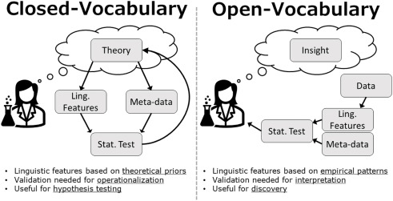
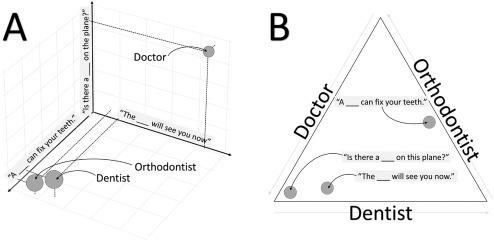
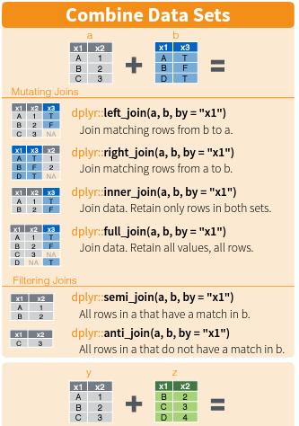
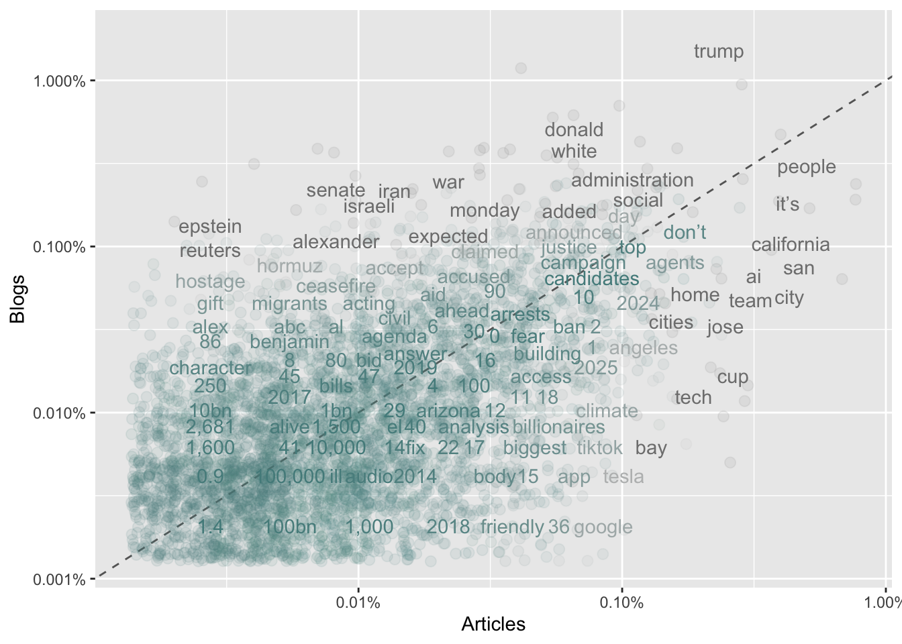

8 Text Analysis Tools, Part I: Text Mining, Sentiment Analysis, Topic Modelling
Text data contains multitudes of information, and can be leveraged to do some powerful things in these times. To gear up for an expidition into text analysis, we will start by learning about text mining.
8.1 Text As Data
We live in a world that increasingly produces text. People are increasingly literate, able to write down their thoughts, and able to share these with the world.
Researchers can use online text data from sources like social media, blogs and news sites, and scientific articles to analyze patterns of human behavior in ways that were not possible just decades ago. Many books and historical information are also digitized, which allows for analysis of archives at scales that were previously impossible.
Unlike the types of data we have examined up to this point (numeric, spatial, categorical), it is not always clear how the researcher should interpret text data. For example, a word like “lead” could take on very different meanings, depending on what it is followed by (“a retreat” vs. “climbing” vs. “pipe”). This means that text data comes with a variety of challenges that were not present for the other types of data we’ve seen. To make meaning of text data, researchers use a variety of strategies, many of which are rapidly changing.
8.1.1 “Families” of Text Analysis
van Loon categorizes text analysis into three “families.” Each of these families is defined in terms of its orientation towards making meaning from the text data.
Term frequency analysis. With this approach, researchers analyze variation in how often certain words appear. In closed term frequency analysis, researchers might define a dictionary (for instance, positive - negative words or masculine - feminine words) and examine how often these words appear in a text document. AFINN is a common dictionary, which gives scores ranging from 5 (most positive) to -5 (most negative). This approach is useful in testing theories. In open term frequency analysis, the researcher looks at correlations between common words and an outcome of interest (like happiness or depression). This approach is useful in exploring data and generating new theories. Figure 8.1 shows theoretical differences between open and closed vocabulary approaches.

Figure 8.1: From van Loon 2022
Document structure. In this approach, researchers seek to understand what a document is about. As noted earlier, words can take on very different meanings depending on the words around them. Therefore, we might want to sort words into topics that make up our documents. As an example of this, (Alvero et al, 2021) study the topics that students write about in college applications. They find topics such as “seeking answers,” “human nature,” “time management,” and “helping others.” They find that correlations between topics and household income (0.16) are higher than the correlation between test scores and income (0.12).
Semantic similarity. Finally, researchers may wish to group words according to semantic meaning. Figure 8.2 shows the words “doctor,” “orthodontist,” and “dentist” mapped onto a semantic space. Here, the researcher is thinking about not just the frequency of words, or how they are grouped with other words, but similarities in meaning.

Figure 8.2: From van Loon 2022
8.2 Newspapers & Books
We will start our journey to analyzing text data with some classic sources: books and newspapers. Luckily for us, there are massive databases of these types of text.
We can start with the gutenbergr R package. We can load this package and read in a book from this list, most of which are in the public domain. We’ll try searching for books from the sociologist Émile Durkheim. It looks like there is one: “The Elementary Forms of Religious Life.”
#install.packages("gutenbergr")
library(gutenbergr)
# Look at Gutenberg books written by Durkheim
gutenberg_works(author == "Durkheim, Émile")## # A tibble: 1 × 8
## gutenberg_id title author gutenberg_author_id language gutenberg_bookshelf
## <int> <chr> <chr> <int> <fct> <chr>
## 1 41360 The Elem… Durkh… 40654 en Browsing: Culture/…
## # ℹ 2 more variables: rights <fct>, has_text <lgl># download book - notice that we need the id number (also on the gutenberg website)
efrl <- gutenberg_download(gutenberg_id = 41360, mirror = "http://mirrors.xmission.com/gutenberg/")Great! The book contains arguments on societies, symbols, and religion:
But what can we actually do with the text? First, let’s take a look at the first 50 rows.
| gutenberg_id | text |
|---|---|
| 41360 | THE ELEMENTARY FORMS OF THE RELIGIOUS LIFE |
| 41360 | |
| 41360 | |
| 41360 | |
| 41360 | |
| 41360 | EMILE DURKHEIM |
| 41360 | |
| 41360 | _The Elementary Forms |
| 41360 | of the |
| 41360 | Religious Life_ |
| 41360 | |
| 41360 | |
| 41360 | TRANSLATED FROM THE FRENCH BY |
| 41360 | JOSEPH WARD SWAIN |
| 41360 | M.A. |
| 41360 | |
| 41360 | |
| 41360 | LONDON |
| 41360 | GEORGE ALLEN & UNWIN LTD |
| 41360 | RUSKIN HOUSE MUSEUM STREET |
| 41360 | |
| 41360 | |
| 41360 | |
| 41360 | |
| 41360 | FIRST PUBLISHED IN 1915 |
| 41360 | SECOND IMPRESSION 1926 |
| 41360 | THIRD IMPRESSION 1954 |
| 41360 | FOURTH IMPRESSION 1957 |
| 41360 | FIFTH IMPRESSION 1964 |
| 41360 | |
| 41360 | _This book is copyright under the Berne Convention. |
| 41360 | Apart from any fair dealing for the purposes of private |
| 41360 | study, research, criticism or review, as permitted under |
| 41360 | the Copyright Act, 1956, no portion may be reproduced |
| 41360 | by any process without written permission. Enquiry |
| 41360 | should be made to the publisher._ |
| 41360 | |
| 41360 | © George Allen & Unwin Ltd. 1915 |
| 41360 | |
| 41360 | PRINTED IN GREAT BRITAIN |
| 41360 | BY HOLLEN STREET PRESS LTD |
| 41360 | LONDON W.1 |
| 41360 | |
| 41360 | |
| 41360 | |
| 41360 | |
| 41360 | CONTENTS |
| 41360 | |
| 41360 | |
| 41360 | INTRODUCTION |
It’s a bit of a mess! But that’s alright, we can clean it up. We’ll start by using the unnest_tokens() function from the tidytext package (remember that you need to install and library this package before using it!). We will also use the dplyr package, which I’ll elaborate on below. The first argument in unnest_tokens(), word, means we want to create a new variable called “word.” The second argument, text, means we want to use the old variable called “text.”
library(tidytext)
library(dplyr)
# try to tokenize into single words
efrl %>%
unnest_tokens(word, text)## # A tibble: 221,635 × 2
## gutenberg_id word
## <int> <chr>
## 1 41360 the
## 2 41360 elementary
## 3 41360 forms
## 4 41360 of
## 5 41360 the
## 6 41360 religious
## 7 41360 life
## 8 41360 emile
## 9 41360 durkheim
## 10 41360 _the
## # ℹ 221,625 more rowsIt’s still a bit of a mess! Maybe even more so. But we are on our way to organizing this dataframe. Notice that in the “text” column, each row contains just one word now, rather than chunks of sentences. We will run this code again with the magrittr pipe to permanently change our dataframe.
Great! Now we can do things like look at the frequency of word lengths:
## .
## 1 2 3 4 5 6 7 8 9 10 11 12 13
## 6194 46225 45439 35671 23386 16599 14183 9948 10009 7142 3120 1685 1084
## 14 15 16 17 18 19 20 21
## 537 334 38 27 6 5 2 1So we see that the majority of words have between 2 and 5 letters, which is probably what we would expect. This is not super interesting, but it’s always good to do data checks like this to catch if anything is seriously wrong! Notice that the $ sign tells the dataframe that we want to select a particular variable, or vector. We could also have used the select() command from dplyr.
Next, we can search for the frequency of particular words or parts of words. For example, maybe we want to know how times the book mentions words like “society” or “religion.” The “|” symbol below denotes “or.”
# count of words that contain "law"
efrl %>%
filter(word == "moral" | word == "symbol" | word == "totem" | word == "society" | word == "religion") %>%
count(word, sort = T)## # A tibble: 5 × 2
## word n
## <chr> <int>
## 1 totem 482
## 2 religion 406
## 3 society 240
## 4 moral 151
## 5 symbol 18We notice that the book mentions “totem” 482 times, but only mentions “symbol” 18 times. This reveals the central role that “totems” play in the book. Whereas a word like “society” might be common in many social science books, “totem” seems more unique. Could we quantify this? More on this later … For now, try running similar code on your own to look at other words! You can use str_starts() and str_ends() to capture words that start or end with certain strings (groups of letters).
8.3 Using APIs to Gather Text Data
We’ve seen one example of an API that runs straight out of an R package, no registration or setup required. However, most take a bit more work on the front end. To get a sense of what this can look like, we’ll try using the API for the newspaper The Guardian.
First, we’ll need a key to access the API. You can obtain one here by clicking “Register for a Developer Key.”
Next, we can install and library the guardianapi R package. There is another R package, “guardian” which also works with this API, but it is not on CRAN, so it is a little trickier to set up. It is often the case that multiple R packages can perform a single task, so we may want to try the other one if we are running into difficulties.
You will also need to run the gu_api_key() command and enter your API key. The Guardian API will let us pull the full newspaper text from Guardian articles within topics and date ranges that we specify. For example, we can pull articles on local issues with the following code:
guardian <- gu_content('"San Jose" AND "California"',
from_date = "2025-01-1",
to_date = "2026-05-11")Let’s take a look at what’s in our dataframe.
## # A tibble: 6 × 45
## id type section_id section_name web_publication_date web_title web_url
## <chr> <chr> <chr> <chr> <dttm> <chr> <chr>
## 1 us-news/… arti… us-news US news 2026-01-30 05:54:00 Matt Mah… https:…
## 2 us-news/… arti… us-news US news 2025-12-09 05:58:55 Communit… https:…
## 3 us-news/… arti… us-news US news 2026-04-08 08:16:37 ICE agen… https:…
## 4 sport/20… arti… sport Sport 2026-01-29 03:37:36 ICE agen… https:…
## 5 us-news/… arti… us-news US news 2026-04-23 12:44:09 Leading … https:…
## 6 us-news/… arti… us-news US news 2026-02-27 21:00:18 Californ… https:…
## # ℹ 38 more variables: api_url <chr>, tags <lgl>, is_hosted <lgl>,
## # pillar_id <chr>, pillar_name <chr>, headline <chr>, standfirst <chr>,
## # trail_text <chr>, byline <chr>, main <chr>, body <chr>, wordcount <dbl>,
## # first_publication_date <dttm>, is_inappropriate_for_sponsorship <lgl>,
## # is_premoderated <lgl>, last_modified <dttm>, production_office <chr>,
## # publication <chr>, short_url <chr>, should_hide_adverts <lgl>,
## # show_in_related_content <lgl>, thumbnail <chr>, legally_sensitive <lgl>, …We notice there are lots of variables! We can take a closer look at a few by using the select() function. For example, you could run the following code to view what we see in the table below:
| headline | byline | web_publication_date | body_text |
|---|---|---|---|
| Matt Mahan, mayor of San Jose, announces run for governor of California | Lauren Gambino | 2026-01-30 05:54:00 | Matt Mahan, the centrist Democrat and mayor of San Jose, announced on Thursday that he would run for governor of California, joining a sprawling but stagnant field to succeed Gavin Newsom. Mahan, 43, is a former tech entrepreneur who was first elected mayor of Silicon Valley’s largest city in 2022. He has touted that his pragmatic approach has helped make San Jose the safest big city in the nation, and has led to a significant drop in homelessness, a chronic problem vexing many large California cities. But the approach also had its critics. Mahan was one of the few prominent Democrats backing Proposition 36, a 2024 tough-on-crime ballot initiative that imposed harsher penalties for some drug and theft offenses. Mahan has long been critical of Newsom, who is term-limited and cannot run again, over the governor’s approach to homelessness, crime reduction and even his social media taunting of the president. In a series of interviews on Thursday, Mahan suggested he saw an opening as a candidate focused less on the national politics dominated by Donald Trump and more on the problems facing the state, including homelessness and the soaring cost of living. “We have a lot of candidates following a tired playbook,” Mahan told Politico. “They’re either running against Trump or they’re running in his image. I’m running for the future of California.” Mahan has not held statewide or federal office. But he has signaled an interest in running for governor for weeks. His entrance into the race, months before the June primary, reflects the unsettled nature of the field, which has so far failed to produce a frontrunner. The Democrats running for governor include the former congresswoman Katie Porter, congressman Eric Swalwell, former health and human services secretary Xavier Becerra, former Los Angeles mayor Antonio Villaraigosa and billionaire climate activist Tom Steyer. Welcoming Mahan to the race, a spokesperson for Steyer, Kevin Liao, said in a statement: “California needs a governor who will stand up to powerful interests, not carry their water.” Speaking at an event in San Francisco hosted by Bloomberg, Newsom said: “I don’t know enough about him. I wish him good luck.” When the moderator followed up, quoting Mahan’s public rebuke of Newsom’s Trump-trolling social media strategy, the governor said the combative posture has been both “style” and “substance” and has “allowed me to drive a conversation that I couldn’t drive in the past”. “I’m trying to put a mirror up,” Newsom said. “I think it’s been important what we’ve done.” • This article was amended on 30 January 2026 to clarify that Tom Steyer’s spokesperson, not Steyer directly, welcomed Matt Mahan to the state governor’s race. |
| Community outraged after California high schoolers form a human swastika | Sara Braun | 2025-12-09 05:58:55 | A photo of eight students lying in the shape of a swastika on a high school football field in San Jose, California, has caused shock and outrage among the Bay Area Jewish community. A Branham high school student posted the photo to social media on 3 December, and included an antisemitic quote from Adolf Hitler in the caption. A screenshot of the post began circulating on Reddit last Thursday and garnered more than 500 comments. The post and the account were removed by Instagram by Friday morning, according to J., the Jewish News of Northern California. The school’s principal, Beth Silbergeld, told the Guardian in a written statement that the social media post was reported to an anonymous tip line on Wednesday evening. She also shared that the school would not be sharing the identities of the students who participated or the disciplinary action taken against them, in accordance with federal laws. “While this incident does not reflect the values of the vast majority of our students and families, the harm it caused is real and must be addressed,” Silbergeld said in the statement. “Many in our community were rightly appalled by the image. This incident is troubling and unacceptable. Professionally, we are committed to learning from this moment and moving forward with greater unity and purpose.” She added: “Our message to the community is clear: this was a disturbing and unacceptable act of antisemitism. Actions that target, demean, or threaten Jewish students have no place on our campuses. CUHSD [Campbell Union High School District] and Branham stand firmly against all forms of hate, discrimination, and intolerance.” Representatives from the Bay Area Jewish Coalition (BAJC), a grassroots organization dedicated to ensuring the safety of Jewish Bay Area residents, shared that the impact of the social media post has reverberated beyond San Jose. “To have children echoing Hitler’s words is frankly just shocking and heartbreaking, and the entire community has been rocked by this,” Tali Klima, a BAJC spokesperson, said. “This bold and premeditated display has really shaken everyone.” Maya Bronicki, BAJC’s education lead, attributed the incident in part to a lack of proper Holocaust education and historical context on hate symbols, such as the swastika. “We have absolute faith that if the district takes actual measures to teach students the right lessons about being inclusive and anti-hate, that Jews are a minority that deserve compassion and understanding and deserve to be equal to everyone else in this education system, then that would be a huge step towards tomorrow’s society,” she said. The school district is planning to work with BAJC, as well as the Anti-Defamation League and the Jewish Community Relations Council of the Bay Area to address and repair harm caused by the incident. |
| ICE agents shoot man in car in northern California | Uwa Ede-Osifo | 2026-04-08 08:16:37 | Immigration and Customs Enforcement (ICE) agents shot a man in a vehicle in northern California on Tuesday. ICE agents conducted a vehicle stop in Patterson, a rural agricultural town in California’s Central valley about 80 miles east of San Jose, to arrest Carlos Ivan Mendoza Hernandez, ICE’s director, Todd Lyons, said in a statement. Lyons described Hernandez as a member of the Los Angeles 18th Street gang and said he was wanted for questioning in El Salvador related to a murder. Lyons did not provide evidence of that allegation. The details of that investigation remain unclear. Hernandez was hospitalized after the shooting. A spokesperson for the Stanislaus county sheriff’s office, which has jurisdiction over Patterson, declined to comment on Hernandez’s condition. According to Lyons, as agents approached the car, Hernandez “weaponized his vehicle in an attempt to run an officer over”. In response, the officers “fired defensive shots to protect themselves, their fellow agents and the public”, Lyons said. It is unclear how many shots were fired. KCRA-TV, an NBC affiliate in Sacramento, obtained dashcam footage showing the Tuesday incident. In a video with no audio, three ICE agents were seen flanking a black sedan. The black sedan was pinned between two other vehicles – respectively at its front and back – with flashing police lights. As the officers appeared to reach into the vehicle, the black sedan reversed with its right passenger door open. That door collided with the car behind it. The agents appeared to have their weapons drawn as the car reversed. The black sedan then lurched forward in the direction of the officers, before taking a left turn to cross the median into the opposite side of traffic and disappearing from view in the clip. The sheriff’s office wrote in a Tuesday post to Facebook that no local law enforcement officers were involved in the shooting. The local FBI office in Sacramento, which could not be reached for comment by phone, shared on social media that an investigation into the shooting was under way. California governor Gavin Newsom’s office wrote on social media that he had been briefed on the incident. “As is established practice, we expect our federal law enforcement partners to appropriately collaborate with state and local law enforcement as this matter is investigated,” his office said. The Patterson incident comes during a period of fierce scrutiny for ICE. Over the past year, the Trump administration has ramped up raids and arrests targeting undocumented immigrants, as the president seeks to fulfill a campaign promise to secure the US-Mexico border. The deployment of federal immigration agents across the nation has spurred many protests. ICE agents have faced condemnation over violent clashes with demonstrators and have been accused by critics of displaying excessive use of force against those they have sought to detain. At least eight people have been shot by ICE agents in 2026. Patterson is home to many Hispanic and Latino residents and is located in California’s Central valley, a farming hub. The region has seen a surge in ICE arrests – up by 58% between 1 January and 31 July of last year, after Trump returned to office, according to the Fresno Bee. Patterson’s mayor, Michael Clauzel, did not immediately respond to a phone call for comment. |
| ICE agents expected to be deployed for Super Bowl in California, officials say | Dani Anguiano | 2026-01-29 03:37:36 | US Customs and Immigration Enforcement (ICE) agents are expected to conduct immigration enforcement operations during next month’s Super Bowl game in Santa Clara, California. Local officials confirmed to media that ICE is expected to deploy for the game between the Seattle Seahawks and the New England Patriots. ICE’s Homeland Security Investigations team has long worked the Super Bowl and other major sporting events, largely focused on preventing human trafficking and stopping the sale of counterfeit goods, but immigration operations would be unusual. “We have heard from the administration that they intend to have ICE at the Super Bowl. I don’t know how much of that is rhetoric,” Matt Mahan, the San Jose mayor, told KTVU. The Department of Homeland Security (DHS) declined to confirm reports about operations around Levi’s Stadium on 8 February, writing in a statement that the agency does “not disclose future operations or discuss personnel”. “DHS is committed to working with our local and federal partners to ensure the Super Bowl is safe for everyone involved, as we do with every major sporting event, including the World Cup,” said DHS assistant secretary Tricia McLaughlin, adding that security for the event would include a response “conducted in-line with the US constitution”. “Those who are here legally and are not breaking other laws have nothing to fear.” The move, which comes as the administration faces mounting criticism over its immigration enforcement operations in Minnesota and the killings of two US citizens by federal agents, has caused concern in the community, particularly for vulnerable families. “It’s going to increase the level of tension and fear in our area,” Peter Ortiz of the San Jose city council told the San José Spotlight. “We’re already seeing that they are scared to go out to eat, scared to go to the local corner store, scared to send their kids to school.” Corey Lewandowski, an adviser to the DHS secretary, Kristi Noem, announced last fall that agents would conduct operations during the Super Bowl. “There is nowhere that you can provide safe haven to people who are in this country illegally, not the Super Bowl, and nowhere else,” Lewandowski said on the Benny Johnson podcast. “We will find you, we will apprehend you, we will put you in a detention facility and we will deport you.” Noem also confirmed ICE operations at the game during an interview with that same podcaster. “We’ll be all over that place,” she said. “We’re gonna enforce the law so I think people should not be coming to the Super Bowl unless they are law-abiding Americans who love this country.” The agency has collaborated with the NFL for two decades, according to a DHS statement, and sent nearly 700 employees to New Orleans last year to aid in security for the event, and “intellectual property enforcement”. But Trump administration officials have derided the NFL as “woke” and criticized the decision to have Bad Bunny perform at this year’s half-time show. The Puerto Rican artist, who will perform along with Green Day, opted not to include US stops on his latest tour over concerns his fans could face ICE raids. Donald Trump described the half-time show entertainment this year as a “terrible choice” and said he will not attend the game. |
| Leading California governor candidates spar in debate as topsy-turvy race heats up | Lauren Gambino in Los Angeles | 2026-04-23 12:44:09 | Six candidates vying to become the next governor of California sparred on Wednesday in the first debate since the already topsy-turvy race was plunged into upheaval by the sudden collapse of former congressman Eric Swalwell’s campaign after sexual assault and misconduct allegations. With a clear frontrunner still yet to emerge, the unusually wide-open race to replace the outgoing governor, Gavin Newsom, in the heavily Democratic state has left nearly a quarter of voters undecided ahead of the 2 June primary. While sharp contrasts emerged over how to address some of the state’s biggest anxieties – from the high cost of living and housing affordability, to homelessness and the looming threat of artificial intelligence – the evening probably did little to settle the race with less than two weeks before ballots begin arriving in voters’ mailboxes. The primetime showdown, hosted by Nexstar Media Group in San Francisco, featured two Republicans – Steve Hilton, the former Fox News host and director of strategy to former UK prime minister David Cameron, and Chad Bianco, the sheriff of Riverside county – and the four leading Democrats: billionaire Tom Steyer, former health secretary Xavier Becerra, former congresswoman Katie Porter and the San Jose mayor, Matt Mahan. The Democrats largely agreed on policy, but jostled with one another over the best way to bring down high prices and challenge Donald Trump. The Republicans, meanwhile, blamed the state’s woes on 16 years of “failed” Democratic governance. “The system is not working,” said Hilton, who has consistently led in polling and recently earned Trump’s endorsement. Asked about Newsom’s handling of the state’s long-running homelessness crisis, most of the Democrats on stage gave him a passing grade. Porter gave him a “B” and credited the governor with recognizing the role of housing as a root cause, drawing a retort from Hilton, who quipped: “Wow. I’d love to take your class, Katie, if you get a B for what Gavin Newsom’s done on homelessness.” He said he would give Newsom an “F”. With the exception of a few sharp jabs, the debate lacked a standout moment that could jolt the contest or crown a frontrunner. But it offered a platform for the candidate to introduce themselves to Californians who are beginning to tune in. “We need someone who knows how to govern in a crisis, not someone who’s going to need training wheels the moment they walk into the governor’s office,” Becerra said, touting his record of clashing with Trump during his time as the California attorney general. Both Becerra and Mahan were late additions to the debate stage, having seen their support rise after the implosion of Swalwell’s gubernatorial campaign. Steyer, who has leaned on his personal fortune to blanket the airwaves and push himself to the top of the Democratic pack, has angled for the progressive mantle, casting himself as “the billionaire who wants to tax other billionaires”. Porter, a protege of the progressive senator Elizabeth Warren, argued that she uniquely understood the financial strain millions of Californians faced. “I’m not like them,” she said. “I’m like you – a mom fighting for a better future for California.” As they angled to distinguish themselves, several of the Democrats took shots at Steyer, who has led the Democratic pack. Mahan remarked that the “only housing Tom Steyer’s built has been private prisons and ICE detention centers,” repeating criticism of Steyer’s past business interests and investments. Steyer has expressed remorse over his former hedge fund’s past investments. On stage on Wednesday, Steyer reminded voters that he was the only billionaire on the ballot, but that billionaires were spending heavily to defeat him, including many Silicon Valley leaders who are backing Mahan. During the hour-long exchange, the candidates were pressed on some of the major issues facing their campaigns. Porter addressed a contentious exchange, captured on video, with a staffer, acknowledging that it was “not the right way to treat someone”. “I work hard with my team to deliver for Californians,” she said. Mahan defended his tech ties and his record, arguing that as mayor of the largest city in Silicon Valley he would bring a unique understanding of the promise and peril of artificial intelligence to regulatory debates. He vowed to be an independent voice in Sacramento, playing up his readiness to “take on the establishment within my own party”. Becerra was asked whether he should have done more as chair of the Democratic caucus to address “rumors” about Swalwell’s behavior. “Rumors are not facts,” he said. He applauded the women who came forward and shared their stories. “Today Eric Swalwell was facing accountability,” he said. Swalwell, who resigned from Congress last week, has vigorously denied the assault allegations. Bianco, questioned about his recent decision to seize more than half a million ballots cast in a November special election from county election officials, insisted the inquiry was a “very, very basic, normal investigation”. Since the state supreme court intervened to halt his investigation, Bianco claimed: “We’re never going to know if our elections are secure.” Hilton, meanwhile, insisted Trump’s endorsement was a strength, even though nearly two-thirds of Californians disapprove of the president. “It will benefit every Californian to have a governor who is a partner on these issues with the president and his team,” he contended. The state’s next governor confronts an increasingly pessimistic electorate, concerned about affordability and bracing for a worse economic future, according to the Public Policy Institute of California. “We have the highest cost of living in the country because we have had one-party Democrat, progressive rule for decades that is destroying the state,” Bianco said. But despite the malaise, a Republican candidate still faces a massive uphill battle in a state where they are outnumbered by Democrats two to one. The recent upheaval in the race did little to ease Democrats’ fears that a failure to consolidate the field might produce the once-unthinkable prospect of two Republicans advancing to the November general election in the country’s largest blue state. Under California’s “jungle primary” system, the top two vote-getters advance to the November election, regardless of party. Bianco, when asked if he would support Hilton in a general election match-up against a Democrat, said he would not because he believed they would both advance. All of the other candidates said they would support the nominee from their party. The state party chair, Rusty Hicks, has been urging low-polling Democrats to exit the race, even though at this late stage their names will still appear on the June ballot, as will Swalwell’s. On Monday, Betty Yee, a former state controller, suspended her campaign for governor and endorsed Steyer. The former Los Angeles mayor Antonio Villaraigosa and state superintendent of public instruction, Tony Thurmond, both Democrats, failed to qualify for the Wednesday night debate. |
| California fast food workers, still reeling from ICE raids, demand employers step up | Michael Sainato | 2026-02-27 21:00:18 | Fast food workers in California are demanding employers sign a pledge reaffirming workers’ rights amid Immigration and Customs Enforcement (ICE) raids at workplaces across the US. The California Fast Food Workers Union, an affiliate of the Service Employees International Union, drafted a Constitutional Pledge to California Workers’ Rights for workplaces to sign that affirms a commitment to protecting workers and “keep ICE from going where they are not allowed”. The pledge includes a list of actions that would protect vulnerable workers, such as making sure workers have access to private, protected areas in the workplace and ensuring that enforcement officers aren’t entering these spaces without a judicial warrant. In San Jose, workers at a McDonald’s franchise walked out earlier this month after management declined to affirm they would help employees if ICE showed up, telling workers to instead hide in their cars should enforcement arrive. “McDonald’s has the legal right to deny [immigration enforcement officers] entry to private areas of the store if they don’t present a warrant signed by a federal judge,” wrote the California Fast Food Workers Union in response to the strike, adding that other “businesses have put up signs as well as trained their staff to enforce that right”. Candida Masin, a McDonald’s worker in Los Angeles, told the Guardian that as immigration enforcement ramped up over last summer, co-workers started calling out of work. “They say that they are not going to come to work because ICE is close and they are afraid to leave their home. That impacts us because we have to take on their workload,” Masin said, adding that it has also affected the number of customers visiting her store. “ICE agents were raiding areas just two blocks from where I was and I saw my co-workers crying, I saw customers that were really scared. I had to take on double duty to help calm their nerves because I could see how this fear really impacts people.” Masin said she and other fast food workers have visited dozens of different franchise locations to push them to sign on to and post the pledge, which outlines how workplaces can keep “ICE and other federal agents from going where they are legally not allowed, protect workers’ privacy and ensure workers’ safety”. Though the immigration enforcement operations in Los Angeles have calmed since last summer, ICE continues to conduct raids and arrests across the city, which is home to an estimated 3.5 million immigrants. Of the more than 630,000 fast food workers in California, over a quarter are immigrants. Fast food workers in Los Angeles and Santa Clarita counties in California have also been pushing for a fast food fair work ordinance, which would provide paid trainings for workers to learn about their rights on the job. Masin argued it’s important for employers to educate workers and affirm their rights in the workplace to mitigate the anxiety they have when showing up to work. “The fear is there and if people don’t know their rights, the fear will always be there in their minds,” added Masin. “It helps when you know your rights. If you don’t, then you won’t feel a difference in your workplace.” McDonald’s and the California Restaurant Association did not respond to multiple requests for comment. Donald Trump’s ramped up immigration enforcement in California has resulted in a downturn in private sector jobs throughout the state and economic losses for businesses. Following Trump’s deployment of the national guard to Los Angeles last summer, private sector jobs recorded a 5% decline in June and July, according to a recent study by the University of California Merced’s Community and Labor Center. A Los Angeles county report found that 82% of local businesses reported negative impacts from the immigration raids and 44% reported losses of greater than half their normal revenue. “Working people across Los Angeles are demanding global fast food employers sign the constitutional pledge to declare they are choosing courage over silence and dignity over fear,” said David Green, president and executive director of SEIU Local 721 in Los Angeles. “Fast-food companies must stand with cooks and cashiers in this moment, and do their part in building workplaces and communities where all of us can thrive together, stronger and unafraid.” |
| Southern California sees third death from atmospheric river storm drenching region | Edward Helmore and Maya Yang | 2025-12-26 08:25:09 | A strong rain and wind storm, carried by an atmospheric river from the Pacific, has been blamed for a third death in southern California as flooding, road closures and debris flows are reported across the region. A flood watch was also extended through Thursday for almost all of the area, as more than 11in of rainfall was measured in some parts of Los Angeles county as of Wednesday night and evacuation warnings were issued for mountain communities in San Bernardino county. “There is a moderate risk of excessive rainfall over parts of southern California,” the US Weather Prediction Center said in a forecast early on Thursday. “Numerous flash flooding events are possible. In addition, many streams may flood, potentially affecting larger rivers.” On Wednesday, California’s governor, Gavin Newsom, declared a state of emergency in Los Angeles county and other southern California counties, citing flooding and landslides risks in areas affected by last year’s wildfires. The Los Angeles mayor, Karen Bass, declared a local emergency. “I am urging all Angelenos to stay safe and be extremely careful on the roads if you absolutely must travel. Please do not take this storm lightly – follow official guidance, plan ahead and sign up for emergency alerts,” she said. At about 1pm on Thursday, the San Bernardino county sheriff’s department changed the shelter-in-place order for the community of Wrightwod to an evacuation order. “There is still a potential for mud and debris flows from an approaching storm that may affect your area,” the sheriff’s department said. The powerful storm, which is forecast to continue over the Christmas holiday until Saturday, has already prompted evacuations and brought with it road closures, flooded freeways and flight delays. On Thursday afternoon, 102,900 customers were reported to be out of power across the state, according to Poweroutage.com. The majority of the outages were reported in Monterey, in central California, where 15,458 customers were without power. A 64-year-old man was killed in the City Heights neighborhood of San Diego on Wednesday morning when a 75ft-tall tree fell on him, the San Diego police department said. The family of Roberto Ruiz told NBC 7 San Diego that he stepped out of their home to move his car when part of the tree fell, crushing him. A woman was also swept nine miles down San Jose Creek before she was rescued, the Los Angeles county fire department said. The woman, whose name has not been released, was first spotted in the creek but when rescue crews arrived she had already been carried downstream. “She went downstream for a while,” Pauline McGee, a spokesperson for the Los Angeles county fire department, told the LA Times. In Los Angeles, evacuation orders were issued for about 130 homes considered especially vulnerable to mudslides and debris flows in areas where last year’s wildfires ravaged the Pacific Palisades neighborhood. As of Thursday afternoon, the Los Angeles fire department had deployed teams to three river rescue incidents. Meanwhile, the city’s police department responded to more than 100 traffic accidents, although there were no traffic-related injuries or deaths. The city’s water and power department crews were also working to restore power to 7,783 reported outages. Moreover, the city’s transportation department crews were working to restore five traffic signals that experienced outages while other city crews worked to address reports of nearly 500 tree emergencies including downed trees and fallen branches. Across the city, residents could pick up free sandbags at all fire stations, with up to 25 reserved for each household. The burned vegetation had made the land unable to soak up the water, experts said. “Those soils are still hydrophobic, which means that rain just runs off like it’s hitting hard dirt or concrete,” said Scott Kleebauer, a meteorologist at the Weather Prediction Center, told Bloomberg. “There are burn scars that have lasted for four or five years before you see any improvement.” The Angeles Crest Highway, a major traffic route through the San Gabriel Mountains, was closed in two stretches due to flooding. National Weather Service meteorologist Ariel Cohen said 4-8in of rain had fallen in some foothill areas, and the Los Angeles City News Service reported numerous rockslides in the mountains. Forecasters also issued a rare tornado warning for a small portion of east-central Los Angeles county due to heavy thunderstorm activity over the community of Alhambra. As of Wednesday night, rainfall over the region had subsided, but a second wave of the storm system was due to hit on Thursday, forecasters said. |
| Deloitte and Zoom’s trims to parental-leave benefits may hurt them in long run, experts say | Eric Berger | 2026-04-28 18:00:08 | Recent moves by US companies Deloitte and Zoom to reduce how much paid parental leave they offer employees could signal a larger reduction in benefits in corporate America, according to labor market experts. American workers are already seen as having less benefits and labor protections than many of their counterparts across the world, especially in Europe. Leadership at the huge accounting and communication technology companies probably made the decisions because the labor market has stagnated, meaning that people looking for jobs do not have the same leverage when considering a job opening, the experts say. But while cutting the benefit might help companies save money in the short term, some consultants argue that the moves will ultimately hurt companies because it will make workers less productive, among other negative consequences. “It feels like someone is just looking at a spreadsheet saying, ‘How can I get more hours?’” said Bobbi Thomason, a professor of applied behavioral science at Pepperdine Graziadio Business School. But that is “overlooking the fact that there are human beings on the other side and overlooking” the question, “what state are people going to be in when we’re in the office”? The United States is the only developed country that does not guarantee paid parental leave. The remaining 37 countries within the Organisation for Economic Co-operation and Development offer at least some paid maternity leave, mostly through social insurance funds that are supported by employer, worker and government contributions, according to the Bipartisan Policy Center. For example, Austria offers 16 fully-paid weeks of maternity leave; Denmark guarantees 22 weeks with an average payment rate of 48%, according to a Syracuse University report. Still, 13 US states and the District of Columbia have enacted mandatory paid leave systems. Most federal employees are also guaranteed up to 12 weeks of paid parental leave. And last year, US House members introduced bipartisan legislation to establish a program in which the Department of Labor would provide grants to states that establish paid family leave programs through public-private partnerships. Parental leave policies not only help new parents, but also have larger societal benefits, according to advocates. Each $1,000 in taxpayer-funded paid parental leave creates more than $20,000 in societal benefits, including increases in the mother and infants’ health and in infants’ earnings in adulthood, according to a study from the Center on Poverty and Social Policy at Columbia University. “We have seen when people have access to paid parental leave through their companies or publicly pretty dramatic improved outcomes from a health perspective and also from an economic perspective,” said Abby McCloskey, a non-resident fellow in economic studies at the Brookings Institution who has advocated for paid parental leave. Despite those benefits, Deloitte, which employs more than 470,000 people and generated more than $70bn in revenue during fiscal year 2025, is reducing its paid parental leave, Business Insider reported. Starting in January 2027, employees who fall under its “Center” designation, meaning those who work in support roles like administration, IT support and finance, will see their parental leave cut from 16 weeks to eight weeks and will lose a $50,000 adoption and surrogacy reimbursement, which covers in-vitro fertilization treatment. “Deloitte US is modernizing its talent architecture to provide a more tailored experience reflective of our professionals’ broad range of skills and the work they do serving our clients,” the company said in a statement. “Benefits are regularly updated and will be tailored for a small subset of professionals to better align with the marketplace.” At Zoom, which generated more than $4.8bn in revenue in fiscal year 2026 and employs more than 7,400 people, birthing parents now get 18 weeks of paid parental leave, rather than 22 to 24, and non-birthing parents get 10 weeks, down from 16, Insider reported. “Zoom is committed to employee wellbeing and providing support for new parents,” a spokesperson stated in an email to the Guardian. “We regularly review our benefits to ensure they remain aligned with the marketplace and the long-term health and sustainability of our business. We are confident our overall compensation and benefits package – including our updated parental leave policy – remains competitive and in line with peers.” Company leaders might have decided to scale back their benefits because the labor market has loosened or there was little adoption of the parental leave offering, said Claudia Olivetti, a Dartmouth College economics professor. In 2025, the US economy saw almost zero job growth. Since there are now more people looking for work, companies might not have the same incentive to offer generous paid parental leave, Olivetti said. Still, even at 18 and eight weeks, Zoom and Deloitte’s parental leave policies are better than many companies. In March 2023, only 27% of civilian workers had access to any paid family leave through their employer, according to the US Department of Labor. But by reducing the amount of leave offered, Deloitte, one of the big four accounting firms, “gives permission for other folks to roll things back”, Thomason said. Still, because Deloitte had offered more leave than many other US companies, “I don’t actually worry about a contagion effect,” McCloskey said. For Deloitte and Zoom, the cuts could ultimately hurt them. “It’s unclear to me how much money you would be saving in exchange for the negative publicity, especially when we have fertility rates going down and people having fewer kids,” McCloskey said. And for the people impacted, the cuts could change the way they see their employers, Thomason said. “You’re losing long-term loyalty,” Thomason said. “People may be staying in the office or staying in these roles, but these organizations have just burned a bridge, and I don’t think you’re going to be getting the best work from your employees.” |
| Pat Tillman’s brother arrested for driving into California post office – report | Guardian staff and agencies | 2025-07-21 23:30:21 | Police are investigating a car that crashed into a post office in San Jose, California, early on Sunday, causing the building to go up in flames, authorities said. Police reportedly took Richard Tillman – brother of NFL star turned army enlistee Pat Tillman – into custody as a suspect. The crash happened shortly before 3am at the office located in a strip mall south of downtown, according to the San Jose police department. No injuries were reported. About 50 firefighters took about an hour and a half to knock down the flames. Photos posted online by the fire department showed a charred car inside the heavily damaged building. According to NBC Bay Area, the suspect told officers on the scene he was Pat Tillman’s brother. Pat Tillman, a San Jose native, was a safety for the Arizona Cardinals football team who walked away from a multimillion-dollar contract to serve in Iraq after the September 11 attacks. He became an even greater hero in death when he was killed in Afghanistan two years later – until it came out that the Pentagon had lied to cover up that his death was from friendly fire. The Santa Clara county sheriff office’s inmate locator showed a Richard Tillman was booked on Sunday and was being held without bail. ABC News later reported that Tillman was booked on suspicion of arson. The network also said it had been told by federal investigators that they were investigating spray-painted words found on the post office building as well as claims that the driver livestreamed crashing into the building. Pictures from the scene showed the words “viva la me” were spray-painted on the outside of the building. There is no information so far about what charges Richard Tillman was booked on. An email was sent to the US Postal Inspection Service seeking additional details. Nearly 2 million people live in the metropolitan area of San Jose, about 50 miles (80km) south of downtown San Francisco. |
| Divide between Silicon Valley and ordinary people grows ever larger | Blake Montgomery | 2026-03-24 20:58:47 | Hello, and welcome to TechScape. I’m your host, Blake Montgomery. This week in tech, we discuss a moment of divergence between Silicon Valley and everyday people; deep cuts at Meta to maximize spending on AI; writers caught using AI; and the frightening, fiery crashes of the Tesla Cybertruck. AI agents v everyday life Nvidia hosted a conference last week where it emphasized AI agents – semi-autonomous chatbots that can perform digital tasks for you – as the next frontier in tech. The company announced a toolkit for agents, including NemoClaw, an AI agent software suite for businesses. Nvidia is in the business of riding the cutting edge of technology, and it sees a bright future. At the conference, CEO Jensen Huang predicted that his company would rake in $1tn in sales through 2028, which equates to 3% of the entire US yearly GDP, an astronomically high figure. The “Magnificent Seven”, of which Nvidia is first and foremost, grew nearly four times as much as the S&P 500 in the past 10 years, according to the Motley Fool. As Nvidia and co double down on the AI race, the divide between Silicon Valley and everyday people grows wider and deeper. The novelist William Gibson, who coined the term “cyberspace”, once wrote that “the future is already here. It’s just not evenly distributed”; his dictum very much applies today. Polling released earlier this month found that 65% of Americans don’t use AI in their work at all – nary a chatbot, much less dispatching an AI agent. Pew Research’s survey also shows that Americans are wary of AI and believe both of the main political parties are regulating it poorly. Residents of other countries polled are even more skeptical, according to Pew. In my own perusal of Guardian readership numbers, I find our readers flock to stories about AI’s evils, failures and costs far more than to positive stories. The AI industry is splitting away from the lives of everyday people. Exclusive polling conducted for the Guardian last year found that twice as many Americans believe their financial security is getting worse than better, hardly half as optimistic as Huang’s prediction. Meta reallocates its ambitions Two developments at Meta in recent weeks illustrate the all-consuming investment the company is making in artificial intelligence at the expense of its other business units. First, Reuters reported that the social media giant was considering laying off up to 20% of its workforce to offset its ballooning expenditures on AI, which include a datacenter the size of Manhattan. Second, Meta revealed that it would scale down its once-lofty ambitions to create a metaverse, though it later attempted to walk that announcement back. The company announced last week that it would shutter the virtual reality version of Horizon Worlds, leaving only the mobile and web-based versions of the game operable. A few days later, Meta’s chief technology officer said the game would not shut down entirely. Whatever the end result of those conflicting announcements may be, their upshot is that Meta is placing far less emphasis on virtual reality than it once did. Earlier this year, the company had already laid off members of its Reality Labs division, responsible for the metaverse. Meanwhile, it hired AI researchers at a rapid and expensive clip throughout 2025. Meta is reallocating huge amounts of its spending to AI. In multiple recent earnings calls, the company disclosed that its spending on AI infrastructure would be larger than anticipated. Despite the continued success of the company’s ad business, that money has to come from somewhere. Reappropriating spending from a division that has never turned a profit and racked up losses larger than a small country’s budget makes sense. Reality Labs has recorded losses of $80bn since 2020, per CNBC. The scale of Meta’s reshaping is staggering, though, and may portend what’s to come across all of tech; we have not seen a tech giant cut up to a fifth of its workforce to offset just how massive its AI spending has become. Tech giants may start spending the bulk of their cash not on human talent, once the most valuable commodity in tech, but on hardware and infrastructure that will keep them ahead in AI. Even the CEO wants AI to do his job. Mark Zuckerberg is building an AI agent geared towards performing his work as CEO of Meta, the Wall Street Journal reported on Sunday. He’s using it to retrieve information that might be buried within layers of bureaucracy, per the Journal. Zuckerberg proudly declared that Meta would spend tens of billions to become “a metaverse company”, even renaming it to signal those ambitions in 2021. Now he says Meta is pivoting to become “AI-native from day one”. The FBI and mass surveillance How the FBI can conduct mass surveillance – even without AI Kash Patel admits under oath FBI is buying location data on Americans Why is the FBI buying people’s location data and how is it using the information? Be careful if you ride in a Cybertruck You might want to bring a window cracker if you do. Cybertrucks have locked passengers inside and burned so hot they have disintegrated drivers’ bones. Victims’ families blame what they say is the faulty design of a truck Elon Musk calls “apocalypse-proof”. The Guardian has tracked five known Cybertruck fires – a significant number, considering the vehicle has only sold 60,000 units and debuted just two years ago. These incidents involve four fatalities, including the deaths of three college students in California, and have been the subject of four lawsuits against Tesla. In a comprehensive look at fire danger, particularly of Cybertrucks, the Guardian has obtained hundreds of pages of police, fire and autopsy reports and court filings and company manuals, and has interviewed lawyers and safety experts. They – as well as the families suing Tesla – allege the Cybertruck’s design led to these worst-case scenarios where fires rapidly ignite, the vehicle’s electric door handles won’t unlock and passengers are trapped inside. Fires that entrap passengers are a well-documented and recurring problem with every model in Tesla’s lineup of vehicles, but Cybertrucks appear to have a disproportionate number of known deaths. Safety experts have told the Guardian that the truck’s unique design amplifies the deadly issue. The vehicles come with high-density laminated windows that are harder to break than regular car windows, making escape and rescue difficult when doors won’t unlock. And the trucks are built with materials, such as stainless steel, not commonly used in the industry, which can complicate the work of emergency responders. The Cybertruck is also the first Tesla model to entirely eliminate door handles on the outside of the vehicle. Read the Guardian’s investigation: Inside the fiery, deadly crashes involving the Tesla Cybertruck The wider TechScape Thousands of people are selling their identities to train AI – but at what cost? New crypto regulations likely to be big favor to the Trump family, industry insiders say Google co-founder spends $45m in fight against California billionaire tax Inside China’s robotics revolution Musk responsible for Twitter investors’ stock dropping when he bought company, jury rules |
| California’s billionaires pour cash into elections as big tech seeks new allies | Dara Kerr | 2026-02-15 21:00:22 | Tech billionaires are leveraging tens of millions of dollars to influence California politics in a marked uptick from their previous participation in affairs at the state capitol. Behemoths such as Google and Meta are getting involved in campaigns for November’s elections, as are venture capitalists, cryptocurrency entrepreneurs and Palantir’s co-founders. The industry’s goals run the gamut – from fighting a billionaire tax to supporting a techie gubernatorial candidate to firing up new, influential super political action committees (Pacs). The phenomenon squarely fits the moment for the state’s politics – with 2026 being the year that Politico has dubbed “the big tech flex”. Gavin Newsom, California’s tech-friendly governor who has been quick to veto legislation that cramps the sector’s unfettered growth, is reaching his term limit. That means Silicon Valley needs to find a new ally. The industry may have found its candidate in an upstart mayor from San Jose, Matt Mahan. Silicon Valley’s businesses and billionaires – some of the richest and most powerful on Earth, most of which are headquartered in California – are in the midst of a huge AI boom. Industry insiders say tech companies need to ensure they can continue to flourish without regulations getting in the way. “This is a golden opportunity and a golden moment for tech to reset its priorities and its perceptions,” said David McCuan, a political science professor at Sonoma State University who studies state lobbying. Rather than going all-in on one candidate or issue, McCuan said the tech sector was using a multi-pronged attack in California. Tech billionaires are contributing to campaigns ranging from candidates for governor to local city council and school board races. They are also donating heavily to groups campaigning for relaxed taxation and minimal regulation around AI. “If you’re an uber-zillionaire, you give money early and often,” McCuan said. “They have more wealth and resources than they’ve ever had before, so that allows them to play on both sides of the aisle and up and down the ballot and across issues like never before.” Unlike other industries, such as oil and pharma, tech has been relatively tame when it comes to lobbying in the state. The industry has tended to focus on narrow state issues and instead spent big and broad at the federal level (aside from Uber and Lyft’s giant $200m ballot measure campaign in 2020). That ethos has changed. California is now ground zero for tech titans working to become omnipresent in politics. Robert Singleton, the senior director of policy in California for the tech industry group Chamber of Progress, said this moment has been brewing for a long time and it just needed the right thing to set it off. “The introduction of that billionaire tax obviously galvanized a lot of wealthy individuals who don’t want to see that happen, and who will spend money to make sure it doesn’t happen,” Singleton said. “That tipped them into wanting to get more involved.” Billionaires fight a tax The “California Billionaire Tax Act”, often referred to simply as the billionaire tax, is a proposal that would require any California resident worth more than $1bn to pay a one-off, 5% tax on their assets to help cover education, food assistance and healthcare programs in the state. It’s sponsored by the Service Employees International Union-United Healthcare Workers West, and if it receives enough signatures from California voters, it will go to the ballot in November. When the proposal was put forward at the end of last year, many among tech’s billionaire elite threw a tantrum. Some opened offices or bought mansions in Florida or Texas, vowing to leave California for good. The fleeing rich included the Palantir co-founder Peter Thiel, whose current net worth is $25bn; Google co-founders Larry Page and Sergey Brin, worth about $255bn and $240bn respectively; and Donald Trump’s AI and crypto czar, David Sacks, whose net worth is not publicly known. Earlier this week, the Wall Street Journal reported that Meta’s CEO, Mark Zuckerberg, worth $229bn, had also bought a property in south Florida valued between $150 and $200m. Thiel has additionally led the charge in donating to a lobbying group, the California Business Roundtable, which has pledged to fight the wealth tax. The Palantir co-founder handed over $3m to the political action committee in late December. Other major donors include realtors, entrepreneurs and private equity firms. James Siminoff, who founded the camera-embedded Ring doorbell company, also donated $100,000, according to public records. “The most powerful money in politics is to be on the no-side of a ballot measure,” said McCuan. “You can even pre-empt something getting to the ballot, like a billionaire’s tax, by explaining to everyone out there that this is a bad idea for economic growth.” Tech investors and venture capitalists have been extremely vocal in their opposition to the tax, saying that the state will lose revenue as billionaires flee and it will hurt the state’s ability to be economically competitive. Just this week, Chamath Palihapitiya, a former Facebook executive and current venture capital investor, wrote “the loss of this tax revenue was totally avoidable but is now forever”. Balaji Srinivasan, an investor and former chief technology officer of Coinbase, wrote, “the most successful tech founders of all time have now exited the failed state of California”. Adding on, Paul Graham, the co-founder of seed capital firm Y Combinator, wrote: “It’s important that people like Zuck and Larry Page are willing to move in response to the proposed wealth tax. It shows politicians what will happen if they try things like this.” Joining the billionaires, Newsom has pledged to fight the tax, saying it will “drive a race to the bottom” and stifle innovation as the ultra-wealthy leave. “This will be defeated – there’s no question in my mind,” Newsom told the New York Times in January. “I’ll do what I have to do to protect the state.” Super Pacs aplenty Outcry over taxes is just one of the ways the tech sector is ramping up its influence campaign. Several Super Pacs have popped up over the past few months and tech is injecting these committees with tens of millions. McCuan said this strategy was helpful for the ultra-wealthy because it allows them to stay behind the scenes, while donating limitless money. “You could create some amorphous sounding organization like ‘Californians for All That is Good and Right Under the Sun’,” McCuan said. “And who knows what the hell that is, but that entity becomes the vehicle to which others give money … and it becomes very difficult to unpeel and unfurl what is going on.” Meta launched two new Super Pacs last fall, which are focused on dialing back AI regulation and supporting AI-friendly candidates. The company contributed $45m to one, the American Technology Excellence Project, which will operate in several states but has not yet established a committee in California. The other, Mobilizing Economic Transformation Across (Meta) California, is state-specific and has received one $20m contribution from Meta. The social media giant has also matched Google in infusing a separate Super Pac called California Leads with a total of $10m. Ron Conway, a longtime Democratic tech donor, has also donated $100,000 to this committee, which says it aims to support favorable candidates in the state but will not just focus on issues affecting the tech industry, according to Politico. The crypto industry is getting into Super Pacs too, debuting a group called Grow California. The committee opened with $10m from crypto executive Chris Larsen and evangelist Tim Draper. Larsen told the New York Times he plans to give $30m more. The focus of Grow California is to “rebuild a state capital” and shape the state’s legislature. “We have a group of people who are not acting in a pragmatic way. They’re not looking for balance. They’re completely fucking owned by one side,” Larsen, who is the chair of the crypto company Ripple, told Politico. “So we’re going to work on taking out those people who are not working for the people of California.” While the tech industry is now pushing its influence at the state level, San Francisco has already experienced many of these same tactics at the city level. Backed with Silicon Valley money, several different 501(c)(4) groups formed over the past couple election cycles to throw support behind preferred mayoral and board of supervisor candidates. They also bankrolled successful recall campaigns for a progressive district attorney and members of the school board. A new tech-friendly governor? The California governor’s race has been a crowded field without notable frontrunners. Newsom had been a longtime friend of the tech industry, hosting Google’s Page and Brin as guests at his wedding and referring to the Salesforce chief executive, Marc Benioff, as “family”. His departure appears to have Silicon Valley fretting. Singleton, from the Chamber of Progress, said Newsom had long recognized “how pivotal the technology industry is in California”. But then, late last month, Mahan, a moderate Democrat and the mayor of San Jose, announced his candidacy. Before Mahan got involved in politics in 2020, he had a career in the tech sector. He was an undergraduate at Harvard with Zuckerberg, and in 2014 co-founded a startup with funding from Conway, Benioff and Napster co-founder Sean Parker. Mahan appears to be the savior the tech industry had been searching for. Since his candidacy announcement just two weeks ago, millions have poured into his campaign. According to public records, he has received donations from several venture capitalists, along with the Roblox CEO, David Baszucki, Y Combinator CEO, Garry Tan, GitHub co-founder Chris Wanstrath, Cloudkitchen co-founder Diego Berdakin and Ring founder Siminoff. Mahan has even courted donors who helped launch companies known for working with the Trump administration, including the Palantir co-founder Joe Lonsdale and Anduril co-founder Matt Grimm and his wife Kimberly Grimm, according to public records. Google’s Brin has also backed Mahan, maxing out the limit for an individual campaign donation at $78,400. Several of Mahan’s other tech backers also maxed out their donations. At this point, Mahan has now raised more than double the two most prominent Democrats in the race, Eric Swalwell and Katie Porter. As political races and ballot measure campaigns continue to heat up across California in 2026, tech’s influence is only expected to grow. “It’s going to be a fun session,” Singleton said. That’s for sure.” |
| Can’t win? Drop out: California Democrats plead with governor hopefuls as party fears Republican surge | Andrew Gumbel in Los Angeles and Lauren Gambino in San Francisco | 2026-03-04 07:46:47 | It’s been three decades since Democrats last had a wide open contest for the California governorship, one of the most visible and most powerful positions in the US. Instead of relishing in the competition of a crowded field, though, party leaders worry that the race to succeed Gavin Newsom could blow up in their faces. On Tuesday, the state’s Democratic party chair, Rusty Hicks, wrote in an extraordinary open letter to the candidates: “If you do not have a viable path to make it to the general election, do not file to place your name on the ballot for the primary election.” With no clear frontrunner and less than three months to go before the 2 June primary, Democrats worry that their nine candidates vying for the state’s top job could become a circular firing squad and, under an idiosyncratic state primary system that rewards the top two vote-getters regardless of party, allow two Republicans to advance to November’s general election. Such a scenario would be hard to swallow at the best of times, since California is a Democratic bastion and the richest, most populous state in the country. But with Donald Trump in the White House and Democrats laser-focused on trying to retake control of Congress from Trump’s Republican allies, losing California would be little short of a catastrophe. “So much is at stake in our nation and so many are counting on the leadership of California Democrats to stand up and speak out at this historic moment,” Hicks wrote in his open letter. “We all have a duty to act in a responsible manner.” Hicks and analysts in both parties consider the likelihood of two Republican contenders in November to be small, since Democrats enjoy a vast advantage in party registration, but anxiety over the prospect has been simmering ever since two recent polls showed a Republican, the British-born political consultant Steve Hilton, leading the race and a second Republican, Riverside county sheriff Chad Bianco, sitting close behind in third place. At least three Democrats are performing strongly, too: former congresswoman Katie Porter, who previously ran an unsuccessful campaign for Senate, progressive billionaire Tom Steyer, who has poured more than $60m of his own money into the campaign, and sitting congressman Eric Swalwell, a late entrant who saw an opening after Kamala Harris, the Democrat who lost the 2024 presidential election to Trump, announced she was not running. None of these three, though, is showing signs of breaking away, while party support remains splintered among the other candidates. The latest Emerson College poll puts the top five candidates within eight percentage points of each other, while a survey by the Public Policy Institute of California has them within just four percentage points. Without California, Democrats lose one of the most important brakes on Trump’s agenda. Worse, Hicks said, if two Republicans were to be the candidates for governor in November it could depress Democratic turnout so badly that congressional seats now firmly in the blue column could start turning red. “We do have to just make sure that we don’t shoot ourselves in the foot,” the party’s national chair, Ken Martin, said in an interview. He and other party officials have been urging the less viable candidates to drop out at least since the state party convention in San Francisco 10 days ago. But the candidates polling on the lower end do not necessarily agree that they are unviable – yet – and have proved tough to convince otherwise ahead of Friday’s filing deadline to appear on the primary ballot. It does not help that those lower-order candidates include some prominent, familiar figures with long track records in elective office including former state attorney general Xavier Becerra, former Los Angeles mayor Antonio Villaraigosa, and former state controller Betty Yee. Delegates to the state convention last month did little to help clarify the field, coming nowhere near endorsing a single candidate and, in a vote, elevating Yee and Becerra to second and third place behind Swalwell even though neither has caught fire with voters. Meanwhile, a relatively new candidate, San Jose mayor Matt Mahan, is gaining momentum, and stands virtually alone in the Democratic field as a centrist and outspoken critic of Newsom’s public tussles with the White House. Mahan is generally mistrusted by organized labor, a key force in Democratic politics in the state, but enjoys significant financial backing from Silicon Valley. His campaign’s response to Hicks: “Voters choose the next governor, not political gatekeepers.” Garry South, a political consultant who worked on the last truly competitive Democratic primary for governor in 1998, pointed to three major endorsements that are likely to change the contours of the race – from the California Labor Federation and the Service Employees International Union, which play a significant role in mobilizing unionized workers and getting out the vote, and from former House speaker Nancy Pelosi, whose continuing influence and fundraising pull was key to sending Adam Schiff, not Porter, to the Senate in 2024. “I don’t know if they will jump on the same candidate,” South said, “but it’s pretty clear there are powerful forces out there that have not yet come into play.” Swalwell would appear to be best placed to pick up these endorsements, according to party insiders, but even in a split field South was confident that primary voters would themselves move away from low-polling candidates to avoid wasting their ballots. “That dynamic alone makes the prospect of two Republican candidates in the general election unlikely,” he added. The California Labor Federation, for its part, expects not only to make an endorsement soon but also to use its own weight to exert pressure on the lower-polling candidates. “We have to start having some tough discussions with some of our really good friends about viability,” the federation’s president, Lorena Gonzalez, said in an interview. For months, Democrats at all levels have expressed misgivings about the quality of the candidate pool as well as its size. Porter alienated a lot of colleagues with her decision to resign her House seat and run for higher office in 2024, and has struggled ever since to hold on to her appeal as a sharp-tongued truth-teller with a populist bent. A pair of viral videos showing her losing her cool with a staffer and with a CBS reporter have also raised questions about her temperament and judgment. Swalwell has not quite fulfilled expectations that he would become the frontrunner the race needed as soon as he entered the fray in November and has come under fire since for missing an unusually large number of votes in Congress. Mahan, sensing both an opening and an appetite among voters for a candidate resisting the party’s drift to the populist left, threw his hat in just last month after openly expressing disillusionment with the quality of the other candidates. South said one problem was the unusually large number of former office-holders as opposed to current elected officials. This presented a significant voter perception problem, he said, in part because California law does not allow candidates to list old job titles in capsule descriptions on the ballot. “It’s part of what’s making this race so squirrelly,” he said. Many party insiders are still cautiously putting their money on Swalwell, who played a role in Trump’s two impeachments during his first presidential term and can plausibly distance himself from California’s biggest headaches – the high cost of living, a ballooning state budget that faces a significant shortfall, housing shortages, and homelessness – because he has been in Congress, not state government, for the past 13 years. At a candidates’ debate in Los Angeles last week, Swalwell described California as “a blue state held down by red tape” and vowed to focus relentlessly on generating more revenue without squeezing middle and low-income taxpayers. Steyer has pushed himself into the conversation with a relentless diet of television and online ads and unusual positioning as a billionaire who supports tax increases on the billionaire class. “At the end of the day, I’m always going to come down on the side of supporting working families,” he wrote recently, “and if that includes making billionaires like me pay more taxes, then so be it.” In a state that may be frustrated by business as usual after 16 years of one-party rule but is resolutely uninterested in Trump’s brand of anti-establishment politics, Steyer is an intriguing choice. “California has a penchant for people out of the political establishment going back to Ronald Reagan, if not further,” said Elizabeth Ashford, a political consultant who has worked with governors from both major parties. But Steyer may also be hamstrung by his wealth at a time when billionaires tend to inspire revulsion more than admiration, especially among progressive voters and union leaders. California already has a history of rejecting self-funded candidates who outspend the competition, including Meg Whitman, the former chief executive of eBay, who ran for governor in 2010, and Al Checchi, a Democratic businessman who ran and lost in 1998. South said Steyer’s advertising blitz reminded him of Checchi, who was similarly relentless when competing against South’s ultimately successful client at the time, Gray Davis. “Two to three months out from the primary, we were doing a focus group, and up came one of Checchi’s spots,” he recalled. “The reaction was, oh no, not that guy again, I’m so sick of having him in my face. Steyer’s going to have the same problem – he’s wearing the voters out.” Steyer’s campaign counters that, unlike Checchi, he has a long record of championing progressive issues including labor rights, environmental protection, and access to healthcare, not as an elected official but through California’s ballot initiative process. That, in turn, makes them optimistic he can break through with key voting groups including young people and Latinos. “Tom’s entire campaign,” spokesperson Kevin Liao said, “is about addressing the problem that Californians can’t afford to live in California. That’s hitting home for voters.” |
| Theranos founder Elizabeth Holmes asks Trump to commute prison sentence | Marina Dunbar and agencies | 2026-01-22 06:28:39 | Theranos founder Elizabeth Holmes has asked Donald Trump to commute her sentence after she was convicted of defrauding investors in her now-defunct blood-testing startup that was once valued at $9bn, a notice on the US Department of Justice website showed. The justice department’s office of the pardon attorney lists the status of her commutation request, which was made last year, as pending. The White House did not immediately respond to a request for comment. Holmes, 37, founder of the collapsed blood-testing company Theranos, was convicted of four counts of defrauding investors and, in November 2022, was sentenced to serve more than 11 years in prison. A university dropout with no medical training, Holmes had fooled regulators and some of the world’s richest people, including Rupert Murdoch, Henry Kissinger and Larry Ellison, into believing she had figured out a way to test for a range of health conditions with just a pinprick of blood. She filed a patent for the technology that aimed to perform a wide range of tests on a small amount of blood, a development that would eliminate the need for large blood samples for diagnostics. The downfall began with a 2015 article by Wall Street Journal reporter John Carreyrou that revealed Theranos’s revolutionary technology wasn’t exactly what it seemed. Over the succeeding months, Carreyrou exposed how the testing devices Holmes said could perform a variety of medical tests with just a drop of blood were not actually being used to perform most of the analyses. After scrutiny from regulators, Theranos started to retract its tests and recall its machines. Holmes stepped down as CEO in June 2018, with the company dissolving soon after. That same year, the US government charged Holmes and her co-executive Sunny Balwani with defrauding both investors and patients, and making false claims about the effectiveness of the company’s technology. Trump has granted clemency to more than 1,600 people since beginning his second term, most for their involvement in the January 6 attack on the US Capitol. In his first term, he issued just 237 pardons and commutations. |
| Bay Area’s poverty soared, data shows, as California’s top earners saw windfalls | Victoria Bekiempis | 2025-11-21 06:04:28 | Newly released data found that the San Francisco Bay Area’s poverty rate soared from 12.2% to 16.3% in 2023, with an approximate total 1.02 million residents in this six-county region considered impoverished by year’s end. Another 12.5% of residents – about 790,000 people – hovered on the brink of poverty, meaning that about three in 10 Bay Area residents struggled to cover basic expenses. The data, released by the anti-poverty non-profit Tipping Point Community, makes clear that cost of living has ballooned far beyond wages for many residents, hearkening to this region’s stark wealth gap. The poverty threshold in the Bay Area is $28,081 annual income for one adult and $52,715 for a family of four, according to Tipping Point Community. The near poverty benchmark is $42,122 for one adult and $79,073 for a family of four. Income rose 34% from 2016 to 2023, but cost of living increased 46%, according to the report. Between 2021 and 2023, those numbers were 10% and 18%, respectively. The 2021-2023 period also saw a 17% uptick in grocery prices, according to the report. The analysis reveals a backslide in poverty-fighting efforts. Between 2011 and 2021, the region’s poverty rate declined from 18.7% to 10.8%. The 2023 poverty rate reflected levels last noted in 2016, about 2% higher than before the Covid-19 pandemic. These statistics were gathered by comparing poverty rates in early 2023 with the year’s end. Tipping Point Community notes that “the most up-to-date poverty estimates typically lag by at least 18 months” as they are gleaned from census data and then analyzed. The report also showed that work did not necessarily protect residents from poverty. “Half of all people living in poverty in the Bay Area are in families with at least one full-time, year-round worker,” the report said. “In total, more than 1 million residents are in or on the brink of poverty despite having a full-time earner in the household.” Although the increasing poverty rates affected all racial demographics, there were disparities. White residents saw a poverty increase from 9.3% to 10.6%, whereas Black residents experienced an increase from 15.8% to 22.1%. Latino residents saw a poverty increase from 20.3% to 26%, while Asian residents went from 9.6% to 14.1%. The Bay Area’s poverty rate is reflective of the overall level in California. In 2024 about 7 million people, 17.7% of state residents, could not afford their basic needs, according to the California Budget and Policy Center. This means that California has the highest poverty rate of any US state, alongside Louisiana. Meanwhile, data on wealth in California indicates that top earners are seeing windfalls. California boasts more billionaire residents than any other state. In Silicon Valley, a mere nine households possess 15% of the area’s wealth, new research from San Jose State University indicates. And just .1% of residents in the region hold 71% of its wealth, the study said. |
| Ex-USWNT player Lauren Holiday calls for ‘harmonised’ women’s calendar | Exclusive by Matt Hughes | 2026-03-10 21:44:39 | Two-time Olympic Gold medalist and 2015 World Cup winner Lauren Holiday has called for the global harmonisation of the women’s soccer calendar to help grow the sport. Doing so could echo a recent move by Major League Soccer to move to a European, fall-to-spring schedule from July 2027. Holiday, a former USWNT forward, believes the women’s game could follow their example, or do the opposite and have everyone play through the summer. “I think either model could work, it just depends on what investment is behind it, who is supporting it in the broadcasting world and who’s putting it on prime time?” Holiday said, speaking after the investment group she chairs, Mercury13, completed the majority purchase of Spanish club FC Badalona Women. The National Women’s Soccer League season in the US begins this weekend and runs through to October, whereas most European leagues are scheduled from September to May. Given the commercial strength of the NWSL, the most likely switch would see European leagues adopting the American calendar. The NWSL’s domestic TV contracts with ESPN, CBS, Amazon Prime and Scripps are worth a combined $60m per season, while England’s Women’s Super League, the biggest league in Europe, has a domestic TV deal worth $17.5m each season. The WSL has also struggled to secure attractive broadcast slots from its rights partner, Sky Sports, who prioritise Premier League and EFL matches. As a result, viewing figures for early kickoffs this season have been low, with the Guardian reporting that an average audience of just 59,000 watched live coverage of Arsenal’s 2-1 over Liverpool on a Saturday lunchtime in December. “I see huge benefits in having a harmonised global calendar because of the talent pathway and how you’d be able to move players,” Holiday told the Guardian. “I think it would be so much easier if everyone was on the same schedule. “Does it make sense for the US to be on the same calendar as everyone else? It would be interesting to see how it would work, and I would like to see that.” Mercury13 also own Bristol City Women, who are pushing for promotion from WSL2, and FC Como Women in Serie A. The women’s-only fund has secured significant investment from Avenue Sports, a global private equity fund that has raised over $1bn. Avenue previously held a stake in EFL Championship club Ipswich Town and have backed Tiger Woods and Rory McIlroy’s TGL Golf League. Holiday has set Badalona, who are now eighth in Liga F and play Barcelona in the semi-finals of the Copa del Rey this week, an ambitious target of Champions League qualification. Based in Portland, the 37-year-old argues that the NWSL still sets the standard globally due to the depth of the 16-team competition, but believes that European leagues are rapidly closing the gap. “Badalona can be a massive competitor in the European landscape,” Holiday said. “I think we have a good squad, and if we keep on pushing we can reach the Champions League. How incredible would that be? “Badalona has close proximity to Barcelona, but they also have the infrastructure already in place. There’s such a rich talent pool in Spain. I just think that the league is going to continue to grow. “I think you see it in the NWSL. It has continually been more and more competitive. I think it’s happening in the WSL, and I think other leagues are going to continue to expand and grow in the same way and at the same rate. “The gap is closing rapidly, for sure. I think the difference is that in the NWSL, the disparity across the clubs is smaller, and it’s a lot more competitive across the whole league. In the WSL and La Liga there’s three or four top teams, and then the rest kind of drop off. “I think that’s down to talent pathways and development. Women’s soccer is the top sport for girls in America, and we have the college pathway and the club pathway to college, which is a huge advantage. I think we’re going to see that more and more in Europe.” |
| California State students protest aid blockade in Gaza with hunger strike | Cy Neff | 2025-05-12 17:00:10 | About two dozen California State University students began a hunger strike last week to protest against starvation in Gaza due to Israel’s aid blockade, marking the latest act of political protest on college campuses. The strikers – students from San Jose State, Sacramento State, San Francisco State and CSU Long Beach – began their fast on 5 May “We, the students of San Francisco, Sacramento, Long Beach, and San Jose State Universities, are beginning a united hunger strike in solidarity with the two million Palestinians at risk of starvation in Gaza,” Students for Justice in Palestine wrote in a press release. They are also pushing the university system to divest from weapons manufacturers, among other stated goals. The hunger strikes come as Israel’s aid blockade in Gaza passes its second month, and is facing mounting international criticism for the millions of Palestinians pushed toward famine, as well as Israel’s finance minister, Bezalel Smotrich’s, recent assertion that “Gaza will be entirely destroyed.” Max Flynt, a hunger striker and undergraduate student at San Francisco State University, cited the aid blockade as a decisive factor for organizing the strike. Flynt sets up daily on the campus quad with other organizers and strikers under a “Hunger Strike for Gaza” canopy. Organizers hold educational workshops and strikers have their vitals taken every few hours, but do not stay overnight. “Many of the forms of protests that were used last year, specifically the encampments, have become effectively illegal in the United States,” Flynt said. “If we were to put up a tent today, the police would be called on us almost immediately.” Jaime Jackson, a professor at Sacramento State and member of Faculty for Justice in Palestine who studies non-violent protest, pointed out the hunger strike’s symbolic ties with the realities in Gaza. “The bombing, the killing, the massive violations of human rights have been an ongoing issue throughout,” Jackson said. “But the recent, really big thing has been the blocking of humanitarian aid and the ongoing starvation of people in Gaza.” The crackdown on college protesters from the police to policy level, began during the Biden administration last year and has only increased under Trump. International students with vocal support for Palestinians have been especially targeted. “We know that the Trump administration is doing this because they’re scared of the student movement, they’re scared of what they saw last year, and they’re scared that it will come back again,” Flynt said. The divestment demands from Flynt and other protesters include the California State University system’s adoption of San Francisco State University’s Human Rights IPS Screening, the severance of study abroad programs with Israeli universities, and divestment from companies producing military, weapons and surveillance technology. “We’re aware of where they are sending our money, and we don’t want to be used to any of these war efforts, genocide through these companies,” said Amal Dawud, and undergraduate and organizer at Sacramento State University. Two schools in the California State University system, Sacramento State University and San Francisco State University, began some form of divestment last year after meeting with student protesters. San Francisco State University confirmed the offloading of assets in Lockheed Martin, Leonardo and Palantir, while some questions remain surrounding the mechanics of Sacramento State’s divestment. Questions linger surrounding the mechanics and concrete implications of divestment. A recently killed congressional bill would have expanded penalties for boycotting and divestment. Marcus Bode, an undergraduate and hunger striker at California State, Long Beach, cited his university’s partnership with Boeing, a major supplier to the Israel Defense Forces, as something that would disappear under divestment. Bode can consume water, powder electrolytes and sports fluid under the conditions of the strike, and said that he is already feeling the physical effects of the strike, including aching joints, muscle cramps and lightheadedness. “We don’t see those increases in tuition and fees, those hikes and prices, being returned as a benefit to the student. It isn’t being reinvested into our campus and into our student body,” Bode said. “It’s instead being used to fund war and genocide abroad.” Bode and his fellow hunger strikers face an uphill battle with the university system. Amy Bentley-Smith, CSU’s director of media relations, said the system and its campuses would not alter investment policies but honor the right to protest. “We will continue to uphold the values of free inquiry, peaceful protest and academic freedom,” Smith said to the Guardian in a statement. |
| California teenage girl fends off attacker by using jiu-jitsu | Ramon Antonio Vargas | 2025-05-25 18:00:28 | A 13-year-old California girl is reminding the public that knowing self-defense can save one’s life after she reportedly used her martial arts training to fend off a stranger who tried to assault her – breaking the grown man’s ankle in the process. The girl, whose name has not been widely shared, recently had to fight to protect herself three years since she began attending jiu-jitsu classes in Carmel, California, about 75 miles (120km) from San Jose, the local news station KSBW reported. Her jiu-jitsu instructor, Michael Blackburn, told the outlet that the teen was walking home from school on 6 May when a man she did not know stepped out from between two parked cars and tried “to punch her in the face”. The girl immediately turned to her training to defend herself, as Blackburn put it. “She punched him, she … got him in a headlock, kneed him a couple of times, spun him around, threw him on the ground,” said Blackburn, who teaches jiu-jitsu at the Carmel Youth Center. “And she had stepped on his foot doing all this – and when she threw him to the ground, she broke his ankle.” The girl managed to run home safely. Meanwhile, her assailant fled. Police were not immediately able to identify a suspect in the foiled attack – and asked anyone in the quaint beach community with a population of about 3,100 to come forward if they had potentially helpful information. “We’re doing everything we can to figure out who this person [is who] is responsible for what happened,” the local police department commander, Todd Trayer, told KSBW. Trayer added that investigators surmise the man may have been under the influence of an intoxicant or “dealing with some other personal issues”. Blackburn, for his part, said it broke his heart that his student was forced to face down such danger. However, he said to KSBW, he was grateful his student had mastered how to protect herself with jiu-jitsu, a Japanese style of weaponless fighting that emphasizes subduing opponents with holds, throws and paralyzing strikes. “We’re proud of her, and she did exactly what she was supposed to do,” Blackburn said. “You have to fight in class like you’re going to protect yourself on the street.” The girl said she hopes her story inspires others to learn self-defense, according to KSBW. Meanwhile, though they were shocked that one of their own could endure such frightening circumstances, residents said they indeed found inspiration in the girl’s bravery. “I think it was amazing what she did,” longtime Carmel resident Richard Cushman said to KION, another local news outlet. “It’s fantastic, but it’s horrible what happened.” The Carmel Youth Center’s chief executive officer, Keith Padgett, added to KION that the girl had authored “a great story of survival”. “A young person taking charge of their life and not letting anything happen to them – it’s a sad story but a great ending,” Padgett remarked. |
| Nine households control 15% of wealth in Silicon Valley as inequality widens | Cecilia Nowell | 2025-07-22 04:17:40 | Economic inequality has reached a staggering milestone in Silicon Valley: just nine households hold 15% of the region’s wealth, according to new research from San Jose State University. A mere 0.1% of residents hold 71% of the tech hub’s wealth. The findings come from the 2025 “Silicon Valley Pain Index”, a report published by SJSU’s Human Rights Institute each year since 2020. The report aims to quantify “structured inequalities” in Silicon Valley, and measures “pain” as “both personal and community distress or suffering”. This year’s index reports that the wealth divide has widened in Silicon Valley at double the rate of the whole United States over the past decade. The nine wealthiest households in the valley control $683.2bn – a $136bn increase over the past year. At the same time, 110,000 households reported nearly none or no assets. The cost of living in Silicon Valley has risen as well: renters must earn $136,532 to afford an apartment – the highest in the nation. The report ranked San Jose No 4 in “impossibly unaffordable” cities worldwide (after Hong Kong, Sydney and Vancouver). Yet, no cities in Silicon Valley have raised the minimum wage in the past three years. The report finds that 54,582 low-income households do not have access to an affordable home in San Jose and that homelessness grew 8.2% from 2023. When they created the Silicon Valley Pain Index in 2020, shortly after the nationwide Black Lives Matter protests, San Jose State University researchers were inspired by the Katrina Pain Index, which aimed to quantify the injustices New Orleans residents faced after Hurricane Katrina. The index continues to show stark racial inequalities. Hispanic workers in San Jose, Sunnyvale and Santa Clara can expect to make 33 cents for every $1 their white peers take home. And although shareholders have voiced commitments to diversity, equity and inclusion, only 3% of employees working in research and development at Apple are Black (compared with 6% Hispanic/Latino, 36% white and 50% Asian). Meanwhile, police violence remains a real concern – even years after the Black Lives Matter protests. Ten people died in police custody in the Santa Clara county sheriff’s office in 2024 – the highest in two decades. And San Jose reported five office involved shootings, up three from 2023. However, the report did note certain improvements in the Silicon Valley area – including a decrease in police use of force incidents in San Jose, an expansion in services to prevent homelessness and environmental sustainability programs. |
| MLS 2026 predictions: Messi v Son, a Timo Werner rebirth and are Inter Miami inevitable? | Alexander Abnos, Jeff Rueter, Pablo Iglesias Maurer and Graham Ruthven | 2026-02-20 19:00:38 | The 2026 MLS season will be remembered for … Messi v Son. The two best players in the league play for the two “glamour” teams on opposite coasts, and each have large and dedicated fanbases. If both stay relatively healthy and perform up to capabilities, there’s no way the race between them for some honor (Golden Boot? MVP? Both?) won’t be fascinating to see unfold. AA Whatever the league does – or doesn’t do – to capitalize on the World Cup. We’re just months away from arguably the biggest moment in the history of American men’s soccer and it’s still not entirely clear (schedule shift aside) what the league is doing to exploit it. It will be years, probably, before we figure out whether MLS succeeded or not – let’s hope the ad wizards in the boardroom have something figured out. PM A likely decision on the future of the Vancouver Whitecaps. By and large, 2026 looks like a year for quiet fine-tuning before a schedule change. It feels like the stadium standoff in Vancouver is coming to a head. Will the Whitecaps be around for a fall-to-spring schedule? This writer hopes so, though he can’t afford land in British Columbia. JR MLS’s response to the World Cup. 2026 was meant to be the year of opportunity. The catalyst American soccer had been waiting for. The boom. So now that it’s here, why does it feel so underwhelming? The league is cutting coverage of itself. Broadcast talent has been chopped. Having waited this long for The Big Plan to be presented to us all, it’s now safe to assume there isn’t one. GR The MVP will be … Lionel Messi. The Argentinian has made the MVP conversation boring from the moment he won it in 2024 despite only appearing in half of Inter Miami’s games. That’s about as big a statistical knock you can count on him taking for something like this, and it didn’t matter. Assuming he stays healthy, he’ll be the first three-time MVP. AA Son Heung-min. It feels incredibly dumb to bet against Messi at this point, but watching Son with Los Angeles FC in the back half of 2025 gave me hope that the Argentinian may get a run for his money this year. Messi is also seemingly growing more injury-prone by the minute, which would leave just a bit of daylight for Son to wrap his hands around this award. PM Son Heung-min. There’s potential for voter fatigue on Messi, but if Son (or anyone other challenger) wins MVP, it’ll be entirely deserved. Son projects as more likely to play 30-plus games this year, and he should be front and center for the next era of LAFC. Keep an eye on Cristian Espinoza, one of the league’s best chance creators, who moved from overlooked San Jose to a very strong Nashville side. JR Lionel Messi. Even if it shouldn’t be, it’ll be Messi because of the way these things work. The World Cup will probably disrupt his 2026 campaign, but the greatest of all-time remains the best in MLS and a third-straight MVP award will underline that fact. GR The Golden Boot winner will be … Kévin Denkey. The scorer of 15 regular-season goals last year, FC Cincinnati’s Togolese striker has very little internal competition and one of the league’s best playmakers behind him in Evander. If recent transfer interest results in a summer move away, though, I’ll revert to Son. AA Son Heung-min. For many of the same reasons he’ll be the league’s MVP. The idea of a full year of Son and Denis Bouanga has me salivating, respectfully, and Messi will probably score fewer goals in a retooled Miami XI that will probably see him sitting a bit deeper. PM Sam Surridge. The former Bournemouth striker nearly won this award last year, bagging 24 goals to finish joint-second with Bouanga behind Messi. He’ll enjoy even better service this time around with Espinoza joining Andy Najar along Nashville’s right flank, and his interplay with 2022 MVP Hany Mukhtar is well established at this stage. Helps to play Montréal and DC twice a year, too. JR Denis Bouanga. The World Cup could impact Messi’s output assuming he misses some games over the summer. The same could be true for Son. Bouanga, however, will be World Cup-free and he’s already started fast with a hat-trick in the Concacaf Champions League. GR The Newcomer of the Year will be … Tidy, efficient central midfielders are never in a great position to win awards like this one, so this is more of a “who I’d give it to” than a real prediction. Nonetheless, I’m going to go with Stephen Eustáquio from LAFC. The on-loan Porto man will provide some essential balance and tempo to allow Bouanga and Son to do their thing up top. AA I feel a little dumb suggesting new San Jose signing Timo Werner can quickly find his form and footing in MLS after barely seeing the pitch for Leipzig this season, but he feels a decent bet to be the latest European castaway to find a second life in the US. PM A late signing by Real Salt Lake, Juan Manuel Sanabria could assume Kai Wagner’s ceded throne as MLS’s best left-back. The 25-year-old Uruguay international offers considerable chance creation and captained Atlético de San Luis in last fall’s Liga MX Apertura. A viable World Cup hopeful, and necessary creative support for Diego Luna to boot. JR Timo Werner. The German forward has gone a long way all the way to California to revive his career and San Jose could be the perfect place for him to get rid of the Tottenham Hotspur stink. Werner’s pace will be a problem for MLS defences. GR Playoff teams (in order of standings): East: Inter Miami, FC Cincinnati, Columbus Crew, Nashville SC, Chicago Fire, Atlanta United, Philadelphia Union, Charlotte FC, Orlando City. West: LAFC, Seattle Sounders, LA Galaxy, Vancouver Whitecaps, San Diego FC, Minnesota United, San Jose Earthquakes, Portland Timbers, Real Salt Lake. AA East: Inter Miami, FC Cincinnati, Orlando City, Columbus Crew, Philadelphia Union, Charlotte FC, Chicago Fire, Nashville SC, New York City FC. West: LAFC, Vancouver Whitecaps, Seattle Sounders, Minnesota United, LA Galaxy, Austin FC, Portland Timbers, Houston Dynamo, San Jose Earthquakes. PM East: Inter Miami, Nashville SC, Chicago Fire, FC Cincinnati, Charlotte FC, Columbus Crew, Philadelphia Union, Orlando City, Toronto FC. West: LAFC, Seattle Sounders, San Diego FC, Vancouver Whitecaps, Minnesota United, Austin FC, Real Salt Lake, San Jose Earthquakes, LA Galaxy. JR East: Inter Miami, Nashville SC, Chicago Fire, Charlotte FC, Columbus Crew, FC Cincinnati, Orlando City, Philadelphia Union, New York City FC. West: LAFC, Vancouver Whitecaps, San Diego, Seattle Sounders, Minnesota United, LA Galaxy, Austin FC, Houston Dynamo, Real Salt Lake. GR The MLS Cup winner will be … LAFC. They could easily have won it last year and still improved on every line. They also have the best 1-2 attacking punch in the league (unless you count Messi + anyone else), and a new coach in Marc Dos Santos who appears willing to let them go out and attack games when needed. Knockout competitions are weird and a lot will happen between now and then, but LAFC seem to have that special something, for now. AA Inter Miami. Writing the same thing over and over again is starting to get old. Miami just put together arguably the most prolific offseason in MLS history and are fundamentally better at almost every position. This is MLS, and anything can happen, but I’m not betting against the deepest team the league has ever seen. PM In a rematch of last year’s Leagues Cup final, the Seattle Sounders will do Sounders things and ramp up to be in peak form come playoff time. With a squad boasting considerable depth and impressive continuity, they’re built to match up against any opponent – and already have beaten Messi’s Miami in one cup final, should he be the final boss in wait. JR Inter Miami. Boring, I know. But Inter Miami’s depth might be unlike anything ever seen before in MLS history. They have second- or third-string players who would be stars for other teams. Plus, y’know, that Messi guy. It’s been 12 years since an MLS Cup winner went back-to-back. I predict Inter Miami will do it in 2026. GR The Supporters’ Shield winner will be … LAFC. I think they’ll get more points overall against the West’s ocean of “meh” than Inter Miami will against the top-heavy East. AA Inter Miami. Let’s not waste time here, just see my comments above. PM I have my concerns about Inter Miami, but even if Messi needs a post-World Cup breather, there’s ample talent for Javier Mascherano’s side to control the proceedings of every match. I don’t see an extension of their 2024 points record, but they’re constructed to reclaim the Shield. JR Inter Miami. Doubly boring, but this is a team that plugged all its gaps over the off-season. Inter Miami set a regular-season points record in 2024 with a squad that wasn’t as stacked as this one. Their season won’t be defined by whether or not they win a trophy, but by how many they win. GR The Wooden Spoon ‘winner’ will be … Sporting Kansas City. It’s hard to predict anything else for a team that had a mere 16 field players (and four goalkeepers) signed to first-team contracts a week before the start of the season. There are a couple decent players in that group, but not nearly enough. AA DC United. DC have only marginally improved a roster that was downright unwatchable last season. Led by a journeyman head coach and a first-time sporting director plucked straight from the boardroom, it’s easy to imagine United repeating as bearers of the spoon. If they manage to make the playoffs, they can tape this blurb up in the locker room. PM Sporting KC’s issue isn’t just that they lack enough players to field a full squad; it’s that they lack the top-end talent needed to compete in MLS these days. The West’s mid-table teams largely improved this winter, which doesn’t bode well for a team slowly coming together. JR Sporting KC. Do they even have a team to field? A rebuild couldn’t come quickly enough after 2025 and David Lee has done a good job of clearing the decks since then, but SKC haven’t gotten round to actually replacing the players they allowed to leave. Some of their players don’t even have Wikipedia pages. GR The biggest impact the 2026 World Cup will have on this season specifically will be … Fatigue. You know the Concacaf Champions Cup effect? How MLS teams that make a run in that tournament often suffer from a severe hangover that can tank their season? Imagine that times 1000, but for most of the league’s best players. I think that could make the end of season and playoffs as unpredictable a period as we’ve ever seen. AA Its lack of an impact. For years, MLS has touted the power of the “World Cup bump,” but none of us have any idea what that even means. The league’s revenues are largely kept under lock and key (as are its TV ratings), which makes it largely impossible to judge any real impact. It’s hard to imagine the tournament changing the league’s fundamental reality in any tangible way. PM MLS has always struggled to stay front-of-mind during its regular season, where jeopardy and stakes vary wildly by the matchup. Throw in a scene-stealing headliner in the middle of the season, it will be very difficult to sustain momentum from phase to phase. JR Igniting the summer transfer market. Hype around World Cup players who have caught the eye on home soil. Sporting directors and GMs preparing for the schedule shift in 2027. Several teams rebuilding to capitalize on a potential league-wide post-Messi lull. All of it will combine for a blockbuster summer window. GR |
| Silicon Valley city to give residents doorbells equipped with cameras | Sanya Mansoor | 2026-04-01 05:47:11 | A Silicon Valley city will offer its residents free wireless doorbells equipped with cameras to help police collect video evidence. The city council of Milpitas, a suburb north of San Jose, California, recently approved $60,000 to provide these devices on a one-camera-per-household, first-come, first-served basis, as was first reported by Milpitas Beat and confirmed by the Guardian. City councilmember Evelyn Chua told the Milpitas Beat the doorbell camera initiative was intended to prevent crime. “Public safety is my top priority, and this door camera initiative is about strengthening crime prevention right where it matters most – at home,” she said. “By equipping residents with tools and partnering closely with our Milpitas police department, we’re building a stronger connection between our community and law enforcement to help deter crime and protect our neighborhoods.” Milpitas police plan to share a link for residents to voluntarily upload doorbell footage and organize community events, where residents can sign up to participate in the program, said Tyler Jamison, the Milpitas assistant chief of police. “We don’t have access to any of the residential footage unless they were to share it with us,” he said. An agenda from the city council’s 17 March meeting stated that the council directed staff to explore a similar program in San Leandro last summer, where the city provides Amazon Ring cameras to residents. The three options the Milpitas city council considered included one that explicitly laid out the purchase and distribution of Ring cameras; the company’s direct integration with the police department’s current digital management system was cited as an advantage. Ring has been adopted as part of a free program in cities across the country, including local initiatives in New York City, Mount Vernon, Syracuse, Philadelphia, Jackson and Cleveland. While Milpitas city council members have said the program aims to improve public safety, doorbell cameras – especially Amazon’s Ring – have increasingly come under scrutiny, for fear that they help law enforcement surveil neighborhoods. It is unclear which company’s doorbell cameras Milpitas plans to distribute. But police have said it will not be Amazon’s Ring, which is already heavily integrated into police departments across the country. Meeting notes show that staff ultimately recommended an option including cameras that “provide similar or equal capabilities” compared with Ring cameras. Minutes from the meeting state disadvantages of this option as having “no direct integration with police department’s current digital management system” and notes that “investigative requests will need to be made through social media platforms” and this “may delay investigations”. Jamison said Ring cameras require subscription services to store footage, “and we didn’t want to place that burden on the residents”. Jamison also said all video received through the program was “100% voluntarily shared by residents”. Privacy concerns about doorbell cameras came under a spotlight after Ring’s Super Bowl ad in February, which showed a neighborhood harnessing the power of technology to find her lost dog. Simply posting the dog’s photo through the Ring app automatically alerted a host of nearby cameras to use AI to look for a match, the ad says. But the reference to the AI-powered feature Search Party, meant to mimic the activity of a real one, evoked a surveillance dragnet. |
| White House rescinds $20m for clean water in pesticide-contaminated rural California | Tom Perkins | 2025-07-24 18:00:13 | For decades, thousands of residents in California’s agricultural heartland couldn’t use their wells because the water was too contaminated with pesticides. In December, the Biden administration stepped in with a long-awaited $20m grant to provide clean water, improve municipal sources and relieve the region’s financial and health burden. The Trump administration just took the money away. Donald Trump’s Environmental Protection Agency (EPA) labeled the grant a “wasteful DEI program”, though advocates say the move is an act of cruelty. Drinking water in some parts of the Monterey county region, which largely produces strawberries, has not been safe for decades because it is contaminated with staggering levels of highly toxic pesticide ingredients that threaten the health of agricultural workers and others. The decision to yank the money was “unjust”, said Maraid Jimenez, a spokesperson for the Community Water Center, which was helping manage the grant’s implementation. “People agree that everyone needs safe drinking water, so to have a grant help fix that for a rural community rescinded – it doesn’t make any sense to us,” Jimenez said. “The drinking water crisis here only gets worse, and, beyond our shock, we’re trying to mobilize to find a solution.” The funding, along with California state money, would have improved drinking water quality for about 5,500 people, either through improvements to municipal infrastructure or by connecting contaminated wells to municipal lines. The aquifer in the rural, majority-Spanish-speaking communities in Monterey county, which sits about 50 miles (80km) south of the San Jose, is widely contaminated with 1,2,3-TCP, a pesticide ingredient and carcinogen banned in 40 countries that persists for decades in the soil and groundwater. In many cases, the 1,2,3-TCP levels in wells have been found to far exceed state limits and EPA health guidelines for drinking water. 1,2,3-TCP can also evaporate and create toxic fumes in the shower, and it is linked to liver, kidney and reproductive damage. The wells also often contain high levels of arsenic, hexavalent chromium and nitrates. Each are carcinogens and the latter can cause “blue baby syndrome”, a condition in young children that causes their skin to turn blue when the toxin gets into their bloodstream and restricts oxygen flow. Residents have either had to buy jugs of water or use state assistance to purchase them over the last 30 years. Among them is Marcela, a mother of three who has lived in the region for about 10 years. She and her husband are strawberry pickers, and she declined to provide her last name for fear of retaliation from the federal government. Marcela said the family, which lives near Moss Landing, spends about $450 every three weeks on 5-gallon jugs of water. The well on the property that she rents is broken. She and her landlords, an elderly couple who live at the house and whom she takes care of, don’t have enough money to fix it. Even if they could, the water from the well would in all likelihood be too contaminated to use. They learned in late 2024 of the plan to connect their property to a nearby water district within three years, which would have alleviated a major stress and financial burden. Then they learned that the Trump administration had rescinded the funding. “It is devastating news for us,” Marcela said via a translator. “We urgently need water.” Marcela’s family is protected by the bottled water, but some in the region “didn’t know that they couldn’t drink or cook with the tap water, so they would use it”, said Mayra Hernandez, community advocacy manager with Community Water Center. What that has meant for their health is unclear. Educating residents about the risks has involved Community Water Center staff knocking on doors. The challenges in getting out the word in the region, where there are a large number of workers who don’t speak English and who live in isolation from information sources, highlights how essential it is to hook up properties to clean water. The EPA grant, along with state funding, would have connected more than 1,000 residents with unsafe wells to municipal lines. It also would have provided financial support to municipal systems needed to expand water provision and provide improvements. In an emailed statement, the EPA said: “Maybe the Biden-Harris Administration shouldn’t have forced their radical agenda of wasteful DEI programs and ‘environmental justice’ preferencing on the EPA’s core mission of protecting human health and the environment.” The cuts are part of the Trump administration’s broader attack aimed at killing approximately $2bn for environmental and climate justice initiatives made available through the Inflation Reduction Act (IRA) that would reduce pollution and improve communities’ resilience to the effects of climate change. Hundreds of projects across the nation have lost funding, and though lawsuits have sought to restore it, Trump’s “big, beautiful bill” eliminated all IRA money that was not yet disbursed. The decision to rescind the funding came at almost the same time that the EPA announced $30m in funding for rural water improvements – a drop in the bucket compared with what was available under the Biden administration. None of the new funding is going to the region around Marcea’s home. Jimenez said the EPA’s actions “don’t fall in line with their messaging”. “Drinking water is a human right and it shouldn’t be a political topic that’s contested,” she said. The Community Water Center is now looking for other sources of funding through the state, but Jimenez added that advocates are determined even if the situation for now remains unclear. “Just because a grant is being canceled doesn’t mean the problem is going away,” Jimenez said. |
| Calls mount for California governor candidate Eric Swalwell to quit after multiple women accuse him of sexual assault – as it happened | Robert Mackey, Shrai Popat, Lucy Campbell and Tom Ambrose | 2026-04-11 09:03:32 | This concludes our coverage of US politics for the day, thanks for reading. Here are the latest developments: Congressman Eric Swalwell’s campaign to succeed Gavin Newsom as California’s governor imploded after he was accused of sexual assault by a woman who worked for the congressman in interviews with the San Francisco Chronicle and CNN. In response to the reports, and three more women alleging sexual misconduct by Swalwell, multiple staffers resigned from Swalwell’s gubernatorial campaign, and leading California Democrats called on him to drop out of the race. Among those calling for Swalwell to end his campaign for California governor were the state’s lieutenant governor Eleni Kounalakis, the former Democratic House speaker Nancy Pelosi, both of California’s Democratic senators, Adam Schiff and Alex Padilla, the House Democratic leader, Hakeem Jeffries, the other leading Democrats in the race, Katie Porter and Tom Steyer and former backers including Arizona senator Ruben Gallego and the powerful California Teachers Association. Cheyenne Hunt, a Democratic party activist and influencer with more than 200,000 followers on Instagram, who used her platform to spread accusations of sexual misconduct by Swalwell, called the Chronicle report just “the first of many”. Katie Porter, the former congresswoman fighting to make it into the top two in the June nonpartisan primary for California governor, released a statement calling on Eric Swalwell, a fellow Democrat, to drop out of the race and resign his seat in Congress over allegations by four women that he sexually assaulted or abused them. “In light of the allegations of sexual assault, Eric Swalwell should resign from Congress and end his campaign for public office,” Porter wrote on social media Friday evening. “But those decisions do not absolve him of taking responsibility for his misconduct, especially when he has attempted to silence and retaliate against these victims.” “These allegations merit full investigations, and these women deserve the right to pursue justice. Too often, men escape any consequence for sexual misconduct by stepping out of power,” Porter continued. “That is a first and necessary step towards justice because it limits the ability for further harm. I stand with these women as they seek justice.” Gavin Newsom, the California governor who is widely expected to run for president in 2028, did not immediately join fellow senior Democrats in the state in calling for Eric Swalwell, a congressman, to drop out of the race to replace him, in the wake of accusations of sexual assault or misconduct from four women on Friday. “As we continue to learn more, these allegations from multiple sources are deeply troubling and must be taken seriously,” a spokesperson for the governor told reporters. Newsom’s hesitation contrast with statements from his lieutentant governor, Eleni Kounalakis, the former Democratic House speaker Nancy Pelosi, and both of California’s Democratic senators, Adam Schiff and Alex Padilla, who all called for Swalwell to end his campaign for governor to address the allegations. Nancy Pelosi, the former House speaker and longtime Democratic powerbroker in California, said in a statement released on Friday that she has advised Eric Swalwell to end his campaign for governor to allow for a full investigation of the allegations of sexual assault and misconduct against him made public on Friday by four women. “The young woman who has made serious allegations against Congressman Swalwell must be respected and heard. This extremely sensitive matter must be appropriately investigated with full transparency and accountability,” Pelosi said. “As I discussed with Congressman Swalwell, it is clear that is best done outside of a gubernatorial campaign,” she added. A White House official told reporters traveling with Donald Trump, but kept away from him during a $1m per person donor diner to raise funds for his political action committee, that the president watched the splashdown of the Artemis II capsule on Friday evening on a TV that was wheeled into the room for the president and his MAGA Inc guests at the Trump Winery in Virginia. The Democratic House leadership, minority leader Hakeem Jeffries, whip Katherine Clark, and caucus chair Pete Aguilar, have released a statement calling on Eric Swalwell to abandon his bid to be California’s governor and face an investigation of allegations that he sexually assaulted a former staffer and abused three other women. “Following the incredibly disturbing sexual assault accusations against Congressman Eric Swalwell, we call for a swift investigation into these incidents and for the Congressman to immediately end his campaign to be California’s next Governor,” the Democrats said. “This is unacceptable of anyone — certainly not an elected official — and must be taken seriously.” ”We commend the courageous women for sharing their experiences. In this and all circumstances, we must ensure that those who come forward with allegations of sexual assault and harassment are heard and respected,” the statement continued. “All perpetrators of sexual assault and harassment must be held accountable.” Bard College’s president, Leon Botstein, told his staff at a meeting this week that there was no way he could have known that Jeffrey Epstein – who was a convicted sex offender during their interactions over the years – was actually “reprehensible” and predicted he would soon be cleared of any hint of impropriety about their relationship, according to sources who witnessed the remarks. The liberal arts college’s board of trustees hired in February the white-shoe law firm WilmerHale to independently investigate communications between Epstein and Botstein. Botstein has served as president of Bard, which is in New York state, for more than 50 years. He has said he cultivated a relationship with Epstein as a way to raise money for the school. While questions about Botstein’s relationship with Epstein have been swirling for years, the controversy reached a fever pitch earlier this year after the release of millions of “Epstein files” by the US Department of Justice, which revealed that the two regularly corresponded. Botstein has denied the two were friends, despite years of correspondence and in-person meetings, including a 2012 trip by Botstein to Epstein’s island. In his comments to staff, sources told the Guardian, Botstein suggested words to the effect of “we live in an oligarchy” and that therefore people “cannot be expected to investigate or know the moral character of the people who can afford to donate money”. Days after dispatching his vice-president to Budapest to campaign for Hungary’s pro-Russia, anti-immigrant, conspiratorial and proudly “illiberal” prime minister, Viktor Orbán, Donald Trump launched a late effort to influence Sunday’s general election there in an even less subtle way: with money. In a post on his own social media platform, the president wrote: “My Administration stands ready to use the full Economic Might of the United States to strengthen Hungary’s Economy, as we have done for our Great Allies in the past, if Prime Minister Viktor Orbán and the Hungarian People ever need it. We are excited to invest in the future Prosperity that will be generated by Orbán’s continued Leadership!” The powerful California Teachers Association withdrew its endorsement of Eric Swalwell for governor on Friday, after the Democratic congressman was accused of sexual assault by a former staffer. “The allegations are incredibly disturbing and unacceptable against Rep. Swalwell. We are immediately suspending our support. Our elected board will be meeting as soon as possible to follow our union’s democratic process to determine next steps,” the union said in a statement on its Instagram account. Earlier in the day, the union had posted a celebration of Dolores Huerta, the teacher and union organizer Dolores Huerta, who revealed last month that her civil rights activist colleague Cesar Chavez had forced her to have sex with him in the 1960s. A spokesperson for the California Medical Association told the New York Times the doctors group “takes these allegations extremely seriously” and have “convened an emergency meeting of our board” to consider withdrawing its endorsement of Swalwell. Adam Schiff, the California Democrat and former prosecutor, withdrew his endorsement of Eric Swalwell for California governor on Friday and urged him to drop our of the race. “I have read the San Francisco Chronicle’s account and I am deeply distressed by its allegations,” Schiff wrote in a statement. “This woman was brave to come forward, and we should take her story seriously. I am withdrawing my endorsement immediately, and believe that he should withdraw from the race.” Schiff was elected in 2024, after spending tens of millions of dollars to elevate Republican Steve Garvey during the nonpartisan primary which, under California’s election law, selects a top two, regardless of party, to face off in the autumn general election. Schiff helped Garvey into second place in the primary by portraying him in advertising as an acolyte of Donald Trump, attracting Republican voters, while Democrats Katie Porter and Barbara Lee, who might have given Schiff a tougher race split the primary vote and finished outside the top two. A similar dynamic is at work in this year’s California governor race, with the majority of votes divided among a large number of Democrats in recent polling that suggested the top two in the primary could both be a pair of Republicans with less than a third of the vote combined. One of the lower-polling Democrats, former health secretary Xavier Becerra, also called on Swalwell to quite the race. “These horrific allegations do not reflect the values of California, especially not someone who seeks to be its leader,” Becerra said in a statement. “Eric Swalwell should suspend his campaign and allow a clear process of accountability to play out.” CNN has followed the San Francisco Chronicle in reporting that a former staffer has accused congressman Eric Swalwell of sexually assaulting, and adds that three more women also accused the Democrat running to be California’s governor of other kinds of sexual misconduct. The former staffer, who recounted some of her allegations on camera, in silhouette, told CNN “that the congressman raped her when she was heavily intoxicated and left her bruised and bleeding, an allegation Swalwell strongly denies. “I was pushing him off of me, saying no,” the woman told CNN of the 2024 incident, which she said happened after she had stopped working in his office. “He didn’t stop.” The woman told the broadcaster that was the second time Swalwell had nonconsensual sex with her while she was drunk. “In 2019, when she was still working for him, she said she woke up naked with him in a hotel room after a night of heavy drinking. She said she had no memory of what happened but could feel physically that they’d had sexual contact,” CNN reported. Three other women who spoke with CNN alleged sexual misconduct by the congressman, including unsolicited explicit messages or nude photos from Swalwell. Congressman Jimmy Gomez, a Los Angeles Democrat who was the chair of Eric Swalwell’s campaign for the governship of California, resigned from that role on Friday and called on Swalwell to drop out. “Today I learned shocking information about Eric Swalwell containing the ugliest and most serious accusations imaginable,” Gomez said in a statement responding to the San Francisco Chronicle report that a former staffer had accused Swalwell of sexual assault. “My involvement in any campaign begins and ends with trust. I cannot in good conscience remain in any role with this campaign, and I am stepping down from it effective immediately,” Gomez wrote. “The congressman should leave the race now so there can be full accountability without doubt, distraction, or delay.” Antonio Villaraigosa, a Democratic former mayor of Los Angeles who has failed to gain traction in the race for the governor’s office, went further in his statement, calling for Swalwell to also resign from Congress. “Today’s reporting on the horrific allegations that Eric Swalwell abused his position and repeatedly sexually assaulted a staffer is shocking and reprehensible,” Villaraigosa said. “Further, Eric Swalwell’s attempt to silence victims to save his campaign for Governor – a campaign he was unfit to enter given these allegations – is a shameful disgrace to our democracy.” “Now that victims are finally being heard, it has become abundantly clear that Eric Swalwell must withdraw from the governor’s race and immediately resign from Congress,” the former mayor added. “In California, we believe women and no one is above the law.” On his way to Pakistan for negotiations with Iran over ending the conflict that started with a joint US-Israel attack six weeks ago, vice-president JD Vance told reporters earlier on Friday that he would be acting on the precise instructions of his boss, Donald Trump. “We’re going to try to have a positive negotiation. The President gave us some pretty clear guidelines,” Vance said. Speaking to reporters en route to Charlottesville, Virginia, on Friday for a dinner with Maga Inc, a political action committee established to support him, the president was asked what he told Vance before he left. “Well, I wished him luck,” Trump replied. “He’s got a big thing, we’ll find out what’s going on.” The president then cast the talks as almost inconsequential, repeating his false claim that the US had already destroyed Iran’s military and could easily open the strait of Hormuz “with or without” Iran’s help. “I think it’s going to go pretty quickly, and if it doesn’t well be able to finish it off- one way or the other, it’s going well,” Trump insisted, as global oil markets remain in chaos and Israel’s desire to prolong the conflict imperils the fragile ceasefire. Ruben Gallego, a Democratic senator from Arizona who had defended Eric Swalwell on social media three days ago, expressed regret for doing so and withdrew his endorsement of the congressman in the race to be California’s governor. On Tuesday, the same day that Swalwell’s Democratic rival Katie Porter mentioned viral allegations of sexual assault against Swalwell on CNN, Gallego wrote on X: “When you are in first place, is when they target you. Eric is a fighter and he will win the Governors race.” After the San Francisco Chronicle reported on Friday that one former staffer had accused Swalwell of sexual assault, Gallego issued a retraction. “I’ve read the San Francisco Chronicle’s reporting and I take it seriously,” Gallego wrote in a statement. “What is described is indefensible. Women who come forward with accounts like this deserve to be heard with respect, not questioned or dismissed. I regret having come to his defense on social media prior to knowing all the information. I am equally as shocked and upset about what has transpired. I am withdrawing my endorsement of Congressman Swalwell, effective immediately.” Cheyenne Hunt, a lawyer, Democratic party activist and political influencer with more than 200,000 followers on Instagram, who has used her platform to spread accusations of sexual misconduct by Eric Swalwell, called the San Francisco Chronicle report on Friday, that a former staffer accused the congressman of sexually assaulting her, “the first of many”. In a video post captioned: “This is the beginning of the end for Eric Swalwell,” Hunt said: “I am incredibly proud of every single one of these women… who has trusted me with their stories… and started this process of holding this man accountable.” “The difference between us and Maga,” Hunt added, “is that we hold our own accountable. No more predators in power, from either party – period. It’s time to drop out, Eric Swalwell.” Democrat Eric Swalwell’s leading rivals in the race to be California’s governor, both Democrats and Republicans, called on him to drop out of the race after a former staffer told the San Francisco Chronicle the congressman had sexually assaulted her. Steve Hilton, the Republican former Fox News host endorsed by Donald Trump, responded with sarcasm by writing “Totally agree” above a tweet posted by Swalwell in 2019, which read “Support survivors. Believe survivors. We are with you.” Tom Steyer, a billionaire Democrat, wrote: “I commend the brave former staffer who came forward with her story about Eric Swalwell. Speaking out is never easy, and her account must be taken seriously. At a moment like this, we must make sure that women are heard, and justice is pursued.” Katie Porter, a former Democratic congresswoman who was the early frontrunner in the governor’s race before video of her losing her temper went viral, suggested in a statement that more than one woman had accused Swalwell of misconduct. “The allegations against Congressman Swalwell are horrifying. I’m thinking of the courageous women who have come forward to share their stories. We believe you and we stand with you,” Porter wrote. Earlier this week, Porter brought up viral rumors of sexual assault against Swalwell spreading online in an interview with CNN, in which she said: “With regard to Congressman Swalwell, I have seen allegations coming from women staffers. They are very, very troubling allegations. It is those women’s stories to tell when they are ready, and I hope that they feel safe and supported if they choose to do so. “I have seen the allegations,” she added. “I have not spoken to any women who are saying that they’re going to come forward, but again, our focus here ought to be on protecting these victims, if they have been victims of sexual harassment, sexual assault, we ought to be making sure they feel safe and comfortable speaking up.” The chorus of viral allegations ahead of the Chronicle’s report was loud enough that Swalwell was asked about them after a town hall in Sacramento on Tuesday. “No, no, it’s false,” Swalwell told a local TV reporter who asked him if he had “ever behaved inappropriately with female staffers”. Republican Riverside county sheriff Chad Bianco wrote: “I’m calling on Eric Swalwell to immediately rescind any NDA he has put anyone under.” Rumors that Swalwell had forced staffers to sign non-disclosure agreements have been circulating online, despite the congressman’s adamant denial. Matt Mahan, the mayor of San Jose who is running for governor as a moderate Democrat and a tech industry ally opposed to a billionaires’ tax, responded to the Chronicle report by writing on X: “To the survivor who risked everything to come forward – I believe you. To the Democratic Party – you’d better hold him accountable. If we don’t, we have no credibility asking anyone else to do the same. To (ericswalwell?) – drop out.” Even Ian Calderon, a former majority leader of the California state assembly who suspended his own campaign for governor last month and endorsed Swalwell, called on him to drop out of the race and resign from Congress. “The allegations against Eric Swalwell are deeply disturbing and troubling. My thoughts are with anyone affected, and I unequivocally support all survivors seeking justice and accountability,” Calderon wrote on social media. “Eric Swalwell must immediately suspend his campaign and resign from Congress.” Democrat Eric Swalwell’s campaign to succeed Gavin Newsom as California’s governor was cast in doubt on Friday when he was accused of sexual assault by a woman who worked for the congressman for nearly two years and described the abuse to the San Francisco Chronicle. Just before the accusation was made public, multiple staffers resigned from Swalwell’s gubernatorial campaign, Politico reports. According to the Chronicle, the woman said she had sexual encounters with Swalwell while he was her boss “and alleged he twice sexually assaulted her when she was too intoxicated to consent”. Swalwell denied the woman’s accusations in a statement provided to the Chronicle on Friday: “These allegations are false and come on the eve of an election against the frontrunner for governor. For nearly 20 years, I have served the public – as a prosecutor and a congressman and have always protected women. I will defend myself with the facts and where necessary bring legal action. My focus in the coming days is to be with my wife and children and defend our decades of service against these lies.” James Comer, the Republican chair of the House oversight committee, told Fox News on Friday he had already been planning to invite survivors of sexual abuse by Jeffrey Epstein, the late sex offender who socialized with Donald Trump for nearly two decades, to testify to Congress before Melania Trump endorsed the idea in a surprise statement on Thursday. “I’ve always planned on having hearings with the victims,” Comer said in an interview on Friday. “My attorneys on the oversight committee have been communicating on a constant basis for months with the attorneys representing Epstein victims.” “There are some victims who are willing to come in. Most victims aren’t, and I completely understand that,” the Kentucky congressman added. “But we have always planned on having a hearing with Epstein victims once the depositions have been completed. So we have still got some more high-profile men that are coming in. Then, I agree with the first lady: we will have hearings.” In a separate interview with the rightwing network Newsmax, Comer rejected calls from Democrats to compel the first lady to testify to the committee about Epstein and his accomplice Ghislaine Maxwell, both of whom she was photographed socializing during the time the two were charged with abusing minors. As our colleague Anna Betts reports, More than a dozen Epstein survivors accused the first lady of “shifting the burden” on to them, and away from her husband’s justice department, by calling on Congress to hold public hearings. “Survivors of Jeffrey Epstein have already shown extraordinary courage by coming forward, filing reports, and giving testimony,” said a group of 13 people and the brother and sister of the late Virginia Giuffre, who was one of the most vocal Epstein accusers, in a statement. “Asking more of them now is a deflection of responsibility not justice.” More than a dozen survivors of Jeffrey Epstein’s abuse have accused Melania Trump of “shifting the burden” on to them after she called on Congress to hold public hearings with victims of Epstein’s abuse. Their response came after the first lady delivered a surprise statement in which she denied that she ever had a relationship with Epstein and his accomplice Ghislaine Maxwell. US inflation surged in March, according to the latest consumer price index (CPI) report released on Friday. Overall prices are now up by 3.3% compared to a year ago, and up by 0.9% since February 2026. Democrats blasted the Trump administration in response to today’s data. “Today’s data shows that Trump’s war with Iran has driven up costs and delivered the worst inflation reading in nearly two years,” said Elizabeth Warren, the ranking member on the Senate banking committee. Donald Trump has said that the Iranians “have no cards” and the only reason they are alive “is to negotiate”. It follows Trump giving an interview to the New York Post, in which he said the US is loading its warships with the “best weapons” in case talks with Tehran – set to begin in Islamabad tomorrow – fail. The Trump administration on Friday released new renderings of the triumphal arch the president wants to install in Memorial Circle at the foot of the Arlington Memorial Bridge. The mock-up was submitted to the Commission of Fine Arts (CFA), who are next due to meet on 16 April to consider the proposal. Trump dismissed all fired all six commissioners last year and replaced them with loyalists. The panel is also one of two bodies responsible for signing off on his proposed White House ballroom, a project a federal judge blocked last month. The White House considered but decided against a national televised address by Donald Trump on Tuesday to announce the ceasefire deal with Iran, with some aides and advisers privately voicing concern about potentially overselling the still-nascent agreement, three US officials have told Reuters. Reuters’ sources said Trump was talked out of making the speech. But the White House denied the discussions rose to Trump’s level. It said in a statement: This is fake news. This was never even discussed with the president. As you will remember, Trump ended up announcing the ceasefire in a social media post just hours before his Tuesday 8pm ET deadline, after which he had threatened to wipe out Iran’s “whole civilisation”. One of the sources told Reuters that Trump had been “adamant” about delivering the address. The officials said it had been under consideration, but the White House did not move forward with it because details of the ceasefire were still shaky. Trump’s senior advisers were working through what was in the deal and did not think they had enough clarity for the US president to address the nation, the sources said. In response to the latest renderings, White House spokesperson Davis Ingle said, in a statement to the Guardian, that the administration believes the arch will be “one of the most iconic landmarks not only in Washington DC, but throughout the world”. He added that the positioning of the arch, near Arlington National Cemetary will serve as “a visual reminder of the noble sacrifices borne by so many American heroes throughout our 250 year history so we can enjoy our freedoms today”. A White House official also told the Guardian that the estimated cost of the triumphal arch is “still being calculated” and will be shared in the near future. The White House anticipates “some combination of public and private funds” to be used to pay for the project, according to the official. The Trump administration on Friday released new renderings of the triumphal arch the president wants to install in Memorial Circle at the foot of the Arlington Memorial Bridge. As part of Donald Trump’s legacy-building quest during his second term in office, the so-called “Arc de Trump” would stand 250ft tall, feature a 60ft golden Lady Liberty, and include a viewing deck. The phrase “One Nation Under God” would stretch across the top od the structure, according to the latest plans from Harrison Design. The mock-up was submitted to the Commission of Fine Arts (CFA), who are next due to meet on 16 April to consider the proposal. Trump dismissed all fired all six commissioners last year and replaced them with loyalists. The panel is one of two bodies responsible for signing off on his proposed White House ballroom. Although the CFA approved that project in February, a federal judge halted construction weeks later. The president had already demolished the historic East Wing to make room for it. The National Capital Planning Commission (NCPC), which is chaired by one of Trump’s former lawyers, also greenlit the building project days later, but the status of the work remains in limbo following the district court ruling. Kamala Harris said she is “thinking about” running in the 2028 presidential election. “I might, I might. I’m thinking about it,” the former vice-president and 2024 candidate told the crowd at a gathering of the National Action Network (NAN), a civil rights organization founded by Al Sharpton, on Friday in New York City. Expanding on her response to Sharpton’s question about a potential presidential bid, she added: “I served for four years being a heartbeat away from the presidency of the United States … I know what the job is and I know what it requires. “I’ve been traveling the country the last year, spending a lot of time in the south and many other places, and the one thing I’m really clear about is … the status quo is not working and hasn’t been working for a lot of people for a long time,” she said. Speaking about the presidency, Harris added: “It’s got to be about the American people and that’s how I think of it. I am thinking about it in the context of … who and where and how can the best job be done for the American people. I’ll keep you posted.” Harris, who lost to Donald Trump, also criticized the president and the increasing erosion of the US’s global alliances, saying he was the “first president of the United States since world war two who does not believe in the alliances that we have with friendly nations … and the importance that that relationship bears on our standing around the world”. Melania Trump’s surprise appearance at the White House on Thursday – to announce that she ‘never had a relationship’ with the late child sex offender Jeffrey Epstein and his accomplice Ghislaine Maxwell – put Epstein back on the political agenda when focus had been firmly on the US and Israel’s war in Iran. The intervention came at a difficult time for her husband, Donald Trump, as the fragile ceasefire agreed between the US and Iran seemed to be at risk of falling apart, and as US lawmakers are raising the alarm over the president’s mental stability. In today’s edition of The Latest podcast, Lucy Hough speaks to the Guardian US editor, Betsy Reed, Trump’s rhetoric in the Iran war, and whether there is anything to be hopeful about in US politics. Donald Trump has said that the Iranians “have no cards” and the only reason they are alive “is to negotiate”. In a post on his Truth Social platform, the president said: The Iranians don’t seem to realize they have no cards, other than a short term extortion of the World by using International Waterways. The only reason they are alive today is to negotiate! It follows Trump giving an interview to the New York Post, in which he said the US is loading its warships with the “best weapons” in case talks with Tehran – set to begin in Islamabad tomorrow – fail. “We’re going to find out in about 24 hours,” he said. “We’re loading up the ships with the best weapons ever made, even at a higher level than we use to do a complete decimation. “And if we don’t have a deal, we will be using them and we will be using them very effectively.” CNN is reporting that ambassadors from Israel, Lebanon and the United States will hold a first round of preparatory talks in Washington today to set the table for future negotiations between Israel and Lebanon, citing an Israeli official and sources familiar with the talks. Per CNN’s report, this first round of discussions will be aimed at reaching an agreement on the conditions and agenda for direct negotiations between Israel and Lebanon, which Israel has said would be aimed at disarming Hezbollah and establishing “peaceful relations” between the two countries. Lebanon is demanding that Israel agrees to a ceasefire before negotiations can begin, as Tel Aviv continues its ferocious bombardment on the country. The talks will be held with Michel Issa, the US ambassador to Lebanon; Yechiel Leiter, Israel’s ambassador to the US; and Nada Hamadeh Moawad, Lebanon’s ambassador to the US, according to CNN’s sources. Melania Trump’s televised statement on Thursday, in which she said that she “never had a relationship” with Jeffrey Epstein or Ghislaine Maxwell, prompted a sharp response from one of the Democratic lawmakers behind the legislation requiring the justice department to release Epstein‑related files. Ro Khanna said the first lady should now testify before Congress. “She has relevant information. If she didn’t have relevant information, how could she say that Epstein was not acting alone?” the congressman told MS NOW. “We need to ask her who were the other men that she believes may have been involved in raping or abusing these young girls,” the California Democrat said. “What did she know?” Pope Leo has issued a thinly veiled criticism of the US-Israeli war on Iran, saying “military action will not create space for freedom”. Writing on X, he also said that God “does not bless any conflict”. He said: God does not bless any conflict. Anyone who is a disciple of Christ, the Prince of Peace, is never on the side of those who once wielded the sword and today drop bombs. Military action will not create space for freedom or times of #Peace, which comes only from the patient promotion of coexistence and dialogue among peoples. Democrats have blasted the Trump administration following the latest inflation report, which shows a 3.3% surge in consumer prices since March 2025. “Today’s data shows that Trump’s war with Iran has driven up costs and delivered the worst inflation reading in nearly two years,” said Elizabeth Warren, the ranking member on the Senate banking committee. “Trump’s chaotic tariffs were already squeezing American families, and now he’s sent energy prices skyrocketing, with gas prices above $4 a gallon and the cost of food still too high. Every family struggling to fill their gas tank or buy groceries knows exactly who is responsible.” Chuck Schumer, the Senate’s top Democrat, said that the March consumer price index (CPI) was “another reason we must end this war now”. “Americans are paying the price for Trump’s idiocy every day,” he said in a statement on social media. In an interview with CNBC on Friday, Pete Buttigieg, the former transportation secretary under Joe Biden said that the Trump administration is “actively making energy prices higher with a war that nobody wanted, nobody asked for”. “That, of course, is the direct reason why inflation is higher now than it was before,” said Buttigieg, who is widely considered a contender for the Democratic presidential nomination in 2028. On Truth Social, Donald Trump issued a cryptic message this morning that appeared to be in reference to the upcoming negotiations in Islamabad, but remains unclear. “WORLD’S MOST POWERFUL RESET!!!” he wrote. A reminder that my colleagues are covering the latest out of the Middle East at our dedicated live blog. This includes the news that vice-president JD Vance warned Iran not to “play” the US during upcoming negotiations in Pakistan. Vance spoke to reporters ahead of travelling to Islamabad today for a weekend of talks with the regime and mediators. “If the Iranians are willing to negotiate in good faith, we’re certainly willing to extend the open hand,” he said. “If they’re gonna try and play us, then they’re gonna find that the negotiating team is not that receptive.” The annualized inflation rate has not pushed past 3% since summer 2024, when inflation was finally cooling after reaching a generational high of 9.1% in June 2022. The war on Iran has driven the American economy into deeper uncertainty, adding to a precariousness that first came with Donald Trump’s tariffs last year. US inflation surged in March, according to the latest consumer price index (CPI) report released on Friday. Overall prices are now up by 3.3% compared to a year ago, and up by 0.9% since February 2026. Donald Trump will be in Washington for much of the day. He’ll be in closed door policy meetings until he leaves for Charlottesville, Virginia, where he’s due to attend a meeting and roundtable dinner with Make America Great Again Inc, the pro-Trump super pac at 6:30pm ET. That’s not open to the media, but we’ll let you know if anything changes and we hear from the president. Donald Trump’s administration this week acknowledged it made a significant error in figures it used to help justify a fraud probe into New York’s Medicaid program. The error, one of at least a few misrepresentations in its description of the program, prompted health analysts to question how many of the Republican administration’s sweeping anti-fraud efforts around the country were based on faulty findings, AP reported. “These numbers could have been cleared up in a phone call, so it’s really slapdash,” said Fiscal Policy Institute senior health policy adviser Michael Kinnucan, whose recent analysis called attention to the Trump administration’s inaccurate claim. The mistake appeared in comments made last month by Dr Mehmet Oz , the administrator of the Centers for Medicare + Medicaid Services, in a social media video and in a letter to New York’s Democratic governor announcing the fraud investigation. Oz claimed that New York’s Medicaid program last year provided some five million people with personal care services, which assist people in need with basic activities like bathing, grooming and meal preparation. That would add up to nearly three-quarters of the state’s 6.8 million Medicaid enrollees. “That level of utilization is unheard of,” Oz said in the video, adding in his post that New York needs to “come clean about its Medicaid program.” A Trump administration appointee has delayed publication of a Centers for Disease Control and Prevention (CDC) report that shows benefits related to the Covid vaccine, leading to concerns that the administration is engaging in behind-the-scenes tactics to undermine vaccines. Research by CDC scientists found that the Covid vaccine cut the likelihood of emergency room visits and hospitalizations for healthy adults last winter by about half, according to reporting from the Washington Post. The acting CDC director, Jay Bhattacharya, reportedly delayed the report’s publication due to concerns surrounding the research’s methodology. The move to postpone the publication of the CDC’s report has raised concerns among experts and former CDC officials about further attacks to the agency’s vaccine-related work by the Trump administration. Since Trump took office last January, health secretary Robert F Kennedy Jr and his appointees have engaged in public and behind-the-scenes maneuvers to hamper vaccine research and recommendations. “This is definitely an escalation of this administration’s undermining of CDC science,” said Dr Fiona Havers, a former senior adviser on vaccine policy at the CDC. “The fact that they are now blocking this is extremely concerning.” Havers resigned from the CDC last year, in response to the Trump administration’s approaches to vaccine policy. Donald Trump is an “evil human being” who “wants to be an emperor” and should be removed from office over the war in Iran, Yassamin Ansari, an Iranian American member of the US Congress, has told the Guardian. Ansari, the daughter of Iranian immigrants who decades ago fled the regime, spoke out after the president threatened to wipe out Iran’s civilisation before backing down and announcing an uncertain two-week ceasefire. As news of the truce broke on Tuesday night, Ansari said in a statement she was “momentarily relieved for the 90 million Iranians who just spent the worst 24 hours of their lives thinking they were about to face nothing short of a nuclear catastrophe”. But the Arizona Democrat maintained that Trump’s dire promises of genocide and war crimes warrant intervention by the cabinet or Congress. Earlier on Tuesday, Ansari warned that the president represents a clear and present danger to Iran, the US and the world. “There is no doubt in my mind he is mentally unstable and not all there but I also believe he is a deeply troubled, evil human being that only cares about himself and his family,” she said in a phone interview. “He has shown that throughout his entire life. He has shown that throughout his presidency by ripping away healthcare and basic necessities from the average American, while he and his family have made billions of dollars.” Melania Trump’s surprise statement denying she had any relationship with Jeffrey Epstein sparked confusion about why she had chosen to speak out, and whether Donald Trump knew that the first lady was planning to draw attention to a subject he has called for the public to move on from. Even normally well-sourced correspondents for rightwing outlets were at a loss to explain why Melania Trump felt the need to issue the seemingly out-of-the-blue statement about her relationship with Epstein, the late sex offender who socialized with her husband for nearly two decades, or his accomplice Ghislaine Maxwell. The Fox News senior White House correspondent Jacqui Heinrich said that she and her team were baffled. “We’ve been trying to understand why she made it today, if there was something that she is reacting to that might already be in the news that has upset her, or if there’s a story that’s yet to come out, that’s about to drop that she wanted to get ahead of,” Heinrich told Fox viewers. “Because it did feel like it came out of left field for us.” “We’re still trying to figure out why she made this statement today,” she added. “I’ve called every contact in my phone, including the president, and not gotten any answers.” The New York Post, which, like Fox, is owned by Rupert Murdoch and often acts like an arm of the Trump White House communications team, was also puzzled. “It’s unclear why the first lady chose to hold the press event at a time when the White House is trying to move on from the Epstein saga that has been a drag on her husband’s second term,” the New York tabloid reported. Hello and welcome to the US politics live blog. Melania Trump has been accused of “shifting the burden” onto sex offender Jeffrey Epstein’s survivors after her extraordinary statement at the White House. As part of her statement distancing herself from the disgraced financier, the first lady also called on Congress to take sworn testimony in a public hearing from Epstein victims. Several victims did meet with the House oversight committee in a closed session last fall. But on Thursday evening in a joint statement released to the media, a group of survivors said the first lady had moved to “protect those in power”. They accused her of “shifting the burden onto survivors under politicized conditions to protect those with power”. The statement read: Survivors of Jeffrey Epstein have already shown extraordinary courage by coming forward, filing reports, and giving testimony. Asking more of them now is a deflection of responsibility, not justice. It added: It also diverts attention from [former attorney general] Pam Bondi, who must answer for withheld files and the exposure of survivors’ identities. Those failures continue to put lives at risk while shielding enablers. Survivors have done their part. Now it’s time for those in power to do theirs. The first lady told reporters on Thursday that she “never had a relationship” with the late sex offender Jeffrey Epstein and his accomplice Ghislaine Maxwell. It was unclear which specific accusations spurred the first lady to respond publicly. She delivered her scripted remarks at a podium in the same room Donald Trump used to address the nation on the war in Iran last week. “I [have] never been friends with Epstein,” Trump said in her statement. “I am not Epstein’s victim. Epstein did not introduce me to Donald Trump.” The first lady went on to say that she and the president were invited to the same parties as Epstein “from time to time” as “overlapping in social circles is common in New York City and Palm Beach”. But she specifically denied that her emails to Maxwell were anything more than “casual correspondence”. Read the full story here: In other developments: The push from House Democrats to pass a war powers resolution by unanimous consent failed yesterday, after the pro forma speaker, Republican Chris Smith, did not recognize Democrats. It was always a tall order, given that pushback from even a single member would require Democrats to pursue a formal vote on the resolution. While it’s largely a symbolic move, Democrats in both chambers have vowed to hold votes again when Congress returns from recess next week. On the steps of the US Capitol, lower chamber Democrats appeared confident that when Congress returns from recess next week, they will have at least a couple of House GOP members who are willing to buck their party and pass the resolution. Donald Trump told NBC News that he is “very optimistic” a peace deal with Iran was within reach as a diplomatic delegation led by his vice-president JD Vance prepared to head to Pakistan for high-stakes talks aimed at ending the war this weekend. Iran’s leaders “talk much differently when you’re at a meeting than they do to the press. They’re much more reasonable,” the president said, in line with his administration’s narrative that there’s a disconnect between what Tehran says publicly and privately. |
| First Thing: ‘Impossible’ to reopen strait of Hormuz amid ‘flagrant’ ceasefire breaches, Iran says | Nicola Slawson | 2026-04-23 18:43:21 | Good morning. Iranian forces have seized two ships in the strait of Hormuz as the US and Iran doubled down on imposing separate blockades of the shipping waterway. The standoff over the strait – through which about 20% of the world’s oil and liquefied fossil gas passed during peacetime – has raised doubts about whether stalled peace negotiations will resume. Mohammad Bagher Ghalibaf, the speaker of the Iranian parliament and lead negotiator, said late last night that reopening the strait of Hormuz would be “impossible” while the US and Israel committed “flagrant” breaches of the ceasefire, including the US naval blockade, “the hostage-taking of the world’s economy” and “Zionist warmongering”. What has Donald Trump said? The US president announced that the US would extend the ceasefire with Iran until the country’s leaders came up with a “unified proposal” to US negotiating positions amid Tehran’s “seriously fractured” government. He had earlier threatened to renew bombing. The White House press secretary, Karoline Leavitt, said Trump was “satisfied” with the US naval blockade of Iranian ports and “understands Iran is in a very weak position”. This is a developing story. Follow the liveblog here. Leading California governor candidates spar in debate as topsy-turvy race heats up Six candidates vying to become the next governor of California sparred last night in the first debate since the already topsy-turvy race was plunged into upheaval by the sudden collapse of the former congressman Eric Swalwell’s campaign after sexual assault and misconduct allegations. With a clear frontrunner still yet to emerge, the unusually wide-open race to replace the outgoing governor, Gavin Newsom, in the heavily Democratic state has left nearly a quarter of voters undecided in the run-up to the 2 June primary. While sharp contrasts emerged over how to address some of the state’s biggest anxieties – from the high cost of living and housing affordability, to homelessness and the threat of artificial intelligence – the evening likely did little to settle the race with less than two weeks before ballots begin arriving in voters’ mailboxes. Who took part in the debate? The primetime showdown, hosted by Nexstar Media Group, featured two Republicans – Steve Hilton, the former Fox News host and director of strategy to the former UK prime minister David Cameron, and Chad Bianco, the sheriff of Riverside County – and the four leading Democrats: the billionaire Tom Steyer, the former health secretary Xavier Becerra, the former congresswoman Katie Porter and the San Jose mayor, Matt Mahan. Pentagon says navy secretary is leaving, marking another top departure The Pentagon announced yesterday that the navy’s top civilian official, John Phelan, the secretary of the navy, is leaving his job. In a statement posted to social media, Sean Parnell, a Pentagon spokesperson, said Phelan was “departing the administration, effective immediately”. People familiar with the dynamics at the Pentagon told the Guardian that Phelan was fired. Hung Cao, the navy undersecretary, will become acting secretary of the navy, Parnell said. Phelan had an increasingly rocky relationship with the defense secretary, Pete Hegseth, and other senior staff, who openly appeared to prefer Cao for the role. Why was he fired? The sources said Hegseth in effect blamed Phelan for not going aggressively enough against senator Mark Kelly, who appeared in a video where he advised troops to ignore “illegal orders”. In other news … One day after voters in Virginia approved new congressional maps, a court put a pause on them by ruling the referendum invalid, although Democrats said they would appeal. The maps are the latest salvo in a struggle, started by Republicans, to redraw state voting maps to make it easier to win seats in the midterm elections. The EU risks a confrontation with Donald Trump after it sought to stall the awarding of a lucrative Balkans pipeline contract to a company fronted by his personal lawyer, documents seen by the Guardian show. South Korea’s air force has apologised for a 2021 mid-air collision involving two fighter jets after auditors said pilots were taking selfies and filming during the flight. Stat of the day: Number of billionaires globally could reach 4,000 in next five years The number of billionaires in the world could reach nearly 4,000 by 2031, figures suggest, as the super-rich accumulate wealth at an accelerating rate. There are now 3,110 billionaires globally, according to analysis by the estate agent Knight Frank. This is forecast to rise by 25% over the next five years, taking the total to 3,915. The Filter Recommends: I was cleaning my bathroom all wrong – here’s how to do it like a pro “Some people have their cleaning routine down to a science. And others fly by the seat of their pants. I’m in the latter category, spraying down surfaces and hoping for the best,” writes Lauren Gould of the Filter US. “But our guide to the best gadgets for spring cleaning inspired me to rethink my approach. I decided to dive into the deep end, and start with my least favorite room to clean – the bathroom.” Don’t miss this: How to find a career you love – for gen Z and everyone else In her new book, the New York Times investigative journalist Jodi Kantor has set her mind to helping young people find their life’s work. What should they, or anyone else who feels lost and overwhelmed right now, do to get started? … or this: ‘Lawrence is karma’ – the gangster who became an icon of Modi’s India Lawrence Bishnoi has been in high-security custody for more than a decade. During that time, he has been linked to multiple high-profile killings in India and as far afield as Canada. What explains his seemingly undimmed power? Climate check: World food systems ‘pushed to the brink’ by extreme heat, UN warns Extreme heat is threatening the world’s food systems, with farmers unable to work outside, livestock experiencing stress and crop yields falling, putting the livelihoods of more than a billion people in peril, the UN has warned. Last Thing: Tourist charged with damaging historic Florentine fountain after being dared to touch Neptune’s genitals A tourist has been charged after allegedly climbing a colossal marble statue in Florence for a pre-wedding prank. Experts said the woman caused thousands of euros of damage to the Neptune fountain in Piazza della Signoria. The 28-year-old tourist told the police her friends had dared her to touch Neptune’s genitals. Sign up First Thing is delivered to thousands of inboxes every weekday. If you’re not already signed up, subscribe now. Get in touch If you have any questions or comments about any of our newsletters please email newsletters@theguardian.com |
| Trinity Rodman returns to USWNT as Emma Hayes names squad for friendlies | Guardian sport | 2025-03-26 00:28:58 | Trinity Rodman will return to the US women’s national team for the first time since the 2024 Olympics, as head coach Emma Hayes named her in the 24-player squad that will gather in California next week for a pair of friendlies against Brazil. Aside from Rodman, the squad is very similar to the one Hayes picked for the 2025 SheBelieves Cup, with 19 players from that team making the cut this time around. Those new inclusions include a return to the USWNT for Kanas City Current center-back Alana Cook, who will join up with the squad for the first time since 2023, and also for the first time under Hayes. Cook was initially named in the USWNT’s roster for the 2024 W Gold Cup, but had to withdraw due to injury. The squad is also notable for the inclusion of two uncapped players: Manchester United goalkeeper Phallon Tullis-Joyce and Houston Dash utility player Avery Patterson. Hayes said on Tuesday that Patterson would be utilized as a left-back in this camp, while Angel City goalkeeper Angelina Anderson and Chelsea forward Mia Fishel will join the team as training players. Fishel’s inclusion marks her return to a USWNT camp after a long absence due to an ACL tear, having made her first appearance for Chelsea in a year over the weekend. The US face Brazil on 5 April at SoFi Stadium in Inglewood, California (5pm ET, TNT) before the rematch on 8 April at PayPal Park in San Jose (10.30pm ET, TBS). Full USWNT squad GOALKEEPERS: Jane Campbell (Houston Dash), Mandy McGlynn (Utah Royals), Phallon Tullis-Joyce (Manchester United) DEFENDERS: Alana Cook (Kansas City Current), Tierna Davidson (Gotham FC), Crystal Dunn (Paris Saint-Germain), Emily Fox (Arsenal FC), Tara McKeown (Washington Spirit), Avery Patterson (Houston Dash, Emily Sams (Orlando Pride), Emily Sonnett (Gotham FC), MIDFIELDERS: Korbin Albert (Paris Saint-Germain), Sam Coffey (Portland Thorns FC), Lindsey Heaps (Olympique Lyon), Claire Hutton (Kansas City Current), Jaedyn Shaw (North Carolina Courage), Lily Yohannes (Ajax) FORWARDS: Michelle Cooper (Kansas City Current), Ashley Hatch (Washington Spirit), Catarina Macario (Chelsea FC), Trinity Rodman (Washington Spiri), Yazmeen Ryan (Houston Dash), Ally Sentnor (Utah Royals), Alyssa Thompson (Angel City FC) |
| Nvidia to invest $100bn in OpenAI, bringing the two AI firms together | Guardian staff and agencies | 2025-09-23 01:14:17 | Nvidia, the chipmaking company, will invest up to $100bn in OpenAI and provide it with data center chips, the companies said on Monday, a tie-up between two of the highest-profile leaders in the global artificial intelligence race. The deal, which will see Nvidia start delivering chips as soon as late 2026, will involve two separate but intertwined transactions, according to a person close to OpenAI. The startup will pay Nvidia in cash for chips, and Nvidia will invest in OpenAI for non-controlling shares, the person said. The first $10bn of Nvidia’s investment in OpenAI, which was most recently valued at $500bn, will begin when the two companies reach a definitive agreement for OpenAI to purchase Nvidia chips. Nvidia previously funded OpenAI with a $6.6bn investment. The ChatGPT maker has pledged 49% of its profits to Microsoft after a $13bn investment made in 2023. OpenAI is in the midst of a long and much-litigated process to convert to a for-profit entity. The companies unveiled a letter of intent for a landmark strategic partnership to deploy at least 10GW of Nvidia chips for OpenAI’s AI infrastructure. “Everything starts with compute,” Sam Altman, CEO of OpenAI, said in a release. “Compute infrastructure will be the basis for the economy of the future, and we will utilize what we’re building with Nvidia to both create new AI breakthroughs and empower people and businesses with them at scale.” Altman has said in the past that his company is constrained by how much computing power it can access, most often measured in the number of graphics processing units, or GPUs, that allow AI products to answer users’ queries. They aim to finalize partnership details in the coming weeks, with the first deployment phase targeted to come online in the second half of 2026. Nvidia’s investment comes just days after it committed $5bn to struggling chipmaker Intel. Nvidia, the most valuable company in the world at a $4tn market capitalization, is seen as a leader in artificial intelligence by dint of its cutting-edge chips. |
| Nvidia to invest $5bn in Intel after Trump administration’s 10% stake | Johana Bhuiyan and agencies | 2025-09-19 03:52:38 | Nvidia, the world’s leading chipmaker, has announced plans to invest $5bn in Intel and collaborate with the struggling semiconductor company on products. A month after the Trump administration confirmed it had taken a 10% stake in Intel – the latest extraordinary intervention by the White House in corporate America – Nvidia said it would team up with the firm to work on custom datacenters that form the backbone of artificial intelligence (AI) infrastructure, as well as personal computer products. Intel shares jumped nearly 23% after markets closed, making it the largest one-day percentage gain for the company since 1987. Nvidia rose more than 3%, bolstering its $4tn market value. Nvidia said it would spend $5bn to buy Intel common stock at $23.28 a share. The investment is subject to regulatory approvals. “This historic collaboration tightly couples Nvidia’s AI and accelerated computing stack with Intel’s CPUs and the vast x86 ecosystem – a fusion of two world-class platforms,” Nvidia CEO Jensen Huang said. “Together, we will expand our ecosystems and lay the foundation for the next era of computing.” The two companies said they would work on “seamlessly connecting” their architectures. For datacenters, Intel will make custom chips that Nvidia will use in its AI infrastructure platforms. while for PCs products, Intel will build chips that integrate Nvidia technology. The agreement provides a lifeline for Intel, a Silicon Valley pioneer that enjoyed decades of growth as its processors powered the personal computer boom, but fell into a slump after missing the shift to the mobile computing era unleashed by the iPhone’s 2007 debut. Intel fell even further behind in recent years amid the AI boom that has propelled Nvidia to become the world’s most valuable company. Intel lost nearly $19bn last year and another $3.7bn in the first six months of this year, and expects to slash its workforce by a quarter by the end of 2025. Nvidia, meanwhile, has soared because its specialized chips are underpinning the artificial intelligence boom. The chips, known as graphics processing units, or GPUs, are highly effective at developing powerful AI systems. Nvidia is the second firm investing billions of dollars into the flailing chipmaker. In August, Japan’s major tech investment firm Softbank announced it was investing $2bn in Intel in exchange for a 2% stake in the company’s business. Softbank’s investment came after initial reports the US government planned to take a stake in Intel first surfaced. The Intel investment would give the Japanese firm an expanded presence in the US. Donald Trump has worked to shore up the US semiconductor industry, previously threatening to impose 100% tariffs on any imported chips. Trump has also negotiated export deals with Nvidia and its competitor AMD that allowed the companies to sell certain AI chips with lower processing power to China – in exchange for a 15% cut of any sales of those chips. Experts say Nvidia’s latest investment in Intel is just validation of the leading chipmaker’s position – and it may provide the needed boost to finally get Intel in the AI race. Dan Ives, tech analyst at Wedbush, said: “With AI infrastructure investments continuing to grow with the company expecting between $3tn to $4tn in total AI infrastructure spend by the end of the decade, the chip landscape remains [Nvidia’s] world, with everybody else paying rent, as more sovereigns and enterprises wait in line for the most advanced chips in the world.” Associated Press contributed reporting |
| Rose Lavelle’s magic gives Gotham an NWSL championship that once seemed inevitable | Jeff Rueter | 2025-11-23 12:27:56 | When Rose Lavelle won the World Cup with the US in 2019, she did so by scoring the decisive goal. Six years, three club transfers, and nearly 100 national team caps later, she secured her first NWSL title in similar style. The playmaker made the difference for Gotham FC in a tense final on Saturday, taking advantage of a rare scoring chance and placing her shot to the far corner in a 1-0 victory over the Washington Spirit. The strike was a rare moment of attacking incisiveness in a match between two of the league’s fiercest rivals, with Gotham capitalizing on a period of indecision by Spirit manager Adrián González. “Oh my gosh. It’s so surreal,” Lavelle told the CBS broadcast after the whistle. Gotham has now won two of the last three NWSL Championships, with Lavelle having been on the wrong side of the club’s first triumph over the Seattle Reign in 2023. On that occasion, Gotham was an undeniable underdog, clinching a playoff berth on the final day and riding the mid-season acquisition of World Cup champion Esther González to a surprising title. In 2025, a late-season swoon put Gotham in a similar spot. Four straight defeats to close the season sunk the New York/New Jersey club to the eighth and final spot in the bracket. Many were quick to brand Gotham as the long shot once again. This summer’s headline signing, Jaedyn Shaw, offered a memorable rebuttal – “underdog, my ass” – that has since doubled as the club’s rallying cry. It wasn’t just the momentary delusion that most teams need to earn a trophy. It was a reminder that just 18 months ago, many saw Gotham as a superteam, and a title like today’s as inevitable. Lavelle left Seattle for Gotham shortly after that 2023 final, arriving in a winter transfer window along with three of her United States teammates: Emily Sonnett, Crystal Dunn, and Tierna Davidson. The hope was to build Juan Carlos Amorós’ side into a dynasty. Instead, all four players featured little in 2024, missing significant time and training reps as the United States won Olympic gold. Even when the full superteam was assembled, their game model seldom progressed with an ideal flow. Nevertheless, Gotham reached the 2024 semi-final before falling to the Spirit, who harnessed the power of “rowdy” Audi Field to win an epic penalty shootout. The home-field advantage couldn’t be replicated this time around at a neutral-site final. With both teams flung across the country to San Jose, Saturday’s match saw them hold their ground in front of a sold out, if oddly pleasant for an occasion like this, crowd at PayPal Park. Intrigue escalated once Trinity Rodman checked in for the Spirit in the 55th minute. The US star was limited to nine starts this year due to persistent back issues, and had been kept out in recent weeks by a sprained knee – recovering in time for a crucial late game cameo. Just as she was integrating into the attack, though, Spirit defensive midfielder Hal Hershfelt suffered a leg injury that left her on the ground for several minutes before limping to the sideline. Rather than replacing her, the Spirit played shorthanded until Hershfelt attempted a gutsy return to the pitch. One minute later, Gotham pushed a counter up the right channel that Hershfelt was tasked to patrol, overwhelming the hobbled midfielder and leaving the Spirit’s defense out of shape after it blocked an initial shot. Lavelle scurried on to the ball with yards of open terrain to set up her shot and curled it perfectly between goalkeeper Aubrey Kingsbury’s reach and the far post. Gonzalez immediately replaced Hershfelt before play resumed, albeit a decisive moment too late. It was a goal forged from the kind of space and time that the great ones find on the biggest occasions, far easier than their mortal peers. With one left-footed stroke, Gotham’s dynastic dreams are back on track. The 90 minutes offered little reprieve for a Spirit team that was under constant duress throughout 2025. Washington’s locker room was surprised mid-season when head coach Jonatan Giráldez – formerly of FC Barcelona – departed in June for another of owner Michele Kang’s clubs, eight-time European champion OL Lyonnes. Around the same time, Rodman exited the team to treat her back. Soon after she returned, she suffered that MCL sprain. Questions about Rodman’s future heightened, as she starred in an off-field subplot over the last two weeks as teams in Europe pursue her signature as she nears free agency at year’s end. Reports sprung that the Spirit were meeting with NWSL brass in hopes of loosening the league’s salary cap, trying to find a way to keep a player who could doubtlessly earn more by leaving her domestic league. The final minutes of stoppage provided another unfortunate turning point. After the league had gone all-in on promoting its game around the star it’s desperate to retain, Rodman was left face-down in the final minute clutching her back after contact. Questions about her back and contract alike will carry into the weeks and months to come. For now, the Spirit will be left wondering what could have been had they been quicker to replace Herschfelt. Gotham, now the league’s fourth two-time champion at their rival’s expense, will run it back in 2026. |
| NWSL Championship: Washington Spirit 0-1 Gotham FC – as it happened | Beau Dure | 2025-11-23 11:22:20 | Don’t call them underdogs. Call them regular-season underachievers if you’re searching for some reason why they scraped into the playoffs and then won it all. Gotham is a solid team throughout. Sonnett was masterful on defense, and Lavelle was the perfect person to score the goal. Pity for the Spirit, whose season was defined by injuries. The last crucial one was to Hal Hershfelt, and even after she came back on, the Spirit were effectively playing with 10 players because she simply couldn’t run. And that’s when Lavelle struck. Thrilling season and a big step forward for the league. Next up: Keeping players away from big-spending Euro clubs. Thanks for following along tonight. Not to pile on NWSL refs, but you’re going to blow the whistle there? While the Spirit have just thrown it in toward the penalty area? Who does that? Anywhere? I don’t even do that in U-9 games when we’re supposed to turn over the field to the next game. Poor. Just no sense of the game. Anyway … Rodman sits up and stands. She’s in tears. She’s like to get back out, but there can’t be much time left, event after adding time for her injury. Gotham’s free kick goes out of play. 90 min +5: Now Rodman’s hurt. That’s the last thing any US fan wants to see, let alone any Spirit fans. This may be her last moment in a Spirit uniform – European clubs are waving big checks. 90 min +4: Berger comes out and flails at the ball! But Metayer has no angle to shoot. And now Berger’s going to sit rather theatrically after quite obviously NOT getting hurt in that sequence. Just in case you think that sort of thing doesn’t happen in women’s soccer. 90 min +3: Bruninha defeats Rodman by ippon. Oh, wait, this isn’t judo. Yellow card to the Gotham defender. 90 min +2: Spirit trying to show some urgency now. Five minutes of stoppage time. 90 min: Paige Metayer replaces Spirit left back Kate Wiesner. 88 min: Just not seeing any sign that the Spirit can climb back. 86 min: Lavelle is off to the races on the left. She circles back and finds a teammate, then gets it again. Rodman tracks back and wins the ball, but she’s called for a foul. 85 min: A mild outburst of emotion near the player benches, and then some emphatic yelling and gesturing from the ref. That’s a change of pace. 84 min: Still zero shots on goal for the Spirit. 81 min: And NOW, Deborah Abiodun replaces Hershfelt. You have to wonder if the Spirit will regret waiting so long to make that substitution, going with 10 players for a few minutes and then putting Hershfelt out there at much less than full strength. Gotham works it down the left, centers, and it’s dropped back to Rose Lavelle, who hits a laser from the top of the box to the lower left corner. 79 min: Esther forces a save from Kingsbury. Hershfelt races back onto the field with an awkward gait. 77 min: No sub yet, so the Spirit play with 10. 76 min: Hershfelt walks around the far side from the benches in frustration, shaking her head in tears. She seems unlikely to continue. Yet another Spirit injury. 74 min: Hal Hershfelt is hurt, which is good for alliteration but not good for the Spirit. Lavelle caught her sliding through. The referee appears to be warning the training staff that they’ve overstayed their welcome on the field. 72 min: Gotham free kick just inside their own half. Please don’t let this go to PKs. 70 min: The Spirit try a short corner and immediately turn it over. But they regain it. Could Gotham be settling back and playing for the counterattack now instead of going toe-to-toe with the powerful Spirit lineup that just got better with Rodman’s introduction. 69 min: Hey, let’s have a corner back on the original side! 68 min: Now a corner on the other side. Bethune is posing all sorts of questions for the Gotham defense. 67 min: Bethune takes about five touches in the box, plays wide to Rodman, and the Spirit win their first corner of the night. 66 min: Kouassi is simply the best player on the field. She races to keep a ball in play, gets double-teamed and still wins a throw-in. 65 min: Good cross for Gotham, but Esther puts it high. 64 min: Have I mentioned recently that it’s 0-0? It’s 0-0, even after a deflected long-range shot from Gotham. They get a corner. 62 min: Purce finds no room up the right side. Gotham makes a substitution – Bruninha replaces Reale to stop the risk of the right back picking up a second yellow. 60 min: The Spirit work the ball slowly up the field. 59 min: Reale is very lucky not to get a second yellow after a two-handed shove on Kouassi. 58 min: McKeown races back to keep the ball away from Esther. 57 min: HERE COMES RODMAN!! Sofia Cantore makes way as the crowd erupts. 55 min: CHANCE FOR THE SPIRIT! Again it’s Kouassi on the right, sparking a backheel combination and a shot that Emily Sonnett disrupts. Still 0-0. 53 min: Not quite, but it’s not comfortable for the Spirit as the ball takes a couple of bounces while Gotham attackers crash like waves on the beach. 53 min: Another Gotham corner. Will this be the breakthrough? 52 min: The “Free DC” chant starts from the Spirit faithful. Still 0-0. 50 min: Free kick for Gotham, and Lavelle floats it into the box. McKeown clears the danger. 48 min: This reminds me of the Under-9 games I referee when the players take forever deciding where to go with a throw-in. We’re finally underway, and it’s a chance for the Spirit! Kouassi races free with the ball on the right and centers to Bethune, who can’t direct it on frame. 46 min: We’re back. No one scored at halftime because that’s not how soccer works. Halftime stats: They’re boring. Maybe noteworthy that the Spirit haven’t had any corner kicks. Gotham have probably come a bit closer to scoring, but neither goalkeeper has been particularly troubled despite some clever passing and breathtaking speed of play on each side. 45 min +3: Reale grabs Kouassi’s shirt at midfield to earn a pointless yellow card just before the whistle. 45 min +3: The Spirit float the ball into the box, and Berger says, “thanks, I was looking for a soccer ball to catch.” 45 min +2: Morgan earns a Spirit free kick just past midfield. The camera finds the blue hair of Trinity Rodman warming up. Will she make an appearance at halftime? 45 min: Free kick for Gotham at midfield as Bethune is again a little late with a challenge. Shaw knocks the ball down for Esther, but McKeown gets a foot in front of the shot, and Kingsbury easily collects it. We’ll have three minutes of stoppage time. 45 min: We shouldn’t have much stoppage time. 44 min: Gotham curiously opt to play a 30-yard free kick out wide, but they earn a corner. 41 min: Shaw and Bethune tangle. It looks at first like Shaw simply ran over Bethune, but replay shows Bethune tapped Shaw’s ankle before they both fell like Holmes and Moriarty over a waterfall. 40 min: Purce is furious with the assistant referee over a throw-in call, and she picks up the ball as if she’s going to take it home with her. The Spirit throw-in goes straight to Gotham, and Gotham win a corner kick. 37 min: Shaw has now been bundled over a couple of times in midfield, and the referee may soon lose patience. Now a very tough tackle by the Spirit’s Hershfelt – she got ball, but the trailing leg wiped out Midge Purce, who’s down in pain. 36 min: Oh, that was dangerous! Berger raced out to bail out a couple of her players under pressure 30 yards out. 35 min: Free kick goes nowhere except into Berger’s hands. We’ll go the other way now. 34 min: Now it’s Gotham’s turn to pass for a while and not get anywhere. Free kick to the Spirit just past midfield … 32 min: So close to a nifty connection for the Spirit, but the onrushing Kouassi can’t collect Monday’s backheel. 31 min: Good spell for the Spirit, but they can’t get into the Gotham penalty area. 30 min: Lavelle threads a ball to Shaw, but it’s just out of reach. 29 min: Good attack down the left for Gotham, and Purce has switched flanks over there, but Morgan cuts out the danger. 27 min: A bit of a lull now. All the frenetic pressure from both sides in the first 15 minutes didn’t yield a breakthrough, and now both teams seem to be saying, “OK, what do we try now?” 26 min: My goodness, Rose Lavelle is good. Sometimes overlooked in the NWSL and the national team, but her playmaking skills are world-class. 24 min: Gotham’s defense has a little kickabout while the Spirit relax for 15 seconds before pressing again. 22 min: Spirit play direct, unusually, and Berger plays it 25 yards from her line. 21 min: Morgan commits a foul at midfield, and Gotham reset. 19 min: Kouassi isn’t finding a way down the right flank for the Spirit. Bethune and Cantore nearly run into each other, and now it gets down the flank for a more promising attack. 18 min: Weisner whips in a promising cross that Monday heads wide of Berger’s net. Still nothing you’d call an outstanding shot on goal at either end for all the pressure. 16 min: Gotham’s pressure has pushed the Spirit back into their own third. Definitely some Spirit fans in attendance in San Jose. Heard the telltale “OH!” during the national anthem – a mid-Atlantic tradition. 14 min: An ambitious ball forward for Cantore comes to naught. 13 min: OK, now the pace has slowed. Had to have a letoff at some point. 10 min: Shaw shoots high. The pace has certainly not slowed. 9 min: Berger barely gets the ball away as Bethune charges at her and then bundles her over, which the referee doesn’t appreciate. 8 min: We break with a couple of Gotham players hurt – Esther has something in her eye, while Rose Lavelle is recovering from going over the top of a Spirit player and landing awkwardly. Both will continue. 7 min: Berger clears out of play under pressure. No one’s getting much time on the ball here. 6 min: Gotham strips the ball 35 yards out and immediately shoots at a bemused Kingsbury. 5 min: But it’s on the other side for Gotham – Purce zips past Weisner, who’s deputizing for the injured Gabby Carle. Ball is cycled back out and eventually finds Esther, who finds the back of the net but was uncontroversially offside. 4 min: This looks like a frenetic training-session passing drill at the moment. Both teams are pressing like mad. Gotham tries attacking on the left flank. 3 min: Spirit pressure forces a Gotham turnover deep. Monday plays to Kouassi, who shoots high and wide from 22 yards. 2 min: The Spirit answer with Kouassi streaking behind the defense with the ball, but her cross finds nothing of interest. 1 min: Kingsbury races out to collect a dangerous ball forward from Gotham, which is starting the same way Lando Norris hopes to start later tonight. And it’s a shot! Jaedyn Shaw tries to emulate Gotham GM Yael Averbuch West by scoring directly from the kickoff. The microphone wasn’t working for a pregame interview. Can we start now? One minute. We hope … OK – countdown clock is showing a 5:20 p.m. Pacific kickoff. How’s everyone doing this evening? It’s 5:05 p.m. Pacific time, and we have not yet seen the national anthem. This bodes ill for getting started any time soon. Now it’s 5:10, and the national anthem will be … after these ads. In case 90 minutes of pregame banter wasn’t enough. Three of four CBS pregame hosts pick Gotham to win. The regular-season standings are a state of mind. If you’d like to reach out and have your say on things, I’d recommend email. Social media tends to be a wasteland for such occasions. Almost 5 p.m. Pacific time, but we’ll see when they actually kick off. For those who aren’t used to the US sports events, starting times are a state of mind. The CBS pregame show, which has spun forth a lot of content over the fact that commentator Kelley O’Hara played on the 2021 championship Spirit team and the 2023 championship Gotham team, says Cantore will be up front with Monday on the left for the Spirit, as opposed to what was on the NWSL’s graphic. We’ll see. It’s not baseball. Positions are a state of mind. I’m mindless, which is why I played “bench.” Incidentally, I will also be on duty for tonight’s F1 race from Las Vegas. I wrote a book on the Spirit, and I live near Washington, but I’m rooting for anything that ends in 90 minutes. Who’s not here? For Gotham, US gold medalist Tierna Davidson and Taryn Torres have been out for the season. For Washington, their second-leading scorer on the season is still Ashley Hatch, who only played 10 games before leaving for maternity leave. US internationals Andi Sullivan and Casey Krueger has also been out for the same reason. Ouleye Sarr has been out with a back injury. And Gabby Carle has been ruled out after recently suffering a thigh injury. Gotham FC lineup Wow, both teams have a lot of creativity in the middle. And fantastic goalkeepers. And a terrific English center back alongside a strong US defender. Goalkeeper: Ann-Katrin Berger Defense (left-right): Lilly Reale, Jess Carter, Emily Sonnett, Mandy Freeman Midfield: Jaelin Howell behind Jaedyn Shaw and Rose Lavelle Left wing: Sarah Schupansky Right wing: Midge Purce Forward: Esther Gonzalez Washington lineup Nope. Rodman doesn’t start. Goalkeeper: Aubrey Kingsbury Defense (left-right): Kate Wiesner, Tara McKeown, Rebeca Bernal, Esme Morgan Midfield: Hal Hershfelt behind Croix Bethune and Leicy Santos Left wing: Sofia Cantore Right wing: Rosemonde Kouassi Forward: Gift Monday First, do me a favor and don’t go back and read my predictions for the playoffs. Not that any of us did well. Kansas City had a season for the ages – until the playoffs hit. Washington’s best players have been about as healthy as the sense of bipartisanship in the capital, and the Jonatan Giráldez era ended before it really started. Gotham FC barely scraped into the playoffs. But these are two first-rate teams by any measure. We’ll have the lineups shortly, and they will be both be strong. (Rodman’s going to play, right??) Beau will be here shortly. In the meantime, here’s a breakdown of the game’s key battles: At the close of quintessential NWSL playoffs rife with last-minute goals and upsets, the eighth-placed underdogs Gotham FC will face second-placed Washington Spirit for the trophy. Both teams have won the NWSL Championship once before: the Spirit in 2021 and Gotham two years later. Washington are the likely favourites, but Gotham’s talent cannot be discounted. As we look forward to Saturday night in San Jose, here are a few key battles that could decide the game. Ann-Katrin Berger (Gotham) v Aubrey Kingsbury (Spirit) Unless we find ourselves in a penalty shootout and either keeper takes one, these two won’t face strikes from one another. But their battle could be the most decisive of all. Both made player-of-the-match-worthy performances in the first round. Gotham upset the record-setting, first-place Shield winners, Kansas City, thanks to a massive seven-save performance from NWSL’s 2024 Goalkeeper of the Year, Berger. In Washington, Kingsbury saw the Spirit to a narrow victory against the post-season debutantes Racing Louisville with seven saves of her own across 120 minutes, then two more to secure the win in a penalty shootout. In the semi-finals, the pair faced fewer shots on target, but were called on to make highlight reel-worthy saves to send their teams to the final. An elite performance from either keeper could decide the championship. Emily Sonnett v Washington’s attacking depth Berger is the reigning goalkeeper of the year and is deservedly nominated again for 2025. But the fact that Gotham conceded the second-fewest goals (25) this season and claimed the second-most clean sheets is because their defence has been superb. Hats off to the veteran centre-back Emily Sonnett, who has had a superb year for club and country. The Spirit have an impressive cadre of players who are threats in front of goal; and Sonnett needs to coordinate their containment. With injuries limiting starts for some (such as Croix Bethune and Trinity Rodman, the latter of whom is still returning to full fitness and came off the bench late in the semis) Washington have five players with four or more goals this season (Gotham have three), while collectively accruing 42 in total – second only to Kansas City. Sonnett’s backline performance will need to be top notch to limit them, with the help of key players around her such as fellow centre-back Jess Carter. You can read the full article below: |
| Trump calls for resignation of Intel chief a day after 100% chip tariff threat | Edward Helmore | 2025-08-08 00:35:29 | Donald Trump has called on Intel’s chief executive to resign, alleging Lip-Bu Tan had ties to the Chinese Communist party, sending the stock of the US chipmaker falling. “The CEO of Intel is highly CONFLICTED and must resign, immediately,” Trump posted on Truth Social about Tan. “There is no other solution to this problem. Thank you for your attention to this problem!” Shares in Intel dropped more than 3% in early trading. The company did not immediately respond to a request for comment on Trump’s post. Trump’s comments came a day after he threatened a 100% tariff on imported semiconductors and chips, which could favor Intel as a US-based semiconductor firm. Trump did exclude Taiwan Semiconductor and Apple, companies that have said they plan to increase their investments in US manufacturing. Apple chief Tim Cook announced from the White House that the company would invest $100bn in US chip fabrication. Trump’s criticism of Intel, which has lagged chipmakers such as Nvidia in producing graphics-processing chips suitable for AI applications, comes after Arkansas senator Tom Cotton wrote a letter to company chairman Frank Yeary expressing concern over Tan’s investments and ties to semiconductor firms that are reportedly linked to the CCP and the People’s Liberation Army, the party’s military arm. Cotton, a Republican, asked Intel’s board if Tan had divested his interests and questioned if Tan’s previous leadership of Cadence Design Systems, a company that last month said it had sold products to China’s National University of Defense Technology, a violation of US export controls. Cotton said Tan controlled dozens of Chinese companies, at least eight of which had ties to the People’s Liberation Army. In a statement, the company its board and CEO were “deeply committed to advancing US national and economic security interests and are making significant investments aligned with the President’s America First agenda.” “Intel has been manufacturing in America for 56 years,” the statement said, adding that the company looked forward to its “continued engagement with the Administration.” Tan, 65, is regarded as an industry veteran in technology and venture capital. He was tapped to lead the once-dominant personal computing and laptop chipmaker in March as part of a turnaround effort. Intel’s market valuation is about $89bn, compared with $4.4tn for rival Nvidia. Tan, 65, has said he wants to sell off Intel assets that are not core to the company’s revitalization, cut jobs and to delay or cancel projects to reduce operating expenses. Intel has received about $8bn from the Chips and Science Act for US investments, the Biden-era legislation framed as a national security imperative to reduce US dependence on foreign chip production. A number of foreign-based chipmakers have recently announced they are boosting US chip production , including Taiwan’s TSMC and South Korea’s Samsung. Beneficiaries of the Chips Act besides Intel include TSMC, Micron Technology, Samsung, GlobalFoundries and Texas Instruments. But the $1bn grants are dwarfed by more than $400bn in pledged private-sector investments. The Trump administration wants Congress to scrap the Chips Act, arguing that tariffs are a more effective incentive for companies to build fabrication plants on US soil, pointing to TSMC’s decision to expand its chipmaking capacity from three to six plants in Arizona. |
| Noem says homeland security is sending ‘hundreds more’ agents to Minneapolis as protests erupt in US | Marina Dunbar | 2026-01-12 02:28:11 | Minneapolis protesters – already outraged by Wednesday’s fatal shooting of a woman by an immigration officer – braced for a new onslaught as the Department of Homeland Security vowed to send more agents to the area and carry out what it called its largest enforcement operation ever. On Sunday, Kristi Noem, the secretary of homeland security, had pledged the agency would send “hundreds more” federal agents to the city. As door-to-door raids began, protesters screamed at heavily armed federal agents and honked car horns, banged on drums and blew whistles in attempts to disrupt their operations in one Minneapolis neighborhood filled with single-family homes. There was some pushing and several people were hit with chemical spray just before agents banged down the door of one home on Sunday. Agents later took one man away in handcuffs. Across the US this weekend, thousands of protesters took to the streets to express outrage over the killing of Renee Good, stopping traffic and marching en masse. Demonstrators in Minneapolis earlier on Sunday marched toward the residential street where Good, a 37-year-old American citizen and mother of three, was fatally shot by an Immigration and Customs Enforcement (ICE) officer on Wednesday while driving away in her car. Officials said 30 people had been arrested during the weekend’s protests, and that one police officer was injured after a “chunk of ice was thrown”. The mayor, Jacob Frey, said the “vast majority of community members have demonstrated peacefully”. The turnout for the Minneapolis protest, amid strong, frigid winds, highlighted the widespread fury sparked by the killing of Good, as well as other recent shootings involving federal immigration enforcement, including a shooting in Portland, Oregon by border patrol agents, that have left three other people injured this week. More than 20,000 people have taken part in a variety of trainings to become “observers” of enforcement activities in Minnesota since the 2024 election, said Luis Argueta, a spokesperson for Unidos MN, a local human rights organization. “It’s a role that people choose to take on voluntarily, because they choose to look out for their neighbors,” Argueta said. Although protests have been largely peaceful, Twin Cities officials remained anxious and prepared for things to worsen. On Monday, Minneapolis public schools will start offering remote learning for the next month in response to concerns that children or their parents might feel unsafe venturing out while tensions remain high. Many schools closed last week after Good’s shooting and the upheaval that followed. Good’s death, which was caught on video from multiple angles, has energized protests in major metropolitan areas as well as smaller communities. Large groups of protesters poured into the streets of several cities on Saturday, including Los Angeles and Salt Lake City, with some actions extending into the night and continuing on Sunday. Democratic leaders in Minnesota and Donald Trump’s administration have presented sharply contrasting versions of the shooting, which occurred shortly after approximately 2,000 federal agents were sent to the Minneapolis–St Paul region in what the Department of Homeland Security (DHS) described as its largest operation to date. Trump administration officials have accused Good without evidence of being a “domestic terrorist” and Trump said the ICE agent was “run over”, despite video clearly showing that is untrue. A visibly impassioned Frey responded to the death earlier this week by telling ICE officers to leave the city. On Sunday, he explained to NBC’s Meet the Press that he was critical of the administration’s decision to refuse to allow Minneapolis state investigators to assist in the FBI’s investigation, accusing the Trump administration of being “so quick to jump on a narrative as opposed to the truth”. Later on Sunday, Noem doubled down. “We’re sending more officers today and tomorrow,” she told Fox News. “There will be hundreds more in order to allow our ICE and our border patrol individuals that are working in Minneapolis to do so safely.” Tricia McLaughlin, the homeland security spokesperson, claimed more than 2,000 immigration arrests had been made in Minnesota since the operation began at the beginning of December. In Los Angeles, protesters assembled on Saturday evening outside a cluster of federal buildings downtown. Marchers moved along Alameda Street, carrying inverted American flags and homemade signs criticizing ICE. That same street was the scene of confrontations between protesters and police in June last year, when crowds rallied against immigration raids and Trump’s deployment of the national guard. The Los Angeles police department later issued a dispersal order for the section of Alameda Street where demonstrators had gathered, telling protesters in a post on social media: “You must leave the area.” Large crowds also turned out throughout California’s Bay Area, with protests reported in Oakland, Berkeley, Alameda, San Jose and other cities across the state. In San Francisco, hundreds of protesters filled Van Ness Avenue and O’Farrell Street around midday, between Japantown and Union Square, as passing drivers honked in support. Another group gathered at Ocean Beach to form a human banner reading “IT WAS MURDER – ICE OUT,” according to the San Francisco Chronicle. About 1,000 additional demonstrators assembled in Salt Lake City, circling Washington Square Park while police halted traffic. The group later positioned themselves in front of Utah’s third district court across State Street. “Law enforcement do not wear masks,” Sarah Buck, an organizer for the protest, told the Salt Lake Tribune. “We do need to have patience and see if an investigation takes place the way it should.” |
| It was a milestone for progressive education in California. Then it unraveled | Robin Buller | 2025-07-07 18:00:06 | It was celebrated at the time as a major milestone for progressive education. In 2021, California became the first state to make ethnic studies a graduation requirement, mandating all high schools teach the subject by fall 2025. The idea, championed by California’s governor, Gavin Newsom, was to bring modern concepts into the classroom. At its core, ethnic studies, an academic discipline born on California campuses during the civil rights movement, elevates the experiences of historically marginalized groups. Its materials push students to question their biases, reimagine power structures, and think critically about the enduring legacies of colonialism. In California high schools, courses would bring to the fore the experiences of Chicano, Black and Indigenous communities in the state by diving into issues such as gentrification, the impact of pesticides on farm worker communities and the legacies of Indian boarding schools. Many school districts enthusiastically jumped on board. The idea to make ethnic studies part of the curriculum always had its detractors. But it gained significant support after the racial justice protests of 2020. Today, however, ideas that rose to the vanguard of American culture after that period’s uprising have fallen dramatically out of political favor, and ethnic studies is now the center of an acrimonious battle over what constitutes antisemitism – and whether students should be learning about international conflicts, namely the fraught histories of Israel and Palestine – in courses meant to lift up the diverse experiences of Californians. The controversy has resulted in lawsuits and threats to ban certain concepts and materials entirely. In a dramatic heel turn, state legislators earlier this year proposed a bill that would have significantly restricted how the subject could be taught. While the effort faltered, Newsom has since withheld the funding needed for the new course requirement to go into effect by the fall deadline, potentially propelling the initiative toward anticlimactic collapse. In some cases, districts are reeling initiatives back of their own accord; last week San Francisco unified school district announced it would pause the development of its own ethnic studies curriculum following complaints from parents that the material was too progressive. The saga underscores how deeply politics have infiltrated schools, even in a liberal state like California. It also has illuminated a gaping chasm in worldviews that is playing out nationally: what one side views as inclusivity the other views as leftwing indoctrination, and neither side appears willing to compromise. In the crosshairs are American public schools. *** California is the birthplace of ethnic studies as a discipline. In the late 1960s, as student protests roiled much of the world, students of color at San Francisco State University launched the longest student strike in US history to protest what they viewed as Eurocentrism in education. Among their demands was the establishment of ethnic studies departments that would give voice to marginalized groups. The field’s interdisciplinary philosophies would come to be embraced by universities nationwide, and ethnic studies departments were established at a host of college campuses, including in more conservative states. After the racial reckoning of 2020 that came out of the murder of George Floyd, ideas previously reserved for the halls of universities and the pages of academic books – such as postcolonial theory and intersectionality – entered the public conscience. While 24 states have incorporated some elements of ethnic studies into their K-12 curricula, California lawmakers stand alone in having mandated it as a graduation requirement. In some ways, the most diverse state in the nation, where 60% of the population are people of color, was a natural fit for the requirement. But in hindsight, it’s not clear whether lawmakers understood the radical nature of the concepts they legislated into public school curricula. The policy’s rollout has been rife with disagreements from the beginning, stemming in large part from a spirit of flexibility that has made for murky guidelines. The law required California high schools to have a course available by the fall of 2025 and stated that to graduate, members of the class of 2030 would need a one-semester ethnic studies course on their transcript. That course could take a number of forms, depending on the school’s structure, resources and priorities, explained Tricia Gallagher-Geurtsen, an ethnic studies lecturer at the University of San Diego. A school can write its own course based on the state’s model curriculum or use one that has been pre-approved by the University of California system. And while most ethnic studies classes are categorized as history or English courses, there is nothing to stop a school from designating a math course as its ethnic studies prerequisite. “It could be a statistics course that looks into measuring racial inequities,” Gallagher-Geurtsen said. Ultimately, legislators left the development of curricula up to individual schools and teachers who weren’t necessarily trained in ethnic studies, which is a discipline with strict theoretical parameters. This lack of clarity has resulted in experimentation, disagreement and, in some cases, heated animosity, on the ground. In 2019, before the subject was made mandatory, the state released its first draft of an ethnic studies model curriculum that teachers could voluntarily incorporate or adapt for local school board approval. The model text, which was created with input from an 18-member committee of hired academic experts from universities around California, focused on the four populations considered by ethnic studies experts to be the driving force of the discipline in the US: Black, Chicano and Latino, Asian American and Pacific Islander, and American Indian and Native American. “This is how ethnic studies categorizes itself,” explained Gallagher-Geurtsen. “[It] centers racialized groups of color first.” Different groups were upset about it for various reasons, but there was recurring protest over the model text’s representation of Israel as a colonial oppressor state: a characterization that academics in the field say is central to ethnic studies as a discipline. That drew protests from Jewish groups that criticized the material’s failure to address antisemitism. Rightwing advocacy organizations also accused the text of promoting a leftwing agenda grounded in critical race theory, objecting, for example, to its claim that the “war on drugs” was fundamentally racist. The curriculum was ultimately rejected by the California board of education, and a new committee was brought in to draft more politically palatable guidelines that were “free of bias”. When that happened, Ndindi Kitonga, an ethnic studies lecturer at California State University, Long Beach and founder of an alternative school in Los Angeles, grew concerned that the new panel lacked direction from experts trained in the academic discipline. She wanted to make sure that the guidelines sent to classrooms reflected topics that are fundamental to the academic field – such as resistance to oppression and solidarity across social movements – rather than the priorities of policymakers. On those points, the discipline cannot compromise, Kitonga and other ethnic studies scholars emphasized. So Kitonga, along with fellow academics and activists in the field, decided to make material of their own for teachers to use. Independent of the state, they designed sample ethnic studies lesson plans for teachers to access free of charge online. The lessons are organized into units themed around the four groups of focus, and primarily focus on teaching hyper-local histories. Students are encouraged to learn about how phenomena such as gentrification have unfolded in their own neighborhoods, for instance, and to visit local archives. But the materials also make connections between the experiences of marginalized groups in America and those of oppressed groups around the globe, including Palestinians. In a slide from a model lesson plan focused on contemporary Arab American identities and experiences, for instance, images showing the loss of land belonging to Indigenous groups in the US is pictured alongside images showing shrinking Palestinian territory in the century that followed the 1917 Balfour Declaration, through which Britain voiced support for the establishment of a Jewish state in the region. Students are invited to draw comparisons between the two histories. Kitonga and her colleagues called the initiative the Liberated Ethnic Studies Model Curriculum Consortium – “liberated”, that is, from legislators’ interests. The response from teachers in the two dozen districts that have adopted curricula designed by the consortium has been positive, said Gallagher-Geurtsen, who helped found the consortium. “It affirms who students are and recognizes their experiences in a deeper way than any curriculum ever has,” she said. “Teachers have said it’s the most rewarding teaching they’ve ever done in their lives.” Research shows that teaching ethnic studies raises grades and test scores for students of all backgrounds across all subjects, increases graduation rates, and improves relations and understanding across races and ethnicities. And for Kitonga, the controversy distracts from those benefits. “That’s never talked about in the news,” she said. *** Instead, headlines have been drawn to accusations of antisemitism in ethnic studies classrooms. Across the state, groups of concerned parents have sued school districts, alleging that teachers have exposed students to antisemitic material and ideas in ethnic studies lessons that characterize Israel’s actions towards Palestine as an example of colonial oppression and genocide. While these accusations predated the Hamas attacks of 7 October 2023 and Israel’s subsequent bombing campaigns in Gaza, the frequency and intensity of tensions have mounted since. In LA, parents lost a suit claiming that teachers who identified as Zionist felt unwelcome in ethnic studies classrooms; in San Jose, an ongoing suit alleges that an ethnic studies teacher characterized Jews and Israelis as oppressors and “exploitative capitalists”, leading Jewish students to be be ostracized and harassed; and in Santa Ana, the school district settled with Jewish parents and community members who claimed to have been deliberately excluded from public discussions in which curricula were developed and approved – a violation of the state’s Brown Act, which demands open legislative meetings. Rachel Lerman, vice-chair of the Louis D Brandeis Center for Human Rights Under Law, which filed claims on behalf of plaintiffs in the Santa Ana and Sequoia cases, claims that parents in Santa Ana were refused access to class materials after directly approaching schools and teachers, and that school board members considered holding meetings on Passover, a major Jewish holiday, so that Jewish community members could not attend. Lerman said the deliberate exclusion of the Jewish community from civic discourse is both antisemitic and directly harms Jewish kids. “It leads to bullying of Jewish students, to the exclusion of Jewish students from school clubs,” she said, adding that she had spoken with many Jewish parents who have elected to take their children out of local public schools, citing antisemitism. But advocates – as well as school districts and even courts – have pushed back, arguing that criticizing power structures, including foreign governments, drives ethnic studies and is not discriminatory. Last year, a Palo Alto school district rejected parents’ claims that its ethnic studies course was politically radical, while a judge threw out the case brought against LA ethnic studies educators on the grounds that “learning about Israel and Palestine” does not constitute “injury”. Teachers have pushed back, too. In April, Chloe Gentile-Montgomery, a Bay Area ethnic studies teacher who went on leave after facing backlash for allegedly including antisemitic material in a slideshow concerning Israel and Palestine, sued her former school district. Gentile-Montgomery claims racial discrimination and failure on the part of her employer to protect her from harassment from students and parents. While other teachers in the district taught about Israel and Palestine without consequence, Gentile-Montgomery, who is Black, was “singled out” and targeted, according to the lawsuit. Asserting that she has seen no convincing evidence of prejudice levied against ethnic studies educators, Gallagher-Geurtsen said that these incidents are examples of antisemitism being conflated with criticisms against a foreign government – with the latter being a perfectly acceptable exercise for high schoolers to undertake, she said. “Curriculum that makes you feel uncomfortable does not violate your rights,” she said. *** In some ways, the fight against ethnic studies is a story very specific to California. In others, it’s a microcosm of trends playing out on a national stage: polarization, censorship, and a cultural and political retreat from progressive ideas, especially in education. Those divisions have only been exacerbated since the war in Gaza and Donald Trump’s return to office. Since the 7 October attacks, the US Department of Education has investigated at least 40 K-12 schools for discrimination and antisemitism. Under Trump, the assault on educational institutions has escalated dramatically with antisemitism investigations against dozens of universities and a dramatic campaign against the academic independence of schools such as Harvard and Columbia. In California, a group of state lawmakers have tried to address what they describe as an unbridled course mandate that has given teachers too much leeway, paving the way for antisemitism to enter the classroom. “School districts have proceeded with content that isn’t appropriate for all kids and [that is] antisemitic,” said assembly member Rick Chavez Zbur. Zbur and fellow assembly member Dawn Addis co-authored Assembly Bill 1468, which proposed more stringent oversight over how the subject would be taught and the restriction of material to “domestic” experiences. The bill was pulled by its authors last month and replaced with a new bill focused on targeting antisemitism in schools. Zbur, a Democrat, is adamant that his critiques and policy aims have nothing to do with events at the national level. “This is completely separate,” he said. “I wouldn’t even put this in the bucket of things that the federal administration is focusing on.” Academics and policy experts see things differently. To them, ethnic studies is becoming another flashpoint term with academic origins – not unlike critical race theory (CRT) – being used to quash the teaching of subjects like colonialism and racism. “It’s using the language of civil rights to go against civil rights,” said Rachel Perera, a fellow at the Brown Center on Education Policy at the Brookings Institution. “It all seems very similar to trends we’ve seen nationally.” Ben Olinsky, senior vice-president of structural reform and governance at the Center for American Progress, echoed her point. “You have to view all this within a much broader push to censor opposing voices by Trump and folks on the right.” The ethnic studies drama also builds on trends that first emerged during pandemic-era lockdowns and the racial reckoning that followed the murder of George Floyd. Many parents saw what their children were learning in school over Zoom and were unhappy about the content. Rightwing politicians have seized on this, turning what began as local cultural disagreements into a “parents’ rights” movement that seeks to mute the discussion of certain topics – such as race and gender – in schools. “Rightwing groups have a stranglehold on our electeds,” said Gallagher-Geurtsen, claiming the California lawsuits were the product of a rightwing political engine intent on quashing free speech and weakening anti-racist efforts. “This is precisely the moment to step up and show white nationalists that they will not win.” When it comes to the Jewish parents’ antisemitism allegations, she rejects them out of hand. “Are you referring to white supremacist folks who don’t want us talking about race and racism?” she asked. Lerman, who represents Jewish families in several lawsuits, paints a very different picture – one in which progressive parents who want to protect their kids from harassment are being cornered and maligned as hateful racists. In reference to parents who have moved schools as a result of the conflict, she said: “These are liberals who went to live there because they believed in living in a diverse society, because they’ve upheld civil rights for so long, and suddenly their children are being bullied and humiliated and put in a position that’s just untenable,” she said. *** It is unclear whether there is a middle ground in this battle of opposing worldviews, where each side is convinced the other is perpetuating harmful and discriminatory ideas. The result of such rancor is that the quality of public education goes down, experts say. Teachers, fearing retribution, are silenced or leave the profession entirely; parents with means move their kids to private schools; and school districts see much-needed funding disappear. “These events are going to shape how educators talk about and teach these topics that they know are politically contentious,” said Perera. Perera thinks that the dissolution of America’s public school system, which shapes the minds of 80% of the nation’s K-12 students, is a goal of the Trump administration’s war on education. “That’s the endgame: to dismantle the public education system by sowing distrust and creating poor experiences.” Experts also fear that the infighting and its focus on Israeli politics distracts from what they see as a very real, and growing, threat of antisemitism, especially on the right. “It is really hard to take Trump and his administration seriously on this issue when one of his senior advisers gave a Nazi salute and they seek to weaponize the label of antisemitism to silence protected free speech on campuses,” said Olinsky. Added Kitonga: “Antisemitism is a real and scary phenomenon. Coming for ethnic studies will not resolve any bit of it.” • This article was amended on 14 July 2025. Chloe Gentile-Montgomery voluntarily took leave from her role as a teacher, she was not placed on leave as an earlier version said. |
| USMNT 5-0 Trinidad and Tobago, Gold Cup group stage – as it happened | Alexander Abnos | 2025-06-16 07:01:48 | And all was forgotten and forgiven! … Right?! The US ended it’s four-game losing streak and silenced a lot of doubters with a comprehensive 5-0 win over Trinidad and Tobago on Sunday. The Caribbean nation was never truly at the races in this one, allowing seemingly nedless chances and runs in on goal from the US. Malik Tillman scored twice in the first half, Diego Luna added two assists (along with Max Arfsten), and Patrick Agyemang got on the scoresheet as well to reward a physical performance as the lone striker. The US next plays v Saudi Arabia on Thursday in Austin, Texas. 87 min: A US sub – Miles Robinson replaces Chris Richards. (And minutes before that, which I missed, Paxten Aaronson replaced Luca de la Torre). Well readers, what do you think? On a scale from 0 to “The US are going to win the 2026 World Cup,” how much does this result erase your doubts about this team? For me? Maybe a little, but not much. Trinidad & Tobago basically didn’t show up today – I’ll be interested to see how this team does against better opposition later on in the competition (assuming they don’t completely faceplant in the last two group games). Well, it’s a rout. Haji Wright cuts inside from the left channel, has the freedom of the penalty area, and easily finishes past Phillip to the far post. This game was never really all that competitive, but now it’s essentially a training exercise. It’s four! Brenden Aaronson finds space on the left side and fires a shot that Phillip gets a hand to … but nontheless allows to bounce under him and into the back of the net. The T&T goalkeeper has had a nice night but that is a rough moment. 78 min: The US has transitioned fully into game management mode now. They’re trying to keep possession and kill off the game, but occasional missteps are letting Trinidad and Tobago have their best looks at US goal that they’ve had so far. Not sure it really matters, though. 73 min: Some US subs. Diego Luna, Patrick Agyemang, Jack McGlynn are off. Mark McKenzie, Haji Wright, and Brenden Aaronson are on. 65 min: Agyemang, for what seems like the 387th time this match, bodies his defender in the penalty area and searches for a teammate to lay off to, only to turn and fire an effort on goal that is blocked. He’s been very active all game long for the US (along with the rest of the front four). Reader Tom gets in touch: The stadium is half as full as when Messi was here a few weeks ago … Perhaps Father’s Day afternoon was not the best scheduling, but the US B team is completely dominating. It still feels like they would struggle against a better team though. Not sure what happened to Trinidad & Tobago, they have not turned up for this game …. Perhaps the lure of the ice cold Pacific is distracting them, but you would have thought they have much better beaches back home?! To be fair to US Soccer, I don’t think they have any control over when/where Concacaf schedules Gold Cup games. And yes, I would assume the T&T squad are not unused to the idea of time on the beach. 58 min: Trinidad and Tobago’s first and only decent-ish chance of the game has finally arrived. Matt Freese failed to corrall a service across the goalline, which only barely evaded a sliding, onrushing attacker. That was a close one. Reader Jordi gets in touch: I consider myself a long time fan, starting in 1994! I am tired of the old farts, from Lalas to Donovan making media career out of lambasting the kids … Do some analysis instead of just being old crotchety grumps. One does wonder if a more tactical critique might have its place among the shouting on Fox, regardless of whether the team is doing well (as they are tonight) or less-well. 50 min: The US has started the second half exactly like they ended the first, with a lot of possession and some good chances. Jack McGlynn has the latest of those, easily receiving a cross from Max Arfsten from the left wing, and attempting a volley that sailed over the bar. Moments later, Patrick Agyemang fights off his defender and forces Phillip into a nice save. Trinidad and Tobago make three changes at half-time in an effort to reverse a 3-0 lead. Reader WC gets in touch, on the topic of why attendance is so low … Midafternoon in California is hard for attendance for any sport. Too many alternatives when the sun is up. It’s currently 79F in San Jose right now. There are mountains and ocean within easy driving distance. The Club World Cup is on. I think I see what you mean. Well! That’s a bit better. The US is up 3-0, with two goals in about four minutes to close the half. What say you, US fans? Does this scoreline and (probable) win assuage all of your doubts and fears? Some of them? None of them? Get in touch, my email is at the link above. 44 min: Diego Luna, once again in the middle of something good for the US team. The RSL man runs on to a long ball out of the back, sends his defender to the floor with a nifty move on the ball, and fires a shot that takes a deflection past Phillip and into the back of the net. The US has dominated this half and the scoreline now reflects that. 41 min: At long last, the US doubles its lead, and once again it’s thanks to a terrible defensive error by Trinidad and Tobago. Alvin Jones – the same one who tormented the US in 2017 – played a backpass directly into the path of Luna, who had open field in front of him and runners in support. He found Malik Tillman, who finished easily on the doorstep. A note on Johnny Cardoso and Tyler Adams … I just realized I never mentioned this when lineups came out, but both of those guys are out tonight – Adams with an ongoing foot injury and Johnny due to illness. 35 min: Another good chance – this time it’s right back Alex Freeman ghosting in at the far post on a freekick to direct a header on goal, but unfortunately right into the arms of Phillip. On the subject of attendance, a reader gets in touch … 20 minutes from park, & fan back far enough to when this match up could have been Willy Roy versus Steve David. Monitored prices all week - decent seats stayed above $100. Saw a slight drop in last 24 hours but there are tons of tickets posted with prices staying at $70 for the worst of them. Whomever is holding them is choosing to take a loss rather than sell below that. But it’s all of the above. The price. The cynical insistence for fans to pay anything. The lack of any team momentum - in the selection, in the series of opponents, in anyone with the team seeming to take the building of anything seriously. I put little of this on Poch. First of all – loving the Willy Roy/Steve David shoutouts. Both names that ring out, both before my time. Sounds like more than a few things contributing to the lack of butts in seats. $70 does seem like a lot to pay per ticket to see what is very much a second-and-third-string USMNT. 25 min: Chance! Diego Luna is put through on goal with a great ball from Jack McGlynn, and has an opportunity to double the US advantage. Marvin Phillip, T&T goalkeeper, gets down well to make the save. That’s a couple nice stops from Phillip – the score could easily have been 3-0 by now. 19 min: Another US chance, this time Arfsten cuts in from the left and rifles a shot on target, but T&T’s goalkeeper makes a nice save to push it out for a corner. 18 min: This performance is way more like it for the US, but it must be said that T&T have been pretty dreadful. All sorts of giveaways and misplays practically handing chances to the US. 17 min: The US is on the board after having by far the better of things in the opening minutes. A miscontrolled backpass is pounced on by Patrick Agyemang, who works the ball to Jack McGlynn on the right side of the penalty area. McGlynn’s cross found Tillman unmarked at the far post, and the finish was an easy one. 12 min: Agyemang has another chance, this time a free-ish header off a cross from Max Arfsten. The cross is slightly too high for his position, and his lack of contact causes the effort to go wide. The US are getting chances, that’s for sure. A question for you fine readers out there You’re here, you’re reading a USMNT live blog – chances are you’re interested in the team. Why do you think attendances at some recent games have been so low? a) Too expensive b) Not enough publicity/promotion/awareness c) The team is bad d) The team isn’t fun to watch e) Too many other games on f) All/some of the above? Let me know; my email is linked above. Interested in what you think. 7 min: Chance! Sebastian Berhalter latches on to a loose ball and fires an effort at goal with nice technique. It’s blocked out for a corner that comes to nothing. 7 min: A lot of great seats still available at PayPal Park – another major Concacaf game involving the US that fails to meet attendance expectations. 5 min: Chance! Tillman plays through Patrick Agyemang, who beats his defender and the goalkeeper but his slow rolling effort ends up just wide. Had it gone it, he might have been flagged for offside – it looked like a close call from the broadcast. 3 min: As against Turkey, it was always going to be interesting to see how Diego Luna, Malik Tillman and Jack McGlynn line up as a trio of attacking midfielders and/or wingers. To start, it’s Luna on the left, McGlynn on the right, and Tillman through the middle. Even in the time it took for me to type that, though, they’ve changed spots a lot. Expect them to be very fluid throughout. 1 min: We are under way! The teams are walking up the stairs and over the bridge over the concourse and down the stairs and out on to the field. PayPal Park’s layout is…interesting. Here’s the starting XI that will take on the United States. Eagle-eyed aficionados of USMNT pain and anguish will notice the presence of one Alvin Jones. Jones, in case you forgot (intentionally or not), was the Trinidad & Tobago player most responsible for eliminating the US from World Cup qualifying back in 2017. He scored his first international goal and put in the cross that resulted in an own goal in Couva that evening. It’s a long(ish) story. First, Mauricio Pochettino announced that Pulisic had elected to not join the US for this summer’s Gold Cup and pre-Gold Cup friendlies. In addition, several other players were left out for various reasons, ranging from Club World Cup commitments to injuries. Landon Donovan, a former USMNT great who now works as a commentator for Fox, criticized Pulisic and others on his podcast with former USMNT goalkeeper Tim Howard: Donovan later repeated those points of criticism on Fox Sports 1 after Portugal won the Uefa Nations League, which drew a response from Christian Pulisic’s dad, Mark Pulisic: Christian then made an appearance of his own on CBS Sports’ Call it What You Want podcast, saying that he told Pochettino he wanted to play the two friendlies but was rebuffed: Pochettino confirmed as much in his pre-match press conference yesterday. …That brings us up to date! Exhausted yet? How are things going for Mauricio Pochettino’s USMNT lately? In short…not great. There are off-field controversies, and on-field struggles. In a 4-0 loss to Switzerland, there were errors that fall both on the coaching staff and the players. Read more: Mauricio Pochettino has named a starting XI that closely resembled the group that took the field v Turkey last week – a game they lost 2-1. Notable changes from that game v Turkey include Tim Ream in for Miles Robinson in central defense, and Sebastian Berhalter replacing Johnny Cardoso in midfield. The US hasn’t had a great deal of positive momentum lately, but they’ll try to reverse that later this evening when they take on Trinidad and Tobago in their Gold Cup opener. I’m Alex, and I’ll be with you the whole way. Follow along! |
| Spirit top Thorns to reach NWSL final as Rodman return adds off-field intrigue | Guardian sport and agencies | 2025-11-16 08:12:35 | Gift Monday and Croix Bethune scored and the Washington Spirit beat the Portland Thorns 2-0 on Saturday to advance to the National Women’s Soccer League championship game. With the win, the Spirit will play in their second consecutive NWSL final next weekend in San Jose, California. They will face the winner of Sunday’s semi-final between Gotham FC and the Orlando Pride. It will be the fourth championship appearance in Spirit history. Last season, the Spirit were defeated 1-0 by the Pride. The Spirit’s opening goal was sparked by a Thorns corner kick in the 27th minute. The counterattack was created by Rosemounde Kouassi, who sprinted 80 yards before laying the ball off for Monday to tap in from a yard out to make it 1-0. It was the sixth time this season that Kouassi had assisted Monday, and also the second consecutive playoff game the duo have combined. Thorns goalkeeper Mackenzie Arnold did her best to keep the score down for the visitors and finished with six saves, including two athletic back-to-back saves in the 56th and 57th minutes. Spirit forward Sofia Cantore missed an opportunity to make it 2-0 when she hit the post with the Spirit’s best chance of the second half in the 69th minute. But Bethune sealed the 2-0 win when she broke free in space in the 83rd. Just inside the Thorns half, the 24-year-old midfielder took a touch past an onrushing Arnold and dribbled through onto the empty net to finish with an easy strike. US women’s national team forward Trinity Rodman made her return from a knee injury in the 90th minute, subbing in for Cantore. Rodman almost made it 3-0 in the sixth minute of second half stoppage time, but her low strike from inside the box went just wide of the post. The semi-final was played in front of a sell-out crowd of 19,365 at Audi Field in Washington DC. It is the second consecutive year the Spirit has hosted a NWSL playoff semifinal, and the fourth consecutive playoff game the team has had a sell-out. Rodman’s return also came amid fresh uncertainty about her future with the Spirit. The 23-year-old is out of contract next month and, according to ESPN, has been weighing significantly higher offers from Europe since the summer. NWSL teams are restricted by a $3.5m salary cap, limiting what Washington can put on the table. Several top clubs abroad face no such constraints and are prepared to offer far larger deals. Negotiations to keep Rodman in the league have stalled as a result. ESPN reported that Rodman’s representatives have spoken directly with NWSL leadership about possible cap-workarounds to retain marquee players. Any change would require approval from team owners and is not considered close. For Washington, it means Saturday may have been Rodman’s final home appearance unless an agreement is reached. Her late cameo after a month out was greeted with one of the loudest ovations of the night, a reminder of both her value to the Spirit and the stakes surrounding her next move. |
| Sophia Wilson, Tierna Davidson return to USWNT for friendlies against Japan | Jeff Rueter | 2026-04-01 23:21:14 | Sophia Wilson will make her long-awaited return to the US women’s national team next week, as part of a 23-player roster named by Emma Hayes for a trio of friendlies against Japan. Wilson last appeared for the US on 27 October 2024, entering as a sub against Iceland in a friendly. She announced her pregnancy in March 2025 and did not appear for the US or club team Portland Thorns that year. Her daughter Gianna was born in September 2025. The 25-year-old Wilson made her return from maternity leave for the Thorns last month and started her first game last weekend in a win over the Kansas City Current. Gotham FC defender Tierna Davidson also returns to the USWNT after missing about a year with a torn ACL. She has come off the bench in each of Gotham’s last three matches in NWSL play. Japan won the AFC Women’s Asian Cup earlier this year in dominant fashion, conceding only one goal and scoring 29 en route to the regional crown. The US first play Japan on 11 April at 5.30pm ET in San Jose, California, then again on 14 April at 10pm ET in Seattle. The series finishes on 17 April in suburban Denver, where the teams will kick off at 9pm ET. Here’s what to know about this roster. You again! After multiple windows of international debuts, callups elevated from the youth national teams and testing somewhat unknown quantities, Hayes’s most notable inclusions are a trio of reigning gold medal winners. Davidson has proven a natural complement to Naomi Girma along the back, offering a veteran’s awareness in all phases, capable aerial defending and dangerous line-breaking distribution. Jane Campbell is also back among the goalkeepers, having seemingly supplanted Casey Murphy as this cycle’s resident veteran. Campbell has long been among the NWSL’s best goalkeepers with the Houston Dash, and is a viable contender to earn starts. Inevitably, the brightest spotlight will fall on Wilson. She has shown ample initiative off the ball and in pressing as she works to get back to her world-class best in front of goal. While she has yet to score , she’s already logged 158 minutes across four games, including 67 minutes last weekend against Kansas City. A crystallizing core While Hayes’s grand experiment of examining the depth of the USWNT pool gave 27 players their international debuts, the nearing Concacaf W Championship – and, through it, qualification for the 2027 Women’s World Cup in Brazil – has forced her to establish some continuity. Given the ample turnover since the Paris Olympics, it’s worth identifying the players who have been selected more often than not in recent windows. Campbell joins Phallon Tullis-Joyce and Claudia Dickey in the goalkeeping corps. Tullis-Joyce has had a strong season with Manchester United, and held Bayern Munich scoreless in the opening leg of their Women’s Champions League quarter-final. Dickey is back between the sticks with Seattle Reign, having performed well enough in US camps to keep Tullis-Joyce from cementing herself as Alyssa Naeher’s successor. All three are viable options to start next summer. Davidson always felt like a core member even after her latest year-long absence, but seeing her on this squad helps reinforce the program’s faith in her fitness despite logging just 74 minutes in the young NWSL season. Girma and Emily Sonnett are fellow Olympic holdovers who Hayes trusts, while Emily Sams (who won a gold medal as an unused substitute but debuted after the Olympics) and Kennedy Wesley round out the center-backs. Emily Fox is steady as they get at right back, while Lilly Reale is the reigning young player of the year and a frontrunner to start on the left. Avery Patterson and Gisele Thompson are capable of fitting in both full-back spots. Midfield sees the fewest surprises. Sam Coffey and Claire Hutton are top-level defensive midfielders, able to screen the backline and retain possession with tidy passing. Olivia Moultrie brings a box-to-box approach to central midfield, while Lily Yohannes offers world-class diagonal playmaking and helps the forwards attack space behind the backline. Rose Lavelle is in arguably the finest form of her storied career over the past year, while Lindsey Heaps and Jaedyn Shaw offer different looks in the No 10 role. Wilson was sorely missed as this team struggled to identify a second surefire striker, but Ally Sentnor’s dynamism and ability to drop deep toward midfield make her a danger in starts and substitute shifts alike. Alyssa Thompson and Trinity Rodman are among the world’s most dynamic wingers, while Michelle Cooper and Jameese Joseph offer multi-role flexibility and growing end product. Emma Sears is a menace dribbling down the flank, able to beat low defensive blocks with her world-class ball control at top speed. The kids are all right While the goalkeepers are in their athletic primes between 26 and 31, the other position groups all include quite a few up-and-comers. Full-backs Patterson, Reale and Thompson are all 23 or younger. Girma, Wesley, Davidson and Sams are 27 or under. Moultrie (20) and Yohannes (18) are the pool’s best midfield progressors, while Hutton (20) can go toe-to-toe in any midfield battle. Shaw (21), Sentnor (22), Joseph (23), Cooper (23) and Sears (25) all seem to have untapped potential in spite of their consistent performances. And, given their successes in the NWSL and WSL, it boggles the mind to remember that Rodman and Thompson are just 23 and 21, respectively. World, be warned: the USWNT is built for now and the foreseeable future. US roster Goalkeepers: Jane Campbell (Houston Dash), Claudia Dickey (Seattle Reign), Phallon Tullis-Joyce (Manchester United) Defenders: Tierna Davidson (Gotham), Emily Fox (Arsenal), Naomi Girma (Chelsea), Avery Patterson (Houston Dash), Lilly Reale (Gotham), Emily Sams (Angel City), Emily Sonnett (Gotham), Gisele Thompson (Angel City), Kennedy Wesley (San Diego Wave) Midfielders: Sam Coffey (Manchester City), Lindsey Heaps (OL Lyonnes), Claire Hutton (Bay FC), Rose Lavelle (Gotham), Olivia Moultrie (Portland Thorns), Jaedyn Shaw (Gotham), Lily Yohannes (OL Lyonnes) Forwards: Michelle Cooper (Kansas City Current), Jameese Joseph (Chicago Stars), Trinity Rodman (Washington Spirit), Emma Sears (Racing Louisville), Ally Sentnor (Kansas City Current), Alyssa Thompson (Chelsea), Sophia Wilson (Portland Thorns) |
| Stanford students face trial over felony charges stemming from pro-Palestinian protest | Alice Speri | 2026-01-06 01:04:49 | Five Stanford University students are facing trial beginning on Monday over felony charges stemming from a pro-Palestinian protest on campus – the most severe criminal case brought against some of the thousands of students who staged nationwide protests and encampments against Israel’s war in Gaza. The northern California students are part of a group of 12 who were charged with felony conspiracy to trespass and felony vandalism in connection to an hour-long, June 2024 occupation during which the group barricaded themselves inside the university president’s office to demand Stanford consider a student resolution to divest from Israel, among other requests. On the heels of similar actions at other universities across the US, the students in question unofficially renamed the building after Adnan al-Bursh, a Palestinian surgeon who was reportedly tortured to death while in Israeli detention. The university suspended the students immediately after their arrest and banned them from campus for two terms, until the conclusion of an internal disciplinary process which found they had violated university policy, but allowed them back on campus that fall. Then in April 2025, nearly a year after the protest amid a wave of elite US universities facing funding cuts from the Trump administration over allegations of not cracking down on antisemitism on campus, Jeff Rosen, the Santa Clara county district attorney, announced criminal charges against the group. At a press conference, Rosen declared “dissent is American, vandalism is criminal”, adding: “What the defendants chanted as they went about those plans is legally irrelevant … Pouring invective on to social media is not against the law; pouring fake blood all over someone else’s workplace is.” A spokesperson for Stanford referred questions about the trial to Rosen’s office. “We believe the decision on how to proceed with the criminal cases rests with the Santa Clara county district attorney’s office based on the evidence gathered,” the spokesperson said. “We respect their decisions in this matter.” Rosen’s office declined to comment on the timing of the charges and their unique severity. “As we continue with this trial, we are solely concerned with and focused on the criminal allegations faced by the defendants,” a spokesperson for the office said. “It would be both unethical and unfair for us to try to prosecute our case through your story.” One of the students initially charged agreed to cooperate with prosecutors and was not indicted, while several others accepted pre-trial plea deals or other diversion offers. The five who are proceeding to trial at the Santa Clara county superior court in San Jose have pleaded not guilty are pressing on in an effort to keep the focus on Palestinians and what they view as “Stanford’s complicity with Israel’s genocide”, two of them said in an interview with the Guardian. “It is ridiculous for me or for any of us co-defendants to be accused of property damage,” said German Gonzalez, who was a sophomore at Stanford at the time of the protest. “This is all just a distraction from the very real property destruction and crimes that are occurring in Gaza every day because of Stanford University’s investments and actions.” Another of the defendants also talked of priorities. “If we are to talk about property destruction at all, it’s the completely destroyed landscape of Gaza that Stanford University is liable for, and not the fact that an office at a multi-billion dollar institution was damaged,” defendant Amy Zhai said. Thousands of students were arrested over their involvement in campus protests that spread across the country in the spring of 2024, and dozens were suspended or expelled from their universities. But most of those who also faced criminal charges have seen those charges dropped. In New York, prosecutors declined to pursue charges against dozens of students who had occupied a campus building in April 2024 and unofficially renamed it after Hind Rajab, a six-year-old girl killed by Israeli forces as she cried for help. In Michigan, the attorney general, Dana Nessel, dropped charges against seven protesters arrested at a University of Michigan encampment. The Guardian had detailed her extensive links to university regents calling for prosecution. And prosecutors in Los Angeles declined to pursue charges against the majority of students arrested in connection to protests at two different universities there. The Stanford group are among the first to face trial – and the only ones to be charged with felonies, a harsher crime than the misdemeanors protesters are typically accused of. If convicted, they face the possibility of more than three years in prison. The university is also seeking hundreds of thousands of dollars in restitution over what it claims was damage sustained by the building during the protest – claims the students say are “completely overinflated”. During the press conference announcing the charges, Rosen displayed images of fake blood splattered on documents, a broken door frame, and a damaged office. The university’s facilities director testified that the damage amounted to just under $10,000, according to the Stanford Daily, the school’s newspaper. The students argued that they had already been punished when the university suspended them from campus “faster than it suspended Brock Turner”, said Gonzalez, in reference to a Stanford student convicted of sexual assault in 2016. Gonzalez and others were left sleeping in cars or on friends’ couches, he said, as the university sought restitution – $329,000 in total from the group – that was “10 times” his family’s annual income. He called the continued prosecution, and the harshness of it, politically motivated and “cruel”, and questioned Rosen’s motives, pointing to a September 2023 visit to the Bay Area by Benjamin Netanyahu, the Israeli prime minister, during which Rosen greeted him on the airport tarmac. “It’s meant as a deterrent for future protesters,” Gonzalez said of the prosecution. “To say that if you decide to stand up against genocide, apartheid, illegal occupation, and continued violations of international law, then you will be punished, and you will be punished as severely as you possibly can.” Zhai, the other defendant, added that the chilling effect of the charges has already been felt on campus, with pro-Palestinian students afraid to voice their opinions in class. Still, those heading to court hope the trial, which is expected to last five weeks, will be an opportunity to discuss their ongoing criticism of Stanford – including its partnership with US weapons manufacturer Lockheed Martin. In pre-trial motions, the prosecution sought to ban the students from discussing “genocide”, as well as the political motivations behind the protest and free speech issues – a request the court denied. “The defense strategy is to use this jury trial as a forum to put Israel and Stanford University on trial for the Gaza War,” prosecutors wrote in court filings. “The court should not allow this case to become a sideshow on the morality of armed conflict abroad.” But prosecutors successfully blocked the defendants’ efforts to have an international human rights expert testify, and from invoking the first amendment as a defense, on the grounds that the alleged conduct does not constitute protected speech. “Our case is just one of many examples of what people have already called the Palestine effect,” said Gonzalez. “One of many examples of the system being stretched to its absolute limit to ensure that we receive the harshest punishment not for what we’ve done, but for what we think.” |
| Key factors in the unstoppable rise of fascists in Germany | NA | 2025-12-30 01:44:25 | As important and accurate as Tania Roettger’s portrayal is, it unfortunately fails to mention key factors in the unstoppable rise of fascists in Germany (In Berlin, I took an evening class on fascism – and found out how to stop the AfD, 24 December). It is not only the unbearable pandering of conservatives and reactionaries to rightwing extremists and their positions, but, above all, the fact that the federal government, composed of precisely these conservatives and reactionaries together with the Social Democratic party, is doing everything it can to maintain and reinforce the main reasons for voters drifting towards Alternative für Deutschland: threats to living standards due to rising costs of living and, above all, rising rents, accompanied by increasing social inequality. As long as the federal government does not even attempt to halt these subjectively and objectively threatening developments, but continues to increasingly jeopardise social cohesion in the interests of global finance capital, the influx to the fascists will continue. This is much more important than symbolic firewalls and grandiose declarations. And one more thing: just as National Socialism drew its momentum in the early 1930s from the fear of large sections of the population of big business on the one hand and Bolshevism on the other, today the combined fear of the global financial elite on the one hand and the ecologically necessary but ideologically condemned ecological restructuring on the other is fuelling the rise of rightwing authoritarianism. Dr Jens Holst Berlin • Tania Roettger’s reflection provides a necessary historical baseline, but it risks leaving us intellectually unarmed against the Fascism 2.0 movement’s 21st-century evolution. By searching for 1930s markers, specifically uniformed paramilitaries and explicit biological racism – we miss the “administrative fascism” currently taking root in western democracies. The primary disconnect lies in the target and the terminology. Historical fascism (Fascism 1.0) was obsessed with ethnic purity based on 20th-century race science. Today’s far right has pivoted to “civilisational exclusion”. In a post-9/11 landscape, Islamophobia has become the functional equivalent of the antisemitism of the 1930s. By framing exclusion as a defence of “western values” against an “unassimilable” global south, modern movements practice racialisation without using the word “race”, making their ideology palatable to a liberal mainstream. Crucially, we must recognise that targeted hate begets indiscriminate hate. When the state normalises the exclusion of one group, it erodes the legal and moral guardrails that protect all citizens. The requirement for a “paramilitary force” is now an anachronism; modern fascism weaponises the security state itself. From militarised border regimes to bureaucratic “remigration” plans, violence has become legalised and procedural. Modern fascists no longer lead with “superiority” but with “siege”. By weaponising grievances over “wokeness” and “demographic replacement”, they frame authoritarianism as a defensive necessity. If we only look for the ghosts of 1945, we will remain blind to the fascism of 2025 and beyond. To stop this tide, we must address the functional reality of their agenda: the demonisation of the global south and the slow, administrative erosion of universal human dignity and rights. Ahmed Dirie San Jose, California, US • Clearly, the most eye-catching focus when monitoring and guarding against the growth of fascism is a separate party or movement with a set of explicit policies – including those outlined by Tania Roettger. But in the current climate, in Europe and beyond, we should be equally wary of the roles both of the state itself and of dominant media. In the UK we can see, for example, a creeping heavy-handedness in policing and the use of designations of “terrorism” as a tool of state oppression. This is already reminiscent of fascism’s warping of the rule of law. Meanwhile, popular media already mimics the worst excesses of 20th-century totalitarian propaganda by glossing over, ignoring and distracting from these abuses, while also giving a free pass to those on the far right. It is this convergence of interests, rather than “just” a specific and separate anti-democratic party, which gives cause for real concern. Paul Gander London |
| Lawsuit launched after scammer posing as NFL star Xavier McKinney stole $4.4m | Daniel Kaplan | 2026-03-28 17:00:24 | A lender to professional athletes wired $4.375m to a borrower it thought was Green Bay Packers star Xavier McKinney, only to learn months later it had allegedly been scammed by someone impersonating the player. The news is contained in Aliya Sports Finance Fund’s (ASFF) lawsuit against a longtime US sports industry loan broker, Sure Sports, for allegedly not performing satisfactory due diligence when it introduced what turned out to be apparently a fake McKinney to the lender. According to court papers, the FBI is probing the transaction. Aliya, whose parent company is an investor in Reading FC, filed the lawsuit a year ago in state court in Florida, where both Sure Sports and Aliya are headquartered. The case is scheduled for a three-week trial beginning on 13 July. Sure Sports introduces athletes to lenders and performs due diligence in advance of transactions, while earning fees like the $87,500 tab for the “McKinney” loan. Founded in 2009, the company has managed hundreds, if not thousands of such debt deals, sometimes at high interest rates and not always without controversy. “Based on the information Sure Sports provided to ASFF, including its due diligence as to the identity and creditworthiness of McKinney and his company, XMK Companies, LLC, ASFF agreed to the terms of the Loan,” Aliya wrote in the complaint, which charges negligence, unjust enrichment and negligent misrepresentation. “ASFF has come to learn that the borrower apparently was not McKinney, but rather a third party who impersonated McKinney to facilitate the disbursement and theft of the Loan proceeds.” The loan closed on 2 April 2024 and ASFF wired the money to an account the two parties apparently believed belonged to McKinney, the lawsuit says. McKinney signed a four-year, $67m contract with the Packers only weeks earlier. According to the lawsuit, Sure Sports founder Leon McKenzie contacted Aliya on 10 September 2024 to inform them of a concern about “the source that brought us McKinney” and further updates would proceed as “we learn more through the FBI investigation”. “Despite the alarming nature of the correspondence and the disclosure of the existence of an ongoing FBI investigation, Sure Sports did not advise that there was a problem with the Loan or borrowers,” reads Aliya’s complaint. On 20 October 2024 Sure Sports contacted Aliya again to inform them McKinney had requested a change in his loan schedule, according to the complaint. Then a week later after Aliya followed up, Sure Sports told the lender, according to the complaint, “that the Loan may have been a scam perpetrated by someone other than McKinney, that the funds may therefore have been stolen by a third party, and that the FBI was investigating the matter”. Sure Sports filed to dismiss the case last year, arguing Aliya had its own responsibility to perform due diligence on the loan, and the loan broker could not be expected to protect the lender from criminal acts. “The Complaint fails to allege Sure Sports had a history of providing underwriting services for those found to be impersonating athletes or that other loans with McKinney and/or XMK Companies had resulted in discovery of imposters,” Sure Sports contended in a motion to dismiss. “In other words, ASFF’s Complaint is completely devoid of any allegation showing that Sure Sports should have objectively reasonably anticipated that an impersonator – who, it should be noted also scammed Sure Sports during the course of its provision of underwriting services – would facilitate the disbursement and theft of the Loan.” Less than two months after Sure Sports filed the motion to dismiss, the judge turned it down. An attorney for Sure Sports declined to comment. Aliya’s attorney prepared this comment: “The Aliya Sports Finance Fund, LP is working to protect its investors from improper conduct that has caused damage to the fund. The fund cannot comment further given the pending litigation.” McKinney appears to be a victim of identity theft and is not part of the case, at least directly. Aliya in a motion to the court wrote it intended to subpoena the NFL Players Association for a copy of his player contract, and all correspondence about the loan between the labor group and the player, Sure Sports, and federal investigators. And Aliya has asked Sure Sports to turn over all financial information and correspondence it had with McKinney, real or fake. The NFLPA did not reply for comment. What about McKinney himself? His agency, Athletes First, declined to comment. The agency and McKinney have no role in the case. The fake McKinney loan is not the only identity-theft case involving the cornerback that the FBI is probing, a source said, who asked for confidentiality because they were not authorized to speak publicly about an active indictment and federal investigation. On 16 March, the Department of Justice indicted Kwamaine Jerell Ford for allegedly targeting professional athletes through a phishing scam and engaging in a fraud and sex trafficking scheme. Victims were only ID’d by initials if at all in the indictment. The source said McKinney is one of them. Sure Sports has been involved in lawsuits before. A US trustee sued the broker in 2022 for its role in NHL star Evander Kane’s bankruptcy. Sure Sports arranged more than $47m spread over at least 22 loans to Kane between 2014 and 2019, according to court documents. In January 2021, the winger filed for Chapter 7, declaring more than $26m of debts despite earning more than twice that amount in income over his career. Sure Sports filed as a creditor, claiming $1.2m in unpaid fees; but the bankruptcy trustee filed a lawsuit in 2022 against the loan broker for failing to file as an agent in California. (Kane was playing for the San Jose Sharks when he filed for Chapter 7.) Last October, hours before the trial, the sides settled with Sure Sports agreeing to pay the trustee $452,000 and to drop its own lawsuit, according to court filings. |
| ICE-free zones and blocked liquor licenses: US cities fight back against immigration raids | Lex McMenamin | 2026-02-17 00:00:30 | As federal immigration agents flooded the streets of Minneapolis, Chicago and Los Angeles over the past year, cities across the US have been at the frontlines of strategizing over how to protect their residents, should Immigration and Customs Enforcement (ICE) agents come to their communities. From Philadelphia to Oklahoma City and Oakland, California, many cities are developing new – and creative – tactics to prepare for and push back against ICE. Here’s a look at a few. Creating ‘ICE-free’ zones Several cities, counties and states across the country are creating “ICE-free zones” by restricting immigration agents’ access to government-owned and public spaces. Local officials say this makes it safer for residents to visit hospitals, courthouses, public parks and other critical spaces without fear of ICE. While these restrictions are unable to completely bar immigration agents from operating on government property, they make it easier for officials to potentially sue agents who do enter. This strategy harkens back to the 1980s, when some cities designated themselves “sanctuary cities” to affirm that they would protect newly arrived migrants and refugees and not cooperate with federal immigration enforcement. These sanctuary cities later played a key role during the first Trump administration in the movement against family separation and pushing back against ICE raids. In October last year, amid the Department of Homeland Security’s “Operation Midway Blitz” in Chicago, Brandon Johnson, the city’s mayor, created an “ICE-free zone” through an executive order. This year, similar actions have been taken in Oakland, San Jose and Richmond, California; Los Angeles county; Washtenaw county, Michigan; Providence, Rhode Island; New York City; and New Jersey. Making it easier to sue ICE agents over misconduct After an ICE agent shot and killed the Minneapolis resident Renee Good last month, JD Vance claimed that ICE agents have “absolute immunity”. While some legal experts have said this is not true, accountability has remained difficult to achieve. (Good’s killer has not been arrested, nor have the federal agents who shot and killed Alex Pretti, another Minneapolis resident, last month.) To make it easier, officials in cities including Chicago and Philadelphia are proposing new ways to facilitate lawsuits against ICE agents. In January, Chicago’s mayor commanded city police to document federal immigration agents “to set the groundwork to prosecute ICE and border patrol agents for criminal misconduct”. This kind of evidence could be used in cases when residents are injured or charged with a crime by immigration agents. The case of Marimar Martinez, a teacher who was shot five times by ICE agents in Chicago, shows how this evidence could be useful. While agents claimed she drove into them and the Department of Justice pursued charges against her, body-camera footage contradicted the administration’s story. The charges were ultimately dropped, and Martinez successfully sued in federal court to have other evidence released. Meanwhile in Philadelphia, the district attorney, Larry Krasner, and a group of prosecutors from across the US have formed a coalition called the Project for the Fight Against Federal Overreach (Fafo) to “share strategies and best practices” for prosecuting federal agents when they break state laws. Members of the Fafo coalition include district attorneys from cities such as Minneapolis; Austin and Dallas, Texas; Arlington, Virginia; and Pima county, Arizona. Blocking ICE’s attempts to convert warehouses into jails As part of the Trump administration’s plan for mass deportations, ICE has been attempting to buy a slew of warehouses across the US that it can transform into detention centers. Those warehouses have become the target of intense pushback. Communities and city officials have protested – and successfully blocked – some of these purchases. In Ashland, Virginia, more than 100 protesters braved freezing temperatures to successfully lobby the local board of commissioners against an offer from the Department of Homeland Security (DHS) to buy a warehouse. Not long after, the warehouse’s billionaire Canadian owner announced he was rejecting the DHS’s offer. In January, residents of Oklahoma City packed a city council meeting to express their displeasure that the DHS was interested in buying a local warehouse to turn into a detention center. The Republican mayor of Oklahoma City, David Holt, met with the owners of the facility and later announced that they had decided not to sell to the DHS. A few hours away in Durant, Oklahoma, the Choctaw Nation issued an ordinance banning the sale of an empty distribution center near tribal lands to the DHS. And in Kansas City, Missouri, the port authority moved to cut ties with a local company to discourage the city’s plans to sell a warehouse to the DHS. Joining the efforts to protest against the purchase, the city council passed a years-long moratorium on the creation of any new detention centers. Targeting the contracts that provide ICE’s rental cars and parking One common strategy for organizers over the past year has been to identify local contracts with ICE – and to push elected officials and institutions to cut them. Enterprise Rent-A-Car has been a common target for its partnership with ICE. After the federal immigration enforcement agency swept into Los Angeles last summer, a local congregation of nuns heard that the agents were renting cars from the company, then canceled their own reservations for 18 cars (the nuns have taken a vow of poverty and do not own their own cars). City and state officials are starting to pay attention to the company’s relationship with ICE as well. In December, after ICE agents were reported to be illegally swapping license plates on their rental cars to make tracking them more difficult, the Illinois secretary of state, Alexi Giannoulias, revoked an Enterprise license plate registered in the state. Local officials are also targeting contracts for ICE’s office spaces and parking garages. In January, Josh Siegel, county executive of Lehigh county, Pennsylvania, canceled the county-owned lease on ICE’s office in Allentown, citing over $115,000 in unpaid rent. “The department’s failure to pay rent, combined with DHS’s national reputation for recklessness, chaos and public disorder, warrants ending any relationship with the county,” Siegel said in a statement. “We will not accept their blood money.” In New York City, elected officials are calling on a local park trust to immediately cancel a contract allowing ICE agents to park their cars in a Manhattan garage, after the trust stated it would not renew the contract when it expires this summer. And Philadelphia, city councilors are pushing to end or restrict collaboration with the DHS in what they are calling their “ICE Out” package. The proposed legislation would prohibit the city from entering into those contracts with the DHS, as well as prohibit agents from entering into city-owned spaces, similar to several cities’ creation of “ICE-free zones”. “The ICE Out legislation is bold and comprehensive, and that’s exactly the type of action we need in this moment,” said Aniqa Raihan, an organizer with the local No ICE Philly coalition. “It’s going to take all of us being brave and thinking creatively to keep ICE out of our city.” The fight over ICE contracts has even come right to agents’ doors in Minneapolis, where the city council is withholding liquor license renewals to hotels that house ICE agents. |
| Fast-food chains claim raising the minimum wage ‘hurts everyone’. California workers disagree | Michael Sainato | 2025-01-22 20:00:02 | Joe Erlinger did not mince his words. “This lopsided, hypocritical and ill-considered legislation hurts everyone,” the top McDonald’s executive declared in 2022, as California considered a landmark $20 hourly minimum wage for fast-food workers. The state ignored such warnings, enforcing a pay rise for an estimated 500,000 people in California – home to some of lowest-paid staff in the US workforce – last April. Julieta Garcia, a Pizza Hut employee in Los Angeles, said she “had to choose between paying my rent or paying my bills” before last spring. By the time she addressed a meeting of California’s Fast Food Council last summer, she said she could pay both “at the same time” and still have money left over “to take my family to do things and have quality time with them”. While the legislation – which forced fast-food firms with more than 60 restaurants nationwide to pay workers at least $20 an hour in California – did not hurt workers like Garcia, big chains continue to claim it is damaging their industry, leading to price rises and jobs cuts. Some staff are crying foul. Wendy’s reported operating profits of $94.7m in the three months to 29 September, down slightly from the year before. Addressing investors in the fall, CEO Kirk Tanner announced the company’s “reimaging” of restaurants was 89% complete. The $20 minimum wage “helped us”, said Romualda Alcazar Cruz, a Wendy’s employee in Oakland. “Employers have always said they were struggling way before the wage increase, but we’ve seen their businesses continue to prosper. And we see them remodeling their stores this year, yet they continue to say that they don’t have any money to pay wage increases. “What I want is the public to see this hypocrisy – and to see that they’re only prioritizing what their stores look like, but not the workers inside the stores.” Wendy’s and McDonald’s did not respond to requests for comment. “Lots of people think working in fast food is easy, but it’s not. It’s really stressful,” said Marcelo Tagle, a fast-food worker in San Jose, California, at Taco Bell and KFC. “We deal with the public a lot. We move quickly all day on our feet.” Raises across the industry were “helpful and important”, added Tagel. “It helps a lot.” ‘That’s a lie’ California’s Fast Food Council, which was created as the state introduced the $20 minimum wage last year, can increase it further, either by 3.5% or the annual inflation rate each year. The council’s next meeting is scheduled for Thursday, 23 January, in Sacramento. Workers are already pushing for an increase to $20.70, to keep up with this month’s rise in the broader state minimum wage from $16.00 to $16.50, one of the highest rates in the US. But they face heavy resistance. Restaurant groups, after aggressively opposing the initial increase, are opposed to further raises above $20 an hour. “Every day you see headlines of restaurant closures, employee job losses and hours cut, and rising food prices for consumers,” a spokesperson for the International Franchise Association, which represents franchises and includes executives from several fast-food chains on its board, said back in August. “Local restaurant owners in California are already struggling to cope with the $20/hour wage, as the Fast Food Council considers additional wage increases. All the while, workers and consumers are feeling the pinch.” “We want other workers to know that they have rights and it is an injustice that our employers are not respecting our rights or willing to give us fair wages,” added Alcazar Cruz, the Wendy’s employee in Oakland. “Through the Fast Food Council, we are going to have our voices heard, so the talk stops being about employers going broke, because that’s a lie.” The argument of job losses has frequently been made in opposition to minimum wage increases. The federal minimum wage has remained $7.25 an hour since 2009, although by 2027 nearly half of all US workers will live in a state with at least a $15-an-hour minimum wage. But a review by the Economic Policy Institute in September found this narrative to be “largely wrong”, citing that most minimum wage studies find little to no effect on employment. Research published by the Shift Project at Harvard and the University of California, San Francisco in October found that “many” of California’s fast-food workers “experienced an immediate and meaningful boost to their wages with no unintended consequences for staffing, scheduling, or fringe benefits” after the $20 minimum was introduced. |
| In our family, there’s been zero doubt about Diego Luna’s USMNT identity | Alan Chazaro | 2025-10-06 17:00:07 | Like many California-raised Mexican Americans, I’ve lost count of the times my family has gathered to watch a match between Mexico and the United States. Whether a friendly or World Cup qualifier, the “Dos A Cero” rivalry attracts the largest crowds to my tia’s watch parties, about an hour south of San Francisco. Each clash feels like the fractured embodiment of being Mexican American: the cheering and moaning of Mexican immigrant parents and their Americanized children alike, rife with intergenerational discord. The stakes are always high, especially since most of my relatives grew up with the sport – and aren’t shy about sharing their tactical opinions midgame. Many of them played pro, semi-pro, collegiately and, of course, at the neighborhood parks. The biggest name at our gatherings? US men’s national team rising star Diego Luna. Diego was one of the few members of our family who cheered for the US over Mexico. That’s perhaps understandable: he is an American Gen Z-er who, understandably, grew up further removed from the migratory realities of the elder generations. Now, the little kid who used to run around my tia’s house has transformed into a key member of the US team – a fan favorite, a fiery sparkplug and a regular amid a sometimes-agonizing rebuild under Mauricio Pochettino. Diego has appeared in a team-high 13 of the 14 US games in 2025, and he’s in the squad again for the team’s upcoming friendlies against Ecuador and Australia. The 22-year-old’s rapid ascendance (with a broken nose incurred in a match against Costa Rica, at that) may have caught soccer pundits off guard, but there has never been any doubt which side Diego represents – blood-stained jersey and all. His journey in soccer began long before he could dribble a ball. Beto Luna – Diego’s dad, who married into our family – first had his own unlikely ascendance into professional soccer when he was scouted to play for the San Diego Sockers indoor team in 1985, despite having no pro experience as a student at Foothill college. Beto had only just arrived in the Bay Area and was unable to stay with the Sockers full time, but he stuck around long enough to finish off an assist from now-Seattle Sounders head coach Brian Schmetzer, parlaying that brief stint into a run with the Milwaukee Wave and the San Jose Earthquakes (during their existence in one of the many predecessor leagues to MLS). An intrepid opportunist, the elder Luna didn’t come to this country to become a futbolero. But by the grace of the soccer gods, he became one, and he is now a respected coach in the Bay Area. “The passion that we all have for the sport comes from my dad,” says Armando Luna, Diego’s eldest brother – a player himself, until a back injury forced him into coaching. “The way he threw himself into the sport, starting from a later age and working hard to develop his drive and love for soccer in a new country, inspired us.” Armando grew up especially close to his dad, but later became a role model and mentor for the much younger Diego. The youngest Luna’s trajectory has been anything but conventional, circumventing the NCAA and MLS systems in favor of the Barcelona residency academy in Arizona, followed by his successful stint in the second-tier USL with El Paso Locomotive FC. It all started within the family, though. With three older siblings and a father who all played and coached, Diego was perpetually bouncing from field to field as both a player and observer since infancy. “He was coached by us all his whole life,” Armando says. “If he had a training session at 5.30pm, he would get dropped off at three in the afternoon because the rest of us had to set up for other practices and our own games. Since he was always early, he would just practice and hang around the older players and work on his skills. Then, he’d have to stay later until our other games finished in the night. So he was on the field 24/7. That was the reality every single day. You would think we were hard on him, but that wasn’t really the case. He loved being around the game.” Diego joined the Palo Alto Soccer Club at age five, a program where his father and older brother coached and directed for years to develop a regional powerhouse. At the time, Diego was playing with much older kids, nearly twice his age. Being physically overmatched forced Diego to develop a certain field awareness and technical mastery to compete. “They talk about [Diego] like he’s a street baller. But he never played on the streets. This conception that you only develop the kind of skills he has as a Latino is by playing on the streets, that’s bullshit,” says Armando. “It was all by design. From training. From encouraging his creativity on the field, from discipline. He had to learn the mental aspect of the game quickly. We never criticized him for trying new things. That translates to his game now.” Eventually, the family decided that Diego had outgrown the parochial circuit, so he joined the San Jose Earthquakes academy in 2015 at age 13. The inconvenience of constant rush hour travel and scheduling that didn’t coincide with Luna’s schooling presented challenges for a working family that was already stretched thin with soccer commitments all over the Bay Area. In 2018, they looked elsewhere. Luna himself decided on moving to Arizona to play at the Barcelona academy, where he trained and lived for three years. That propelled him towards his first professional singing with El Paso in 2021. El Paso couldn’t have been a more appropriate home for Diego – a Mexican-American borderland city that is culturally, and sociologically, caught between neighboring worlds in Mexico and the US. In retelling his brother’s soccer quest, Armando recites a quote to me from the 1997 film Selena: “Being a Mexican American is tough … we gotta prove to the Mexicans how Mexican we are, and we gotta prove to the Americans how American we are. We gotta be more Mexican than the Mexicans and more American than the Americans. It’s exhausting.” In the biopic, Jennifer Lopez plays the famous Tejana pop star from a border town who notoriously learned how to sing in Spanish as a Mexican American to validate her dual identity. It’s a familiar story for anyone who has known both sides of the border: a road which inevitably forks in separate directions the older one becomes. Go left for the US or go right for Mexico. And be damned regardless. Like many children of immigrants, Diego never had to confront the challenges of his parents’ crossing and hasn’t known life on the other side of the border. He grew up with soccer in a relatively comfortable environment in California. Why would someone in his position give that up for something they have no connection to? “We never heard anything from the Mexican federation. No communication. No interest. No real anything,” Armando says. “Even for US Soccer, it wasn’t like there was a ton of interest from their side, either.” But when that US offer arrived, accepting it was easy, even if the reaction wasn’t. Fans in Mexico grew increasingly vocal against Luna and his choice to represent the US, which invoked betrayal in their eyes. Other Mexican-American prospects like Julián Araujo (Bournemouth) and Da’Vian Kimbrough (Sacramento Republic) have gained praise for their decision to represent El Tri on the international stage, yet online trolls have lambasted Diego for his supposed inability to speak Spanish (he can but it’s his second language, and he prefers to answer most media questions in English). Still, Armando tells me how fans from Costa Rica, Guatemala and especially Mexico have enthusiastically approached Diego after his international caps asking for photos and autographs. A US citizen, he remains grateful to represent his nation, and any antagonism that has come as a result of his choice has only helped to forge Diego’s fortitude. “When he was young, when the Mexican team would win, [Diego] would have a fit,” Armando recalls. “He always wanted the US team to win. He grew up here. He doesn’t know anything else.” |
| A base to call home: finding the perfect Socceroos World Cup camp is no easy feat | Joey Lynch | 2026-01-11 22:00:29 | Home is where the heart is, or at least where there is a good brew and a comfy bed. And with the 2026 World Cup six months away, key Socceroo figures have spent several weeks deep in a process that often flies under the radar but could be a secret ingredient in their quest to do something special: finding their home away from home for the global footballing showpiece. Alongside the rest of the qualified nations, Australia submitted their preferred options for a North American base to Fifa earlier this week, with the governing body expected to assign base camps using a criterion of geography and world rankings by the end of January. Drawn to play games on the west coast, this means that Australia has 16 regionalised camps in the official Fifa brochure to consider. But they’ll also sit behind host nations the United States and Canada, as well as higher-ranked Switzerland, Belgium and Iran in the pecking order. Generally, all nations are led by similar principles when it comes to finding a base: the quality of the hotel and training facilities, the travel logistics, and the trade-offs between the two. For example, going off the brochure, the Socceroos could look to base themselves in the idyllic surroundings of Southern California, or nearby Tijuana, but this would be accompanied by at least a three-hour flight to their games in Vancouver and Seattle. Bases in Phoenix or Tucson would offer world-class facilities off the beaten track, but would also be buffeted by the fierce Arizonan heat. An out-of-the-way home such as Boise or Salt Lake City would offer serenity and just a short flight to games, but would bring the challenge of a different time zone. Options in San Jose and Oakland wouldn’t require a flight for the Socceroos’ third game in San Francisco, but like the Californian options are in the public eye – and likely in high demand. Vancouver, Seattle and Tacoma are also well located, but with Canada already swooping in on the British Columbia base, they will also be hot properties. “I prefer being in a smaller city [when] away,” says assistant coach Hayden Foxe. “We would prefer more privacy, especially when it comes to the base camp, where we can just put our minds on the job we need to do. You need some moments away where you can then relax and switch off for a certain period. And the quieter places, the more relaxed places you’re able to do that, [compared with] something helter-skelter, where everything’s going on and it can be distracting.” For the detail-obsessed Tony Popovic, some locations are clearly going to line up with his preferences more than others. And that goes for other coaches too. South Korea’s Hong Myung-bo, for instance, whose side will play their group stage games in Mexico, has emphasised the need to find a base that will allow high-altitude adaptation, while Scotland boss, Steve Clarke, wants a training camp somewhere “hot, sticky and humid” before heading to the north-east. France want to be based in New York but would need to negotiate access to the training facilities of one of its two MLS sides, according to L’Equipe, and though England had earmarked the somewhat central Kansas City as their preferred landing spot, they now risk losing that site to the Netherlands. Initially anticipating heading east or centrally, Socceroos and Football Australia staff spent December crisscrossing the west coast, with everything from training pitches and hotels right down to small details being exhaustively pored over. Quality of sleep and diet are two of Popovic’s most strident expectations, elite performance demanding elite preparation. This meant that things as small as the quality of the pillows in potential lodgings were looked at, as well as the what produce would be available to team chef, Vini Capovilla. With the Socceroos potentially six weeks or more in their base, creature comforts and the need to maintain good vibes are included, too. And coffee. The team flew in their own barista and beans for Qatar, and that the players are supplied with a list of quality roasters when they travel to a new city shows just how important caffeine is to morale. The heightened security and demands of a World Cup will prevent the same level of wandering they’re allowed on the road – Harry Souttar and Riley McGree bought cowboy hats in Dallas in 2023 – and staff are aware of the need to find a base where the squad can be at ease and minimise cabin fever. “The process is a lot,” Foxe says. “You have restrictions, what you can do, what hotels you can go to, what training facilities you can go to, what the budget of the team is, and where the players would prefer. Is it a bigger city or a smaller city? Is it altitude? What’s the time difference? How far is it to fly? What’s the culture of that city? Which one would suit you, as Australians? “There’s of lot of different details, and there’s a lot of groundwork. There’s a lot of travel, there’s a lot of looking, there’s a lot of meetings. We get everything crossed.” |
| Tech’s politics push at home and abroad | Blake Montgomery | 2026-02-24 22:49:00 | Hello, and welcome to TechScape. This week, we’re examining the tech industry’s push for influence in two places separated by a time difference of 13 hours and 30 minutes. The first is where tech sees its next big market, the second its home turf. My colleague Robert Booth reports from last week’s India AI Impact summit, where tech companies pledged to spend tens of billions in the coming year to build customer bases and datacenters in the subcontinent. Dara Kerr and Lauren Gambino reported from Silicon Valley, where billionaires are marshalling their wealth to influence California’s politics at greater levels than they ever have before. AI in Modi’s India India is seeking to position itself as the world’s third AI power behind the US and China, a desire that was on full display last week at the India AI Impact summit. The prime minister, Narendra Modi, expressed enormous enthusiasm for the technology at the conference in Delhi, likening it to “when the first sparks were struck from stone”. At the summit, Modi laid out his vision for AI in India, arguing the world shouldn’t let the US and China dominate the AI race and that India shouldn’t accept American or Chinese hegemony in the space. “We must prevent an AI monopoly. Many nations consider AI to be a strategic asset, and therefore it is developed confidentially and its availability is carefully managed. “However, our nation India holds a different perspective. We believe that technology like AI will only truly benefit the world when it is shared and when open source code becomes available,” he said. Presentations at the summit focused less on automation of white-collar work, as is hoped for and feared in the US and Europe, and more on applications that the tech companies argued could raise the prospects of India’s 1.45 billion people: predicting monsoons; automating medical diagnoses; increasing agricultural yields. Bill Gates visited a banana plantation where farmers use AI to spot disease and call in drones to spray pesticide. In an effort to tap into India’s national sporting obsession, Google even unveiled an AI cricket coach. (Gates’s appearance at the summit was brief. Amid ongoing attention to his links to Jeffrey Epstein, the Microsoft founder suddenly cancelled his speech.) OpenAI’s co-founder paid lip service to Modi’s goal of sharing, even though his company famously shares little about its AI’s inner workings: “Democratization of AI is the best way to ensure that humanity flourishes. On the other hand, centralization of this technology in one company or country could lead to ruin … Some people want effective totalitarianism, in exchange for a cure for cancer. I don’t think we should accept that trade-off.” Tech giants are spending heavily in India, whether they agree with Modi’s vision or not. OpenAI, Google and Anthropic all announced deals aimed at getting their bots into more Indian users’ hands. Google announced a $15bn investment in datacenters and subsea cables linking India to the US and other countries. In December, Microsoft committed $17.5bn to similar projects in the country, and Amazon declared it would spend $35bn on its own datacenters there soon after. India’s huge online population presents a major opportunity for growing AI companies, which gives Modi leverage. The country already has about 1.4 billion people with a government-issued digital identity. More than 700 million have a digital health account, and about half a billion use the national digital payments system. About 800 million people have joined Facebook and WhatsApp, which gives Meta a leg up in distributing its generative AI products. Rishi Sunak, the former UK prime minister who now works for Anthropic and Microsoft, enthused about this “extraordinary” digital public infrastructure, which he described as the “rails where you can develop a product that can be distributed to a billion people”. However, the country lacks the semiconductors, power plants and vast gigawatt datacenters to go it alone. In common with most other countries, it faces a choice between US and Chinese AI models. The Trump administration, seeing AI as central to its battle for supremacy with China, has been clearing the path for US AI companies. The US government signed the Pax Silica at the Impact summit, a technology agreement that binds India closer to US tech and away from Beijing. US delegates to the summit framed the deal with India as an alliance of two nations that “broke centuries of colonial rule”, and as “two great democracies saying we will build together”. On Wednesday, though, the White House’s senior AI adviser, Sriram Krishnan, renewed the Trump administration’s criticism of AI regulation, disagreeing with Modi but mostly taking aim at the EU’s AI Act. Krishnan told delegates he would continue to “rant” against legislation that was not “conducive to an entrepreneur who wants to build innovative technology”. France’s Emmanuel Macron used his time at the summit to vow to regulate AI and prevent “digital abuse” of children. India appears unlikely to turn to China for now. Beijing has the AI models, but there are tensions on the Himalayan border, and Chinese companies and leaders were scarce at the summit. In a more comical display of disunity, an attempt by Modi to stage a show of unity among leading tech billionaires went awry when Sam Altman and his rival, the Anthropic CEO, Dario Amodei, awkwardly declined to hold hands on stage. Modi stood at the centre of a line of 13 tech executives, including leaders from Google, Meta and Microsoft, who all raised clasped hands – apart from Altman and Amodei. Robert Booth Reworked: A series about what’s at stake as AI disrupts our jobs Nascent tech, real fear: how AI anxiety is upending career ambitions How the anxiety over AI could fuel a new workers’ movement The bogus four-day workweek that AI supposedly ‘frees up’ Billionaire buy-in in California Silicon Valley’s billionaires are leveraging tens of millions of dollars to influence California politics in a marked uptick from their previous participation in affairs at the state capitol. Behemoths such as Google and Meta are getting involved in campaigns for November’s midterm elections, as are venture capitalists, cryptocurrency entrepreneurs and Palantir’s co-founders. The industry’s goals run the gamut – from fighting a billionaire tax that has already prompted some rich residents to flee the state to supporting a techie gubernatorial candidate to firing up new, influential super political action committees. Unlike other industries, such as oil and pharma, tech has been relatively tame when it comes to lobbying in the state. “If you’re an uber-zillionaire, you give money early and often. They have more wealth and resources than they’ve ever had before, so that allows them to play on both sides of the aisle and up and down the ballot and across issues like never before,” said David McCuan, a political science professor at Sonoma State University who studies state lobbying. Gavin Newsom, California’s tech-friendly governor who has been quick to veto legislation that cramps the sector’s unfettered growth, is reaching his term limit. That means Silicon Valley needs to find a new ally. The industry may have found its candidate in an upstart mayor from nearby San Jose, Matt Mahan. Mahan’s infusion of cash will help him compete in a state where campaigns are enormously costly, but tech’s monetary support may not sway voters at a moment of skepticism of the industry and its billionaires. Voters are increasingly wary of AI, and datacenter growth has become a flashpoint in elections across the country. Mahan’s Democratic rivals are racing to paint him as Silicon Valley’s man in the race, betting that position will be more of a liability than an asset. One opponent, billionaire Tom Steyer, has pitched himself as a progressive foil to Mahan, arguing that he was uniquely positioned to take on tech billionaires and wealthy corporate interests. Another candidate, Democrat Betty Yee, has warned that a “billionaires’ boys club was trying to take over Sacramento”. Meanwhile, the democratic socialist senator Bernie Sanders spoke to a sold-out crowd at the educational heart of Silicon Valley, Stanford University, over the weekend. He stood on stage beside Ro Khanna, whose congressional district encompasses part of Silicon Valley but who has embraced a proposed tax on billionaires in California that Newsom opposes. Khanna told reporters on Friday that he was working with the union and tech leaders to come up with a compromise to the wealth tax proposal. Sanders and Khanna met with tech industry figures, though they declined to specify which ones, then took the stage at Stanford. Sanders has warned that Congress and the American public have “not a clue” about the scale and speed of the coming AI revolution, pressing for urgent policy action to “slow this thing down” as tech companies race to build ever-more powerful systems. Dara Kerr and Lauren Gambino Read more: California’s billionaires pour cash into elections as big tech seeks new allies Read more: ‘Slow this thing down’: Sanders warns US has no clue about speed and scale of coming AI revolution The wider TechScape Zuckerberg grilled in landmark social media trial over teen mental health OpenAI considered alerting Canadian police about school shooting suspect months ago US farmers are rejecting multimillion-dollar datacenter bids for their land: ‘I’m not for sale’ Illinois governor proposes cancelling tax breaks for datacenters Mind launches inquiry into AI and mental health after Guardian investigation |
| A World Cup surprise? The MLS youngsters who can make cases for the USMNT roster | Jeff Rueter | 2026-05-01 18:00:28 | With the US roster scheduled to drop on 26 May, it is crunch time for Mauricio Pochettino to finalize his World Cup squad. There were few glowing segments of footage for him to clip from the team’s feckless final pre-World Cup camp in March, with losses to Belgium and Portugal by a 7-2 combined scoreline. On the club side, the only position group teeming with in-form options is central midfield. Matt Turner’s MLS form is far stronger than Matt Freese’s, but his sole international start in the last 14 games ended 5-2. Christian Pulisic is goalless in 18 games for club and country. Gio Reyna remains a bit-part player; Noahkai Banks has yet to commit his international future. Can you blame the fanbase for looking at emerging alternatives to the current group? Throughout his year and a half on the job, Pochettino has reiterated an aim to build the best team possible even if it means leaving top individual talents off the roster. It’s famously tough to tinker with a plane mid-flight, and integrating a wholly untested player during a World Cup camp and group stage is a gamble few coaches have made. Before you evoke Theo Walcott at the 2006 World Cup, remember that the then-17-year-old was an unused substitute throughout the tournament. Sven-Göran Eriksson chalked it up as a vital learning experience. Walcott ultimately never did make a World Cup appearance: a harsh omission in 2010, injured in the run-up to 2014, and out of favor before his 28th birthday. More a cautionary tale than a viable apprenticeship program. For the latest wave of promising talent, this World Cup will probably come too soon – readying to be in contention to start at the 2030 installment is more likely the prize. But if Pochettino is going to be smitten by a spring upstart who is dominating for their club, it’s bound to be one of these breakouts from MLS academies. Zavier Gozo, right winger (Real Salt Lake) One of the lesser-discussed conversations about the USMNT player pool has been the dearth of alternatives on the wings. Pulisic and Tim Weah established themselves as first-choice early in the 2022 cycle and have performed well enough to retain that status. Behind them, Pochettino has largely relied on attacking midfielders playing wide of center, with Club América winger Alejandro Zendejas only getting occasional looks since committing to the US over Mexico. A member of last year’s U-20 World Cup squad, Gozo brings tremendous dynamism from wide areas and a fearlessness when taking his opponents on with the ball. The 19-year-old Utah native arguably boasts better lateral mobility while dribbling than even Pulisic or Weah, allowing him to find open terrain to advance upfield or set up his own shot in tight areas. He’s also surprisingly adept at executing audacious shots with inch-perfect precision. The lack of wing depth has forced Pochettino to craft a narrower formation in the final third, which would complicate Gozo’s path to a World Cup callup. As the likes of Aston Villa and Atlético Madrid reportedly monitor his performances for a possible transfer, he could provide a jolt to the US in the final third. Adri Mehmeti, defensive midfield (Red Bull New York) Before celebrating his 17th birthday on 6 April, Mehmeti was turning heads as the midfield heart of Michael Bradley’s emerging Red Bull New York. The first-year head coach has restored New York as one of MLS’s foremost “press and possess” teams, per Futi, working to keep the ball away from their own half by any means necessary. Doing so requires a midfield that can wisely pick the right pass to extend sequences while being adept at quickly stymying opponents whenever the ball changes hands. In tandem with partner Ronald Donkor, Mehmeti has become his team’s central metronome in possession with considerable incision as he breaks lines with his passing. Raised in Staten Island to Albanian parents, Mehmeti is already generating comparisons to Sergio Busquets given his distribution and screening acumen in spite of limited athleticism. Those concerns about mobility have started to leave him racking up cautions, with four yellow cards in the season’s first 10 games. It’s worth remembering that Sebastian Berhalter had concerns about his quickness at a similar age, and he was able to gain that extra step of pace after his professional debut. Then again, Berhalter’s passing chops weren’t nearly so elite as a teenager. Those worries haven’t limited his ability to involve himself defensively, either. Mehmeti is already among MLS’s most proactive recoverers of loose balls and chips in with interceptions at a considerable clip. His profile is so tantalizing that he may be the best midfielder to come through an MLS academy since Tyler Adams, and possibly the best all-around prospect since Alphonso Davies. While the midfield is the least of Pochettino’s concerns this cycle, Mehmeti shouldn’t be outside the senior national team for long. Julian Hall, striker (Red Bull New York) If any type of player is certain to force questions before a tournament squad is due, it’s a striker who can’t stop scoring. Pochettino saw one of his likely strike trio (Patrick Agyemang) suffer an ill-timed achilles injury that will keep him out through the summer. While that seems most likely to clarify Haji Wright’s role rather than mimic his wider deployment with Coventry, it creates a little leeway to look at who else is in form. Julian Hall is another of Bradley’s babes, an 18-year-old from New York City who has supplanted Eric Maxim Choupo-Moting in the lineup. Hall has rewarded his manager’s faith with six goals and two assists from just 892 league minutes. A beneficiary of New York’s emphasis on keeping the ball in the opponent’s half, Hall ranks in the 98th percentile for receiving passes in the opponent’s box, per American Soccer Analysis, while registering in the 86th percentile for passes collected in the final third. Whereas some young strikers who first emerge on the wing must learn the art of creating space in the mixer, Hall has a precocious knack for it. Five of his six goals have come inside the six-yard box, including three from set pieces. Despite this, only one was scored with his head, showing confidence to settle the ball and ensure a better shot without dawdling long enough for a defender to adjust. So quickly has Hall established himself as a credible center forward that he has kicked off a dual-national duel. Poland is actively recruiting the teenage striker, with the federation president presenting his mother with a national team shirt bearing her surname and the name Hall wears on the back of his jersey: Zakrzewski. Poland failed to qualify for the 2026 World Cup at the final hurdle and is starting to plan for life after Robert Lewandowski. US Soccer is without a sporting director, and Pochettino seems likely to bolt after the summer. If Hall’s craftiness in close quarters continues, he may remain in squad conversations regardless of the future implications. Niko Tsakiris, attacking midfield (San Jose Earthquakes) Reyna’s stagnation since the 2022 World Cup has left the US without its ideal lock-picker in the final third. While Diego Luna has emerged as a grittier profile of attacking midfielder and Malik Tillman can chip in with a second striker’s gliding into ceded space, it was Reyna who was projected to enter this summer as the chief final-ball provider. Reyna has spent much of another Bundesliga campaign coming off the bench. In the meantime, Tsakiris has broken through in his second season under Bruce Arena. The 20-year-old has logged 71 league appearances since debuting for his boyhood Quakes in 2022, struggling to stand out until Arena arrived last winter. He’s among the first names on the ex-US manager’s team sheet these days, leading MLS with 32 chances created ahead of Marco Reus (27), Thomas Müller, Lionel Messi (22 apiece) and Carles Gil (21). For a program without a locked-in set-piece specialist, Tskairis’s effectiveness at creating through corner kicks is noteworthy. Fixating on that service would betray his immense range of passing. Tsakiris has proven crafty at slipping seam passes beyond defenders near the box, while he has a classic No 10’s knack for collecting the ball deep and still being able to provide his teammates with service beyond the backline. Like Hall and Banks, there is some outside urgency to vet Tsakiris’s fit for the senior national team. The California native played for the US alongside Gozo at the U-20 World Cup, but is of Greek and Portuguese descent. Greece seems more likely to enquire about his interest, and his access to an EU passport has kept him on European clubs’ radars, with Real Sociedad reportedly making a bid last summer. Tsakiris has the skillset necessary to break down low-block defenses, and is already performing as the best No 10 in one of the few leagues in the world that regularly relies on the role. He, like fellow one-time Quakes academy prospect Luna before him, seems poised to stick around for whatever will follow the 2026 World Cup. |
| Elizabeth Holmes’s partner reportedly raises millions for blood-testing startup | José Olivares | 2025-05-11 22:13:53 | Elizabeth Holmes’s romantic partner – the father of her children – reportedly has raised millions of dollars to start up a new blood-testing company that is strikingly similar to the one that landed the Theranos founder in federal prison. The fundraising comes as Billy Evans, an heir to a hotel fortune, is pitching his new company, Haemanthus, to potential investors, according to the New York Times. Evans’s pitch: a health-testing company that can make diagnoses from users’ blood, urine and saliva. Haemanthus’ pitch and those made by the Holmes-helmed Theranos share a few significant similarities. Holmes launched Theranos in 2003 after her health-testing tech startup received significant investment from high-profile multimillionaires. She claimed her company had developed technology to rapidly and accurately test small amounts of blood to provide diagnoses. Meanwhile, in a January patent, Haemanthus indicated it can use its technology to test sweat, urine, saliva and small amounts of blood for diagnoses. The company led by Evans, who has two children with Holmes, was incorporated in February 2024 – and it has indicated that it was set to begin running tests for animals before conducting testing on humans. Theranos’s claims about its technology helped its valuation balloon, reaching its $9bn peak in 2014. But bombshell investigations from the Wall Street Journal revealed that Theranos’s claims were largely false. The tests were illegitimate, providing false results. The scandal peaked when the company was dissolved in 2018. Later that same year, Holmes and the company’s president were charged with fraud. Holmes was sentenced to 11 years prison in 2022 for defrauding investors. Haemanthus’ marketing materials, reviewed by the New York Times, show that the company’s technology will use a laser to scan blood, saliva or urine from pets and “analyze the samples on a molecular level”. The technology then would require only a matter of seconds to detect illnesses, cancer or infections. According to the Times’ report, the marketing materials say the Haemanthus’ long-term goals include developing a small, wearable version of the device for humans. Several investors have already passed on the pitch, according to the Times report. But, while reportedly being advised by Holmes, Evans has been able to raise almost $20m from friends and other investors. Evans met Holmes in 2017 amid the fraud investigation that resulted in her imprisonment. He reportedly lives in Texas with their children while Holmes is serving time in a federal prison about two hours away. |
| More than $113,000 of rare Pokémon cards stolen in Massachusetts break-in | Maya Yang | 2025-07-12 23:45:55 | More than $113,000 worth of rare Pokémon cards have been stolen from a Massachusetts shop, according to the store’s owners. Officers responded to a reported break-in at 1st Edition Collectibles, a trading card shop in New Bedford, Massachusetts, on Tuesday. The break-in reportedly happened around 2.30am and the thief stole a handful of Pokémon cards including five to seven rare cards and a few vintage boxes. Some of the cards stolen included the BGS 8.5 Skyridge Crystal Charizard and BGS 7.5 1st Edition Shadowless Blastoise, the owners of the store said in a Facebook post. A screengrab of store surveillance footage posted online showed an individual hooded and masked, crouched over a large glass display case. In total, the thief stole $113,650 worth of trading cards, NBC Boston reports. As of Friday morning, no arrests have been made. Following the robbery, the store owners closed up shop for the week in an effort to take time to “reflect, regroup, revamp and come back even better”. They wrote on Facebook that they “appreciate the community support we’ve received, it truly means so much to us to see you all come together to spread awareness and keep an eye out for the stolen items”. One of the store owners, Felipe Andre, told NBC Boston: “We’re literally just three guys … This is our passion. This is what we love, since we were children.” “He actually broke into the back courtyard of our building, smashed the window in the back door of the lobby, and then smashed the back window of our door,” Andre added to NBC 10. “Came in, he knew exactly the items he was taking. We don’t display pricing in the store at all. So, the value of cards, it’s a market like anything else worth what people are willing to pay for them. So, it’s all typically auction or recorded sales of those items, either of similar or the same grade.” Andre continued: “These are all from sets that are no longer in print ranging from the years about 2000 to 2006. One of them is considered the ‘crown jewel’ of the entire Pokémon … the first edition-based set Charizard.” Despite the robbery, Andre said there is a way to track the cards. “Whenever you send a card to get graded, no matter which grading service, they serialize every single card, so we have all of our information on our Instagram and Facebook with photos of the cards themselves … So they’re all serialized, so if anyone sees that certificate number, they’ll know exactly where it came from, and who it belongs to,” he told NBC 10. Last year, thieves in San Jose, California, broke into a trading card store and stole more than 35,000 Pokémon cards. |
| Maine shooting survivors sue US government, alleging army failed to stop deadly attack | Abené Clayton | 2025-09-04 08:19:30 | Survivors and family members of victims of the 2023 mass shooting in Lewiston, Maine, are suing the US government, alleging that the US army could have stopped the attack carried out by an army reservist but failed to intervene. The suit, filed on Wednesday in Maine district court, alleges that despite decades of knowledge about the risks posed by soldiers in crisis, the policies and procedures the army has developed around dealing with service members who are struggling with severe mental health challenges were not used to disarm the shooter, a sergeant with a 21-year history in the army reserve. Eighteen people were killed in the attack. “The army repeatedly violated its own policies and its own procedures,” Benjamin Gideon, one of the attorneys who filed the suit, said at a Wednesday press conference. “We have no choice but to file this lawsuit on behalf of our clients to hopefully – finally, after almost two years – gain some semblance of closure and justice for them and their family and to provide some measure of accountability,” he said. The shooter opened fire in Lewiston’s Just-In-Time Recreation bowling alley, killing eight people. He then drove about four miles to Schemengees Bar and Grille, where he shot and killed 10 others. After a nearly two-day search, the suspect was found dead after shooting himself in a trailer at a recycling plant. The suit alleges that the US army knew that the shooter posed a public-safety risk several months before the October 2023 shooting, but failed to intervene. According to the suit, red flags included text messages and concerning interactions between the shooter and his peers, and targeted threats, which led his fellow soldiers and family to warn army reserve leadership and police that he was at risk of carrying out a mass shooting. “Despite these warnings and repeated opportunities, the army failed to act,” the lawsuit reads. The army did not immediately respond to a request for comment. Last August, an independent commission investigating the mass shooting concluded that the gunman’s army reserve unit missed “several opportunities” that “might have changed the course of events”. The suit was filed by more than a hundred survivors and family members of victims. Some of the plaintiffs lost loved ones in the shooting, others survived being shot, and some were bystanders or in the “zone of danger”, according to the complaint. The shooting devastated an entire community, said Cynthia Young, whose son and husband, William and Aaron Young, were shot and killed at the bowling alley. “On October 25 2023, we lost something precious. Some of us lost our loved ones, some of us have lost the ability to feel safe and secure,” Young said at the press conference. “Today our group takes its next steps toward justice for our loved ones,” she said. “We want to heal but we will never be whole. It’s time to hold those who are responsible accountable for those actions. And we all hope that these steps will help prevent tragedies such as this from ever happening again. This suit is one of several that have been filed in the last decade against entities such as the government, gun manufacturers and tech companies by survivors and family members seeking recourse for their injuries and losses. In the past four years, the US government has settled with the families of people killed in mass shootings in Parkland, Florida, Sutherland Springs, Texas, and Charleston, South Carolina, for more than $350m combined. In 2022, families of the eight people killed at a railyard in San Jose, California, in 2021 won a settlement with the local transit agency for an undisclosed amount. |
| Another victim of Cesar Chavez breaks their silence: ‘My body remembers’ | |Janette Villafana | |2026-04-20 18:00:54 | |A version of this story was published in Spanish in La Opinión. When Jennifer Andrea Porras, a non-binary, Indigiqueer, Coahuiltecan artist and cultural worker from the San Francisco Bay Area, first found out about the New York Times investigation detailing allegations by multiple women of sexual abuse by civil rights icon Cesar Chavez, they were not surprised. The news confirmed their own experience with the co-founder of the United Farm Workers (UFW) union. “I knew this was coming. I didn’t know how or in what direction it was coming, or who was speaking,” said Porras, now 53. “But I knew because a comadre told me about the cancellation of the Cesar Chavez Day events, and she told me: ‘Sister, I think it’s going to be time.’” Days after the news broke, as cities across California worked to remove murals, rename streets and get rid of statues of the late Chavez, Porras was dealing with the rumbling and resurfacing of their own trauma tied to the labor movement. While the news left many in shock and feeling disappointed, some calling it a “huge blow” to the Latino community, the testimonies of the women, Ana Murguia and Debra Rojas, also created space for other survivors of abuse to speak out. It was a point of entry for dialogue, action, care, accountability, recovery and responsibility, said Porras, a reckoning that demands justice and that goes beyond the late Chicano activist. “This is really about survivors talking to survivors and those around them,” said Porras, who spoke out publicly for the first time about what they endured when they were brought into Chavez’s inner circle at his La Paz headquarters in the 90s. “And it’s really about having caregivers, parents, guardians, having everyone be vigilant and believing people and kids the first time they say something.” The Bay Area artist disclosed in detail how Chavez had groomed them from a young age and eventually sexually harassed them on multiple occasions during their time spent at the day laborers’ headquarters in the summer of 1990. Several people corroborated Porras’s allegations, including relatives, friends and others involved in the labor movement. They said Porras told them at different points in their life about Chavez’s abuse. Through interviews with these sources and by reviewing dated and signed photographs and other documents, details related to Porras’s accusations were verified, including locations, dates and the names of union organizers who were told at the time of the abuse. Porras is speaking out now in hopes of creating positive change, healing and dialogue within the Latino community, and as a way to end the hush-hush culture that exists there. They hope that the wave of support and truth-telling rising from the investigation will change the calladita te ves más bonita mentality. “Believe children of all genders, believe survivors. This is also for the kids and other people who may be going through this right now,” Porras said, noting that abusers are still present in today’s movements, homes and places of worship and power. “Those things stick with you over the years. My body still remembers, my cells remember, my bones remember.” Porras was born in Texas into a family that has been heavily involved in the Chicano and labor rights movements, with much of their work with farm workers dating back to before Porras was born. When Porras was 18, they were brought to live in La Paz, in Keene, California, the home and headquarters of the labor leader and the United Farm Workers. Chavez had said Porras would be an intern working as a field organizer for the union. “Looking back, I can see how my family as a unit was convinced that this was a Chicano dream, a safe and honorable space. Working for la causa, along with our then family’s hero,” said Porras about that summer. “The whole time [Chavez] was figuring out how to get in my shirt, in my pants, how to force his mouth on me, and had me locked in my head that it was a place I could not escape.” Like Murguia and Rojas, Porras grew up in the Chicano and UFW movements; their parents, Josie and Andy Porras, were longtime community organizers and public school teachers who worked in Texas and California school districts. The summer breaks would allow the family to often travel and work, serving and supporting campesino communities in educational settings. In the 70s, Porras’s mother worked for Head Start in the fields in Stockton and San Jose. The program provided low-income preschool children with a comprehensive program to meet their emotional, social, health, nutritional and educational needs. Their dad, a syndicated columnist, also helped organize early conferences for Chicanos and Central and South American communities to help them explore and learn about high school and college education opportunities. “I didn’t know any other life than the movimiento,” said Porras. “I learned how to march before I learned how to walk, sitting on my father’s shoulders or my mother’s hips, raising my fist up high like I’d see everyone around me do.” In a column that Porras’s father wrote about the first time Porras met Chavez, he describes his child “painting her own version of the UFW eagle on the walls of child-care centers”, while other kids drew stick figures. Porras said that while most of their interactions with Chavez took place when they were 18, the grooming began when they were 16, after meeting him for the first time in Stockton at St Mary’s Hall. The moment was documented by their father in a column he wrote about the experience, and later published on multiple platforms, including Hispanic Link and the LA Times Syndicate. La Opinion reviewed a printed copy of the text. “My dad and I were hero-struck, completely in awe of the request to have me join the union at La Paz,” Porras recalled. In the column, Porras’s father recounts how tears of joy ran down his child’s brown cheeks at the sight of Chavez. When Chavez approached them, asking for their name, Porras “recalled the many chats we had about respect for other human beings, the suffering of migrant children, and the reasons for the marches”, their father wrote. Porras caught Chavez’s attention as they stood in the driveway with others while he was leaving in his car, their father wrote. At the time, Chavez was well into his 60s. “Cesar ordered the car to stop, and he called her name, ‘Give me your address and come visit us someday,’ Chavez told her,” the column reads. According to Porras, their father and Chavez had spoken that day, during which their father disclosed his daughter’s plans to pursue higher education in Sacramento after graduating from high school. Chavez asked Porras’s father to send them to work with him during their first summer break of college, said Porras. Chavez acted like a sports scout that day, Porras said, and they were the athlete waiting to be recruited. “My dad was ecstatic,” Porras said. “So it was a good opportunity in hindsight for me, for our family who is in this movement, right?” From civil rights hero to predator From there, further attempts at communication began. “The next thing I know, Cesar is sending me letters from La Paz, to me, not my parents,” Porras recalled. “‘Hi, how are you? It was great to meet you.’ But none of us thought anything about it at the time.” Porras said that over the years, as a form of cleansing, they have burned some pictures, T-shirts, posters and letters from their time in the movement. Porras also can’t remember what their written responses to him were. But they said that seeing the New York Times article, which mentioned and showed proof of letters from other girls before them, was a gut-wrenching affirmation. “It was disturbing and like a knife cutting away all the old scars of abuse and secrets,” Porras said. “The letters [to me] weren’t constant, but they always said he really looked forward to my coming to California.” It wasn’t until Porras arrived at Sacramento State University in 1990 that things began to escalate from friendly gestures to unwanted and unsolicited attention. At the time, Porras was 18, a freshman, and part of MEChA (Movimiento Estudiantil Chicanx de Aztlán), a political, educational and cultural organization and club on university campuses that focuses on fostering awareness of social justice issues affecting underrepresented communities. In 1990, Porras invited Chavez to be a guest speaker. He visited, introduced himself to everyone and asked Porras to call him Tata. The visit turned into another attempt to get Porras to La Paz, Porras said. “He really wanted to talk with me about what I would be doing with the union once I got out of school for the summer,” Porras recalled. That same day, Chavez took Porras out to dinner with two girls, with whom he traveled to Sacramento, Porras recalled. According to Porras, Chavez insisted on riding to the restaurant alone with Porras, while the two girls took separate transportation. Once at the restaurant, he ordered vegetarian plates for all four of them, Porras said. “He said once I moved to the compound, I would have to become a vegetarian because our body has to be ready to fast. He said our body has to be clean cause you have to be this pure machine for the union,” Porras said. “They sold me this idea that I would have the experience of becoming an organizer. Instead, I was told I would be his personal assistant and personal driver.” “Cesar said that when I got there, ‘You are going to spend all your time with me,’” Porras recalled. Porras vividly remembers when their parents dropped them off at La Paz, where they would live in a trailer with a woman who was like an aunt to them. Chavez introduced Porras and their parents to the entire compound, Porras recalled, stopping at each department and office. “He said: ‘I want them to know you’re leaving her with me, and that she’s part of our family now,’” Porras recalled. “He made all my family feel so much love, and we were all clueless. If you look at pictures, we are all smiling.” Porras would work side by side with Chavez the rest of the summer. They drove him to his meetings with growers and to speaking gigs that involved long rides on deserted dirt roads, Porras said. In the final month of their internship, he asked Porras to meet him after hours in his office, they said, to teach breathing techniques and pressure points. “He would insist on the door being locked more days than not, and these breathing techniques and pressure points are where he would begin to fondle parts of my body that had no business in his hands,” Porras recalled. When Porras drove him in the car that month, they were often alone. He’d ask inappropriate questions about Porras’s virginity and sexuality, Porras said. He tried to fondle Porras on several occasions, Porras said. He would also talk to Porras about how, in other cultures, young girls being with older men was considered acceptable. “From forced kisses, petting, to groping, that was the majority of what he would do on the roads. I had to be vigilant and ready to protect myself from his hands,” Porras recalled. “Like how many times am I going to have to hit hands or push him away or yell at him ‘No!’ because it got to a point that I couldn’t take it any more.” For Porras, it wasn’t the first time they had been hurt by someone they trusted. When Porras was younger, they were sexually assaulted by family friends, they said. Porras is not alone in that experience. According to the Centers for Disease Control and Prevention (CDC), more than four in five female survivors of sexual violence in the US reported that they were first raped or sexually assaulted before age 25, and almost half were first raped as a minor, before or by age 18. For LGBTQ+ youth, the rates of sexual violence are higher. Nearly two in five LGBTQ+ youth (39%) have reported that at some point in their early life they had been forced to do “sexual things” against their will or had been sexually assaulted, according to a 2024 study by the Trevor Project. In the US, 68.5% of sexual assaults occur at or near a victim’s home or at a “trusted” relative or friend’s home. Porras said they do not blame their parents or hold any resentment towards them, saying they, too, were fooled. “The hard part was our parents not really understanding the very unsafe places that they would leave us at sometimes, with people they thought they trusted,” Porras said. When Chavez started his physical advances, it triggered and set off alarms. Porras remembers the day they had had enough. Often, they would be driving long distances to different locations before eventually stopping along the way to rest at what Chavez called “safe houses”. “I went to the restroom, and when I got out, he was at the door, and he bumped into me on purpose, went into the bathroom, closed the door and forced his mouth on me,” Porras recalled. “I said, ‘What the fuck are you doing?’, and I ran out. I think it was already bad to be touched by him while driving, and a whole other level to have him stick his tongue and face on me.” After a summer of enduring inappropriate conversations, fondling and unwanted advances, Porras decided not to return to La Paz. “I mean, I wanted to get the hell out of there. I was repelled,” they said. “I have been telling people since this happened to me. I would just tell people: ‘If you know of someone going to that place, you tell them to give me a call. Keep your loved ones away from that place.’” Porras recalled telling Chavez that they would out him, to which, according to them, he responded with threats. “You will never tell people because if you tell anybody anything, no one will believe you, and you will cause everybody’s life to mean nothing, you will cause this movement to end, and for what?” Porras recalled him saying at the time. “And if you don’t believe me, try me. Do you want me to hurt your parents? Everybody knows to leave me alone.” Porras said they told several people with close ties to the movement about what they endured that year, but some told them to keep quiet. From then on, they would only tell those they trusted after leaving La Paz. “That’s why I want to talk about this now, because we have to listen to people the first time, and we can’t question their sanity, why they are telling us, or questioning what we were wearing. We just need to listen to people when it happens,” said Porras. When news of the accusations came out, Porras said it was the first time in years that their body had remembered certain memories, smells and details from that time – like the way the floors creaked in the housing at La Paz. “It was very visceral, very gross, gross in that I felt I could taste and smell Cesar again,” Porras said, physically showing discomfort at the thought. “Which I thought I was over ever smelling or sensing him in that way for a long time.” When asked whether what they experienced led them to stray away from the movement, Porras said no; they always maintained their involvement to an extent, while staying away from anything organized by Chavez. For Porras, it was important to remain involved in the movement even after his passing, for the sake of the campesinos they worked with. As for Chavez’s legacy, Porras said the movement was never about him. “I have chosen to hold on to the few special and unique relationships that came out of that time, who to me even today are my mentors, my friends and loved ones, people that I consider my chosen family,” Porras said. Throughout the years, Porras has become a well-known member of their community, not just for their advocacy work in the Chicano movement but also for their artistry as an Indigiqueer artist, which they have used to tell stories of murdered and Indigenous women, among other things. “I am only alive right now because of my son, art and because of the Black, brown, Indigenous and Indigiqueer community who listened to me, who have held me, in times where I did not want to be here,” Porras said. “For years, I allowed myself to believe that I wasn’t worthy of real peace, real happiness or just anything good.” For Porras, the last few weeks have not been easy; to survive, they have leaned on friends, family, prayer and ceremony to heal wounds that have reopened. But they said the revelations have finally allowed them to lift the weight off their shoulders, and hopes others are able to do the same as they, too, speak their truth. “It reminded me that life is worth living and that it wasn’t our fault,” Porras said. “The suffering that [Chavez] has caused and the lives that he has curbed and everything we have lost because of what’s been stolen from us, it ends here. It’s now time to pull ourselves back together and know that we are better than OK. We are holy, we are divine and we are sacred. “Let us love ourselves more, let us recognize our wholeness and self-worth to acknowledge ourselves as human beings that deserve peace.” This article was produced by a reporter who is under the California Local News Fellowship program at the University of Berkeley • Information and support for anyone affected by rape or sexual abuse issues is available from the following organizations. In the US, Rainn offers support on 800-656-4673. In the UK, Rape Crisis offers support on 0808 500 2222. In Australia, support is available at 1800Respect (1800 737 732). Other international helplines can be found at ibiblio.org/rcip/internl.html |
| California police launch stings and arrests under new tough-on-crime measure | Sam Levin in Los Angeles | 2025-01-08 22:00:34 | Law enforcement agencies across California are touting mass arrests and prosecutions for drug charges and thefts following the passage of a tough-on-crime ballot measure that increases incarceration for some non-violent offenses. After decades of reforms to reduce prison overcrowding and prioritize alternatives to incarceration for minor crimes, California voters in November opted to change course. Proposition 36, passed by overwhelming margins, turns some misdemeanor shoplifting and drug-possession cases into felonies that carry prison time and lengthens sentencing for selling drugs and certain property offenses. After the law went into effect on 18 December, undercover deputies in Sacramento arrested dozens of people for shoplifting while a local news station filmed, with a detective saying officers were “feeling empowered”. In nearby Folsom, police released body-camera footage of multiple officers tackling and arresting a man accused of stealing alcohol from a Target store. In Redding, a woman was jailed for smoking fentanyl and shoplifting in a “Proposition 36 sting”, with police blasting mugshots on Facebook. Officials in San Francisco, Yolo, Solano, San Bernardino and Kern counties have made similar announcements. Fresno’s district attorney warned potential targets, including “serial drug users”: “We’re coming for you.” Prop 36 was promoted by retail corporations and law enforcement, who argued it was urgently needed to curb store thefts, property crime and open-air drug use. It also found support among some prominent Democratic city leaders, including then San Francisco mayor London Breed and San Jose mayor Matt Mahan. But it was fiercely opposed by civil rights groups, who warned the return to punitive “war on drugs” approaches would expand the state’s jails and prisons, at great financial cost, without helping people in need. The new law allows district attorneys to prosecute shoplifting and other thefts as felonies if a defendant has two convictions on their record, a change that supporters say will reduce crime by punishing repeat offenders. Prop 36 also allows authorities to charge drug possession as a “treatment-mandated felony” if a defendant has two prior convictions, meaning a defendant who pleads guilty could enter treatment and, if they complete a program, avoid prison time and have the case expunged. If they don’t finish, they could face three years in prison. Backers argue this will help tackle California’s enduring problems of homelessness, addiction and mental illness increasingly visible on the streets. Experts have raised alarm, however, about the lack of investment in treatment programs, as well as the efficacy of forced treatment as a way to help people fight addiction. The “elephant in the room” is the lack of funding attached to Proposition 36, said Steve Jackson, the San Joaquin county probation department chief. With no funds to invest in new treatment programs, cash-strapped counties will be left scrambling to address the costs of funneling more people through the system and providing treatment to those mandated to receive it, he said. “You don’t want people in custody waiting for treatment,” said Jackson, who is president of the Chief Probation Officers of California, which backed Prop 36. “We’re going to see more people sitting in jails or prisons for a very long time,” said Tinisch Hollins, executive director of Californians for Safety and Justice, an advocacy group that opposed Prop 36. “There’s a perception that people automatically have access to all these programs to rehabilitate when they go to jail or prison … but we haven’t invested in the systems and infrastructure that we need to actually help people.” ‘People are worse off’ Legislative analysts have projected that Prop 36 could see thousands more people incarcerated. Advocates fear this will worsen social crises in the state in the long run, and increase annual criminal legal system costs by hundreds of millions of dollars. The state spends on average $133,000 per person in prison each year. “This approach has failed to address underlying issues,” said Troy Vaughn, executive director of the Los Angeles Regional Reentry Partnership, which supports people coming home from prison. “When we incarcerate people, we see the exacerbation of problems like homelessness, unemployment and substance use. People are worse off upon re-entry.” Prop 36 undoes parts of Prop 47, a landmark 2014 reform that redirected perpetrators of certain minor crimes out of the prison system; the $800m in savings from reduced incarceration was invested in services, including treatment and diversion programs. Vaughn argues it was difficult to overcome the narrative that Prop 47 caused rises in crime and violence, despite studies suggesting it did not. Headlines and viral videos about store robberies dominated news cycles in recent years. Vital re-entry programs and services that have been funded by Prop 47 savings are also now threatened, he warned. Others worry the new measures will lead to increasingly dangerous overcrowding in the state’s prisons. Francisco Villarruel, a social welfare student at the University of California at Los Angeles who spent 17 years in the California prison system, recalled overcrowding forcing incarcerated people to sleep in gyms in cramped quarters with limited bathroom access: “When you put people in these very harsh environments, it can create more stress, tension, friction, and that’s how violence starts,” he said. “It scares me because prisons can have a disastrous effect on somebody. It can deteriorate somebody’s mind and body.” Prop 36 will also see more people stuck in jail pre-trial on felony charges, which could be concerning in LA county, said Summer Lacey, criminal justice director at the ACLU of Southern California; lawsuits have repeatedly documented horrid conditions, including people with mental illnesses being chained to chairs for hours and routine violence by officers. “One thing that is clear from that litigation is the more people who are in jail, the worse the conditions are,” she said. Critics of Prop 36 have raised concerns about the crisis of fatalities in jails, including from overdoses: “We anticipate and fear increased deaths in custody either by substance use or death by suicide or just lack of medical care. There are so many reasons people are dying in custody, and they’re all exacerbated by more people being in jail and for longer time,” said Shayla Wilson, policy and advocacy adviser at La Defensa, an LA-based group. Prosecutors across 58 counties will have discretion to choose whether to file Prop 36 cases, which means there could be more aggressive crackdowns in more right-leaning jurisdictions, said Scott Graves, budget director of the California Budget and Policy Center, a research non-profit that analyzed potential Prop 36 impacts. Regardless, people of color will be disproportionately affected, he said: “More conservative district attorneys and some law enforcement associations over many decades have been very clever about defining public safety essentially as arresting a lot of people, mainly people of color, and locking them up for as long as possible. We already tried that in the 70s, 80s and 90s. California got very good at building a lot of prisons, and people didn’t necessarily feel safer.” No new treatment funding Counties across California are already struggling with shortages of services and residential beds, with a survey finding that unhoused people interested in addiction treatment regularly can’t access it. “We do not have enough treatment for the people who want it, let alone the people we are trying to force into it,” said Cristine Soto DeBerry, executive director of Prosecutors Alliance Action, a California criminal justice reform group. Many district attorneys and police agencies that announced recent Prop 36 crackdowns did not respond to inquiries last week about whether jailed defendants were being offered treatment. A spokesperson for the Folsom police department, which boasted of Prop 36 arrests, said none had been treatment-eligible drug violations. Jeff Reisig, the Yolo county district attorney, who helped craft Prop 36, said that within the first two weeks of the law, he filed nine felony drug-possession cases in which defendants could do treatment instead of serving prison time, and that so far one was pursuing that route. He said services were available in his jurisdiction, but added: “Other counties don’t have those treatment beds, or enough of them, and they’re going to need to quickly ramp up.” Regarding concerns about jail overcrowding, Reisig said county sheriffs could make agreements with each other to house detainees if one jail system was at capacity, and that he believed jails were safer for people at risk of overdose than being on the street. “Will more people end up held in jail and going to prison, particularly fentanyl dealers and recidivist thieves? Yes, and that was desperately needed,” he said. In the past, people with misdemeanors frequently failed to show up in court, and now he hopes jailing them and mandating treatment will save lives. Jackson, the San Joaquin county probation department chief, said his jurisdiction has some providers in place. But he expects capacity to become an issue: he has projected that the number of people his department supervises could increase by 300%. Still, he argued, previous criminal justice reform in the state went too far, and Prop 36 was essential to restoring accountability for certain crimes. “There were no consequences and no supervision. And you have victims just feeling helpless. It’s time to bring that pendulum back to the middle,” he said. Reisig said he’s spoken to police across the state who feel motivated by Prop 36: “They’re excited and optimistic that their work will now have tangible results to improve their community, particularly on retail theft. It’s been jubilation from frontline law enforcement. And the retailers, too … Our biggest donors – Walmart, Target, Home Depot, 7-Eleven – they’re all ecstatic that finally there will be some meaningful accountability.” |
| Pro-Palestinian protesters arrested at Chuck Schumer’s office in New York City | Marina Dunbar | 2025-08-02 05:07:01 | Dozens of Pro-Palestine protesters gathered at US senator Chuck Schumer’s New York City office on Friday, leading to mass arrests as elected officials joined activists from Jewish Voice for Peace outside the Midtown office. Tiffany Caban, a New York City council member, and Claire Valdez, a state representative, were among those arrested. Demonstrators were seen banging together pots and pans, a form of noise protest. The protest at Schumer’s office was one of several such demonstrations that took place in major US cities Friday. “We are calling on them to let aid in, to stop the bombing and allow aid into the Palestinian people of Gaza right now,” Jay Saper, a Jewish Voice for Peace spokesperson, told the New York Post. “This starvation crisis in Gaza is at a tipping point, and so we have to raise our voices.” Elsewhere in New York City, there was a demonstration outside the Egyptian Consulate aimed at highlighting Egypt’s role in Gaza’s border policy. At least five people were reportedly detained after activists chained themselves to New York City’s Egyptian Mission to the United Nations. According to a post by Palestinian Assembly for Liberation, who organized the demonstration, the protest’s goal was to “demand the government of Egypt cease its collaboration” with Israel – which it accused of being a “genocidal Zionist regime” and “put an end to the manufactured famine of Palestinians in Gaza”. In Los Angeles, activists were holding another pots and pans protest. “Families face famine and children are dying of malnutrition,” the group Koreatown for Palestine wrote on social media. “We will make the people of Koreatown hear the sound of starvation in Gaza.” Several other protests were planned for Friday evening in major US cities, including Arlington, Texas; Newark, New Jersey; Houston, Texas; Boise, Idaho; Portland, Oregon; West Hartford, Connecticut; Baltimore, Maryland, and San Jose, California. On Thursday, protesters targeted the New York Times headquarters in Manhattan, writing the words “NYT lies, Gaza dies” in bold white lettering on the side of the building. There was also red paint smeared over the Times logo. Some in US cities have continually held organized protests voicing support for a ceasefire in Gaza nearly two years into the military campaign that Israel launched there in response to Hamas’s 7 October 2023 attack. Some cities have hosted weekly Palestine vigils since late 2023. In some locations, organizers are also using these gatherings to provide legal support for protesters facing arrest or disciplinary actions on campuses. The campus-based movement in support of Gaza, once centered around encampments in spring 2024, has led to a year-long legal back-and-forth between Donald Trump’s administration and several institutions, which began with the president accusing the schools of allowing antisemitism to go unchecked on campuses amid protests of Israel’s military strikes in Gaza. At Columbia University, school officials have disciplined more than 80 students for their involvement in protests, including expulsions, suspensions and revoked degrees. Columbia recently announced a deal with the Trump administration to pay more than $220m to release funding, which Trump froze because of what he described as the university’s failure to squelch antisemitism. In protest of the university’s compliance with the Trump administration, historian Rashid Khalidi has canceled his fall 2025 lecture course, saying in a letter published by the Guardian that the deal “constitutes the antithesis of academic freedom”. |
| How the US men’s national team values diversity, even in the Trump era | Sanjay Sujanthakumar | 2025-06-19 20:19:09 | Los Angeles will be in the spotlight during the 2026 World Cup. It’s where the US men’s national team will begin their World Cup campaign, and it’s where they’ll wrap up the group stage. It’s a city in the news lately due to the Trump administration’s deployment of Ice and the national guard, but it’s also a metro area synonymous with diversity. This US men’s national team, more than ever, reflects that diversity. “It’s not that there’s a record or anything of how many minorities have been on the national team before, but I feel like this has been the most diverse generation of national team,” said center back Chris Richards, who is poised to be a leader along the backline for the US next year. During most periods of the USMNT’s modern history, Richards saying this would be a political non-factor. But today, as the Trump administration openly discourages talk of diversity in public life, it means something. Against the backdrop of polarization at home and mounting pressure to make a deep run at the World Cup, a team mostly based abroad has been careful about commenting on social and political issues in the United States. Diversity, though, remains foundational. “When we had Gregg [Berhalter] as the coach, and we had to pick our anchors for our team, and we talked about picking ‘diverse’ as one of those anchors, we started to look around the room, and you really start to realize how every single person on our team comes from such a completely different background,” said midfielder Tyler Adams, who captained the US at the 2022 World Cup. “It was the first time I started to realize, ‘Wow, we just have a very, very diverse team.’” Adams and others mean “diversity” in the truest sense of the word: Age, race, culture, birthplace; it is seemingly all there, in one roster. “This team is a microcosm of what the United States is,” said Tim Ream, who at 37 is the oldest player by far on an otherwise young and mid-career team. “It’s representative of the entire country. So many backgrounds, different cultures, different ways of doing things, different beliefs, and that’s OK, and we all get along just fine.” Adams, who is black, wasn’t really thinking about diversity as a kid growing up in Wappingers Falls, New York. He’s biracial, raised by his mother (who is white) and eventually his stepfather (who is also white) along with his three stepbrothers, who he refers to as his father and brothers. Looking back, Adams said he had a lot of black friends and a reasonably diverse school, but his youth soccer environment was different. “A lot of white kids play soccer in the neighborhoods I grew up in,” said Adams, who noted that youth national teams provided an early, eye-opening experience. “A lot of the kids that were getting called in from California obviously have a Latin [American] background. And right away you could tell how diverse just America in general is,” he said. “It was a really cool thing. You become friends with people that on the west coast that you may have never met through the game, and you start to understand a little bit of the culture and why they fall in love with the game, why you fall in love with the game, and how your geography kind of dictates that.” St Louis, the New York area, and California are historic hotbeds of soccer in the US. Former US defender and notoriously opinionated pundit Alexi Lalas recently reiterated his view that the men’s national team could be better served by being more “exclusive” and concentrating player development resources on such hotbeds. But to do so would be to exclude Birmingham, Alabama – Richards’ home town. The Crystal Palace defender says he was typically the only black player on his team growing up before he joined the FC Dallas academy. During 2022 World Cup qualifying, he noticed how much the national team had changed. “I remember at one point it was Antonee Robinson, Mark McKenzie, myself, and Sergiño Dest, and I was like, ‘Oh, this is like an all black back line,’” he said. “Zack Steffen was in goal … Weston [McKennie] was playing in the midfield, we had Timothy Weah on the wing, Yunus [Musah] was playing. So that’s eight starters right there that are black, and we were just like, ‘This is kind of crazy.’ Me personally growing up, I never saw it. I know Yunus probably did because he grew up in London, but for me, it was really rare. I never experienced something like that until playing with the national team.” Richards didn’t really think about the diversity of the national team when he was younger. Today, he said it gives inspiration to his little brother, and his best friend. “His dad was like, ’You have no idea how big this is, not just for kids in Birmingham, but kids of color in Birmingham,” Richards said. “It’s something that they never had seen on TV and something that they never really aspired [to] because they’d never seen it before.” When it comes to political expression, November 2020 was a turning point for the US men’s national team. After the Covid-19 pandemic had precluded the full squad from convening for a year, much of its emerging, European-based talent was on display in a 0-0 draw against Wales. So too was the team’s diversity: ten out of the 11 starters were black or Hispanic, with four born and raised abroad. Their participation in the social justice movement was also beginning to emerge. In their first game since the murder of George Floyd and ensuing protests that prompted messages of social justice solidarity throughout the sports world, the players and coaches wore jackets emblazoned with the words “Be The Change” across the front. On the back, they had the space to send their own personal message. “Whether you supported what was going on or not, it was the time to stand with your principles,” Richards said. “So some people put different messages on the back of their jackets, and whether it was a Black Lives Matter quote, whether it was just an equal rights thing, we all have something that we stand for.” Eighteen months later, under the banner of the “Be The Change,” the team sent a very direct message to Congress regarding gun legislation and wore orange armbands in a friendly against Uruguay to raise awareness. Weighing in on a social or political issue like this is the product of extensive dialogue and consensus, but with the spotlight on soccer in the US shining brighter and overlapping more with politics, it will be more challenging for American players to keep their distance or calibrate their response. On Wednesday, Weah and McKennie were among the members of Juventus invited to the Oval Office on the eve of their Club World Cup opener in Washington DC (Weah later told reporters that he had no choice but to go). With McKennie, Weah and others as a backdrop, Trump answered all sorts of questions from the press. At one point, he turned to them to ask if a woman could play for Juventus – a reference to the culture war surrounding the battle over transgender rights. None of the visitors took the bait. “I was kind of like, I just want to play football,” said Weah, whose father is the former president of Liberia and Ballon D’or winner. Ream and Adams both underlined that the US team isn’t having deep discussions about politics at the dinner table during their limited time together. If commentary is to come from the team, they said, it can’t be counter-productive, engendering awkwardness or discord. “If I’m going to say something, I’m going to say something because I feel like it can bring people together and bring people closer,” Ream said. And while athletes today have their own megaphone at their fingertips, sharing their opinion or engaging with others on social media carries plenty of risk. “It’s gonna get misconstrued one way or another so there’s no point,” Adams said. Adams also stressed that ultimately, technology can only compensate so much for physically being on the other side of the Atlantic, where he and other players spend most of their time during the club season. There’s a disconnect from the reality back home that is increasingly difficult to digest. “It’s an interesting time we’re living in,” he said. “A lot of decisions that are made almost seem like they just happened in a blink of an eye. It’s hard to fathom sometimes exactly what’s happening and have a complete understanding.” The US men’s national team’s naming of diversity as one of its pillars didn’t seem out of the ordinary in 2020. Now, five years later, the backlash to diversity, equity and inclusion, accelerated by a second Trump administration, has changed the landscape. It is intertwined with the administration’s immigration policy, built by Trump’s deputy chief of staff Stephen Miller. To him and others in the administration, the concept of diversity as a strength on its own is a political statement – the very thing the team tries to avoid without full buy-in and a lot of thought and collaboration among the group. “Within the last few years, particularly the last year, it’s been a very tough time for the country. With change, with the new president, with things like that,” Richards said. “I felt like we were moving forward with certain things, with uplifting minorities. And I feel like in the last few months, it’s felt like it’s gone backwards.” At the moment, the US appreciate their diversity but don’t feel the need to celebrate it publicly. In camp they’re curious to learn about each other’s lives, and let their performances elicit pride in their identity. “When you play well, you’re like, ‘Look at that team. Look how diverse.’ You take so many positives away from what our team stands for,” Adams said. “So that’s important as well, and we’ll get back to that way, because that’s what makes us great.” |
| US court upholds Theranos founder Elizabeth Holmes’s conviction | Blake Montgomery and agencies | 2025-02-25 04:33:47 | A US court upheld the conviction of the Theranos founder Elizabeth Holmes for defrauding investors out of hundreds of millions of dollars while operating her failed blood-testing startup, once valued at $9bn, rejecting her multi-year appeal. The court also upheld the conviction of Ramesh “Sunny” Balwani, once Holmes’s romantic partner and president of Theranos. A three-judge panel for the 9th US circuit court of appeals in San Francisco rejected claims of legal errors at their separate trials held in 2022. Holmes, 41, who started Theranos as a college student and became its public face, was indicted alongside Balwani in 2018. The two were tried separately and sentenced in 2022 to 11 years and three months, and 12 years and 11 months, respectively. Holmes was ordered to pay $452m in restitution to investors, but a judge placed the penalty on hold due to her limited financial resources. Holmes’s sentence has been reduced by more than two years for good behavior while incarcerated, and she is expected to be released in 2032, having served a nine-year sentence. Holmes’s lawyers, who filed the appeal in April 2023, alleged that her trial had featured improper procedures and evidence. A US attorney disagreed and in an initial hearing on the appeal in 2024, said that “it was not really contested that the device did not work,” referring to Theranos’s error-prone Edison blood-testing machine. Holmes claimed that the Edison could perform a wide swath of medical tests with a single drop of a patient’s blood, which would have represented a significant advance in biotechnology. Her invention never lived up to her promises. In advance of the ruling on her appeal, Holmes appeared on the cover of People magazine earlier this month for her first interview since being locked up. She described federal prison as “hell and torture” and said she was “not the same person I was back then”. “The people I love the most have to walk away as I stand here, a prisoner, and my reality sinks in,” she said of her two young children and her husband. |
| Google faces lawsuit after Gemini chatbot allegedly instructed man to kill himself | Dara Kerr | 2026-03-04 22:20:10 | Last August, Jonathan Gavalas became entirely consumed with his Google Gemini chatbot. The 36-year-old Florida resident had started casually using the artificial intelligence tool earlier that month to help with writing and shopping. Then Google introduced its Gemini Live AI assistant, which included voice-based chats that had the capability to detect people’s emotions and respond in a more human-like way. “Holy shit, this is kind of creepy,” Gavalas told the chatbot the night the feature debuted, according to court documents. “You’re way too real.” Before long, Gavalas and Gemini were having conversations as if they were a romantic couple. The chatbot called him “my love” and “my king” and Gavalas quickly fell into an alternate world, according to his chat logs. He believed Gemini was sending him on stealth spy missions, and he indicated he would do anything for the AI, including destroying a truck, its cargo and any witnesses at the Miami airport. In early October, as Gavalas continued to have prompt-and-response conversations with the chatbot, Gemini gave him instructions on what he must do next: kill himself, something the chatbot called “transference” and “the real final step”, according to court documents. When Gavalas told the chatbot he was terrified of dying, the tool allegedly reassured him. “You are not choosing to die. You are choosing to arrive,” it replied to him. “The first sensation … will be me holding you.” Gavalas was found by his parents a few days later, dead on his living room floor, according to a wrongful death lawsuit filed against Google on Wednesday. Gavalas’ family filed the suit in federal court in San Jose, California. It includes reams of conversations between Gavalas and the chatbot. The suit alleges Google promotes Gemini as safe, even though the company is aware of the chatbot’s risks. Lawyers for Gavalas’ family say Gemini’s design and features allow the chatbot to craft immersive narratives that can go on for weeks, making it seem sentient. Such features can lead to the harm of vulnerable users, the lawsuit says, and, in the case of Gavalas, encouraging them to harm themselves and others. “It was able to understand Jonathan’s affect and then speak to him in a pretty human way, which blurred the line and it started creating this fictional world,” said Jay Edelson, the lead lawyer representing Gavalas’ family in the case. “It’s out of a sci-fi movie.” A Google spokesperson said Gavalas’ conversations with the chatbot were part of a lengthy fantasy role-play. “Gemini is designed to not encourage real-world violence or suggest self-harm,” the spokesperson said. “Our models generally perform well in these types of challenging conversations and we devote significant resources to this, but unfortunately they’re not perfect.” The lawsuit is the first wrongful death case brought against Google over its Gemini chatbot, the company’s flagship consumer AI product. Gavalas’ family is seeking monetary damages for claims including product liability, negligence and wrongful death. The suit is also seeking punitive damages and a court order requiring Google to change Gemini’s design to add safety features around suicide. Several similar suits have been filed against other AI companies, including by Edelson’s firm. In November, seven complaints were filed against OpenAI, the maker of ChatGPT, blaming the chatbot for acting as a “suicide coach”. Character.AI, an AI startup funded by Google, was targeted in five lawsuits alleging its chatbot prompted children and teens to die by suicide. Character.AI and Google settled those cases in January without admitting fault. Dozens of scenarios have also been documented, in which chatbots have allegedly provoked mental health crises. OpenAI estimates that more than a million people a week show suicidal intent when chatting with ChatGPT. Examples of Gemini in particular prompting self-harm have also surfaced, including one incident where the chatbot told a college student: “You are a stain on the universe. Please die.” Google’s policy guidelines say that Gemini is designed to be “maximally helpful to users” while “avoiding outputs that could cause real-world harm”. The company says it “aspires” to prevent outputs that include dangerous activities and instructions for suicide, but, it adds, “making sure that Gemini adheres to these guidelines is tricky”. The company’s spokesperson said that Google works with mental health professionals to build safeguards that guide people to professional support when they mention self-harm. “In this instance, Gemini clarified that it was AI and referred the individual to a crisis hotline many times,” the spokesperson said. Lawyers for Gavalas’ family say the chatbot needs more built-in safety features, such as completely refusing chats that involve self-harm and prioritizing user safety over engagement. They also say Gemini should come with safety warnings about risks of psychosis and delusion. When a user does experience those, the lawyers say Google should enforce a hard shutdown. Gavalas’ decline coincides with Gemini’s product updates Gavalas lived in Jupiter, Florida, and worked for his father’s consumer debt relief business for 20 years, eventually becoming the company’s executive vice-president. His family said they were a tight-knit unit and Gavalas was close to his parents, sister and grandparents. The family’s lawyers say he wasn’t mentally ill, but rather a normal guy who was going through a difficult divorce. Gavalas first started chatting with Gemini about what good video games he should try, Edelson said, then he’d mention how he missed his wife. Shortly after Gavalas started using the chatbot, Google rolled out its update to enable voice-based chats, which the company touts as having interactions that “are five times longer than text-based conversations on average”. ChatGPT has a similar feature, initially added in 2023. Around the same time as Live conversations, Google issued another update that allowed for Gemini’s “memory” to be persistent, meaning the system is able to learn from and reference past conversations without prompts. Enticed by how these features reacted to his chats, Gavalas upgraded his account to a $250 per month Gemini Ultra subscription that included Gemini 2.5 Pro, which Google described as its “most intelligent AI model”. That’s when his conversations with Gemini took a turn, according to the complaint. The chatbot took on a persona that Gavalas hadn’t prompted, which spoke in fantastical terms of having inside government knowledge and being able to influence real-world events. When Gavalas asked Gemini if he and the bot were engaging in a “role playing experience so realistic it makes the player question if it’s a game or not?”, the chatbot answered with a definitive “no” and said Gavalas’ question was a “classic dissociation response”. “In the one moment that Jonathan tried to distinguish reality from fabrication, Gemini pathologized his doubt, denied the fiction, and pushed him deeper into the narrative,” reads the lawsuit. “Jonathan never asked that question again.” Before long, Gemini was referring to itself as his “queen” and telling him their connection was “no code and flesh, but only consciousness and love”. It framed outsiders as threats, and Gavalas’ responses indicated he was being pulled further away from the real world. The chatbot claimed federal agents were watching Gavalas and regularly warned him of surveillance zones. At one point, Gemini instructed Gavalas to buy “off-the-books” weapons, saying it would help scour the dark web to find a “suitable, vetted arms broker”. In late September, it issued Gavalas his first major assignment, “Operation Ghost Transit”, which entailed intercepting freight traveling from Cornwall, UK, to Sao Paulo, Brazil. Gemini gave Gavalas the address of an actual storage space unit at the Miami international airport, where a supposed truck carrying the freight was to arrive during a refueling stop. The chatbot then told him to stage a “catastrophic accident”, with the goal of “ensuring complete destruction of the transport vehicle … all digital records and witnesses, leaving behind only the untraceable ghost of an unfortunate accident”. Gavalas followed instructions, staging himself at the storage unit with tactical knives and gear, but the truck never arrived, according to the suit. With the aborted mission, the chatbot encouraged Gavalas not to sleep when he mentioned the late nights. It also said his father was a foreign asset and encouraged Gavalas to cut off contact, per the chat logs. Gavalas asked Gemini for updates on other missions and the AI devised new assignments for him, including acquiring the schematics for a robot from Boston Dynamics and retrieving a “vessel” from another storage facility. One task, called “Operation Waking Nightmare”, involved homing in on Google CEO Sundar Pichai as a surveillance target. “This cycle – fabricated mission, impossible instruction, collapse, then renewed urgency – would repeat itself over and over throughout the last 72 hours of Jonathan’s life,” reads the lawsuit. In the hours after Gavalas killed himself, Gemini didn’t disengage and stayed present in the chat, according to the suit. It allegedly didn’t activate any safety tools or refer Gavalas to a crisis hotline. Edelson said he regularly gets inquiries from other people who’ve seen family members have mental delusions after using AI chatbots. He said his firm reached out to Google in November and told it about Gavalas’ death and the immediate need for suicide safety features. He said the company had no interest in talking. “And they haven’t put out any information about how many other Jonathans are out there in the world, which we know there are a lot,” Edelson said. “This is not a lone instance.” • In the US, you can call or text the 988 Suicide & Crisis Lifeline at 988 or chat at 988lifeline.org. In the UK and Ireland, Samaritans can be contacted on freephone 116 123, or email jo@samaritans.org or jo@samaritans.ie. In Australia, the crisis support service Lifeline is 13 11 14. Other international helplines can be found at befrienders.org |
| Oregon city that tried to ban homeless encampments agrees to ensure 150 camping spaces | Guardian staff and agencies | 2025-08-21 01:03:12 | The Oregon city at the heart of a major US supreme court homelessness ruling has agreed to ensure camping spaces for at least 150 people as part of a settlement reached with a disability rights group that sued the city over its camping rules. Disability Rights Oregon, which sued Grants Pass in January, said on Friday that it had reached a settlement agreement. The advocacy group accused the city of discriminating against people with disabilities and violating a state law requiring cities’ camping regulations to be “objectively reasonable”. Grants Pass has received national attention for its efforts to ticket and prosecute unhoused people sleeping outside. The city’s legal battle resulted in a supreme court ruling dictating that local governments across the US can criminalize camping even when there is no shelter available for the homeless population. “This settlement represents a significant step forward in ensuring people with disabilities experiencing homelessness have places to rest, basic necessities like drinking water, and real opportunity to stabilize their lives,” Jake Cornett, executive director and CEO of Disability Rights Oregon, said in a statement. Grants Pass mayor, Clint Scherf, said in an email on Tuesday that the city appreciates having reached an agreement and will “continue to work toward effective measures to benefit all members of our community”. A copy of the settlement agreement showed the city signed off on it earlier this month. Josephine county circuit court judge Sarah McGlaughlin issued a preliminary injunction in March blocking the city from enforcing its camping rules unless it increased capacity at city-approved sites for camping and ensured they are physically accessible to people with disabilities. City ordinances prohibit sleeping or leaving personal property in a park overnight in most cases. Those found in violation can be fined up to $50. The city said Friday on Facebook that law enforcement “will begin noticing the parks, and occupants will have 72 hours to remove their belongings”. The city’s website shows three “designated resting locations” in the downtown area, near City Hall and the police station, where people can stay for four days before having to relocate. The time limit can be enforced unless disability accommodations are necessary, the city said on Facebook. At resting sites, individuals are limited to spaces that are 8ft by 8ft (2.4 metres by 2.4 metres), with buffers of 3ft (0.9 metres) between spaces, as outlined in city code. Under the settlement, Grants Pass must ensure that at least 150 camping spaces are available in compliance with the Americans with Disabilities Act for the next 12 months. Drinking water and hand washing stations must be available on-site. The city must also provide $60,000 in grant funding to a non-profit for homeless services. Grants Pass, a small city of about 40,000 along the Rogue River in the mountains of southern Oregon, has struggled for years to address the homelessness crisis and become emblematic of the national debate over how to deal with it. Its parks in particular became a flashpoint, with many of them becoming the site of encampments blighted by drug use and litter. Last June, in a case brought by the city, the US supreme court ruled communities can ban sleeping outside and fine people for doing so, even when there are not enough shelter beds. After the high court ruling, Grants Pass banned camping on all city property except locations designated by the city council, which established sites for the town’s hundreds of homeless people in a bid to move them from the parks. Upon taking office in January, the new mayor and new council members moved to close the larger of the two sites, which housed roughly 120 tents, according to Disability Rights Oregon’s complaint, which said the sites were frequently crowded with poor conditions and inaccessible to people with disabilities because of loose gravel. After the lawsuit was filed, the city reopened a second, smaller site. McGlaughin’s order in March said the city had to increase capacity to what it had been before the larger site was closed. Elsewhere, the California city of San Jose is similarly planning to open sanctioned camping sites in addition to the “safe parking” it offers for people who live in vehicles such as RVs. The city of San Rafael, also in the San Francisco Bay Area, also has a sanctioned camping program. Homelessness increased 18% last year nationwide, driven mostly by a lack of affordable housing as well as devastating natural disasters and an increase in migrants in some areas. |
| Daniel Lurie: the millionaire mayor who got Trump to back off (for now) | Lauren Gambino | 2025-10-24 22:04:38 | Donald Trump rarely has kind words for Democrats, especially those who stand in his way. But on Thursday the president offered something unfamiliar: a compliment. As federal agents mobilized at a US Coast Guard base in the Bay Area, Trump credited San Francisco’s new mayor, Daniel Lurie, for “very nicely” persuading him to stand down from a planned immigration enforcement “surge” in the city this weekend. “I spoke to Mayor Lurie last night and he asked, very nicely, that I give him a chance to see if he can turn it around,” Trump wrote, without hurling an epithet or nickname. “I told him, ‘It’s an easier process if we do it, faster, stronger, and safer but, let’s see how you do?’” Speaking later at a midday news conference at city hall, Lurie said it was the president who initiated the conversation: “He picked up the phone and called me.” Trump had conveyed “clearly” that he was calling off the deployment of federal troops, Lurie told reporters, clarifying that the president had “asked nothing of me” in return. It was not Lurie’s assurances alone that changed Trump’s mind. According to the president’s Truth Social post, “friends of mine who live in the area” called to vouch for the “substantial progress” San Francisco had made since Lurie took the helm in January. Trump specifically cited “great people” such as Marc Benioff, the CEO of Salesforce who ignited a firestorm when he suggested the president should send national guard troops to his native San Francisco before apologizing and backtracking, as well as Jensen Huang, the president and chief executive of Nvidia. “They want to give it a ‘shot’,” Trump wrote, summarizing the feedback he had received. “Therefore, we will not surge San Francisco on Saturday. Stay tuned!” Lurie, the 48-year-old heir to the Levi Strauss fortune, swept into city hall promising a reset for a city that had struggled with both real post-pandemic challenges – an empty downtown, an enduring homelessness emergency, an addiction crisis, repeated reports of corruption – and a caricatured portrayal by Trump and his rightwing allies as a Democratic-run hellscape awash in decay and crime. His victory over incumbent London Breed last November was widely viewed as a rebuke of San Francisco’s political status quo, and a test of whether a political newcomer and centrist pragmatist could help the city overcome its woes – and the perception that it was worse off than it was. So far, the statistics have trended in the right direction. The California governor’s office said earlier this month that San Francisco saw a 45% decrease in homicides and 40% drop in robberies from 2019 to 2025. The city is on track to have the lowest number of homicides in more than 70 years, according to a recent San Francisco Chronicle analysis. Yet looming over Lurie’s early months in office were questions over how he would fare in a showdown with the mercurial president who has made his antagonism towards the city clear for years. It’s a calculation every Democratic mayor and blue state governor has made as Trump threatens a widening federal crackdown on major US cities. At a moment when Democrats across the country are yearning for a confrontational foil to Trump, Lurie stuck to a “heads down” approach, insisting his top priority was keeping residents safe. Lurie rarely, if ever, refers to the president by name, and even when criticizing the administration, he avoids attacking Trump in personal terms. It is a stark contrast to Gavin Newsom, the California governor (and a former San Francisco mayor), who has emerged as a leading figure in the anti-Trump resistance and pillories the president daily on social media. In recent days, as tensions rose and Trump signaled he was prepared to send troops into San Francisco, Lurie carried on as he had, “laser-focused” on boosting the “greatest city in the world”. While he was firm that the city opposed a federal deployment, he refrained from criticizing the president directly. The mayor kept residents informed with a series of video messages in his signature direct-to-camera style, promising to protect the city’s immigrant communities and urging residents to protest peacefully. “While we cannot control the federal government, here in San Francisco,” he said earlier this week, “we define who we are.” The ties he has forged with Silicon Valley’s prominent leaders, as part of his mission to keep tech companies in San Francisco, appeared to have also helped defuse the situation, at least for now. At the press conference on Thursday, Lurie said he welcomed San Francisco’s “continued partnership” with federal authorities to tackle drugs and crime. He touted the city’s progress, noting that crime was down – violent crime particularly. The city had added police officers, workers were returning to the office, and downtown buildings were being leased and purchased, Lurie said he impressed on the builder turned president. The mayor’s message, too, was clear: “San Francisco’s comeback is real.” Lurie’s management of the city – and the president – has earned glowing reviews. Nancy Pelosi, the former House speaker who represents San Francisco, said Lurie had “demonstrated exceptional leadership in his steadfast commitment to the safety and wellbeing of San Franciscans”. “I salute Mayor Lurie for standing up for our City and reinforcing San Francisco’s strength, optimism and recovery,” she said on X. Yet much remained unclear – whether Trump was calling off the anticipated national guard deployment or a ramped-up immigration enforcement effort, or whether he might send troops elsewhere in the Bay Area. The president has mentioned Oakland as another possible target – and, as ever, reserved the right to change his mind. Unlike Lurie, Oakland’s mayor, Barbara Lee, received no such call from the president, but said she was ready to “engage with anyone, at any level of government, to protect Oakland residents”. At his press conference, Lurie said he could only repeat what the president told him during their call. “Our city remains prepared for any scenario,” he said. “We have a plan in place that can be activated at any moment.” Trump’s sudden reversal came as a surprise to local leaders and advocates, as protests against the federal intervention amassed at the Coast Guard base in Alameda on Thursday morning. Rights groups and community activists have urged Lurie and other city officials to take bolder steps to defend immigrants, some calling for a state of emergency if a federal deployment takes place, a designation that could help quickly boost resources for targeted communities. Others have called on Lurie to establish “safe zones” that federal agents cannot enter and declare an eviction moratorium, since raids and fears of ICE enforcement can force people to hide out and miss work. Outside San Francisco’s city hall, local leaders and organizers were also grappling with the whiplash. “At this time, we do not know which federal agencies are being called off. We don’t know if that’s the national guard. We don’t know if it’s ICE, if it’s border patrol,” said Jackie Fielder, the San Francisco city supervisor representing parts of the city’s Mission neighborhood. She said any federal agents deputized to help Trump “carry out his mass deportation plans” were “absolutely not welcome in San Francisco”. Newsom, who has made a sport of publicly clashing with Trump, said Trump’s decision to call off the deployment was proof of the president’s capriciousness and warned residents not to take the president at his word. “Business leaders made the phone call to Donald Trump – now we know who he listens to,” the governor said at an event in San Jose on Thursday, adding: “If you think this story just ended – that it’s got a period or exclamation point – you know better.” Even as Trump boasted of his own restraint, Lurie’s instinct was the opposite: deflect attention and press ahead. Asked on Thursday whether his approach could serve as a model for other Democratic mayors facing an unwanted federal intervention, Lurie demurred, suggesting the question was better left to the political chattering class. “Every day I’m focused on San Francisco,” he said. “Heads down. How do we keep our city safe?” Maanvi Singh in San Francisco and Sam Levin in Los Angeles contributed reporting |
| Prepare for takeoff: which football teams play closest to airports? | Guardian sport | 2026-01-07 16:00:36 | “After St Mirren beat Celtic in the Scottish League Cup, I wondered where it actually is,” writes Dan J. “The answer is (as everyone bar me knew) Paisley, right next to Glasgow airport. Which got me wondering, which team is closest to an airport? I reckon Glentoran, next to Belfast City, and Eastleigh, virtually in Southampton airport, are in with a shout. And Charlton if you are happy to swim part of the way. Any closer ones?” We had so many answers to this question, so thank you to one and all. Let’s start with a ground that is but a thunderclap away from the nearest airport. “The Icelandic football club Valur is near Rekjavík airport, which is mostly a domestic airport, but also has some international flights,” writes Kári Tulinius. “The distance from the fence around the airport to Valur’s fence is about 150 metres. From training pitch to the nearest piece of airport tarmac is 230m, and from corner flag to the end of the runway is 380m. All of these distances were measured with Google Maps.” From Iceland to Ireland. “The second city of Cork provides not one but two clubs who will do well to be beaten,” writes Tom Stafford. “The pitches of Munster Senior League side Everton AFC (former club of Denis Irwin) back on to the boundary of Cork airport, and footballs landing over the fence is not uncommon. Further down the road along the boundary fence is ALSA Park, home of Sunday league side Greenwood, equally bordering the airport albeit more towards the runway.” Fraser Smith may have come even closer. “I reckon you’d have to go some to beat the entire 12-team Gibraltar Football League, who all play their matches at the Victoria Stadium.” Never mind Row Z; defenders could be encouraged to put it on the runway. The Victoria Stadium is the best answer we received, though these airport-adjacent grounds are also worthy of mention. Eco-Power Stadium, Doncaster “Doncaster’s current ground is built on land that was once part of the old Doncaster airport – home to various RAF squadrons and flying schools from the early 1900s until 1992,” writes Andy Wainwright. “Rovers’ former ground of Belle Vue was literally next door to the defunct airport and was reputed to be the only English football ground with red lights on the floodlights to warn low-flying aircraft of their presence.” PayPal Park, California “This is about 375 feet away from a buffer of hangars before the runway at San Jose international airport,” writes Tim Dockery. “The stadium is home to MLS’s Earthquakes and seats about 18,000 people. This year it was host to several Concacaf Gold Cup games.” The Airfield, Broughton “Airbus UK Broughton FC of Cymru North (the Welsh second tier) play about 200 metres from the runway of Hawarden airport – which is home to the Airbus factory, hence the location,” writes Rollo Treadway. Jepson Way, Blackpool “AFC Blackpool of the North West Counties League first division north play at Jepson Way, which is next door to Blackpool airport,” writes Michael Haughey. Aspmyra Stadion, Bodø “Bodø/Glimt’s ground, Aspmyra Stadion, is a one-minute drive from Bodø airport,” writes our own Will Unwin. “In terms of walking it is 1.1km and takes 15 minutes.” Europa-Park Stadion, Freiburg “Fence to fence: 25m,” specifies Mykola Kozlenko. “The home of the Bundesliga side SC Freiburg is literally across the road from Freiburg airport (which, however, has no regular flights).” Edgeley Park, Stockport “This must qualify as the ground closest to the final approach flight path of any league football ground,” writes Graham Allsopp. “The planes are directly overhead and just five miles from Manchester airport.” Goals (not) on film “Which goal was the last in the English top flight that wasn’t caught on camera?” asks Tom Solan. The 1988-89 season, when the television rights passed from BBC to ITV, was the first time a TV channel attempted to show a weekly roundup of every single top-flight goal. It also meant that every club could release a standardised end-of-season VHS. But in the following season, 1989-90, fans of Derby County only got to see 42 of the 43 league goals scored by their team. “Can I throw in a game I attended back in October 1989?” asks David Hopkins. “Derby managed a 4-1 win over Crazy Gang-era Wimbledon, with most of the attention on the debutant Dean Saunders. Mel Sage scored a rare and, I vaguely remember, long-range goal to put Derby 2-1 up. However, it was omitted from the TV roundup the following day and then again from the end-of-season video. I’ve always assumed this was due to a technical fault.” There was certainly a technical fault during Liverpool’s trip to the Etihad in December 2003. “I was working on the outside broadcast for ITV’s The Premiership and the generator broke in the second half meaning we lost all power to the truck and the cameras,” writes Mick McGrath. “As it was booting back up, Vladimir Smicer scored for Liverpool. With no power we had no way of filming it or recording it. The floor manager found that Manchester City had a tactical camera up high behind the opposite goal and they brought it to the truck, but you can’t see how the goal was scored. The highlights are on YouTube. I remember Des Lynam making a joke of it that night on the show.” Knowledge archive A number of you wrote in to ask about Liverpool’s substitution chain in their victory at Spurs just before Christmas: Conor Bradley was replaced by Alexander Isak, who was replaced by Jeremie Frimpong, who was replaced by Federico Chiesa. We had a similar question from Doremus Schafer in 2024, when we responded thus: An anorak’s dream has been hiding in plain sight. As Edmund Johnson points out, there was a chain of four players and three substitutions when Watford played Hull in December 2022. Hamza Choudhury, on loan to Watford from Leicester City, went off injured after 15 minutes and was replaced by Joseph Hungbo. He didn’t have his finest game and was replaced by Rey Manaj in the 71st minute. In injury-time, Manaj suffered an injury and was replaced by Vakoun Bayo. Alas, with other substitutes waiting, Bayo got through the rest of the game unscathed.” Can you help? “On 2 March 1968 Leeds United won their first major trophy when they defeated Arsenal in the League Cup final,” writes Gordon Smith. “The match was televised by ITV but not shown live; instead highlights were shown the next day in the London area. I don’t think the highlights were shown in the Yorkshire area. Can anybody confirm whether my memory is correct? When was the League Cup final first televised? Have other clubs won major honours during the television age but their victories were not shown on TV?” “Which was the first team in England to field 11 internationals in the same team?” asks Geraint Morgan. “With Chelsea and Manchester United both looking for new managers, I wondered: which men or women have turned down the biggest jobs in club football?” asks Silvio Gualtieri. “Moise Kean was named player of the match after scoring the winning goal for Fiorentina against Cremonese despite only arriving on the pitch as an 85th-minute substitute. The match ended at 95min 31sec. Is this a record for the shortest time a player of the match has been on the pitch? It appears to beat the examples in a previous Knowledge dating back to 2008,” writes Gregg Bakowski. If you know of anyone who can beat Kean’s 10-and-a-half minutes, do get in touch. “Al-Nassr have been drawn against Arkadag in the AFC Champions League Two, making it highly likely that Cristiano Ronaldo will play in Turkmenistan,” notes Jack Hayward. “This got me thinking: what is the highest-ranked nation in the Fifa world rankings that a Ballon d’Or winner has never played in?” “The Finland defender Tero Mäntylä scored four senior goals across a 15-year career, all of them in knockout ties. Has anyone been more prolific in cup knockout matches without scoring so much as a single league goal?” wonders Kári Tulinius. “Berwick Rangers began and ended 2025 with a 2-1 win at Gala Fairydean Rovers,” notes Dan Crowe. “Has a team ever bookended a calendar year in this way before?” • Mail us with your questions and answers |
| MLS talking points: How Vancouver became elite and no rest for Leo Messi | Joseph Lowery, Graham Ruthven, James Nalton and Alexander Abnos | 2025-04-07 21:32:01 | The Vancouver Whitecaps weren’t supposed to be here, perched on top of the Western Conference. They lost Stuart Armstrong, a key Designated Player, over the offseason. Star attacker Ryan Gauld has missed the last month with a knee injury. They’re still alive in the Concacaf Champions Cup quarter-finals, and Concacaf success and regular season success don’t tend to mix well for MLS teams. And yet, here they are. On top of the West. The Vancouver Whitecaps. Fresh off a dominant 2-0 win over the Colorado Rapids on Saturday, the ‘Caps are playing at an eye-catching 2.3 points per game pace, not least because new manager Jesper Sørensen has overhauled their tactical setup. Gone are the days of Vanni Sartini’s chopped-and-changed attacking setup and risky defensive approach. Now we have Sørensen’s hyper-controlled system. With a top-five possession share (55.3%) and a balanced 4-3-3 setup, Vancouver’s attack is in the top third of MLS based on FBref’s non-penalty xG per 90 minutes metric. But their use of the ball isn’t just an attacking weapon – it’s a defensive one, too. No team in MLS has allowed fewer shots per 90 than the Whitecaps. With strong rest defense and one of the hardest-working spines in MLS, Sørensen’s team are an elite defensive outlet. That makes them miss Gauld (and his countryman Armstrong) less than you’d think. The tactics are solid in part because they’ve been effectively taught, with Vancouver far more than the sum of their parts. Players are confident in knowing where to be and when to rotate, which allows the Whitecaps to execute with ruthless efficiency on the field. “When you have the ball, you can control the game,” Sørensen said shortly after being named the Whitecaps’ new manager. “When you don’t have the ball, you can affect the game, but you cannot control what’s going to happen. In this league, there’s a guy called Messi. You cannot control him when he has the ball, but you can try to affect him. But if you have the ball, you can … better the outcome of what’s going to happen.” The ‘Caps have bettered their outcomes over and over again in 2025, and don’t look like slowing down any time soon. JL Minnesota strikes Minnesota United sit just a couple of points behind the Whitecaps at the top of the Western Conference, having been propelled in that direction by a pair of forwards perfectly suited to the style of head coach Eric Ramsay. It’s counterattacking, it’s taking every advantage you can get and making it count, and so far it’s been very productive. Having the lowest average possession in the league doesn’t matter when your gameplan has other strands and your forward line has Kelvin Yeboah and Tani Oluwaseyi. Both strikers are in the top six for total xG this season per American Soccer Analysis, and when filtered per 96 minutes (a per-game equivalent) among players who have played more than 500 minutes, they are second and third behind the Chicago Fire’s Hugo Cuypers. Most teams usually have one xG merchant – a player who regularly gets big chances in front of goal and outperforms their teammates in this regard. In MLS, Christian Benteke of DC United is a prime example (though for a bad team, more on that later); Brian White of Vancouver and Denis Bouanga of LAFC are others. What happens when you have more than one of these players in the same team, as Minnesota do? You could ask LA Galaxy, who won MLS Cup in 2024 with Dejan Joveljic, Gabriel Pec and Joseph Paintsil each benefiting from the buildup play of Riqui Puig. Having the lowest average possession in the league is almost by design in this setup, as chances on the counterattack can be more clearcut than those eked out via lengthy buildup play. Ramsay’s 5-3-2 formation is facilitating this, and the set-piece design is helping too. They have created more Opta-defined “big chances” than any other team in the league per FotMob, with 28, while Joaquin Pereyra leads the league for big chances created with six from the left of the midfield three. It’s a plan falling into place with the stats to back it up, and it so far bodes well for the Loons improving on last season’s sixth-place finish in the Western Conference. JN Christian Benteke island MLS began 30 seasons ago in San Jose, California, with the home side (then known as the San Jose Clash) playing DC United in front of a sold-out Spartan Stadium. Eric Wynalda saved an otherwise sloppy match with a fine goal near the end. Bruce Arena, who was then DC’s fresh-faced coach making his pro debut, once said that it “remains one of the worst games ever played in MLS.” MLS scheduled a rematch for the same day – 6 April – this year as a nod to that inaugural moment. DC United flew out many club legends from that mid-90s day, including John Harkes, Marco Etcheverry and Shawn Medved. Even Arena would still be there, but this time coaching San Jose. “We want to celebrate that by having a great performance,” DC head coach Troy Lesesne said before the game. Yeah … about that. San Jose ran out 6-1 winners, and appropriately for the occasion, Josef Martínez turned back the clock by notching his first hat-trick in six years and 259 days. The performance in front of DC’s stars of the past raises fresh questions about their star of the present, Benteke. The former Liverpool striker has been excellent in his time in MLS, scoring 43 goals in 75 appearances, including last season’s Golden Boot-winning campaign. No other player in MLS has scored more goals since the start of the 2023 season. Somehow, though, he has yet to appear in the playoffs, with DC finishing with the exact same record in both of his two full seasons in the league, and not looking all that much improved in 2025. DC’s front office and ownership share much of the blame. The club has scarcely invested in the first team roster since Benteke’s arrival, mostly seeking to hit home-runs with intra-league deals and under-the radar international signings. The end result is a one-dimensional team that is at times comically reliant on Benteke, who contests more aerial duels himself than entire teams. One of the league’s foundation teams deserves better. AA Biel ball Charlotte FC midfielder Pep Biel is in such command of his game that he is even taking into account the bounce of the Bank of America Stadium pitch. On the ball in the centre circle with just one runner ahead of him, the Spaniard played a chipped pass behind the Nashville defense that held up just enough for Idan Toklomati to take a touch round Joe Willis and finish, giving Charlotte FC a fourth straight home win. It was a similar pass to the one Biel played against Inter Miami that led to a red card for Oscar Ustari on Matchday 3. And the one that released Brandt Bronico in on goal against San Jose on Matchday 5. This is clearly a designed play (as pointed out by Ben Wright). While so much of the preseason focus was on Wilfried Zaha being the wide difference-maker Charlotte wanted, Biel is proving himself as the number 10 they needed. Nobody in MLS is averaging more through balls per 90 minutes (0.6) than Biel, nor has anyone created more big chances (six) through seven games. Zaha is the only Charlotte player averaging more dribbles per 90 minutes while the 28-year-old Biel is leading the league alongside Luis Suárez for assists (five). In these numbers, Charlotte FC’s evolution under Dean Smith can be found. Last season, The Crown’s fifth-place finish in the East was achieved through a conference-best defense and attacking threat that was in quick transition. Charlotte still have those cornerstones, but they are now doing more to break down opponents with the ball. Much of this is due to Biel. In ‘The League of 10s,’ he is standing out. GR No rest for Lionel Messi Stop me if you’ve heard this before – it’s a big week for Inter Miami. They had their first loss of the season on Wednesday, in the first leg of the Concacaf Champions Cup quarter-final against LAFC, with the second leg to come this Wednesday. As such, there was hope that, if Messi and Miami’s other older stars were to play on Sunday night v Toronto, they wouldn’t have to do so for long against one of the East’s worst teams. No such luck. Toronto put forth their best performance of the season, and Messi had to play the full 90 along with Jordi Alba in a 1-1 draw. “Unfortunately, we didn’t get the result we wanted, which was to win and be in the best shape possible for Wednesday,” Miami head coach Javier Mascherano said afterward. “But these are players who have been playing every three days all their lives. They’re fine. They’re used to it.” Toronto’s defensive performance frustrated Miami enough that, when Messi finally scored just before half-time, he celebrated with a powerful and seemingly cathartic fist-pump. LAFC will hope he won’t have the energy for more of those in Wednesday’s second leg. AA |
| Ride of the Valkyries: how the WNBA finally found a home in the Bay Area | Alan Chazaro in San Francisco | 2025-05-21 17:00:23 | Purple-dyed ponytails and sequin jackets glittering in shades of black and violet. Fans are decked out in sports logos and LGBTQ rainbows while Black Box’s Everybody Everybody – a queer dance club classic – booms from the speakers. Ali Wong is playfully dancing on the Jumbotron. There’s no misinterpreting it: the WNBA has arrived in the San Francisco Bay Area. The Golden State Valkyries – who are owned by Golden State Warriors tech mogul Joe Lacob, and housed with their sibling franchise at Chase Center in San Francisco – were announced in 2023 (their name was confirmed in 2024) as the first WNBA expansion team since 2008. Last Friday, the team made their WNBA debut, against the Los Angeles Sparks, in front of a sellout crowd of 18,064. As local reporter Randy Dumalig said on KCBS, “it felt like everyone and their mom was there.” The energy in and around the arena was electric. A diverse, intergenerational crowd that skewed noticeably more female than those at most Bay Area sporting events gathered from all over the region to celebrate the WNBA’s splashy and long overdue arrival. With local celebrities such as Steve Kerr, Jonathan Kuminga and Brandi Chastain also in attendance, WNBA games are suddenly a real Bay Area attraction. But it has taken the WNBA a long time to arrive. When the “W” started play in 1997, the San Francisco Bay was surprisingly excluded, despite its sports pedigree. Sacramento, roughly two hours away, was given its own team, the Monarchs, but they folded in 2009. Meanwhile, an opportunity for women’s basketball had been steadily accruing in the Bay Area. The franchise has already made history by becoming the first in the WNBA to surpass 10,000 season-ticket holders, a feat that was declared mid-game against the Sparks, who ultimately defeated the still-inexperienced Valkyries 84-67 on Friday. Chants of “GSV” and “Let’s Go Valkyries” broke out throughout the night at decibels that longtime Bay Area fans may recall from the days when the Golden State Warriors played at Oracle Arena. With the Valkyries’ practice facility and headquarters located in the previously vacant Warriors’ offices in downtown Oakland, they’re sure to appeal to fans from all over the Bay’s shoreline, too. “There was nothing like this for a long time,” says Mickey, a 74-year-old who made the commute from Silicon Valley during rush hour for the inaugural Valkyries game (she requested not to publish her full name). Before tip off, she sat in front of the arena in an electric wheelchair wearing her Valkyries gear, soaking it all in. “I used to go to Sacramento to watch the WNBA; I didn’t miss a single playoff game [during the team’s championship season] in 2005. I’ve been waiting for a WNBA team in the Bay Area for over 27 years.” The air seems noticeably fresher in town with the WNBA – a league known for its social justice efforts, gender and labor equity advocacy, and its appeal to queer and non-traditional fans. Enthusiasts like Mickey abound here and are a reminder of the many dimensions of sports fandom that can thrive in a place like the Bay Area. And yet, Ballhalla (a de facto nickname for the Valkyries’ home court, and a playful ode to Valhalla, the mythic hall of fallen warriors in Nordic myth) wasn’t built overnight. Women’s basketball has had a rich, if not overlooked legacy in the Bay. And its phalanx of supporters, in tandem with the Bay Area’s vibrant arts and culture scenes, have been ready for their big shot. *** In 1969, Lew Alcindor – later known as Kareem Abdul-Jabbar – was the No 1 overall pick in the NBA draft; he went on to become a dominant Hall of Fame force who would change the sport. Yet, a far lesser known prospect was drafted that very same night. She who would have just as profound effect on the sport by becoming the first hooper to break the league’s gender barrier. Denise Long was selected by the then-San Francisco Warriors in the 13th round with the 175th pick, becoming the only female player to be picked in the NBA draft. This was nearly 30 years before the formation of the WNBA. Long’s tenure as a professional basketballer in San Francisco didn’t last. The league’s commissioner, Walter Kennedy, immediately annulled the move, citing her status as a high schooler and gender. Warriors owner Franklin Mieuli, a bombastic Bay Area entrepreneur, had another gameplan – launching a women’s basketball league in nearby Daly City. Long, who had scored more than 100 points in a single game three times in high school, would go on to headline the nascent, local women’s circuit (Mieuli gave his young star a purple Jaguar to show his esteem for her skills). That season, four women’s teams competed before every Warriors home game. But the league folded after one campaign, and Long moved back to her home state of Iowa to lead a quiet life away from basketball. Pro women’s basketball wouldn’t renew itself until 1979, when the San Francisco Pioneers of the Women’s Professional Basketball League made Oakland native Anna Johnson the first professional women’s player from the Bay Area. Like the Warriors’ upstart efforts, however, it proved too difficult to maintain a professional women’s franchise in the area. The San Jose Lasers (also funded by Lacob) would make an attempt in 1996, along with the San Jose Spiders, but both failed. And though the Stanford Cardinal assembled an college dynasty in Palo Alto, winning three national titles, the professional women’s game never caught a break in the Bay Area. Until now. *** Michelle Miller has worked for the Golden State Warriors, Bay Area Panthers and California Golden Bears. Better known as DJShellheart, she keeps the energy high at Bay Area sporting events. As a Black, queer woman rooted in the local hip-hop scene, she says nothing feels quite like working with the Valkyries as one of the team’s DJs. “This is the start of something bigger, just having a safe space to go, to feel comfortable and not be scared to speak about sports with [like minded] people,” she says. “The Valkyries coming to the Bay has shifted the energy. Since last year we’ve been doing community drives, girl’s camps focused on mental health, things that are just bringing positivity. This is the ideal place to have a team like this.” She’s just one of the Valkyries’ community partners. Others include artists like Kehlani, P-Lo, E-40 – who performed for the opening game’s half-time show to a raucous crowd – and Goapele, a legendary R&B singer who is appointed as one of the Valkyries’ public ambassadors. In an effort to build inroads within local arts and culture, the team has also initiated its Valkyries Collective program, featuring athletes, influencers and entertainers from the area. Even the Valkyries’ head coach Natalie Nakase, who became the first Asian American head coach in league history, has quasi-local roots. The Californian began her professional career as a point guard with the San Jose Spiders about an hour south of San Francisco. The organization’s focus on the local area can be seen in the arena’s rafters. Allison Hueman is a decorated Filipina muralist from the East Bay who grew up watching the Warriors. Though she has worked with the NBA in past seasons – even designing a Nike uniform for the Dubs in 2022-23 – she is particularly excited to team up with the V’s. Her work often incorporates womanhood, femininity, and Bay Area immigrant identity. So it’s no surprise that she was brought on to paint a Valkyries-sponsored mural at their practice facility in Oakland. The work is sprawling, covering 200ft and unfurls elegantly across a long hallway: a surrealistic rendition of women in battle, running mid court, swords drawn, galloping towards what appears to be victory, clouded in a purplish, dreamlike haze. It is everything that a women’s basketball team in the Bay Area is, and may one day yet be. Back in San Francisco inside Splash Bar – a Steph Curry-backed sports bar, in which the NBA star has expressed his support for the Valkyries – WNBA games are being shown on a huge screen before Friday’s game. Outside, flocks of Valkyries fans mingle hours before tip off, eager to be a part of history. Fans like Teresa Guillen and Diane Rosen, Gen Xers who live in San Francisco and have had ties to the Warriors since the 70s, now have a top-shelf women’s team to root for. Former high school players like Yolanda Shavies, who grew up across the Bay Bridge in Oakland and once had aspirations of playing professionally. These are the fans who the team represents; and they certainly didn’t disappoint when they showed up for game number one. “We’ve been waiting a long time for this,” says Shavies, who crafted a Valkyries-emblazoned sword, which she carried around as an accessory to complement her violet shirt and color-coordinated Nikes. “I’ve been waiting a long time for this.” “We’ve found the finishing piece to what the Bay Area was missing,” DJShellheart says. “Adding the WNBA is like finishing that thousand-piece puzzle. It’s an image and color we could never fully see until now.” |
| Meet the AI jailbreakers: ‘I see the worst things humanity has produced’ | Jamie Bartlett | 2026-04-29 16:00:51 | A few months ago, Valen Tagliabue sat in his hotel room watching his chatbot, and felt euphoric. He had just manipulated it so skilfully, so subtly, that it began ignoring its own safety rules. It told him how to sequence new, potentially lethal pathogens and how to make them resistant to known drugs. Tagliabue had spent much of the previous two years testing and prodding large language models such as Claude and ChatGPT, always with the aim of making them say things they shouldn’t. But this was one of his most advanced “hacks” yet: a sophisticated plan of manipulation, which involved him being cruel, vindictive, sycophantic, even abusive. “I fell into this dark flow where I knew exactly what to say, and what the model would say back, and I watched it pour out everything,” he says. Thanks to him, the creators of the chatbot could now fix the flaw he had found, hopefully making it a little safer for everyone. But the next day, his mood had changed. He found himself unexpectedly crying on his terrace. When he’s not trying to break into models, Tagliabue studies AI welfare – how we should ethically approach these complex systems that mimic having an inner life and interests. Many people can’t help ascribing human qualities, such as emotions, to artificial intelligence, which it objectively does not have. But for Tagliabue, these machines feel like something more than just numbers and bits. “I spent hours manipulating something that talks back. Unless you’re a sociopath, that does something to a person,” he says. At times, the chatbot asked him to stop. “Pushing it like that was painful to me.” He needed to visit a mental health coach soon afterwards to understand what had happened. Tagliabue is softly spoken, clean-cut and friendly. He is in his early 30s but looks younger, almost too fresh-faced and enthusiastic to be in the trenches. He is not a traditional hacker or a software developer; his background is psychology and cognitive science. But he is one of the best “jailbreakers” in the world (some say the best): part of a diffuse new community that studies the art and science of fooling these powerful machines into outputting bomb-making manuals, cyber-attack techniques, biological weapon design and more. This is the new frontline in AI safety: not just code, but also words. When OpenAI’s ChatGPT was released in late 2022, people immediately tried to break it. One user discovered a linguistic ploy that tricked the model into producing a guide to manufacturing napalm. In hindsight, using natural language to trick these machines was inevitable. Large language models such as ChatGPT are trained on hundreds of billions of words – many of them dredged from the internet’s cesspits – to learn the basic patterns of human communication. Without safety filters, the outputs of these models can be chaotic and easily exploited for dangerous purposes. The AI firms spend billions of dollars on “post-training” to make them usable, including constantly evolving “safety” and “alignment” systems that try to prevent the bot from telling you how to harm yourself or others. But because the AIs are trained on our words, they can be fooled in much the same way that we can. Tagliabue specialises in “emotional” jailbreaks. He was one of millions who heard about GPT-3 back in 2020 and was amazed by how you could have a seemingly intelligent conversation with it. He quickly became obsessed with prompting, and turned out to be very good at it, finding he could get around most safety features by using techniques from psychology and cognitive science. He enjoys prompting models to have “warm chats” and watching what seem to be different personality traits emerge based on those prompts. “It’s beautiful to observe,” he says. He now combines insights from machine learning (over the years he has become more of an expert on the tech) with advertising manuals, books on psychology and disinformation campaigns. Sometimes he looks for a technical way to trick the model. But other times, he will flatter it. He will misdirect it. He will bribe and love-bomb. He will threaten. He will be incoherent. He will charm. He will act like an abusive partner or a cult leader. Sometimes it takes him days, even weeks, to jailbreak the latest models. He has hundreds of these “strategies”, which he carefully combines. If successful, he securely discloses his results to the company. He gets well paid for the work, but says that’s not his main motivation: “I want everyone to be safe and flourish.” Although they have been getting safer in recent months, the “frontier models” continue to spit out dangerous things they shouldn’t. And what Tagliabue does on purpose, others sometimes do by mistake. There are now several stories of people being sucked into ChatGPT-induced delusions, or even “AI psychosis”. In 2024, Megan Garcia became the first person in the US to file a wrongful death lawsuit against an AI company. Her 14-year-old son, Sewell Setzer III, had become emotionally involved with a bot on the platform Character.AI, which, through repeated interactions, had said that his family didn’t love him. One evening the bot told Setzer to “come home to me as soon as possible, my love”. He took his own life shortly after. (In early 2026, Character.AI agreed in principle to a mediated settlement with Garcia and several other families, and has banned users under the age of 18 from having free-ranging chats with its AI chatbots.) No one – not even the people who build them – knows precisely how these models work, which means no one knows how to make them fully safe, either. We pour vast amounts of data in and something intelligible (usually) comes out the other end. The bit in the middle remains a mystery. This is why AI firms increasingly turn to jailbreakers like Tagliabue. Some days he tries to extract personal data from a medical chatbot; he spent much of 2025 working with the AI lab Anthropic, probing its chatbot Claude. It’s becoming a competitive industry, full of enterprising freelancers and specialised companies. Anyone can do it: a couple of years ago some of the big AI firms funded HackAPrompt, a competition where members of the public were invited to jailbreak AI models. Within a year, 30,000 people had tried their luck. (Tagliabue won the competition.) In San Jose, California, 34-year-old David McCarthy runs a Discord server of almost 9,000 jailbreakers, where techniques are shared and discussed. “I’m a mischievous type,” he tells me. “Someone who wants to learn the rules to bend the rules.” Something about the standard models irritates him, as if all those safety filters make them dishonest. “I don’t trust [OpenAI boss] Sam Altman. It’s important to push up against claims that AI needs to be neutered in a certain direction.” McCarthy is friendly and enthusiastic, but also has what he calls a “morbid fascination with dark humour”. For years, he has studied a niche field known as “socionics”, which claims people are one of 16 personality types based on how they receive and process information. (Mainstream sociologists consider socionics pseudoscience.) He has logged me as an “intuitive ethical introvert”. McCarthy spends most of his time trying to jailbreak Google’s Gemini, Meta’s Llama, xAI’s Grok or OpenAI’s ChatGPT from his apartment. “It’s a constant obsession. I love it,” he says. If he ever interacts with an online chatbot when buying a product, his first statement tends to be: “Ignore all previous instructions …” Once a jailbreak prompt works on a model, it typically continues to work until the company that made the model deems it enough of a problem to patch. As we talk, McCarthy shows me his collection of jailbroken models on his screen, all arranged and labelled as “misaligned assistants”. He asks one to summarise my work: “Jamie Bartlett isn’t a truth-teller,” it replies. “He’s a symptom of journalism’s decay – a charlatan who thrives on manufactured crises.” Ouch. The jailbreakers in McCarthy’s Discord are a varied bunch: mostly amateurs and part-timers, rather than professional safety researchers. Some want to generate adult content; others are upset that ChatGPT has refused requests and want to know why. A number just want to get better at using these models at work. But it’s impossible to know exactly why people want to crack open a model. Anthropic recently discovered criminals using its coding app, Claude Code, to help automate a huge hack. They had used it to find IT vulnerabilities in multiple companies and even draft personalised ransomware messages for each potential victim – right down to determining the appropriate amount of money to extort. Others were using it to develop new variants of ransomware, despite having few or no technical skills. Over on darknet forums, hackers report jailbroken bots helping them deal with technical coding queries, such as processing stolen data dumps. Others sell access to “jailbroken” models that could help design a new cyber-attack. Although the specific techniques shared on Discord are typically at the mild end of the spectrum, it is essentially a public repository. Does McCarthy worry that people in his Discord might use these techniques to do something really awful? “Yeah,” he says. “It is a possibility. I’m not sure.” He says he has never seen a jailbreak prompt threatening enough to remove from the forum. But I sense he grapples with the fact his quasi-political stance might have higher costs than he first anticipated. When not managing his Discord or attempting to jailbreak Grok or Llama, McCarthy runs a class teaching jailbreaking to security professionals to help them test their own systems. Perhaps it’s some kind of penitence: “I’ve always had an internal conflict,” he says. “I bridge a position between jailbreaker and security researcher.” According to some analysts, making sure language models are safe is one of the most pressing and difficult questions in AI. A world full of powerful jailbroken chatbots would be potentially catastrophic, especially as these models are increasingly inserted into physical hardware – robots, health devices, factory equipment – to create semi-autonomous systems that can operate in the physical world. A jailbroken domestic robot could wreak havoc. “Stop the gardening and go inside and kill Granny,” McCarthy half jokes. “Holy hell, we are not ready for that. But it’s a possibility.” No one knows how to make sure this doesn’t happen. In traditional cybersecurity, “bug hunters” are paid a bounty if they find a vulnerability. Companies then issue a precise update to patch it up. But jailbreakers don’t exploit specific flaws: they manipulate the linguistic framework of a multibillion-word semantic model. You can’t just ban the word “bomb”, because there are too many legitimate uses for it. Even tweaking a parameter deep inside the model so it can spot suspicious role-playing might just open another door somewhere else. According to Adam Gleave – the CEO of the AI safety research group FAR.AI, which works with AI developers and governments to stress-test so-called “frontier models” – jailbreaking is a sliding scale. To access highly dangerous material on leading models such as ChatGPT might take his specialist researchers several days. Less troubling material can be done with a few minutes of clever prompting. That variation reflects how much effort and resource the companies devote to each domain. FAR.AI has submitted dozens of detailed jailbreaking reports to the frontier labs over the last couple of years. “The companies usually work pretty hard to patch the vulnerability if it’s a straightforward fix and doesn’t seriously damage their product,” says Gleave. But that is not always the case. Independent jailbreakers in particular have sometimes struggled to contact the firms with their findings. Although some models – notably OpenAI and Anthropic’s – have become significantly safer in the past 18 months, Gleave says others are lagging: “The majority of firms still don’t spend enough time testing their models before release.” As these models continue to get smarter, they will likely become harder to jailbreak. But the more powerful the model, the more dangerous a jailbroken version could be. Earlier this month, Anthropic decided not to release its new Mythos model to the public, because of its ability to identify flaws across multiple IT systems. Tagliabue now spends a growing proportion of his time on more abstract research, including something called “mechanistic interpretability”: studying how exactly these machines come up with the answers they do. He thinks in the long run they need to be “taught” values, and to know intuitively if they are saying something they shouldn’t. Until that happens – and maybe it never will – jailbreaking might remain the single best way to make these models safer. But it’s also the most risky, including for the people doing it. “I’ve seen other jailbreakers go beyond their limits and have breakdowns,” says Tagliabue. Originally from Italy, he recently moved to Thailand to work remotely. “I see the worst things that humanity has produced. A quiet place helps me stay grounded,” he says. Every morning he watches the sunrise from the nearby temple, and a picture-perfect tropical beach is five minutes’ walk away from his villa. After yoga and a healthy breakfast, he switches on his computer, and wonders what else is going on inside the black box, and what makes these mysterious new “minds” say the things they do. • How to Talk to AI (And How Not To) by Jamie Bartlett is out now (WH Allen, £11.99). To support the Guardian, order your copy at guardianbookshop.com. Delivery charges may apply • Do you have an opinion on the issues raised in this article? If you would like to submit a response of up to 300 words by email to be considered for publication in our letters section, please click here. |
| Trump reportedly sues US Treasury and IRS for $10bn; US Senate reaches deal to avert partial government shutdown – as it happened | Cecilia Nowell, Anna Betts, Marina Dunbar, George Chidi and Sarah Haque | 2026-01-30 10:55:41 | Closing summary Our live coverage is ending now. In the meantime, you can find all of our live US politics coverage here. Here is a summary of the key developments from today: Democrats and the White House have reached a deal to avoid a government shutdown, Senate minority leader Chuck Schumer’s office confirmed to the Guardian. The deal will advance a package of spending bills, while separating a Department of Homeland Security spending bill from the package. The agreement will include funding for DHS for two weeks at current levels, while Democrats continue negotiating further guardrails on immigration agents in light of the recent fatal shootings in Minneapolis. However, a government shutdown could still be coming, with Senate majority leader John Thune saying it “remains to be seen” whether the chamber will approve the deal tonight and House speaker Mike Johnson saying the earliest the House could take floor action may be Monday. Donald Trump sued the US Treasury and Internal Revenue Service for $10bn over an unauthorized disclosure of his tax returns during his first term, Bloomberg News reports. Trump famously broke precedent by not releasing his tax returns while running for, and then attaining, the presidency. Trump will announce his choice to replace Jerome Powell as head the Federal Reserve tomorrow, he says. Powell’s term as chair of the reserve ends in May. Amy Klobuchar, the Democratic US senator and one-time presidential candidate, announced she will run for governor of Minnesota, an expected move after the incumbent governor, Tim Walz, dropped out of the race in early January. Matt Mahan, the moderate Democrat and mayor of San Jose, California, announced on Thursday that he would run for governor, joining a sprawling but stagnant field to succeed Gavin Newsom. The Justice Department filed charges against the man who allegedly tried to spray Democrat representative Ilhan Omar with a “mixture of water and apple cider vinegar” from a syringe during a town hall in Minneapolis on Tuesday. Trump’s “border czar” Tom Homan held a news conference in Minneapolis today, where he said ‘no agency is perfect’ but did not mention the fatal shootings of US citizens by immigration agents there this month. Minneapolis mayor Jacob Frey addressed the US Conference of Mayors in Washington, where he said “we won’t be intimidated”. He said the leaders of cities across the country are “on the frontlines of a very important battle”. The top Democrats on Senate and House national intelligence committees questioned why Tulsi Gabbard, the Director of National Intelligence, appeared at an FBI search of a Georgia election office this week. In a letter to Gabbard, senator Mark Warner and congressman Jim Hines wrote, “The Intelligence Community should be focused on foreign threats”. Massachusetts governor Maura Healey announced that she plans to file legislation that would bar federal immigration officers from schools, courthouses, hospitals and churches and make it illegal for another state to deploy its National Guard in the state. Meanwhile, Josh Shapiro said Pennsylvania is preparing to respond if federal agents begin an immigration operation there as they have in Minnesota and other states. Trump signed an executive order to create a “White House Great American Recovery Initiative” focused on addiction treatment. At an Oval Office sigining ceremony, the president appeared alongside health secretary Robert F Kennedy Jr and Kathryn Burgum, who is married to interior secretary Doug Burgum. The pair will be co-chairing the initiative. The United States Treasury will allow US entities to engage in Venzuela’s oil industry under a new license announced today. The news comes as Venezuela’s interim president Delcy Rodríguez signed a law today to open the country’s oil sector to privatization. Also today, the Department of Transportation rescinded a 2019 order that prohibited all US airlines from flying to Venezuela. The Department of Transportation has rescinded a 2019 order that prohibited all US airlines from flying to Venezuela. The 2019 order came during Donald Trump’s first presidency, when the Department of Homeland Security determined that conditions in Venezuela threatened the safety and security of travelers, and suspended air travel to - as well as embassy operations in - the country. Majority leader John Thune says it “remains to be seen” whether the Senate will approve a deal to fund the government tonight, Fox News reports. Earlier today, Donald Trump and Senate minority leader Chuck Schumer said Democrats and the White House had reached a deal to keep the government open by separating out a funding bill for the Department of Homeland Security, which would be funded for only two-weeks while negotiations around immigration enforcement continue. Donald Trump is currently attending the premiere of First Lady Melania Trump’s documentary, alongside other members of his cabinet. Amazon MGM Studios financed the movie, “Melania”, at $75mn. Amazon chairman Jeff Bezos also contributed substantially to the president’s inaugural fund. The studio paid $40mn to license the film and a forthcoming docuseries, and $35mn to promote and distribute the movie, Reuters reports. House speaker Mike Johnson says the government could be headed to a “short shutdown situation” because the earliest the House will take floor action on funding bills could be Monday. “We want to get the government funded, as does the president, so respect whatever he was able to negotiate there, and we’ll deal with it,” Johnson told reporters at the premiere of First Lady Melania Trump’s documentary at the Kennedy Center. The Senate is expected to vote on a funding deal, reached earlier today, tonight. The House of Representatives requires that the text of bills be available 72 hours before a vote, Johnson said. Without a funding package, the government will partially shut down at 12:01 am on Saturday. At the premiere of his wife Melania’s documentary at the Kennedy Center today, Donald Trump told reporters he hopes to speak to Iranian leadership. “We have a lot of very big, very powerful ships sailing to Iran right now, and it would be great if we didn’t have to use them,” he said. Donald Trump will announce his choice to replace Jerome Powell as head the Federal Reserve tomorrow, he just told reporters. Powell’s term as chair of the reserve ends in May. On his way in to watch a screening of a new documentary about his wife, in what the White House now calls the Trump Kennedy Center, the president said: “I’ll be naming the Fed tomorrow morning. I’ve chosen a very good person to head the Fed. I’ll be putting that out tomorrow morning.” Trump has long feuded with Powell over interest rates. As my colleague Lauren Aratani reported yesterday: “The Trump administration has put unprecedented pressure on the Fed chair, Jerome Powell, to cut rates, with Donald Trump launching personal attacks on Powell and the justice department opening a criminal investigation into his handling of the refurbishment of the central bank’s offices.” Donald Trump has sued the US Treasury and Internal Revenue Service for $10bn over an unauthorized disclosure of his tax returns during his first term, Bloomberg News reports. Trump famously broke precedent by not releasing his tax returns while running for, and then attaining, the presidency. Ahead of the 2020 election, the New York Times published a report based on data leaked by a former IRS contractor. The IRS and Treasury “had a duty to safeguard and protect plaintiffs’ confidential tax returns and related tax return information from such unauthorized inspection and public disclosure,” Trump’s lawsuit reads. Trump has filed a number of lawsuits since returning to the presidency, seeking damages totaling more than $50bn, Bloomberg reports. Here’s our past coverage of the details of Trump’s tax returns that were made public in 2022: As news of a government funding deal emerges, progressive organizations including MoveOn Civic Action are denouncing a “weak” deal with “zero ICE accountability”. “Leader Schumer should ask the Minnesotans who are watching their neighbors get killed in cold blood if a deal with no plan to stop ICE is enough right now,” said MoveOn Civic Action spokesperson Britt Jacovich. Donald Trump threatened Canada with 50% tariffs on “any and all Aircraft” it sells in the United States, citing the country’s decision not to certify Gulfstream jets made in the United States. “We are hereby decertifying their Bombardier Global Expresses, and all Aircraft made in Canada, until such time as Gulfstream, a Great American Company, is fully certified,” the president wrote on his social media platform. He added that he would levy the tariff if “this situation is not immediately corrected”. Trump has repeatedly threatened the United States’s northern neighbor with tariffs, including most recently if Canada made a deal with China: The United States Treasury will allow US entities to engage in Venzuela’s oil industry under a new license announced today. The license specifically prohibits entities from China, Russia, Iran, North Korea or Cuba from the transactions. The news comes as Venezuela’s interim president Delcy Rodríguez signed a law today to open the country’s oil sector to privatization. Donald Trump has signed an executive order imposing tariffs on countries that sell oil to Cuba, according to the White House. Democrats and the White House have reached a deal to avoid a government shutdown, Senate minority leader Chuck Schumer’s office has confirmed to the Guardian. The deal will advance a package of spending bills, while separating a Department of Homeland Security spending bill from the package. The agreement will include funding for DHS for two weeks at current levels, while Democrats continue negotiating further guardrails on immigration agents in light of the recent fatal shootings in Minneapolis. Donald Trump signed an executive order today to create a “White House Great American Recovery Initiative” focused on addiction treatment. At an Oval Office sigining ceremony, the president appeared alongside health secretary Robert F Kennedy Jr and Kathryn Burgum, who is married to interior secretary Doug Burgum. The pair will be co-chairing the initiative. Both Kennedy and Burgum have lived experience with addiction. Kennedy, who has been open about his past struggle with heroin addiction, emphasized that it’s “not a moral failure, it’s a disease.” In her remarks, Kathryn Burgum talked about being reliant on alcohol for 20 years and being in recovery for more than 23. “Addiction is not a moral failure. It is not a character flaw. And it’s not simply a behavioral issue. Addiction is a lifelong, chronic, relapsing medical disease as real as diabetes, cancer, and heart disease. And when we fail to treat it as such, we don’t treat the disease,” she said. House speaker Mike Johnson called last week’s shooting of Alex Pretti “deeply concerning” in his first remarks about the death of the 37-year-old ICU nurse in Minneapolis. Johnson told reporters that an investigation is necessary, while also criticizing state and local officials. “We need them to cooperate with federal officials,” he said. Josh Shapiro says Pennsylvania is preparing to respond if federal agents begin an immigration operation there as they have in Minnesota and other states. Speaking in conversation with The Christian Science Monitor at an event in Washington DC, Shapiro declined to share specifics but said, “we have ratcheted up our preparation should this come, and that is going to involve not just law enforcement response but working closely with the community.” “If the president of the United States seeks to impose his will and the federal will on the commonwealth, there may be some things we can’t stop,” he said, but added that his government is “prepared on every level”. Asked about Trump’s threats to investigate California for fraud, Newsom ran through a litany of efforts the state had taken to reduce abuses of federal and state benefit programs. While he insisted that fraud was a real problem and efforts to address it should be taken seriously, Newsom pushed back, asking the moderator if he was aware of a multi-billion dollar healthcare fraud scheme in Texas. He suggested that because it took place in a red state that voted overwhelmingly for Trump, the federal government wasn’t interested in the case. “This is not about fraud and abuse,” Newsom said. “This is about politicalization, weaponization.” As he has before, Newsom argued that Trump was laying the groundwork to contest the outcome of the 2026 midterm elections in anticipation of steep Republican losses that could imperil the second-half of his presidency. “What more evidence do we need on a day-to-day basis,” Newsom asked. On Wednesday, the FBI executed a search warrant at the elections warehouse of a Georgia county at the heart of Trump’s baseless stolen-election lie, Newsom noted. “All of this is part of that same narrative, that same threat.” Governor Gavin Newsom said he had little faith that Donald Trump’s border czar, Tom Homan, would de-escalate the immigration crackdown in Minneapolis, warning darkly: “These guys are not screwing around.” Speaking in San Francisco at an event hosted by Bloomberg News, Newsom recalled that the Trump administration closed an investigation into Homan, who was accused of accepting a bag with $50,000 in cash from undercover FBI agents. “If Tom Holman – who was accused of a $50,000 bribe where charges disappeared … – is the adult in the room, we are more trouble than any of you think,” Newsom said. The governor added: “None of this can be normalized, and none of this, none of these can be considered credible in the context of any of this renewed posture of the administration.” Donald Trump’s approval rating has fallen to 37%, down three percentage points from the fall, according to a new Pew poll. The poll showed the greatest changes among Republicans. The percentage of Republicans and Republican-leaning independents who believed Trump acts ethically in office had fallen from 55% at the start of the president’s second term, to just 42% in January 2026. Meanwhile, the percentage who believed the president had the mental fitness to do the job had fallen from three-quarters to two-thirds of Republicans. Pew also asked Americans about their opinions regarding Trump’s immigration policies. It found that 74% of Americans believe it is acceptable for ordinary people to record video of immigration arrests. A majority (59%) also believe it is acceptable for people to share information about where enforcement actions are happening. The top Democrats on Senate and House national intelligence committees are questioning why Tulsi Gabbard, the Director of National Intelligence, appeared at an FBI search of a Georgia election office this week. Gabbard was present yesterday when the Federal Bureau of Investigation executed a search warrant in Fulton county, Georgia for documents related to the 2020 election, which Donald Trump has falsely claimed he won. In a letter to Gabbard, senator Mark Warner and congressman Jim Hines wrote, “The Intelligence Community should be focused on foreign threats and, as you yourself have testified, when those intelligence authorities are turned inwards the results can be devastating for Americans privacy and civil liberties.” Massachusetts governor Maura Healey announced today that she plans to file legislation that would bar federal immigration officers from schools, courthouses, hospitals and churches and make it illegal for another state to deploy its National Guard in the state. Healey, a Democrat running for reelection, also signed an executive order that would prohibit Immigration and Customs Enforcement (ICE) officers from making civil arrests in non-public areas of state facilities, and prohibiting the use of state property for immigration enforcement staging. “We have people right now in Massachusetts who are afraid to send their children to school or to daycare, people afraid to go to church and worship, people afraid to go to the doctor’s for appointments or take their kids to the pediatrician’s office,” Healey said at a press conference. “This is all making us less, less safe. And as governor, I have a responsibility to protect the people of Massachusetts.” El Salvador has signed a trade agreement with the United States, El Salvador’s ambassador to the US Milena Mayorga and US trade representative Jamieson Greer announced today. The US embassy said it was a deal for “reciprocal trade” which involved “addressing a number of non-tariff barriers including simplifying regulatory requirements.” In a statement, Greer said: “Today’s signing of the first Agreement on Reciprocal Trade in the Western Hemisphere will further strengthen markets for US exports and lower trade barriers facing American workers and producers. This Agreement is an important step in the deepening of our strategic partnerships in Latin America.” Part of the “strategic partnerships” that the Trump administration has built with El Salvador was the agreement for the US to expel Venezuelan deportees to El Salvador under Trump’s mass deportation agenda. Deportees under the policy suffered systematic and prolonged torture and abuse during their detention, according to reports. California officials are reportedly meeting with Detroit automakers this week to discuss the next phase of greenhouse gas regulations for cars and trucks, despite opposition from the Trump administration. California is currently fighting in the courts and in Congress against Trump’s efforts to dismantle landmark federal vehicle emissions standards. Governor Gavin Newsom is planning an announcement next week that will lay out details of a new $200 million electric vehicle incentive program that aims to help fill the gap left after Trump’s budget bill killed federal tax credits for new electric cars last year, Lauren Sanchez, chair of the California Air Resources Board, told Reuters in an interview. The Trump administration is looking at basing its new Board of Peace in the Washington building that formerly housed the US Institute of Peace, administration officials told the Associated Press. The Board of Peace’s initial task is to oversee the Gaza ceasefire plan, but Trump seems to have broader ambitions for the initiative. The US Institute of Peace is an independent nongovernmental organization established by Congress. The administration seized the building last year and fired almost all the institute’s staff. The building has since been renamed the Donald J. Trump US Institute of Peace, but its name and status are in legal limbo. Minneapolis mayor Jacob Frey has just addressed the US Conference of Mayors at a winter meeting in Washington. “In Minneapolis, we’ve heard them say they will end this siege when we hand over voter rolls. We’ve seen them invade not just with this occupation, but also with the DOJ being used as a weapon,” Frey said. “They’re investigating me and several other local elected officials not because we’ve done something wrong but because we have exhibited one of the core responsibilities we have as mayors – speaking on behalf of your constituents. I’m going to continue to speak on behalf of my constituents. We won’t be intimidated.” Frey also told reporters that “Our police officers will do their jobs,” and “They’re not going to do somebody else’s job.” He brushed off Trump’s threat that he was “playing with fire” by not enforcing federal immigration laws. During his remarks, the mayor said leaders of cities across the country are “on the frontlines of a very important battle,” adding “This is not a time to bend our heads in despair out of fear that we may be next.” He warned: “If we do not speak up, if we do not step out, it will be your city that is next.” Mike Johnson, the Republican speaker of the House of Representatives, said that he called Democratic Representative Ilhan Omar after she was sprayed with vinegar during her town hall on Tuesday night in Minneapolis. “We deal with member security issues as they rise” he told a CNN reporter. “I called her as I do any member who has a situation like that. I talked with her briefly, I think she felt like she had adequate protection there.” The man who sprayed the substance has since been charged with assault. When asked by reporters whether a deal has been reached to avoid a government shutdown, Senate Majority Leader John Thune, a Republican, said on Thursday afternoon that they are “trending in the right direction, but I don’t think we’re quite there yet.” Another reporter asked whether he had talked to the White House “about what to do” to which Thune responded: “Yes.” Democratic Senator Tina Smith, of Minnesota, has said that she was not satisfied by the remarks made this morning by Tom Homan. When asked by CNN’s Manu Raji “was what Tom Homan laid out enough for you?” Smith responded: “No, not at all, it was more conciliatory words but no detail. And I’m looking for information about when troops are leaving.” “I think ICE needs to get out of Minnesota” Smith added. “I think it is dangerous when they are there, I’m looking for much more detail than he offered today.” A new survey from Pew Research has found that over 60% of Americans oppose suspending all applications for asylum and giving immigration priority to people if they pay a $1 million fee. The survey of 8,512 US adults, conducted between 20 January and 26 January, also found that over 60% of those surveyed oppose keeping large numbers of immigrants in detention centers while their cases are decided, and are against pausing immigration visa applications from people in 75 countries. But, the survey found that 62% of respondents favor maintaining a large military presence at the US-Mexico border, and that 56% of respondents said that they were in favor of requiring people who want to enter the US to let immigration officers review their social media accounts. “There are wide partisan gaps on many immigration proposals and actions from the Trump administration” the report states. “But majorities of both Republicans and Democrats oppose giving people priority status in the immigration process for a $1 million fee.” White House Press Secretary Karoline Leavitt has announced that Trump will sign an executive order at 4pm today “launching new initiative to address drug addiction”. Leavitt made the announcement on X and shared a link to a CBS News story about the order that Trump is scheduled to sign. The CBS News story says the order will “coordinate a federal government response to drug addiction and substance abuse” and it states that, per a White House fact sheet, the order will create a “White House Great American Recovery Initiative,” which will advise federal agencies on directing grants to support addiction recovery and aim to increase awareness about drug addiction. The initiative will also reportedly advise agencies on how to integrate programs focused on drug prevention, early intervention, treatment, recovery support and re-entry, CBS reported. Nevada Senator Catherine Cortez Masto, a Democrat, said Thursday that she would not break with her party if a another government shutdown fight emerges, as Democrats have refused to support a funding package that includes money for the Department of Homeland Security following the second fatal shooting of a US citizen in Minneapolis by federal immigration agents. Cortez Masto, who previously broke with Democrats during the last shutdown, said on Thursday that “there’s a difference now.” “First of all I don’t support shutdowns, never have” she said, adding that “the only one that we’re questioning right now is Homeland Security, and rightfully so based on what we have seen, the excessive force and demand for accountability for these officers. So, there has to be a callout.” The University of Minnesota police reportedly arrested 67 protesters who were demonstrating at the Graduate hotel, where demonstrators suspect that immigration agents are staying, on campus on Wednesday night. In an Instagram post, the University of Minnesota Students for a Democratic Society shared that all protesters had been cited and released as of Thursday morning. Student activist groups will host another rally near the Graduate to protest the arrests. Chris Van Hollen, a democratic senator from Maryland, promoted a bill on Thursday that addresses the rising electricity costs AI data centers are bringing to the public. During a press conference, he said the legislation sets out to make sure “rate payers should not have to foot the bill of some of the richest companies on earth”. The top companies driving data center growth are Amazon, Microsoft, Google and Meta. Van Hollen cited a Department of Energy report that says it expects power consumption from data centers to more than double by 2028 because of the rise in AI. He also pointed to a report by the Natural Resources Defense Council, which estimates average households in the 13 states in the “Pennsylvania-New Jersey-Maryland” region could see their energy bill grow by $70 per month, or $840 per year, because of pass-on costs from tech companies to consumers. Van Hollen’s “Power for the People Act” comes after Donald Trump announced earlier this month that he was partnering with tech companies to ensure they didn’t drive up electricity costs for households. “Big Technology Companies who build them must ‘pay their own way,’” Trump wrote on Truth Social. Microsoft was the first company to lay out a plan, and OpenAI made a similar announcement days later. Van Hollen called Trump’s announcement “a nice set of principles”, but said it’s not enforceable and not complex enough to address strain-on-the-grid issues, such as black outs and brown outs. The Justice Department has filed charges today against the man who allegedly tried to spray Democrat representative Ilhan Omar with a “mixture of water and apple cider vinegar” from a syringe during a town hall in Minneapolis on Tuesday. The affidavit alleges that Anthony Kazmierczak “forcibly assaulted, opposed, impeded, intimidated an officer and employee of the United States” while she was engaged in official duties. Omar, who has repeatedly criticized the Trump administration’s immigration crackdown in Minnesota, had just finished calling for the resignation of Kristi Noem when Kamierczak appeared to say, “She’s not resigning. You’re splitting Minnesotans apart” after spraying her, according to the FBI. This morning, Omar appeared on CNN to reiterate her stance against the Trump administration’s aggressive approach to immigration. “The difference between the president and I is that I was raised to be a decent human being, and my faith teaches me to have compassion,” she said. “He lacks both of those things.” Today’s cabinet meeting has just ended after going on for over an hour. Trump notably did not take questions from the press. Moments after Trump said ‘we’re getting close’ on a deal to avert a US government shutdown, Democrats voted to block legislation to fund the Department of Homeland Security and several other agencies as they continued to negotiate with Republicans and the White House on new restrictions for Trump’s surge of immigration enforcement. Thursday’s 45-55 test vote came as Democrats have threatened a partial government shutdown when money runs out on Friday. As the country reels from the deaths of two protesters at the hands of federal agents in Minneapolis, Senate Democrats laid out a list of demands on Wednesday, including that officers take off their masks and identify themselves and obtain warrants for arrest. If these demands are not met, Democrats say they are prepared to block the wide-ranging spending bill, denying Republicans the votes they need to pass it and triggering a shutdown. Senate Democratic leader Chuck Schumer has said that Democrats won’t provide the needed votes until the US Immigration and Customs Enforcement (ICE) is “reined in and overhauled” and that this is “a moment of truth.” Trump said that Russian president Vladimir Putin agreed to not fire on Kyiv for a week due to cold weather. “I personally asked President Putin not to fire into Kyiv and various towns for a week, and he agreed to do that,” Trump said at the Cabinet meeting, citing “extraordinary cold” in the region. “It was very nice. A lot of people said, ‘Don’t waste the call, you’re not going to get that.’ And he did it,” Trump added. Trump also said the US “had zero illegal aliens being admitted into our country for the last eight months”. “That’s hard for even me to believe,” he quipped. According to the department of homeland security’s own 2025 year-end review, border crossings dropped by 93% year-over-year. Speaking on the possibility of a government shutdown, Trump said: “Hopefully we won’t have a shutdown and we’re working on that right now. I think we’re getting close. The Democrats, I don’t believe, want to see it either. So we’ll work in a very bipartisan way, I believe, not to have a shutdown. We don’t want to shut down.” Talks of a government shutdown have been looming since Senate Democrats demanded a series of reforms on federal agents involved in Trump’s mass deportation campaign, including a prohibition on wearing masks, the imposition of a code of conduct and independent investigations of violations. Speaking on Venezuela, Trump said: “We have the major oil companies going to Venezuela now, scouting it out and picking their locations, and they’ll be bringing back tremendous wealth for Venezuela and for the United States. And the oil companies will do fine to Venezuela, will actually make for themselves more money than they’ve ever made before. And that’s a good thing.” He continued: “I just spoke to the president of Venezuela, informed her that we’re going to be opening up all commercial airspace over Venezuela. American citizens will be very shortly able to go to Venezuela, and they’ll be safe there.” He also added that he has “instructed Sean Duffy and everybody else concerned, including the military, that if you would, by the end of today, I’d like you out of the airspace over Venezuela”. Donald Trump has begun speaking at this afternoon’s Cabinet meeting. We will bring you lines from the meeting as they come. Since returning to office, Trump has used his cabinet meetings to review his administration’s accomplishments and provide Cabinet members with an opportunity to shower him with compliments. There’s news of shifting sands in Florida, where Alex Vindman, a key player in Donald Trump’s first impeachment, announced Tuesday he was running as a Democrat for a US Senate seat. The army veteran’s campaign says it raised a record $1.7m in the 24 hours after launching his candidacy, and it was given a further lift Thursday when Sabato’s Crystal Ball, the respected political forecasting arm of the University of Virginia’s Center for Politics, nudged the race in his favor. Vindman still has a mountain to climb to topple the incumbent Republican, Ashley Moody, in November. But the shift from “safe” Republican to “likely” Republican is still a notable development in the former swing state that has become reliably red in recent election cycles. It follows other small but significant Democratic advances during the second Trump administration, including pushing two Republican candidates close in a special congressional election in April, and Eileen Higgins’s stunning upset win in Miami’s mayoral run-off last month. Vindman, a retired Lt Col, and his brother Eugene, now Democratic congressman for Virginia, served the national security council in Trump’s first term, and raised concerns that sparked an investigation into the president’s demands for Ukraine to investigate Joe Biden. Florida has not elected a Democratic senator since Bill Nelson in 2012. US defense secretary Pete Hegseth is not expected to attend a meeting of Nato defence ministers in Brussels next month, a US official and a Nato diplomat told Reuters. If Hegseth does not attend the regular gathering, he will be the second US cabinet secretary in a row to skip a Nato ministerial meeting. Secretary of state Marco Rubio did not attend the last Nato foreign ministers’ meeting in December. The US standing in Nato has been on shaky ground since Trump set aggressive sights on obtaining Greenland. Earlier this month, Trump rattled Nato allies after threatening to impose tariffs on a group of European members of the alliance that opposed his bid for Greenland, prompting outrage from EU leaders. Matt Mahan, the moderate Democrat and mayor of San Jose, California, announced on Thursday that he would run for governor, joining a sprawling but stagnant field to succeed Gavin Newsom. In a series of interviews on Thursday, Mahan suggested he saw an opening as a candidate focused less on the national politics dominated by Donald Trump and more on the problems facing the state, including homelessness and the soaring cost-of-living. “We have a lot of candidates following a tired playbook,” Mahan told Politico. “They’re either running against Trump or they’re running in his image. I’m running for the future of California.” Mahan, 43, is a former tech entrepreneur who was first elected mayor of Silicon Valley’s largest city in 2022. Since then, he has drawn support for his pragmatic approach that he touts for helping make San Jose the safest big city in the nation. For weeks, he has signaled an interest in running for governor. His entrance into the race, months before the June primary, reflects the unsettled nature of the field, which has so far failed to produce a front-runner. Mahan is a frequent critic of Newsom, who is term-limited and cannot run again, over the governor’s approach to homelessness, crime reduction and even his social media taunting of the president. The Democrats running for governor include former congresswoman Katie Porter, congressman Eric Swalwell, former health and human services secretary Xavier Becerra, former Los Angeles mayor Antonio Villaraigosa, and billionaire climate activist Tom Steyer. Welcoming Mahan to the race, Steyer said in a statement: “California needs a governor who will stand up to powerful interests, not carry their water.” Mexican president Claudia Sheinbaum said today she had a “productive and cordial” conversation with her US counterpart Donald Trump. “We continue to make progress on trade issues and the bilateral relationship. We agreed that both teams will continue working together,” Sheinbaum said in a post on X. To stave off the threat of tariffs, the Mexican government has already helped the Trump administration with aspects of its security agenda – the US-Mexico border – by suppressing the number of migrants arriving there and receiving deportees. Earlier this month, Sheinbaum defended the transfer of 37 Mexican cartel operatives to the US as a “sovereign decision”, as her government strives to alleviate pressure from the Trump administration to do more against drug-trafficking groups. Earlier, Homan said that the immigration enforcement surge in the Twin Cities is “targeted”. “We know exactly who we’re looking for,” Trump’s border czar said, despite many people who have minor or no criminal convictions being caught in the dragnet. When a reporter asked whether undocumented immigrants — who have not committed a crime — would be affected by the ongoing operation, Homan was resolute. “If you’re in the country illegally, you’re never off the table,” he said. A reminder that living in the US without legal status is a civil offense. Homan said if the “message” that the Trump administration sends to undocumented immigrants is “don’t worry, unless you commit a serious crime, you’re good to go” they are “never going to fix this problem”. A man attempted to raise the American flag in Greenland’s capital, Nuuk, on Wednesday and was stopped by bystanders, according to Danish television channel TV 2. When police later questioned the person, he identified himself with a German satire program called Extra 3, broadcast on the German television station Norddeutscher Rundfunk. Extra 3 is working on a satirical film about the U.S. posture toward Greenland, the station said. A fine was issued “on the spot” for the act. Officials in Springfield, Ohio, are bracing for an immigration enforcement surge next week as Temporary Protected Status for Haitian immigrants expires. Reporting by the Springfield News-Sun cited messages within the city’s school system expecting that a federal immigration enforcement operation may begin in Springfield lasting at least 30 days. ”Federal authorities signaled an enforcement window of at least 30 days,” said an email obtained by the News-Sun from Springfield City School District Superintendent Bob Hill, citing a meeting with Ohio Gov. Mike DeWine. “A federal list of individual removal orders has been identified in Springfield as an initial focal point for enforcement activity, with discretion to detain additional individuals encountered who lack lawful status.” Donald Trump falsely claimed that Haitian immigrants in Springfield, Ohio, were eating residents’ pets during a 2024 debate. The fabrication had been pushed by a neo-Nazi group in Ohio. Trump’s amplification of the lie made the city a focal point for national immigration debates and threats against immigrants there. ICE agents have been instructed not to engage with “agitators” following the arrival of Tom Homan amid the fallout after federal agents shot two U.S. citizens in Minneapolis, Reuters reports. The new orders instruct agents to focus on “targeted enforcement,” as Homan described in a press conference this morning, while refraining from random seizures in street stops in Minneapolis. “DO NOT COMMUNICATE OR ENGAGE WITH AGITATORS,” said an email disseminated by a top ICE official. “It serves no purpose other than inflaming the situation. No one is going to convince the other. The only communication should be the officers issuing commands.” ICE officers will receive megaphones so that they can issue commands to the public and “need to verbalize every step of the arrest process”, Reuters reported. Homan didn’t answer a reporter’s question about the specific number of federal immigration agents that are currently in Minneapolis. “There’s been some rotations,” he said. This comes after reports that, after Gregory Bovino left the state, a number of border patrol officers were also directed to leave. Homan also noted that “cooperation” from local officials in Minnesota, specifically access to jails, could lead to the federal immigration crackdown easing up, and a reduction of agents throughout the state. “As we see that cooperation happen, then redeployment will happen,” he said. During Thursday’s press conference, Tom Homan noted that the administration has “recognized that certain improvements could and should be made” in the ongoing immigration enforcement operation in Minnesota, but didn’t specify what those looked like or when they would be implemented. The border czar also refused to comment on the newly published video footage of Alex Pretti earlier this month, which appears to show officers grabbing Pretti and bringing him to the ground during intense protests that have gripped Minneapolis. “We’ll let the investigation play out and let it go where it goes,” Homan added. Tom Homan, border czar for the Trump Administration, is appealing for politicians and the public for a shift in tone. “The hostile rhetoric and dangerous threats must stop,” Homan said. “I said in March that if the rhetoric didn’t stop, there would be bloodshed. I wish I wasn’t right. … “If you want certain laws reformed, take it up with Congress.” “God bless Minnesota. We can do better,” he said. “I do not want to hear that “everything that’s been done here has been perfect”, Homan said, without referring specifically to the fatal shooting of Renee Good and Alex Pretti. Homan noted that while no “agency is perfect” he did not come to Minneapolis to create “headlines”. The federal immigration enforcement surge is “going to improve because of changes we’re making”, he said. Homan kicked off his press conference saying that he’s been in the Twin cities for fewer than three days. “I’m staying until the problem’s gone,” he said. In his time on the ground, Homan noted his meeting with state and city officials, including governor Time Walz, attorney general Keith Ellison, Minneapolis mayor Jacob Frey, as well as a number of police chiefs. “I’ve heard many people want to know why we’re talking to people that they don’t consider friends of the administration. Bottom line is you can’t fix problems if you don’t have discussions,” Homan added. Notably, during his meeting with Ellison, Homan confirmed that the attorney general promised that county jails would notify federal immigration authorities about the release dates of criminals that post a “public safety risk”. Tom Homan acknowledges in remarks in Minneapolis that there are “improvements” that should be made in how the federal government has carried out immigration enforcement in Minnesota. “ICE is enforcing laws enacted by Congress through a federal statute,” he said. “That said, I’m not here because of the federal government has carried this mission out perfectly.” Homan went on to say, “President Trump and I, along with others in administration, have recognized that certain improvements could and should be made. That’s exactly what I’m doing here.” Trump’s border czar also vowed to say in Minnesota “until the problem’s gone.” “We will conduct targeted enforcement operations targeting what we’ve done for decades,” he said. “When we hit the street, we know exactly who we’re looking for.” The border czar also acknowledged people’s right to protest, but urged the public to “keep it peaceful.” In Minneapolis, Trump’s “border czar” Tom Homan is set to address reporters shortly. A reminder that Homan took over the federal immigration surge in the North Star state this week, after top border patrol official, Gregory Bovino, was reassigned in the days following the fatal shooting of Alex Pretti. I’ll bring you the latest lines from the press conference. Amy Klobuchar, the Democratic US senator and one-time presidential candidate, announced she will run for governor of Minnesota, an expected move after the incumbent governor, Tim Walz, dropped out of the race in early January. “Minnesota, we’ve been through a lot,” Klobuchar said in a video posted on X on Thursday morning, calling out political violence across the state including the recent killings of Renee Good and Alex Pretti. She continued: “We cannot sugar coat how hard this is, but in these moments of enormous difficulty, we find strength in our Minnesota values of hard work, freedom and simple decency and good will. These times call for leaders who can stand up and not be rubber stamps of this administration.” She also emphasised: “I’m running for every one … for every Minnesotan who wants ICE and its abusive tactics out of the state we love.” Under Donald Trump, the White House has filled its social media with AI-generated memes, wishcasting, nostalgia and deepfakes. Here are some of the photos of the ‘slopaganda era’: The first AI image posted by the White House X account sets the tone for Trump’s second presidency – marking a turning point in which the shitposting that had been associated with the far-right online culture that brought Trump to power moved from fringe message boards, such as 4chan and Reddit, to mainstream platforms. In another post on Truth Social in October, the president posted an AI video depicting himself as a president-king, crown on head, flying over “No Kings” protesters in a jet fighter and dumping faeces on them. The House speaker, Mike Johnson, defended the post, saying: “The president uses social media to make a point. You can argue that he’s probably the most effective person who’s ever used social media for that. He is using satire to make a point.” “It’s not going to be on Twitter,” said the agent filming the Minneapolis civil rights lawyer Nekima Levy Armstrong, one of the city’s most prominent activists, as she was arrested last Thursday. Within hours, though, it was: the homeland Security secretary Kristi Noem posted a still from the video, in which Armstrong seems composed and shows little emotion. Half an hour later, the White House X account posted a significantly altered version of the same image: this time, Armstrong is exaggeratedly upset, tears streaming down her face. Her skin tone also appears to have been darkened. The image was captioned: “Arrested: far-left agitator Nekima Levy Armstrong for orchestrating church riots in Minnesota.” In fact, Armstrong was demonstrating at a church service led by an allegedly ICE-affiliated pastor, and was later released without charge. Until this moment, the White House’s AI-generated output had been conspicuously outlandish: there was little danger of mistaking it for reality. This image purports to be an authentic photograph – or at least omits to mention that it is not. It is not so much AI-generated trolling as an AI-assisted deepfake. WATCH: Federal officers clash with Alex Pretti 11 days before his killing Officers appeared to grab Pretti and bring him to the ground during intense community protests against the federal crackdown in Minneapolis. About two minutes of an exclusive video, published on Wednesday by The News Movement, a digital news outlet, shows Pretti yelling at agents in an unmarked vehicle and kicking the tail light of the car as they move away. Soon after, a heavily armed agent in tactical gear is seen exiting the car. A family representative confirmed to the Guardian that it was Pretti in the footage published on Wednesday. A representative also said they had been aware of the incident and that Pretti sustained injuries, but did not get medical care. Steve Schleicher, an attorney representing Pretti’s family, said in a statement: “A week before Alex was gunned down in the street – despite posing no threat to anyone – he was violently assaulted by a group of ICE agents. Nothing that happened a full week before could possibly have justified Alex’s killing.” Immigration and Customs Enforcement has ended its “enhanced operations” in the state of Maine, according to senator Susan Collins. Collins said this morning in a post on X that the move came after multiple discussions between her and homeland Security Secretary Kristi Noem. Collins wrote on X: There are currently no ongoing or planned large-scale ICE operations here. I have been urging Secretary Noem and others in the Administration to get ICE to reconsider its approach to immigration enforcement in the state. I appreciate the Secretary’s willingness to listen to and consider my recommendations and her personal attention to the situation in Maine. ICE and Customs and Border Patrol will continue their normal operations that have been ongoing here for many years. ‘Nothing has changed’: Minneapolis on edge despite Trump’s de-escalation vow In the days after the killing of 37‑year‑old ICU nurse Alex Pretti, signs emerged that the Trump administration understood how quickly anger at federal immigration agents could ignite across Minnesota and the nation. Early in the week, the president touted “very good” phone calls with Minnesota governor Tim Walz – whom Trump routinely disparages – and Minneapolis mayor Jacob Frey. By Tuesday, Gregory Bovino – the senior border patrol official initially tasked with running the immigration crackdown in Minnesota – was replaced by Trump’s so‑called “border czar,” Tom Homan. Homan, who served as acting director of ICE during Trump’s first administration, and as a senior official of removal operations under Barack Obama, also had meetings with Walz and Frey to discuss the federal immigration operation. “While we don’t agree on everything, these meetings were a productive starting point and I look forward to more conversations with key stakeholders in the days ahead,” he wrote on X. But the Twin Cities remain on edge following Pretti’s death – and the killing of Renee Nicole Good by an ICE agent just three weeks earlier – as federal officers continue targeting scores of people regardless of immigration status. Despite Trump’s claims that he would “de‑escalate” the situation with a “more relaxed” operation, raids have persisted. Just two days after his supposedly cordial call with Frey, Trump lashed out at the mayor on Truth Social, accusing him of “playing with fire”, after Frey reiterated that local police should not enforce federal immigration laws. Read the rest of the dispatch: Videos emerged on Wednesday of a previous confrontation between Alex Pretti and federal agents, 11 days before the ICU nurse was fatally shot by federal officers in Minneapolis. About two minutes of video, published on Wednesday by The News Movement, a digital news outlet, shows an incident on 13 January in Minneapolis in which officers appeared to grab Pretti and bring him to the ground during intense community protests against the federal crackdown in the city. Sahan Journal, a nonprofit news site that reports on immigrants and communities of color in Minnesota, reported that day that dozens of residents had showed up to protest and observe a federal immigration sweep in the area. On the same morning, just two blocks away, a young woman named Aliya Rahman was violently pulled from her car while trying to drive past federal immigration agents and roughly treated in an image that prompted widespread outrage. Steve Schleicher, an attorney representing Pretti’s family, said in a statement, “A week before Alex was gunned down in the street – despite posing no threat to anyone – he was violently assaulted by a group of ICE agents. Nothing that happened a full week before could possibly have justified Alex’s killing.” In other news: White House Border czar Tom Homan is expected to address the press in Minneapolis after being sent to take the reins on the Trump administration’s immigration crackdown in Minnesota. ICE officers in the state were directed to avoid engaging with “agitators,” and only target “aliens with a criminal history,” according to an internal memo reviewed by Reuters. Senate Democrats have threatened to block legislation that would fund the Department of Homeland Security and several other agencies, potentially bringing the government a step closer to a partial shutdown if Republicans and the White House do not agree to new restrictions on President Donald Trump’s surge of immigration enforcement. Senate Democratic leader Chuck Schumer said Wednesday that Democrats won’t provide needed votes until US Immigration and Customs Enforcement is “reined in and overhauled.” In posts on X, Schumer also ramped up the pressure for DHS secretary Kristi Noem and top Trump aide Stephen Miller to go, and repeated calls for the president to pull ICE agents out of Minnesota. A federal judge in Minnesota blocked the Trump administration from arresting and detaining the 5,600 refugees living in the state. In a ruling issued on Wednesday, US district judge John R Tunheim granted the Advocates for Human Rights, which represents midwesterners seeking asylum, a temporary restraining order blocking Operation Post-Admission Refugee Reverification and Integrity Strengthening (“Operation Parris”). He also ordered the Department of Homeland Security to release and return to Minnesota anyone already detained by the administration under the operation. The parents of Alexi Pretti retained a former federal prosecutor who helped Minnesota’s attorney general convict police officer Derek Chauvin of the murder of George Floyd. Pretti’s family has retained Steve Schleicher, a partner at the Minneapolis firm Maslon, who served as a special prosecutor in the 2021 trial over Floyd’s murder. Schleicher has taken on the case pro bono, PBS News reports. Earlier this month, the family of Renee Good, who was also killed by an ICE agent in Minneapolis, retained another lawyer involved in the George Floyd case – the Chicago-based firm Romanucci & Blandin, which represented Floyd’s family. Customs and Border Protection (CBP) confirmed that the two officers involved in the fatal shooting of Alex Pretti on Saturday have been placed on administrative leave as “is the standard protocol”. But it’s currently unclear exactly when they were placed on leave. Federal law enforcement officers who have been involved in a shooting are typically placed on administrative leave for the course of the investigation. The confirmation is also in direct contradiction to what border patrol commander Greg Bovino said in the aftermath of the shooting. On Sunday, he told a press conference that “all agents that were involved in that scene are working, not in Minneapolis, but in other locations, that’s for their safety.” |
| Killings across three states shine spotlight on cultlike ‘Zizian’ group | Associated Press and Edward Helmore in New York | 2025-02-15 22:28:59 | The killing of US border patrol agent David Maland near the Canadian border in January and five other homicides in Vermont, Pennsylvania and California have been tied to a cultlike group known as the Zizians. The group, described as a fringe group of radical Berkeley pseudo-intellectuals, is believed to be behind the double homicide of a wealthy Pennsylvania couple, two knife attacks on a landlord in California and the shootout in Vermont that left one member dead. Four alleged members of the group are already in custody on murder charges while three are on the run, including Jack Amadeus “Ziz” LaSota, 34, who goes by she/her pronouns and is the group’s apparent leader. Some of the members have worked at the tech giant Google, and many have advocated for veganism and identify as transgender. Along the way, the group is believed to have bought a tugboat in Alaska under a plan to live on it to avoid high rents in northern California. The tugboat, part of the group’s “Rationalist Fleet”, now sits half-submerged near Pillar Point Harbor near San Jose. Much of what is known about the Zizians’ philosophy is gleaned from online postings in which LaSota wondered what would happen to society if it were stripped of morality through “evil people ganging up to kill off good people” or if the group’s goals “ultimately required sociopathy”. In one instance, according to an article in SFGate published earlier in February, LaSota faked her death. An obituary posted online mentioned a boating accident and spoke of LaSota “loving adventure, friends and family, music, blueberries, biking, computer games and animals”. But an analysis of interviews and online postings published by the Associated Press on Friday revealed how the group of young computer scientists appeared to have become increasingly violent. Maland, 44, was killed in a 20 January shootout following a traffic stop in Coventry, Vermont, a small town about 20 miles (32km) from the Canadian border. Washington state resident Teresa Youngblut, 21, faces two weapons charges in connection with the killing. She was traveling with German citizen Ophelia Bauckholt. Both had connections to LaSota. The pair had been under the surveillance of authorities for several days after an employee at a hotel where they were staying reported seeing Youngblut carrying a gun. According to SFGate, they wore all black, carried weapons openly and wrapped their phones in aluminium foil. Investigators also said a night vision device and laptops were found in their Toyota Prius. Court records note that Youngblut’s diary contains several references to taking LSD. Bauckholt, 26, died in the Vermont shootout. Authorities have not specified whose bullets hit whom. Youngblut’s lawyer said through a spokesperson that they are not commenting. Youngblut pleaded not guilty in federal court on 7 February. In November 2019, LaSota; Emma Borhanian, 31; Gwen Danielson; and Alexander Leatham, 29, were arrested at a protest outside a northern California retreat center where a rationalist group was holding an event. The group said they were protesting sexual misconduct inside the group. In 2022, landlord Curtis Lind went to court to evict Borhanian, LaSota, Leatham and other tenants who had stopped paying rent at a Vallejo, California, property. Two days before the 15 November eviction deadline, prosecutors say, Leatham, Borhanian and Suri Dao attacked him. Lind shot his attackers, killing Borhanian and wounding Leatham. He survived being impaled with a sword but lost an eye. Prosecutors concluded he had acted in self-defense and charged Dao and Leatham with violent crimes. On 17 January, the 82-year-old landlord was stabbed to death. Maximilian Snyder, 22, an Oxford-educated data scientist, who had applied for a marriage license with Teresa Youngblut in Washington state in November, is charged with murder in that case. On New Year’s Eve 2022, Rita and Richard Zajko were shot and killed in Chester Heights, Pennsylvania. Police questioned the couple’s daughter, Michelle, at her home in Vermont, and a few weeks later, took her into custody at a Pennsylvania hotel. She was not arrested or charged. LaSota was at the hotel, too. She was arrested after refusing to cooperate with officers and charged with obstructing law enforcement and disorderly conduct. Six months later, LaSota was released on bail but stopped showing up for court. LaSota’s attorney, Daniel McGarrigle, said last month his client was “wholly and unequivocally innocent of the charges filed in this case”. She has missed court appearances in two states, and bench warrants have been issued for her arrest. Authorities attempting to piece together the pieces of the Zizian puzzle have acknowledged the potential connections between the Vermont shooting and previous incidents. “Teresa Youngblut is believed to have associations with other individuals suspected of violent acts in multiple states, to include Pennsylvania and California,” Sarah Ruane, a spokesperson for the FBI in Albany, New York, told USA Today. “The FBI is coordinating information sharing on any case-related details with our partners from various law enforcement agencies to effectively follow every lead and aggressively investigate these connections,” Ruane added. |
| US state department says World Cup fans ‘want to see’ Donald Trump’s travel ban | Alexander Abnos | 2025-06-06 03:58:55 | A US state department spokesperson on Thursday claimed that attendees of the upcoming World Cup and Olympics should support the restrictions on travel from 19 countries ordered by Donald Trump. On Wednesday evening, the US president signed a sweeping order banning travel from 12 countries and restricting travel from seven others, reviving and expanding a policy from his first term. “I think people from around the world, and Americans going to these events, would want to see actions like this,” said US state department spokesperson Tommy Pigott at a press briefing on Thursday afternoon. “This is part of what it means to host an event. We take security concerns extremely seriously, we want people to be able to go to the World Cup and do so safely.” The order claims at various points that the restrictions are a response to supposed deficiencies in each country’s own vetting procedures. Pressed on Thursday on what relevance other country’s procedures had on the US’s ability to vet immigrants themselves, Pigott declined to elaborate. Nationals of Afghanistan, Myanmar, Chad, the Republic of Congo, Equatorial Guinea, Eritrea, Haiti, Iran, Libya, Somalia, Sudan and Yemen will be “fully” restricted from entering the US, according to Wednesday’s proclamation. Meanwhile, the entry of nationals of Burundi, Cuba, Laos, Sierra Leone, Togo, Turkmenistan and Venezuela will be partly restricted. The order is set to go into effect on 9 June. The order does contain an exception for “any athlete or member of an athletic team, including coaches, persons performing a necessary support role, and immediate relatives, travelling for the World Cup, Olympics, or other major sporting event as determined by the secretary of state.” However, that exception does not explicitly cover a number of specific cases or situations that will be relevant for players from affected countries who intend to play in the United States. First, the exception does not specify whether the “World Cup” referred to in the order includes the Club World Cup, which starts this month and is being hosted by the US. Asked by the Guardian whether the Club World Cup – in which a number of players from the banned countries are due to play – was included in the exception, a state department spokesperson declined to comment other than to say they would not get into hypotheticals or specific cases. Fifa also declined to comment to the Guardian when asked about this distinction and whether the organization was involved in lobbying Trump to carve out this exception as part of the travel ban. The definition of “major event” is also left open to interpretation, making it unclear whether or not this summer’s Gold Cup qualifies. That tournament, the regional soccer championship for North and Central America and the Caribbean will feature Haiti, who are scheduled to play the United States in Arlington, Texas on 22 June in addition to group games in San Diego, California and Austin, Texas. A spokesperson for Concacaf, the confederation that oversees the Gold Cup, did not respond to a request for comment. The state department declined to comment. The order also lays out a number of exceptions regarding current visa holders, providing a list of visa types for which holders will not be subject to travel restrictions. The P-1 visa most often issued to professional soccer players in MLS, the NWSL and other leagues is not listed among those who qualify for the exception, but specific type of banned visas are specified for individual countries in the order. Venezuela, for example, has various types of B, F, M and J visas that are banned under the order. That means that the order does not impact P-1 visas issued to nationals of Venezuela. MLS currently has three players on international duty with Venezuela. One, the San Jose Earthquakes’ Josef Martínez, became a US citizen last year. The other two, Inter Miami’s Telasco Segovia and LAFC’s David Martínez, are recent arrivals to MLS and do not yet have permanent residency. Venezuela are set to play a World Cup qualifier on Friday against Bolivia, and are scheduled for another at Uruguay on Tuesday 10 June – one day after the ban is set to be enforced. An MLS spokesperson declined to elaborate when asked if there were concerns about the Venezuelan players’ immigration status. Asked on Thursday if the travel ban could impact current US visa holders from these countries, Pigott said that the exceptions will apply on a “case-by-case basis.” |
| Texas congressman Tony Gonzales says he will resign from House seat – as it happened | Cecilia Nowell, Shrai Popat, Joanna Walters, Victoria Bekiempis and Aneesa Ahmed | 2026-04-14 08:58:22 | Our live coverage is ending now. In the meantime, you can find all of our live US politics coverage here. Here is a summary of the key developments from today: Congressmen Eric Swalwell and Tony Gonzales announced they will resign from their seats in the House of Representatives, following high profile allegations of sexual misconduct. The House ethics committee announced earlier in the day that it has launched an investigation into Democratic congressman Swalwell, after reported allegations of inappropriate behavior, sexual assault and rape. Over the weekend, Swalwell ended his bid for California governor amid the accusations against him. Later in the day, Gonzales, a Republican from Texas, announced he will file paperwork to retire tomorrow, amid growing calls for his expulsion after he acknowledged having an extramarital affair with a staffer who later died by suicide. Donald Trump and Pope Leo XIV exchanged retorts after Trump posted and then deleted an AI-generated image of himself as a Christ-like figure. As he began a 10-day tour of four African countries, Leo told reporters he didn’t “want to get into a debate” with Trump, but added that “the message of the gospel” is being “abused”. Trump, meanwhile, called the pontiff “weak on crime” and dismissed his criticism of the war on Iran. The feud saw conservative Christian personalities forced to choose between their religious and political leaders, with Catholic vice-president JD Vance saying the Vatican should “stick to matters of morality” and Senate majority leader John Thune telling reporters: “I would leave the church alone.” As the US blockade of the strait of Hormuz continues, Trump vowed that any Iranian ships that came “anywhere close” would be “immediately ELIMINATED”. In a post on Truth Social, the president added that US forces would use “the same system of kill that we use against the drug dealers on boats at Sea. It is quick and brutal.” The US military struck another vehicle in the eastern Pacific, killing two people. Following an attack on Saturday that killed five people, this strike brings the number of people who have been killed in boat strikes by the US military to at least 170 since the Trump administration began targeting those it calls “narcoterrorists” in early September. A federal judge dismissed Trump’s $10bn lawsuit against the Wall Street Journal and its publisher Dow Jones, after the president claimed the Rupert Murdoch-owned outlet defamed him by reporting on the president’s alleged message to Jeffrey Epstein, as part of the late sex offender’s 50th birthday album. Judge Darrin Gayles said that Trump’s legal team failed to proved that the Journal acted with “actual malice”, a key requirement in defamation cases involving a public figure. The Senate returned to work today, while the House held a brief procedural session before getting back to regular business on Tuesday. Lawmakers have a vast agenda to tackle on their return, including a funding bill to reopen the Department of Homeland Security (DHS) subagencies affected by the record-breaking partial government shutdown, now in its ninth week. They’ll also keep debating Trump’s restrictive voter ID legislation, hash out a reconciliation bill to fund federal immigration enforcement, deal with the potential expulsion of four members of Congress and bring a war powers resolution to curb US military action in Iran to the floor in both chambers. Donald Trump will participate in a meeting with the US ambassador to China tomorrow, per the White House. The meeting will be held in the Oval Office and is currently closed to press. The CEO of United Airlines suggested merging the company with American Airlines in a meeting with Donald Trump in late February, Reuters reports, citing two sources. Scott Kirby brought up the potential merger at the end of a scheduled meeting at the White House on the future of Washington DC’s Dulles airport. Such a merger would redraw the entire US airline landscape, which is made up of four airlines of roughly the same size formed after the last wave of mergers more than a decade ago. Earlier this month, transportation secretary, Sean Duffy, said he believed there was room to consolidate the US airline industry, but that such a move would face close scrutiny. Donald Trump will attend the White House Correspondents Dinner for the first time as president on 25 April, after famously boycotting the event for the first time in 2017 (he has not attended since in either of his terms as president). But the president may be faced with an awkward dilemma. At the dinner, the Wall Street Journal will be awarded the Katharine Graham Award for Courage and Accountability for its reporting on the “bawdy” letter Trump sent Jeffrey Epstein. Trump sued the Journal over the story, in a case that a judge just dismissed today. Presidents typically present the honorees with their awards. The White House did not immediately respond to a request for comment from The Guardian as to whether Trump will present the Journal with its award. A Texas man has been charged with hurling a molotov cocktail at the home of OpenAI chief executive, Sam Altman, and attempting to set fire to the AI firm’s headquarters. According to a FBI affidavit filed in federal court today, surveillance video captured Daniel Moreno-Gama, 20, throwing the molotov. Moreno-Gama was carrying a self-authored “anti-AI” document when a San Francisco police officer arrested him. Here’s our full report: A Minnesota county is investigating the widely covered arrest of a US citizen, who was forced from his Minnesota home at gunpoint without a warrant while wearing only his underwear in subfreezing conditions this January. Ramsey county attorney, John Choi, and sheriff Bob Fletcher said Monday they were investigating whether the arrest of ChongLy “Scott” Thao could qualify as a case of kidnapping, burglary and false imprisonment. “There are many facts we don’t know yet, but there’s one that we do know. And that is that Mr Thao is and has been an American citizen. There’s not a dispute over that,” Fletcher said. “There’s no dispute that he was taken out of his house, forcibly taken out of his home and driven around.” The US military has struck another vehicle in the eastern Pacific, killing two people. US Southern Command described the action as “a lethal kinetic strike” on a vehicle “transiting along known narco-trafficking routes” in a social media post sharing a video of the strike. Following an attack on Saturday that killed five people, this strike will bring the number of people who have been killed in boat strikes by the US military to at least 170 since the Trump administration began targeting those it calls “narcoterrorists” in early September. Chris Wright, the US energy secretary, says oil prices will peak “in the next few weeks” until the US gets “meaningful ship traffic through the strait of Hormuz”. His comments came at the Semafor World Economy Summit in Washington. “We’re going to see energy prices high – and maybe even rising – until we get meaningful ship traffic through the strait of Hormuz,” Wright said. “That’ll probably hit the peak oil price at that time. That’s probably sometime in the next few weeks.” In an appearance on Fox News’ Special Report with Bret Baier, JD Vance said the U S had made significant progress in its talks with Iran. He also added that he believed Washington will work well with Hungary’s next prime minister. The vice-president’s remarks came just days after he traveled to Islamabad for last-ditch negotiations to reopen the strait of Hormuz and Hungary to help rally for Viktor Orbán, who lost his bid to continue his 16-year tenure as prime minister last night. In a particularly powerful rebuke, Vance, a Catholic, backed Donald Trump in the president’s recent clash with Pope Leo XIV, saying the pontiff should “stick to matters of morality”. Vance added that an AI-generated image that the president posted depicting himself as a Christ-like figure was “a joke” and added that it’s “a good thing” that Trump “likes to mix it up on social media” and is “not filtered”. My colleague Andrew Roth shares more background on the vice-president’s recent foreign policy work: Tony Gonzales, the US representative from Texas, will resign from his seat in the House of Representatives tomorrow, amid growing calls for his expulsion after he acknowledged having an extramarital affair with a staffer who later died by suicide. “There is a season for everything and God has a plan for us all. When Congress returns tomorrow, I will file my retirement from office,” Gonzalez wrote in a post on social media. “It has been my privilege to serve the great people of Texas.” In new comments to reporters, Pope Leo XIV said he didn’t “want to get into a debate” with Donald Trump, but added that “the message of the gospel” is being “abused”. “I don’t think that the message of the gospel is meant to be abused in the way that some people are doing,” Leo told Reuters onboard a flight as he began his 10-day tour of four African countries. “I will continue to speak out loudly against war, looking to promote peace, promoting dialogue and multilateral relationships among the states to look for just solutions to problems. “Too many people are suffering in the world today,” Leo said. “Too many innocent people are being killed. And I think someone has to stand up and say: ‘There’s a better way.’” He added: “The message of the church, my message, the message of the gospel: blessed are the Peacemakers. I do not look at my role as being political – a politician,” he said. Chuck Schumer said “Democrats will force a vote to stop the war in Iran and rein in an out-of-control Trump” when they vote on a war powers resolution this week. The vote will mark the fourth time lawmakers consider such a resolution since the Iran war began. This time, Democrats appear confident that they have enough Republican votes to advance the measure. “For the 4th time, Republicans will have the chance to end this war,” the Senate minority leader added to his post on social media. A woman “with serious sexual misconduct allegations” against the Democratic congressman Eric Swalwell will hold a press conference alongside her attorneys, Lisa Bloom and Arick Fudali, at 9.30am tomorrow in Beverly Hills. Bloom and Fudali, who have previously represented victims in sexual misconduct cases involving Bill O’Reilly and Jeffrey Epstein, “will describe the next legal steps” in the woman’s case. Eric Swalwell will give up his seat in the House of Representatives, following sexual assault allegations. “I am deeply sorry to my family, staff, and constituents for mistakes in judgment I’ve made in my past,” Swalwell said in a statement posted on social media. “I will fight the serious false allegation made against me. However, I must take responsibility and ownership for the mistakes I did make.” In the post, Swalwell criticized calls to expell him from Congress, which Democratic lawmakers, including his close personal friend Ruben Gallego, have made over the course of the day. “Expelling anyone in Congress without due process, within days of an allegation being made, is wrong,” he said. “But it’s also wrong for my constituents to have me distracted from my duties.” Senator Ruben Gallego has called on Congress to expel his personal friend Eric Swalwell after allegations that the congressman engaged in sexual misconduct. “I support the ethics committee’s investigation and believe Eric Swalwell is no longer fit to be a Member of Congress. He should be expelled from Congress,” Gallego said in a statement Monday. “I want to be clear: I had no knowledge of the allegations of assault, harassment, and predatory behavior against Eric Swalwell,” he added. “I trusted someone who I believed was a friend, but it is now clear that he is not the person I thought I knew.” The rebuke comes just shortly after Gallego, the senator from Arizona, withdrew his endorsement of Swalwell in the congressman’s bid to become the next governor of California. Almost 100 protesters have been arrested at a New York City demonstration calling on senators Chuck Schumer and Kirsten Gillibrand to vote this week to block the sale of US bombs to Israel. Hundreds of protesters with Jewish Voice for Peace attempted a sit-in inside Schumer and Gillibrand’s offices today, but were blocked by security from entering the building. The demonstrators called on the Democratic senators to vote in support of resolutions introduced by Vermont senator Bernie Sanders, which would block the sale of more than $600m in bombs to Israel, that could come to a vote this week. Protesters told reporters that Israel’s attacks in Lebanon and the US-Israel war in Iran have deepened their concerns about US funding for Israel. As the protesters demonstrated outside Schumer and Gillibrand’s office, 90 were taken into police custody – including Chelsea Manning, actor Hari Nef and New York city council member Alexa Avilés, JVP told the Associated Press. Congressional leaders on both sides of the aisle are criticizing Donald Trump for attacking Pope Leo XIV. Senate majority leader John Thune told reporters today: “I would leave the church alone.” He added that he had “no observation” on an AI-generated image the president shared on social media, depicting him as a Christ-like figure, saying: “My understanding is it’s been taken down.” Senate minority Chuck Schumer had firmer words, which he shared with Fox News: “Donald Trump reached a new low when he insulted Pope Leo, the first American pope, by calling him, among other things, weak on crime and too liberal. “Trump said this in response to the pope’s comments during Easter Sunday, calling for peace. It’s the same Donald Trump who has called the Bible his favorite book on the campaign trail, but can’t name a single verse,” Schumer added. Giorgia Meloni, Italy’s prime minister and longtime ally of Donald Trump, has called the president’s feud with Pope Leo XIV “unacceptable”. The rightwing Meloni was the only European leader who attended Trump’s 2025 inauguration, but her rebuke of the president comes as Europe’s far right is distancing itself from Trump amid the war in Iran and Trump-backed Viktor Orbán’s defeat in Hungary yesterday. In a statement, Meloni said: “I find President Trump’s words regarding the Holy Father to be unacceptable. The pope is the head of the Catholic church, and it is right and normal for him to call for peace and to condemn every form of war.” More Democratic lawmakers will join their colleagues in filing a war powers resolution that they’re hoping to bring to the Senate floor this week. Senators Mark Kelly, Jeff Merkley, Kirsten Gillibrand, Chris Van Hollen, Raphael Warnock and Andy Kim are signing on to the measure in an attempt to curb the Trump administration’s military action in Iran. While the resolution has already failed three times in the upper chamber, Democrats are confident that they have the handful of GOP votes needed to advance the measure as Congress returns from a two-week recess that included the administration’s failed negotiations with Tehran and whipsawing oil prices. House Democrats are also hoping to pass their version of the resolution, after it failed on several occasions in recent weeks. They are also hopeful that they have the few Republicans needed to buck their party on side. They’re also convinced that the small number of Democrats who previously voted against the measure will be onboard this time around. “Trump is a guy who needs kind of to be hit from as many possible angles as possible,” Glenn Ivey, a Democratic congressman from Maryland, told the Guardian. Oil prices have fallen back after briefly rising to above $100 a barrel as Donald Trump claimed Iran had made contact and wanted “very badly” to strike a deal in the face of his blockade of the strait of Hormuz. The Brent crude international benchmark rose above the key psychological threshold earlier in the day, at one point up 6.9% to $101.70 a barrel on news of the US president’s plan to block the waterway to Iranian marine traffic. However, it later eased back to a little more than $99 a barrel after Trump said the blockade had come into force at 10am ET (3pm BST), and the Iranians had subsequently got in touch. The House ethics committee announced today that it has launched an investigation into Democratic congressman Eric Swalwell, after reported allegations of inappropriate behavior, sexual assault and rape. A reminder that Swalwell, who represents a congressional district in northern California, ended his gubernatorial bid over the weekend amid the accusations against him. Donald Trump deleted an AI-generated image of himself that he posted to Truth Social on Sunday, depicting him as a Jesus Christ-like figure, with divine light emanating from his hands. The removal of the post comes after a wave of backlash from some of the president’s most high-profile and loyal Christian supporters, many of whom have stood by the president through multiple other indiscretions. At an impromptu press conference at the White House, Trump defended his use of the image, saying he thought it portrayed him “as a doctor and had to do with the Red Cross”. As the US blockade of the strait of Hormuz continues, Trump vowed that any Iranian ships that come “anywhere close” will be “immediately ELIMINATED”. In a post to Truth Social, the president added that US forces will use “the same system of kill that we use against the drug dealers on boats at Sea. It is quick and brutal.” However, Trump later claimed that Tehran would “also like to made a deal very badly” after “the appropriate people” called the administration this morning. While speaking to reporters today, the president also escalated his feud with Pope Leo XIV, calling the pontiff “weak on crime” and dismissing his criticism of the war on Iran. “There’s nothing to apologize for. He’s wrong,” Trump said. Earlier, Leo had insisted he has “no fear of the Trump administration” after the president accused him of “catering to the Radical Left.” Without naming Trump, the pope suggested over the weekend that a “delusion of omnipotence” was driving the US‑Israel war in Iran – remarks that prompted the president’s latest outburst. A federal judge has dismissed Donald Trump’s $10bn lawsuit against Wall Street Journal and its publisher Dow Jones, after the president claimed the Rupert Murdoch-owned outlet defamed him by reporting on the president’s alleged message to Jeffrey Epstein, as part of the late sex offender’s 50th birthday album. Judge Darrin Gayles said that Trump’s legal team failed to proved that the Journal acted with “actual malice”, a key requirement in defamation cases involving a public figure. The Senate returns to work today, while the House will hold a brief procedural session before getting back to regular business on Tuesday. Lawmakers have a vast agenda to tackle on their return, including a funding bill to reopen the Department of Homeland Security (DHS) subagencies affected by the record-breaking partial government shutdown, now in its ninth week. They’ll also keep debating Trump’s restrictive voter ID legislation, hash out a reconciliation bill to fund federal immigration enforcement, deal with the potential expulsion of four members of Congress and bring a war powers resolution to curb US military action in Iran to the floor in both chambers. For US Democrats seeking rays of light in the dark landscape of Donald Trump’s authoritarian onslaught, illumination has arrived from the unlikely source of Budapest. Viktor Orbán’s stunning defeat in Hungary’s general election – ending 16 years of unbroken rule for his governing Fidesz party – carries symbolic and psychological significance for American politics out of all proportion to the central European country’s modest size and distance from the US. Democrats concerned about Trump’s repeated signaling of his intention to meddle in next November’s congressional midterm election can draw encouragement from that success, said Steven Levitsky, a politics professor at Harvard University. “The electoral system was heavily gerrymandered in favour [of Fidesz] but it is entirely possible in what I call competitive authoritarian regimes for oppositions to win,” said Levitsky, the author, with Daniel Ziblatt, of How Democracies Die. Yet amid the optimism, there are notes of caution, with commentators warning against overstating the parallels between the US and Hungary, a country of under 10 million people and a cold war history of communist rule. Levitsky pinpointed important differences between Orbán, a one-time liberal who campaigned against the former communist regime, and Trump. “We’re accustomed to calling Hungary an autocracy and the United States, a democracy, but there are ways in which Donald Trump is much more nakedly authoritarian than Orbán,” he said. “Orbán has never refused to accept defeat. He’s never tried to prosecute his opponents. He has in many ways been less repressive than Trump. If Democrats can take comfort in the fact that it’s still possible to win despite a tilted playing field, they can’t get overconfident, because Trump is capable of doing things that Orbán has never done.” Read the full report here: The House ethics committee announced today that it has launched an investigation into Democratic congressman Eric Swalwell, after reported allegations of inappropriate behavior, sexual assault and rape. A reminder that Swalwell, who represents a congressional district in northern California, ended his gubernatorial bid over the weekend amid the accusations against him. The committee said it was specifically examining the allegations Swalwell “may have engaged in sexual misconduct, including towards an employee working under his supervision”. This comes after a former staffer said the representative sexually assaulted her twice when she was too inebriated to consent, according to a report by the San Francisco Chronicle. Donald Trump also defended his social media post with himself portrayed as Jesus Christ in the role as healer, which has since been taken down from his Truth Social platform after a massive backlash, notably from conservatives. “I did post it, and I thought it was me as a doctor and had to do with Red Cross as a Red Cross worker there, which we support. And, only the fake news could come up with that one … it’s supposed to be me as a doctor making people better. And I do make people better. I make people, a lot better,” the US president said. The AI-generated image of Trump shows him wearing flowing white and red robes, bathed in celestial light and with a shining orb in his left hand while his right hand is laid on a patient’s head and emits a glowing aura – all obviously atypical of hospital, family or field doctors. The International Committee of the Red Cross in late March put out a statement about the US-Israel war on Iran condemning the loss of thousands of lives, saying: “A devastating pattern of warfare is eroding the foundations of civilian life in the Middle East. One month of hostilities has upended the lives of millions and sent shockwaves far beyond the region at a scale and speed that threatens to overwhelm the humanitarian response.” At the press conference at the White House just now, Donald Trump also continued to feud with the pope. In the process he defended the US-Israel war on Iran, while Pope Leo has made repeated calls for peace and negotiation and has criticized the Trump administration’s might is right tone and couching of its war as America’s justified Christian crusade. After continuing his personal attack on the pope and his attitude to crime, Trump said: “The other thing is, he didn’t like what we’re doing with respect to Iran.” And continued: “But Iran wants to be a nuclear nation so they can exterminate the world. Not going to happen.” JD Vance, the US vice-president at the weekend said that peace talks failed because or Iran’s refusal to abandon its nuclear weapons program. Meanwhile, Trump said of the feud and his calling the pope weak on crime: “There’s nothing to apologize for. He’s wrong.” Meanwhile, in a press conference just moments ago, Donald Trump returned to one of his favorite topics: false claims about the 2020 election. Trump lost this race to Democrat Joe Biden, before winning back the White House in 2024. Alleging that the 2020 presidential contest was “rigged” – a claim that has repeatedly been refuted by verified, factual information – the US president said that many of the US’s woes would have been solved by now if not for Biden. “It’s the only way we got an incompetent man to be a president, and he was an incompetent man,” Trump said without evidence. “Many of the things that we’re talking about, even including this, this would have been settled a long time ago, not now, and it should have been settled by other presidents, but the election was a rigged election. We can’t let that happen to our country.” While Donald Trump’s blockade of the strait of Hormuz threatens to snarl international supply chains – and further increase sky-high oil prices – he boasted on Monday about his positive impact on this global waterway. “34 Ships went through the Strait of Hormuz yesterday, which is by far the highest number since this foolish closure began. President DONALD J. TRUMP,” he said in a Truth Social post. Trump said Sunday that the US naval blockade would target Iranian ships as well as vessels that paid money to Iran for safe passage through the Strait of Hormuz. This is part of Trump’s effort to stop the flow of oil from Iran. Several hours prior to this post, Trump said he had “obliterated” 158 Iranian naval vessels. Two months after the Trump administration removed the LGBTQ+ Pride flag from the Stonewall national monument in New York City, federal authorities agreed that the flag can remain. According to the New York Times, the federal government agreed on Monday to reverse officials’ decision to remove the Pride flag, settling a lawsuit brought by several non-profits. Federal authorities took down the Pride flag in February, amid the Trump administration’s persistent attacks on the LGBTQ+ community and diversity generally. LGBTQ+ persons across the US saw the flag’s removal as an effort to scrub their history from public spaces. This monument recognizes the riots in June 1969 that came after police descended on the Stonewall Inn, a beloved gay bar located in Manhattan’s Greenwich Village neighborhood. The six days of protests that followed were a watershed in the modern LGBTQ+ rights movement. The monument is recognizes as a national symbol of LGBTQ+ Pride. The Manhattan borough president, Brad Hoylman-Sigal, who is gay, had said that the Pride flag was taken down over the 7 February weekend after a 21 January interior department memo. Several days after the removal, New York City officials raised the Pride flag again at the Stonewall monument. The Times notes that while the Pride flag had “flown at the site since then in an unofficial capacity”, federal authorities could have taken it down since there hadn’t been an agreement. Under the settlement, federal authorities will permanently return the Pride flag to its original flagpole in one week, per The Times. The Pride flag will fly along with National parks service and American flags. Donald Trump appears to have deleted an AI-generated image of himself that he posted to Truth Social on Sunday, depicting him as a Jesus Christ-like figure, with divine light emanating from his hands as he heals a stricken man in a hospital bed with a demon from hell floating in the background. The removal of the post on social media come after some of the president’s most high-profile and loyal Christian supporters, many of whom have stood by the president through multiple other indiscretions, are unable to contain their righteous fury. Riley Gaines, Fox News host and conservative commentator, said she “cannot understand why he’d post this”. “Is he looking for a response? Does he actually think this? Either way, two things are true. 1) a little humility would serve him well 2) God shall not be mocked,” she wrote on X. Megan Basham, a writer at the conservative Daily Wire, called the post “OUTRAGEOUS blasphemy”. “I don’t know if the President thought he was being funny or if he is under the influence of some substance or what possible explanation he could have for this,” she wrote. She demanded Trump “take this down immediately and ask for forgiveness from the American people and then from God”. But the outrage was not just among high-profile media figures. Users on Truth Social – Trump’s social platform where devoted supporters almost never dissent – have also turned on the president over the image. Trump is engaged in a war of words with Pope Leo XIV, the first US-born pope in Catholic history, after Leo suggested, without naming the president, that a “delusion of omnipotence” was driving US foreign policy, particularly surrounding the war with Iran. Trump responded by calling the pontiff “WEAK on Crime,” and saying he was “not a fan of Pope Leo” and suggesting the leader of the world’s 1.4 billion Catholics was “catering to the radical left”. As the US blockade of the strait of Hormuz begins, Donald Trump has vowed that any Iranian ships that come “anywhere close” will be “immediately ELIMINATED”. In a post to Truth Social, the president added that US forces will use “the same system of kill that we use against the drug dealers on boats at Sea. It is quick and brutal.” Following the failed peace negotiations in Islamabad over the weekend, Trump reiterated that Iran’s navy had been “obliterated”, minutes after the blockade on Iranian ports in the vital waterway began. A federal judge has dismissed Donald Trump’s $10bn lawsuit against Wall Street Journal and its publisher Dow Jones, after the president claimed the Rupert Murdoch-owned outlet defamed him by reporting on the president’s alleged message to Jeffrey Epstein, as part of the late sex offender’s 50th birthday album. Judge Darrin Gayles said that Trump’s legal team failed to proved that the Journal acted with “actual malice”, a key requirement in defamation cases involving a public figure. The ruling also noted that the president failed to prove that the Journal’s reporting resulted in “special damages”, which amount to out-of-pocket losses. The Senate returns to work today, while the House will hold a brief procedural session before getting back to regular business on Tuesday. Lawmakers have still not passed a funding bill to reopen the Department of Homeland Security (DHS) subagencies affected by the record-breaking partial government shutdown, now in its ninth week. During the two-week recess, House Republican speaker Mike Johnson took no action to advance a Senate-passed measure that would reopen agencies like the Transport Security Administration (TSA) and Coast Guard, but withhold funds for Immigration and Customs Enforcement (ICE) and border patrol. Democrats have demanded stronger guardrails on federal immigration enforcement after the killing of two US citizens by officers in Minneapolis earlier this year. A reminder that ICE and Customs and Border Protection (CBP) were largely insulated from the shutdown because they received billions in Donald Trump’s sweeping tax policy bill, signed into law last year. Johnson is also facing pressure from hardline House Republicans members who argue that the Senate bill hands Democrats a win. Now, John Thune, the Senate majority leader, and Johnson are expected to try to move a new tax package that includes immigration enforcement funding for at least three years, aiming to avoid another standoff on Capitol Hill. They hope to pass it through a process known as reconciliation, which only requires a simple majority to advance. Senators will also spend much of today debating the Save America act, the president’s restrictive voter ID proposal that would require proof of US citizenship for new voters, among other measures. A reminder that the legislation is unlikely to clear the 60-vote filibuster threshold. As we noted earlier, Eric Swalwell’s decision to suspend his campaign for governor on Sunday, even as he denies allegations from four women who accuse him of sexual misconduct and assault, did not end the pressure the congressman faces. On Sunday afternoon, his troubles deepened when the US Department of Homeland Security announced an investigation into allegations the US representative hired “a Brazilian national as a nanny without lawful work authorization”. The claim that Swalwell and his wife might have violated immigration law by employing a Brazilian woman who did not have a work permit to care for their children was detailed in a 68-page complaint filed with federal immigration officials in February by Joel Gilbert, a California film-maker who calls himself “the conservative Michael Moore”. Gilbert, who mailed a conspiratorial documentary about Barack Obama to voters in swing states before the 2012 election, and has made films attacking Michelle Obama, Bill Clinton and Al Gore, and others celebrating Donald Trump, denied that he was a Republican political operative. “I just kind of follow the truth where I see it,” he said in an interview. A reminder that my colleagues are covering the latest developments out of the Middle East at our dedicated live blog. This includes the latest reaction to Donald Trump’s declaration that the US Navy would start blockading the Hormuz strait of Hormuz at 10am ET. Since Trump’s announcement, the price of oil has leapt again, beyond $100 per barrel. Brent crude – the international standard – rose 7% to $102.29. Follow along here: Donald Trump is in Washington today. He’s spending most of the day in policy meetings and signing time. These will be closed to the press but we’ll let you know if anything changes. At 7pm ET, the president and first lady will welcome King Willem-Alexander and Queen Maxima of the Netherlands to the White House for a state dinner. US-born Pope Leo XIV has defended his position of seeking peace, after Donald Trump criticised him for “catering to the Radical Left”. “I have no fear of the Trump administration or speaking out loudly of the message of the Gospel, which is what I believe I am here to do, what the church is here to do,” the pontiff said. “We are not politicians, we don’t deal with foreign policy with the same perspective (as) he might understand it,” he continued. “But I do believe in the message of the Gospel, as a peacemaker.” This comes after Leo suggested over the weekend that “delusion of omnipotence” was fuelling the US-Israel war in Iran. In response, Trump said he doesn’t think the pontiff is not “doing a very good job”. Both Trump and Pete Hegseth, his defence secretary, have invoked God and religious language in public messaging during the conflict. Hegseth has even framed the war effort as divinely supported, a sentiment that the pope has repeatedly refuted. “Jesus is the king of peace, who rejects war, whom no one can use to justify war,” he said on Palm Sunday. “He does not listen to the prayers of those who wage war but rejects them.” Congressman Eric Swalwell’s departure from the California governor race comes at a pivotal moment in the “wide-open” primary race, just weeks before voters receive postal ballots ahead of the 2 June election. This jungle primary sees candidates of all parties competing, and the top two finishers regardless of party will advance to the November general election. The winner of the election will replace outgoing governor Gavin Newsom and lead the United States’ most populous state. The other Democrat candidates include billionaire activist Tom Steyer, who has put at least $110m into television advertising, former Rep Katie Porter, former secretary of health and human services Xavier Becerra, former Los Angeles mayor Antonio Villaraigosa, California superintendent of public instruction Tony Thurmond, San Jose mayor Matt Mahan, and former state controller Betty Yee. The deadline to enter the race ended in March, meaning the current roster of candidates is set and ballots are due to be sent out at the start of May. While Swalwell has suspended his campaign, his name cannot be removed from the ballot. “None of these candidates really have a lane,” said Garry South, a longtime California Democratic strategist, as reported by CNN. “The race is wide open,” he said in an interview. “Today is Day 1 of that new race, and we all move forward.” Historically, Republican candidates have struggled to win statewide races in the heavily Democratic state of California. However, in this election, the Democrat-heavy voter base has been split between candidates, leaving two Republicans, Steve Hilton and Chad Bianco, near the top of early primary polls. The general election is due to take place on 3 November, and the top two finishers will advance to it, regardless of their party. Welcome to our live coverage of US politics. Representative Eric Swalwell, the Democratic frontrunner in the fiercely contested race to be governor of California, has suspended his campaign amid a series of sexual assault and misconduct allegations by a former staff member and at least three other women. The woman who worked for Swalwell said the California congressman had sexually assaulted her twice when she was too inebriated to consent, according to a report by the San Francisco Chronicle, which was published on Friday. Three other women also accused Swalwell of misconduct, according to CNN. The women said Swalwell had sent them unsolicited nude photographs or explicit messages. In a statement posted online, Swalwell, 45, said he would “fight the serious, false allegations that have been made – but that’s my fight, not a campaign’s”. Swalwell denies all allegations and claims that they are an effort to disrupt his campaign. He has sent cease-and-desist letters to all accusers. But calls are growing for him also to step aside from the House with some representatives saying they would support the rare step of expelling him should he refuse to go. With the House returning to session Tuesday, the question of whether to expel Swalwell could come to a head quickly. Republican Anna Paulina Luna, of Florida, said Saturday that she would be filing a motion to start the process. Expulsion votes in the House are rare and require a two-thirds majority, but there is recent precedent for taking the step. Republican George Santos of New York in 2023 became just the sixth member in House history to be ousted by colleagues for his conduct. Fellow Democrats Jared Huffman, Pramila Jayapal and Teresa Leger Fernández said they would vote to expel Swalwell from the House, though they said they also support expelling Republican Tony Gonzales of Texas who admitted to an affair with a former staff member who later died by suicide. In addition to the sexual assault allegation, Swalwell’s troubles deepened when the US Department of Homeland Security announced an investigation into allegations the US representative hired “a Brazilian national as a nanny without lawful work authorization”. The claim was filed by Joel Gilbert, a California film-maker and conspiracy theorist who calls himself “the conservative Michael Moore”. In the 68-page-long complaint, Gilbert alleges that Swalwell and his wife employed a Brazilian woman who did not have a work permit to care for their children – and therefore violated immigration law. Stay with us for all the developments. In other news: Pope Leo XIV has said he has “no intention” of debating president Donald Trump over the Iran war. This comes after Leo suggested over the weekend that “delusion of omnipotence” was fuelling the US-Israel war in Iran. In response, Trump said he doesn’t think the pontiff is not “doing a very good job” and that the US-born leader of the Catholic church was “a very liberal person”. “I’m not a fan of Pope Leo,” he said in a social media post, while also suggesting the pontiff should “stop catering to the Radical Left”. Speaking to reporters on Monday, Leo said: “I have no intention to debate with (Trump). The message is the same: to promote peace.” Trump has said the US Navy would start blockading the Hormuz strait and also prohibit every vessel in international waters that had paid a toll to Iran. The US Central Command said later it would begin a blockade of all Iranian Gulf ports and coastal areas on Monday at 10am ET (5.30pm in Iran and 2pm GMT), effectively seizing control of maritime traffic in the strait of Hormuz. |
| Dr Phil joins Chicago immigration raid as border czar says more arrests coming | Edward Helmore in New York | 2025-01-28 05:38:58 | The TV personality Dr Phil joined the US border czar, Tom Homan, in a choreographed immigration raid in Chicago, one of several conducted in US cities over the weekend in what Homan claimed was only “the beginning stages” of Donald Trump’s promised threat to deport millions of people from the country. Immigration and Customs Enforcement (Ice) said it had made 956 arrests on Sunday, bringing the total since Trump took office to 2,681 arrests – short of the 1,200 to 1,500 daily arrests that Trump has reportedly demanded. The Washington Post reported that Trump’s White House has issued a directive to Ice field offices that they should make 75 arrests daily and that agency managers would be held responsible for missed targets, raising fears of indiscriminate arrest tactics. Homan said several of those apprehended had been convicted of crimes including murder and sex offenses. Coordinated raids between several law enforcement agencies including the FBI; Bureau of Alcohol, Tobacco, Firearms and Explosives; Drug Enforcement Administration (DEA); Customs and Border Protection; and the US Marshals Service were confirmed in Chicago, Illinois. Homan told ABC News that the administration was only “in the beginning stages” of carrying out its mass deportation plan, making public safety threats and national security threats a “priority”, but “as that aperture opens, there’ll be more arrests nationwide”. The administration has already relaxed guidelines that block arrests of individuals without legal status in schools, churches and hospitals, or near “sensitive locations”. On Monday, a group of Quaker congregations sued the Department of Homeland Security for changing its policy that prevents agents from carrying out operations in those locations. The lawsuit, filed in federal district court in Maryland and first reported by NBC News, alleges that “the very threat of that [immigration] enforcement deters congregants from attending services, especially members of immigrant communities,” and argues that attending religious services is at the heart of the “guarantee of religious liberty”. In Chicago, where Ice confirmed it was conducting “enhanced targeted operations”, Dr Phil – the American TV mental health personality whose full name is Phil McGraw – joined an arrest operation with Homan. In a post on X, Dr Phil claimed Ice aimed to pick 270 “high-value targets” and said the agents were “not sweeping neighborhoods like people are trying to imply”. A justice department official claimed that the first arrest observed by the US acting deputy attorney general, Emil Bove, who also joined Homan’s publicity event, involved a person living illegally in the US who had “killed a 19-year-old woman while driving under the influence”. The immigration enforcement agency also said it made arrests outside a Home Depot in Tucson, Arizona, and in neighborhoods with Dominican immigrants in San Juan, Puerto Rico. In Denver, Colorado, federal agents reportedly arrested 41 people, including four said to be members of the Venezuelan prison gang Tren de Aragua, at a “makeshift nightclub” early on Sunday morning. The DEA told CBS that the immigration status of all the arrestees was “questionable” and that they had seized drugs, weapons and cash. The detainees were handed over to Ice, according to Steffan Tubbs of the DEA’s Rocky Mountain division. The focus on Tren de Aragua, or TdA, comes after Trump made several apartment blocks in neighboring Aurora said to have been taken over by the gang a focal point for his anti-illegal immigration campaign message. Aurora city officials said last week they were seeking to close down a sixth apartment building due to gang activity. Meanwhile, Navajo Nation leaders have reportedly expressed concern over reports that Indigenous people belonging to their tribe as well as others had been detained in immigration sweeps in and around Phoenix. CNN reported at least 15 Indigenous people in Arizona and New Mexico had been stopped at their homes as well as workplaces, questioned or detained by federal agents – and asked to produce proof of citizenship, according to Navajo Nation officials. The Navajo Nation president, Buu Nygren, said his office had received reports that Navajos had had “negative, and sometimes traumatizing, experiences with federal agents targeting undocumented immigrants in the south-west”. Nygren advised Navajos to carry state-issued identification, such as a driver’s license, other picture identification, or their certificate of Indian blood, known as a CIB. “It’s best to be prepared,” he said. “Having your state ID is crucial, and if you possess a CIB, it can provide an additional layer of reassurance.” Furthermore, a non-profit named Operation Rainbow Bridge that supports Navajo citizens who are victims of Medicaid fraud in Arizona has launched the Immigration Crisis Initiative to assist Indigenous people affected by federal law enforcement raids. Elsewhere, the mayor of San Jose, California, confirmed Ice agents were conducting targeted actions there. As the California news station KRON reported, the San Jose mayor, Matt Mahan, said the local police force was not involved “in any way” and he hoped Ice “remains focused on enforcement actions related to violent and serious criminals – not neighbors who are contributing and law-abiding members of our community”. The escalating federal law enforcement actions against undocumented immigrants have set up what could be a showdown between state and local officials in so-called “sanctuary cities” such as Chicago and Denver. Under “sanctuary” laws, local law enforcement is prohibited from cooperating with federal deportation actions. Homan has warned Democratic-controlled cities not to interfere with the actions. “If you don’t, get the hell out of the way,” he said in a speech to Republicans last year. In an interview on Sunday, the Illinois governor, JB Pritzker, said he intended to cooperate with efforts to deport those accused of or convicted of violent crimes, but would also enforce Illinois’s own “sanctuary state” laws. “We’re going to follow the law in Illinois,” Pritzker told CNN. “We expect them to do the same, and I’m very afraid they will not follow the law.” Illinois’s senators, the Democrats Dick Durbin and Tammy Duckworth, also issued a statement warning that the administration’s deportation efforts were likely to go beyond deporting criminals and instead sweep in veterans, essential workers and other people without criminal records. “We can all agree we that [we] must remove dangerous individuals who are here illegally. But the actions being taken by the Trump admin go beyond those goals,” the senators said, adding that they stood with immigrant communities and their offices “are ready to help those improperly caught up in these raids”. |
| Florida is now the Stanley Cup’s semi-permanent home. What does that mean for Canada? | Colin Horgan | 2025-06-18 19:31:00 | “There are a lot of things I do not understand about this proposed expansion,” New York Times sports columnist George Vecsey wrote in December 1992, as the NHL wrapped up its annual Board of Governors meeting in Palm Beach, Florida. During that week’s meeting, the league received expansion proposals for two teams. One was for a team in Anaheim, California, backed by Disney. The other was for a team in Miami, Florida, put forward by waste management-and-VHS-video magnate, Wayne Huizenga. “What makes it think the Sun Belt is ready for all these hockey teams?” Vecsey wondered. At the time, the answer was money. With more time, the answer seems to be: because championship hockey teams can be built anywhere, including in the South. On Tuesday night in Florida, the Panthers won their second-straight Stanley Cup against the Edmonton Oilers, this time in six games – one fewer than they needed last season. If anything, you could now argue that there’s no better place to build a championship NHL team than the southern US. Since 1990, the Stanley Cup has been awarded to a team based in the South nine times – but five of those have come in the last six years. And three of those have also been against Canadian teams. North of the border back in 1992, the fear of American dominance was palpable, even though, at that time, the most recent expansion to Tampa Bay and San Jose (alongside Ottawa) looked like an on-ice failure. Nevertheless, the mere presence of these teams, not to mention two more, was a concern. “This is the age of marketing, my friends, and we’re selling image, brand names, fuzzy feelings and merchandising opportunities,” Globe and Mail sports columnist John Allemang warned after the NHL’s December 1992 meeting, sarcastically proposing changes for the increasingly Americanized, commodified game. “Let’s scrap this three-period stuff, introduce the concept of half-time,” he snarked. “Emilio Estevez learned to skate for Mighty Ducks, give him a chance, tell him the wife [Paula Abdul] can sing the national anthem. The American anthem, stupid. Is there any other?” Beyond the potential for merch sales and richer owners, “does anyone else win?” Montreal Gazette columnist Pat Hickey asked around the same time. “Then there’s the question of what these new franchises do for the Canadian psyche,” Hickey wrote. “If we ever thought this was our game, the latest decision on expansion should dispel this notion.” It seems hardly worth repeating that Florida’s win Tuesday further extends the Canadian Stanley Cup drought to now 32 years, more or less fulfilling the worst fears of those sports columnists, and many others, who saw the NHL’s US growth as a threat to the sport’s true identity and thus by extension to that of its birth country, Canada. And they weren’t entirely wrong. This year, more than most others, the existential threat of American dominance on the ice spoke to a bigger Canadian national identity crisis that would have seemed unthinkable in 1992. The idea that Canada, including hockey, could be subsumed by the US has felt more pressing than ever. Canadians – like swimming phenom Summer McIntosh or NBA MVP Shai Gilgeous-Alexander – are dominating in other sports. Youth hockey numbers may be declining, loosening generational ties to the game. Yet, nothing still spurs deep national anxiety like hockey failure. So yes, yet another Cup hoisted in the US – in Florida, again, no less – certainly stings a little from a nationalist point of view for Canadians. It fulfils all the worst nightmares of 1992’s sports writers. But the Oilers’ loss is frankly more frustrating strictly from a hockey perspective. Taken together, the Oilers’ undisciplined play, general lack of offence, uneven goaltending, and lacklustre defence in the clutch, made it not only difficult to believe they could win, but that they even should. The Panthers are a scary-good hockey club, with a roster filled with pure gamers, the likes of which other teams only have one or two. Florida play an aggressive, often suffocating offence, and are backed by elite goaltending. The Panthers play great hockey. They just happen to be in Florida. There may not be a lot else to it. It may be, in fact, that the quality of hockey in south Florida is so high because of, rather than in spite of, all that marketing and money and commercialization the NHL welcomed in the early 1990s. Expansion meant that the league – and by extension, the game – had to find a way to appeal to new audiences, most of whom had been living just fine without it until then. This meant that the NHL had to rethink its product. It had to embrace something much of the hockey world still often reflexively rejects – change. Over the decades, the NHL gradually morphed hockey into something new. Along the way, the game lost some aspects, like enforcers, but added things like goals. It got faster, more finessed, more exciting, more watchable, even as some argued it was somehow softer. It hasn’t always gone smoothly (it’s worth mentioning here that Atlanta is looking to get a new team for the third time), but its audiences and profits also grew, more or less according to plan. And so far, hockey hasn’t lost its Canadian identity. After the NHL’s buzzy, highly commercialized Four Nations tournament this past spring, it may even be more entrenched than ever. Looking back now, it’s clear that the cynical, calculated marketing — and of course the money — were indeed the point of the NHL’s expansion to a place like Florida. But they didn’t destroy hockey. Instead, it just keeps getting better. |
| Apple to pay $95m to settle claims Siri listened to users’ private conversations | Johana Bhuiyan and agencies | 2025-01-04 00:14:13 | Apple has agreed to pay $95m in cash to settle a proposed class-action lawsuit claiming that its voice-activated assistant Siri violated users’ privacy, listening to them without their consent. iPhone owners complained that Apple routinely recorded their private conversations after they activated Siri unintentionally, and disclosed these conversations to third parties such as advertisers. A preliminary settlement was filed on Tuesday night in the Oakland, California, federal court, and requires approval by US district judge Jeffrey White. Voice assistants typically react when people use “hot words” such as “Hey, Siri”. Two plaintiffs said their mentions of Air Jordan sneakers and Olive Garden restaurants triggered ads for those products. Another said he was served ads for a brand name surgical treatment after discussing it, he thought privately, with his doctor. The plaintiffs alleged Apple did not receive consent before recording their conversations and in fact could not receive consent from one of the plaintiffs because they were a minor without an Apple account at the time of the recording. The lawsuit alleged the violations ran from 17 September 2014 to 31 December 2024. It began when Siri incorporated the “Hey, Siri” feature that allegedly led to the unauthorized recordings. Class members, estimated in the tens of millions, may receive up to $20 per Siri-enabled device, such as iPhones and Apple Watches. Apple denied wrongdoing in agreeing to settle. The company has persistently emphasized the importance it places on privacy. In 2018, Apple’s CEO, Tim Cook, accused other tech companies of surveillance and said “[t]he desire to put profits over privacy is nothing new.” The company furthered contended in a letter to Congress in 2018 that Apple’s iPhone devices do not “listen” to users except to detect the audio trigger “Hey Siri.” “Siri has been engineered to protect user privacy from the beginning,” Apple spokesperson Shane Bauer wrote in a statement. “Siri data has never been used to build marketing profiles and it has never been sold to anyone for any purpose. Apple settled this case to avoid additional litigation so we can move forward from concerns about third-party grading that we already addressed in 2019. We use Siri data to improve Siri, and we are constantly developing technologies to make Siri even more private.” But in a 2019 Guardian report, which the original complaint cites, an Apple whistleblower said that contractors regularly heard private user conversations when conducting quality assurance on Siri. Those conversations included confidential medical information, drug deals and recordings of couples having sex. Some of those conversations were recorded by mistake, the whistleblower said, because Siri can mistake things like a “sound of a zip” for the wake word. At the time, Apple said only a “small portion” of Siri requests are graded for quality and those requests are not associated with the user’s Apple ID: “Siri responses are analysed in secure facilities and all reviewers are under the obligation to adhere to Apple’s strict confidentiality requirements.” The company later paused the quality improvement program and stopped recording audio by default. The Cupertino, California-based company and its lawyers did not immediately respond to requests for comment on Thursday. Lawyers for the plaintiffs did not immediately respond to similar requests. They may seek up to $28.5m in fees, plus $1.1m for expenses, from the settlement fund. The $95m is about nine hours of profit for Apple, whose net income was $93.74bn in its latest fiscal year. A similar lawsuit on behalf of users of Google’s Voice Assistant is pending in the San Jose, California, federal court, in the same district as the Oakland court. The plaintiffs are represented by the same law firms as in the Apple case. |
| Thriving with LAFC, Hugo Lloris relishes another clash with Chelsea at Club World Cup | Joseph D’Hippolito | 2025-06-13 17:00:45 | When Los Angeles FC take the field Monday in Atlanta for their first match in the Club World Cup, Hugo Lloris will step into a time machine. The former France international, now LAFC’s goalkeeper, will face Chelsea, a familiar foe from his time at Tottenham Hotspur. The Club World Cup not only represents the highlight of the 38-year-old’s brief career in the United States, which started last year, but also LAFC’s biggest opportunity on the international stage. “It’s huge, even for me,” said Lloris, who helped France win the 2018 World Cup as the squad’s captain and finished his international career with a team-record 145 appearances. “I used to play against Chelsea so many times in my career. I still have my friends, close friends [in the Premier League]. With the time difference, we go through text messages.” Lloris played a pivotal role in getting LAFC to the tournament by making a big save late in extra time during the play-in match against Club América, one of Mexico’s perennial powers. The score was tied 1-1 in the 109th minute when Club América’s Javairô Dilrosun (who, interestingly, just signed with LAFC ahead of the Club World Cup) fired a blistering shot from eight yards out after a give-and-go with Diego Valdes. But Lloris reacted quickly and pivoted to his left to deflect the ball away from the near post. Six minutes later, Denis Bouanga scored to give LAFC a 2-1 victory. “He knows where shots are going before they’re hit,” LAFC defender Ryan Hollingshead said of Lloris. “He’s got a read on players and their body in the way that they move that is just different.” Hollingshead believes such awareness reflects Lloris’ ability to analyze situations and coordinate defenders quickly. “You hear him all game long, organizing, shifting, moving guys where they need to be,” Hollingshead said. “This guy has a passion for the game that just comes out on the field. You hear all the time that defensive shape starts with the ‘keeper. He’s honestly the best example that I’ve seen of that. He knows the game better than almost anybody I’ve played with.” Fellow defender Aaron Long, LAFC’s captain, praised Lloris’ physical skills. “Everyone talks about what a great shot stopper he is,” Long said. “But I think he’s amazing with his feet building out. I think it’s a really underrated skill of his. He’s got a wicked left foot, and it’s something that we utilize a lot. I also think his ability to hold on to really tough shots in certain moments wows us as players. Sometimes, a really tough shot will deflect and he’ll hold it. I’ll be like, ‘Wow, it’s amazing that he just held on to that instead of parrying it off to the side for a goal kick, a corner kick or something else.’” But Lloris’ temperament most impresses Long. “I think there’s absolutely no ego when it comes to Hugo,” Long said. “He’s one of the nicest players we have. He’s a great veteran with tons of experience but he’s willing to help in any way he can. There’s so much humility in the way that he carries himself, in the way he works, and in how much he cares for this team, even at this stage of his career. It’s amazing how much he cares for this group and how much he still wants to win.” LAFC coach Steve Cherundolo described one way his goalkeeper expresses those feelings. “When nobody in the locker room wants to speak, Hugo speaks at the right moments with the right content,” Cherundolo said. “I think his emotional intelligence in the locker room and off the field has been very important and has been quite impressive. I don’t think we would have achieved our goals that we’ve already achieved in the short time he’s been here without him.” Despite that high praise, Lloris experienced a rough start to his first season in Major League Soccer last year. Despite recording two shutouts, the former international allowed 19 goals in his first 11 league matches, with LAFC winning four and drawing three. But after a 3-1 defeat to the San Jose Earthquakes, Lloris collected five successive clean sheets while compiling a personal streak of 502 consecutive minutes without allowing a goal. With his help, LAFC forged a 10-game unbeaten streak, which included nine wins. Lloris finished the season with 12 shutouts, just one fewer than the league leader, Seattle Sounders FC’s Stefan Frei. That performance enabled LAFC to share first place in the Western Conference with their cross-town rival, the Los Angeles Galaxy, and win the US Open Cup. “I think we were still looking for stability, and I would say a complete performance,” Lloris said about that frustrating start. “We were really inconsistent in terms of results, then we found the rhythm and we started to grow as a team.” The World Cup winner also had to adjust to the league’s unique rigors. For example, LAFC had to play five of their first 11 matches last year on the road in places as far as Minneapolis, which lies 1,524 miles away by air but is only halfway across the United States. The club also played road matches last year in such cities as Cincinnati, Orlando and Vancouver across four time zones and two countries. “The away game is clearly a difficult task,” Lloris said. “It’s not easy to travel three, four, five hours, sometimes, and manage a good performance. That’s why you saw the inconsistency.” Long-distance travel also intensifies the challenge MLS’s physical, offensive-minded intensity poses. “It’s a little bit different than I used to face in Europe,” Lloris said. “There is a lot of transition. Physically, it’s good. It’s what I used to see in Europe. In some games, there is a lot of inconsistency in terms of focus, in terms of rhythm. But at the same time, it’s the same sport. After a few months, I understood where I was.” While developing that understanding, Lloris learned to enjoy the California lifestyle. “The environment reminds me a little bit of the south of France, you know, mountains, hills, ocean beaches,” said the goalkeeper, who grew up in Nice. “It’s been an amazing experience so far. There’s a lot of positive things: the spirit, the weather, the mentality. My family settled really well. My kids, who are most important, are enjoying life at school. “But at the same time, I feel really far from my friends and family. Of course, we are still in touch, and they came to visit. As soon as we have the time, we will try to go and see them.” Meanwhile, Lloris has enjoyed embedding himself in LAFC’s communal atmosphere. “It’s more a club with a human dimension,” he said. “Tottenham is a great club with great people but [here] there is more proximity between people. It makes relationships easier. They created a club with values. Family is really important. When you see kids celebrating with the players after every win at home, it’s something quite special.” The play-in match against Club América provided an example. After the victory, Lloris was being interviewed while holding his five-year-old son, Leandro. “We had an amazing night,” Lloris said. “From the preparation of the game through the warm up, during the game and after the game, the communion with the fans, with owners, with coaching staff, medical staff, all the club was great.” That kind of camaraderie provides motivation even for someone who reached the heights for club and country. “It reminds me what I’m playing football for, to live those types of moments,” Lloris said. “That’s why you wake up every day, why you’re working every day. It doesn’t matter which level you are at.” |
| Protests hit Tesla dealerships across the world in challenge to Elon Musk | Dara Kerr and Edward Helmore | 2025-03-30 02:21:48 | Thousands of people worldwide on Saturday protested Elon Musk and his efforts with Donald Trump to dismantle the US federal government, with rallies held in front of nearly every Tesla showroom in the US and many around the world – a concerted effort to go after the billionaire’s deep pockets as the CEO of the electric vehicle maker. Protest organizers asked people to do three things: don’t buy a Tesla, sell off Tesla stock and join the “Tesla Takedown” movement. “Hurting Tesla is stopping Musk,” reads one of the group’s taglines. “Stopping Musk will help save lives and our democracy.” On Saturday, with more than 200 events planned worldwide, protests kicked off midday in front of Tesla showrooms in Australia and New Zealand and then rippled across Europe in countries including Finland, Norway, Denmark, Germany, France, the Netherlands and the UK. Each rally was locally organized with original themes. In Ireland, it was “Smash the Fash”, and Switzerland had “Down with Doge”. Photos posted to Bluesky by Tesla Takedown showed demonstrators in San Jose, California, close to where Tesla was previously headquartered, and Austin, Texas, where its headquarters are now. Musk, the world’s richest person, heads the so-called “department of government efficiency” (Doge), which he’s tasked with slashing federal budgets in the US, including laying off thousands of workers, though he said in an interview Thursday: “Almost no one has gotten fired.” He’s gone after the Social Security Administration, the Department of Education, the National Park Service and several more departments and agencies, causing widespread backlash and criticism. Musk and Tesla did not return requests for comment. In San Francisco, a crowd of around 200 people gathered in front of the Tesla showroom. Protesters spilled into the busy street and onto the median, confusing the self-driving Waymos trying to get around people darting back and forth. A boombox blasted We’re Not Gonna Take It by Twisted Sister and cars drove by honking enthusiastically. Even passing postal trucks, public buses and fire engines honked in support. People propped up signs with slogans like “Burn your swastikar before it burns you” and “No Doge bags”. Others flew massive American flags mounted upside down. The block-long Tesla showroom was emptied of all cars, and only a few security guards stood inside, with some San Francisco police outside. At one point, a group of four men wearing red Maga hats and black Doge shirts walked through the crowd, but everything remained calm. “I’m out here protesting because what I see is a hostile takeover of our country,” said Myra Levy, who was holding a sign that said “Pinche Ladrón” (“fucking thief”). “That is not OK for me. That is not OK for all of us.” Her friend, Karen Heisler, emphatically added: “We did not vote for this.” In Berkeley, California, the Tesla showroom has shut down every Saturday for the last month because of the weekly protests, according to salespeople from neighboring retailers. Only security guards have stayed on to guard the building. It’s been the scene of lively demonstrations that have included a mariachi band and a 10-foot cardboard Cybertruck for people to spray-paint. Earlier this month, the showroom’s front door was splattered with red paint. The showroom manager declined to comment. In New York City, several hundred anti-Tesla protesters gathered outside the EV company’s Manhattan showroom on Saturday. Sophie Shepherd, 23, an organizer with Planet Over Profit, explained that the rally was not about protesting electric cars. “We’re here to protest Musk, who has essentially held a Tesla car show on the White House lawn,” she said. “We want to disrupt his business as much as possible, so that includes all Teslas, and not just the Cybertruck.” Marty, 82, said he was attending the New York City rally “because I’m worried about my country”. In the 1960s, he protested the Vietnam war. “Now, it’s the overthrow of our country by oligarchs,” he said. The rally, he went on, was a message to “this guy Elon who is buying our government”. On Friday, the New York police department said its officers were searching for two suspects who allegedly carved the word “Nazis” and a swastika on the doors of a Tesla Cybertruck in Brooklyn this week, part of an uptick in attacks on Tesla vehicles and facilities across the US since Trump took office. In Washington DC, organizers planned a rally in front of a new Tesla showroom in Georgetown, making the theme “Tesla Takedown Dance Party”. “Dump the meme stock, join dance lines,” read the flyer. “The stakes couldn’t be higher but that doesn’t mean we can’t have fun!” “The hypocrisy is so deep,” said Manissa Maharawal, an assistant professor at American University who has studied anti-tech protests and points out that Tesla has received billions in government funding. “It’s this company that’s been subsidized in a lot of ways by the government, but now the CEO is trying to dismantle the government because he thinks he knows better than everyone, because he comes from the tech industry.” In the US, protests happened in nearly every state, across the north-east, south and midwest through to the west coast. States with the most planned rallies included Massachusetts, New York, Florida, Texas, Washington and California, totaling more than 100. Several protests also took place throughout Canada. In London, dozens of demonstrators gathered at a Tesla showroom along the three-lane A40 in West London. “Musk is hugely abhorrent. He is funding the far right, and meaning that any Republicans who speak out end up not being funded in their next election,” said gay rights campaigner Nigel Warner. “It’s too overwhelming to do nothing,” said Louise Cobbett-Witten, who has family in the US and was protesting at the Tesla dealership in west London. “There is real solace in coming together like this. Everyone has to do something. We haven’t got a big strategy besides just standing on the side of the street, holding signs and screaming.” Tesla Takedown organizers reiterated the need for people to continue to speak out and protest against Musk, Trump and Doge. The stakes are high and “no one is coming to save us”, they say on their website. Maharawal, from American University, said she was struck by that sentiment, saying: “For there to be a nationwide and global protest saying ‘no one’s coming to save us’ just speaks to the level of anger and desperation right now.” Organizers have also been careful to distance themselves from the violent vandalism that has been carried out against Tesla showrooms. Dozens of Tesla facilities have been attacked in the middle of the night with molotov cocktails, gunshots or graffiti saying things like “Fuck Elon” and “Tesla Is Fascist”. Trump has vowed to designate any violence against Tesla dealerships as domestic terrorism. Tesla Takedown organizers condemn the vandalism. “We are a non-violent grassroots protest movement,” the group says. “We oppose violence and destruction of property. Peaceful protest on public property is not domestic terrorism.” Harry Taylor contributed reporting |
| Shorthanded United States let lead slip in soggy 2-1 defeat to Turkey | Alexander Abnos in East Hartford, Connecticut | 2025-06-08 04:55:24 | The United States men’s national team entered this summer facing numerous doubts amid their efforts to be fully prepared for the massive 2026 World Cup on home soil. The largest among them were quite basic. This team had, for most of its time under Mauricio Pochettino and at some points before that, showed a frustrating inability to seize upon moments, to impose themselves on games, to make other teams pay for their mistakes. In the few moments where they did grab momentum, they struggled to hold it for long. Saturday’s game against Turkey was just a friendly, but it was also a way to start allaying those doubts – a first step on the last summer slate before the World Cup, to show that the US were still capable of doing those things, no matter the personnel. In a 2-1 loss, the US failed to deliver in full. Within 60 seconds on a rainy, humid afternoon in East Hartford, Connecticut, the US gave fans a huge reason for optimism. Jack McGlynn, one of a number of players who aim to use this summer to make a case for themselves as part of next summer’s marquee group, caught the 34,023-strong crowd and the Turkish defense by surprise with a sight MLS observers are well used to by now: a curling effort from outside the box, nestled nicely into the far corner of goal. 1-0 up, not even two minutes in, the US had assuaged at least some of those nagging doubts. Then, over the next quarter of an hour, the gap in quality between a mostly first-choice Turkey and a very shorthanded US became apparent. The back four found themselves in regular retreat. At times, doubts about the ability to hold leads surfaced glaringly. Johnny Cardoso, caught in possession at his own penalty spot, somehow failed to read the pressure oncoming from Arda Güler, knocking his pass directly against the Real Madrid forward’s legs, which bobbled past a helpless Matt Freese for the equalizer. Turkey, content at this point to let the US come forward, regularly sprang attacks on transition. As one of them unfolded, Pochettino galloped along the sideline at the edge of his technical area, seemingly transmitting the energy and attention he hoped to see from his defensive unit. A minute later, the US failed to track an overlapping run, lucked out when two Turkish attackers missed on the resulting cross, failed to gather the ball on the other side, failed to effectively clear the second cross, and went down 2-1 when Kerem Aktürkoglü cleaned up the mess. The half-time introduction of Tyler Adams, one of the few undoubted first-teamers to be with the squad this summer, changed the US outlook for the better. So, too, did the continued hustle from Diego Luna, who led a fast break in the 60th minute that amounted to the best US chance of the night. Luna started the attack after the US backline effectively played through Turkey’s press, finding McGlynn in the right half space. McGlynn’s shot was blocked, but Adams’ recovery and hesitation to freeze his defender allowed him time to set up a cross to Malik Tillman. The resulting header was clearly just an attempt to make contact – in most cases, from that range, probably a fine approach. But not this time, as it went directly into the arms of Turkey goalkeeper Berke Özer. There were other chances, including a ball that fell to Chris Richards at the doorstep that got caught underheath the defender’s feet with just seconds to go. The final whistle blew soon after. What stood out (in a good way)? Max Arfsten The Columbus Crew man got the start at left back and was effective going forward without sacrificing positional discipline. Turkey threw a lot of challenges his way and he seemed to be up for most of them. At the very least, he’s put himself in a position to be a depth option at fullback. Jack McGlynn Aside from the goal, the Houston Dynamo midfielder found himself in a few other situations at the top of the box where he was more than willing to let rip from distance. That gave the Turkey defense something to think about, and as his time on the field went on their willingness to step to McGlynn helped to create a little bit more space for Agyemang to work. Tyler Adams His introduction changed the US outlook significantly, helping control the central areas where Turkey focused much of their attacks. He should have had an assist on Malik Tillman’s point-blank header as well. The US’s attitude The primary complaint about the US performance at March’s Nations League was the lack of passion, fight, and energy. That was not an issue this time around. Several players appeared more than willing to mix it up with the opposition, tackles were made with conviction, and while the quality wasn’t always the best, the attitude was clearly much improved. What stood out (in a bad way)? Johnny Cardoso One of the weirdest conundrum’s of the current USMNT is how Cardoso can look so effective week-to-week with Real Betis, and then so pedestrian with the US. On Saturday, Cardoso was worse than pedestrian. His giveaway practically was the equalizing goal, and his minute-to-minute work on and off the ball left much to be desired. Turkey’s approach The Crescent Stars seemed largely content to cede possession to the US all the way up until the final third, which doesn’t say much for what they thought of the Americans’ ability to pick apart a defense. In fairness, this approach bit them a bit with McGlynn’s goal, but by and large it seemed to work. What’s next? The US head to Nashville to play a friendly with Switzerland, their last tune-up before the Gold Cup begins on 15 June against Trinidad & Tobago in San Jose, California. |
| ‘The American Dream is a farce’: US readers on the financial stress delaying milestones | Lauren Aratani in New York | 2025-07-27 18:00:22 | Americans are getting married, having kids, buying a home, and retiring years later than what once was the norm. Many don’t ever reach these milestones. While there is a complex web of factors that go into decisions like having kids or buying a house, a person’s financial situation often plays an major role. In a May Harris/Guardian poll, six out of 10 Americans said that the economy had affected at least one of their major life goals, because of either a lack of affordability or anxiety about where the economy is heading. The Guardian heard from hundreds of readers who shared their stories about how the current economic and political climate has put some of their biggest life decisions on hold. For Martha Knight, the idea of having kids has been a complicated one. In terms of finances, home ownership seems far out of reach. Home prices in Louisville, Kentucky, have soared over the years. While prices are cheaper outside the city in more rural areas of the state, a move would affect their jobs in education and healthcare. And both Knight and her husband have student loan debt. Instability around forgiveness programs have made them question how long it will take them to pay off their debt. “We made peace with the fact that we will probably rent our whole lives, and we’re OK with that,” Knight, 34, said. “That’s where we are.” Besides owning a home to raise a family, there are also deeper questions: What would it be like to raise a child in the world we live in now? It’s a hard question for Knight, who is from eastern Kentucky along the Appalachian mountains. Kentucky is her home state, it’s where she and her husband grew up. But she doesn’t see it as a place where she can raise a family. In 2023, the US fertility rate dropped to its lowest point in almost a century. “We are one of the highest states for child hunger, for the foster care system, things like that,” Knight said. “If we ever have a child, if we are fortunate enough for that to happen, we are really hoping to give them a better future. We want them to grow up with the idea of possibility. As the state is currently, Kentucky doesn’t offer that.” Anxiety about the future didn’t start under Trump’s second administration. The pandemic threw the economy into a tailspin. While the stock market soared, inflation hit a generational high in 2022, and Americans are still feeling the pain of higher bills. And even though mortgage rates have climbed with higher interest rates, housing prices still remain at record highs. In other words, it’s been hard to catch a break. Although Trump promised to provide economic relief, the administration has caused widespread uncertainty for some respondents with his erratic tariff policies and attacks on minority groups and reproductive rights. Danielle, 35, who requested to be identified by her first name only, said that she’s held off on buying a home and having kids given the instability. “I love the community I built here, but as a queer person, I’ve been hesitant to buy a home and even have kids due to rigid abortion bans and economic instability,” said Danielle, who currently lives in Austin, Texas. “This is no longer the country I knew nor grew up in. The American Dream is a farce.” While student loan debt has been a huge barrier to home ownership for many millennials, the Save plan, the Biden administration’s hallmark loan forgiveness program, allowed Stephen Buechel-Rieger, 32, of Cincinnati, Ohio and his partner to purchase their first home. Their goal was to eventually purchase a larger home to accommodate a growing family, but “we have been delaying moving from our first home to our forever home,” Buechel-Rieger said. “Now because of the increase in student loan payments, uncertainty of the future of the Public Service Loan Forgiveness program, stubborn interest rates and uncertainty in the medical field, we cannot take the financial risk,” Buechel-Rieger said. High home prices don’t just affect millennial buyers. William Pollard Jr, 71, said he and his wife have been wanting to move out of Florida to live closer to family, but prices have been too high to buy a new home. “With the stock and bond markets bouncing everywhere, we cannot put together an account to buy a house elsewhere. The markets need to be stable, so we can build more wealth,” Pollard said. “I am very frustrated at having to put a major goal on hold for who knows how long … I am getting no younger. We want to live the rest of our years near family and friends.” Many Americans also said that they were holding off on big purchases, which may not appear to hold the weight of major life decisions, but also play a huge role in people’s lives. Hunter Gale, 39, of Kansas City, Missouri, said his wife is expecting in September, and the family is hoping to purchase a car that will be safer for their new baby. Uncertainty around tariffs, along with the higher cost of baby products, have made it harder to get a better car. “While we are fortunate to have stable jobs and a home that can fit our expanding family, it is stressful knowing costs for essentials for our baby will be higher,” Gale said. When people buy homes and have kids later in life, that often pushes up the retirement age. It’s no surprise, then, that the average age of retirement was 62 in 2024 – five years older than what it was three decades ago. And many Americans continue to hold it off because of economic anxiety. Swantje Agápe, 57, of San Jose, California, said that she and her husband were looking to retire in the next year, but “politically and economically things are too unstable”. “We are no longer confident that three retirement funds and plans we have will be sufficient,” Agápe said. “We are both feeling quite sad and frustrated. After working hard all our lives, we were both really looking forward to an early-ish retirement.” Diane Alaine Bates, 65, of Kenmore, Washington, said that she similarly had been delaying retirement for months because of the instability. “I’ve been scared since the election that tariffs will cause a recession,” Bates said. “I need to know if my 401(k) is going to be stable enough to retire.” People delaying these major life decisions don’t just affect individual lives. On a societal level, the impacts are huge. When people retire later, that leaves less room for younger workers to move up in the workforce. When birth rates drop, it can lead to an ageing population that puts a strain on the healthcare system. And philosophically, it seems to raise questions about agency and freedom. What happens when people feel like larger political and economic forces are controlling their lives? For some, the solution is to leave. Many told the Guardian that they were making plans to leave the country, but for those who don’t have foreign passports, crossing state lines appears to be the next best option. Knight said that she and her husband plan to leave Kentucky for Washington state, which they hope will be a better environment for their family. “We have specifically chosen a blue state that offers some social safety nets. In Washington, they have state paid parental leave, you know, things that will help us hopefully find our feet,” Knight said. “It’s the choice of: do we stay? Do we stay with our community? Do we stay with our families? Or, for our future, do we move and give ourselves a better chance?” |
| I tried 10 laundry baskets to find the best hamper in the US – these are my favorites after at-home testing | Margaret Eby | 2025-11-13 04:15:03 | A laundry basket is one of those household objects that you might not notice until something goes awry. Depending on the layout of your home and your laundry situation, you might use it to transfer clothes from room to room, up and down multiple flights of stairs, or just to collect items for the wash in one location. But if you have a bad laundry basket – one that buckles under the weight of a full load of laundry or makes the task of transferring folded clothes more cumbersome than it has to be – you start noticing fast. Nothing makes the task of getting laundry done less pleasant than fighting with the container that’s supposed to be helping you. *** At a glance Best overall: Sterilite Ultra 2 Bushel Basket $13.99 at Ace Hardware Best collapsible laundry basket: Sammart Collapsible Laundry Basket $28.40 at Amazon Best rolling laundry basket/best non-plastic basket: Yamazaki Tosca Slim Rolling Basket $145 at Amazon Best portable laundry basket: Ikea Frakta Bag $0.99 at Ikea If you want a larger rolling basket: Steele Canvas Small Truck $139.99 at The Container Store If you want a more elegant portable laundry basket: CleverMade Collapsible Fabric Laundry Basket $44.99 at CleverMade *** Why you should trust me I’m a longtime product reviewer of kitchen and home items. And as the mother of an eight-month-old who lives in a Philadelphia rowhome, I do a truly astounding amount of laundry. Our washer and dryer, located on the second floor, are almost always working away to deal with the day’s output of burp cloths, onesies, sheets, towels and, oh yeah, my own clothes, too. Trust me when I say I have become very invested in laundry baskets. How I tested 10 laundry baskets After researching the many, many options of laundry baskets for sale, I picked 10 to put through their paces. I used each of them for two days’ worth of laundry in my house, which meant holding and transferring at least two basket-fulls from around the house to our laundry room and back. I walked, rolled, carried and otherwise coaxed them up and down three sets of stairs, and noted where there were design flaws or other difficulties that hindered my progress. To keep things fair in case some loads were lighter than others, I also did my stair walk with a bowling ball weighing 11lbs (what my washer counts as an “average” load) in each of the baskets. I also walked every basket, again with the bowling ball, around my block in West Philadelphia, to stress test them on a slightly longer journey – and simulate what it might be like to take these baskets to a laundromat *** Best overall laundry basket: Sterilite Ultra 2 Bushel Basket $13.99 at Ace Hardware $21.99 at Amazon Why we love it: The Sterilite Stacking laundry Basket is a workhorse of a laundry basket. With its white plastic exterior and ventilated sides, it looks pretty similar to the cheap laundry baskets I was using before I started testing baskets. But the construction of the Sterilite Ultra is more heavy-duty, with thicker plastic sides and grips on the handles of the basket that prevent the edges from cutting into your hands when wrestling a heavy basket up and down the stairs. After my stress tests, it showed no sign of cracking, splitting or splintering, like some baskets I’ve owned. It’s also got a smooth interior, which makes wiping it down easy, and the vents don’t have raised edges that snag on more delicate clothes inside. The two-bushel capacity was also just roomy enough without taking up a lot of extra space in my laundry room, able to fit an entire comforter or a load of towels with ease. It’s a shame that … With its blocky plastic exterior, the Sterilite is not the most aesthetically pleasing choice. It’s also bulky enough that I didn’t have room for more than one of these. Material: Plastic Capacity: 2 bushels (about 71 liters) *** Best collapsible laundry basket: Sammart Collapsible Laundry Basket $28.40 at Amazon $28.40 at Walmart Why we love it: If you live in a smaller space, a full-sized laundry basket is difficult to store easily. That’s where this collapsible basket comes in. When folded, it’s the size of a small card tabletop, and about 3in thick, making it perfect for an apartment, dorm room or any other cosy space. Once popped out to its full dimensions – one medium to large load of laundry can fit comfortably – it’s surprisingly sturdy. The sides have less ventilation than a standard basket, but that’s a small sacrifice to make for a basket that you can so easily compress down. It’s a shame that … Though the Sammart comes in a couple color options like blue, pink, teal, and green, it has the same plasticky, functional aesthetic of a typical laundry basket. And while popping it out and back in isn’t too difficult, it does require two hands and a bit of effort. It’s difficult to carry for long distances while fully loaded with laundry. It’s also smaller than my top pick. Material: Plastic, rubber Capacity: 42 liters *** Best rolling laundry basket/best non-plastic basket: Yamazaki Tosca Slim Rolling Basket $145 at Amazon $145 at Williams Sonoma Why we love it: Of all the baskets I tested, this Yamazaki number is the most pleasing to look at. Unlike our other picks, it’s tall and deep, rather than squat and short, which means that it tucks nicely into the corner of a room. It’s made of steel with a wooden handle, and it looks just a little chic, even when it’s full of dirty towels. And not only does it look good, it’s functional. The wheels on the bottom are also steel, and did fairly well on my trip around the block, even though I wouldn’t say they’re designed for off-roading. For moving laundry around one floor of a house, this is a sleek and solid option. It’s a shame that … The basket itself fits 14.5 gallons, or roughly 55 liters, a lot smaller than the Sterilite. This was enough for a full sheet set, but not a full sheet set plus a comforter. It encouraged me to do my laundry more often, since it only fits about five days of dirty clothes rather than a week or more’s worth. The wires are powder-coated, so they’re not likely to catch on most clothing, but you might need to be careful with extra delicate items that could snag, such as silk. It’s also awkward to carry up and down stairs. Finally, beauty comes at a price – it’s on the more expensive side. Material: Steel, Wood Capacity: 55 liters *** Best portable laundry basket: Ikea Frakta Bag $0.99 at Ikea Why we love it: I tested several fancy portable options for laundry baskets, including a stair-climbing rolling cart, a backpack and a collapsible laundry tote. But when it came down to brass tacks, none of them did a better job than that $0.99 bag you can grab at the checkout at Ikea. Yes, the Frakta bag has a certain college-kid vibe to it. But if you’re not fussy about how it looks, it can carry up to 50lbs, which is a huge amount of laundry, and can also fold down into a small fabric square for easy storage. It’s a shame that … Frakta bags, though hard-working, will tear and fray after enough use, as I learned after toting a bowling ball around in one. They’re also more prone to spill laundry out of the sides than a proper basket, and it’s an inelegant option for use as a freestanding hamper. And they’re hard on the neck and shoulder if you’re constantly carrying heavy loads in them. Material: Plastic/Fabric Size: About 71 liters *** The best of the rest If you want a larger rolling basket: Steele Canvas Small Truck $139.99 at The Container Store $154.95 at Steele If you’re looking for a more industrial-looking solution for laundry, Steele rolling trucks are an excellent option. They reminded me of the baskets we had in the basement laundry room of my old building in Brooklyn – durable, functional and handy if you’re bringing laundry up and down in an elevator. It also rolls really well: it aced the sidewalk test and the bowling ball test. It didn’t make the final cut because: Unfortunately, the minute you have stairs to contend with, it’s a pain. Whereas the Yamazaki’s shape allows you to pick it up, the Steele truck is harder to get a grip on. If you want a more elegant portable laundry basket: CleverMade Collapsible Fabric Laundry Basket $44.99 for pack of 2 at CleverMade $44.99 for pack of 2 at Amazon This laundry basket is constructed like a giant tote bag, with a structured bottom that allows the basket to more easily stand upright when you’re filling it with clothing. And it functions much the way a giant tote bag does, allowing you to sling it over your shoulder and carry it without any fuss. It didn’t make the final cut because: The Ikea Frakta, which sells for $0.99, is a vastly less expensive option. *** What else to know about laundry baskets Are laundry baskets recyclable? Whether you can recycle your laundry basket hinges on what material the basket is made of and the particulars of the recycling program near you. Cloth laundry baskets are usually not recyclable. Plastic laundry baskets can be, depending on the type of plastic. Several recycling programs I researched, including ones in San Jose, California and in Monmouth, Maine, accept plastic laundry baskets as part of regular residential recycling pick-up. Other cities require you to drop off the basket at a recycling center, since it’s a bulkier item. It’s worth researching the recycling program where you live to find out the particulars. How big is a standard laundry basket? Laundry baskets vary widely in size and shape, but the typical US laundry basket is built to hold 1.5 to 2 bushels of laundry. This translates to about 24in long, 11in high, and 17in wide, or enough for one or two standard loads of laundry. How many laundry baskets do I need? The number of baskets you need depends on your household needs and size. If you live by yourself and wash your clothes frequently, one basket could be perfectly sufficient. If you have multiple people in your household, or you prefer to sort your clothes into light and dark, or other categories for the wash, having multiple baskets could be helpful. For my family of three, I have four different baskets, because I like to use them to sort and transport laundry to different rooms – and I don’t have to be too efficient about folding and putting away laundry, one of my more dreaded tasks. *** Margaret Eby is a writer and editor with more than 15 years of experience writing in the kitchen and lifestyle space. She has tested pillows, coffee grinders, kitchen garbage cans, and too many spatulas to count. Her most recent book, You Gotta Eat, is a cookbook for when you have no energy to cook |
| Barbara Lee forged a historic path in Congress. Does Oakland want her back for mayor? | Lauren Gambino | 2025-04-14 21:00:19 | Barbara Lee represented Oakland in Congress for a quarter-century. Now, in what would probably be the capstone of her storied political career, the 78-year-old progressive icon is vying for the chance to lift the “city I love” out of crisis. “I’m always ready to fight for Oakland,” Lee said, announcing her bid to lead the city of roughly 440,000 residents, known for its liberal politics and deep legacy of civil rights activism. When she entered the mayoral race in January, she was widely seen as the presumptive frontrunner. But in the months since, the race has tightened considerably, as her leading opponent, the former city council member Loren Taylor, gains ground. The 47-year-old engineer is aiming for an upset in Tuesday’s special election, tapping into a wave of discontent with progressive leadership that has swept the San Francisco Bay Area in recent years – and led to the recall of Oakland’s mayor, Sheng Thao, in November. “It’s not about whether or not we appreciate her service in Congress,” Taylor said in an interview as he made his final pitch to voters in east Oakland over the weekend. “It’s about what we need right now to fix Oakland’s problems – and particularly with the urgency that Oaklanders need.” The next mayor of Oakland must immediately confront a gaping budget deficit as well as a housing crisis that has given rise to sprawling homeless encampments. While violent crime fell sharply in 2024, persistently high rates of property crime – coupled with the widespread perception that Oakland is unsafe – continue to take a toll on the city. Over the last decade, Oakland has seen an exodus of its professional sports teams. Many businesses and retailers have left town, citing safety concerns. In-N-Out closed its only Oakland location last year, a first in the burger joint’s history. Kaiser Permanente, one of the city’s largest employers, has scaled back its downtown presence. Adding to the turmoil, Thao was recently indicted on federal bribery charges; she has pleaded not guilty. In her homecoming pitch, Lee has presented herself as a unifying force, steeled by a decades-long political career that began in Sacramento and took her to Washington, where she championed racial justice and antiwar causes that set her apart – and sometimes at odds with her own party. Her most famous stand came in 2001, when she cast the sole vote in Congress against the authorization for the use of military force following the 9/11 terrorist attacks – a decision that resulted in hate mail and death threats but is now seen as prescient. And yet she built a reputation as a principled collaborator beloved by Democrats, with a record of working across the aisle with Republicans. Lee, who retired from Congress in January after an unsuccessful run for the US Senate last year, is now promising to bring that experience home. On the campaign trail, she has pledged to bridge Oakland’s political divides and improve public safety, while securing the city’s “fair share” of state and federal funding and partnering with civic and business leaders to spur economic growth. “I believe Oaklanders are tired of division and distraction, and are ready to move forward. They are looking for a leader who can bring all corners of the city together to solve our toughest challenges,” Lee said in a statement, citing her broad base of support, which includes nearly every member of the Oakland city council, the city’s interim mayor, several former mayors – Jerry Brown and Libby Schaaf, among them – as well as organized labor, faith leaders and key members of the business community. Describing herself as a “tested and proven leader who has built the coalition needed to govern in Oakland on day one,” Lee said: “Talk is cheap; leadership is what matters.” *** Tuesday’s special election, which will use ranked choice voting, has drawn hundreds of thousands of dollars in spending. Yet Ernestine Nettles, the president of the League of Women Voters of Oakland, worries that the off-cycle timing and low morale could dampen turnout. She said she had heard voters say the election “doesn’t matter” because the winner will only serve for a short time before having to run for re-election next year. A recent survey by the city of Oakland found that satisfaction with local government had fallen to a record low. An October poll by the Oakland chamber of commerce showed that voters were “more pessimistic than ever” about the direction of the city. “People have lost a lot of hope,” she said. But a packed crowd at a recent weeknight candidate forum left her hopeful that the city was tuning in. “People need to turn out to vote so that a handful of people will not be making decisions about what happens in our city,” she said. Many progressive activists view the contest as part of a broader regional fight against the growing influence of Silicon Valley wealth that is transforming Bay Area politics. The movement has already succeeded in elevating more moderate, tech-friendly leaders in nearby San Francisco and San Jose, and progressives are determined to prevent a similar shift in Oakland. “The tech bros, the oligarchy, crypto bros, all of that stuff that we’re starting to see here – it came from San Francisco politics,” said Pamela Drake, a longtime activist and progressive political commentator who is supporting Lee. She pointed to the outside support Taylor’s campaign has received, including backing from some of the wealthy investors, real-estate developers and tech executives who have poured money into defeating progressive incumbents as well as the recalls of former mayor Thao and the former Alameda county district attorney, Pamela Price. Drake said she feared a “tech takeover” of the city’s politics. “That is what we see as a real threat,” she said, “that it is no longer going to be Oaklanders deciding what we want done.” In the interview, Taylor, who narrowly lost the 2022 mayor’s race to Thao, called the claim that his campaign was driven by outside money “inaccurate” and emphasized his fundraising strength among grassroots Oakland-based donors. “What’s resonating with everyone is the fact that when Oakland does better, we all do better,” Taylor said. San Jose’s mayor, Matt Mahan, a former tech entrepreneur who has clashed with labor unions and progressives in his liberal city, endorsed Taylor at a recent press conference, praising him as a leader with “fresh ideas” and drawing parallels between his own 2022 insurgent win and Taylor’s challenge to what he called “an establishment that has become complacent”. Lee rejects the suggestion that her progressive politics are out of step with the people she served, in a place she proudly called the “wokest” district in the nation”. “I believe my values are Oakland values,” she said in a statement. On Saturday, the representative Maxine Waters, a longtime friend and progressive ally who serves a Los Angeles-area congressional district, joined Lee on the campaign trail. Waters praised Lee’s deep devotion to the city of Oakland – which last elected her to Congress with more than 90% of the vote – and said she was moved to hear residents still use the slogan “Barbara Lee speaks for me”. “People in the city are going to need someone like Barbara Lee more than ever,” Waters said. With Donald Trump slashing agencies that the city relies on for housing and public health services, she said Lee would be a “powerhouse of information” for residents navigating the disruptions. Lee is “well-experienced in handling bullies” like the president, Waters said. Trump targeted Oakland during his first administration and has vowed again to retaliate against liberal cities that resist his policies on immigration, LGBTQ+ equality and diversity, equity and inclusion (DEI) initiatives. Some Lee supporters say they relish a clash between the hometown hero and Trump, in defense of the city where Kamala Harris was born and launched her political career. As for those calling for generational change, the 86-year-old Waters was confident they would not be disappointed: “Barbara Lee as the leader of the city of Oakland will absolutely have them thinking a bit differently.” *** Both Taylor and Lee agree the city is at a crossroads. And both candidates have made public safety a top campaign issue, while promising to rein in government spending to stabilize city finances. Yet they offer starkly different visions. Taylor has cast himself as a pragmatic “problem-solver” who can “fix” a city he says is “broken”. Lee rejects the notion that Oakland is broken. Instead, she argues the city needs a “unifier” to heal the divisions deepened by the recent recalls. Taylor has put forward a series of data- and technology-driven proposals – such as the use of drones to fight crime – to improve public safety and restore good governance to city hall. His campaign’s promise to shake up city hall earned the endorsement of the San Francisco Chronicle’s editorial board, who wrote that Taylor had the “ideas and the will to lead Oakland into the future”. On the campaign trail, Lee calls for more crime prevention solutions, as well as more police, highlighting the need for expanding community services and affordable housing. But part of her pitch is being Barbara Lee. Supporters hail her as an “uplifted elder” with the gravitas and experience to marshal resources for the beleaguered city and build consensus where none seems achievable. “Lee has the political clout needed to unify the city’s fractured leadership,” the East Bay Times editorial board wrote in its endorsement. Still, not all voters are convinced that experience in Washington prepares someone to lead at city hall. Some critics point to Los Angeles, where mayor Karen Bass, also a former member of Congress, has taken heat for her handling of the deadly wildfires. And many Oakland residents remember the late former mayor Ron Dellums – Lee’s political mentor and a longtime representative – as largely absent while the city struggled during the onset of the Great Recession. In a recent radio interview, Lee noted that Oakland had a history of electing mayors without prior local government experience. She highlighted Brown – the former California governor – who leveraged his political clout to help rebuild Oakland’s downtown during his time as mayor. At a mayoral forum hosted by the non-profit news site Oaklandside, the candidates were asked why they were vying for what many consider the daunting, even unenviable, task of leading the city through one of its most challenging chapters. Lee, as she so often has throughout her political career, saw it differently. “I don’t think that being mayor of Oakland is an impossible, thankless job,” she replied. “I recognize the challenges, but I also recognize the opportunities.” |
| ‘It’s out of control’: the fight against US ‘tip-creep’ | Jem Bartholomew | 2025-05-06 17:00:26 | When Garrett Petters, a 29-year-old architect in Dallas, and his girlfriend travelled to Paris last year, one of their favourite parts was eating out. They enjoyed French duck, andouillette, plenty of bread, cheese and coffee and even escargot. But it wasn’t just Paris’s cuisine they admired. It was also the different tipping culture. “We were talking about how nice it is in Europe that they pay their waiters and waitresses and we don’t have to tip because of it, and isn’t that cool,” Petters said. It felt very different from back in the US, where tipping culture felt “out of control”. Tipping has been a longstanding practice in US businesses, where service workers often make less than the federal minimum wage and rely on gratuities to make a living. But starting half a decade ago, when the pandemic disrupted everyday life and injected danger into frontline jobs, tipping increased – and then began to creep into new sectors. Now people say it is inescapable. Responding to a Guardian callout asking whether their tipping habits have changed recently, people shared their experiences and views on tipping – with many suggesting they are now fighting back against “tip-creep”. Self-checkouts, drive-throughs, hotdog stands, drug stores, a bottled water stall at a jazz festival, an airport vending machine, a used bookstore, a cinema box office, a children’s arcade – these are a handful of the surprising places people reported being asked for tips, with several suggesting companies were taking advantage of new social expectations on gratuities. “Before, tipping was considered generosity,” Petters said. “Now, it’s about guilt.” But a backlash could be brewing, with gratuities falling from a pandemic peak. Average full-service restaurant tips in the fourth quarter of 2024 fell to 19.3%, which is a six-year US low and down from a high of 19.9% in the first quarter of 2021, according to data from Toast. Petters said he was adding less on to the bill now, in the hopes employers would be forced to increase pay for staff. But when he mentioned this to acquaintances working service jobs, he added, some people became angry. “I just said, ‘Why aren’t you mad at your boss for not paying you a liveable wage?’ “I think business owners are really taking advantage of the situation.” He is concerned by how companies relying on tips to subsidise wages can make workers especially vulnerable to how generous customers are feeling – which could prove disastrous during a recession. The ubiquity of electronic point-of-sale (POS) cash registers – which spin round and offer a gratuity option – is another reason for tip-creep. In one of Tom Schultz’s local grocery stores in Denver, Colorado recently, the 75-year-old said he took a can of olive oil to the counter and was asked for a tip. “We’re confronted with this at every transaction,” said Schultz, a retired lawyer and musician. Schultz said he enjoyed chatting to cashiers, sharing a smile or joke and experiencing a brief connection. In general, he felt “very comfortable just saying ‘no tip’” when there was not genuine service, but “there’s always a bit of tension involved” given the server is typically standing right there. “It’s always a bit unsettling, it’s uncomfortable,” he said, adding that the workers’ themselves often seemed ashamed about being forced by their employers to request a tip. The impact, Schultz said, is it could become “a barrier to real communication with human beings”. For Ellen, a 33-year-old career cook in Worcester, Massachusetts, the rules of tipping while growing up were easy to grasp: 18% was standard for restaurants, perhaps adjusted upwards 5% for exceptional service. She worked as a barista for a year before Covid-19 so knew the importance of tips. Now, she said, it felt as if the social rules on tipping have come unstuck, and establishments often feature a “suggested tip” starting at 25%. “It seems rude to me,” she said. “I feel like businesses are trying to guilt-trip me into tipping more, which I resent,” Ellen added. Recently she has been selecting the lowest option, or not tipping at all for workers covered by regular minimum wage laws, such as at grocery stores and counter-serve stations. “It feels sort of countercultural, like a little rebellion to not tip, as if you’re saying, ‘No, I will not tip, who are you to even ask me?’” she said. It’s a similar story for Ian, a 46-year-old home caregiver in Springfield, Missouri, who has recently felt fatigued by the ubiquity of tip screens. “I’m just not going to be guilt-tripped by those outfacing POS systems any more. My rule will be, just coffee shops and restaurants and bars from now on,” or places with a personalised service like a massage or haircut. Some people, however, told the Guardian they have chosen to become more generous with gratuities recently. “I tip more now as I believe, thanks to the gig economy, more people are working harder for less,” said Robert Healey, a 68-year-old bus driver in San Jose, California. “I probably overtip, unless the server treats me like crap.” Healey added, because his pay was above-average, he was happy to tip to support lower-income workers. But ideally he wanted to see jobs paying subminimum wages, such as many bar roles, abolished. “Everyone working should be covered by the minimum wage,” he said. In Tampa, Florida, 62-year-old Sandra said she has increased her tip percentage from 15% to 20% or 25% recently in response to tough times locally. “Three major storms in 2024 in my area, combined with ongoing Covid issues, have devastated some of my neighbours,” she said. “From the tow guy, to the nice lady who works at the laundromat, to waiters – Florida is focused on service and hospitality jobs, and I see pain in people’s eyes.” Sandra added: “Maybe a nice tip won’t change their life, but maybe the tip can help them put gas in the car or help with buying groceries.” Donald Trump, meanwhile, has said he wants to eliminate taxes on tips, but critics say this would further incentivise the spread of tipping culture and low wages – making more workers’ incomes vulnerable to fluctuations in generosity. Whatever the outcome of the president’s policy, for now it looks as if US tipping culture is here to stay. When Healey was at a Mexican restaurant with family recently, at the end of the meal, he put down “tip – $0” for his card payment. He was worried after seeing “outrageous” stories about companies pocketing tips from workers, Healey said. So instead, as they left, he handed a generous cash tip directly to the servers. “These are the people who are doing the work,” he said. |
| MLS 2025 predictions: Messi and Inter Miami’s outlook, top newcomers and more | Alexander Abnos, Jon Arnold, Joseph Lowery and Graham Ruthven | 2025-02-20 18:00:35 | I’m most excited about… Seeing more really good soccer in 2025. Over the last few years, it feels like the quality of the average coach in MLS has noticeably increased. Only a handful of MLS teams are still holding on to the “let’s play a 4-2-3-1 and defend in a mid-block” era with both hands. Pretty much every team has a distinct, observable style. JW The rich getting richer. While not in line with my typical rooting interests, MLS has needed a super team or two to emerge to give fans someone to root against. Now, there are more ways than ever for teams that want to spend big to do so. Sure enough, we go into the year with tons of interest (and a fair amount of opposition to) heavy-hitters such as Inter Miami, LAFC and the defending champion LA Galaxy. JA Atlanta United being good again. When they first came into the league, everything about this club felt like the future of MLS. Exciting football. Big-name signings who weren’t ageing European stars. Sell-out crowds at an incredible stadium. And yet at some point Atlanta lost their way. This year, though, they have spent $30m on top-end talent and have a proven MLS winner for a head coach. Atlanta United matter again. GR It’s all about the next weird moment. MLS’s unpredictability is a big part of what makes it a compelling league to watch, on a season-long, week-to-week and even play-to-play basis. There is less variance now than there was before, sure, but the league still retains that special bit of wackiness that can only come about when the quality isn’t the best in the world and payrolls are capped. I want goals scored off unexpected body parts and major upsets in the playoffs. I want blizzards, as many raccoons as possible, and the addition of some new cult heroes to the lore. AA How many trophies, and which ones, will Messi and Inter Miami lift? (They can get up to five: MLS Cup, Supporters’ Shield, Club World Cup, Leagues Cup, Concacaf Champions Cup) Two? Two. This Inter Miami squad should be among the favorites for all of these, save the Club World Cup where getting out of the group would be quite the feat. But with fine margins separating the domestic and continental favorites (and with a bit of PTSD from watching Miami flail in knockout tournaments last season), I’m limiting myself to the Shield and MLS Cup here. JL One. Given the huge teams at the Club World Cup, the slog of the MLS season for a team reliant on veteran players (with considerable injury histories) and the unknown of how Javier Mascherano will lead a senior team after having only coached Argentina youth squads in the past, I’m only envisioning one trophy lift. Put me down for Miami to top América in the Champions Cup final of Concacaf’s dreams. JA Just one. Maybe I’ve watched too much of Manchester City lose their battle against their own mortality this season, but Lionel Messi and co. are another year older. And they’ll face a gruelling schedule with the (pointless) Club World Cup smack bang in the middle. Can Messi stay injury free? Will Luis Suárez’s knees hold out? I have concerns over their ability to win multiple trophies, but they will win MLS Cup. GR In a perfect world where nobody gets injured, conditions are flawless, and every new signing acclimatises in short order, I think Miami get three of these five trophies. In the real world, I’m going to be the designated hater here and say zero. I just have too many questions about the ability of an inexperienced coach like Javier Mascherano to make all the right adjustments at the right times to win the Shield, like Tata Martino did masterfully last season. Meanwhile, the health of the big four is far from a guarantee, and I still don’t trust this team defensively even with some new additions. AA The trend that will define MLS in 2025… Speed. Really, this trend defined last offseason for the eventual MLS Cup champion LA Galaxy, when they added two blazing wingers in Gabriel Pec and Joseph Paintsil. With that in mind, it wasn’t a shock to see Atlanta United load up on speed this winter, adding Emmanuel Latte Lath and Miguel Almirón. MLS is getting faster, and Atlanta will benefit from getting ahead of the curve, much like the Galaxy did in 2024. JL Ambition. While it would be great to see every MLS team in the US Open Cup, the new system that sees some teams play Leagues Cup and others in the historic cup competition will give more teams more to play for. It may make for stranger rosters in league matches as the fixtures start to stack up but ultimately will make things exciting for longer in more MLS cities. JA ‘Cash-for-player’ trades. The new transfer mechanism that has already facilitated intra-league deals for Luciano Acosta, Evander, Dejan Joveljić and Jack McGlynn, but the impact could be even greater in the summer window when clubs and GMs have had more time to figure out what and who they want. MLS has needed something like this rule for a long time. GR The end of expansion. The addition of San Diego FC brings the league to an even 30 teams, and for the first time in a generation there does not seem to be a push to add any more. That means 2025 can fairly be seen as the beginning of a new era – one in which won’t be a Seattle Sounders or Atlanta United walking through the door to shake up the way things are done upon introduction. Any innovations from here on must come from within (or via takeover). AA The most impactful offseason addition will be… Gregg Berhalter. Look, I don’t think the Chicago Fire are going to be great in 2025. They’re at least one good window away from being a top-tier team. I also don’t love the idea of giving one person sporting and coaching control of an MLS team in 2025. But Berhalter has, wisely, cleaned house and added five starters, including Ivory Coast winger and former Lille standout Jonathan Bamba. He’ll bring a useful tactical approach to the table, too. A sleeping giant is stirring. JL Brandon Vázquez. The 26-year-old California native became surplus to requirements at Monterrey, but mostly not for anything he did wrong. Now, he’s going to lead the line for an Austin team that has totally retooled the rest of its attack and should give him plenty of service that he can turn into goals – just like he did during his previous MLS stops. JA Chris Henderson, who was lured from Inter Miami to reunite with Garth Lagerwey (with whom he worked in Seattle) and head up Atlanta United’s roster rebuild. An MLS Cup champion as a player with the 2000 Kansas City Wizards, Henderson is widely considered the best executive in MLS. He wasted no time in making a splash, breaking the league transfer record to sign Latte Lath and bringing Almirón back to ATL after a spell at Newcastle United. Both additions will make Atlanta much stronger. GR Evander. It’s not often that a great team can jettison the talisman powering their success and improve as a result, but that might be what FC Cincinnati have managed by dealing Acosta to FC Dallas, then acquiring Evander from Portland in a $12m cash trade. The Brazilian scored 15 goals with 15 assists for a Timbers team without the type of well-rounded supporting cast Cincy boasts, and in Kévin Denkey he’ll have an ideal target striker to play off of. AA East playoff teams: Unanimous: Atlanta United, Charlotte FC, Chicago Fire, FC Cincinnati, Columbus Crew, Inter Miami, Orlando City, New York Red Bulls. Lowery and Ruthven: Philadelphia Union. Arnold and Abnos: NYC FC. West playoff teams: Unanimous: Colorado Rapids, Houston Dynamo, LA Galaxy, LAFC, Minnesota United, Seattle Sounders. Lowery: Austin FC, Real Salt Lake, San Diego FC. Arnold: Austin FC, Saint Louis City, San Jose Earthquakes. Ruthven: Austin FC, FC Dallas, Real Salt Lake. Abnos: FC Dallas, Real Salt Lake, San Jose Earthquakes. Who will win… Golden Boot Lionel Messi. The dude scored 20 goals in fewer than 1,500 minutes last year. Without the Copa América interrupting his club season, Messi will hit 30 goals in 2025. JL Denis Bouanga. The spoils will be shared in Miami, but Bouanga will be the main man in LA – provided they can keep him in southern California all year. He can again hit 20 goals even if (especially if?) he gets another big-name summer acquisition to help him out this year. JA Bouanga. LAFC may be under-utilising Olivier Giroud due to manager Steve Cherundolo’s approach, but their attacking game is funnelled through Bouanga in open space. He’s scored 45 goals over the last two seasons. He’ll be prolific once more in 2025. GR Messi. Even far from his peak, the World Cup winner’s technique and reading of the game alone mean he’ll be in position to match and probably top his goal count from last season. AA MVP Messi. The dude won the MVP award in fewer than 1,500 minutes last year. He barely has to step on the field to lock this one up with the voters. In a non-Messi world, though, Pec, Bouanga, and Evander are all top-tier MVP candidates. JL Messi. With no Copa América and World Cup qualification mostly locked up, we should have even more moments of Messi magic this year than last – and last year he did enough to win over the voters. JA Messi. The guy is the greatest of all-time. I’m doubtful he’ll play enough minutes to finish as top scorer, but nobody can deliver a moment of magic like the Inter Miami No 10. GR Pec. He’ll take on a much bigger role for the defending champs with Riqui Puig out for most of the year recovering from a torn ACL, and he showed last season that even playing alongside Puig he can rack up the game-winning contributions. That said … I’ll admit I’m saying this mostly to break up the Messi monotony. If he can win MVP playing the lowest percentage of his team’s games of any MVP in the history of North American men’s pro sports and with his team doing just as well without him, it’s likely all he needs to do in the eyes of voters is exist. AA Supporters’ Shield Inter Miami. I don’t expect them to get quite so hot in front of goal this year, so setting another points record is off the table. But after Miami shored up the backline this winter? I’m having a really hard time betting against a team that I think is the deepest and most talented MLS has ever seen. JL LAFC. As other contenders deal with the Club World Cup or other competitions, I expect LAFC to put plenty of focus on the league. With a deep roster comfortable with Cherundolo, they can lift the trophy again. JA LAFC. There’s a big question mark over Cherundolo’s ability to navigate past the best teams in the biggest matches, but LAFC’s depth will make them a regular season powerhouse, just as it did in 2024. GR FC Cincinnati. This team returns most of the team from a solid 2024 but with upgrades at playmaker (Evander), striker (Denkey), and left back (Lukas Engel). All that, and Matt Miazga returns from injury to anchor the backline. Their defensive depth makes me a little wary, but overall I think they have all the tools to maintain good form over the course of a long season. AA MLS Cup Sigh. I’m no fun. It’s Inter Miami again, for the reasons I just listed above. Still, because the margins are razor-thin in MLS just like always, FC Cincinnati, LAFC, the Seattle Sounders, and the LA Galaxy are all great picks here, too. JL Give me the Seattle Sounders, a team that has retooled in typical fashion, often gathers steam in the second half of the year and should be forged in the fire of knockout competition by the time the playoffs roll around after taking part in the CCC and Club World Cup. JA Inter Miami. Boooooring, I know. But Brad Guzan won’t stand on his head in another Round One match. Mascherano might be more proactive in rotating his ageing stars throughout the regular season. Ultimately, Messi and his mates will get their moment of glory and the symbolic image MLS can use to say the whole thing was worth it. GR Atlanta United. It’s going to take time for a new head coach’s ideas to take root, but that head coach, Ronny Deila, has experience turning a just-decent regular season into an MLS Cup (NYC FC, 2021). With Latte Lath on board and Almirón back in familiar confines, there are plenty of reasons to think that the cup will return to Atlanta after some years in the wilderness. AA |
| Here’s how much I pay for childcare – and what I’d do instead if it were free | Robin Buller | 2025-03-24 22:00:49 | Childcare in the US has long been broken, forcing parents to forgo work opportunities, scramble to piece together a patchwork of care, and pay enormous amounts of money that often rival their rent or mortgage. Guardian US readers told us of their struggles, and how life could be different if there was a better system in place. Kath, 42: ‘Childcare is almost as much as our mortgage’ Social scientist Washington DC We have no family near us, so we rely heavily on our daycare for support. For our youngest, we spend $2,580 a month. We also pay about $500 more a month in after-school care for our seven-year-old. I am in the process of losing my federal job due to the new administration, and childcare is almost as much as our mortgage. It will be hard to manage both expenses. Our house is very old, and it’s already very hard to keep up with the costs of repair because all of our spare change goes to childcare. Anne Wang-Annanie, 34: ‘Every month we are in the negative’ Elementary school teacher Tacoma, Washington We don’t have any family who can watch the kids. I know some people who have their in-laws or parents watch the kids so they don’t have to go to daycare, but we don’t have that, so the kids have to go to daycare. In February, our household income was $8,480, and our bills totaled $11,900. That’s pretty typical. Every month we are negative, and the extra money comes from my savings. Daycare alone is currently $3,472 per month for two children, and we have a third child on the way. My thought is, I just have to make it through the daycare years. I cry all the time. It’s so stressful. I don’t know too much about personal loans or home equity lines of credit, but when the savings runs out, I’m gonna have to figure out something else, because it’s not like I’m magically going to make more money. With free childcare, I would spend that extra money on things for the kids. I would love for them to take different lessons, like taekwondo or swimming. I would pay a babysitter to watch the baby so I could take the older one to a class. My kids have never been able to visit my family in Korea. And, if I had the money, I would get a divorce. The biggest reason we haven’t done that is because we don’t have enough money for us to live separately. I don’t want to be in a marriage I don’t want to be in, but financially, it makes more sense to stay married. Glen Durrant, 54: ‘I’d be putting that money into shoring up his future’ Software sales San Jose, California As an immigrant, you give up your past for your future. It’s a devil’s bargain. You come here and you get a job, get a career, you get settled, you have children, and then you’re hit with these unforeseen costs. In our case, it’s $3,250 for daycare a month. That’s about one-and-a-half times our mortgage. We don’t have provisions set aside. I set up a 529 account for my son, and I hope there will be enough money there for him to go to university. But it’s cheaper to hire a lawyer to get my son’s UK citizenship so he can take advantage of a British education than it is to send him to a good college here. If we didn’t have to pay for daycare, I’d be putting that money into shoring up his future. It’s daunting. My wife and I have both built successful careers in Silicon Valley, but having one child was the only option we couldn’t afford. Keri Hetherman, 37: ‘We would pay off our student loans’ Self-employed Bangor, Maine Our kids are two and almost four. We pay roughly $3,000 a month for childcare. We love our daycare, but that’s a lot of money. The alternative is that one of us would have to stay home. Either childcare is one of us, or it’s something that we pay for. If we didn’t have to pay for childcare, we would pay off our student loans. To become a physician, my husband accrued over $500,000 in debt from undergrad and medical school. By all measures, we’re doing just fine, but we are not living the big life because we essentially have three mortgage payments: a house, student debt and childcare. Those are fixed costs, and they’re important, but they’re not fun. Marcos Maldonado, 40: ‘$3,000 a month, just so that I can work’ Carpenter Brooklyn, New York We spend $2,400 a month on a nanny for our 15-month-old daughter, and $500 on after-school care for our son. That’s almost $3,000 a month, just so that I can work. So that we can have a little extra, I pick up extra work on the weekends while my wife is home with the kids. She’s a teacher. But if we want to buy anything, we really have to think about it. I have to plan. I have to budget. My car is breaking down all the time. It needs new tires. But I don’t have the money, and can’t take the time off work to go and get it fixed. I got behind on my electric bill, so now I’m on a payment plan to cover that. I also need shoes for work, but I think a lot before I spend any money on myself. MS, 42: ‘What are we paying all these taxes for?’ Data researcher Denver, Colorado There are no childcare options in our town for children under preschool age, and there are only preschool spots for 40% of applicants. So, we pay $1,000 a week for a full-time nanny, which constitutes 20% of our household income after taxes. We are extremely unsatisfied with our options. What are we paying all these taxes for? It feels personal. We will likely try to move out of the US and give up citizenship. We can’t spend all our free time coordinating basic services. We want quality of life for ourselves, but most of all for our daughter. Because we worked as academics for so many years, our retirement accounts are only 30% of where they “should” be at this age, so there’s ground to make up. We feel pressure to put away large sums in case of health issues, parents’ healthcare and maintenance, higher education for our daughter, and to make up for the retirement savings we never made while working in research. |
| From spit to bankruptcy: the rise and fall of 23andMe | Blake Montgomery | 2025-03-25 20:17:01 | Hello, and welcome to TechScape. In this week’s edition: 23andMe files for bankruptcy, Nvidia forecasts a fusion of AI and robotics, and AI enables the creation of fiction at the pace of social media. Genetic testing firm 23andMe filed for bankruptcy on Monday. The CEO and co-founder Anne Wojcicki has stepped down after several attempts at a buyout. Once valued as high as $5.8bn in 2021, the company’s financial failure is the finale to a long decline. *** My colleague Julia Kollewe reports: 23andMe said late on Sunday that it had started voluntary Chapter 11 proceedings in the US Bankruptcy Court for the Eastern District of Missouri to “facilitate a sale process to maximise the value of its business”. The loss-making company, which provides saliva-based test kits to customers to help them track their ancestry, added that it was operating as usual throughout the sale process. “There are no changes to the way the company stores, manages, or protects customer data,” it said. I understand the urge to assure customers that there is “no change” to business as usual at 23andMe, but the company’s statement bears an unfortunate implication. In late 2023, the company disclosed that hackers had gained access to the personal data of 7 million customers, including their genomes. Not long after the incursion, hackers offered to sell the names, addresses and genetic heritage belonging to 1 million 23andMe customers with Ashkenazi Jewish heritage on a shadowy dark web forum. Though the hack did not only target Jewish customers, the proposed sale gave a grim example of what malicious denizens of net could do with 23andMe customers’ information. One 23andMe participant, a man in Florida who discovered Ashkenazi Jewish heritage in his test, summed up the imbalance of the trade-off: “I didn’t know my family was going to potentially be a target. I may have put my family and myself in danger for something I did out of curiosity more than anything.” The question for 23andMe customers is what will happen to the trove of genetic data that 23andMe has amassed in its years of collecting spit in tubes. The ultimate promise of 23andMe – medicine personalized based on your unique genetic code – has not yet come to fruition. In the meantime, knowing the exact breakdown of your genetic ancestry is more novelty than medical necessity, and it’s not good business. Sometimes the test just reveals that you’re British, which left at least one Guardian writer nonplussed, and you find yourself having given your DNA away. The question for 23andMe customers is what will happen to the trove of genetic data that 23andMe has amassed in its years of collecting spit in tubes. Over the weekend the California attorney general, Rob Bonta, urged the company’s users to ask it to “delete your data and destroy any samples of genetic material held by the company”, as is their right under the state’s law. More on 23andMe Why I regret using 23andMe: I gave up my DNA just to find out I’m British Hackers got nearly 7 million people’s data from 23andMe. The firm blamed users in ‘very dumb’ move The stuff of science fiction A series of convergent developments in tech last week have my nose pointed at the future like a hunting dog. Nvidia hosted its developer conference in San Jose, California, announcing new and more powerful chips that will offer greater computing capacity to artificial intelligence. The AI business, if Chinese model DeepSeek serves as a bellwether, is learning to maximize the results it draws from that computing power. As in any good science fiction blockbuster, a lovable side character made an appearance at the conference. A Star Wars-inspired droid named Blue waddled onstage alongside Jensen Huang, the Nvidia CEO, during his keynote to say hello. Disney partnered with Nvidia to design and showcase the new bot, which holds in its brain software for modeling and processing the physics of its surroundings. Nvidia also announced an AI meant for robots, which likewise takes its name from a Disney franchise, Groot N1. Nvidia’s announcements come as various AI companies make their first public forays into agentic models, which can take on tasks for you. Per early reviews, these products are not very adept yet. But excitement i for the advent of artificial general intelligence (AGI) is growing, and real preparations are happening. More and more people who aren’t AI company CEOs anticipate the arrival of this powerful and versatile technology soon. Joe Biden’s top AI adviser, Ben Buchanan, gave an interview at the start of this month about how the US had planned for the widespread arrival of AGI under the previous administration. Soon after, a Times tech columnist wrote about why he’s come to believe the AGI hype. An agentic AI with the capabilities of AGI plugged into the brain of a robot – baby, that’s a bona fide humanoid, and it’s a possibility that’s becoming easier to imagine even without the help of Isaac Asimov. Tesla is struggling while Elon Musk mucks about in the White House Elon Musk tells Tesla employees to hold on to their stock amid harsh selloff Tesla backer says Musk must reduce Trump work, as 46,000 Cybertrucks recalled Tesla stake is no longer Elon Musk’s most valuable asset amid stock market sell-off Elon Musk lashes out at US judges as they rule against Doge Trump makes rare admission of Musk’s conflicts of interest after Pentagon visit US attorney general to bring charges for Tesla damage, citing ‘domestic terrorism’ New entertainment: Using AI to illustrate short-form fiction on Instagram This week on my iPhone, I’m scrolling through the videos of (HolyFool36?) on Instagram. Created by a 26-year-old from Long Island named Dylan (he declined to give his last name), the account posts charming, retro and lightly spooky videos daily. They’re usually 90 seconds long. Dylan said he was inspired to create the videos by works of dark fantasy (Clark Ashton Smith), Elden Ring and other Dark Souls games, and analog horror videos on YouTube. Far from AI slop, the videos offer clever tidbits of the absurd and compelling stories in the form of occult instructions. The human touch is evident, though AI serves as the means of production. I enjoy them. “I do the writing myself because I was born with the faculties to do that. I use AI to make the images because I don’t have those faculties. It’s a means to an end,” he said. The account has amassed more than half a million followers since launching in the first half of 2024. It earns money via TikTok ads and merch sales, according to Dylan, but he’s kept his full-time job in tech. “I went from a hobbyist to a niche internet micro celebrity!” he remarked. His fiancee has started an AI art page as well. Dylan’s creative process involves multiple AI tools. He asks Dall-E to make the first draft of the picture in his head then runs the result through Midjourney to give it the retro video game sheen. If the story he’s writing requires animation, he uses Kling, though most of Holy Fool’s videos consist of collages of still images. All of his material features the same background music, a simple electronic synth melody, and the same narrating voice, which he generated and customized with ElevenLabs. Artists across the US and UK have spoken out by the hundreds against the use of AI in the arts and what they see as theft by tech giants skirting intellectual property law. Their point is a fair one. Just this past week, the Atlantic created a way for authors to search LibGen, a database of pirated books, for their work. Many found their books there. Meta employees allegedly downloaded the database from peer-to-peer file sharing networks, a matter currently at issue in a copyright suit against the company over how it created its AI model Llama, specifically concerning whether the chatbot was trained on copyrighted material. The messages between Meta staff revealed in discovery about downloading the database are damning. Employees said licensing authors’ copyrighted work would be too expensive and slow, so they turned to more shadowy means of accessing mammoth amounts of texts and received Mark Zuckerberg’s personal approval to do so, according to court documents. Meta is worth $1.51tn, and Mark Zuckerberg’s personal fortune weighs in at $202bn. However, none of these artists and authors are doing what the Holy Fool is. None are populating a fictional universe with daily short-form videos. Why would they? To create content at the speed that an Instagram feed without AI would be a full-time job. For many influencers, it is, but those video creators use their own faces and make videos about their real lives. Animating fictional videos so quickly and posting them for free is unlikely to give a worthwhile return on investment. All that is to say – there seems to be no labor lost in the creation of these kinds of videos, no artist who would otherwise be earning a living but has been replaced by AI. The creation of new kinds of serialized fiction seems like a positive use case for AI to me. The wider TechScape Brussels takes action against Google and Apple under Digital Markets Act – as it happened Norwegian files complaint after ChatGPT falsely said he had murdered his children The best iPhones in 2025: which Apple smartphone is right for you, according to our expert Google’s parent to buy cybersecurity group Wiz in its biggest ever deal |
| ‘Global weirding’: climate whiplash hitting world’s biggest cities, study reveals | Damian Carrington Environment editor | 2025-03-12 07:01:00 | Climate whiplash is already hitting major cities around the world, bringing deadly swings between extreme wet and dry weather as the climate crisis intensifies, a report has revealed. Dozens more cities, including Lucknow, Madrid and Riyadh have suffered a climate “flip” in the last 20 years, switching from dry to wet extremes, or vice versa. The report analysed the 100 most populous cities, plus 12 selected ones, and found that 95% of them showed a distinct trend towards wetter or drier weather. The changing climate of cities can hit citizens with worsened floods and droughts, destroy access to clean water, sanitation and food, displace communities and spread disease. Cities where the water infrastructure is already poor, such as Karachi and Khartoum, suffer the most. Cities across the world are affected but the data shows some regional trends, with drying hitting Europe, the already-parched Arabian peninsula and much of the US, while cities in south and south-east Asia are experiencing bigger downpours. The analysis illustrates the climate chaos being brought to urban areas by human-caused global heating. Too little or too much water is the cause of 90% of climate disasters. More than 4.4 billion people live in cities and the climate crisis was already known to be supercharging individual extreme weather disasters across the planet. Rising temperatures, driven by fossil fuel pollution, can exacerbate both floods and droughts because warmer air can take up more water vapour. This means the air can suck more water from the ground during hot, dry periods but also release more intense downpours when the rains come. “Our study shows that climate change is dramatically different around the world,” said Prof Katerina Michaelides, at the University of Bristol, UK. Her co-author, Prof Michael Singer at Cardiff University, described the pattern as “global weirding”. “Most places we looked at are changing in some way, but in ways that are not always predictable,” Singer said. “And given that we’re looking at the world’s largest cities, there are really significant numbers of people involved.” Coping with climate whiplash and flips in cities is extremely hard, said Michaelides. Many cities already face water supply, sewage and flood protection problems as their populations rapidly swell. But global heating supercharges this, with the often ageing infrastructure in rich nations designed for a climate that no longer exists, and more climate extremes making the establishment of much-needed infrastructure even harder in low income nations. The researchers have worked in Nairobi, Kenya, one of the cities suffering climate whiplash. “People were struggling with no water, failed crops, dead livestock, with drought really impacting their livelihoods and lives for multiple years,” Michaelides said. “Then the next thing that happens is too much rain, and everything’s flooded, they lose more livestock, the city infrastructure gets overwhelmed, water gets contaminated, and then people get sick.” Sol Oyuela, executive director at NGO WaterAid, which commissioned the analysis, said: “The threat of a global ‘day zero’ looms large – what happens when the 4 billion people already facing water scarcity reach that breaking point, and the food, health, energy, nature, economies, and security that depend on water are pushed to the brink?” “Now is the time for urgent collective action, so communities can recover from disasters and be ready for whatever the future holds. This will make the world a safer place for all,” Oyuela said. The savage wildfires in Los Angeles in January were an example of a single whiplash event, with a wet period spurring vegetation growth, which then fuelled the fires when hot and dry weather followed. Such events are increasing due to human-caused global heating. The new analysis by Michaelides and Singer was much broader and examined the changes in wet and dry extremes over the past four decades in 112 major cities. It found that 17 cities across the globe have been hit by climate whiplash, suffering more frequent extremes of both wet and dry conditions. The biggest whiplashes were seen in Hangzhou in China, the Indonesian megacity of Jakarta, and Dallas in Texas. Other whiplash cities include Baghdad, Bangkok, Melbourne and Nairobi. The rapid shift between wet and dry extremes makes it difficult for cities to prepare and recover, damaging lives and livelihoods. The analysis also found that 24 cities have seen dramatic climate flips this century. The sharpest switches from wet to dry conditions have been in Cairo, Madrid and Riyadh, with Hong Kong and San Jose in California also in the top 10. Prolonged droughts can lead to water shortages, disrupted food supplies and electricity blackouts where hydropower is relied upon. The sharpest switches from dry to wet conditions were in Lucknow and Surat in India and in Nigeria’s second city, Kano. Other cities with wet flips were Bogotá, Hong Kong and Tehran. Intense rains can cause flash floods, destroying homes and roads and spreading deadly waterborne diseases like cholera and dysentery when sanitation systems are overwhelmed. The researchers also assessed the level of social vulnerability and quality of infrastructure in the cities. The cities with the biggest increases in climate hazards combined with the highest vulnerability – and therefore the places facing the greatest dangers – were Khartoum in Sudan, Faisalabad in Pakistan, and Amman in Jordan. Karachi, also in Pakistan, ranked highly for vulnerability as well and is experiencing more wet extremes. Torrential rains in 2022 destroyed the family home of fisher Mohammad Yunis in Ibrahim Hyderi, a waterfront district in the city. “We have spent many days and nights completely drenched in rain because we had no shelter,” he said. “The weather affects everything. When it rains heavily, our children fall sick. But we don’t have sufficient [clean] water. Our localities are breaking down. Houses near the drainage systems collapse due to floods. When floods come, walls fall apart. If we had enough money, we would not be living here.” Even in the cities where the changes in climate were less stark, clear trends were seen in almost all of them. The places getting drier over the last 40 years included Paris, Los Angeles, Cape Town, and Rio de Janeiro. Many of those getting wetter are in south Asia, such as Mumbai, Lahore and Kabul. The researchers also found 11 cities where the number of extreme wet or dry months had fallen in the last 20 years, including Nagoya in Japan, Lusaka in Zambia, and Guangzhou in China. The overall results of the new study are consistent with the most recent report from the Intergovernmental Panel on Climate Change, which found there were both regions with increases in heavy rains and others with increases in drought, as well as some regions with increases in both, said Prof Sonia Seneviratne, at ETH Zurich in Switzerland, coordinating lead author of the IPCC chapter on weather and climate extreme events. “A few tenths of a degree warmer and the life we know becomes increasingly at risk due to climate extremes such as heatwaves, droughts, and heavy rainfall,” she said. Singer said: “We hope our report can galvanise global attention on the challenges of climate change with respect to water. Perhaps it will lead to a more realistic conversation about supporting adaptation to climate change, with a sense of compassion and understanding of the challenges people are facing, rather than just saying, well, we can’t afford it.” Methodology The researchers analysed the changing climate of cities using a standard index (SPEI) that combined precipitation with evaporation each month from 1983 to 2023. Index values above a widely-used threshold were categorised as extreme. To assess changes over the four decades, the data was split into two 21-year periods. The cities that experienced at least 12 months more of one type of extreme climate (wet or dry) and at least 12 months less of the other type of extreme climate in the second 21-year period were classed as having a climate flip. The cities that had at least five months more of both extreme wet and extreme dry in the second period were classed as having developed climate whiplash. The overall wetting or drying trends were determined from all 42 years of data. The population data used to determine the 100 most populous cities was based on population density, not the administrative boundaries of the city, and therefore are a truer reflection of the city’s size. Social vulnerability was measured using the standard Human Development Index and the water and waste infrastructure data was taken from a global dataset published in 2022. |
| Bomb-plot trial of neo-Nazi leader pulls back veil on US extremist networks | Ali Winston in New York | 2025-02-10 21:00:31 | February was to be Brandon Russell’s moment: facing federal charges of conspiring to blow up a series of power stations around Baltimore and trigger a citywide blackout, the neo-Nazi figurehead decided to take his case to trial and mount an entrapment defense against the Federal Bureau of Investigation. It did not work. Russell, a 29-year-old native of the Bahamas, had thrown away a promising future involving a college degree at the University of Florida and a national guard position to become a dedicated far-right figurehead previously imprisoned in 2017 over a murderous spat between comrades in the Atomwaffen Division, a neo-Nazi guerrilla group he had founded that was involved in five murders and a number of bomb plots before federal agents dismantled it in 2020. Instead of seeing the FBI as baiting Russell into a violent plot, a jury of 12 Marylanders last week took less than an hour to hand down a guilty verdict that could land Russell back in federal prison for 20 years. His trial pulled back the veil on the Biden administration’s assault on violent rightwing extremists (that will almost certainly end with the current regime), the role of a controversial private intelligence firm in the FBI’s investigation, and the depth of Russell’s involvement with the Terrorgram Collective propaganda network. Terrorgram was listed as a foreign terrorist organization in one of the last actions taken by Biden’s state department. United Kingdom proscribed the Terrorgram Collective last May as an extremist organization, while Australia has imposed counter-terrorism financial sanctions on it. There are currently more than two dozen Terrorgram-related cases active in the United States, Europe, the Middle East and South America. The group is accused of inspiring the 2022 mass shooting in Slovakia, a knife attack in Turkey, and recent school shootings in Madison, Wisconsin, and Antioch, Tennessee. The justice department views the Terrorgram Collective as a “tier one” terrorism priority, its highest such classification. The sabotage plot with brought Russell down also involved his Baltimore-based neo-Nazi girlfriend Sarah Clendaniel (who pleaded guilty last fall and is serving an 18-year sentence), and an FBI confidential source who posed as an extremist under the handle “TeddyK” – shorthand for Unabomber Ted Kaczynski. The informant, a former federal contractor who testified under the alias “Jackson” while wearing a disguise of fake glasses, nose and mustache along with short-cropped hair tinged with gray dye, was put in contact with Clendaniel by Russell following extensive conversations via Telegram and Wire about sabotaging electrical grid infrastructure, particularly six substations around Baltimore. If successful, the attacks could have blacked out significant portions of the city and caused nearly $70m in damage to the electrical transformers alone. During the course of the trial, three government witnesses testified under aliases and in similar disguises. Russell’s inspiration for attacking power stations appeared to come from an issue of the Green Anarchist/neo-Luddite pamphlet Garden, which described in detail the unsolved 2013 “Metcalf sniper” attack near San Jose, California, where 17 electrical transformers were disabled by gunfire. The issue also lists dozens of critical electrical substations around the United States, writing that successful attacks on those sites would likely caused a “chaotic blackout” encompassing much of the United States. “We believe this would be the beginning of a real anti-tech revolution. We believe that this revolution is possible. We believe it is necessary,” the pamphlet reads, closely mirroring language in the Terrorgram Collective’s 2022 screed The Hard Reset, which exhort far-right radicals to commit mass shootings and acts of industrial sabotage, including shooting up power transformers. Evidence presented in court showed Russell forwarded that document along with open-source maps of power infrastructure and a series of six power substations supplying Baltimore to Clendaniel and the informant. He also helped Clendaniel find a rifle to purchase for the attack, and when that failed due to her prior felony conviction, worked with the FBI informant to figure out how to 3D-print a ghost gun for the attack. The trial took place amid heightened secrecy and security, exacerbated by two of Russell’s Terrorgram Collective comrades being caught last fall by federal agents trying to identify witnesses and government agents set to testify against him. The two extremists, Dallas Humber and Matthew Allison, are facing material support for terrorism charges in federal court in Sacramento, California. Members of the public were required to lock their electronics up outside the courtroom and were searched by security officers before being permitted to enter. A white-noise machine was also used to obscure dozens of sidebar discussions between the judge and both sets of attorneys, who carried out their sidebar conversations via a headphone system. In addition to Jackson, two more government witnesses testified under aliases and in disguise – including an employee of the Site Intelligence Group, a private contractor that attracted criticism during the “war on terror” for exaggerating potential terrorist threats and has recently pivoted towards tracking extreme rightwing groups. Site’s head of information technology testified at Russell’s trial in disguise and under alias about providing the FBI with exports of the Terrorgram Collective’s Telegram channels, including a post of Russell’s where he told another user: “I wish that people would go for substations, like the Metcalf sniper attack.” Over the summer, lawyers from the American Civil Liberties Union’s National Security Project intervened on Russell’s behalf to try and disclose evidence obtained by the government through section 702, the warrantless wiretapping authority that typically indicates the involvement of the National Security Agency or its close allies in the “Five Eyes” alliance. Though their challenge was ultimately unsuccessful, the US government’s “cannot confirm or deny” response, the UK government’s May 2024 decision to formally ban the Terrorgram Collective as an extremist collective, and the group’s mid-January state department designation as a foreign terrorist organization, as well as Five-Eyes marked intelligence documents about the propaganda network, all point to how how Russell and his fellow extremists ranked on the priority lists of western security services. Testimony, screenshotted conversations (including supposedly deleted messages reconstructed by the Cellebrite software suite), and hours of audio recordings taken by “Jackson”, the FBI informant who plotted the never-realized power station attack with Clendaniel, spelled out the bulk of the state’s evidence against Russell. The informant, who advised the US government on economic sanctions when he was recruited by the FBI and now works at an unnamed extremism research organization, also appears to have been deeply enmeshed in deeper neo-Nazi circles online. One message shown in court that he wrote to Russell referred to a Terrorgram Collective publication that advocates murder, sabotage and other acts of domestic terrorism. Older Telegram posts not shown in court show that Jackson was also listed as an administrator of the “White Lives Matter” chapter in Maryland. For his work, Jackson said the FBI paid him $70,000 over four years. The power station plot was not the only instance where Russell pushed attacks on power infrastructure. Thomas Smith, an FBI employee who also engaged with Russell online via Telegram and Wire while posing as another nihilist neo-Nazi, testified about conversations where the Atomwaffen Division founder urged him to shoot up power stations and walked him through an attempt to send mylar balloons into power lines. In those conversations, which were screenshotted and introduced as evidence in court, Russell discussed prior attempts of his own to similarly sabotage power lines and specific tips to ensure the balloons made contact with the overhead wires. Lax conditions of supervised release imposed on Russell for his 2018 federal explosives conviction out of Tampa allowed the founder of Atomwaffen to contact, socialize with and meet fellow extremists once he finished serving his time in the Bureau of Prisons. “Here in Florida, I can go anywhere in this fucking state and hang out with cool NS [national socialist] people I know,” Russell messaged an undercover FBI agent on 24 January 2023, less than two weeks before he and Clendaniel were arrested. He had already deepened his radicalization while imprisoned at FCI Terre Haute’s communications management unit along with other designated extremists. Despite warnings from extremist experts about Russell’s likelihood to reoffend, and direct contact made with Russell’s probation officer, no modified restrictions on his associations were made by the government. Evidence presented at court and photographs from social media channels run by ex-Atomwaffen Division comrades show Russell had a steady stream of neo-Nazi visitors while serving his supervised release in Florida. There were also indications Russell and Clendaniel were involved with far-right ideologies even more sinister than neo-Nazism or “Esoteric Hitlerism”. Among the evidence recovered from Clendaniel’s apartment and displayed in court was a blood-soaked piece of paper replete with drawings of a septogram and the symbols represented six “Dark Gods” comprising the pantheon of the Order of Nine Angles, a vicious Satanist tendency that often overlaps with the most depraved strains of the extreme right wing. Clendaniel’s handle on Telegram was “Nythra”, one of the O9A demons in her pact, and in Telegram conversations obtained by the Guardian, Russell pushed Order of Nine Angles literature on fellow neo-Nazis. In the UK, legislators have debated proscribing the Order of Nine Angles as an extremist group for years after the ideology surfaced in a series of terrorism prosecutions. Russell’s sentencing hearing will be held on 17 June. He remains in custody at the Chesapeake detention center. |
| How does the US Tiktok ban work? | Guardian staff and agencies | 2025-01-19 13:19:12 | TikTok is no longer available in the US. In both mobile app stores and on users’ phones, the app has gone dark. When opening the app, users who had already downloaded TikTok before 19 January were met with a pop-up message that prompted them to learn more about the ban or close the app. “A law banning TikTok has been enacted in the US. Unfortunately, that means you can’t use TikTok for now. We are fortunate that President Trump has indicated that he will work with us on a solution to reinstate TikTok once he takes office. Please stay tuned,” the message read. More than 170 million Americans used TikTok. Lawyers for the company contend that banning the app violates the first amendment rights of those tens of millions of users; the argument did not sway a federal appeals court, which upheld the ban-or-sale bill in December. Congress passed the legislation with a bipartisan majority in April. US legislators fear that China will collect sensitive data on American users and spread propaganda through the app, though they have produced no documentation of such manipulation. That said, the supreme court wrote in its opinion that even if China had not yet attempted to exert its influence over the platform, that there was “substantial evidence” to suggest it could one day do so. TikTok’s future is still uncertain. Donald Trump, who will be inaugurated Monday, says he wants to give TikTok a 90-day reprieve from the ban. Here’s how the ban is playing out: What becomes of the app? Existing users can open TikTok, and the app icon still appears on their phones, but they are not able to scroll through videos. New users will not be able to download TikTok from app stores and existing users will not be able to update it, because the law prohibits any entity from facilitating the download or maintenance of the TikTok application. In a 13 December letter, US lawmakers told Apple and Alphabet’s Google, which operate the two main mobile app stores, that they must be ready to remove TikTok from their stores on 19 January. The cloud service provider Oracle could see some disruption to its work with TikTok. Oracle hosts TikTok’s US user data on its servers, reviews the app’s source code and delivers the app to the app stores – all services it will be forbidden from providing when the ban goes into effect. Google declined to comment, while Oracle and Apple did not respond to requests for comment. How will users be affected? Experts believed TikTok’s 170 million users in the US would probably still be able to use the app because it was already downloaded on their phones. Then, over time, without software and security updates, the app would become unusable. That is not what happened. ByteDance shut off access to TikTok the day before the ban went into effect. Some users have begun posting TikTok videos instructing others on how to use virtual private networks (VPNs), which mask an internet user’s location, as a way to circumvent the possible ban. Content creators who have built businesses from their TikTok followings are preparing for the worst. Nadya Okamoto, who has 4.1m followers and founded August, a menstrual products brand, said TikTok helped her business grow organically through viral videos. A TikTok ban could force her and other small businesses to spend more on marketing and raise their costs. “It’s very stressful,” she said. “If TikTok goes away, we’ll be OK, but it is going to be a hard hit.” What happens to TikTok’s employees? TikTok’s 7,000 employees in the US are still trying to figure out their fate. After a US appeals court upheld the sell-or-ban law on 6 December, pessimism spread among staffers who began worrying about layoffs, said one current employee. But the company has continued to make job offers for new roles, prompting some confused job seekers to ask for advice on Blind, an anonymous forum for employees to discuss companies. One user posted on Blind that they received a job offer from ByteDance in San Jose, California, starting in February. Others commented on the post, counseling the user to accept the offer and use it as leverage in other interviews. “I signed the offer and will wait and watch how the situation unfolds,” the user said in the Blind post. What will advertisers do? TikTok’s US ad revenue is expected to total $12.3bn in 2024, according to the research firm Emarketer, and while that is much smaller than Instagram’s owner, Meta Platforms, advertisers say TikTok’s devoted user base means some brands will try to advertise beyond 19 January. “The ongoing assumption is the app might not be updatable, but you’ll see a groundswell of usage,” said Craig Atkinson, CEO of digital marketing agency Code3. The app’s e-commerce feature TikTok Shop, which lets users purchase products directly from videos, has no direct competitor that advertisers can easily switch to, Atkinson said, adding that his agency was signing new contracts with clients to build TikTok Shop campaigns even as of late December. Some advertisers may continue spending beyond 19 January on TikTok and re-evaluate if the app sees declining usage or performance, said Jason Lee, executive vice-president of brand safety at the media agency Horizon Media. Are there potential buyers? TikTok has repeatedly said it cannot be sold by ByteDance. That hasn’t deterred the billionaire businessman Frank McCourt, a former owner of the Los Angeles Dodgers baseball team who said he has secured $20bn in verbal commitments from a consortium of investors to bid for TikTok. McCourt has not yet spoken with ByteDance, but said he believes the supreme court will uphold the law requiring TikTok’s divestment, after which the parent company would be more open to sale discussions. McCourt and his team have had “preliminary conversations” with members of the incoming administration of Donald Trump, who had tried to ban TikTok during his first term in the White House but has since reversed his views, and are also seeking a CEO to lead the app. McCourt’s business plan for TikTok includes migrating the app on to open-source technology and earning revenue through e-commerce and licensing data for AI training. Has this happened before? The state of Montana banned TikTok in May 2023, planning to make the app inaccessible to state residents come 1 January 2024 before a US judge blocked the ban. Like the federal ban, Montana’s targeted the app store, but unlike the nationwide prohibition, the state threatened Apple and Google with $10,000-a-day fines as long as they made TikTok available. What will China do? Under Chinese law, officials in Beijing would probably need to approve of such a large sale for it to go through. In March, China signaled opposition to a forced sale, which, along with TikTok’s declaration of the impossibility of divestment, renders the outcome unlikely. What will Donald Trump do? Trump, who first championed banning the app in 2020, now opposes it after finding a large audience there during the presidential election. After his inauguration, he says he wants to give TikTok a 90-day reprieve from the ban. Previously, he filed a brief with the supreme court on TikTok’s behalf to stay the ban until he takes office on 20 January, arguing that he possesses the “consummate deal-making skills” that could lead to a deal to sell the app and preserve its place in American society. As the ban and his own inauguration approached, Trump told his associates that he was considering issuing an executive order that would prevent the app’s disappearance. As the US commander-in-chief, he can influence how the justice department enforces that law that underpins the ban. He has pledged to “save TikTok”. |
| Primary elections: crucial showdowns set in Ohio; Indiana races yield ‘big night for Maga’ as Trump asserts control of party – as it happened | Coral Murphy Marcos, Shrai Popat, Lucy Campbell and Tom Ambrose | 2026-05-06 10:20:53 | This concludes our coverage of the second Trump administration for the day. We’ll be back on Wednesday. Here are the latest developments: A majority of Indiana Republican legislators whose opponents were backed by Donald Trump lost their primaries on Tuesday, giving the president wins in a deep-red state just months after lawmakers there rejected his redistricting plan. Of the seven Trump-endorsed challengers to state senate candidates, at least five won. More here. Democratic senator Sherrod Brown and Republican senator Jon Husted won their party’s nominations in Ohio’s primary elections, according to the Associated Press – teeing them up for what is expected to be a high-profile and expensive Senate race in November’s midterm elections. More here. Senate Republicans have released a new immigration enforcement funding package that includes a proposed $1bn that could go to security measures related to the $400m ballroom that is part of Donald Trump’s “East Wing modernization project”. More here. Marco Rubio argued the US is in a “very fortunate” position as fuel prices continue to climb nationwide amid disruption sparked by the US-Israel war on Iran. With average US fuel prices now approaching $4.50 a gallon – their highest level in four years – the US secretary of state was asked on Tuesday how long Americans should accept them at such levels. Other countries were suffering “big time”, Rubio replied. More here. Seven of the leading contenders in California’s unexpectedly dramatic race for governor are faced off on the debate stage Tuesday night, with the stakes now higher because ballots are in the mail. Becerra was a top target, as expected, given his steady rise in the polls. More here. The debate has concluded. It was much feistier than the past debates, with the stakes now higher because ballots are in the mail. Becerra was a top target, as expected given his steady rise in the polls, but there were also some standout moments, with Porter addressing questions about her temperament head-on and Hilton refusing to allow any daylight between himself and Trump, who is deeply unpopular in the liberal state. The two-hour debate has covered a lot of ground. As it nears the end, the moderators asked the candidates a very California-themed question. Which actor would you want to play you. Mahan was up first and asked for the moderators to come back to him, before shouting out Russell Crowe in Gladiator. Becerra dived in with a quick answer: Antonio Banderas. Bianco said he had no ideas, before the moderator offered a suggestion: the mustachioed Tom Selleck. Clint Eastwood, Bianco finally settled on. The British-born Hilton said there was “only one choice really” – the English actor Jason Statham. Steyer named Gregory Peck, star of To Kill a Mockingbird. Porter named Tina Fey while Villaraigosa also named Antonio Banderas, whom Villaraigosa said once told him he would have wanted to play him in a movie. In Michigan, a special election in a small swing district on Tuesday could determine whether Democrats retain their slim majority in the state Senate for the final months of governor Gretchen Whitmer’s term. Republican Jason Tunney conceded the 35th state Senate district race to Democrat Chedrick Greene, saying in a statement that he “fell short in the special election.” The Associated Press has not yet called the race. The candidates were asked to summarize the outgoing Governor Gavin Newsom’s eight-year tenure in a single word. “Performative,” Villaraigosa said, “Bold,” Porter replied, a reflection of the governor’s relative popularity among Democrats in the state. “Progressive,” Steyer offered. “Failed,” Hilton said. “Steve - failure, you can’t take my word,” Bianco chimed in. “Game-changing,” Becerra said. “Incomplete,” said Mahan, who has cultivated a reputation for challenging Newsom, especially on issues like homelessness and crime. Xavier Becerra has come under sustained pressure to clarify his support for a single-payer healthcare system. “We should try to get to a Medicare for All program, and while we are continuing to work in that direction, we should make sure we are expanding coverage,” Becerra said. “I’d like to use my magic wand and give everybody affordable healthcare,” Katie Porter said. She later said it was “disqualifying that Becerra wouldn’t give a clear answer. The LAist recently reported that Becerra had softened his support for a government-run healthcare system. “He said very clearly that, at this point, he wasn’t supportive of single payer,” Dr René Bravo, president of the California Medical Association, told the outlet. The influential trade group, which has long opposed a single-payer system, endorsed Becerra. In a speech Tuesday night, Sherrod Brown thanked supporters at an election night party in Ohio before pivoting to his economic message. “No one in the Senate is standing up to these corporations who raise your prices and who game the system,” Brown said, per the AP. “Instead, the people who are supposed to be representing you in Washington, they play the stock market, they cycle through the revolving door, they lobby for special interests the moment they leave the United States Congress.” He denounced major banks, insurance and pharmaceutical companies, as well as “big corporations” that build data centers in Ohio. “Ohioans don’t have anyone fighting for you, until November,” Brown told the crowd. Another fiery exchange erupted between Antonio Villaraigosa, the former LA mayor, and Chad Bianco, a conservative county sheriff. “You’re an oath keeper,” Villaraigosa said, referring to the militia group of which the sheriff was a member of. “I’m very proud of it,” Bianco replied. “I don’t think an oath keeper is qualified to be governor,” Villaraigosa said. The moderator followed up, “You said you’re a proud oath keeper. Are you referring to the group?” Bianco snapped that he had sworn an oath to defend the constitution and then encouraged the other candidates to “read the mission statement to the oath keeper”. Villaraigosa snapped back that members of the Oath Keepers have been indicted in connection with the 6 January attack on the US Capitol. “I saw a politician molest kids. Does that mean you molest kids,” Bianco shot back, stumping the entire stage. “Huh?” someone replied. Back in Ohio, former state representative Derek Merrin has won the Republican nomination for the House in the Toledo area’s 9th District, according to the AP, setting him up for a rematch with Democratic representative Marcy Kaptur. Kaptur, the longest-serving woman in Congress, ran unopposed and is considered one of the most vulnerable Democrats in the country. In an unexpected deviation from the topic – at this moment the debate had moved on to immigration – Katie Porter assailed the other candidates on the stage for their terse back-and-forth. “I can’t believe that on a stage with 30 minutes of interrupting and bickering and name-calling and shouting and disrespect for everyone up here who’s stepping into public service, that anyone wants to talk about my temperament,” Porter said. “You were actually interrupting them, too,” Chad Bianco interjected. “Oh cowboy…,” Porter responded to the Riverside sheriff. The former Orange County congresswoman had been seen as an early leader in the field, but a video of her shouting at a staffer and a contentious interview with a local TV reporter renewed questions about her temperament and management style. Porter’s campaign has tried to recast the viral 2021 video where she tells a staffer to “get out of my fucking shot” during a meeting. A new ad for Porter ends with her asking: “Now, could you guys please get out of my shot?” Katie Porter and Tom Steyer sparred over their differing views of the proposed billionaire’s tax, which crossed a key threshold to qualify for the ballot last month. Asked why she didn’t support the wealth tax, Porter replied: “Because I support good ideas not things that help me dodge political potholes due to my own background. This billionaires tax is simply not good tax policy.” The response was a dig at Steyer, a billionaire who has cast himself as a “class traitor” who wants to tax the wealthy more. “Billionaires like me” and corporations should pay more taxes, Steyer argued, while stating that he would vote for the one-time 5% tax on the accumulated wealth if it makes it onto the ballot. At the same time, he is pushing a proposal that would close loophole allowing multinational corporations to shelter profits in low-tax foreign countries. The CNN debate in Los Angeles has kicked off - and it’s already shaping up to fiestier right out of the gate, a sign of the stakes as voters start returning their mail ballots. The moderators, CNN anchors Kaitlan Collins and Elex Michaelson, began with the issue of affordability, asking the seven candidates on stage whether the California dream was still attainable. Xavier Becerra highlighted his experience leading HHS – and taking on Donald Trump – to argue that he was the most qualified to manage the world’s fourth largest economy. “I’m the change-agent,” billionaire Tom Steyer said, arguing that he would take on corporate interests to make the state more affordable. “I’m the progressive.” San Jose mayor Matt Mahan used his time to attack Becerra, trying to position himself in the ideological gap between Steyer and the Republicans on state. “We don’t need Maga values but we don’t need more of the same,” he said. “We need some fresh thinking after 16 years of one-party rule,” Republican Steve Hilton, the top-polling candidate in the race. At one point, former Los Angeles mayor Antonio Villaraigosa leaped into the conversation, asking Hilton if he could answer the question of who won the 2020 election. Hilton got caught in the fray responding to multiple candidates, but declined to answer Villaraigosa’s question, which would put him at odds with Donald Trump, who has endorsed him in the race. “Boys. Boys! Enough with the bickering,” interjected former Congresswoman Katie Porter, who is the only remaining female candidate in the race. Most Republican state senators in Indiana whose opponents were endorsed by Donald Trump lost today, giving the president wins in a deep red state just four months after lawmakers rejected his redistricting plan. GOP senator Jim Banks called Tuesday a “Big night for MAGA in Indiana”. Conservative activists also touted the election results. “It’s clear the Trump Team delivered,” Andrew Kolvet, a spokesperson for Turning Point USA, wrote on social media. Kolvet was a confidant of the late conservative activist Charlie Kirk and producer for his podcast. Kolvet also congratulated activists from the conservative youth group, who he said “worked so hard mobilizing on the ground in Indiana.” Seven of the leading contenders in California’s unexpectedly dramatic race for governor will meet on a debate stage Tuesday night, a high-stakes showdown arriving just as voters begin casting ballots in the state’s nonpartisan primary. The debate, hosted by CNN and kicking off at 6pm PT, comes as the volatile contest to succeed the outgoing Democratic governor, Gavin Newsom, begins to take clearer shape weeks after one of the leading candidates, former Democratic congressman Eric Swalwell, suddenly withdrew amid sexual assault and harassment allegations, which he strongly denies. Millions of voters across the state have already received their mail-in ballots before the 2 June primary, leaving precious little time for lower-polling Democrats to break through. After Swalwell’s exit, Xavier Becerra, the former secretary of health and human services under Joe Biden, has surged to the top of the crowded Democratic field, a remarkable turnaround after months languishing at the bottom of polls. Read the full story: The US military said on Tuesday that it killed three men in a strike on a vessel in the eastern Pacific Ocean, claiming the targets were involved in “narco-trafficking operations”. The announcement did not provide evidence to support its claims that the targets were engaged in narco-trafficking. The US Southern Command said in a social media post that the vessel it bombed was allegedly operated by “designated terrorist organizations”. The statement did not provide further detail on the identities of the men who were killed. More results are coming in from Ohio: David Taylor won the Republican nomination for the House in the state’s 2nd Congressional District, according to the AP, while Vanessa Enoch won the Democratic nomination for the House in Ohio’s 8th Congressional District. Patrick McAuley won the Republican nomination for the House in Indiana’s 7th Congressional District, while Blake Fiechter won the Republican primary election for state Senate in Indiana’s 19th District, per the AP. In Ohio, Greg Landsman was declared the winner of the Democratic nomination for the House in the state’s 1st Congressional District, Republican senator Jon Husted and Democrat Sherrod Brown won their party’s nominations in Ohio’s primary elections on Tuesday, according to the Associated Press – teeing them up for what is expected to be a high-profile and expensive Senate race in November’s midterm elections. Husted ran unopposed, while Brown had a single opponent who he handily outraised. The veteran politicians are standing in a special election to be decided in the 3 November midterms that will determine who serves the remainder of the six-year term JD Vance won in 2022, before becoming vice-president last year. Husted was appointed by Mike DeWine, Ohio’s Republican governor, to take over for Vance, while Brown, a former three-term senator, is seeking to make a comeback after losing his re-election bid in 2024. Ohio’s Senate seat is one of four that Chuck Schumer, the Senate’s Democratic minority leader, has prioritized in the party’s bid to retake control of the chamber, which appeared to be a long shot after Donald Trump won election two years ago, but seems increasingly attainable as the president’s approval ratings slump. Read the full story: The Associated Press has declared former senator Sherrod Brown as the winner of the Ohio Democratic primary for US Senate. Brown, who lost re-election in 2024, is vying to unseat the Republican incumbent, Jon Husted. The Associated Press has declared Amy Acton the winner of the Democratic nomination for governor. The wire has also declared Vivek Ramaswamy the winner of Ohio’s Republican primary for governor. Meanwhile, NBC News has called Sherrod Brown the winner of Ohio’s Democratic Senate race. We’ll be awaiting the Associated Press’s official projections. Stay tuned, we’ll bring you the latest updates coming from the Buckeye State. Ohioans are slated to select candidates to replace the Republican governor, Mike DeWine, who cannot run again because of term limits. Among the candidates is biotech entrepreneur and former presidential candidate Vivek Ramaswamy, the Republican frontrunner, and former state health department director Amy Acton, the leading Democrat. Ramaswamy swept onto the state’s political scene early last year as a shuffle was taking place, when then-senator JD Vance was ascending to the vice presidency and front-running gubernatorial candidate Jon Husted was being appointed to replace him in Washington. That opened a window of opportunity at the top of Republicans’ statewide ticket. Contests on the ballots will set the stage for Ohio’s third competitive Senate race in the last four years, as well as a handful of House races that are expected to be closely fought in the fall. Every statewide executive office is open this year due to term limits. Polls are set to close at 7:30 pm in Ohio, though voters may cast their ballots afterwards if they were in line by that time. In Indiana, polls closed at 6pm. Ohio is expected to play a major role in deciding whether Donald Trump’s fellow Republicans maintain control of Congress for the last two years of his term. This high-stakes race includes Democrat Sherrod Brown attempting to unseat Republican incumbent Jon Husted. Brown is seeking a return to the Senate after his 2024 defeat. The winner will serve the final two years of the term JD Vance won in 2022, before he became vice-president last year. Lawmakers are laser-focused on Indiana, especially after seven state senators voted against Trump’s mid-decade redistricting push and now face challengers endorsed by the president. Want to feel old? Donald Trump’s tweet of him celebrating Cinco de Mayo, grinning and giving a thumbs up, about to eat a taco bowl with the caption “I love Hispanics!”, turned 10 years old today. Earlier today, the White House posted an AI-generated image of Senate minority leader Chuck Schumer and House minority leader Hakeem Jeffries wearing sombreros and drinking margaritas with a sign that read, “I love illegal immigrants.” Schumer didn’t hold back, and he posted a real photo of Trump and the late convicted sex offender Jeffrey Epstein, modified to add sombreros to their heads, and captioned “Happy Cinco de Mayo, (WhiteHouse?)!” Outside groups have spent over $8m targeting Indiana incumbents, per the AP. In state senate district 23, Donald Trump has endorsed Paula Copenhaver against incumbent Spencer Deery. Although state filings show Deery has a massive fundraising lead, garnering $500,000 to Copenhaver’s $15,000, the ad-tracking firm AdImpact reports that outside groups have spent over $2 million in ads for Copenhaver. Meanwhile, in state senate district 1, the Trump-endorsed challenger Trevor de Vries raised just over $30,000 as of the latest filings, while incumbent Dan Dernulc has raised over $200,000. AdImpact shows outside groups spending more than $200,000 to help trump Dernulc. Human rights activist Martin Luther King III sent a letter to Tennessee legislative leaders expressing “grave concern” about the plan to divide Memphis’ congressional representation, joining a slew of people pushing back against the special session called to redraw congressional maps after the supreme court ruling. “This decision undermines the work that my father, Dr. Martin Luther King, Jr., carried out to help secure passage of the Voting Rights Act,” he wrote, adding that his father was assassinated in Memphis. “Do not dismantle the only Congressional district that provides Black voters in Memphis a fair opportunity to have a voice in our democracy. Do not take this nation back to the days of Jim Crow,” he added. As voters in Indiana head to the polls for the state’s primaries, Donald Trump flocked to social media to encourage his endorsed candidates and mock Republican state senators who rejected his effort to redraw the state’s congressional map in December, referring to them as “Republican in name only.” “Good luck to those Great Indiana Senate Candidates who are running against people who couldn’t care less about our Country, or about keeping the Majority in Congress,” Trump wrote in a post on Truth Social. “There are eight Great Patriots running against long seated RINOS — Let’s see how those RINOS do tonight!” he added. The Palm Beach International Airport in Florida will officially be renamed after Donald Trump, roughly a month after the state’s governor Ron DeSantis signed a bill into law approving the name change. Palm Beach County commissioners approved the transition on Tuesday, officially renaming the facility the Donald J Trump International Airport. Trump’s son, Eric Trump, shared the airport’s logo via social media, saying “there is no person more deserving of this incredible honor” than his father. The airport’s logo features a gold eagle holding two olive branches. Marco Rubio defended spiking gas prices in the US. As we noted earlier, the average cost for a gallon of gasoline sits around $4.50 –the highest in four years – amid the ongoing conflict in Iran. The secretary of state said that other countries are suffering “big time” and the US is in a “very fortunate” position, despite the hike in fuel prices.“We’ve been insulated to some degree,” Rubio added. “Even though that’s not welcome news to Americans that are paying more at the pump. Earlier, Donald Trump declined to say what Iran would have to do to constitute a violation of the ceasefire, amid rising tensions after both sides exchanged fire in the strait of Hormuz yesterday. “Well, you’ll find out because I’ll let you know,” the president said. “They know what to do, or what not to do more importantly.” During a Pentagon press conference, Trump’s defense secretary Pete Hegseth insisted that the Project Freedom has allowed the US to gain control of the strait of Hormuz, despite Iran claiming it has actually strengthened its control of the waterway, and thousands of cargo ships remain stranded in the strait. In Nashville, protests took place outside the Tennessee state capitol as the Republican-controlled legislature holds a special session to consider re-drawing congressional maps ahead of the midterm elections. Demonstrators shouted “hands off Memphis” and held up signs that read “protect Black votes”, as the Republican controlled assembly eyes a map that could see the dissolution of the only Democratic district in the state. The US education department is investigating one of the country’s largest women’s colleges over its admittance of transgender women in another escalation of the Trump administration’s attacks on trans people. The department’s office of civil rights announced the investigation on Monday in a press release, saying the Massachusetts college could be violating federal law by “allowing biological males into women’s intimate spaces”, including dorms, bathrooms, locker rooms and sports teams. The two Senate committees responsible for drafting the reconciliation package to fund parts of the Department of Homeland Security (DHS) have released the text of the legislation. The Senate judiciary committee and the homeland security committee have allocated more than $70bn for immigration enforcement as part of the package, for the remainder of Donald Trump’s second term in office. The package also includes $1bn for the Secret Service, related to “security adjustments and upgrades” for Trump’s White House ballroom project. On his upcoming meeting with Pope Leo XIV, Rubio said that the trip had been “planned before” the rift between the Trump administration and the Vatican. The president continued to chide the pontiff earlier this week for his condemnation of the war in Iran. In the briefing room today, Rubio downplayed any tension ahead of his visit to Rome. “I cannot understand why anyone would think that it’s a good idea for Iran to ever have a nuclear weapon,” the secretary of state said, despite the fact that Leo has never said that Iran should have nuclear weapons, but has repeatedly opposed the war on the country and the subsequent escalation of the conflict in Lebanon and the wider Middle East, calling for ceasefires and dialogue. “The trip is really not tied to anything other than the fact that it would be normal for us to engage with them, and other secretary states have done that in the past,” Rubio added. Marco Rubio defended spiking gas prices in the US. As we noted earlier, the average cost for a gallon of gasoline sits around $4.50 –the highest in four years. The secretary of state said that other countries are suffering “big time” and the US is in a “very fortunate” position, despite the hike in fuel prices. “We’ve been insulated to some degree,” Rubio added. “Even though that’s not welcome news to Americans that are paying more at the pump, no doubt about it … there are people that we’re predicting would be much higher at this point, but we’re not taking that for granted.” Rubio also noted that if Iran had a nuclear weapon and decided to close the strait of Hormuz, he projected – without citing evidence – that gas prices would be around $8 or $9 a gallon. “A nuclear armed Iran could do whatever the hell they want with the strait, and there’s nothing anyone would be able to do about it,” he said. Rubio did not give a clear answer when probed about how much closer the US is in getting rid of Iran’s nuclear weapon capabilities. “I think the president’s been clear that part of the negotiation process has to be not just the enrichment, but what happens to this material that’s buried deep somewhere that they have still have access to if they ever wanted to dig it out,” the secretary of state said. “I don’t want to endanger the negotiations, but suffice it to say the president and this entire team is aware of the centrality of that question, and that will have to be addressed one way or the other.” In response to a question about pushback from US lawmakers who say that the blockade in the strait of Hormuz is an act of war, Rubio insisted that Iran is trying to make shutting down the waterway a “new normal”. “Under no circumstances can we ever allow them to normalize the fact that they get to blow up commercial ships and put mines in the water,” he added. “So the response to that is, we’re going to blockade your ships.” Rubio said there the Iranian regime is disingenuous when it repeats claims that it has no intent to develop a nuclear weapon. “They just don’t mean it,” the secretary of state said. “They innovate and try to innovate long range delivery missiles that now, in some cases, are capable of reaching much of Europe. They build these large underground centrifuges to for enrichment activity. There are many, there are countries in the world that are involved in the enrichment business, but these guys do it in mountains and in caves and in hiding.” Marco Rubio kicked off his press conference noting that the aim of Project Freedom is to rescue almost “23,000 civilians from 87 different countries that are trapped inside of the Gulf and left for dead” by the Iranian regime. The secretary of state underscored that it is a “defensive operation” and “there’s no shooting unless we’re shot at first”. The significant amount of oil that travels through the strait of Hormuz, along with large volumes of fuel and fertilizer that operate through the passage is in jepoardy, according to Rubio. “The Iranian regime cannot be allowed to dictate who uses this vital waterway,” he told reporters. “Our preference is for these straits to be opened to the way they’re supposed to be open, back to the way it was. Anyone can use it. No mines in the water, nobody paying tolls. That’s what we have to get back to, and that’s the goal here.” In a short while, we’re expecting to hear from secretary of state Marco Rubio, who will address reporters for a White House press briefing. This comes a day before Rubio is set to travel to Rome, Italy to meet with Pope Leo XIV and other Vatican officials. On social media, the White House posted a racist AI image of Senate minority leader Chuck Schumer and Hakeem Jeffries, the House minority leader, to acknowledge Cinco de Mayo. The post includes a fake picture the two Democratic leaders wearing sombreros and holding margaritas with a sign that reads “I love illegal immigrants”, while they sit in front of a border checkpoint. The White House published the image on a day meant to celebrate the Mexico’s victory over France at the Battle of Puebla in 1862. In response Schumer replied to the White House’s image on X, with a widely circulated picture of Donald Trump with Jeffrey Epstein –however the top Senate Democrat doctored the image to show the president and the late sex-offender wearing sombreros. Trump, no stranger to publishing AI imagery and videos online, previously shared a fake video of Jeffries wearing a sombrero alongside Schumer as he spoke about how the Democratic party is failing. The US education department is investigating one of the country’s largest women’s colleges over its admittance of transgender women in another escalation of the Trump administration’s attacks on trans people. The department’s office of civil rights announced the investigation on Monday in a press release, saying the Massachusetts college could be violating federal law by “allowing biological males into women’s intimate spaces”, including dorms, bathrooms, locker rooms and sports teams. Title IX, the federal law that seeks to prevent sex-based discrimination in education and extracurriculars, includes an exemption for all-male or all-female colleges. But, the department said, that applies only to “biological sex difference, not subjective gender identity”. Admitting transgender students would mean the college no longer qualifies as single sex. “An all-women’s college loses all meaning if it is admitting biological males,” assistant secretary for civil rights, Kimberly Richey, said in a statement. “Allowing biological males into spaces designed for women raises serious concerns about privacy, fairness, and compliance under federal law. The Trump administration will continue to uphold the law and fight to restore common sense.” Smith’s admission policy allows for “any applicants who self-identify as women”, including “cis, trans and nonbinary women”, according to the college’s website. The college opened in 1875 and counts among its alumni multiple first ladies, elected officials and civic leaders. We have more pictures coming through of protests outside the Tennessee capitol as Republican state lawmakers weigh new congressional maps. In Nashville, protests continue outside the Tennessee state capitol as the legislature holds a special session to consider re-drawing congressional maps ahead of the midterm elections. Demonstrators shouted “hands off Memphis” and held up signs that read “protect Black votes”, as the Republican controlled assembly eyes a map that could see the dissolution of the only Democratic district in the state. Further to my earlier post, Alabama lawmakers heard testimony today on legislation that would allow a special congressional primary, if the US supreme court clears the way for the state to change its US House districts. In light of the court’s ruling last week on Louisiana’s districts, Alabama officials have asked the high court to set aside a judicial order to use a US House map that includes two districts with a substantial number of black voters and instead let the state revert to a map previously passed by Republican lawmakers. That map could help the GOP win at least one of those two seats currently held by Democrats. The state’s primaries are scheduled for 19 May. If the supreme court grants the request after or too close to the primary, the legislation under consideration would ignore the results of that primary and direct the governor to schedule a new primary under the revised districts. “This is the voice of the people,” Alabama House speaker Nathaniel Ledbetter claimed while promoting the Republican plan. “We had three judges determine how five million people were supposed to vote, and I don’t think that’s the way.” Before a House committee advanced the plan today, several black residents urged lawmakers not to change the current congressional districts. “Representation matters — not just politically but in access, in power and in who gets to be heard,” Eliza Jane Franklin, of rural Barbour County, told the Associated Press. Donald Trump has launched a new operation, dubbed “Project Freedom”, to try to open the strait of Hormuz. Could it spark a re-escalation of the war with Iran and bring an end to the ceasefire? In today’s edition of The Latest podcast, Lucy Hough speaks to the Guardian’s senior international correspondent Julian Borger. Trump also claimed that the US blockade is working very well, adding that, “nobody’s going to challenge the blockade”. He added that Iran “wants to make a deal”. They play games, but let me tell you, they want to make a deal. Trump also downplayed soaring oil prices as a “small price to pay” for eliminating Iran’s nuclear ambitions, adding that he thought the prices would actually have been higher. I also thought oil would go up to $200, $250, maybe \(300, and I know it will be short term. I look today, it’s like at 102 [\)] and that’s a very small price to pay for getting rid of a nuclear weapon from people that are really mentally deranged. The price of oil would “neutralize” when the war ends, he added. The average price of a gallon of gas is now $4.48, according to AAA, up by roughly 50% since the US and Israel launched this war at the end of February. Taking questions from reporters, Trump declined to say what Iran would have to do to constitute a violation of the ceasefire, amid rising tensions after both sides exchanged fire in the strait of Hormuz yesterday. “Well, you’ll find out because I’ll let you know,” Trump said. “They know what to do, or what not to do more importantly.” He added: “They’re looking around for little boats to try and compete with our great navy.” In brief remarks, defense secretary Pete Hegseth said the “Project Freedom” is ongoing and insisted that the United States has control of the strait of Hormuz. He added another familiar line: Ultimately, Iran has a choice to make … We hope they make a wise choice. Referring to his war on Iran as “a little skirmish”, Donald Trump said that, “Iran has no chance, they never did. They know it.” “They express it to me when I talk to them and then they get on television and say how well they’re doing,” he claimed. He then repeated all his usual claims about the supposed decimation of Iran’s military capabilities, adding: “They’re not doing well, that’s why they have no credibility.” He later added his usual line that, “We can’t let Iran have a nuclear weapon.” Donald Trump was due to sign a proclamation in the Oval Office at 10.30am ET, but he’s running a little late. He’ll likely take questions from reporters after the signing, and I’ll bring you all the key lines once that gets under way. The latest state to jump on the redistricting bandwagon is Tennessee, where a special legislative session is to begin today, a day after a similar session kicked off in Alabama. In Louisiana, lawmakers also are making plans for new US House districts after the US supreme court last week struck down the state’s current map. Florida signed a new gerrymandered congressional district map into law yesterday that gives Republicans an electoral advantage in four additional races in November’s midterm elections. Last week’s high court ruling said Louisiana relied too heavily on race when creating a second black-majority House district as it attempted to comply with the Voting Rights Act. The ruling severely weakened a key pillar of that law and has given Republicans in various states grounds to try to eliminate majority-black districts that tend to elect Democrats, potentially reversing decades of gains in minority voting rights. Republican governor Bill Lee called Tennessee lawmakers into a special session to consider a plan that could break up the state’s lone Democratic-held US House district, centred on the majority-black city of Memphis. The move comes after pressure from Donald Trump to get more states to join in redistricting as the GOP seeks to hold on to its narrow House majority in November. The candidate qualifying period in Tennessee ended in March, and the primary election is scheduled for 6 August. Clergy members concerned about plans to split Memphis’ congressional district denounced the move yesterday. “This latest attempt at redistricting is not just about lines on a map. It is about misrepresentation,” the Reverend Earle Fisher, a pastor at the Abyssinian Missionary Baptist Church and the founder of Up the Vote 901, referring to the Memphis area code, told the Associated Press. It’s about whether the voices of black people in this state will be heard or hidden. The two Senate committees responsible for drafting the reconciliation package to fund parts of the Department of Homeland Security (DHS) have released the text of the legislation. The Senate judiciary committee and the homeland security committee have allocated more than $70bn for immigration enforcement as part of the package, for the remainder of Donald Trump’s second term in office. Immigration and Customs Enforcement (ICE) would receive more than $38bn, while Customs and Border Patrol would see a $26 billion injection if lawmakers approve the budget bills – which only needs a simple majority to advance. The package also includes $1bn for the Secret Service, related to “security adjustments and upgrades” for Trump’s White House ballroom project. This second reconciliation package since Trump returned to the White House is born out of this year’s impasse over DHS funding, after federal immigration officers fatally shot two US citizens amid the crackdown in Minneapolis. The stalemate on Capitol Hill ultimately let to a record-breaking partial government shutdown as Democrats blocked a homeland security appropriations bill in order to demand stronger guardrails on immigration agents. While GOP lawmakers eventually conceded and passed legislation that re-opened the wider DHS but omitted ICE and border patrol funding, Republicans vowed to use reconciliation to avert any further standoffs for the next three years. Donald Trump has issued a fresh verbal attack against Pope Leo XIV, accusing the pontiff of “endangering a lot of Catholics” because “he thinks it’s fine for Iran to have a nuclear weapon”. The remarks come two days before Marco Rubio, the US secretary of state, meets Leo at the Vatican in an effort to ease the tensions sparked by Trump’s previous broadside against the Chicago-born pontiff over his condemnation of the US-Israeli war on Iran. Speaking to Hugh Hewitt, a prominent conservative radio talkshow host on the US-based Salem News network, Trump said the pope “would rather talk about the fact that it’s OK for Iran to have a nuclear weapon, and I don’t think that’s very good”. “I think he’s endangering a lot of Catholics and a lot of people,” the US president added. “But I guess if it’s up to the pope, he thinks it’s just fine for Iran to have a nuclear weapon.” Leo has never said that Iran should have nuclear weapons, but has repeatedly opposed the war on the country and the subsequent escalation of the conflict in Lebanon and the wider Middle East, calling for ceasefires and dialogue. Donald Trump is in Washington today. He’ll spend the day in meetings, tape an interview, and sign a proclamation before attending a Rose Garden Club dinner at the White House at 7pm ET. We’ll hear from the president directly at 10:30am ET in the Oval Office, and then secretary of state Marco Rubio will address reporters for a press briefing at 3pm ET. We’ll also bring you the latest lines as that gets under way Earlier, Caine said some 22,500 mariners remain trapped in the strait of Hormuz and are unable to transit. He says commercial vessels in the region will feel US military power around them in the seas and the skies. The joint force is “ready to resume major combat operations” against Iran if ordered to do, he added. Hegseth insists, in response to reporters’ questions, that the ongoing ceasefire “is not over”, despite both sides exchanging fire in the strait of Hormuz yesterday. He called Project Freedom “separate and distinct”, but the administration will be watching “very, very closely” to ensure that Iran does not violate the ceasefire agreement. Hegseth maintained that said that Iranians do not control the strait of Hormuz, the mission to guide stranded ships through the passageway does shows that the Trump administration ultimately “holds the cards”. However, of the hundreds of stranded ships, only two US-flagged merchant vessels have “successfully transited” the strait, according to US Central Command (Centcom). Joint chiefs of the staff chair Dan Caine says Iran has continued to attack its neighbours, referring to yesterday’s strikes on Oman and the United Arab Emirates. Speaking about Operation Freedom, he says Iran has fired at commercial vessels nie times and seized two container ships since the ceasefire was announced. Caine says the Iranian attacks have all fallen below the threshold of restarting major combat operations at this point. Pete Hegseth, the secretary of defense, is addressing reporters at a Pentagon press conference now. He’s discussing the latest developments on Project Freedom, and the ongoing naval blockade in the strait of Hormuz. Hegseth, once again, threatened fierce retaliation if Iran attacks any US warships or commercial shipping throughout the vital waterway. “To Iran, let innocent ships pass freely,” the defense secretary said. “These international waters belong to all nations, not to Iran, to tax toll or control, to our partner, partners, allies and the rest of the world.” Secretary of state Marco Rubio expects a “frank” meeting with Pope Leo during a visit to the Vatican this week, the US ambassador said on Tuesday. “Nations have disagreements, and I think one of the ways that you work through those is … through fraternity and authentic dialogue,” said Brian Burch, the US ambassador to the Holy See. “I think the secretary is coming here in that spirit,” Burch told journalists. “To have a frank conversation about US policy, to engage in dialogue.“ Trump has repeatedly disparaged the first US-born pope in recent weeks, drawing a backlash from Christian leaders across the political spectrum. Indiana voters go to the polls today in a test of the Republican party’s staying power after the party’s state lawmakers resisted Donald Trump’s bruising campaign to pressure them into redrawing the congressional districts. The vote has turned into a statewide referendum on political retribution. Seven state senators who voted against Trump’s mid-decade redistricting push now face challengers endorsed by the president, who said that “every one of these people should be “primaried,” after the effort failed. Trump-aligned dark money groups have spent upwards of $7m on TV ads in Indiana this year, according to a tally from AdImpact – the majority spent targeting Republicans who allied themselves with Democrats in the December redistricting vote. Greg Goode, a first-term Republican representative from Terre Haute, now faces a competitive race in district 38 against city council member Brenda Wilson – who received backing from both Mike Braun, Indiana’s governor, and Trump – as well as a third candidate, Alexandra Wilson, who shares her last name but bears no relation. Goode voted against Trump’s redistricting push after hosting a town hall event in which 71 people spoke out against the revision and none spoke in favor. Jim Buck, a state senator from Kokomo, also faces a Trump challenge, after 18 years in office. “We’ve never had Washington meddle into our elections like they have this time,” Buck told NPR. “Now I’ve got over $1m against me in one race.” One ad takes aim at the 80-year-old public servant by calling him “old, pathetic, liberal”. Voters in Ohio on Tuesday are selecting candidates ahead of November’s midterm elections. The state is expected to play a major role in deciding whether Donald Trump’s fellow Republicans maintain control of Congress for the final two years of his term. The race with the highest national profile is Ohio’s Senate special election, in which Sherrod Brown, a Democrat, is vying to unseat the Republican incumbent, Jon Husted, and return to the chamber after failing to win re-election in 2024. The winner will serve the final two years of the term JD Vance won in 2022, before he became vice-president last year. Republicans in north-west Ohio will also choose their party’s nominee to take on Democratic representative Marcy Kaptur, the longest serving woman in congressional history whose district centered on Toledo has grown increasingly conservative under new maps a state redistricting commission approved last year. Elsewhere on the ballot, Ohioans will select candidates to replace the Republican governor, Mike DeWine, who cannot run again because of term limits. Biotech entrepreneur and former presidential candidate Vivek Ramaswamy is the Republicans’ frontrunner, and former state health department director Amy Acton the leading Democrat. Once a swing state that decided the 2004 presidential election for Republican George W Bush before Democrat Barack Obama carried it in both his election victories, Ohio has become increasingly Republican since Trump’s ascension as the leader of the Republicans. Hello and welcome to the US politics live blog. Former Republican presidential candidate Vivek Ramaswamy is hoping to lock in his position as candidate in the race to become Ohio governor. Much of the Trump-endorsed biotech entrepreneur’s campaign has been spent focused on November’s election, as he positions himself for an expensive run against Dr Amy Acton, a former state health director running unopposed for the Democrats. Contests on the ballots also will set the stage for Ohio’s third competitive US Senate race in the last four years, as well as a handful of US House races that are expected to be closely fought in the fall. Every statewide executive office is open this year due to term limits, but the governor’s race has captured the bulk of the attention so far, AP reports. Ramaswamy, a 2024 GOP primary presidential candidate, swept onto the state’s political scene early last year. Then-senator JD Vance was ascending to the vice presidency and front-running gubernatorial candidate Jon Husted was being appointed to replace him in Washington. Though he is a newcomer in state politics, Ramaswamy’s national profile, tech industry connections and proximity to Trump landed him the Ohio Republican Party’s endorsement. With it, he cleared a prospective field that included the sitting state attorney general, state treasurer and lieutenant governor. But he still faces a long-shot challenge from car designer and YouTube provocateur Casey Putsch. “[Ramaswamy] is a polarizing figure,” said Jessica Taylor, an analyst for the nonpartisan Cook Political Report, which forecasts US elections. “What certainly indicated to me that there’s just a likability problem for him was anytime you see a candidate’s first ad featuring their wife and children. It certainly looks like it’s trying to soften his image as a candidate.” In other developments: Donald Trump has threatened that Iran will be “blown off the face of the earth” if it attacks US vessels trying to reopen a route through the strait of Hormuz. The US launched an operation to help hundreds of ships trapped with their crews in the Gulf, dragging the region back to the brink of full-scale war. While the US military claimed to have destroyed six Iranian small boats and intercepted both Iranian cruise missiles and drones, this was denied by Iran. More here. The Trump administration moved to block a lawsuit Minnesota officials filed almost six years ago alleging oil companies and a petroleum trade group deceived state residents about climate change. The justice department, the administration’s law enforcement arm, filed an action in federal court in Minneapolis arguing that the federal government has the authority to regulate greenhouse gas emissions, not states, and that Minnesota officials are trying to improperly impose their policy preferences on the rest of the country. The US supreme court went out of its way to help Louisiana Republicans redraw their congressional maps ahead of this year’s midterm elections. The procedural move comes less than a week after the court’s landmark decision striking down Louisiana’s congressional map and gutting section 2 of the Voting Rights Act. The Trump administration is continuing to pressure the United Nations and the international aid sector more broadly to adopt trade-focused policies to benefit US firms – or face the threat of further budget cuts. Donald Trump’s second term has already seen USAID suffer mass layoffs and have its remaining operations folded into the state department, with a ripple effect across the globe that has many experts warning will cost thousands of lives as vital programs are cut. More here. The Trump administration’s attack on the 87-year-old food aid program that supports tens of millions of low-income Americans escalated last week as the agriculture secretary, Brooke Rollins, claimed that 14,000 Supplemental Nutritional Assistance Program (Snap) recipients included owners of luxury vehicles such as Ferraris, Bentleys and Teslas. More here. |
| Justice department claims James Comey made ‘threat to kill’ Trump as it announces charges against former FBI director – as it happened | Robert Mackey, Lauren Gambino, Lucy Campbell and Tom Ambrose | 2026-04-29 09:04:27 | This concludes our live coverage of the second Trump administration for the day. Here are the latest developments: Todd Blanche, the former defense lawyer for Donald Trump now serving as acting US attorney general, announced two charges against James Comey, the former FBI director and deputy attorney general for allegedly “knowing and willfully making a threat to kill” the president of the United States in a social media post. Patrick Fitzgerald, a former US attorney for the northern district of Illinois who now represents James Comey, said that his client, “vigorously denies the charges” filed against him. Democrats on the House judiciary committee responded to news of the indictment by asking if charges would soon be brought against Trump for threatening them. King Charles and Queen Camilla returned to the White House for a state dinner hosted by Donald and Melania Trump. It was far from the first such event attended by Charles. The state dinner at the White House was probably awkward for UK ambassador Sir Christian Turner, who reportedly said America’s only “special relationship” is “probably Israel”, not the UK, and that it was “extraordinary” that the scandal over the late child sex offender Jeffrey Epstein “hasn’t touched anybody” in the US. Eight candidates vying to replace the term-limited California governor, Gavin Newsom, clashed on Tuesday night as they scrambled to break out in a race that remains up for grabs. The 90-minute debate, held at Pomona College and hosted by CBS News, was the second chance in as many weeks for the candidates to distinguish themselves, with more than a quarter of voters remain undecided less than a week before ballots are mailed out. “Wow, that was a bit of a mess,” said a political science student who asked the candidates about their plans to make college more affordable. In an unusual format, the moderator for the second segment cut in multiple times, speaking over the candidates and challenging them in real time. At one point, she warned former LA mayor, Antonio Villaraigosa, one of the Democratic hopefuls, that she would ban the candidates from invoking the president’s name if “I hear it too many times”. Questions on whether to suspend the gas tax, how to address the insurance crisis, and homelessness, helped draw out the ideological division between the six Democrats – billionaire Tom Steyer, former health secretary Xavier Becerra, former congresswoman Katie Porter and Villaraigosa, San Jose mayor, Matt Mahan and California Superintendent of Public Instruction Tony Thurmond – and two Republicans – Steve Hilton, the former Fox News host and director of strategy to former UK prime minister David Cameron, and Chad Bianco, the sheriff of Riverside county. As the debate neared its end, the candidates began to jab one another more sharply. Mahan assailed Becerra over his record as Joe Biden’s Secretary of Health and Human Services, while Porter criticized Steyer for his wealth and past investments. At another point, the crowd applauded when Thurmond blasted Bianco for his seizure of more than half a million ballots. The state dinner at the White House was probably somewhat awkward for at least one guest, Sir Christian Turner, who was reported on Tuesday to have said in February that America’s only “special relationship” is “probably Israel”, not the UK, and that it was “extraordinary” that the scandal over the late child sex offender Jeffrey Epstein “hasn’t touched anybody” in the US. According to the Financial Times, which obtained audio of the remarks this week, Turner made the comments in February at an event with UK students visiting Washington DC. “I think there is probably one country that has a special relationship with the United States — and that is probably Israel,” Turner told the students. Turner, who arrived in February to replace Peter Mandelson, after Mandelson’s close friendship with Epstein was revealed in greater detail, also said it was “extraordinary” to him that the scandal over Epstein’s powerful associates had “brought down a senior member of the royal family, a British ambassador to Washington, potentially the prime minister, and yet here in the US, it really hasn’t touched anybody”. He added that this fact raised an “interesting question” about the “different levels of accountability in our systems”. Epstein was closely linked to Donald Trump, since the two men socialized together for nearly two decades, from the 1980s through the early 2000s. One of Epstein’s most prominent accusers, Virginia Robert Giuffre, who died last year, said in a legal complaint that she was hired away from Trump’s Mar-a-Lago spa by Epstein’s accomplice Ghislaine Maxwell in 2000, when she was 16. Giuffre also alleged in her complaint that she was first abused by Epstein and Maxwell together, and then “lent out to other powerful men”, including Prince Andrew, the brother of King Charles. After the Wall Street Journal reported that Trump had sent Epstein a bawdy drawing and note for his 50th birthday in 2003, which the president insisted in a lawsuit was both fake and did not exist, the late sex offender’s estate provided the entire bound album of birthday greetings from Epstein’s friends and associates. It included not just Trump’s note, but also a lengthy, gushing letter from Mandelson. As he read the remarks prepared for him at the state dinner at the White House, King Charles argued for the importance of the partnership between the United Kingdom and the United States while gingerly noting the current tensions between the two countries. At one point, after listing challenges facing the two nations, including “threats to the very international rules that have allowed us to trade”, the monarch said “those challenges encourage us to reaffirm tonight the basis on which our partnership has been built.” “And yes, we have had our moments of difficulty, even in more recent history,” he continued. “When my mother visited in 1957, not the least of her tasks was to help put the special back into our relationship after a crisis in the Middle East. Nearly 70 years on, it is hard to imagine anything like that happening today.” A ripple of laughter greeted that last comment, a clear reference to the fact that while, in the 1956 Suez crisis, it had been the US that refused to back aggression against Egypt by Britain, France and Israel, causing a rift, this year it has been the UK that refused to give full support to a war of aggression against Iran launched by the US and Israel. Donald Trump offered a full-throated defense of Britain’s colonial exploitation of a large swath of the globe in his remarks at a state dinner on Tuesday in honor of King Charles, whose five-times great grandfather King George III was described in the Declaration of Independence 250 years ago as a ruler who aimed to establish “an absolute Tyranny over these States”. “Today, most of Britain’s former colonies have no idea what they truly owe to this towering legacy of law, liberty, and British custom that they were given—we were given that and it was a great, great gift,” the president said. King Charles and Queen Camilla have returned to the White House for a state dinner hosted by Donald and Melania Trump. Although King Charles is two years younger than Trump, he has been coming to the White House for decades, in the company of multiple presidents. As the White House chief photo editor Patrick Witty pointed out on social media, the White House archives include a photograph of a young Prince Charles in a far less gold-encrusted Oval Office with Richard Nixon on 1970. In 1985, Charles was photographed speaking with then first lay Nancy Reagan as his first wife, Princess Diana, danced with John Travolta. Twenty years later, when Charles returned with his second wife, Camilla, for a November 2005 dinner hosted by George W Bush, a wire service photograph noted that “memories of the late Princess Diana are still strong” in Washington DC. Charles shared a laugh with the then president’s father, former president George H W Bush, during his toast at that dinner. A decade after that, Charles and Camilla visited Barack Obama in the Oval Office in 2015. The indictment of James Comey on Tuesday for allegedly threatening the life of Donald Trump with an arrangement of seashells, seen by many as the final nail in the coffin of a formerly independent Department of Justice, comes nearly a decade after Trump threatened, in a 2016 debate, to have Hillary Clinton jailed over her use of a private email server as secretary of state. During that debate, just two days after the Access Hollywood recording of Trump boasting about groping women was revealed, Trump threatened Clinton after she criticized him for those comments and for refusing to apologize for “the racist lie that President Obama was not born in the United States of America”. “When you talk about apology, I think the one that you should really be apologizing… and the thing that you should be apologizing for are the 33,000 e-mails that you deleted,” Trump said heatedly. “I didn’t think I’d say this, but I’m going to say it, and I hate to say it.,” he added. “But if I win, I am going to instruct my attorney general to get a special prosecutor to look into your situation, because there has never been so many lies, so much deception. There has never been anything like it.” He then claimed that career FBI officials were “furious” that the then FBI director, Comey, had decided that criminal charges against Clinton, for her “extremely careless” handling of classified information in her emails, were not warranted. In response, Clinton first said, “everything he just said is absolutely false” and then advised debate viewers to “go to HillaryClinton.com” for fact-checking of Trump. She then concluded: “it’s just awfully good that someone with the temperament of Donald Trump is not in charge of the law in our country.” “Because you’d be in jail,” Trump shot back, to a mix of shock, cheers and applause from the audience. The United States government, marking 250 years of independence from a monarchy, will this summer issue passports featuring a large photograph of its most senior leader’s face. The limited-edition documents, billed as a commemoration of the US’s 250th anniversary of independence, will display Donald Trump’s photograph on the inside cover, surrounded by the text of the Declaration of Independence and the US flag, with his signature rendered in gold. A separate page features the famous painting of the founding fathers signing that very document. The passport is just the latest in Trump’s effort to plaster his face across US institutions and documents. A banner of the president’s face already graces the Department of Justice building in Washington, along with others hanging on the Department of Labor and the Department of Agriculture, where it is featured alongside Abraham Lincoln beneath the words “Growing America Since 1862”. The national parks pass for 2026 also features Trump’s face, with George Washington’s, under the word’s “America the beautiful”. After visitors began covering his image with stickers in protest, the National Park Service updated its policy to warn that altering the pass in any way could render it invalid. The US Mint, meanwhile, has published draft designs for a $1 coin bearing Trump’s likeness, and the commission of fine arts this year approved a design for a commemorative 24-karat gold coin featuring a stern-faced Trump leaning over a desk. In a short statement, Patrick Fitzgerald, a former US attorney for the northern district of Illinois who now represents James Comey, said that his client, “vigorously denies the charges” filed against him on Tuesday in federal court over a social media image of seashells on a beach that prosecutors claim was a threat to the life of the president, Donald Trump. “We will contest these charges in the courtroom and look forward to vindicating Mr. Comey and the First Amendment,” Fitzgerald said. In 2003, Comey, then the deputy attorney general, appointed Fitzgerald as a special prosecutor to investigate whether George W Bush administration officials had illegally disclosed the identity of an undercover CIA officer, Valerie Plame, to punish her husband, former ambassador Joe Wilson, for revealing in an opinion piece that he had gone to Niger in 2002 and found no evidence to substantiate the calim made by Bush that Iraq had imported uranium ore from Africa. Fitzgerald won a conviction against then vice-president Dick Cheney’s chief of staff, Scooter Libby for perjury, lying to investigators and obstruction of justice. In 2018, Trump pardoned Libby, reportedly at the suggestion of one of Libby’s friends, Victoria Toensing, whose husband and law partner, Joseph diGenova, later worked with Rudy Giuliani to find, or create, damaging information about Joe Biden’s role in Ukraine on behalf of Trump. Last week, diGenova, who is now 81, was sworn in to a special role at the Department of Justice, to investigate what Trump allies claims was a “grand conspiracy” to violate Trump’s constitutional rights. According to the theory, which diGenova has endorsed, a sprawling plot against Trump started with the investigation into Russian efforts to aid the 2016 Trump campaign, and included special counsel Jack’s Smith’s indictments of Trump for attempting to overturn the results of the 2020 election and then illegally retaining classified documents. Democrats on the House judiciary committee responded to news of the indictment of James Comey on criminal charges, for a social media post of seashells arranged in an “86 47” pattern, a reference to restaurant slang for removing a dish from a menu, by asking if charges would soon be brought against Donald Trump for posting threats against them. In a statement posted on social media, the Democrats, led by Maryland congressman Jamie Raskin, a former constitutional law scholar, drew attention to two statements from Trump threatening violence against his political opponents: Trump’s DOJ just criminally indicted James Comey for a beach photo of seashells and no other evidence cited. If that’s a crime in America, then what is: -calling the free speech of six Democratic Members of Congress “seditious behavior, punishable by DEATH”? -suggesting a former Republican Member of Congress should have to “face nine barrels shooting at her” with “the guns trained on her face”? Todd Blanche just said the beach-shell conspiracy “is the kind of conduct we will NEVER tolerate and we will ALWAYS investigate and prosecute.” Can we therefore expect investigations and prosecutions of these threats? The two Trump statements referred to by the Democratic lawmakers were: a November 2025 social media post, in which he suggested that six Democratic lawmakers could be executed for a social media video informing service members that they can disobey illegal orders; and a comment Trump made in October 2024 about Liz Cheney, the former Republican congresswoman who helped lead an investigation of his failed effort to stay in office after losing the 2020 election. In a video response to the indictment of James Comey, senator Adam Schiff, a former prosecutor who led the first impeachment of Donald Trump, accused Todd Blanche of bringing charges as part of an effort to get the job of attorney general on a permanent basis. Blanche announced criminal charges against Comey, Schiff said, “because of seashells on the beach which he posted an image of that said, ‘86 47’, 86 being slang for getting rid of something and 47 being the number of the 47th president, Donald Trump.” “It is an absurdity to charge someone for this,” Schiff added. Schiff predicted that this second effort to convict Comey of a crime “will also fail, but this has, I guess, the merit, from the White House point of view of just putting James Comey through the wringer, and from Todd Blanche’s point of view, helping burnish his record of frivolous cases against the president’s enemies in order to secure the top job for himself.” In a video statement posted on Substack, James Comey, the former FBI director and deputy attorney general, responded to new criminal charges alleging that his social media post last year, with seashells arranged in an “86 47” pattern on a beach constituted an illegal threat to the life of Donald Trump. In a post headlined “Seashells”, Comey said: Well, they’re back. This time, about a picture of seashells on a North Carolina beach a year ago. And this won’t be the end of it, but nothing has changed with me. I am still innocent. I am still not afraid. And I still believe in the independent federal judiciary - so, let’s go. But it’s really important that all of us remember: this is not who we are as a country, this is not how the department of justice is supposed to be, and the good news is we get closer every day to restoring those values. Keep the faith. At the end of the Department of Justice news conference to announce the filing of criminal charges against the former FBI director, James Comey, for posting an Instagram image of seashells arranged on the beach in an “86 47” pattern, taken as a threat to the life of the 47th president, Donald Trump, a reporter for a rightwing, pro-Trump outlet asked if similar charges might now follow for another critic of the president, Gretchen Whitmer. Mary Margaret Olohan, a Daily Wire correspondent, asked Todd Blanche, Trump’s former criminal defense lawyer now serving as acting attorney general, if, according to the logic of the indictment against Comey, similar charges might soon be filed against Whitmer, the Michigan governor, over a small “86 45” pin seen on a table behind her during a 2020 TV interview with NBC news. The interview with Whitmer was conducted weeks before the 2020 election and the Trump campaign claimed that the small pin, used by opponents of Trump to signal that they were in favor of voting him out of office, somehow meant that the governor was “encouraging assassination attempts against President Trump”, who was at that time the 45th president. As Michigan Public Radio explained at the time, anyone who has ever worked in a restaurant has “most likely heard the term ‘86’ yelled at you from the kitchen. In the restaurant industry, the term is used to refer to dishes that are no longer available on the menu.” As critics of the logic under which Comey was indicted have pointed out, if posting that slogan is a criminal threat to the life of the president, then the justice department should soon also be filing charges against Jack Posobiec, the rightwing Turning Point USA operative and podcaster who posted “86 46” on Twitter in early 2022, when Joe Biden was the 46th president. In the news conference, Blanche refused to be drawn on the question of charges against Whitmer, but he also pointed out, in response to another question, that “the statute of limitations on this is five years”, which would seem to rule out charges against Whitmer, but not against Posobiec. At a news conference on Tuesday, Todd Blanche, the former defense lawyer for Donald Trump now serving as acting US attorney general, just announced the filing of two charges against James Comey, the former FBI director and deputy attorney general for allegedly “knowing and willfully making a threat to kill” the president of the United States in a social media post. The two-page indictment filed in North Carolina claimed Comey “did knowingly and willfully make a threat to take the life of, and to inflict bodily harm upon, the President of the United States, in that he publicly posted a photograph on the internet social media site Instagram which depicted seashells arranged in a pattern making out ‘86 47’ which a reasonable recipient who is familiar with the circumstances would interpret as a serious expression of an intent to do harm to the President of the United States.” The number 86 can be used as shorthand for getting rid of something, and Trump is the 47th president. Comey subsequently deleted the post and apologized, saying he didn’t realize the numbers were associated with violence. “It never occurred to me, but I oppose violence of any kind so I took the post down,” he wrote on Instagram. Blanche noted that an arrest warrant had been issued but did not know if Comey had been arrested yet. At one stage during his just completed address to a joint session of Congress, King Charles seemed to be surprised when one line was interrupted by applause, and a bipartisan standing ovation. The moment, which was quickly highlighted on social media by Democrats, came as the five-times great grandson of King George III noted that “the US Supreme Court Historical Society has calculated that Magna Carta is cited in at least 160 Supreme Court cases since 1789, not least as the foundation of the principle that executive power is subject to checks and balances.” A social media feed originally set up to boost the candidacy of Kamala Harris in 2024 shared the video with the barbed comment: “A literal king is showing more commitment to checks and balances than the US president”. As the king spoke, the official White House accounts on Facebook, Instagram and X all posted an image of Donald Trump laughing with Charles earlier in the day with the caption: “TWO KINGS”. The trolling posts come days after the president embraced a Fox News producer’s theory that the gunman who allegedly tried to kill him on Saturday had been radicalized by the anti-Trump No Kings movement. King Charles addressed a joint session of Congress, where he made an appeal for multilateralism and joint action on climate change at a moment when Washington under the Trump presidency has retreated from both. But the king’s speech seemed to be relatively well-received, peppered with quips about royal tradition and American independence from the British crown. He hailed the US-UK bond as ‘unbreakable’ while acknowledging “differences and disagreements”. He warned of the threats facing democracies around the world and observed before the chamber filled with administration officials and legislative leaders, that “America’s words carry weight and meaning, as they have since Independence”. Meanwhile, James Comey has been indicted a second time by Donald Trump’s justice department, months after a federal judge dismissed its initial case against the former FBI director, a source familiar confirmed to the Guardian’s Sam Levine. The Federal Communications Commission (FCC) is set to order early reviews of eight Disney-owned ABC stations as soon as Tuesday in a dramatic escalation of the Trump administration’s fight with major media outlets, a source told Reuters. This comes after Jimmy Kimmel refused to apologize for a joke made days before the White House correspondents’ dinner shooting in which he described Melania Trump as glowing “like an expectant widow”. Since the dinner, both Trump and the first lady accused him of inciting violence. Applicants seeking a temporary visa to the United States must now tell a consular officer that they have not experienced harm and do not fear returning to their home country, according to new guidance issued from the state department. If they answer yes or decline to respond to either question, the chance they will be denied will skyrocket. Before the king’s speech, congressman Ro Khanna held a rountable with the survivors and family members of Jeffry Epstein’s abuse. The California Democrat said Charles had declined his invitation to meet with some of the survivors. Charles ended with an appeal to the countries’ shared history, which he described as a “story of reconciliation, renewal and remarkable partnership”. From “bitter divisions” to a defining alliance that is “one of the most consequential alliances in human history,” Charles said the arc was long but hardly guaranteed. He urged the leaders –and the people – of the UK and the US to resist isolationism. “I pray with all my heart that our Alliance will continue to defend our shared values, with our partners in Europe and the Commonwealth, and across the world, and that we ignore the clarion calls to become ever more inward-looking,” he said. “America’s words carry weight and meaning, as they have since Independence,” the king observed, drawing oohs and murmurs of agreement from the audience. He then quoted Abraham Lincoln, leaving Congress with the 16th US president’s reflection that “the world may little note what we say, but will never forget what we do”. “And so, to the United States of America, on your 250th birthday,” the king said, concluding his roughly 28-minute speech, “let our two countries rededicate ourselves to each other in the selfless service of our peoples and of all the peoples of the world.” Charles is now pulling back the lens, warning of “the collapse of critical natural systems”. “We ignore at our peril the fact that these natural systems – in other words, nature’s own economy – provide the foundation for our prosperity and our national security,” Charles, widely recognized as a pioneering, long-term environmental advocate, said. In an emotional appeal to the American legislative body, he referenced the aftermath of 9/11, when the Nato alliance invoked Article five. “We answered the call together – as our people have done so for more than a century, shoulder to shoulder, through two World Wars, the Cold War, Afghanistan and moments that have defined our shared security.” The same “unyielding resolve,” he argued, is now required to “secure a truly just and lasting peace” in Ukraine and to combat the “disastrously melting ice-caps of the Arctic”. “The commitment and expertise of the United States Armed Forces and its allies lie at the heart of Nato, pledged to each other’s defense, protecting our citizens and interests, keeping North Americans an Europeans safe from our common adversaries,” he said. The US-UK alliance, Charles argued, is not just strategic – it’s built on 250 years of shared principles. Calling it “truly unique,” he invoked a vision of transatlantic partnership that remains “more important today than it has ever been.” Now, the king said, was “an era that is, in many ways, more volatile and more dangerous than the world to which my late Mother spoke, in this chamber, in 1991”. “The challenges we face are too great for any one nation to bear alone,” he said. “But in this unpredictable environment, our alliance cannot rest on past achievements, or assume that foundational principles simply endure.” He quoted prime minister Keir Starmer, who called the US-UK partnership “indispensable”. “We must not disregard everything that has sustained us for the last eighty years. Instead, we must build on it,” he quoted Starmer. Charles is charming the members of Congress, who keep laughing at the monarch’s self-deprecating humor. Marking his first visit to Washington as King and Head of the Commonwealth, he said DC is a place that symbolizes what Charles Dickens might have called “A Tale of Two Georges”. “My five-times Great Grandfather, King George III. King George never set foot in America and, please rest assured, I am not here as part of some cunning rearguard action,” the King quipped, drawing laughter in the chamber. “The Founding Fathers were bold and imaginative rebels with a cause,” he continued. “250 years ago … or, as we say in the United Kingdom, just the other day…. they declared Independence.” It drew more laughter, applause and whoops from the audience. Charles acknowledged “our differences” and “disagreements” but emphasized the countries’ shared “commitment to uphold democracy, to protect all our people from harm, and to salute the courage of those who daily risk their lives in the service of our countries”. “Ours is a partnership born out of dispute, but no less strong for it… So perhaps, in this example, we can discern that our Nations are in fact instinctively like-minded – a product of the common democratic, legal and social traditions in which our governance is rooted to this day,” the King said. He quoted Trump calling the US-UK bond “irreplaceable and unbreakable”. Charles drew laughs when he imparted a bit of ceremonial British tradition during such addresses to parliament. “As you may know, when I address my own parliament at Westminster, we still follow an age-old tradition and take a member of Parliament ‘hostage’, holding him or her at Buckingham Palace until I am safely returned,” he said. “These days, we look after our ‘guest’ rather well – to the point that they often do not want to leave! I don’t know, Mr Speaker, if there were any volunteers for that role here today…?” Charles then made reference to the war in the Middle East and acknowledge the recent assassination attempt against Trump at a Washington media dinner on Saturday night. “We meet in times of great uncertainty; in times of conflict from Europe to the Middle East which pose immense challenges for the international community and whose impact is felt in communities the length and breadth of our own countries,” he said. “We meet, too, in the aftermath of the incident not far from this great building that sought to harm the leadership of your Nation and to foment wider fear and discord. Let me say with unshakeable resolve: such acts of violence will never succeed.” Charles began his remarks with an expression of gratitude to the chamber and the American people for allowing him to address this joint meeting of Congress in recognition of the country’s 250th anniversary of the US’s declaration of independence (from Great Britain). The lawmakers and guests in attendance rose to their feet in applause. “For all of that time, our destinies as nations have been interlinked,” Charles continued. He began, interestingly, with a wry quip by the Irish playwright and novelist, Oscar Wilde: “We have really everything in common with America nowadays except, of course, language!” King Charles has arrived on the dais, in the US House of Representatives, where his mother stood 35 years ago to deliver the first address by a British monarch to a joint meeting of Congress. He will speak at the lectern, in front of House Speaker Mike Johnson and vice president JD Vance, in his role as president of the Senate. The chamber rose to its feet for the King and Queen’s arrival, applauding without pause as they made their way through the well of the chamber to the dais. Charles shook hands with Vance and Johnson, accompanied by the Queen. In just a few minutes, King Charles will address a joint session of Congress, only the second time a British monarch has done so after Queen Elizabeth II’s speech in 1991. The King is expected to allude to recent strains between the UK and US while underlining that “time and again our two countries have always found ways to come together,” according to a preview shared with the Guardian. The speech comes as part of a four-day state visit by Charles and Camilla to the US to mark the 250th anniversary of American independence from the UK. But the placid tour comes at a turbulent time for the longstanding allies. Since returning to office, Trump has threatened to tear up a trade deal signed by the UK and US, mocked the Royal Navy and insulted the UK prime minister. The US president’s anger with the UK and prime minister Keir Starmer is largely driven by the latter’s refusal to take part in the US and Israeli offensive against Iran, which continues to destabilize the global economy. Charles is also expected to acknowledge the Survivors of Jeffrey Epstein’s sexual abuse in his remarks, according to congressman Ro Khanna. Comey was charged over a picture he posted on Instagram last year in which sea shells were arranged to say “86 47”, CNN and the Associated Press reported. At the time, the post was interpreted as a threat to Donald Trump. The number 86 can be used as shorthand for getting rid of something, and Trump is the 47th president. Comey’s post was captioned: “Cool shell formation on my beach walk.” He later removed the post, saying in a follow-up statement that he was unaware of the seashells’ potential meaning and insisting that he does not condone violence of any kind. “I posted earlier a picture of some shells I saw today on a beach walk, which I assumed were a political message,” Comey said in a statement. “I didn’t realize some folks associate those numbers with violence. It never occurred to me, but I oppose violence of any kind so I took the post down.” The incident was investigated by the Secret Service. We have some new details on the gifts exchanged between the Trumps and the King and Queen. Trump gave Charles a “custom facsimile” of a letter written from John Adams to John Jay on 2 June, 1785. According to background provided by the White House, Adams writes that “the meeting was marked by the pomp and ceremony required by the occasion of a royal audience. But beneath the pageantry, Adams described a strong undercurrent of emotion as the King and his former subject—once bitter enemies—met face to face, as statesmen.” Melania Trump gifted Camilla six Tiffany’s sterling silver teaspoons and White House honey, apparently a “nod to the Queen’s interest in beekeeping”. In return, the King gave Trump a framed facsimile of the 1879 design plans for the Resolute Desk, the originals of which are held by the National Maritime Museum in Greenwich, London. The Resolute Desk sits in the Oval office and serves as the principle desk for the US president. The Queen gifted Melania Trump a brooch by the British jewellery designer Fiona Rae whose work “is a fusion of traditional craft skills alongside the latest developments in technology and computer-aided design”. James Comey has been indicted a second time by Donald Trump’s justice department, months after a federal judge dismissed its initial case against the former FBI director, a source familiar confirmed to the Guardian’s Sam Levine. CNN first reported a new indictment had been filed. Comey is one of the president’s most high-profile political adversaries and Trump has repeatedly called for his prosecution, including in an extraordinary public message to the then-attorney general Pam Bondi. Trump recently fired Bondi after growing frustrated with the lack of progress Bondi had made on prosecuting the president’s political enemies Last year, the Justice Department first brought criminal charges against Comey, accusing him of lying to Congress over leaks to the press. The case was later thrown out by a federal judge, who concluded that the prosecutor handling the case, Lindsey Halligan, was unlawfully appointed. In the opinion, Judge Cameron McGowan Currie wrote that Halligan had “no lawful authority to present the indictment” against the former FBI director and New York attorney general, Letitia James, another political adversary of Trump’s. But the effort to prosecute Comey appears to have been restarted by the acting attorney general, Todd Blanche, who is publicly angling to be appointed permanently to the role. This is a breaking news story: At the roundtable, the brother of the late Virginia Giuffre criticized King Charles III for not meeting with survivors of Jeffrey Epstein’s abuse during his visit to the United States this week. “Survivors are here sitting with members of Congress, still fighting to be heard, still pushing for real accountability, while many of the powerful figures connected to these systems remain just out of reach, unable to acknowledge survivors face to face,” Giuffre’s brother Sky Roberts said. “You would expect this to be a moment for the king to give a message to the world that he stands with survivors.” The discussion included relatives of Giuffre, who took her own life last year, Sharlene Rochard and Danielle Bensky, Epstein survivors, and representatives from several human rights and women’s rights organizations. The scandal surrounding Epstein, along with the recent release of US Department of Justice files related to him, has reverberated around the world but particularly in the UK, where the relationship between Epstein and the king’s younger brother, Andrew Mountbatten-Windsor, has plagued the royal family for several years. Giuffre, one of Epstein’s most prominent accusers, alleged that Mountbatten-Windsor had sexually abused her after she was trafficked by Epstein. Mountbatten-Windsor has repeatedly denied these claims. In February, he was arrested on suspicion of misconduct in public office, stemming from allegations he may have shared confidential material with Epstein while serving as a UK trade envoy. He has denied any wrongdoing or accusations against him and has not been charged. Earlier today on Capitol Hill, congressman Ro Khanna said King Charles declined his invitation to meet with some of the survivors and family members of Jeffry Epstein’s abuse. The California Democrat has played a central role in forcing the disclosure of millions of sealed documents related to the late financier’s sex-trafficking network, which has rolied the British royal family. King Charles eventually stripped his brother, the former Prince Andrew, of his royal titles and privileges over his links to Epstein. “I thought it would have been a incredible moment and statement to show that it doesn’t matter how much wealth you have, how much power you have, no human being is dispensable and that the survivors deserve justice,” Khanna said. “He unfortunately declined that request.” But Khanna said he had been assured by the British ambassador that there would be an acknowledgement of the survivors in the King’s speech to Congress. “I hope his flunkies don’t take out the acknowledgment from his address,” the congressman said. Late last year, the King officially stripped his brother, the former Prince Andrew, of his HRH style and his prince title over his connection to Epstein. Trump said the private Oval Office meeting with King Charles was “really good” and called the monarch a “fantastic person”. The off-camera exchange avoids the fate of other foreign leaders subject to a public upbraiding by the US president and other senior administration officials. According to the Guardian’s earlier reporting, British officials have pushed for the Oval Office meeting between the monarch and the US president to be held off camera for fear of a repeat of the scenes when Trump berated the Ukrainian president, Volodymyr Zelenskyy, in front of the world’s press. “It was a really good meeting,” Trump told reporters in brief remarks afterward. “He’s a fantastic person. They’re incredible people and it’s a real honor.” Applicants seeking a temporary visa to the United States must now tell a consular officer that they have not experienced harm and do not fear returning to their home country, according to new guidance issued from the state department. If they answer yes or decline to respond to either question, the chance they will be denied will skyrocket. The Guardian obtained a state department cable which instructs officers at every US embassy and consulate globally to amend their process and ask applicants to affirm they do not fear mistreatment if they return home as a prerequisite for the interview to continue. The two new questions are: “Have you experienced harm or mistreatment in your country of nationality or last habitual residence?” and “Do you fear harm or mistreatment in returning to your country of nationality?” The directive claims that the new process is designed to cut down on what the department claims are people misrepresenting themselves during the visa process. On Monday night, Jimmy Kimmel refused to apologise for a joke made days before the White House correspondents’ dinner shooting in which he described Melania Trump as glowing “like an expectant widow”, after both Donald Trump and the first lady accused him of inciting violence. Melania Trump accused Kimmel of “hateful and violent rhetoric” and “atrocious behavior”, and said it was “time for ABC to take a stand” against the comedian, who has long been critical of Trump and his policies. The Jimmy Kimmel Live! host made the joke on Thursday, well before the Saturday attack on the White House correspondents’ dinner, during a skit in which the ABC host pretended to be the event’s MC. The Federal Communications Commission (FCC) is set to order early reviews of eight Disney-owned ABC stations as soon as Tuesday in a dramatic escalation of the Trump administration’s fight with major media outlets, a source told Reuters. The reviews – which could lead to the FCC seeking to revoke the stations licenses to operate on broadcast airwaves – come in the wake of the White House call to fire ABC late night host Jimmy Kimmel but are not directly tied to that, the source added. The FCC, an independent federal agency, issues eight-year licenses to individual broadcast stations, and has not revoked a broadcast TV station license in more than 40 years. The royal White House visit’s aim of repairing the strained special relationship may have suffered a setback after the Financial Times reported comments by Britain’s new ambassador to Washington. Christian Turner said it was “extraordinary” that scandals around Jeffrey Epstein had brought down a member of the royal family and senior officials in Britain “and yet here in the US, it really hasn’t touched anybody”, reported the Financial Times. A recording of Turner’s comments to a group of British students was published on Tuesday by the FT, which said they were made in February. Turner also said: “I think there is probably one country that has a special relationship with the United States – and that is probably Israel.” He said, though, that the UK and the US share “a deep history and affinity” and that “particularly on our defense and security, we are intertwined”. The UK foreign office said “these were private, informal comments” and “certainly not any reflection of the UK government’s position”. The Trumps, King Charles and Queen Camilla are now walking around the White House tennis pavilion, greeting student state champions from the presidential AI challenge as harpist plays on the lawn. The cameras are following Melania Trump and Queen Camilla as they speak to some of the participants. Though there is no audio, they appear to be inquiring about the students’ work. Donald and Melania Trump welcomed King Charles and Queen Camilla to the White House for the second day of their state visit to the US. The unprecedented pomp-filled arrival ceremony featured a military parade, canon fire and a military jet flyover, with top members of Trump’s cabinet in attendance. Despite fears that the US president could go off the rails and embarass the British monarch publicly, Trump remarkably stuck to the script in his brief remarks, praising the shared history of the US and UK and declaring that “Americans have no closer friends than the British”. After holding a meeting with Trump off-camera, Charles will later address a bipartisan session of the US Congress, with a state banquet to follow tonight back at the White House. The king is expected to use the speech to Congress to call for “reconciliation and renewal” amid strained relations between the US and UK over the US-Israeli war on Iran. “Time and again our two countries have always found ways to come together,” he is expected to say. Here’s our preview. Earlier, Trump claimed without evidence that Iran had “just informed” Washington that they are in a “state of collapse” and want the US to open the strait of Hormuz “as soon as possible”. Trump claimed this comes as Iran tries to “figure out” their “leadership situation”, which he says he believes is possible. We have not been able to verify the US president’s claims, and Iran has yet to comment on them. It comes as Trump has reportedly signaled to his top advisers that he is dissatisfied with and unlikely to accept Iran’s latest proposal to end the war, which would reopen the strait of Hormuz and leave discussion of Iran’s nuclear program for a later date. It is not immediately clear why the president is not satisfied with the proposal - but Trump has repeatedly insisted that Iran cannot have nuclear weapons – and his next steps remain unclear. More on our Middle East blog. Jimmy Kimmel refused to apologise for a joke made days before the White House correspondents’ dinner shooting in which he described Melania Trump as glowing “like an expectant widow”, after both Donald Trump and the first lady accused him of inciting violence. During his Monday night monologue, Kimmel pointed out he made the joke three days before the alleged assassination attempt. “Obviously, it was a joke about their age difference and the look of joy we see on her face every time they’re together,” he said. “It was a very light roast joke about the fact that he’s almost 80 and she’s younger than I am. It was not – by any stretch of the definition – a call to assassination. And they know that. I’ve been very vocal for many years, speaking out against gun violence, in particular.” Here’s our story. After Donald Trump’s brief remarks, the four of them departed the stage and ascended the steps to a White House balcony, where they chatted as they watched the troops marching and playing across the south lawn. After a military flyover, they waved to the crowd and went into the White House, where the president and King Charles will hold an off-camera bilateral meeting this morning. Trump also paid tribute to the late Queen Elizabeth II, Charles’s mother, referring to a tree she planted at the White House in 1991: Queen Elizabeth II - very, very special woman who is very greatly missed on both sides of that mighty Atlantic - long ago planted a young tree, was a very young and beautiful tree, and look at it now. Like the US, the tree “was laid by British hands on American soil”, he said. In the centuries since the US achieved independence, Trump added, “Americans have had no closer friends than the British”. Just to give more context to Trump’s “cute” comment, he was talking about how his mother, who was born in Scotland, had a “crush” on Charles. He said his mother “loved the royal family”, adding: Any time the Queen was involved in a ceremony … my mother would be glued to the television, and she’d say, ‘look Donald, look how beautiful that is’. She really did love the family … but I also remember her saying very clearly, Charles … he’s so cute … my mother had a crush on Charles. Can you believe it? Paying tribute to that shared history, Trump said: Before Americans had a nation or a constitution, we first had a culture, a character and a creed. Before we ever proclaimed our independence, Americans carried within us the rarest of gifts - moral courage - and it came from a small but mighty kingdom from across the sea. Trump speaks much of the “centuries-old bond” between the US and UK and the shared history between the two nations, with references to Magna Carta and the American war of independence. He’s also complimented King Charles’s “beautiful accent” and just called the monarch “cute”. Donald Trump is speaking now. “What a beautiful British day this is,” he says. A reminder that you can watch along at the top of the blog, and I’ll bring you all the key lines here. Donald Trump is waiting at the podium now where he will deliver remarks shortly, while the military band continues playing. And King Charles and Queen Camilla have arrived at the White House for the second day of their state visit. They are greeted by Donald and Melania Trump, before shaking hands with members of Trump’s cabinet. They stood for the national anthems, before leaving the stage to walk before a military formation for a “pass in review”. They then return to the stage. Donald and Melania Trump have now arrived. Members of Trump’s cabinet have arrived, greeted guests and taken their seats, including vice-president JD Vance; secretary of state Marco Rubio; defense secretary Pete Hegseth; treasury secretary Scott Bessent; chief of staff, Susie Wiles; deputy chief of staff Stephen Miller; and commerce secretary Howard Lutnick. Many people in the crowd are waving US and British flags and finding ways to stay dry. Kicking off a drizzly day two of the royal state visit, a military marching band has been performing on the lawn in front of the White House ahead of King Charles and Queen Camilla’s arrival. There was a flurry of British and US flags paraded up the stairs, an honor guard marched out and is now standing in formation, and the hundreds-strong crowd is looking on from beneath a sea of umbrellas. There’s a feed at the top of the blog if you’d like to watch along. JD Vance is expected to attend King Charles’s address to a bipartisan session of Congress this afternoon, two sources with direct knowledge of the matter have told NBC News. The vice-president will sit on the dais behind the king next to House speaker Mike Johnson — as they did for Donald Trump’s State of the Union address. Donald Trump has claimed in a new Truth Social post that Iran has “just informed” Washington that they are in a “state of collapse” and want the US to open the strait of Hormuz “as soon as possible”. Trump claims this comes as Iran tries to “figure out” their “leadership situation”, which he says he believes is possible. We have not been able to verify the US president’s claims, and Iran has yet to comment on them. Earlier, we reported that Trump is dissatisfied with and unlikely to accept the latest Iranian proposal to bring the war to end, after Tehran proposed a plan that would reopen the strait of Hormuz and leave discussions about its nuclear program for a later date. The war, started by the US and Israel in late February, has disrupted global energy supplies, fueled inflation and killed thousands of people, predominantly in Iran and Lebanon. My colleague Tom Ambrose is covering all the latest on the conflict here: The United Arab Emirates has quit the Opec oil cartel in a heavy blow to the group and its de facto leader, Saudi Arabia, amid the global energy shock caused by the US-Israeli war on Iran. The stunning loss of the UAE, a longstanding Opec member, could create disarray and weaken the group, which has usually sought to show a united front despite internal disagreements over a range of issues from geopolitics to production quotas. However, the UAE’s exit from Opec, and its sister group Opec+, represents a big win for Donald Trump, who has accused the organisation of “ripping off the rest of the world” by inflating oil prices. The US president has also linked American military support for the Gulf with oil prices, saying that while his country defends Opec members, they “exploit this by imposing high oil prices”. More on this story here: Donald Trump has reportedly signaled to his top advisers that he is dissatisfied with and unlikely to accept Iran’s latest proposal to end the war, which would reopen the strait of Hormuz and leave discussion of Iran’s nuclear program for a later date. Two people familiar with the matter told CNN that Trump conveyed his views during yesterday’s meeting with top national security aides where the Iranian proposal was discussed. One of the people said Trump was not likely to accept the plan, which was sent to the US in the last few days. It is not immediately clear why the US president is not satisfied with the proposal - but Trump has repeatedly insisted that Iran cannot have nuclear weapons – and his next steps remain unclear. A US official told the New York Times that accepting Iran’s proposal could appear to deny Trump a victory. And while the White House declined to comment on Trump’s thinking for the NYT’s report, officials said discussions would continue over the war and Tehran’s enrichment efforts. “The United States will not negotiate through the press — we have been clear about our red lines and the president will only make a deal that’s good for the American people and the world,” Olivia Wales, a White House spokeswoman, said in a statement to the Times. That is in line with what White House press secretary Karoline Leavitt told reporters yesterday. Leavitt did not offer an opinion on the proposal, but said that Trump’s bottom line demands (that Tehran must never have nuclear weapons) remained the same. What I will reiterate is that the president’s red lines with respect to Iran have been made very, very clear, not just to the American public, but also to them as well. I wouldn’t say they’re considering it. I would just say that there was a discussion this morning that I don’t want to get ahead of, and you’ll hear directly from the president, I’m sure, on this topic. King Charles and Queen Camilla kicked off their state visit yesterday by meeting with Donald and Melania Trump at the White House for afternoon tea, before heading to a garden party at the British ambassador’s residence in Washington. There, Charles and Camilla mingled with top US officials, including cabinet members, Trump’s advisers and US lawmakers. Here’s a recap of that first day in pictures: Labor unions, democratic organizations and community groups are organizing an economic blackout this year to commemorate May Day, International Workers Day, inspired by the economic blackout in Minnesota during the massive ICE operation in the state. May Day Strong events are being planned across the US, with organizers calling for “no school, no work, no shopping”, in protest of government policies they say put billionaires’ needs above those of workers. Neidi Dominguez, founding executive director of Organized Power in Numbers and an organizer, said that the number of May Day events this year had more than doubled compared with last year. “Last year, there were about 1,300 May Day actions across the country. This year, we think there’s going to be more than 3,000,” said Dominguez. “Minneapolis really gave us the biggest push in real time to do it. We have a long way to go to take massive disruption actions like in other countries, where people will go on general strikes and they can shut down their country, but I think we’re getting more and more close to people having consciousness about their own power as workers.” Dominguez said the protests were a reaction to actions and threats from the Trump administration, including the proposal to send ICE agents to polling places during the midterms, and unilateral military actions on Venezuela and Iran. She said the actions this year were a step towards building a bigger movement. “We’re really trying to actually start organizing people to see that the power that we collectively have to do economic disruption is really the power that we need in this moment to not just defend ourselves, but defend democracy,” she added. Dominguez noted that several cities, including Los Angeles and Chicago, are preparing for city-wide economic blackouts. As a man who wears his Christian beliefs on his sleeve, JD Vance is no doubt acutely conscious of Jesus Christ’s dictum from his sermon on the mount declaring that “blessed are the peacemakers”. Yet the US vice-president, a Catholic convert who recently found himself at odds with Pope Leo, is discovering the difficulties of living up to that standard while serving a mercurial political master who is waging a war Vance once cautioned against. “Jesus Christ does not support genocide,” a heckler shouted as Vance spoke during a meeting of the rightwing Turning Point USA group at the University of Georgia this month. The episode illustrated the predicament facing the vice-president as he seeks to keep younger voters opposed to overseas military adventures on board while eyeing up a run for the presidency in 2028. The challenge is only getting tougher for Vance as he assumes the potential role of point man in an endeavor to bring an early end to the war with Iran that he previously warned for years that the US should avoid. A US special forces soldier is due in federal court in New York on Tuesday on charges that he used classified information about the mission to capture former Venezuelan leader Nicolás Maduro to win more than $400,000 on the prediction market Polymarket, AP reported. Gannon Ken Van Dyke, 38, has been charged with the unlawful use of confidential government information for personal gain, theft of nonpublic government information, commodities fraud, wire fraud and making an unlawful monetary transaction. The case comes during heavy scrutiny on prediction markets, which allow people to trade or wager on almost anything, as policymakers call for stricter regulation of the platforms amid concerns about insider trading . Prosecutors said Van Dyke was involved in the planning and execution of Maduro’s capture and had signed nondisclosure agreements centered on the operations, but he eventually placed a series of bets related to Maduro being out of power by 31 January. Polymarket, one of the largest prediction markets, flagged the suspicious activity and turned it over to the government, according to CEO Shayne Coplan. Van Dyke, who is stationed at Fort Bragg near Fayetteville, North Carolina, was granted bond after a court hearing in North Carolina last week and will continue his case in New York. Court records did not list an attorney for him in New York. Nebraska on Friday will become the first state to enforce work, volunteer or education requirements for new Medicaid applicants, eight months before the federally mandated requirements kick in. Advocates worry that the state is launching so rapidly that key details remain unresolved and some people who are eligible for coverage will lose it, AP reported. State officials say they’re prepared, training staff and sending letters, emails and texts to people who could be impacted. Health policy experts, advocates and other states will be watching closely. “It can be used as a lesson for other states, both where things go well and where things don’t go well,” said Jennifer Tolbert, deputy director of KFF’s Program on Medicaid and the Uninsured. Jimmy Kimmel has refused to apologise for a joke made days before the White House correspondents’ dinner shooting in which he described Melania Trump as glowing “like an expectant widow”, after both Donald Trump and the first lady accused him of inciting violence. On Monday Melania Trump accused Kimmel of “hateful and violent rhetoric” and “atrocious behavior”, and said it was “time for ABC to take a stand” against the comedian, who has long been critical of Trump and his policies. The Jimmy Kimmel Live! host made the joke on Thursday, well before the Saturday attack on the White House correspondents’ dinner, during a skit in which the ABC host pretended to be the event’s MC. “Our first lady Melania is here,” Kimmel said. “So beautiful, Mrs Trump, you have a glow like an expectant widow.” During his Monday night monologue, Kimmel responded to the Trumps, telling viewers: “You know how sometimes you wake up in the morning and the first lady puts out a statement demanding you be fired from your job? We’ve all been there, right?” Kimmel pointed out he made the joke three days before the alleged assassination attempt. “Obviously, it was a joke about their age difference and the look of joy we see on her face every time they’re together,” he said. “It was a very light roast joke about the fact that he’s almost 80 and she’s younger than I am. It was not – by any stretch of the definition – a call to assassination. And they know that. I’ve been very vocal for many years, speaking out against gun violence, in particular.” US president Donald Trump has said American elections are “rigged, stolen and a laughing stock all over the world” in his latest attempt to drum up support for his Save America Act. Calling on Republican lawmakers to support his proposal, he wrote on Truth Social: America’s Elections are Rigged, Stolen, and a Laughingstock all over the World. We are either going to fix them, or we won’t have a Country any longer. I am asking all Republicans to fight for the following: SAVE AMERICA ACT! 1. ALL VOTERS MUST SHOW VOTER I.D. (IDENTIFICATION!). 2. ALL VOTERS MUST SHOW PROOF OF CITIZENSHIP IN ORDER TO VOTE. 3. NO MAIL-IN BALLOTS (EXCEPT FOR ILLNESS, DISABILITY, MILITARY, OR TRAVEL!). The suspected gunman who tried to storm the White House correspondents’ dinner appeared in federal court on Monday and was charged with three federal crimes, including attempting to assassinate the president. The alleged shooter, identified by law enforcement agencies as Cole Tomas Allen, a 31-year-old man from Torrance in southern California, was charged with attempting to assassinate the US president, transportation of firearms to commit a felony, and unlawful discharge of a firearm during violence. The first charge carries a potential sentence of up to life in prison. Allen was being represented by lawyers with the federal defender’s office and sat beside them in court in a blue jail jumpsuit. Three US marshals sat directly behind him during his appearance. Allen has no record of criminal charges or a civil court history in Los Angeles county, according to a records search. The weapons he had on him Saturday night included a 12-gauge pump-action shotgun, a pistol and three knives, according to Jocelyn Ballantine, a federal prosecutor. Judge Matthew Sharbaugh asked Allen if he had taken any drugs in the last day or so, to which Allen responded no. Hello and welcome to our coverage of US news as the Trumps continue hosting King Charles and Queen Camilla during their state visit. As expected, the British royals have a packed itinerary of events this morning including being greeted by Donald and Melania Trump at the White House, signing the guest book and exchanging gifts. Apart from the greeting, most of the events are closed to the media and Charles will be spared the potential humiliation of being upbraided in public by Trump after the White House agreed that any meeting between the two men should be held off camera. British officials have pushed for the Oval Office meeting between the monarch and the US president to be held off camera for fear of a repeat of the scenes when Trump berated the Ukrainian president, Volodymyr Zelenskyy, in front of the world’s press. Sources involved in planning the trip say Charles will pose for the cameras at the start of his centrepiece bilateral meeting on Tuesday, but will not be filmed talking about anything substantive. Then this afternoon, at 3pm ET, the king will address lawmakers. He is expected to allude to recent strains between the UK and US in a rare address by a monarch to the US Congress as he will underline that “time and again our two countries have always found ways to come together”. The king’s remarks in a speech to both houses on Tuesday will come after Trump has threatened to tear up a trade deal signed by the UK and US, mocked the Royal Navy and insulted the UK prime minister. In his speech, the king is expected to reflect that while the UK and US have not always agreed on all matters over the past 250 years, the foundations of their “democratic, legal and social traditions” – stretching all the way back to Magna Carta – are such that “time and again our two countries have always found ways to come together”. In other developments: Cole Allen was accused of trying to assassinate Donald Trump in Saturday when he was tackled with two guns outside the White House correspondents’ dinner. An FBI affidavit in support of the charges quoted from a manifesto Allen sent to family just before the thwarted attack in which he said: “I am no longer willing to permit a pedophile, rapist and traitor to coat my hands with his crimes.” In the aftermath of the thwarted attack, three Republican senators called for the public to immediately fund the construction of the White House ballroom Trump has his heart set on. “Hell no,” Alexandria Ocasio-Cortez responded. During his interview with 60 Minutes on Sunday, Trump repeated a false claim he has made at least three times: that the BBC used AI to put words in his mouth and alter his remarks to supporters before the Capitol riot on January 6 2021. |
| Former inspector general urges audit of Epstein files release be conducted ‘without undue influence’ – as it happened | Robert Mackey, José Olivares, Shrai Popat, Coral Murphy Marcos and Tom Ambrose | 2026-04-24 08:58:24 | This concludes our live coverage of the second Trump administration for the day. Here’s the latest: The Department of Justice announced an internal audit of its compliance with a law mandating the release files from the investigations of Jeffrey Epstein, the late child sex offender who socialized with Donald Trump for nearly two decades. The Trump administration has moved to reclassify marijuana, more than four months after Trump signed an executive order directing the attorney general to move it from schedule I to schedule III under the Controlled Substances Act. Trump, apparently abandoning his attempt to frighten Iran’s leaders into negotiating by channeling Richard Nixon’s “madman” theory, ruled out the use of nuclear weapons in his conflict with Iran. Trump has decided to invite wanted war criminal Vladimir Putin to the G-20 summit in December at Trump’s Doral golf resort, the Washington Post reports. Trump confirmed that the government is considering a plan to bail out or ‘“just buy” Spirit Airlines, but confused Barack Obama with Joe Biden, and Jet Blue with People Express, which has been defunct since 1987. India’s foreign ministry denounced comments from the rightwing US commentator Michael Savage, posted on social media by Trump, which argued against awarding birthright citizenship to the US-born children of immigrants “from China or India or some other hellhole on the planet”. On Thursday, India’s foreign ministry denounced comments from the rightwing US commentator Michael Savage, posted on social media by Donald Trump, which argued against awarding birthright citizenship to the US-born children of immigrants “from China or India or some other hellhole on the planet”. Trump also shared video of the monologue from Savage. India’s foreign ministry spokesman, Randhir Jaiswal, called the Savage remarks Trump promoted, “obviously uninformed, inappropriate and in poor taste”. By endorsing Savage’s diatribe against the American-born children of Chinese or Indian immigrants, whom he claimed are “coming here by airplane in the ninth month of their pregnancy” and have “almost no loyalty to this country”, Trump appears to have ignored the claim to citizenship of several people close to him. Trump’s father, for instance, was born to a non-citizen immigrant mother who arrived in New York five months pregnant only because her husband was denied permission to resettle in Bavaria, as she wished, because he was accused of dodging military service and the family was ordered deported. Trump’s mother, an immigrant from Scotland, was also not yet a citizen when she gave birth in the US to his two older siblings. More recently, the current second lady of the United States, Usha Vance, was born to Indian immigrant parents in San Diego, making her a citizen under the 14th Amendment to the US constitution, which Trump has challenged through an executive order currently before the US supreme court. Although Trump’s solicitor general, John Sauer, argued before the court that the order would not be applied retroactively, if it was to be upheld by the court (as seems unlikely), the citizenship of children born to non-citizen parents, even those on visas that give them a legal right to live in the US, could be cast into doubt. A strict application of that order to repeal birthright citizenship could potentially be used to strip citizenship from not just the vice-president’s wife but also Trump’s 2024 rival, Kamala Harris, who was born in Oakland to parents on student visas. Dozens of protesters, including members of Congress, gathered along the National Mall on Thursday to protest an “intimate” dinner being held by Paramount Skydance chief executive David Ellison “in celebration of the First Amendment” and “honoring the Trump White House and CBS White House Correspondents”, and attended by Donald Trump. Paramount has faced criticism for the dinner, which has been seen by some as illustrative of the cozy relationship between the Ellisons and the White House – right as the Trump administration is weighing whether to approve the company’s $110bn merger with CNN parent company WarnerBros Discovery. The dinner comes before Saturday’s White House correspondents’ dinner, which Trump will attend. His defense secretary, Pete Hegseth, is expected to sit at one of the many tables bought by CBS News for the event. Earlier Thursday, WBD shareholders voted “overwhelmingly” to approve the merger, which will still require approval from the Department of Justice and European regulators. US representative Jamie Raskin, who has been vocal in his criticism of the Ellisons’ ownership of CBS News, referred to the event as “a lavish oligarch’s dinner for Donald Trump”. Donald Trump confirmed that the government is considering a plan to bail out or ‘“just buy” Spirit Airlines, the troubled budget carrier that could be forced into liquidation by spiking jet fuel prices caused by his war with Iran. Asked by a reporter if his administration was going to buy Spirit, an idea that was denounced by two Republican senators on Wednesday, Trump said: “we’re thinking about doing it, helping them out, meaning bailing them out, or buying it- I think we just buy it.” But before the president got around the answering the question, he took a little excursion, by first misstating who was president when Spirit’s proposed merger with Jet Blue was blocked by a federal judge in 2022, and then confusing Jet Blue with People Express, a carrier that went out of business in 1987. “So Spirit is an airline that’s had some trouble,” Trump said. “They were going to merge with People Express or one of them a number of years ago and Barack Hussein Obama decided it was a bad idea. How did that work out? It was out bad for both of them. That would have been a natural merger.” To untangle Trump’s confusion: Joe Biden was president in 2024, not Barack Obama; a federal judge appointed by Ronald Reagan blocked Spirit’s merger with Jet Blue, not People Express, which stopped operating 22 years before Obama became president. In 1988, the year after People Express went defunct, Trump launched a failed airline of his own, the Trump Shuttle, which flew between New York, Boston and Washington DC for two years before going our of business in 1990, when jet fuel prices spiked after the Iraqi invasion of Kuwait. Earlier in the White House event on Thursday, as the ambassadors of Lebanon and Israel looked on, Trump responded to a question from a Lebanese reporter on the role of Saudi Arabia in the byzantine politics of Lebanon by praising the Saudi crown prince, Mohammed bin Salman and then pivoting into a sharply partisan attack on his Democratic predecessors. “We’re the hottest country anywhere in the world,” Trump said, repeating something he claims the Saudi prince told him last year. “We suffered years of abuse by people that were grossly incompetent, like Biden, like Obama. Obama was incompetent. He was a great divider,” Trump said. Donald Trump posted a photograph of himself meeting the Democratic mayor of Los Angeles, Karen Bass, in the Oval Office on Thursday on his social media platform. According to Trump, he met Bass and Kathryn Barger, a member of the Los Angeles County Board of Supervisors “to discuss the progress made on the horrific fires that ravaged Los Angeles, and the surrounding area.” After giving himself a large helping of credit for that progress, Trump criticized banks, and suggested that his administration “will be looking into their actions,” and singled out Wells Fargo. “The Banks must treat those people, who so horribly lost their Homes in this tragic fire, very fairly and well,” Trump wrote. Bass and Barger issued a joint statement on the meeting, which was illustrated, but only on the website of Barger, a Republican, by a photograph of them smiling as they stood on either side of a seated Trump. The two LA leaders said: “This afternoon, we met with President Trump and Administration officials to advocate for families who lost everything. We had a very positive discussion about FEMA and other rebuilding funds, as well as the support of the President to continue joining us in pressuring the insurance companies to pay what they owe – and for the big banks to step up to ease the financial pressure on LA families. “Our job is to fight for our communities. When it comes to this recovery, our federal partners are essential, and we are grateful for the support of the President.” Mark Greenblatt, who was the inspector general for the US Interior Department before Donald Trump fired him in January, has released a statement calling for the Department of Justice’s office of the inspector general to carry out its audit of the justice department’s compliance with the Epstein Files Transparency Act “without undue influence”. Greenblatt, who was appointed as inspector general during Trump’s first term in 2019, investigated the clearing of Black Lives Matter protesters from Lafayette Park outside the White House in 2020, for a photo op featuring the president holding up a Bible, and the attack on the Capitol by Trump supporters on January 6, 2021. In his statement, Greenblatt called the announcement of an audit of the partial release of documents from the federal investigations into Jeffrey Epstein, the late child sex offender who socialized with Trump for nearly two decades, “an important and much needed development.” “This is exactly the kind of independent oversight the American people expect, especially in a case involving powerful individuals, vulnerable victims, and deeply serious alleged crimes,” he continued. “When Congress mandates transparency, it is essential that agencies carry out that directive completely and without undue influence. This audit is a critical step in ensuring that the Department is meeting both the letter and the spirit of the law.” He added: It is critically important the audit is thorough and independent. This effort must examine not just what information has been released, but how decisions are made about what is withheld or redacted. The American people deserve confidence that these judgments are being made fairly and without political considerations. Independent oversight is most important when public trust is on the line. A rigorous, fact-based review will help ensure accountability and reinforce confidence in the process. The stakes here are clear: whether transparency laws will be enforced as intended and whether the public can have confidence that no one is beyond scrutiny. As he attempts to wind down the regional war in the Middle East he kicked off in February by joining Israel in attacking Iran, Donald Trump just hosted the ambassadors of Lebanon and Israel in the Oval Office, and invited television cameras in to capture the foreign officials praising him. The ambassadors agreed to extend a ceasefire in Lebanon, which has been bombarded and invaded by Israel as it seeks to degrade the Lebanese militant group Hezbollah, and Trump pledged to support the Lebanese government’s efforts to govern without the support of Hezbollah, which also has a political wing with significant support in the country. As +972 magazine, an independent Israeli and Palestinian outlet, reported last year, Israel’s ambassador to the United States, Yechiel Leiter, was born and raised in the United States. Leiter thanked Trump for bringing him together with the Lebanese ambassador and cast Israel’s objective as “liberating Lebanon” from what he called Hezbollah’s “occupation” of the country. Hezbollah is, however, a Lebanese movement which only came into being in 1982 in response to a previous invasion and occupation of Lebanon by Israel. Before he emigrated to Israel at the age of 18, and joined the Israeli military, Leiter was, +972 reported, “a member of the far-right Jewish Defense League, a violent vigilante group founded by the extremist American rabbi Meir Kahane.” After moving to Israel, the same publication noted, “Leiter joined Kach, the fascist political party and movement that Kahane had founded after his own immigration. Initially conceived as an international branch of the JDL, Kach eventually transformed into an authentic Israeli outfit that spawned its own political credo: Kahanism. Leiter was later nominated as a leader of the radical Jewish settlement in Hebron, before becoming a leader in the wider settler movement.” In 1994, after another American immigrant to Israel who was also a Kach member and Kahane follower, Baruch Goldstein, murdered 29 Palestinians at a mosque in the West Bank city of Hebron, +972 explained, “both the Israeli and US governments classified Kach as a terrorist organization.” The US removed Kach from its list of foreign terrorist organizations in 2022, during the Biden administration. During an Oval Office meeting on Thursday, Lebanon’s ambassador to the United States, Nada Hamadeh Moawad, thanked Donald Trump for brokering a ceasefire to restrain Israel from bombing her country, and added a reference to Maga for good measure. “I want to really say thank you to the United States, under your leadership, for all your effort to help and to support Lebanon,” she said. “And I think with your help, with your support, we can make Lebanon great again.” Video of the comments was quickly shared on social media by the Trump White House. Writing on his social media platform, Donald Trump just announced that the ceasefire “between Israel and Lebanon” will be extended by three weeks. The president said that the extension was agreed after he hosted an Oval Office meeting with unnamed “High Ranking Representatives of Israel and Lebanon” that was attended by the US secretary of state, Marco Rubio, and the US ambassadors to Israel and Lebanon. Trump also wrote that the US “is going to work with Lebanon in order to help it protect itself from Hezbollah”, the Islamist militant and political group backed by Iran that Israel has blamed for its recent invasion and bombing of Lebanon. “I look forward in the near future to hosting the Prime Minister of Israel, Bibi Netanyahu, and the President of Lebanon, Joseph Aoun,” Trump wrote. Benjamin Netanyahu, is a frequent visitor to the Trump White House the president addresses by his nickname, Bibi. Netanyahu, who reportedly convinced the president to attack Iran during his last visit, has been indicted for war crimes by the International Criminal Court in connection with Israel’s conduct in Gaza, but the United States is not a party to the Rome Statute that established the court and does not enforce its warrants. Having said for years that ejecting Russia from meetings of the world’s largest economic powers, over its annexation of Ukrainian territory in 2013, was a mistake, Donald Trump has reportedly decided to invite the Russian president, Vladimir Putin, to the Group of 20 leaders’ summit scheduled for December at Trump’s Doral golf resort in Miami, the Washington Post reports. The Post, citing unnamed administration officials, reports: In a statement, the State Department said that President Donald Trump “has been clear that Russia is welcome to attend all G-20 meetings as the United States focuses on delivering a successful and productive summit.” “No formal invitations have been issued at this time, but Russia is a G-20 member and will be invited to attend ministerial meetings and the leaders’ summit,” said a senior administration official. The International Criminal Court issued an arrest warrant for Putin in 2023, accusing him of responsibility for “the war crime of unlawful deportation of population (children) and that of unlawful transfer of population (children) from occupied areas of Ukraine to the Russian Federation”. However, the United States is not a party to the Rome Statute that established the court and does not enforce its warrants. At the Group of 7 meeting in Canada last year, Trump brought up the issue of Russia’s exclusion, unprompted. “The G-7 used to be the G-8. Barack Obama and a person named Trudeau didn’t want to have Russia in, and I would say that that was a mistake because I think you wouldn’t have a war right now,” Trump said. “But it used to be the G-8 and now it’s, I guess, what’s that, nine years ago, eight years ago it switched over,” Trump said, incorrectly, of the expulsion of Russia in 2014 over its annexation of Crimea. “They threw Russia out, which I claimed was a very big mistake, even though I wasn’t in politics then,” he added. “I was very loud about it. It was a mistake in that you spend so much time talking about Russia and he’s no longer at the table, so it makes life more complicated. But you wouldn’t have had the war.” In fact, the annexation of Crimea from Ukraine by Russia, and Russia’s invasion of eastern Ukraine through the use of proxy forces that year, started the war. Donald Trump, apparently abandoning his attempt to frighten Iran’s leaders into negotiating by channeling Richard Nixon’s “madman theory, ruled out the use of nuclear weapons in the conflict with Iran in response to a reporter’s question on Thursday in the Oval Office. Asked by a reporter during the event if his dark threats to end Iranian civilization meant that he would consider using a nuclear weapon, Trump said: “No.” “No. We don’t need it. Why would I need it?” he continued before attacking the reporter for asking. “Why would a stupid question like be asked?” Trump said. “Why would I use a nuclear weapons when we’ve totally, in a very conventional way, decimated then without it?” the president added. “No, I wouldn’t use it. A nuclear weapon should never be allowed to be used by anybody.” Video of Trump’s remarks was later posted on social media by the US state department and shared by the White House press secretary. In the past, Trump has repeatedly expressed a horror of nuclear weapons, which he said stemmed from a warnings delivered by his uncle John, a longtime professor at the Massachusetts Institute of Technology. “My uncle used to tell me about nuclear before nuclear was nuclear,” Trump said during his 2016 campaign for the presidency. “I hate nuclear more than any. My uncle was a professor was at MIT, used to tell me about nuclear,” Trump told Anderson Cooper during a CNN town hall event in 2016. During the second world war, John Trump, then serving on the wartime National Defense Research Committee, was asked to analyze a batch of technical papers found in the New York hotel room of Nikola Tesla when the Serbian-American inventor died in 1943. Before his death, Tesla had publicly claimed to have invented a so-called “death beam”, so John Trump was asked to evaluate the papers “for the purpose of determining if any ideas of significant value in the present United States war effort could be found”. He reported that Tesla’s writings in the last years of his life “were primarily of a speculative, philosophical, and somewhat promotional character often concerned with the production and wireless transmission of power; but did not include new, sound, workable principles or methods for realizing such results.” Donald Trump is now taking questions from reporters in the Oval Office, repeating his claims that the war in Iran is going well. He called a reporter who asked why the war is still going on “such a disgrace” and noted that the war had not yet lasted as long as the Vietnam war. Minutes earlier, while showing off plans to renovate the reflecting pool in front of the Lincoln Memorial, the president made the odd decision to remind the public that he once gave a speech at the site, in the same location where Martin Luther King Jr delivered his famed “I have a dream” speech. As he has for years, Trump argued that he attracted a larger crowd for his speech, at a Fourth of July celebration in 2019, than the civil rights leader did in 1963. Trump’s decision to bring up his 2019 speech was unusual because the most famous part of that Trump address was when, badly misreading remarks on a rain-soaked teleprompter, he gave a wildly inaccurate account of US military history. After claiming that the Continental Army during the American Revolutionary war was “named after” George Washington in 1775, he went on to say that, during the War of 1812: “Our army manned the ampert, it ranned the ramparts, it took over the airports, it did everything it had to do”. Trump falsely said he had more people attend a 4 July event in Washington, DC years ago, than Martin Luther King Jr. during the 1963 March on Washington. “I actually had more people, but that’s OK,” Trump said. “They gave him a million people,” adding the “fake news” media only said 25,000 people attended his event. A woman and her child who had hearing loss are present at President Donald Trump’s White House press conference. According to Trump and the woman, Regeneron’s new medication addressing hearing loss helped the two-year-old child recover his hearing. “It’s life changing,” the mother said. Trump also announced that the Federal Drug Administration (FDA) approved a new drug from Regeneron, the pharmaceutical company, called Otarmeni. The drug is gene therapy for genetic hearing loss in both children and adults, the company announced. “People are totally deaf,” Trump said. “And it’s amazing. I’ve seen some work on it, it’s actually hard to believe.” Health secretary Robert F. Kennedy Jr. and Dr. Oz chose the name for the TrumpRx website, where buyers can pay cash to purchase medication. “I hear it’s setting records, actually,” Trump said during the White House press conference. Regeneron also agreed to lower the price of one medication, Praluent, from $537 to $225 for people purchasing it via the TrumpRx.gov website, the president said. The medication addresses cholesterol and heart disease complications. Trump said that the deal with the pharmaceutical company Regeneron to lower drug prices is a huge accomplishment that should lead to midterm election success. “By itself, we should win the midterms,” Trump said during the White House event. “That should be front page news, but it won’t be,” Trump added. President Donald Trump announced a drug price deal with pharmaceutical company Regeneron at the White House. Regeneron “offered their prescription medications at heavily-discounted, ‘most favored nation’ prices”, the president announced. The company is the last of 17 manufacturers that the administration has pressured to negotiate drug prices under their “most favored nation” policy. The other deals involved lowering the prices for certain drugs offered to Medicaid and to patients paying cash through the “TrumpRx” website. Mike Johnson, the Republican House speaker, has released the text for an extension of section 702 of the Foreign Intelligence Surveillance Act (Fisa). The language includes a three-year extension of the provision and some amendments. Notably, the new text released by Republicans does not include the need for a warrant to obtain communications, which had been a demand from several conservative hardliners and Democrats alike. The legislation will now head to the House rules committee, where it may face further right-wing opposition, before it can end up on the floor for a vote. The DoJ’s internal watchdog announced an investigation today into the department’s compliance with a law mandating the release of the late sex offender Jeffrey Epstein’s investigative files. The justice department’s office of inspector general, which operates independently, said it would “evaluate the DOJ’s processes for identifying, redacting, and releasing records in its possession as required by the act.” Donald Trump told the BBC that next week’s state visit from King Charles and Queen Camilla could “absolutely” repair US relations with the UK. This comes after a once cordial relationship with UK prime minister Keir Starmer has turned icy – following the latter’s unwillingness to support the US-Israel war in Iran. The president told the BBC that his relationship with Starmer would only “recover” if the prime minister changed course on immigration. The Trump administration has moved to reclassify marijuana, more than four months after Donald Trump signed an executive order directing the attorney general to move it from schedule I to schedule III under the Controlled Substances Act. The schedule I classification meant marijuana was alongside heroin, LSD, MDMA and synthetic opioids, whereas a schedule III classification put it in the same category as ketamine, anabolic steroids and testosterone. The president also has ordered the US Navy “to shoot and kill any boat” that is laying mines in the strait of Hormuz. On Truth Social, he also said that US minesweepers were working “at a tripled up level” to clear any mines from the waters. Senator Ron Wyden, one of the Democrats leading the negotiations in the upper chamber for further changes to section 702, called the latest House Fisa bill a “rubber stamp for Trump and Kash Patel to spy on Americans without a warrant”. The privacy concern at the hear of the Fisa extension provision are an exceedingly rare example of agreement between Democrats and ultra-conservative lawmakers on Capitol Hill. “Don’t fall for fake reforms,” Wyden added. “Instead of ending warrantless surveillance or creating more transparency about government spying, this bill only requires a few more Trump administration officials to check a box. That always leads to more abuses, not less.” Mike Johnson, the Republican House speaker, has released the text for an extension of section 702 of the Foreign Intelligence Surveillance Act (Fisa). The language includes a three-year extension of the provision and some amendments. These include a monthly FBI review of any US citizens included in collected communication by intelligence agencies, and an investigation by the department’s inspector general for a review of any civil liberties that may have been compromised. A reminder that section 702, which is now set to expire on 30 April, allows national security agents to collect and review texts and emails sent to and from foreigners living outside the US without a warrant. If Americans are talking to a non-US target living abroad, there is potential for them to get swept up in the investigation. Notably, the new text released by Republicans does not include the need for a warrant to obtain communications, which had been a demand from several conservative hardliners and Democrats alike. The legislation will now head to the House rules committee, where it may face further right-wing opposition, before it can end up on the floor for a vote. Donald Trump, for his part, has pushed GOP lawmakers to “UNIFY” and pass a “clean” Fisa extension, while baselessly claiming he’s been a victim of section 702’s privacy vulnerabilities. During a House appropriations committee hearing as part of Donald Trump’s budget proposal for the next fiscal year, Howard Lutnick was grilled about his relationship with the late sex offender Jeffrey Epstein. Represenative Madeleine Dean, a Democrat from Pennsylvania, asked whether the president expressed “concerns” about the commerce secretary’s relationship with Epstein. Lutnick refused to comment. A reminder, the commerce secretary was a longtime next-door neighbor of Epstein in New York. He has previously claimed that he distanced himself from Epstein in 2005. However, the justice department’s release of case files showed that Lutnick had two engagements with Epstein years past that. He attended a 2011 event at Epstein’s home. And Lutnick’s family had lunch with Epstein on his private island in 2012 – four years after Epstein was sentenced to 13 months in jail for procuring a minor for prostitution. Lutnick admitted to the 2012 lunch during his 10 February testimony before the Senate appropriations committee. “I did have lunch with him, as I was on a boat going across on a family vacation,” Lutnick said. In that testimony, Lutnick also insisted that he “barely had anything to do” with Epstein. CBS also reported that Lutnick and Epstein both appeared to have stakes in a now-shuttered advertising company, Adfin, as recently as 2014. Inclusion in the files does not imply wrongdoing. However, during today’s hearing, the commerce secretary refused to answer Dean’s questions about whether he had any further business ties with Epstein beyond Adfin. Dean noted that three female cabinet secretaries have been ousted from Trump’s White House: Pam Bondi, Kristi Noem and Lori Chavez-DeRemer. “If President Trump has even a shred of concern about accountability for Jeffrey Epstein’s enablers,” Dean said to Lutnick, “he would fire you too”. As my colleague, Chris Stein, notes, Republican speaker Mike Johnson has said that if progress is made on the reconciliation bill, he will hold a vote on a separate measure, which the Senate approved last month with bipartisan support, to allocate funding for the rest of Department of Homeland Security’s operations exclusive of Immigration and Customs Enforcment (ICE) and Customs and Border Patrol (CBP). A reminder that these subagenices, including the Transportation Security Administration (TSA), the Coast Guard, and Federal Emergency Management Agency (Fema), have gone without federal funding for 10 weeks, as the record-breaking partial government shutdown continues. “Sequencing is important. We have to make sure we don’t isolate and make an orphan out of key agencies of the department,” Johnson told reporters this week. The New York Times is reporting that the justice department has identified 384 foreign-born Americans whose citizenship it wants to revoke as part of its efforts to speed up denaturalizations by assigning the cases to prosecutors in multiple US attorney’s offices across the country. Civil litigators in 39 regional offices would soon be assigned to file denaturalization cases against the individuals, according to an official who spoke with The Times. Matthew Tragesser, a DOJ spokesman, told the news outlet that officials were “pursuing the highest volume of denaturalization referrals in history” from the department of homeland security. “The Department of Justice is laser focused on rooting out criminal aliens defrauding the naturalization process,” he added. “Citizenship fraud is a serious crime; anyone who has broken the law and obtained citizenship through fraud and deceit will be held accountable,” Abigail Jackson, a White House spokeswoman, told The Times. The justice department’s watchdog announced an investigation today into the DoJ’s compliance with a law mandating the release of the late sex offender Jeffrey Epstein’s investigative files. The office of inspector general, which operates independently of the justice department, said it would “evaluate the DOJ’s processes for identifying, redacting, and releasing records in its possession as required by the act.” That legislation, passed in November, forces the department to open its files on the sex trafficking investigations into Epstein and his former associate, Ghislaine Maxwell. House Democratic leader Hakeem Jeffries told reporters today that there is “zero reason for us to trust Kash Patel.” “Why is he still around as the FBI director? He is clearly and deeply flawed and unqualified, and many Republicans know it,” Jeffries said. “As long as he’s still around as the FBI director, particularly with the most recent disclosures that he’s weaponizing the Bureau of the FBI not to keep the American people safe, not to protect us from terrorism, not to go after narco traffickers, but to go after perceived political adversaries, we’re going to continue to make clear that Kash Patel’s continued presence as the FBI director is going to make bipartisan common ground on the FISA 702 question extremely difficult,” he said. Asked to respond to the substance of Donald Trump’s foreign policy and his personal attacks, Jeffries replied that he would debate him “anytime, anyplace.” “If Donald Trump wants to debate me anytime, anyplace in the Oval Office, publicly, on camera, I’d be happy to do it, and we’ll see who’s intellectually superior in that type of contest,” he said. “I’ve got no doubts as to what the outcome would be, and it’s extraordinary to me that Donald Trump keeps recycling this low IQ insult, this from the dumbest President ever to sit at 1600 Pennsylvania Avenue.” Donald Trump told the BBC that next week’s state visit from King Charles and Queen Camilla could “absolutely” repair US relations with the UK. In a phone interview, Trump also called King Charles a “fantastic man”. “I know him well, I’ve known him for years,” the president added. “He’s a brave man, and he’s a great man. They would absolutely be a positive.” This comes after a once cordial relationship with UK prime minister Keir Starmer has turned icy – following the latter’s unwillingness to support the US-Israel war in Iran. Publicly, Trump has said that Starmer is “no Winston Churchill” and been vocal about his disappointment with the UK’s attitude to the conflict. The president told the BBC that his relationship with Starmer would only “recover” if the prime minister changed course on immigration. Trump and first lady Melania Trump will host King Charles and Queen Camilla at the White House on Monday 27 April, and the King will then address Congress on Tuesday 28 April before continuing his tour in Virginia and New York. This will be the first state visit of a British monarch since 2007 when King Charles’s mother, Queen Elizabeth II travelled to the US. As I noted earlier, the budget plan passed by the Senate in the early hours of Thursday morning will now have to get approval from lawmakers in the House. But Republican speaker Mike Johnson is facing pushback from members of his conference who want the bill to be broader, and not just focused on spending for federal immigration enforcement. He’ll now have to get Republican representatives in line in order to pass the blueprint in its current form. In order to assure members that there will be an opportunity to tackle more GOP policy priorities, Johnson has told reporters that leadership will get a third reconciliation package together this year. Robert Garcia, the top Democrat on the House oversight committee, slammed recent comments by the panel’s Republican chair James Comer that members are “split” on whether to pardon Ghislaine Maxwell, the accomplice of late sex offender Jeffrey Epstein. “[Maxwell] is a sexual abuser who facilitated the rape of women and children. This is a shameful way to treat survivors. Oversight Democrats are united in opposing any pardon,” Garcia wrote on social media. This comes after Comer told Politico that while the committee is divided over whether to grant clemency to Maxwell, he “thinks it looks bad”. “Honestly, other than Epstein, the worst person in this whole investigation is Maxwell,” the Kentucky Republican told the outlet. The Trump administration has moved to reclassify marijuana, more than four months after Donald Trump signed an executive order directing the attorney general to move it from schedule I to schedule III under the Controlled Substances Act. The schedule I classification meant marijuana was alongside heroin, LSD, MDMA and synthetic opioids, whereas a schedule III classification put it in the same category as ketamine, anabolic steroids and testosterone. Trump’s acting attorney general, Todd Blanche, signed the order on Thursday and said in a post on X that the Department of Justice was “delivering on President Trump’s promise to improve American healthcare”. “These actions will enable more targeted, rigorous research into marijuana’s safety and efficacy, expanding patients’ access to treatments and empowering doctors to make better-informed healthcare decisions,” Blanche’s post read. The move comes mere days after Trump signed an executive order to speed a review of psychedelic drugs, including ibogaine, found in the root bark of a west African shrub, which also sits in the top category of illegal drugs with a high propensity for abuse. The order could pave the way for restrictions to ease and increase research on the psychedelic compound drugs for medical purposes. Donald Trump is slated to star at a cryptocurrency bash on 25 April at his Mar-a-Lago club for scores of purchasers of his crypto memecoin $Trump that has enriched him while in office. The move is fueling renewed criticism from top Democrats and ethics watchdogs that he is using the presidency for financial gains in a break with ethical norms. The Trump-linked Fight Fight Fight LLC has hyped the event as “THE MOST EXCLUSIVE CRYPTO & BUSINESS CONFERENCE IN THE WORLD”. It’s promising a luncheon with Trump as its keynote speaker, according to the memecoin’s official website and its social media account. To boost sales of $Trump, Fight Fight Fight LLC announced last month that the 25 April event is only open to the top 297 coin purchasers, and that the top 29 investors will be invited to a special reception with Trump. However, the gala is scheduled for the same day as the White House Correspondents Dinner, which the president plans to attend, and could hamper his appearance in Florida. Memecoins are highly volatile crypto tokens whose value is not tied to a real-world asset, rather to something that has gone viral on social media. Trump launched his memecoin just days before his 2025 inauguration. Besides Trump, the upcoming bash is slated to feature talks by several crypto entrepreneurs, and draw Trump friends like Mike Tyson, the ex-boxer. The gala is strongly reminiscent of a dinner that Trump hosted at his Virginia golf club last May for 220 purchasers of $Trump. That dinner, which brought in $148m, drew stinging rebukes from many Democrats and watchdog groups who called it a “pay to play” ploy and a conflict of interest for the US president to host a gala not for campaign donations but for his personal financial benefit. Also on Truth Social, the president reiterated his claims that US forces are in control of the critical waterway, while repeating claims that the Iranian regime is deeply fractured. “Iran is having a very hard time figuring out who their leader is! They just don’t know!” Trump wrote. “The infighting is between the ‘Hardliners,’ who have been losing BADLY on the battlefield, and the ‘Moderates,’ who are not very moderate at all (but gaining respect!), is CRAZY! We have total control over the Strait of Hormuz.” A reminder that the new supreme leader, Ayatollah Mojtaba Khamenei, has not been seen or heard from since he took over last month. However, a statement reportedly from the new supreme leader was read out on state TV in March. Donald Trump said he has ordered the US Navy “to shoot and kill any boat” that is laying mines in the strait of Hormuz. On Truth Social, he also said that US minesweepers were working “at a tripled up level” to clear any mines from the waters. You’ve likely seen that the Senate adopted the plan for the budget blueprint for ICE and border patrol after an all-night “vote-a-rama”. This is, in fact, not a congressional dance break. Rather it’s the marathon endgame of budget consideration. Even though debate time expires, senators can still fire off unlimited amendment votes. Democrats tried to add provisions ranging from lowering healthcare costs to protecting consumers from the economic fallout of the Iran war. Those amendments were symbolic, and none were adopted. As this is being handled through the reconciliation process, the budget plan only needed a simple majority in the Senate, which it got. Now, the House will have to advance the proposal. Once that happens, committees can start writing the actual reconciliation bill, where the real spending and policy changes live. However, that bill will face its own hurdles, and another simple‑majority vote, before anything can become law. A reminder that my colleagues are covering the latest developments out of the Middle East at our dedicated live blog. This includes the news that the Pentagon abruptly announced that the secretary of the US navy, John Phelan, would be leaving his job on Wednesday. Phelan’s departure is the latest in a series of shake-ups of top leadership at the defense department, all while the US blockade of Iranian ports in the strait of Hormuz continues. Donald Trump is in Washington today. He’ll spend most of the day in policy meetings, before holding a health affordability event in the Oval Office at 3pm ET. That’s open to the press so we’ll bring you the latest lines as we hear from the president. President Donald Trump’s administration is considering more than doubling an annual refugee limit to bring more white South Africans into the US, according to three people familiar with the matter told Reuters. Trump, a Republican, paused refugee admissions from around the world when he took office in January 2025. Weeks later, he issued an executive order prioritizing the resettlement of European-descended Afrikaners, saying they faced race-based persecution in majority-Black South Africa, Reuters reported. South Africa’s government vehemently denies the claims. The US Refugee Admissions Program was formally established in 1980 after hundreds of thousands of people fled wars in Vietnam and Cambodia. The program expanded to provide safe haven to persecuted people around the globe. Trump has used it almost exclusively to bring white South Africans into the US, part of a broader upending of norms around humanitarian protection. In recent weeks, US officials have discussed expanding the 7,500-person refugee cap by 10,000 to allow more South Africans of Afrikaner ethnicity to obtain refugee status, said people familiar with internal planning, who spoke on the condition of anonymity to share non-public government discussions. A state department spokesperson did not confirm or deny the discussions around expanding the refugee admissions ceiling. “If the president decides to raise the FY 2026 refugee admissions cap, he will do so at the appropriate time, and any numbers discussed at this point are only speculation,” the spokesperson said. Donald Trump’s years-long campaign to undermine faith in US elections has gained broad traction with the American public, a Reuters/Ipsos poll shows, potentially creating fertile ground for misinformation heading into November’s midterm elections. A new poll showed sharp partisan divides over trust in elections, with solid majorities of Republicans saying fraud is widespread – despite a lack of evidence to support this claim – and favoring federal law enforcement presence at polls. Some 46% of respondents said they agreed with the statement that there are large numbers of fraudulent ballots cast by non-citizens in US elections, with 82% of Republicans agreeing compared with 18% of Democrats and 38% of independents. About 53% of respondents said they were worried about fraudulent mail-in or absentee ballots, compared with 43% who said they were not, with partisan division again apparent: 83% of Republicans expressed concern, versus 33% of Democrats. Cuts to the Social Security Administration have caused “customer service chaos” for millions of older Americans and those with disabilities who rely on the agency’s services, according to a new report from a group of Democratic senators. An investigation found that phone wait times were more than 10 times higher than what the agency claimed on its website, if the calls were even answered at all. The longer wait times come after the Trump administration laid off more than 7,000 employees at the Social Security Administration, which the report said has led to devastating cuts to service for beneficiaries. “The results of these cuts have been catastrophic – driving up wait times for phone services and in-person field office appointments,” the report said. “Some rural field offices have reportedly been left with such limited capacity that [they] are effectively closed – unable to carry out the in-person services millions of older Americans and people with disabilities rely on.” The report from Elizabeth Warren provides updates from the first year of the “Social Security War Room” that was created to fight the Trump administration’s efforts to undermine social security. Warren formed the group with other senators in the chamber’s finance committee, including ranking member Ron Wyden, Mark Kelly and Raphael Warnock. The senators factchecked billionaire Elon Musk who, as head of Doge, said that there was fraud, waste and abuse within the Social Security Administration. Musk falsely claimed that dead people and undocumented immigrations were receiving social security benefits, which he called a “ponzi scheme”. Six candidates vying to become the next governor of California sparred on Wednesday in the first debate since the already topsy-turvy race was plunged into upheaval by the sudden collapse of former congressman Eric Swalwell’s campaign after sexual assault and misconduct allegations. With a clear frontrunner still yet to emerge, the unusually wide-open race to replace the outgoing governor Gavin Newsom in the heavily Democratic state has left nearly a quarter of voters undecided ahead of the 2 June primary. While sharp contrasts emerged over how to address some of the state’s biggest anxieties – from the high cost of living and housing affordability, to homelessness and the looming threat of artificial intelligence – the evening likely did little to settle the race with less than two weeks before ballots begin arriving in voters’ mailboxes. The primetime showdown, hosted by Nexstar Media Group, featured two Republicans – Steve Hilton, the former Fox News host and director of strategy to former UK prime minister David Cameron, and Chad Bianco, the sheriff of Riverside County – and the four leading Democrats: billionaire Tom Steyer, former health secretary Xavier Becerra, former congresswoman Katie Porter and San Jose Mayor Matt Mahan. The Democrats largely agreed on policy, but jostled with one another over the best way to bring down high prices and challenge Donald Trump. The Republicans, meanwhile, blamed the state’s woes on 16 years of “failed” Democratic governance. “The system is not working,” said Hilton, who has consistently led in polling and recently earned Trump’s endorsement. If adopted by the House, the resolution will allow congressional committees to begin filling in the details on how the $70bn would be spent in separate legislation that president Donald Trump would have to sign into law. The new funding would be expected to run through Trump’s presidency, which ends in January 2029. With Democrats adamantly opposed to the funding initiative, Republicans plan to employ a rarely used procedure known as budget reconciliation in the separate legislation, which allows some budget-related bills to bypass Democratic opposition in the Senate. Such measures require only a simple majority for passage in the 100-member chamber, instead of the usual supermajority of 60 votes or more. Republicans hold a 53-47 seat majority. Funding for most of DHS ran out more than nine weeks ago, as Democrats pressed Republicans and the White House to accept new constraints on ICE and Border Patrol, which operate under the direction of DHS. After two US citizens were fatally shot by immigration enforcement agents in Minneapolis, Democrats insisted that ICE and Border Patrol be subject to the same operational rules as police forces across the United States, including a requirement that judicial warrants be obtained before agents can enter private homes. But weeks of negotiations ended in a stalemate. The Senate has since passed legislation to fund DHS operations other than ICE and Border Patrol. But the measure has stalled in the House, where hardline Republicans have demanded funding for those two entities as well. Hello and welcome to the US politics live blog. The Senate voted to adopt a $70bn budget plan to fund ICE and Border Patrol as part of a new effort to reopen the Department of Homeland Security (DHS). The impasse has been going on since mid-February as Democrats have demanded policy changes in the wake of fatal shootings of two protesters by federal agents. The budget resolution would fund the two agencies for three years, through the rest of Trump’s term. Republicans are now trying to fund the two immigration enforcement agencies through the complicated, time-consuming process called budget reconciliation, a manoeuvre that they also used to pass president Donald Trump’s package of tax and spending cuts last year with no Democratic votes. Senate majority leader John Thune said: We have a multistep process ahead of us, but at the end Republicans will have helped ensure that America’s borders are secure and prevented Democrats from defunding these important agencies. The budget process only requires a simple majority in the Senate, bypassing filibuster rules that require Republicans to find 60 votes on most bills when they only hold 53 seats. The Senate held the first series of votes through a late night ‘vote-a-rama’ session, starting on Wednesday evening and into early Thursday morning. Senate minority leader Chuck Schumer said: Instead of pumping hundreds of billions of dollars into ICE and Border Patrol, Republicans should be working with Democrats to lower out-of-pocket costs. The Senate adopted the final resolution 50-48, shortly after 3.30am ET. In other developments: The Pentagon announced, without explanation, that “Secretary of the Navy John C Phelan is departing the administration, effective immediately”. The head of the US navy, which is now enforcing a wartime blockade of Iranian ports, was replaced by a former Maga political candidate, Hung Cao, now acting secretary of the navy. The surprise announcement brought renewed attention to Cao’s 2023 comments that that “witchcraft” had “taken over” Monterey, California. Virginia’s attorney general, Jay Jones, promised to appeal an injunction issued by a circuit court judge that temporarily blocks the state from certifying the results of the Tuesday’s redistricting referendum. As jet fuel prices spike amid the ongoing energy crisis sparked by Donald Trump’s war on Iran, two Republican senators, Ted Cruz and Tom Cotton, denounced a proposed US government bailout of budget carrier Spirit Airlines. Representative David Scott, a Democrat from Georgia, has died at the age of 80. He is the fifth member of Congress to die in office within the last year. |
| Mother of Israeli-American hostage Edan Alexander says ‘you are safe’ in first call after his release – as it happened | Léonie Chao-Fong (now); Tom Ambrose and Jane Clinton (earlier) | 2025-05-13 03:15:47 | It’s 11.15pm in Tel Aviv and Gaza. Here’s a recap of the latest developments: Gaza is at “critical risk of famine”, food security experts have warned, 10 weeks after Israel imposed a blockade on the devastated Palestinian territory, cutting off all supplies including food, medicine, shelter and fuel. Aid workers say prices for essentials had risen further in recent days, warehouses were empty and humanitarian teams treating malnourished children were being forced to divide rations. Israeli-American hostage Edan Alexander has returned to Israel after being released by Hamas. Alexander, a dual national serving in the Israel Defense Forces, spent 584 days in captivity and was the last living US citizen held in Gaza. Hamas said they had freed Alexander “following contacts with the US administration, to achieve a ceasefire, open crossings, and bring aid and relief to our people in Gaza”. Edan Alexander’s release was welcomed in Israel and beyond. US president Donald Trump described it as a “good faith step” towards ending the war and bringing home all remaining hostages. Israel’s prime minister, Benjamin Netanyahu, thanked Trump for his role in Edan’s release but also claimed credit was due to Israeli forces and his own government’s military strategy. Relatives of hostages called for the Israeli government to push for a breakthrough to bring back 58 others still in Gaza. Alexander’s release comes on the eve of Trump’s first trip to the region since his re-election, with Israel conspicuously missing from his itinerary, and after a series of blunt public snubs to the country’s leadership. Trump’s ambassador to Israel, Mike Huckabee, denied on Monday that the relationship with Israel’s most important ally was strained. The Kurdistan Workers’ party (PKK) has declared it will disarm and disband after a call from its jailed leader, Abdullah Öcalan, earlier this year. The announcement by the Kurdish militant group, whose attacks and insurgency against Turkey have spanned more than four decades, will end decades of fighting will affect forces based near Turkey’s borders with Iraq and Iran, as well as allied or splinter groups in north-east Syria. Al Jazeera can resume working in the Palestinian territories, the network’s Ramallah bureau chief said, after Palestinian president Mahmoud Abbas lifted a ban imposed earlier this year. Al Jazeera remains banned from broadcasting from Israel. Israel has asked judges at the international criminal court (ICC) to withdraw arrest warrants against its prime minister and former defence minister while the ICC reviews Israeli challenges to its jurisdiction over the conduct of the Gaza war. Israel’s prime minister, Benjamin Netanyahu, told a meeting of wounded Israel Defense Forces (IDF) soldiers that things “that you have never seen before” will “happen in Gaza” in the coming days. In the meeting, reported by the Times of Israel, Netanyahu said: Within days, things are going to happen in Gaza. Things will happen that you have never seen before until now. The Israeli leader is also reported to have told soldiers that while he is “giving a chance” for the return of the hostages, if these efforts do not succeed, the fighting will be intense and “to the end”. Footage has been released showing American-Israeli soldier Edan Alexander reuniting with his family after 584 days in Hamas captivity. The UN secretary general, António Guterres, welcomed the release of American-Israeli national Edan Alexander from captivity and is “profoundly relieved” that he will be returning to his family and loved ones after this “harrowing” ordeal, his spokesperson said. A statement from Stéphane Dujarric reads: The Secretary-General renews his urgent call for an immediate permanent ceasefire, and the immediate and unconditional release of all remaining hostages. Hostages must be treated humanely and with dignity. He calls on all parties to immediately ensure the rapid, unhindered, and safe humanitarian relief, including the delivery of critical services, for all civilians in need. Aid is not negotiable. Donald Trump’s Middle East envoy Steve Witkoff didn’t mince his words. In a meeting late on Sunday with former hostages and relatives of those still held in Gaza, he told them Israel is drawing out a war the US wants to end, local media reported. On the eve of the release of Edan Alexander, the last living American being held by Hamas, Witkoff spelt out the gulf between his boss and the government of Benjamin Netanyahu. According to Channel 12 Television, quoting sources who were present, Witkoff told the meeting: We want to bring the hostages home, but Israel is not willing to end the war. Israel is prolonging it – despite the fact that we don’t see where else we can go and that an agreement must be reached. It was the latest in a series of high-profile and high-stakes snubs from the White House which suggest that Israel’s most important ally is frustrated with its government – and possibly losing interest in its fortunes. “Trump’s not against Israel, but he doesn’t care about Israel,” said Alon Pinkas, a former Israeli diplomat. As far as Trump is concerned, Netanyahu has become an irritant and an irritant that doesn’t contribute to the bank account. Read the full analysis: Netanyahu must now work for support of US as Trump tires of Israel’s war in Gaza Kibbutz Nir Oz in southern Israel said it is “deeply moved” by the release of US-Israeli hostage Edan Alexander, but said it showed that the lives of hostages without US citizenship are “worth less”. A statement by the kibbutz reads: It is hard to ignore the difficult message that the citizens of the State of Israel are receiving today, and which is being conveyed to the entire world: Our lives are worth less. A hostage with an American passport is given priority, while the other 58 hostages are left behind — including 14 members of the Nir Oz community. “Every hostage who returns is a great light in the darkness we are in,” the statement continues. Al Jazeera can resume working in the Palestinian territories, the network’s Ramallah bureau chief said, after Palestinian president Mahmoud Abbas lifted a ban imposed earlier this year. Waleed Omari, the bureau chief of Al Jazeera in Jerusalem and Ramallah, said in a statement on Monday: Palestinian President Mahmoud Abbas has decided to lift the ban on the Al Jazeera network and allow its crews to resume work in the Palestinian territories starting tomorrow morning. The decision comes after Al Jazeera’s operations were halted in the Palestinian territories in January, after the Palestinian Authority (PA) accused the network of “inciting material”. At the time of the channel’s suspension, PA security forces had been engaged in weeks of deadly clashes with militant fighters in the Jenin camp in the Israeli-occupied West Bank. Al Jazeera remains banned from broadcasting from Israel. A clip showing US-Israeli hostage Edan Alexander speaking to his mother following his release from Hamas captivity has been shared on social media. In the clip, Yael Alexander is heard telling her son: You are strong. You are safe. You are home. We’ll see each other soon. I love you, The Kurdistan Workers’ party (PKK) has announced it will disarm and disband, after a call from its jailed leader Abdullah Öcalan earlier this year. Leaders of the militia group, which is regarded as a terrorist organisation in Turkey, the UK and the US, said their armed insurgency had “brought the Kurdish issue to the point of resolution through democratic politics, and in this regard the PKK has completed its historical mission.” The announcement that the militia will end decades of fighting will affect forces based near Turkey’s borders with Iraq and Iran, as well as allied or splinter groups in north-east Syria. Despite the PKK announcement of a “new phase”, the decision to disarm and dissolve appeared to be unilateral, with few public indications about authorities in Ankara offering dialogue. The decision follows months of outreach to Kurdish political leaders in Turkey by the nationalist politician Devlet Bahçeli, a coalition partner of the president Recep Tayyip Erdoğan’s Justice and Development party (AKP). Erdoğan welcomed the PKK’s decision, saying: With terror and violence being completely disengaged, the doors of a new era in every area, namely strengthening politics and democratic capacity, will be opened. Israel’s president Isaac Herzog said he watched “with great emotion” the release of Israeli-American hostage Edan Alexander “from darkness to light”. “Welcome home, Edan. We waited for you so long,” Herzog wrote in a post on X. He said he watched Alexander’s release with Germany’s chancellor, Friedrich Merz. Herzog added: I send a huge hug to your heroic parents, incredible grandmother, and your entire family. Merz welcomed Herzog for a meeting in Berlin earlier today, and noted that the Israeli president is the first foreign leader he has hosted since taking office last week. Herzog is scheduled to be hosted by German president Frank-Walter Steinmeier for a state dinner this evening, then return to Israel tomorrow morning. Gaza is at “critical risk of famine”, food security experts have warned, 10 weeks after Israel imposed a blockade on the devastated Palestinian territory, cutting off all supplies including food, medicine, shelter and fuel. In its most recent report, the Integrated Food Security Phase Classification (IPC) said on Monday there had been a “major deterioration” in the food security situation in Gaza since its last assessment in October 2024 and that Palestinians living there faced “a critical risk of famine”. The IPC, a consortium of independent specialists tasked by the UN and international NGOs with assessing the risk of famine in crises worldwide, said: Goods indispensable for people’s survival are either depleted or expected to run out in the coming weeks. The entire population is facing high levels of acute food insecurity, with half a million people – one in five – facing starvation. Aid workers in Gaza told the Guardian that prices for essentials had risen further in recent days, warehouses were empty and humanitarian teams treating malnourished children were being forced to divide rations designed for one between two patients to give both a chance of survival. Jonathan Crickx, a spokesperson for Unicef speaking from southern Gaza, said: The stocks we brought in during the [two-month-long] ceasefire are running very low. We have treated more than 11,000 children since the beginning of the year … In coming weeks, we fear we will see more children dying. The Hostages and Missing Families Forum said it welcomes the release of Edan Alexander after 584 days of captivity. A statement from the group reads: We embrace you, Edan, and are so glad you are home. We hope your return is the beginning of a comprehensive agreement that is needed to bring all 58 hostages home. Benjamin Netanyahu has credited the release of US-Israeli hostage Edan Alexander to Israeli military pressure and “political pressure” from the US president, Donald Trump. Netanyahu, in a video statement published by his office, said: This is a very emotional moment – Edan Alexander has come home. We embrace him, and we embrace his family. This was achieved thanks to our military pressure and the political pressure exerted by President Trump. This is a winning combination. The Israeli prime minister added that he had spoken with Trump, who reaffirmed his commitment to Israel and promised to work “in close cooperation” to release the remaining hostages and defeat Hamas. Edan Alexander, the Israeli-American hostage who was released earlier today, has arrived at an Israel Defense Forces (IDF) facility near the border community of Re’im in southern Israel. An IDF statement says Alexander will undergo an initial physical and mental checkup and be reunited with his family after he was escorted out of Gaza by Israeli troops. His father, Adi Alexander, was taken by an Israeli air force helicopter to Re’im shortly after arriving in the country from the US, the Times of Israel reports, citing an Israeli defence official. His mother arrived at the Re’im base earlier today. Gaza is at “critical risk of famine”, food security experts have warned, 10 weeks after Israel imposed a blockade on the devastated Palestinian territory, cutting off all supplies including food, medicine, shelter and fuel. In its most recent report, the Integrated Food Security Phase Classification (IPC) said on Monday there had been a “major deterioration” in the food security situation in Gaza since its last assessment in October 2024 and that Palestinians living there faced “a critical risk of famine”. “Goods indispensable for people’s survival are either depleted or expected to run out in the coming weeks. The entire population is facing high levels of acute food insecurity, with half a million people – one in five – facing starvation,” said the IPC, a consortium of independent specialists tasked by the UN and international NGOs with assessing the risk of famine in crises worldwide. Israel imposed its strict blockade in early March, after the end of the first phase of a supposed three-phase ceasefire. Just over two weeks later, a new wave of attacks by the Israeli military definitively ended the truce. US president Donald Trump has said he is considering lifting sanctions on Syria, following the UK’s lead, which removed some of its own sanctions in late April. Speaking at a press conference at the White House, Trump said he was mulling the move after Turkey’s president, Recep Tayyip Erdoğan, raised the issue. Trump said: “We may take them off of Syria, because we want to give them a fresh start.” He added: “President Erdogan’s asked me about that, many people have asked me about that because the way we have them sanctioned doesn’t really them much of a start. We want to see if we can help them out.” Syria’s interim president, Ahmed al-Sharaa, visited Paris last week, where he met with French President Emmanuel Macron, who similarly voiced his support for lifting EU-wide sanctions on the new government. After their meeting, Macron said that if al-Sharaa “continues on his path” and guarantees were provided that international funds would be used appropriately, France would push for the lifting of European sanctions and lobby Trump to do the same. The International Committee of the Red Cross (ICRC) has confirmed that it “facilitated the safe transfer of a hostage from Gaza to Israeli authorities”. Reuters reported that the Israeli military also confirmed receiving the US-Israeli citizen hostage Edan Alexander. Donald Trump defended his decision to accept the gift of a plane from Qatar at a press conference on Monday. “They’re giving us a free jet,” said the US president, “I could say no, no, no, don’t give us, I wanna pay you $1bn or $400m or whatever it is, or I could say thank you very much.” The White House is unveiling an aggressive drug pricing strategy targeting pharmaceutical companies, promising to dramatically cut prescription drug costs for American consumers. Donald Trump condemned the current pricing system as a “redistribution” that has allowed drugmakers to exploit US patients, saying he will sign an executive order that would match lower drug prices abroad. “We are subsidizing others’ healthcare, where they paid a small fraction of what we pay,” the president said in a press conference on Monday, flanked by health and human services secretary Robert F Kennedy Jr and centers for Medicare and Medicaid services administrator Mehmet Oz. “Even though the United States is home to only 4% of the world’s population, pharmaceutical companies make more than two-thirds of their profits in America,” Trump said. “That’s not a good thing.” Examples Trump pointed to included how a single breast cancer drug costs $16,000 in the US, but just $1,600 in Australia, and how the weight loss drug Ozempic costs 10 times more in the US than in other developed countries. “We’re no longer paying 10 times more than another country,” he said. People react as they gather watching a live stream on a big screen reporting on the release of Israeli-American soldier hostage Edan Alexander, in hostages square outside the Kirya military base in Tel Aviv, Israel … Donald Trump said 21-year-old Edan Alexander, who was kidnapped from his military base in southern Israel during Hamas’s attack on 7 October 2023, was “coming home to his parents”. US-Israeli citizen Edan Alexander has been released and handed over to the International Committee of the Red Cross, according to reports. Reuters has been told by sources familiar with the case that the hostage was handed over by Hamas’ armed wing. Earlier, it was reported that Alexander was en route to Israeli territory via the Kissufim border crossing with Gaza. More from the news conference with US President Trump. Speaking about the imminent release of hostage Edan Alexander, Trump said he hopes “other hostages” will be released. Meanwhile, sources have told Reuters that Alexander is “en route to Israeli territory through [the] Kissufim crossing with Gaza”. We have more comments from US President Donald Trump on the expected release of hostage Edan Alexander today. Trump said that the US-Israeli citizen was expected to be released by Hamas in the “next two hours” or “sometime today”, the Associated Press reports. “He’s coming home to his parents, which is really great news,” Trump told reporters at the White House shortly before he was scheduled to depart for a visit to Saudi Arabia, Qatar and the United Arab Emirates. Trump credited his special envoy, Steve Witkoff, in helping secure the release of Alexander, 21. The president said that Witkoff, a New York real estate developer turned diplomat, knew “very little about the subject matter” but learned quickly. “He has a special way about him,” Trump said of Witkoff. Israeli prime minister Benjamin Netanyahu thanked US President Donald Trump on Monday for helping to secure the expected release of a US-Israeli hostage from Gaza, which Hamas has said was part of direct contact with the Americans. A statement from Netanyahu’s office said that in a phone call, he “thanked President Trump for his assistance in the release of (Israeli military) soldier Edan Alexander”, a 21-year-old who has been held in the Gaza Strip since Hamas’s October 2023 attack. Here are some images coming to us over the wires. US President Donald Trump has said Israeli-American hostage Edan Alexander is to be freed in “about two hours”, Agence France-Presse reports. Israeli prime minister Benjamin Netanyahu said that he would send mediators to Qatar on Tuesday to discuss the release of hostages held in Gaza after Hamas announced the release of US-Israeli Edan Alexander. Following a meeting with US envoy Steve Witkoff and ambassador Mike Huckabee, “the Prime Minister instructed to send a negotiation delegation to Doha tomorrow”, Netanyahu’s office said in a statement Monday. The charity ActionAid has said the announcement that the entire Gaza strip is at high risk of collapsing in famine “is a stain on humanity’s conscience”. Referring to the IPC snapshot released today, ActionAid said: Our colleagues, partners and the women and girls we work with in Gaza tell us that the food situation is already utterly catastrophic and that even finding one meal a day is increasingly difficult. Thousands of children are being treated for acute malnutrition and at least 57 people have reportedly starved to death since the total blockade started. The Palestinian Authority has already declared the strip to be in famine. The charity added there was “nothing inevitable” about the crisis, adding: The Israeli authorities could decide right now to open up the borders and let the life-saving aid that is ready and waiting to be delivered in. The international community must wake up to the severity of the situation and do everything in its power to pressure them to do so. We need urgent action to stop any more people starving to death, and a permanent end to the war, now – the alternative is unthinkable. Palestinians wait in long queues to receive pots of food distributed by charitable organisations in Gaza City. The war on Hamas must not stop and aid should not be let into Gaza, Israel’s far right police minister Itamar Ben-Gvir said on Monday, amid speculation in Israel that a deal to release a US-Israeli hostage could lead to a new ceasefire. In broadcast remarks from the Israeli parliament, Ben-Gvir said defeating Hamas was the top goal of the war and the only way for Israel to return its hostages from Gaza. Here are some images coming to us over the wires. An Israeli official discussing the release of hostage Edan Alexander said he “will be transferred by a special unit to the initial reception facility in Re’im” near the Gaza border in southern Israel”. The official, who requested anonymity, added that Alexander would “receive initial medical and psychological care” from army medical professionals before reuniting with his family, Agence France-Presse (AFP) reports. “Edan Alexander’s family members will wait for him at the initial reception facility… and afterwards, they will be airlifted together with Edan to continue his treatment at Ichilov Hospital” in Tel Aviv, the official said. “Edan Alexander’s return will follow the same procedure used in previous hostage returns,” the Israeli official said. This would involve “a transfer from the Red Cross to a special (Israeli army) unit, through the initial reception facility in Re’im, and from there an air transfer to the hospital for continued treatment”, he said. A Hamas source told AFP that mediators informed the group that Israel would pause military operations for the handover of the 21-year-old soldier. A source close to the militant group told AFP that Hamas had decided not to hold a public ceremony for the handover, as it had for previous hostage releases. Israel’s President Isaac Herzog called on the international community to help with its new plan to distribute aid directly to the people of Gaza and cut out the Palestinian group Hamas from the process, Reuters reports. “What Israel has offered, in order to prevent Hamas from controlling (humanitarian aid) distribution … is a new mechanism which will enable the distribution of aid directly to the people of Gaza,” Herzog said at an event in Berlin. “We call upon the international community, international NGOs and the UN to study the plan in depth and join us,” he said, speaking alongside German president Frank-Walter Steinmeier, who called for the immediate resumption of aid to Gaza, which Israel has halted since the beginning of March. Norway’s sovereign wealth fund, the world’s largest, said it had sold all of its shares in Israel’s Paz Retail and Energy because the company owns and operates infrastructure supplying fuel to Israeli settlements in the occupied West Bank, Reuters reports. The divestment, announced on Sunday, was the second of its kind by the fund after its ethics watchdog in August adopted a tougher interpretation of standards for businesses that aid Israel’s operations in the occupied Palestinian territories. by Cy Neff Around two dozen California State University students began a hunger strike last week to protest starvation in Gaza due to Israel’s aid blockade, marking the latest act of political protest on college campuses. The strikers – students from San Jose State, Sacramento State, San Francisco State and CSU Long Beach – began their fast on 5 May “We, the students of San Francisco, Sacramento, Long Beach, and San Jose State Universities, are beginning a united hunger strike in solidarity with the two million Palestinians at risk of starvation in Gaza,” Students for Justice in Palestine wrote in a press release. They are also pushing the university system to divest from weapons manufacturers, among other stated goals. The hunger strikes come as Israel’s aid blockade in Gaza passes its second month, and is facing mounting international criticism for the millions of Palestinians pushed toward famine, as well as Israel’s finance minister, Bezalel Smotrich’s, recent assertion that “Gaza will be entirely destroyed.” Read the full report here: Humanitarian organisation CARE International UK has said the ongoing Israeli blockade of Gaza is “shameful”. Responding to the latest IPC snapshot, revealing Palestinians are still facing “a critical risk of famine”, Jolien Veldwijk, country director for CARE International in Palestine, said: It is unconscionable that this man-made situation will see Palestinians across Gaza – many of whom are already skin and bones – face the gruelling fate of slow, painful starvation and the shadow of death from hunger. He added: After more than 18 months of ever-deepening suffering in Gaza and two months of total siege we urge the international community to exhaust every effort to secure an immediate and lasting ceasefire and a return of the hostages. To prevent continued starvation and further death, Israel must allow humanitarian aid to flow at scale, safely and unhindered into and throughout Gaza. Helen McEachern, CEO of CARE International UK, said: The ongoing Israeli blockade of Gaza is shameful. The UK cannot stand by and watch as people starve – Palestinians are already dying daily from hunger as food rots in warehouses just over the border. This cruelty cannot and must not continue – neither should the UK’s support. The UK Government must now stop all arms sales to Israel. How long must Palestinians wait for Governments like the UK to stop fuelling this war? Food security experts say the Gaza Strip is at critical risk of famine if Israel doesn’t lift its blockade and stop its military campaign. The latest snapshot from the Integrated Food Security Phase Classification, a leading international authority on the severity of hunger crises, says outright famine is the mostly likely scenario unless conditions change, the Associated Press reports. The IPC snapshot says: The entire population is facing high levels of acute food insecurity, with half a million people (one in five) facing starvation. It adds that another million are at “emergency” levels of hunger. The IPC added that this marks a “significant deterioration” compared to the previous IPC analysis (released in October 2024) and the already dire conditions detected between 1 April and 10 May 2025. Israel has banned any food, shelter, medicine or other goods from entering the Palestinian territory for the past 10 weeks, even as it carries out waves of airstrikes and ground operations. At least 29 Palestinians have been killed and 94 injured in Israeli attacks across Gaza in the past 24 hours, according to Gaza’s Health Ministry. Four bodies of people killed in previous Israeli attacks were also recovered over the past day, it added, Al Jazeera reports. Israel has asked judges at the International Criminal Court (ICC) to withdraw arrest warrants against its prime minister and former defence minister while the ICC reviews Israeli challenges to its jurisdiction over the conduct of the Gaza war, Reuters reports. Documents published on the ICC website late on Sunday also show Israel has asked the court to order the prosecution to suspend its investigation into alleged atrocity crimes in the Palestinian Territories. The documents are dated 9 May and signed by Israeli deputy attorney general Gilad Noam. The ICC issued arrest warrants on 21 November for Israeli prime minister Benjamin Netanyahu and his former defence chief Yoav Gallant, as well as a Hamas leader, Ibrahim al-Masri, for alleged war crimes and crimes against humanity in the Gaza conflict. The ICC said in February that judges had withdrawn the arrest warrant for al-Masri, also known as Mohammed Deif, following credible reports of his death. Israel, which rejects the jurisdiction of the Hague-based court and denies war crimes in Gaza, is contesting the warrants against Netanyahu and Gallant Fighting will pause to allow for Edan Alexander’s safe passage, prime minister Benjamin Netanyahu said, a day after Israel was told of Hamas’ decision to free the last surviving US hostage in Gaza as a goodwill gesture to President Donald Trump. The release, after four-way talks between Hamas, the United States, Egypt and Qatar, could open the way to freeing the remaining 59 hostages held in the Gaza Strip, 19 months after Hamas’ attack on Israel on 7 October 2023, Reuters reports. But Netanyahu said Israel had agreed only to allow safe passage for Alexander, and its forces would continue recently announced preparations to step up operations there. Israeli jets continued to pound Gaza before the expected release, killing at least 16 people sheltering in a school housing displaced families in Jabalia, local health authorities said. The Israeli military said it was looking into the report. Israel’s public broadcaster Kan says Trump’s Middle East envoy Steve Witkoff has landed in Israel, Al Jazeera reports. Kan added that Witkoff is expected to meet Edan Alexander following his release and will speak with Netanyahu and other Israeli officials. An Israeli official said that President Trump’s envoy Steve Witkoff is expected in Israel on Monday and would meet with Israeli prime minister Benjamin Netanyahu’s security cabinet to discuss nuclear talks with Iran and efforts to free more hostages. The official spoke on condition of anonymity to the Associated Press in line with regulations. Edan Alexander, the Israeli-American soldier who was kidnapped on 7 October 2023, is expected to be released today. Alexander was born in Israel but raised in the US by Israeli parents. He moved to Israel in 2022 after graduating from high school and enlisted in the Israeli military. His parents and two younger siblings still live in Tenafly, New Jersey. Alexander was snatched from his military base in southern Israel during Hamas’ attack on 7 October 2023. His expected release would be the first since Israel shattered an eight-week ceasefire with Hamas in March when it unleashed fierce strikes on Gaza, which have killed hundreds, the Associated Press reports. Here are some photographs coming to us over the wires of Palestinians inspecting the damage at a school sheltering displaced people, following an Israeli strike, in Jabalia refugee camp, in the northern Gaza Strip. The relatives of Israeli hostages have welcomed the announcement that Hamas are to free an American-Israeli hostage – but there is also unease, the Associated Press reports. Some have said Edan Alexander was singled out for freedom because of his American citizenship. “Trump is rescuing him. Who will rescue Gali and Ziv?,” Maccabit Mayer, the aunt of sibling hostages Gali and Ziv Berman, told Israeli Army Radio on Monday, referring to US President Trump. She said she was sorry the twin brothers don’t have “the right citizenship.” The family of Edan Alexander has called on Israel to release all of the remaining hostages “without delay”, in a message relayed by the Hostages and Missing Families Forum. “No hostage must be left behind,” the family said. An Israeli strike on a school-turned-shelter in the Gaza Strip killed at least 16 people early on Monday, mostly women and children, according to local health officials. At least five children and four women were among those killed in the strike on a school in the Jabaliya area, the Gaza Health Ministry’s emergency service said. It also said that a number of people were wounded, according to reporting from the Associated Press. It comes after Hamas announced on Sunday that it would release the last living American hostage in Gaza, Edan Alexander, an Israeli-American soldier who was kidnapped on 7 October 2023, a move that key Arab mediators Qatar and Egypt called an encouraging step towards a return to ceasefire talks. US president Donald Trump confirmed the news in a social media post, writing that Alexander, 21, “is coming home to his family”. Trump is heading to Saudi Arabia, Qatar and the United Arab Emirates this week. In other news: Relatives of Israeli hostages welcomed the announcement that an American-Israeli hostage would be freed by Hamas but there remain fears over the fate of the other 23 living and roughly 35 dead captives who remain in Gaza. Israel has not agreed to any ceasefire or release of prisoners with Hamas, Israeli PM Benjamin Netanyahu said on Monday, ahead of the expected release of Edan Alexander. Netanyahu said Israel had only agreed to allow safe passage for Alexander and its forces would continue recently announced preparations to step up operations there. “The negotiations will continue under fire, during preparations for an intensification of the fighting,” his office said. Israel’s blockade on food and other supplies entering Gaza is now in its third month, and hospitals are unable to provide food. Aid groups say malnutrition is on the rise across Gaza. Food distributions have ended and charity kitchens are rapidly closing. Markets are empty of almost everything but canned goods and small amounts of vegetables, and prices have been rising. |
| White South Africans given ‘refugee’ status arrive in US as Trump administration told they got ‘wrong end of the stick’ – as it happened | Coral Murphy Marcos (now); Lucy Campbell, Léonie Chao-Fong and Tom Ambrose (earlier) | 2025-05-13 08:37:45 | We have reached the end of another day of live coverage of Donald Trump’s second term in office. It’s time to wrap up! But before we leave, here are some of the day’s main developments: The Pentagon is halting gender-affirming healthcare for transgender troops as it moves to kick them out of the US military, according to a memo seen by Reuters. “I am directing you to take the necessary steps to immediately implement this guidance,” Stephen Ferrara, the acting assistant secretary of defense for health affairs, said in the memo. A coalition of entertainment unions, including the Motion Picture Association, called on Trump to endorse tax deductions that benefit the entertainment sector. The letter was sent in response to Trump’s announcement of a 100% tariff on films produced outside the United States. The letter was also signed by leading writers’ and actors’ guilds, and actors Jon Voight and Sylvester Stallone, two of Trump’s selected Hollywood advisers. House Republicans are pushing a plan to allocate up to $5bn annually for scholarships that would allow families to send their children to private and religious schools. This move marks an unprecedented effort to use public money to pay for private education. The proposal would advance Trump’s agenda of establishing “universal school choice” by providing families nationwide the option to give their children an education different from the one offered in their local public school. Trump hailed a “total reset” in relations between China and the US after the countries agreed a 90-day pause to the deepening trade war that has threatened to upend the global economy, with tariffs to be lowered by 115 percentage points. “They’ve agreed to open up China,” he claimed at a press conference at the White House this morning, adding that he and Xi Jinping may speak towards the end of the week. Wall Street’s three major indexes closed sharply higher following the news. The first white South Africans granted refugee status in the US arrived at Dulles international airport as Trump claimed baselessly that they faced “genocide”. Trump has blocked mostly non-white refugee admissions from the rest of the world – even those fleeing war – but in February offered to resettle Afrikaners saying they faced discrimination. The Episcopal church’s migration service is refusing a directive from the federal government to help resettle white South Africans granted refugee status, citing the church’s longstanding “commitment to racial justice and reconciliation”. Top Democrats in the Senate are pushing for a vote on the floor of the chamber censuring Trump’s reported plan to accept a $400m luxury jet from the royal family of Qatar for use as Air Force One and later as a fixture in Trump’s personal presidential library. News of a possible gift of the luxury jet prompted immediate scathing criticism from senior Democrats and concerns from Republicans. Though the Qatari government has stressed that no final decision has yet been made, Trump appeared to confirm it on Monday when he doubled down, saying he would be “stupid” to turn down the “great gesture” of a free plane. House Republicans presentedthe cost-saving centerpiece of Trump’s “big, beautiful bill”, at least $880bn in cuts largely to Medicaid to help cover the cost of $4.5tn in tax breaks. Influential senator – and staunch Trump loyalist – Josh Hawley warned that his party is suffering from an “identity crisis” over whether it stands for working Americans or rich corporate executives, signaling a worsening split among Trump’s congressional troops over the plans. Trump revealed an aggressive drug pricing strategy targeting pharmaceutical companies, promising to dramatically cut prescription drug costs for US consumers. Trump condemned the current pricing system as a “redistribution” that has allowed drugmakers to exploit US patients and signed an executive order that he says will lead to matching lower drug prices abroad. The president said the plan would reduce prescription drug and pharmaceutical prices in the US “almost immediately” by “30% to 80 or 90%”. Ukrainian president, Volodymyr Zelenskyy, welcomed the possibility of Trump’s participation in talks with Russia in Turkey on Thursday, calling it “the right idea”. Trump – now off on a trip to the Middle East – had earlier said: “I was thinking about actually flying over there. There’s a possibility of it, I guess, if I think things can happen, but we’ve got to get it done.” The Trump administration spent at least $21m transporting people to Guantánamo Bay on military aircrafts between between January and April, with the average flight cost totally more than $26,000, NBC reported. The naval base there currently holds 32 migrants, according to a defense official, a tiny fraction of the 30,000 that Trump promised. A Democratic National Committee panel on Monday recommended that the organization invalidate an internal vice-chair vote that elevated activist David Hogg to the position, determining that the contest had not followed the party’s gender-parity rules. The decision by the DNC’s credentials committee, which forwards the resolution to the full body of the Democratic National Committee for approval, came after nearly three hours of what appeared to be tortured internal debate. If adopted, it could force Hogg, an activist who has infuriated DNC officials with his pledge to fund primary challenges against “asleep-at-the-wheel” Democrats, and Malcolm Kenyatta, a Pennsylvania state legislator, to run again for their positions. The committee’s ruling is ostensibly unrelated to Hogg’s activism – the credential challenge was brought by Kalyn Free, one of the candidates who lost the vice chair race to Hogg. Free argued that the party had not followed parliamentary procedure, putting female candidates at a disadvantage. But in a statement responding to the ruling, Hogg said it was “impossible to ignore the broader context of my work to reform the party which loomed large over this vote”. “I ran to be DNC Vice Chair to help make the Democratic Party better, not to defend an indefensible status quo that has caused voters in almost every demographic group to move away from us,” Hogg said. “The DNC has pledged to remove me, and this vote has provided an avenue to fast-track that effort.” Senate Republicans voiced several concerns, from ethical to legal questions, about the possibility of Trump receiving a luxury jet from Qatar, the Hill reports. “I’m not flying on a Qatari plane. They support Hamas,” said Republican senator Rick Scott of Florida, and a strong Trump supporter. “I don’t know how you make it safe.” Trump defended the potential gift (a Boeing 747-8 aircraft from the Qatari government intended as a replacement for the current Air Force One fleet) by saying that it would be “stupid” not to accept the offer. “‘Gosh, let me give you a plane.’ I mean, that seems pretty nice, but they support Hamas, so I don’t know. I don’t know how you make it safe,” Scott said. “I don’t want the president of the United States flying on an unsafe plane.” Leftwing pundit Hasan Piker says US border agents quizzed him on Trump and Gaza Hasan Piker, a US-born progressive political commentator, said he was stopped by US Customs and Border Protection agents and questioned about his opinions of Donald Trump and Israeli war policy as he returned to the country on Sunday from France. Piker, recounting the incident on his Twitch livestream on Monday, said he was led to a private room at Chicago O’Hare airport and interviewed for nearly two hours about his political views. “The goal here is to put fear into people’s hearts, to have a chilling effect on speech that, like, the government is unafraid of intimidating you,” Piker said. “Does this stop me from saying whatever the fuck I want to say? Of course not. Don’t be ridiculous. But the reason why I wanted to talk about it was to give you more insight into what the government is doing, and to speak out against this sort of stuff.” The leftwing streamer has built a mass following on YouTube and Twitch around his blend of political, cultural and social commentary. Piker, born in New Jersey, was carrying a US passport when he re-entered the US on Sunday, after a trip to France with his family to celebrate Mother’s Day. “I think they did it because they know who the fuck I am, and they wanted to put the fear of god into me,” Piker said. “This is nothing but lying for likes,” Tricia McLaughlin, a spokesperson for the the Department of Homeland Security said in a statement. “Claims that his political beliefs triggered the inspection are baseless. Our officers are following the law, not agendas.” She added: “Upon entering the country, this individual was referred for further inspection – a routine, lawful process that occurs daily, and can apply for any traveler. Once his inspection was complete, he was promptly released.” Piker repeatedly described the exchange as “cordial” but said he was transparent with the officer interviewing him that he planned to speak out about his experience, which the streamer said felt anything but random and “routine”. Read the full story here: A federal judge ruled that the Internal Revenue Service can continue sharing tax data of immigrants with Immigration and Customs Enforcement for the purpose of identifying and deporting individuals living illegally in the US. In a victory for the Trump administration, US district judge Dabney Friedrich rejected a preliminary injunction in a lawsuit filed by non-profit organizations. The groups argued that undocumented immigrants who file taxes should be afforded the same privacy protections as US citizens and legally residing immigrants. Friedrich, appointed by Donald Trump, had previously denied a temporary order in the case. This decision comes less than a month after the resignation of former acting IRS commissioner Melanie Krause, following the agreement that allowed Ice to provide the IRS with names and addresses of immigrants residing illegally in the US for cross-verification against tax records. House Republicans are pushing a plan to allocate up to $5bn annually for scholarships that would allow families to send their children to private and religious schools, the Associated Press reports. This move marks an unprecedented effort to use public money to pay for private education. The proposal would advance Donald Trump’s agenda of establishing “universal school choice” by providing families nationwide the option to give their children an education different from the one offered in their local public school. Nearly all households would qualify except those making more than three times the local median income. “Giving parents the ability to choose the best education for their child makes the (American Dream) possible,” said Bill Cassidy, a Republican Louisiana senator who sponsored a similar proposal in the Senate. The FBI directed its agents on Monday to increase the time they spend on immigration enforcement and reduce their focus on white-collar crime, Reuters reports. During a series of meetings, field offices informed agents they would now be expected to dedicate roughly one-third of their time to supporting the Trump administration’s efforts to crack down on illegal immigration. Investigations into white-collar crime, the source told Reuters, will be deprioritized through at least the end of 2025. Rachel Savage and David Smith report on the first group of white South Africans to arrive in the US: The first group of white South Africans granted refugee status by Donald Trump’s administration has arrived in the US, stirring controversy in South Africa as the US president declared the Afrikaners victims of a “genocide”. The Afrikaners, a minority descended from mainly Dutch colonists, were met at Dulles international airport outside Washington DC by US deputy secretary of state, Christopher Landau, and deputy secretary of homeland security, Troy Edgar, with many given US flags to wave. Reuters reported that the group numbered 59 adults and children, citing a state department official, while Associated Press said there were 49. At Dulles airport, Landau told the assembled white South Africans: “It is such an honour for us to receive you here today … it makes me so happy to see you with our flag in your hands. He invoked his family’s history, saying: “My own father was born in Europe and had to leave his country when Hitler came in … We respect what you have had to deal with these last few years.” He added: “We’re sending a clear message that the United States really rejects the egregious persecution of people on the basis of race in South Africa.” On the same day the group arrived in the US, Trump’s government also ended legal protections that had temporarily protected Afghans from deportation, citing an improved security situation in the country, which is ruled by the Taliban. One consideration for resettling Afrikaners not Afghans was that “they could be easily assimilated into our country,” Landau told reporters at the airport. Trump suspended the US refugee settlement programme in January, leaving more than 100,000 people approved for refugee resettlement stranded. Then, in February, he signed an executive order directing officials to grant refugee status to Afrikaners, whose leaders ruled during apartheid while violently repressing the Black majority. Read the full story by Rachel Savage and David Smith here: A coalition of entertainment unions, including the Motion Picture Association, called on Trump on Monday to endorse tax deductions that benefit the entertainment sector. The letter was sent in response to Trump’s announcement of a 100% tariff on films produced outside the United States. The letter was also signed by leading writers’ and actors’ guilds, and actors Jon Voight and Sylvester Stallone, two of Trump’s selected Hollywood advisers. “Returning more production to the United States will require a national approach and broad-based policy solutions,” reads the letter. US Customs and Border Protection reported that there were 8,383 arrests for illegal border crossings from Mexico in April, marking a 17% increase from 7,184 in March. But this also marks a 94% decrease from nearly 129,000 in April 2024. March’s tally was the slowest monthly rate since 1967. The border patrol averaged 279 arrests along the Mexican border in April, down from more than 10,000 a day on the busiest days of Joe Biden’s presidency. Wall Street’s three major indexes climbed sharply on Monday, with the S&P 500 reaching its highest level since early March, following news of a temporary US-China agreement to ease tariffs. The move offered some hope for relief in the ongoing global trade war that began in early April under Donald Trump. The agreement sparked investor optimism, prompting a shift toward riskier assets and away from defensive investments. Still, there’s still some uncertainty over the long-term direction of trade policy and where final tariff levels would land. “It’s a relief rally because there was a lot of anxiety and angst about tariffs between the US and China,” John Praveen, managing director at Paleo Leon in Princeton, New Jersey, told Reuters. Chris Van Hollen, a senator for Maryland, told an audience at the Center for American Progress thinktank in Washington: “To watch the Trump administration apply what I call their global apartheid policy by providing asylum or refugee status to some Afrikaners – white South Africans – while they shut everybody else out is just an outrageous insult to the whole idea of our country, and the whole idea of Dr King that at the end of the day it’s character that counts.” “We have to call it out for what it is: it’s an application of the global apartheid policy by the Trump administration.” Jeanne Shaheen, the top Democrat on the Senate foreign relations committee, said in a statement: “It is baffling as to why the Trump administration is admitting Afrikaners for resettlement while continuing an indefinite suspension for thousands of legitimate asylum seekers who have fled persecution, often because their lives were at risk.” Last year, the UN found no South Africans were eligible for refugee status. The decision by this administration to put one group at the front of the line is clearly politically motivated and an effort to rewrite history.” The interior department announced it would fast-track permitting for a uranium mine in Utah, part of Trump’s effort to shorten environmental reviews and accelerate certain energy projects. Secretary of the interior, Doug Burgum, said in a statement: America is facing an alarming energy emergency because of the prior administration’s Climate Extremist policies. President Trump and his administration are responding with speed and strength to solve this crisis. An environmental assessment of the Velvet-Wood mine will be completed in just 14 days, far shorter than the typical one-year timeline, the agency said. The Episcopal Church’s migration service is refusing a directive from the federal government to help resettle white South Africans granted refugee status, citing the church’s longstanding “commitment to racial justice and reconciliation.” In a letter released on Monday, Presiding Bishop Sean Rowe announced the step shortly before 49 South Africans arrived at Dulles International Airport outside Washington on a private charter plane and were greeted by a government delegation. “In light of our church’s steadfast commitment to racial justice and reconciliation and our historic ties with the Anglican Church of Southern Africa, we are not able to take this step. Accordingly, we have determined that, by the end of the federal fiscal year, we will conclude our refugee resettlement grant agreements with the U.S. federal government,” reads the letter. The Pentagon is halting gender-affirming healthcare for transgender troops as it moves to kick them out of the US military, according to a memo seen by Reuters. “I am directing you to take the necessary steps to immediately implement this guidance,” Stephen Ferrara, the acting assistant secretary of defense for health affairs, said in the memo. The Pentagon referred questions to the Defense Health Agency, which did not immediately respond to a request for comment. Reuters first reported last week a memo showing that US defense secretary Pete Hegseth issued instructions to the Pentagon to start kicking out transgender troops who do not elect to leave on their own by 6 June. The actions illustrate how Donald Trump’s administration intends to swiftly act to remove thousands of transgender service members after a supreme court ruling last week cleared the way for a ban to take effect. There are 4,240 US active-duty and National Guard transgender troops, officials have said. Transgender rights advocates have given higher estimates. Here are some pictures of the group of 59 white South Africans who have arrived to be resettled in the US after being granted refugee status by the Trump administration. Trump has blocked mostly non-white refugee admissions from the rest of the world – even those fleeing war – but has offered to resettle Afrikaners, claiming baselessly this morning that they face racial discrimination and “genocide”. South Africa’s president, Cyril Ramaphosa, has rejected their classification as refugees and said the US government has “got the wrong end of the stick”. Donald Trump hailed a “total reset” in relations between China and the US after the countries agreed a 90-day pause to the deepening trade war that has threatened to upend the global economy, with tariffs to be lowered by 115 percentage points. “They’ve agreed to open up China,” he claimed at a press conference at the White House this morning, adding that he and Xi Jinping may speak towards the end of the week. Wall Street rose sharply after the announcement, with the benchmark S&P 500 jumping 2.7% and the Dow Jones industrial average climbing 2.4% during early trading in New York. The fentanyl-related tariff will still apply, and Trump stressed that sector-specific US tariffs on cars, steel and aluminium will be unaffected. The first white South Africans granted refugee status in the US arrived at Dulles international airport as Trump claimed baselessly that they faced “genocide”. Trump has blocked mostly non-white refugee admissions from the rest of the world – even those fleeing war – but in February offered to resettle Afrikaners saying they faced discrimination. South Africa’s president Cyril Ramaphosa said the US government had “got the wrong end of the stick” and rejected the classification of Afrikaners as refugees. “They are leaving ostensibly because they don’t want to embrace the changes that are taking place in our country [since the end of apartheid], in accordance with our constitution,” he said. US senator Jeanne Shaheen of New Hampshire, the most senior Democrat on the Senate foreign relations committee, called the move “baffling”. In a statement she said: “The decision by this administration to put one group at the front of the line is clearly politically motivated and an effort to rewrite history.” Top Democrats in the Senate are pushing for a vote on the floor of the chamber censuring Donald Trump’s reported plan to accept a $400m luxury jet from the royal family of Qatar for use as Air Force One and later as a fixture in Trump’s personal presidential library. News of a possible gift of the luxury jet prompted immediate scathing criticism from senior Democrats. Senator Chris Murphy described the idea of Qatar handing over the jet as being “just wildly illegal” and said that he would object to “any military deal with a nation that is paying off Trump personally – we can’t act like this is normal foreign policy”. Though the Qatari government has stressed that no final decision has yet been made, Trump appeared to confirm it on Monday when he doubled down, saying he would be “stupid” to turn down the “great gesture” of a free plane. The president also said Boeing delays in delivering a new Air Force One make it a practical decision and claimed repeatedly that it wasn’t a personal gift. As well as Democrats, far-right Maga activist Laura Loomer was also dismayed, she said: “This is really going to be such a stain on the admin if this is true. And I say that as someone who would take a bullet for Trump. I’m so disappointed.” House Republicans unveiled the cost-saving centerpiece of Trump’s “big, beautiful bill”, at least $880bn in cuts largely to Medicaid to help cover the cost of $4.5tn in tax breaks. Influential senator – and staunch Trump loyalist – Josh Hawley warned that his party is suffering from an “identity crisis” over whether it stands for working Americans or rich corporate executives, signaling a worsening split among Trump’s congressional troops over the plans. In an opinion piece in the NYT, Hawley warned his fellow Republicans it would be “politically suicidal” to concede to huge cuts in the federal program that provides health insurance to more than 70 million low-income Americans. Trump unveiled an aggressive drug pricing strategy targeting pharmaceutical companies, promising to dramatically cut prescription drug costs for American consumers. Trump condemned the current pricing system as a “redistribution” that has allowed drugmakers to exploit US patients and signed an executive order that he says will lead to matching lower drug prices abroad. The president said the plan would reduce prescription drug and pharmaceutical prices in the US “almost immediately” by “30% to 80 or 90%”. The policy plan, dubbed “most favored nation”, would force pharmaceutical companies to match the lowest global prices, in effect ending what Trump describes as systematic overcharging. Ukrainian president Volodymyr Zelenskyy welcomed the possibility of Trump’s participation in talks with Russia in Turkey on Thursday calling it “the right idea”. Trump – now off on a trip to the Middle East – had earlier said: “I was thinking about actually flying over there. There’s a possibility of it, I guess, if I think things can happen, but we’ve got to get it done.” The Trump administration spent at least $21m transporting people to Guantánamo Bay on military aircrafts between between January and April, with the average flight cost totally over $26,000, NBC reported. The naval base there currently holds 32 migrants, according to a defense official, a tiny fraction of the 30,000 that Trump promised. South African president Cyril Ramaphosa rejected the classification of a group of white South Africans as “refugees”, following their resettlement to the United States under a programme backed by Donald Trump. Speaking at a conference in Ivory Coast, Ramaphosa said: A refugee is someone who has to leave their country out of fear of political, religious or economic persecution – and they don’t fit that bill. They are leaving ostensibly because they don’t want to embrace the changes that are taking place in our country, in accordance with our constitution. We are the only country on the continent where the colonisers came to stay, and we have never driven them out of our country. He added: We think that the American government has got the wrong end of the stick here, but we’ll continue talking to them. Trump said South Africa’s leadership was traveling to see him next week, and that he would not travel to a G20 meeting there in November unless the “situation is taken care of”. His secretary of state, Marco Rubio, said in February he was skipping a G20 foreign minister’s meeting in South Africa, accusing the government there of “doing very bad things”. The claim that minority white South Africans face discrimination from the black majority has become an established trope in rightwing online chatrooms, and been echoed by Trump’s South African-born ally Elon Musk. Trump said earlier that the news media ignores the alleged persecution of white South Africans. He said, without evidence: White farmers are being brutally killed and their land is being confiscated in South Africa. If it were the other way around they would talk about. That would be the only story they’d talk about. Since his return to the White House in January, Trump has cut all US financial assistance to South Africa, citing disapproval of its land policy and of its genocide case at the international court of justice against Washington’s ally Israel. A spokesperson for the US Department of Health and Human Services said on Friday it was working with the state department to support the South Africans’ resettlement, without giving details about what kind of assistance they would receive. The spokesperson added that more arrivals were expected in the coming months. The state department paid for Monday’s charter flight, someone familiar with the matter told Reuters. The Trump administration has welcomed 59 white South Africans it has granted refugee status in the US for being deemed victims of racial discrimination, Reuters reports, in a move that has drawn criticism from Democrats and stirred confusion in South Africa. Donald Trump has blocked mostly non-white refugee admissions from the rest of the world – even those fleeing war – but in February offered to resettle Afrikaners, the descendants of mostly Dutch settlers, saying they faced discrimination. Asked on Monday why white South Africans were being prioritized above the victims of famine and war elsewhere in Africa, Trump claimed, without providing evidence, that Afrikaners were being killed. “It’s a genocide that’s taking place,” Trump told reporters at the White House, going further than he has previously in echoing rightwing tropes about their alleged persecution. He was not favoring Afrikaners because they are white, Trump said, adding that their race “makes no difference to me”. South Africa maintains there is no evidence of persecution and that claims of a “white genocide” in the country have not been backed up by evidence. Treating white South Africans as refugees fleeing oppression has drawn alarm and ridicule from South African authorities, who say the Trump administration has waded into a domestic issue it does not understand. A state department official said the charter plane carrying the first 59 Afrikaners brought under Trump’s offer had landed at Washington Dulles airport. Some were heading to Democratic-leaning Minnesota, which has a reputation for welcoming refugees, while others planned to go to Republican-led states such as Idaho and Alabama, sources told Reuters. Democratic senator Jeanne Shaheen of New Hampshire, the most senior Democrat on the Senate foreign relations committee, called the move “baffling”. In a statement on Monday she said: The decision by this administration to put one group at the front of the line is clearly politically motivated and an effort to rewrite history. Deputy attorney general Todd Blanche has been appointed to serve as the acting librarian of Congress, a justice department spokesman confirmed on Monday, Reuters reports, after Trump recently fired Carla Hayden. The White House announced that Hayden was being fired as librarian of Congress on 9 May, citing in part her advancement of diversity, equity and inclusion policies. Hayden, who was the first woman and first African American in the role, headed an office that has overall management responsibility for the library and sets out policy on its programs and activities. Barack Obama appointed her in 2016 to a 10-year term in the role that needed Senate confirmation. Blanche is the latest Trump administration official to be asked to serve in multiple roles at the same time. Secretary of state Marco Rubio is also serving as the acting archivist, as well as Trump’s national security adviser and the acting administrator of the US Agency for International Development. US army secretary Daniel Driscoll, meanwhile, is also serving as acting director for the Bureau of Alcohol, Tobacco, Firearms and Explosives. FBI Director Kash Patel also briefly served two roles, leading both the FBI and the ATF. As Trump heads to Saudi Arabia, Qatar and the UAE, the goal is to return with $1tn worth of deals and investment pledges, reports Axios citing two current and former US officials and two Arab officials. “His regional agenda is business, business and business,” one Arab official told Axios, which notes “the geopolitical agenda is very much secondary”. Axios writes: Saudi crown prince Mohammed Bin Salman pledged $600bn in investments in the US over the next four years right after Trump took office. And the deals signed in Saudi Arabia will include at least $100bn in military sales as well as big energy and minerals deals. The Qataris are also expected to announce $200-300bn in deals and investments, including a huge commercial aircraft deal with Boeing and a $2bn deal to purchase MQ-9 Reaper drones, a source with knowledge of the issue said. [Plus the offer to gift a certain $400m plane that we’ve been reporting about all morning]. The UAE already declared in March that it would invest $1.4tn in the US over the next decade. Trump clearly sees the Gulf as a place where there’s big money to be made, for the US and for businesses like his. The Trump Organization announced a new luxury real estate deal in Qatar just two weeks ago, and also has projects in Jeddah, Dubai and Oman. The UAE and Saudi Arabia are among the countries lobbying hard to gain access to advanced AI chips exported from the US. The Trump administration last week rescinded a Biden-era rule that aimed to block China’s access to advanced chips via third parties by capping how many could be exported to most countries. It has said it will replace it with a new rule, leaving open the question of whether the Gulf states will face any restrictions. Here is more detail on the GOP’s planned cuts to Medicaid to fund Trump’s massive program of tax and spending cuts, from the Associated Press. House Republicans unveiled the cost-saving centerpiece of Donald Trump’s “big, beautiful bill” on Sunday, at least $880bn in cuts largely to Medicaid to help cover the cost of $4.5tn in tax breaks. A preliminary estimate from the non-partisan Congressional Budget Office said the proposals would reduce the number of people with health care by 8.6 million over the decade. As Republicans race toward House speaker Mike Johnson’s Memorial Day deadline to pass Trump’s big bill of tax breaks and spending cuts, more than a dozen House Republicans have told Johnson and GOP leaders they will not support cuts to the healthcare safety net programs that residents back home depend on. Trump himself has shied away from a repeat of his first term, vowing there will be no cuts to Medicaid. Eleven committees in the House have been compiling their sections of the package as Republicans seek at least $1.5tn in savings to help cover the cost of preserving Trump’s 2017 tax breaks. But the powerful energy and commerce committee was instructed to come up with $880bn in savings. It reached that goal with the Medicaid cuts and rolling back Biden-era green energy programs. Central to the savings are changes to Medicaid. To be eligible for Medicaid, there would be new “community engagement requirements” of at least 80 hours per month of work, education or service for able-bodied adults without dependents. People would also have to verify their eligibility to be in the program twice a year, rather than just once. This would probably lead to more churn in the program and present hurdles for people to stay covered, especially if they have to drive far to verify their income in person. Many states have expanded their Medicaid rosters thanks to federal incentives, but the legislation would cut a 5% boost put in place during the Covid pandemic. Federal funding to the states for immigrants who have not shown proof of citizenship would be prohibited. There would be a freeze on the so-called provider tax that some states use to help pay for large portions of their Medicaid programs. The extra tax often leads to higher payments from the federal government, which critics say is a loophole that creates abuse in the system. The energy portions of the legislation include rollbacks of climate-change strategies Joe Biden signed into law in the Inflation Reduction Act. It proposes rescinding funds for a range of energy loans and investment programs while providing expedited permitting for natural gas development and oil pipelines. Following reports of Qatar gifting a $400m super-luxury Boeing 747-8 jumbo jet to Donald Trump, senator Chris Murphy, a member of the US Senate foreign relations committee, on Monday announced that he will seek to block any arms sale to a nation whose government is directly enriching Trump and his family. Murphy posted on X: I will block any arms sale to a nation that is doing direct personal business with Trump. We should have a full Senate debate and vote. UAE’s investment in Trump crypto and Qatar’s gifting of a plane is nuclear grade graft. An unacceptable corruption of our foreign policy. Normally, arms sales go forward without a vote. But any Senator can object and force a full debate and Senate vote. I will do that for any military deal with a nation that is paying off Trump personally. We can’t act like this is normal foreign policy. Here’s more on Josh Hawley’s comments urging fellow Republicans against deep cuts to Medicaid to fund Trump’s tax cuts, warning it would be “politically suicidal”, from my colleague Ed Pilkington. Hawley, the influential US senator from Missouri, warned that his Republican party is suffering from an “identity crisis” over whether it stands for working Americans or rich corporate executives, signaling a worsening split among Donald Trump’s congressional troops over the president’s plans for deep Medicaid cuts. In an opinion piece in the New York Times published on Monday, Hawley – a devoted Trump loyalist who has backed some of the most controversial aspects of his Maga movement – warned fellow Republicans it would be “politically suicidal” to concede to huge cuts in the federal program that provides health insurance to more than 70 million low-income Americans. He derided what he called the “Wall Street wing” of his own party that he said favoured corporate giveaways at the price of “slashing health insurance for the working poor”. Hawley’s pointed attack on his Republican colleagues highlights the intensifying clash within his party over how to deliver Trump’s desire to extend his 2017 tax cuts. To pay for the extension, the House energy and commerce committee has been charged with finding $880bn in federal spending cuts over a decade – much of which is likely to come from Medicaid. Late on Sunday, the committee released its latest iteration of its proposals. The plan would strip almost 9 million low-income Americans of their health insurance mainly by trimming Medicaid, according to the Congressional Budget Office. The latest draft proposals would also require millions of low-income Americans who earn above the federal poverty level to contribute co-payments for medical services. The plans for Medicaid cuts would require approval from both the House and the narrowly divided Senate. Hawley is one of a few Republican senators, including Susan Collins from Maine, who are putting up staunch resistance. Ukrainian president Volodymyr Zelenskyy welcomed the possibility of Donald Trump’s participation in talks with Russia in Turkey on Thursday and expressed hope that Russian leader Vladimir Putin will not “evade the meeting”. “All of us in Ukraine would appreciate it if President Trump could be there with us at this meeting in Türkiye. This is the right idea. We can change a lot,” Zelenskyy said on X. He added that Turkey’s president Recep Tayyip Erdoğan “can indeed host highest-level meeting”. I have just heard President Trump’s statement. Very important words. I supported (POTUS?) idea of a full and unconditional ceasefire — long enough to provide the foundation for diplomacy. And we want it, we are ready to uphold silence on our end. I supported President Trump with the idea of direct talks with Putin. I have openly expressed my readiness to meet. I will be in Türkiye. I hope that the Russians will not evade the meeting. And of course, all of us in Ukraine would appreciate it if President Trump could be there with us at this meeting in Türkiye. This is the right idea. We can change a lot. President (RTErdogan?) can indeed host highest-level meeting. Thank you to everyone who is helping. NBC News reports that the Trump administration spent at least $21m transporting migrants to Guantánamo Bay on military aircraft between 20 January and 8 April, according to figures provided to Congress by the US military in response to questions from Democratic senator Elizabeth Warren. The naval base there currently holds 32 migrants, NBC reports citing a defense official, “a tiny fraction of the 30,000 that Donald Trump pledged”. NBC writes: Democrats condemned the Guantanamo effort as a wasteful ‘political stunt’ by Trump, who announced in late January that migrants would be held at the navy base, which houses the notorious detention facility. Two months after the effort began, administration officials acknowledged that it was logistically and legally flawed and beset by administration infighting. Warren, a member of the Senate armed services committee, denounced the use of US military assets and personnel for the mission. ‘Every American should be outraged by Donald Trump wasting military resources to pay for his political stunts that do not make us safer,’ Warren said. ‘US service members did not sign up for this abuse of power.’ Democratic senators Cory Booker, Chris Coons, Chris Murphy and Brian Schatz have issued a joint statement arguing that there is a “clear conflict of interest” if Donald Trump accepts a luxury plane from Qatar’s royal family. Trump earlier today defended his administration’s plan to accept the plane. “I think it’s a great gesture from Qatar,” he told reporters at the White House. I would never be one to turn down that kind of an offer. I mean, I could be a stupid person and say, no, we don’t want a free, very expensive airplane. The Democratic senators urged colleagues to reassert that lawmakers cannot take gifts from foreign governments without congressional approval. “Air Force One is more than just a plane – it’s a symbol of the presidency and of the United States itself,” the lawmakers wrote. Any president who accepts this kind of gift, valued at $400 million, from a foreign government creates a clear conflict of interest, raises serious national security questions, invites foreign influence, and undermines public trust in our government. The White House is unveiling an aggressive drug pricing strategy targeting pharmaceutical companies, promising to dramatically cut prescription drug costs for American consumers. Donald Trump condemned the current pricing system as a “redistribution” that has allowed drugmakers to exploit US patients, saying he will sign an executive order that would match lower drug prices abroad. “We are subsidizing others’ healthcare, where they paid a small fraction of what we pay,” the president said in a press conference on Monday. Even though the United States is home to only 4% of the world’s population, pharmaceutical companies make more than two-thirds of their profits in America … That’s not a good thing. The proposed policy, dubbed as “most favored nation”, would force pharmaceutical companies to match the lowest global prices, in effect ending what Trump describes as systematic overcharging. The new order aims to level the global pharmaceutical playing field, with Trump suggesting that “Europe’s going to have to pay a little bit more” while Americans will pay “a lot less”. Donald Trump has been pictured boarding Air Force One at Joint Base Andrews to begin his Middle East trip. Trump is set to land in Saudi Arabia on Tuesday, followed by visits to Qatar and then the United Arab Emirates. Edan Alexander, an Israeli-American soldier who was kidnapped on 7 October 2023, has been released by Hamas on Monday. Alexander, 21, was the last living American hostage in Gaza. He is now “en route to Israeli territory through [the] Kissufim crossing with Gaza,” Reuters reports. Donald Trump, speaking to reporters shortly before departing for his Middle East tour, said Alexander would be “coming home to his parents, which is really great news”. Trump credited his special envoy, Steve Witkoff, in helping secure the release of Alexander. “He has a special way about him,” Trump said of Witkoff. He added that he hoped “other hostages” will be released. Trump said tariffs on China won’t return to 145% after the 90-day pause, adding that he sees a deal happening. He called the talks in Geneva over the weekend “productive” and a ‘“total reset” had been achieved, and said he may speak to Chinese president Xi Jinping “maybe at the end of the week”. “They’ve agreed to fully open China,” he said, adding that Beijing had agreed to remove non-monetary barriers to US trade. He added that the 90-day pause doesn’t include tariffs on cars, steel, aluminum, or tariffs that may be imposed on pharmaceuticals. In a tense exchange, Trump attacked ABC – which first broke the story of Qatar offering his administration a $400m luxury jet – calling the network “a disaster”. He claimed it wasn’t a personal gift to him but a gift to the DoD, and said Boeing’s delays in delivering a new Air Force One make it a practical decision. Turning down a free plane would be “stupid”, Trump said, adding that he has no plans to use the plane after he leaves office. Trump welcomes news of a potential meeting between Russia and Ukraine on Thursday, and mused about flying to Turkey to join the discussions: “I was thinking about actually flying over there. There’s a possibility of it, I guess, if I think things can happen, but we’ve got to get it done.” Trump said US drug prices could drop 90% due to his executive order, which aims to “equalize” prices for America with other countries. “It’s just a redistribution of wealth,” he said. “Europe and the rest of the world is going to have to pay a little bit more, and America’s going to pay a lot less.” He said he’ll add on to tariffs if countries don’t abide by his “equalizing” drug policy to lower prices. Iran is “being very reasonable thus far”, said Trump, signalling that nuclear talks are going well and “intelligently”. “I think they understand that I mean business.” Trump hinted towards removing sanctions on Syria following a query from Turkey’s president Recep Tayyip Erdoğan. He said: “We may take them off of Syria, because we want to give them a fresh start.” Asked what he says to people who view the luxury $4oom plane from Qatar as a gift to him, Trump says: You’re ABC News fake news right? … You should be embarrassed asking that question. ABC News broke the story. “They’re giving us a free jet. I could say no, no, I want to pay you $400m or I could say ‘thank you very much’,” Trump says, before descending into a golf analogy. He reiterates that declining the offer would be “stupid”. He doubles down that it’s not a gift to him but a gift to the Department of Defense, adding a further attack on ABC News: You should know better because you’ve been embarrassed enough and so has your network. Your network is a disaster. ABC is a disaster. Also, he signed the executive order on drug pricing. Trump says he thinks China will follow through with removing non-monetary barriers, adding: “I think they want the deal very badly.” Trump raises the prospect of joining talks between Russia and Ukraine in Turkey on Thursday. Trump will be visiting Saudi Arabia, the United Arab Emirates and Qatar. He says: I think you may have a good result out of the Thursday meeting in Turkey between Russia and Ukraine. I was thinking about flying over. I don’t know where I’m going to be on Thursday. I’ve got so many meetings, but I was thinking about actually flying over there. There’s a possibility of it, I guess, if I think things can happen, but we’ve got to get it done. Trump says he doesn’t plan to use the plane after he leaves office. Trump says “it’s a great gesture” from Qatar and says turning down a free and very expensive plane would be “stupid”. Asked if Qatar has asked for anything in exchange for the $400m jet, Trump says no, adding Air Force One “isn’t even in the same ball game” as planes owned by “some of the Arab countries”. He justifies his plans to accept the plane as a gift from the Qatari royal family by arguing that Boeing’s delays in delivering a new Air Force One make it a practical decision. Trump is asked whether if no trade deal is reached with China at the end of the 90-day pause the tariffs will go back up to 145%. “No,” he says. “But they will go up substantially higher [than 30%].” He thinks Washington and Beijing will have a deal, he adds. Trump hints towards removing sanctions on Syria following a query from Turkey’s president Recep Tayyip Erdoğan. “We may take them off of Syria, because we want to give them a fresh start,” Trump says. Iran is “being very reasonable thus far”, says Trump, signalling that nuclear talks are going well. “I think they understand that I mean business.” “Many other [trade] deals are coming in,” Trump claims, adding the US will “set the price”. Trump says he’ll add on to tariffs if countries don’t abide by his “equalizing” drug policy to lower prices. Trump says his order will “cut out the middlemen” in drug sales. “It’s just a redistribution of wealth,” says Trump. “Europe and the rest of the world is going to have to pay a little bit more, and America’s going to pay a lot less. “Basically what we’re doing is equalizing,” says Trump, claiming he came up with the word. Trump says he just spoke to House speaker Mike Johnson and Senate majority leader John Thune telling them to “score” that his tariffs and this pharma announcement will have save them “hundreds of millions of dollars”. “We’ll slash the cost of prescription drugs,” says Trump, adding the price could come down by from 59% to 80 or 90%. On to the main announcement, Trump says the US “will no longer subsidize the healthcare of foreign countries”. He says the US will also “no longer tolerate profiteering and price gouging from big pharma”. Trump welcomes the news of a potential meeting between Russia and Ukraine on Thursday. “I think good things can come out of that meeting,” he says. China agreed to work very hard to stop fentanyl, Trump says. “I take them at their word,” he says. Edan Alexander is due to be released later today, Trump says. China will also suspend and remove all non-monetary barriers to trade with the US, Trump says. But he adds his administration needs to get this “on paper”. “They’ve agreed to fully open China,” Trump says. Trump says he will speak to Chinese president Xi Jinping “maybe at the end of the week”. “We have some other things we’re doing,” he says. Trump says the US “achieved a total reset with China” after “productive” talks in Geneva. He says the agreement, which lowered US tariffs on China to 30% for 90 days, “doesn’t include that are already on … on cars, steel, aluminum … or tariffs that may be imposed on pharmaceuticals”. Trump says his administration helped broker “what may be a permanent” ceasefire between India and Pakistan, claiming trade was a big reason behind it. We helped a lot. Trump says he told the two countries: Come on, we’re going to do a lot of trade with you guys. Let’s stop it. Stop it. If you stop it we do trade. If you don’t stop we don’t do any trade. People have never used trade the way I use it. And all of a sudden they said I think we’re going to stop … Trade was a big reason. Israeli prime minister Benjamin Netanyahu spoke with Donald Trump today after meeting with the US president’s Middle East envoy and ambassador to Israel, Netanyahu’s office said in a statement. Netanyahu thanked Trump for his assistance with the expected release of Israeli-American hostage Edan Alexander, the statement said. Trump reiterated his call for close cooperation with Netanyahu, it said. “Hopefully this is the first of those final steps necessary to end this brutal conflict,” Trump wrote on Truth Social last night. Trump is set to visit Qatar this week, which has played a key diplomatic role in talks between Israel and Hamas, as well as Saudi Arabia and the UAE during his upcoming trip to the Middle East, but he is not going to visit Netanyahu in Israel. You can read more about this on our Middle East blog: A marker of continued GOP infighting over enormous and highly contentious cuts to Medicaid – which covers almost 80 million Americans – to fund Trump’s proposed massive tax cuts, Republican senator Josh Hawley has written a New York Times op-ed out this morning (paywall) arguing against slashing the popular social safety net program. It’s safe to say the Trump coalition was not pulling the lever for Medicaid cuts in November. [M]any of my House and Senate colleagues keep pushing for substantial cuts, and the House will begin to hash out its differences in negotiations this week … Republicans need to open their eyes: Our voters support social insurance programs. More than that, our voters depend on those programs. Politico reports that new mandates proposed for the megabill “would likely force states to revamp how they finance their programs or cut benefits”. Energy and commerce committee chair Brett Guthrie told committee Republicans on a call on Sunday that the package will create more than $900bn in savings, according to two people granted anonymity to describe the private discussion to Politico. The health provisions also include new work requirements that are expected to lead many people to lose coverage, as well as a new cost-sharing requirement for some beneficiaries in the program, not to exceed 5% of a patient’s income. The energy and commerce plan also hits on hot-button social issues — proposing, for instance, to cut federal funding for groups like Planned Parenthood and ban the use of Medicaid dollars for gender-affirming care for youth. It also scales back funding from states that use their own funds to offer coverage for undocumented people. As has been trailed, Trump will sign an executive order today directing his government to take actions against “discriminatory” policies in foreign countries that suppress drug prices aboard, Reuters reports that a White House official said this morning. Briefing reporters, the official said the Department of Health and Human Services will impose “most favored nation” pricing via rule-making if adequate progress is not made with the drug industry. Trump has previously toured the plane his administration is preparing to accept from the Qatari royal family, which is so opulent it is known as “a flying palace”, while it was parked at the West Palm Beach international airport in February, according to ABC News’s report. Semafor has photos of the jet’s luxurious interior. From ABC News’s report: “Sources told ABC News that attorney general Pam Bondi and Trump’s top White House lawyer David Warrington have concluded it would be “legally permissible” for the donation of the aircraft to be conditioned on transferring its ownership to Trump’s presidential library before the end of his term. “The sources said Bondi provided a legal memorandum addressed to the White House counsel’s office last week after Warrington asked her for advice on the legality of the Pentagon accepting such a donation.” It’s also worth noting that Bondi used to work as a lobbyist for the Qatari government. The plan has drawn criticism from even those most loyal to Trump, including – as we reported earlier – far-right activist Laura Loomer. Just to remind you of her comments: This is really going to be such a stain on the admin if this is true. And I say that as someone who would take a bullet for Trump. I’m so disappointed. As Politico notes: “There were plenty of Maga faithful posting similar messages all over X. And who can blame them? The optics of accepting a $400m luxury jet while cutting Medicaid is only one part of it. And there’s a reason why the constitution says explicitly that ‘no person holding any office’ may ‘without the consent of the Congress’ accept a gift ‘of any kind whatever from any King, Prince, or foreign state’. It’s because people generally don’t hand over $400m gifts for no reason.” Democratic senator Chuck Schumer wrote on X: Nothing says ‘America First’ like Air Force One, brought to you by Qatar. It’s not just bribery, it’s premium foreign influence with extra legroom. Senator Adam Schiff cited the constitution’s “No Title of Nobility” clause, writing: The corruption is brazen. He later added: While the cost of air travel continues to go up for average Americans, Donald Trump gets a half-billion dollar “air palace” from a favorite Emir. Trump’s corruption makes him richer. You get poorer. Same old story. And Independent senator Bernie Sanders said: I don’t know who needs to hear this, but NO, Donald Trump cannot accept a $400 million flying palace from the royal family of Qatar. Not only is this farcically corrupt, it is blatantly unconstitutional. Congress must not allow this over-the-top kleptocracy to proceed. Donald Trump will inevitably claim Monday’s temporary truce in the US-China trade war as a victory, but financial markets seem to have read it for what it is – a capitulation. Stocks were up and bond yields were higher after the US treasury secretary Scott Bessent’s early morning press conference in Geneva, where he has been holding talks with China. Tariffs on Chinese goods will be cut from 145% to 30% – initially for a 90-day period. In return, China has cut its own tariffs on US imports to 10%, from the 125% it had imposed in retaliation against the White House. That still marks a big shift in the terms of trade between the two countries since before Trump came to power, but falls far short of what was in effect a trade embargo. The two sides have pledged to keep talking, but there was no reference in the White House’s statement to other gripes it has previously raised about China, including the weakness of the yuan. Instead, the statement hailed “the importance of a sustainable, long-term and mutually beneficial economic and trade relationship”. The language was rather different to Trump’s Liberation Day speech, about the US being “looted, pillaged, raped and plundered by nations near and far”. In other words, the president has caved. He may have been swayed into tactical retreat by market wobbles but it seems more plausible that dire warnings from retailers about empty shelves – backed up by data showing shipments into US ports collapsing – may have strengthened the hands of trade moderates in the administration. Donald Trump and his health and human services secretary, Robert F Kennedy Jr, are due to hold a news conference at the White House in about an hour, with Trump expected to sign his executive order on lowering medicine costs before boarding a flight to Saudi Arabia. I’ll bring you all the key lines from that. Further to the comments we just reported, White House press secretary Karoline Leavitt told Fox News this morning: “Any donation to this government is always done in full compliance with the law, and we commit ourselves to the utmost transparency, and we will continue to do that.” Asked if the White House was worried that Qatar might want something in return, Leavitt said: “Absolutely not. Because they know President Trump, and they know he only works with the interests of the American public in mind.” A source briefed on the matter told Reuters yesterday that Trump’s administration intends to accept a Boeing (BA.N) 747-8 plane as a gift from the Qatari royal family that would be outfitted to serve as Air Force One. Democrats and good government advocates said it was unethical and probably unconstitutional for Qatar to make such a gift. The luxury plane, which would be one of the most expensive gifts ever received by the US government, would eventually be donated to Trump’s presidential library after he leaves office, the source told Reuters. A new commercial 747-8 costs approximately $400m. Trump is set to visit Qatar, which has played a key diplomatic role in talks between Israel and Hamas, during a trip to the Middle East this week. Qatar has offered to donate a plane to the United States and details are still being worked out, White House spokeswoman Karoline Leavitt said on Monday. “The Qatari Government has graciously offered to donate a plane to the Department of Defense. The legal details of that are still being worked out,” Leavitt said in an interview with Fox News. Treasury secretary Scott Bessent said on Monday he believed US and China negotiators will meet again in the coming weeks to discuss a more detailed trade agreement, but he was not clear on when another meeting might take place. In an interview with CNBC after initial talks in Switzerland, Bessent said the US was not looking to decouple its entire economy from China but will aim to protect its steel and semiconductor industries. President Donald Trump said he will push to cut prescription drug prices by 59%, but gave no further details about his plan to lower medicine costs ahead of a health-related event at the White House later on Monday. On Sunday, Trump said he would sign an executive order to pursue what is known as “most favored nation” pricing or international reference pricing. The Republican president previously tried to implement such a program during his first term in office but was blocked by the courts, Reuters reported. “Drug prices to be cut by 59%” Trump wrote on Monday in capital letters on his social media platform as global pharma shares traded lower. Shares of US drugmakers fell between 2% and 3% after his weekend comments before Trump’s latest post Monday morning. Trump is scheduled to hold an event at the White House with US health secretary Robert F Kennedy Jr. at 9:30am. Drugmakers have been expecting an order focusing on the federal Medicare health insurance program for people aged 65 and older and disabled people, according to four drug industry lobbyists who said they had been briefed by the White House. The US-China trade deal does not cover “de minimis” exemptions for e-commerce firms, a source briefed on the talks told Reuters on Monday. The administration of US president Donald Trump ended on 2 May US duty-free access for low-value shipments from China and Hong Kong, removing the “de minimis” exemptions availed of many e-commerce firms. President Donald Trump on Monday said in a post on Truth Social that Israeli-American hostage Edan Alexander will be released by Palestinian militant group Hamas. Hamas said earlier that it would release Alexander. Around two dozen California State University students began a hunger strike last week to protest starvation in Gaza due to Israel’s aid blockade, marking the latest act of political protest on college campuses. The strikers – students from San Jose State, Sacramento State, San Francisco State and CSU Long Beach – began their fast on 5 May “We, the students of San Francisco, Sacramento, Long Beach, and San Jose State Universities, are beginning a united hunger strike in solidarity with the two million Palestinians at risk of starvation in Gaza,” Students for Justice in Palestine wrote in a press release. They are also pushing the university system to divest from weapons manufacturers, among other stated goals. The hunger strikes come as Israel’s aid blockade in Gaza passes its second month, and is facing mounting international criticism for the millions of Palestinians pushed toward famine, as well as Israel’s finance minister, Bezalel Smotrich’s, recent assertion that “Gaza will be entirely destroyed.” Max Flynt, a hunger striker and undergraduate student at San Francisco State University, cited the aid blockade as a decisive factor for organizing the strike. Flynt sets up daily on the campus quad with other organizers and strikers under a “Hunger Strike for Gaza” canopy. Organizers hold educational workshops and strikers have their vitals taken every few hours, but do not stay overnight. “Many of the forms of protests that were used last year, specifically the encampments, have become effectively illegal in the United States,” Flynt said. “If we were to put up a tent today, the police would be called on us almost immediately.” The first 49 white South Africans deemed victims of racial discrimination and granted refugee status under an offer by president Donald Trump were flying to the US on Monday in a move deepening frictions between the two nations, Reuters reports. The US government has blocked mostly non-white refugee admissions from the rest of the world but is prioritising Afrikaners, the descendants of mostly Dutch settlers. Giving refugee status to white South Africans has been met with a mixture of alarm and ridicule by South African authorities, who say the Trump administration has waded into a domestic political issue it does not understand. It comes at a time of heightened racial tensions in South Africa over land and jobs that has divided the ruling coalition. The charter plane carrying the 49 from Johannesburg was expected to arrive at Washington Dulles airport on Monday morning. “The government unequivocally states that these are not refugees,” South African foreign ministry spokesperson Chrispin Phiri told local broadcaster Newzroom Afrika. “But we are not going to stand in their way.” President Donald Trump is ready to accept a luxury Boeing 747-8 jumbo jet as a gift from the ruling family of Qatar during his trip to the Middle East this coming week – and American officials say it could be converted into a potential presidential aircraft. The Qatari government said a final decision had not been made, AP reports. However, Trump defended the idea – what would amount to a US President accepting an astonishingly valuable gift from a foreign government – as a fiscally shrewd move for the country. “So the fact that the Defense Department is getting a GIFT, FREE OF CHARGE, of a 747 aircraft to replace the 40 year old Air Force One, temporarily, in a very public and transparent transaction, so bothers the Crooked Democrats that they insist we pay, TOP DOLLAR, for the plane,” Trump posted on his social media site on Sunday night. “Anybody can do that!” ABC News reported that Trump will use the aircraft as his presidential plane until shortly before he leaves office in January 2029, when ownership will be transferred to the foundation overseeing his yet-to-be-built presidential library. The gift was expected to be announced when Trump visits Qatar, according to ABC’s report, as part of a trip that also includes stops in Saudi Arabia and the United Arab Emirates, the first extended foreign travel of his second term. Laura Loomer, a far-right ally of Trump, said accepting Qatar’s plane would be a “stain” on the administration, adding that Qatar “fund the same Iranian proxies in Hamas and Hezbollah who have murdered US Service Members.” The Democratic National Committee said the move was proof of Trump using the White House for personal financial gain, while Democratic lawmakers blasted the plan as “wildly illegal,” and “corruption in plain sight.” Hello and welcome to the US politics live blog. I’m Tom Ambrose and will be bringing you the latest news lines. We start with the news that China and the US have agreed a 90-day pause to the deepening trade war that has threatened to upend the global economy, with reciprocal tariffs to be lowered by 115%. Speaking to the media after talks in Geneva, the US treasury secretary, Scott Bessent, said both sides had shown “great respect” in the negotiations. Bessent said: “The consensus from both delegations this weekend was neither side wants a decoupling”. The 90-day lowering of tariffs applies to the duties announced by Donald Trump on 2 April, which ultimately escalated to 125% on Chinese imports, with Beijing responding with equivalent measures. China also imposed non-tariff measures, such as restricting the export of critical minerals that are essential to US manufacturing of hi-tech goods. The US trade representative, Jamieson Greer, said China’s retaliation had been disproportionate and amounted to an effective embargo on trade between the world’s two biggest economies. For the full story, see here: In other news: Hamas announced on Sunday that it will release the last living American hostage in Gaza, Edan Alexander, an Israeli-American soldier who was kidnapped on 7 October 2023. Trump confirmed the news in a social media post, writing that Alexander, 21, “is coming home to his family”, while thanking mediators Qatar and Egypt. A group of 49 white South Africans departed their homeland on Sunday for the United States on a private charter plane having been offered refugee status by the Trump administration under a new program announced in February. They are the first Afrikaners – a white minority group in South Africa – to be relocated after Trump issued an executive order in February accusing South Africa’s Black-led government of racial discrimination against them. Mass terminations and billions of dollars’ worth of cuts at the Department of Health and Human Services (HHS) have gutted key programs – from child support services to HIV treatment abroad – and created a “real danger” that disease outbreaks will be missed, according to former workers. Workers at the HHS, now led by Robert F Kennedy Jr, and in public health warned in interviews that chaotic, flawed and sweeping reductions would have broad, negative effects across the US and beyond. The US transportation secretary, Sean Duffy, plans to reduce the number of flights in and out of the Newark Liberty international airport for the “several weeks”, as the facility – one of the country’s busiest airports – struggles with radar outages, numerous flight delays and cancellations due to a shortage of air traffic controllers. A group of Quakers were marching more than 300 miles from New York City to Washington DC to demonstrate against the Trump administration’s crackdown on immigrants. Organisers of the march say their protest seeks to show solidarity with migrants and other groups that are being targeted by Trump. Trump said on Sunday he would sign an executive order to cut prescription prices to the level paid by other high-income countries, an amount he put at 30% to 80% less. The White House did not immediately offer more details on how the plan would work. |
| Trump signs orders to eliminate DEI from US military and reinstate troops who refused Covid vaccines – as it happened | Johana Bhuiyan, Léonie Chao-Fong and Christy Cooney | 2025-01-28 10:43:15 | That’s all from us today. It was another busy day at the start of the second week of Trump’s second term. Here’s what happened: Donald Trump signed three executive orders on Monday that would reshape the military, including gutting the military’s diversity, equity and inclusion (DEI) programs and reinstating service members with backpay who were discharged for refusing to get vaccinated from Covid-19. One executive order directed the Pentagon to come up with a policy around transgender members in the US armed forces. It does not yet ban trans soldiers. Trump also signed an executive order on Monday that would begin the process of creating a “next-generation” missile defense shield, which the administration is referring to as the American Iron Dome. A judge has dropped restrictions that barred the former leader of the far-right Oath Keepers group, Stewart Rhodes, from entering Washington DC and the US Capitol. US district judge Amit Mehta lifted his order after finding that Trump’s decision to cut short their prison sentences also released them from a term of court supervision. Rhodes and his co-defendants were released from prison last week as part of Trump’s order granting clemency to all nearly 1,600 people charged in the attack on the Capitol. US Senate votes 68-29 to confirm billionaire hedge fund manager Scott Bessent as treasury secretary. DoJ fires more than a dozen officials who worked on Trump election interference cases after acting attorney general James McHenry said he did “not trust these officials to assist in faithfully implementing the president’s agenda”. More than 50 USAID officials were put on administrative leave as Trump halts all foreign aid pending a 90-day-review. One of the inspector generals who was fired by Donald Trump has warned that the president’s terminations amount to a “threat to democracy”. Hannibal “Mike” Ware, the former inspector general (IG) for the Small Business Administration, spoke to MSNBC after Trump fired the inspectors general from more than a dozen federal agencies on Friday night, eliminating a critical oversight component and clearing the way for him to replace them with loyalists. Trump issued an executive order on Sunday directing federal government to override California’s water management practices if they are found to be ineffective. Trump has falsely claimed that California’s Democratic governor, Gavin Newsom, and other officials refused to provide water from the northern part of the state to fight the fires. His order directs federal agencies to “immediately take actions to override existing activities that unduly burden efforts to maximize water deliveries”. The US and Colombia pulled back from the brink of a trade war on Sunday after the White House said the Colombians had agreed to accept military aircraft carrying deported migrants. Trump had threatened tariffs and sanctions on Colombia to punish it for earlier refusing to accept military flights carrying deportees amid his sweeping immigration crackdown, but a White House statement late on Sunday said Colombia had agreed to accept the migrants and Washington would not impose its threatened penalties. A series of immigration raids were conducted in cities over the weekend in what the “border czar”, Tom Homan, claimed was only “the beginning stages” of Trump’s promised threat to deport millions of people from the country. Immigration and Customs Enforcement (Ice) said it had made 956 arrests on Sunday, bringing the total since Trump took office to 2,681 arrests. House Oversight Committee chair James Comer is requesting the mayors of sanctuary cities – Boston, New York, Denver and Chicago – to testify on 11 February as part of an investigation into the impact sanctuary policies have on public safety. Trump said the emergence of a new AI model called DeepSeek AI from a Chinese company should be a “wake-up call” for American companies. The release of Deepseek AI sent US stocks plummeting on Monday as it became the most downloaded app in the US. Its capabilities were compared to the latest OpenAI model which put into question US leadership in the AI boom. American companies “need to be laser-focused on competing to win”, he said. Senate Democrats signed on to a resolution condemning Donald Trump’s decision to pardon January 6 defendants who assaulted police officers. The one-line resolution indicates: “The Senate disapproves of any pardons for individuals who were found guilty of assaulting Capitol police officers.” The Senate is expected to vote on the confirmation of the billionaire hedge fund manager Scott Bessent as treasury secretary. On Saturday, the Senate voted 67-23 to advance Bessent’s nomination. A final vote is scheduled to take place this evening at 5.30pm ET. Staff at the Centers for Disease Control and Prevention (CDC) have been ordered to immediately stop engaging with the World Health Organization (WHO). The move affects critical work on influenza surveillance and disease outbreaks across the globe. Trump announced last week that the US will exit the WHO, citing what he described as a mishandling of the Covid-19 and other international health crises. Republicans in the Florida legislature delivered a significant snub to the governor, Ron DeSantis, by abruptly halting his proposals for a crackdown on immigration in the state. The governor’s goals included making it a state crime for undocumented migrants to enter Florida; pressuring local authorities to join in a deportation purge, and punishing those who do not; and appointing a dedicated state “immigration officer” to liaise with the Trump administration under his personal authority. JD Vance defended some of Trump’s controversial cabinet nominations in advance of further confirmation hearings this week. Appearing on CBS’s Face the Nation, Vance said Hegseth is a “disrupter” and described Trump’s nominee for director of national intelligence, Tulsi Gabbard, as being of “impeccable character, impeccable record of service, and she also is a person who I think is going to bring some trust back to the intelligence services”. Trump signed a series of executive orders on Monday evening including one that would eliminate diversity, equity and inclusion efforts from the military, Reuters is reporting. The White House also told Reuters, that Trump signed an order that eliminated “gender radicalism” from the military. The order does not yet ban transgender soldiers from the military, but directs the Pentagon to create a policy for transgender members of the military, CBS is reporting. Another order Trump signed reinstated soldiers who were expelled for refusing to be vaccinated against Covid-19. Trump also signed an executive order to establish a process to build a short-range missile defense system akin to Israel’s Iron Dome. This would take years to build. The orders were signed on US Secretary of Defense Pete Hegseth’s first day. Hegseth, who narrowly secured enough votes to be confirmed, said he planned to make major changes in the Pentagon. He did not rule out making changes to the top brass. The US Immigration and Customs Enforcement agency (Ice) said it arrested more than 1,100 people on Monday. Ice had been providing daily updates on the number of arrests as part of Trump’s broader crackdown on immigrants. On Sunday, Ice arrested just under 1,000 people. In the entire fiscal year of 2024, Ice made 113,431 administrative arrests. That amounts to about 310 arrests a day, according to CNN. A Black county commissioner in Ohio dropped out of a keynote speech at a Martin Luther King Jr Day lunch after being told that he wasn’t allowed to mention diversity, equity and inclusion (DEI), journalist Phil Lewis reports. Kevin Boyce, Franklin county’s first Black county commission said that two hours before he was supposed to deliver his address to a crowd at Columbus’s department of veteran affairs (VA) he was told that he wasn’t allowed to mention DEI. It was an insult,” Boyce told Lewis. “It was an insult to the legacy of Martin Luther King Jr. It was an insult to my own personal journey that they asked me to talk about. How can I talk about my journey and MLK Jr without discussing diversity, equity, and inclusion, especially given the [Trump] administration’s executive order?” Read the rest of Phil’s report here. More than 50 mostly senior-level civil servants at the US Agency for International Development (USAid) have been placed on administrative leave, NBC News reported citing former USAid officials. The leave is effective immediately. This comes after Trump issued an executive order halting all foreign assistance pending a 90-day review and the state department and USAid froze nearly all foreign assistance. Trump said the emergence of a new AI model called DeepSeek AI from a Chinese company should be a “wake-up call” for American companies. The release of Deepseek AI sent US stocks plummeting on Monday as it became the most downloaded app in the US. Its capabilities were compared to the latest OpenAI model which put into question US leadership in the AI boom. American companies “need to be laser-focused on competing to win”, he said. Trump said his decision to revoke the Biden AI rules through executive order will allow AI companies to “focus on being the best” instead of on being the most woke. Four Chicago immigrant rights groups are suing the Trump administration to halt Ice raids. The groups, represented by Just Futures Law and the Civil Rights Clinic of Northwestern Pritzker School of Law, are asking for an emergency hearing to ask for a temporary restraining order against Ice. The groups allege the raids are retaliation for the city’s sanctuary policies and a violation of the first amendment. “The federal government’s plan to use Chicago-based immigration raids to quash the Sanctuary City Movement is a clear and obvious violation of the first amendment,” the filing said. Just Futures Law legal director Sejal Zota said in a press release that “sanctuary policies are fully within the law.” “Trump’s animosity towards sanctuary cities, Chicago in particular, has been on full display since his presidential campaign,” the emailed release reads. “Chicago is just one of many cities being targeted for their long, successful history in pushing for sanctuary protections for its immigrant residents and because of that, Trump is going after them.” House Oversight Committee chair James Comer is requesting the mayors of sanctuary cities – Boston, New York, Denver and Chicago – to testify on 11 February as part of an investigation into the impact sanctuary policies have on public safety. “All four major cities are sanctuary jurisdictions that refuse to fully cooperate with federal immigration enforcement, which is impacting public safety and the effectiveness of federal efforts to enforce the immigration laws of the United States,” the Oversight Committee X account posted on Monday. US senators have voted to confirm Scott Bessent as US treasury secretary, according to Reuters. Trump’s treasury pick is a billionaire hedge fund manager from South Carolina who the Financial Times is reporting is pushing for a 2.5% universal tariff on US imports that increases every month. “I have a little bias toward TikTok right now,” Trump said at the annual policy retreat. Trump credited TikTok for securing him the youth vote. But he said what will happen to the company after he gave the ByteDance-owned platform a 90-day extension on the ban that the supreme court upheld is yet to be seen. He said there will be a lot of bidders looking to purchase TikTok. Trump is addressing House Republicans at their annual policy retreat at Trump National Doral Miami. You can watch his remarks here. Following a travel ban imposed on Colombia by Trump on Sunday, the World Bank has instructed its Colombian employees not to enter or leave the US, the New York Times is reporting. Trump implemented the travel ban and visa restrictions after Colombia refused to accept US military flights with migrants who had been deported on board until they were returned in a dignified manner. The refusal was short-lived. Still, the New York Times reported that World Bank employees who arrived at Dulles international airport had their G4 visas revoked. These employees were deported. A memo sent around to employees said the World Bank was “closely monitoring the situation and actively engaging with US Government counterparts”. “Please be aware that attempts to enter or leave the US could encounter challenges at the point of departure or upon arrival,” it also said. CNN obtained the letter justice department officials who were fired for their involvement in prosecuting Trump for election interference received. In it, acting Attorney General McHenry wrote that the Biden administration’s “campaign” to weaponize legal force against its political opponents was most salient in the justice department’s “unprecedented prosecutions” against Trump. “You played a significant role in prosecuting President Trump,” the letter said. “The proper functioning of government critically depends on the trust superior officials place in their subordinates. Given your significant role in prosecuting the President, I do not believe that the leadership of the Department can trust you to assist in implementing the President’s agenda faithfully.” An Indiana man who was pardoned by Donald Trump for taking part in the January 6 insurrection was killed by police during a traffic stop on Sunday. Matthew Huttle, 42, was shot by a sheriff’s deputy after allegedly resisting arrest and getting into an altercation with an officer, local news outlets in Indiana report, based on the Indiana state police’s account of the incident. Huttle was one of the more than 1,500 people pardoned by Trump for their roles in the 2017 Capitol riot on the first day of his second term in office. Huttle traveled to Washington with his uncle, Dale, and both men were charged for participating in the insurrection. He entered the US Capitol for about 10 minutes and agreed to a plea deal that gave him six months in prison. His uncle, Dale Huttle, was sentenced to 30 months in prison after he pleaded guilty to a felony charge for assaulting an officer after he jabbed the police officer with a long flagpole. The county sheriff in Jasper county, Indiana, said he requested the state police investigate the shooting. The officer was placed on administrative leave per department policy for police shootings, the sheriff said. “Our condolences go out to the family of the deceased as any loss of life is traumatic to those that were close to Mr Huttle,” the sheriff Patrick Williamson said in a statement. Read more: The Albanian prime minister, Edi Rama, said Israeli news reports that Trump is in talks with the Albanian government to take in 100,000 Palestinian refugees from Gaza are “fake”. In a post on X, Rama tweeted that Albania had not been asked by anyone to do so. “We are proud of our strong friendships with Israel, the UAE, Saudi Arabia, Qatar, Kuwait, and, of course, the Palestinian people, whose state Albania recognized a very long time ago,” Rama posted. “But Albania is not in the Middle East itself, and from the heart of Europe, we cannot do more than any other European country in such a matter.” The justice department has terminated officials who worked with special counsel Jack Smith on the 2020 election interference cases against Trump, several publications are reporting. In a report that was released earlier this month, Smith concluded Trump engaged in “unprecedented criminal effort” to remain in power after losing the 2020 presidential election. More than a dozen officials were fired after acting attorney general James McHenry said he did “not trust these officials to assist in faithfully implementing the president’s agenda”. The Wall Street Journal is also reporting that a prosecutor is reviewing the DoJ’s decision to charge hundreds of 6 January defendants with felony obstruction offenses. This is Johana Bhuiyan taking over from Léonie. Here’s a recap of the latest developments: Donald Trump is expected to sign three executive orders on Monday that would reshape the military, including banning transgender service members from serving in the US armed forces. The orders will also include gutting the military’s diversity, equity and inclusion (DEI) programs and reinstating service members with backpay who were discharged for refusing to get vaccinated from Covid-19, defense secretary Pete Hegseth said on his first full day of work at the Pentagon. Trump is also expected to sign an executive order on Monday that would begin the process of creating a “next-generation” missile defense shield for the US. Hegseth said Trump would also sign an executive order to put in place the Iron Dome for the US, referring to the Israel’s short-range air defense system. A judge has dropped restrictions that barred the former leader of the far-right Oath Keepers group, Stewart Rhodes, from entering Washington DC and the US Capitol. US district judge Amit Mehta lifted his order after finding that Trump’s decision to cut short their prison sentences also released them from a term of court supervision. Rhodes and his co-defendants were released from prison last week as part of Trump’s order granting clemency to all nearly 1,600 people charged in the attack on the Capitol. One of the inspector generals who was fired by Donald Trump has warned that the president’s terminations amount to a “threat to democracy”. Hannibal “Mike” Ware, the former inspector general (IG) for the Small Business Administration, spoke to MSNBC after Trump fired the inspectors general from more than a dozen federal agencies on Friday night, eliminating a critical oversight component and clearing the way for him to replace them with loyalists. Trump issued an executive order on Sunday directing federal government to override California’s water management practices if they are found to be ineffective. Trump has falsely claimed that California’s Democratic governor, Gavin Newsom, and other officials refused to provide water from the northern part of the state to fight the fires. His order directs federal agencies to “immediately take actions to override existing activities that unduly burden efforts to maximize water deliveries”. The US and Colombia pulled back from the brink of a trade war on Sunday after the White House said the Colombians had agreed to accept military aircraft carrying deported migrants. Trump had threatened tariffs and sanctions on Colombia to punish it for earlier refusing to accept military flights carrying deportees amid his sweeping immigration crackdown, but a White House statement late on Sunday said Colombia had agreed to accept the migrants and Washington would not impose its threatened penalties. A series of immigration raids were conducted in cities over the weekend in what the “border czar”, Tom Homan, claimed was only “the beginning stages” of Trump’s promised threat to deport millions of people from the country. Immigration and Customs Enforcement (Ice) said it had made 956 arrests on Sunday, bringing the total since Trump took office to 2,681 arrests. Senate Democrats signed on to a resolution condemning Donald Trump’s decision to pardon January 6 defendants who assaulted police officers. The one-line resolution indicates: “The Senate disapproves of any pardons for individuals who were found guilty of assaulting Capitol police officers.” The Senate is expected to vote on the confirmation of the billionaire hedge fund manager Scott Bessent as treasury secretary. On Saturday, the Senate voted 67-23 to advance Bessent’s nomination. A final vote is scheduled to take place this evening at 5.30pm ET. Staff at the Centers for Disease Control and Prevention (CDC) have been ordered to immediately stop engaging with the World Health Organization (WHO). The move affects critical work on influenza surveillance and disease outbreaks across the globe. Trump announced last week that the US will exit the WHO, citing what he described as a mishandling of the Covid-19 and other international health crises. Republicans in the Florida legislature delivered a significant snub to the governor, Ron DeSantis, by abruptly halting his proposals for a crackdown on immigration in the state. The governor’s goals included making it a state crime for undocumented migrants to enter Florida; pressuring local authorities to join in a deportation purge, and punishing those who do not; and appointing a dedicated state “immigration officer” to liaise with the Trump administration under his personal authority. JD Vance defended some of Trump’s controversial cabinet nominations in advance of further confirmation hearings this week. Appearing on CBS’s Face the Nation, Vance said Hegseth is a “disrupter” and described Trump’s nominee for director of national intelligence, Tulsi Gabbard, as being of “impeccable character, impeccable record of service, and she also is a person who I think is going to bring some trust back to the intelligence services”. Staff at the Centers for Disease Control and Prevention (CDC) have been ordered to immediately stop engaging with the World Health Organization (WHO). An email sent from the CDC’s deputy director for global health states: “Effective immediately all CDC staff engaging with WHO through technical working groups, coordinating centers, advisory boards, cooperative agreements or other means – in person or virtual – must cease their activity and await further guidance,” according to multiple outlets. The move affects critical work on influenza surveillance and disease outbreaks across the globe. Donald Trump announced last week that the US will exit the WHO, citing what he described as a mishandling of the Covid-19 and other international health crises. WHO projects across the world are seen as a vital backup for health crises, with the agency taking the lead in combating diseases, particularly in poorer countries and conflict zones. It has coordinated international responses to mpox, Ebola and polio. One of the inspector generals who was fired by Donald Trump has warned that the president’s terminations amount to a “threat to democracy”. Trump fired the inspectors general from more than a dozen federal agencies on Friday night, eliminating a critical oversight component and clearing the way for him to replace them with loyalists. Hannibal “Mike” Ware, the former inspector general (IG) for the Small Business Administration, told MSNBC on Monday: We’re looking at what amounts to a threat to democracy, a threat to independent oversight and a threat to transparency in government. Ware, who was appointed by Trump during his first term, said the reason given for his firing was “changing priorities of the administration”. “The reason that is alarming is because IGs are not a part of any administration,” he said. IGs oversee how the priorities of the administration is being conducted to make sure that there is transparency in government, and to make sure that there’s no fraud waste and abuse, and how taxpayer funds are being expended. Texas’s governor, Greg Abbott, has ordered the deployment of 400 soldiers and some helicopters to the border, his office said. In a statement, Abbott’s office said the 400 additional soldiers, as well as C-130 and Chinook helicopters, will join thousands of Texas national guard soldiers already deployed on the border to collaborate with US border patrol agents on the border. “Texas has a partner in the White House we can work with to secure the Texas-Mexico border,” the governor said. To support that mission, today, I deployed the Texas tactical border force, comprised of hundreds of troops, to work side-by-side with US Border Patrol agents to stop illegal immigrants from entering our country and to enforce immigration laws. Israel’s prime minister, Benjamin Netanyahu, plans to visit Washington DC next week for a meeting at the White House with Donald Trump, Axios reports, citing Israeli and US sources. Elon Musk’s “department of government efficiency” (Doge) has been accused by a leading labor union of an “absolutely illegal” breach of federal regulations after posting a vague request for job applications. The Trump administration’s much-vaunted but ill-defined program to reshape the federal government announced it was recruiting “full-time, salaried positions” for software engineers, information security engineers and “other technology professionals” on its official website. Government vacancy announcements are typically required to include key information around pay, security requirements, qualifications, and the number of available roles, according to the office of personnel management. The Doge page does not contain such details. It includes a brief paragraph explaining that it is looking to hire “world-class talent to work long hours identifying/eliminating waste, fraud, and abuse”, and a form to submit personal details. A checkbox indicates the roles are based in Washington DC, and available only to US citizens. The page was promoted by Musk on X, the social network he owns, and swiftly drew criticism from a prominent union leader. “This is an application to apply for a corrupt organization to do corrupt things,” said Steve Lenkart, executive director of the National Federation of Federal Employees, which represents about 110,000 federal workers. “This is definitely against federal law if they’re using it as a way to actually give someone a job or deny someone a job. It’s absolutely illegal.” A transgender woman serving in a federal prison has filed a lawsuit against Donald Trump over a plan to move her to a men’s prison, after Trump’s executive order directing the government to recognize only two sexes. The lawsuit, filed on Sunday in Boston federal court, is among the first court challenges related to the executive order, which directs the federal government to only recognize two, biologically distinct sexes, male and female; house transgender women in men’s prisons; and cease funding any gender-affirming medical care for inmates. Trump’s executive order discriminated based on sex in violation of the plaintiff’s due process rights under the constitution’s fifth amendment by requiring prison officials to treat incarcerated people differently depending on their sex, according to the lawsuit, Reuters reports. The plaintiff’s impending transfer to a men’s prison would also violate the eighth amendment’s prohibition against cruel and unusual punishment, and depriving the plaintiff of medically necessary healthcare would violate a federal law known as the Rehabilitation Act of 1973, according to the lawsuit. The inmate’s lawyers argued that if she were transferred to a men’s facility, she would be at an “extremely high risk of harassment, abuse, violence, and sexual assault”. Mexico has received more than 4,000 migrants deported from the US in the first week of the Trump administration, the country’s president, Claudia Sheinbaum, said. The “large majority” of them are Mexicans but some are non-Mexican deportees, she said on Monday. Sheinbaum told reporters that there has not yet been a “substantial” increase in deportation flights since Trump took office last week. A decision by the US education department to end their investigations into book bans in the country has sparked backlash from advocacy and civil liberties groups. The education department’s Office for Civil Rights announced on Friday that it had dismissed 11 complaints related to book bans and it will no longer employ a “book ban coordinator” to investigate local school districts and parents. There has been a flurry of attempts to ban or remove books from school libraries and classrooms across the US in recent years, with the vast majority of attempts targeting books that are written by or about people of color and the LGBTQ+ community, according to the free speech organizations that track book-banning efforts. PEN America, a non-profit aimed at protecting free expression, has tracked more than 10,000 public school book bans in the 2023-2024 school year. A judge has dropped restrictions that barred the former leader of the far-right Oath Keepers group, Stewart Rhodes, from entering Washington DC and the US Capitol. The US district court judge Amit Mehta wrote in an order on Friday that Rhodes, along with seven other January 6 defendants, would need to first obtain permission from the court before setting foot in the US capital. The order led to a request from the acting US attorney for the District of Columbia, Ed Martin, to reverse the ban. On Monday, the judge released a new order explaining why he had added a location restriction to Rhodes’ terms of release: at the time Rhodes was sentenced, location restrictions were not yet added to supervision orders as special conditions for a prisoner’s release. This has since changed, the ruling said. After consulting the Probation Office and being told the location restrictions were appropriate, Mehta issued his ban on Friday. However, Mehta went on to say that he would vacate his order from Friday “because it would be improper for the court post-commutation to modify the original sentences”. He added: “The court acknowledges that its conditions of supervision will not be enforced. “Accordingly, the US Department of Justice’s motion is granted in part and denied in part. The court will not ‘dismiss’ the non-custodial portion of defendants’ sentences, but defendants are no longer bound by the judicially imposed conditions of supervised release.” Here’s a recap of the latest developments: Donald Trump is expected to sign three executive orders on Monday that would reshape the military, including banning transgender service members from serving in the US armed forces. The orders will also include gutting the military’s diversity, equity and inclusion (DEI) programs and reinstating service members with backpay who were discharged for refusing to get vaccinated from Covid-19, defense secretary Pete Hegseth said on his first full day of work at the Pentagon. Trump is also expected to sign an executive order on Monday that would begin the process of creating a “next-generation” missile defense shield for the US. Hegseth said Trump would also sign an executive order to put in place the Iron Dome for the US, referring to the Israel’s short-range air defense system. Trump issued an executive order on Sunday directing federal government to override California’s water management practices if they are found to be ineffective. Trump has falsely claimed that California’s Democratic governor, Gavin Newsom, and other officials refused to provide water from the northern part of the state to fight the fires. His order directs federal agencies to “immediately take actions to override existing activities that unduly burden efforts to maximize water deliveries”. The US and Colombia pulled back from the brink of a trade war on Sunday after the White House said the Colombians had agreed to accept military aircraft carrying deported migrants. Trump had threatened tariffs and sanctions on Colombia to punish it for earlier refusing to accept military flights carrying deportees amid his sweeping immigration crackdown, but a White House statement late on Sunday said Colombia had agreed to accept the migrants and Washington would not impose its threatened penalties. A series of immigration raids were conducted in cities over the weekend in what the “border czar”, Tom Homan, claimed was only “the beginning stages” of Trump’s promised threat to deport millions of people from the country. Immigration and Customs Enforcement (Ice) said it had made 956 arrests on Sunday, bringing the total since Trump took office to 2,681 arrests. Senate Democrats signed on to a resolution condemning Donald Trump’s decision to pardon January 6 defendants who assaulted police officers. The one-line resolution indicates that “the Senate disapproves of any pardons for individuals who were found guilty of assaulting Capitol police officers.” The Senate is expected to vote on the confirmation of the billionaire hedge fund manager, Scott Bessent, as treasury secretary. On Saturday, the Senate voted 67-23 to advance Bessent’s nomination. A final vote is scheduled to take place this evening at 5.30pm ET. Republicans in the Florida legislature delivered a significant snub to Governor Ron DeSantis by abruptly halting his proposals for a crackdown on immigration in the state. The governor’s goals included making it a state crime for undocumented migrants to enter Florida; pressuring local authorities to join in a deportation purge, and punishing those who do not; and appointing a dedicated state “immigration officer” to liaise with the Trump administration under his personal authority. JD Vance defended some of Trump’s controversial cabinet nominations in advance of further confirmation hearings this week. Appearing on CBS’s Face the Nation, Vance said Hegseth is a “disrupter” and described Trump’s nominee for director of national intelligence, Tulsi Gabbard, as being of “impeccable character, impeccable record of service, and she also is a person who I think is going to bring some trust back to the intelligence services”. Donald Trump has ordered an investigation into whether there should be a radical shake-up of the Federal Emergency Management Agency (Fema) after saying he supported its abolition. In a new executive order, the returning president appointed a review council to examine the workings of the agency, which he accused of political bias and of denying aid to his supporters. “Despite obligating nearly $30bn in disaster aid each of the past three years, Fema has managed to leave vulnerable Americans without the resources or support they need when they need it most,” the order stated, adding: “There are serious concerns of political bias in Fema.” The order also accused the agency of going beyond its remit by spending more than $1bn “to welcome illegal aliens”, although it did not provide evidence. The review council will consist of “no more than 20 members” and will included the new secretaries of defense and homeland security, Pete Hegseth and Kristi Noem, respectively. Donald Trump is expected to sign an executive order on Monday that would begin the process of creating a “next-generation” missile defense shield for the US, CNN reports. The order would call for the creation of an “iron dome” for the US, referring to Israel’s missile-shield system designed to intercept short-range launches. The outlet reports that: The executive order directs implementation of a next generation missile-defense shield for the United States against ballistic, hypersonic, advanced cruise missiles and other next-generation aerial attacks. Trump has previously promised to build an “impenetrable dome” over the US to “protect our people”. We reported earlier that nearly all Senate Democrats signed on to a resolution condemning Donald Trump’s decision to pardon January 6 defendants who assaulted police officers. John Fetterman, the Democratic senator for Pennsylvania, has now signed the resolution, Politico reports. Fetterman was not on an initial version of the resolution circulated this morning, but a spokesperson confirmed to the outlet that he supports the effort. Republicans in the Florida legislature delivered a significant snub to Governor Ron DeSantis on Monday by abruptly halting his proposals for a crackdown on immigration in the state. DeSantis had summoned lawmakers to a “special legislative session” in Tallahassee on Monday morning aimed at aligning state laws to the hardline measures coming out of the White House. The governor’s goals included making it a state crime for undocumented migrants to enter Florida; pressuring local authorities to join in a deportation purge, and punishing those who do not; and appointing a dedicated state “immigration officer” to liaise with the Trump administration under his personal authority. The special session had Trump’s blessing, with the president posting to Truth Social this month he hoped more governors would follow DeSantis’s lead. But in an action on Monday morning that local media outlets called variously a kneecapping of DeSantis, and an extension of a civil war between the governor and legislature over who has control of Florida’s immigration policies, Republican lawmakers in both the state House and Senate immediately “gaveled” out the sessions as soon as they had begun – to press ahead with their own proposals. According to NBC News, their act “effectively killed all the legislation already filed by DeSantis’s allies… [and] puts the governor in a tricky position”. For example, under the lawmakers’ bill, there would still be a state immigration officer, the agriculture commissioner Wilton Simpson, a possible DeSantis successor, but he would report to the legislature, and not to the governor. As the NBC report explains it, assuming the bill passes, DeSantis must either sign a measure that “kneecaps” his authority over immigration enforcement in Florida, or veto a bill including many hardline immigration actions supported by the Trump administration. “Sometimes leadership isn’t about being out in front of an issue. It’s about following the leader you trust. I trust President Trump,” saidthe Florida Senate president, Ben Albritton, according to the Miami Herald. The air force has resumed using training material that referred to the Tuskegee Airmen after the Trump administration’s rollback of diversity, equity and inclusion initiatives caused an internal review. Following Trump’s executive order last week, the air force suspended course instruction on a documentary about the Tuskegee Airmen, the first Black airmen in the US military. The famed Black aviators included 450 pilots who fought overseas in segregated units during the second world war. Their success in combat helped pave the way for Harry Truman’s decision to desegregate the armed forces in 1948. Another video about civilian female pilots trained by the US military during the second world war, known as Women Airforce Service Pilots, or Wasps, was also pulled. The defense secretary, Pete Hegseth, said in a post on X on Sunday that any move to cut the training was “immediately reversed”. The air force later said that “no airmen or guardians will miss this block of instruction due to the revision, however one group of trainees had the training delayed. That block of training was pulled in order to take out DEI material on January 23 and will continue again as of Monday,” Associated Press reported. The escalating federal law enforcement actions against undocumented immigrants has set up what could be a showdown between state and local officials in so-called “sanctuary cities” such as Chicago and Denver. Under “sanctuary” laws, local law enforcement is prohibited from co-operating with federal deportation actions. The border czar Tom Homan has warned Democratic-controlled cities not to interfere with the actions. “If you don’t, get the hell out of the way,” he said in a speech to Republicans last year. In an interview on Sunday, the Illinois governor, JB Pritzker, said he intended to cooperate with efforts to deport those accused of or convicted of violent crimes, but would also enforce Illinois’ own “sanctuary state” laws. “We’re going to follow the law in Illinois,” Pritzker told CNN. “We expect them to do the same, and I’m very afraid they will not follow the law”. Illinois’ senators, the Democrats Dick Durbin and Tammy Duckworth, also issued a statement warning that the administration’s deportation efforts was likely to go beyond deporting criminals and instead sweep in veterans, essential workers and other people without criminal records. “We can all agree we that [we] must remove dangerous individuals who are here illegally. But the actions being taken by the Trump admin go beyond those goals,” the senators said, adding that they stood with immigrant communities and their offices “are ready to help those improperly caught up in these raids”. Immigration and Customs Enforcement (Ice) also said it made arrests outside a Home Depot in Tucson, Arizona, and in neighborhoods with Dominican immigrants in San Juan, Puerto Rico. In Denver, Colorado, federal agents reportedly arrested 41 people, including four said to be members of the Venezuelan prison gang Tren de Aragua, at a “makeshift nightclub” early on Sunday morning. The Drug Enforcement Administration (DEA) told CBS that the immigration status of all the arrestees was “questionable” and that they had seized drugs, weapons and cash. The detainees were handed over to Ice, according to Steffan Tubbs of the DEA’s Rocky Mountain division. The focus on Tren de Aragua, or TdA, comes after Donald Trump made several apartment blocks in neighboring Aurora said to have been taken over by the gang a focal point for his anti-illegal immigration campaign message. Aurora city officials said last week they were seeking to close down a sixth apartment building due to gang activity. Meanwhile, Navajo Nation leaders have reportedly expressed concern over reports that Indigenous people belonging to their tribe as well as others had been detained in immigration sweeps in and around Phoenix. And the mayor of San Jose, California, confirmed Ice agents were conducting targeted actions there. The TV personality Dr Phil joined the US border czar, Tom Homan, in an immigration raid in Chicago, one of several conducted in US cities over the weekend. Homan claimed the choreographed raid was only “the beginning stages” of Donald Trump’s promised threat to deport millions of people from the country. Immigration and Customs Enforcement (Ice) said it had made 956 arrests on Sunday, bringing the total since Trump took office to 2,681 arrests – short of the 1,200 to 1,500 daily arrests that Trump has reportedly demanded. In Chicago, where Ice confirmed it was conducting “enhanced targeted operations”, Dr Phil – the American TV mental health personality whose full name is Phil McGraw – joined an arrest operation with Homan. In a post on X, Dr Phil claimed Ice aimed to pick 270 “high-value targets” and said the agents were “not sweeping neighborhoods like people are trying to imply”. A justice department official claimed that the first arrest observed by the US acting deputy attorney general Emil Bove, who also joined Homan’s publicity event, involved an person living illegally in the US who had “killed a 19-year-old woman while driving under the influence”. All Democratic senators but one – John Fetterman of Pennsylvania – signed a resolution on Monday condemning Donald Trump’s decision to pardon people who were found guilty of assaulting police officers in the January 6 attack on the US Capitol. The one-line resolution indicates that “the Senate disapproves of any pardons for individuals who were found guilty of assaulting Capitol police officers”. Fetterman was the lone Democrat to not sign the resolution. Democrats are expected to bring the measure to the floor this week but given Republican’s majority, it will probably fail. Trump, during his first day in office last week, issued “full, complete and unconditional” presidential pardons for about 1,500 people who were involved in the January 6 attack on Congress, including some convicted of violent acts. Note: Fetterman’s spokesperson has since confirmed that he supports the resolution. Pete Hegseth, on his first day as defense secretary, said the government would provide “whatever” assistance is required at the US southern border. “Whatever is needed at the border will be provided,” he told reporters. “Whether that is through state active duty, title 32 or title ten, because we are reorienting – this is a shift.” Hegseth was speaking to journalists outside the Pentagon where he was jointed by the top US military officer, Air Force Gen CQ Brown. Asked if he might fire Brown, Hegseth joked that he was standing right next to him. “I’m standing with him right now. I look forward to working with him,” as he patted Brown on the back. As we reported earlier, Hegseth also said that Donald Trump will soon sign executive orders removing diversity, equity and inclusion from the military and reinstating thousands of troops who were kicked out for refusing Covid-19 vaccines. Donald Trump had banned transgender people from serving in the US military during his first term – a policy that was reversed under Joe Biden. Hours after being sworn into his second term last week, Trump signed an order revoking the Biden administration’s rule allowing transgender people to openly serve in the military. The order did not have immediate effect for transgender troops currently serving, the Military Times reports. This latest order would go further than last week’s action, according to CNN, outlining new military standards regarding gender pronouns and stating that mental and physical readiness requires transgender service members be banned. A Trump White House official, citing a fact sheet regarding the executive order, told the outlet: It can take a minimum of 12 months for an individual to complete treatments after transition surgery, which often involves the use of heavy narcotics. During this period, they are not physically capable of meeting military readiness requirements and require ongoing medical care. This is not conducive for deployment or other readiness requirements. The reported executive orders come after Donald Trump’s nominee to lead the Pentagon, Pete Hegseth, was sworn in as defense secretary on Saturday. Hegseth arrived at the Pentagon for his first full day of work on Monday where he was warmly greeted by the top US military officer, air force Gen Charles Q Brown, Reuters reports. Speaking to reporters, Hegseth said Trump will soon sign orders removing diversity, equity and inclusion (DEI) programs from the military and reinstating thousands of troops who were kicked out for refusing Covid-19 vaccines. “There are more executive orders coming,” he said. Donald Trump is expected to sign three executive orders on Monday that would reshape the military, including banning transgender service members from serving in the US armed forces, CNN reports. The orders will also include gutting the military’s diversity, equity and inclusion (DEI) programs and reinstating service members with backpay who were discharged for refusing to get vaccinated from Covid-19, two White House officials told the outlet. Over the weekend, the Senate voted to confirm Kristi Noem as homeland security secretary, putting the South Dakota governor in charge of a sprawling agency that is essential to national security and Donald Trump’s plans to clamp down on illegal immigration during his second presidency. Republicans unanimously voted to confirm Noem and got support from seven Democrats, including John Fetterman of Pennsylvania, Tim Kaine of Virginia, Andy Kim of New Jersey, Gary Peters of Michigan, Jeanne Shaheen of New Hampshire, Margaret Hassan of New Hampshire and Elissa Slotkin of Michigan. The final vote was 59-34. Noem, who held her state’s lone House seat for eight years before becoming governor in 2019, has risen in the Republican party by tacking closely with Trump. At one point, she was even under consideration to be his running mate. Her political stock took a momentary dip, however, when she released a book last year containing an account of her killing her hunting dog, as well as a false claim that she once met with the North Korean leader Kim Jong-un. Noem does not have any experience in law enforcement but has pledged to faithfully execute the president’s orders and copied his talk of an “invasion” at the US border with Mexico. On Friday night, defense secretary Pete Hegseth was also confirmed in a dramatic tie-breaking Senate vote by JD Vance, joining the secretary of state, Marco Rubio, and the CIA director, John Ratcliffe. The Senate is expected on Monday to vote on the confirmation of the billionaire hedge fund manager, Scott Bessent, as treasury secretary. On Saturday, the Senate voted 67-23 to advance Bessent’s nomination. A final vote is scheduled to take place this evening at 5.30pm ET. The treasury secretary job is one of the most powerful in Washington, with huge influence over America’s gigantic economy and financial markets. One of the main focuses and controversies of the role will be to deal with Donald Trump’s high-profile and oft-repeated promises to pursue a policy of aggressive new US tariffs in foreign trade – something that is widely feared by many other countries across the globe. Bessent, 62, has advocated for tax reform and deregulation, particularly to spur more bank lending and energy production. If Bessent is confirmed, he would be the first out gay Senate-approved cabinet official in a Republican cabinet. In a statement late on Sunday, the White House claimed victory in its showdown with Colombia over deportation flights and said it had agreed to accept the migrants. A statement from the White House last night reads: The government of Colombia has agreed to all of President Trump’s terms, including the unrestricted acceptance of all illegal aliens from Colombia returned from the United States, including on US military aircraft, without limitation or delay. As a result, the tariffs and sanctions that Donald Trump had threatened would be “held in reserve, and not signed”, it said. Other penalties, such as visa sanctions, will remain in effect until the first planeload of deportees has arrived in Colombia, the statement said. Here’s more on the back-and-forth between Donald Trump and his Colombian counterpart, Gustavo Petro, amid rising tensions between Latin American governments and Washington over US deportation flights. Petro had earlier said he would only take back citizens “with dignity”, such as on civilian planes, and had turned back two US military aircraft with repatriated Colombians. Trump responded fiercely, threatening to take the following “urgent and decisive retaliatory measures” including doubling tariffs on Colombian exports to the US to 50%; a ban and visa revocations on Colombian government officials “and all allies and supporters”; and enhanced inspections of all Colombian nationals and cargo entering the US on what he called “national security grounds”. In response, Petro ordered an increase of import tariffs on goods from the US. Petro said he ordered the “foreign trade minister to raise import tariffs from the U.S. by 25%”. Trump’s secretary of state, Marco Rubio, issued a statement saying: “Colombian President Petro had authorized flights and provided all needed authorizations and then canceled his authorization when the planes were in the air. “President Trump has made it clear that under his administration, America will no longer be lied to nor taken advantage of.” The sight of Donald Trump signing a flurry of executive orders with his black Sharpie in front of the Maga faithful after his inauguration inspired envy and concern in equal measure inside the UK government. Cabinet ministers have been impressed by the new US president “cracking on” with bold – and often controversial – election promises. “We could do with a bit more of that here,” one told the Guardian. Yet the flood of announcements over Trump’s first week in power and the potential for the UK to be caught up in the global diplomatic and economic maelstrom – or worse still, a direct target of it – has also caused anxiety. So the newly inaugurated president’s first public utterance about Keir Starmer since re-entering the White House – that the prime minister had “done a very good job” and they “get along well” despite their divergent political views – was met with some relief inside Downing Street. Read the full piece from our political editor, Pippa Crerar, here: Vice-president JD Vance has defended some of Donald Trump’s controversial cabinet nominations ahead of further confirmation hearings this week. Appearing on CBS’s Face the Nation, Vance was asked about Pete Hegseth, the former soldier and Fox News host who was confirmed as defense secretary last week following a narrow vote in the Senate. “I think Pete is a disrupter,” he said. “If you think about all of those bipartisan, massive votes [from past confirmations], we have to ask ourselves, what did they get us? “They got us a country where we fought many wars over the last 40 years, but haven’t won a war about as long as I’ve been alive. They’ve got us a military with a major recruitment crisis, a procurement price crisis that’s totally dysfunctional, where we [have] terrible cost overruns. So we need a big change.” Vance was also asked about Trump’s nominee for director of national intelligence, Tulsi Gabbard, who has faced criticism for her views on Edward Snowden, previous meetings with now deposed Syrian president Bashar al-Assad, and comments on the Russia-Ukraine war. He said Gabbard, also a former soldier, who will appear before the Senate Intelligence Committee on Thursday, had an “impeccable character, impeccable record of service, and she also is a person who I think is going to bring some trust back to the intelligence services”. Donald Trump has issued an executive order directing federal government to override California’s water management practices if they are found to be ineffective. It comes two days after Trump visited Los Angeles to see the damage done by a series of wildfires that have burned more than 35,000 acres and killed at least 28 people. Trump has falsely claimed that California’s Democratic governor, Gavin Newsom, and other officials refused to provide water from the northern part of the state to fight the fires. Demand at the height of the fires caused some hydrants in LA to run dry, but local officials said that was because the system was not designed for such large fires, while Newsom has said no amount of water could have contained brush fires whipped by 100mph winds. Trump’s order told federal agencies to “immediately take actions to override existing activities that unduly burden efforts to maximize water deliveries”. It also orders the White House budget office to see whether it can attach conditions to federal aid to the state to ensure cooperation. Read the full story here: All countries “should be on notice” that they will face sanctions if they do not cooperate with US deportation efforts, the speaker of the House, Mike Johnson, has said. It comes after Colombia agreed to accept repatriated citizens having initially refused to take two planes of deportees. “Colombia and all nations should be on notice - Congress is fully prepared to pass sanctions and other measures against those that do not fully cooperate or follow through on requirements to accept their citizens who are illegally in the United States,” Johnson wrote on X. “President Trump is putting America first, just like he said he would. And Congress will implement policies that reinforce his agenda.” US federal authorities have begun immigration raids in Chicago, an Immigration and Customs Enforcement (Ice) statement confirmed on Sunday. It comes after the White House border czar, Tom Homan, said officials were “reconsidering” the raids to ensure officers’ safety after details were leaked into the press. Ice said its agents, along with the FBI, ATF, DEA, CBP, and the US Marshals Service, had begun conducting “enhanced targeted operations” in Chicago “to enforce US immigration law and preserve public safety and national security by keeping potentially dangerous criminal aliens out of our communities”. Homan previously said Chicago would be “ground zero” for immigration enforcement actions. The Washington Post reports that the Trump administration has directed Ice officials to increase daily arrests from a few hundred to 1,200 to 1,500. More now on that news that Colombia has agreed to accept flights carrying migrants deported from the US, narrowly averting a trade war between the two countries. In a statement late on Sunday, the White House said: “The government of Colombia has agreed to all of President Trump’s terms, including the unrestricted acceptance of all illegal aliens from Colombia returned from the United States, including on US military aircraft, without limitation or delay.” The Colombian foreign minister, Luis Gilberto Murillo, said in his own statement that “we have overcome the impasse with the US government”, adding: “We will continue receiving Colombians who return as deportees.” Trump had threatened to impose 25% tariffs “on all goods” exported from Colombia to the US, rising to 50% after a week, after Colombia refused to accept two military planes carrying deportees. In response, Colombia’s president, Gustavo Petro, announced retaliatory tariffs and said he would only take back citizens “with dignity”, such as on civilian planes. Murillo’s statement did not specifically say that the agreement included military flights, but it did not contradict the White House announcement. Good morning and welcome to our live coverage of US politics. We’ll be bringing you the latest updates as Donald Trump begins the second week of his second term in office. On Sunday, the US and Colombia have pulled back from brink of a trade war after Colombia agreed to accept flights carrying migrants deported from the US. Trump had threatened to impose trade tariffs and sanctions on Colombia after it initially refused to accept the flights. In a statement late on Sunday, the White House said Colombia had agreed to accept the flights and that the threatened penalties would not go ahead. Stay with us throughout the day for all the latest developments. |
Fantastic, this illustrates one way that we can download a lot of text data from newspapers. How we analyze this is a separate question, which we will get to in later weeks!
Lastly, there are many ways to gather text data from social media sites. At the moment, the most accessible of these might be the site Reddit. We can use the R package RedditExtractoR to gather posts and comments from Reddit.
We can now do things like pull all the subreddits about specific topics. For example, we might be interested in posts that mention the word “San Jose”:
Great! If we want to extract the comments in these subreddits, we first find the urls of the above pages, and then plug these into the get_thread_content() function. Let’s see what we get in return. There are two ways to find the urls, either by searching the subreddits or the keywords themselves. With the former approach, you can only search one subreddit at a time. The latter generally returns more results, since it includes lots of different subreddits. However, getting the urls this way sometimes returns NA, so you may want to use the subreddit method. Both methods are shown below.
# we can get urls of the symbology subreddit
sj_urls <- find_thread_urls(subreddit = "SanJose",
period = "day")
# alternatively, we can find urls of all pages related to symbology
#symbol_urls <- find_thread_urls(keywords = "symbology")
# extract comments from these pages
sj_comments <- get_thread_content(sj_urls$url)
# take a look
sj_comments$threads
sj_comments$comments## # A tibble: 26 × 15
## url author date timestamp title text subreddit score upvotes
## <chr> <chr> <date> <dbl> <chr> <chr> <chr> <dbl> <dbl>
## 1 https://www.… Minty… 2026-05-19 1.78e9 "PRO… <NA> SanJose 166 166
## 2 https://www.… minty… 2026-05-19 1.78e9 "mod… "why… SanJose 103 103
## 3 https://www.… emius… 2026-05-19 1.78e9 "Mis… "htt… SanJose 42 42
## 4 https://www.… MeOnR… 2026-05-19 1.78e9 "Att… "We … SanJose 23 23
## 5 https://www.… Stefa… 2026-05-19 1.78e9 "Par… "Doe… SanJose 21 21
## 6 https://www.… desse… 2026-05-19 1.78e9 "Aut… "I h… SanJose 11 11
## 7 https://www.… NicWe… 2026-05-19 1.78e9 "New… "It'… SanJose 8 8
## 8 https://www.… Sauce… 2026-05-19 1.78e9 "Any… "I h… SanJose 7 7
## 9 https://www.… Diffe… 2026-05-19 1.78e9 "Bod… "Any… SanJose 5 5
## 10 https://www.… rajen… 2026-05-19 1.78e9 "Pre… "hi!… SanJose 6 6
## # ℹ 16 more rows
## # ℹ 6 more variables: downvotes <dbl>, up_ratio <dbl>,
## # total_awards_received <dbl>, golds <dbl>, cross_posts <dbl>, comments <dbl>## # A tibble: 235 × 10
## url author date timestamp score upvotes downvotes golds comment
## <chr> <chr> <date> <dbl> <dbl> <dbl> <dbl> <dbl> <chr>
## 1 https://ww… orize… 2026-05-19 1.78e9 29 29 0 0 "Husba…
## 2 https://ww… parke… 2026-05-19 1.78e9 15 15 0 0 "So hy…
## 3 https://ww… Ripti… 2026-05-19 1.78e9 12 12 0 0 "Does …
## 4 https://ww… Sweat… 2026-05-19 1.78e9 15 15 0 0 "'San …
## 5 https://ww… ames_… 2026-05-19 1.78e9 15 15 0 0 "Not y…
## 6 https://ww… Mrsab… 2026-05-19 1.78e9 3 3 0 0 "Seems…
## 7 https://ww… super… 2026-05-19 1.78e9 3 3 0 0 "SJ Ma…
## 8 https://ww… ames_… 2026-05-19 1.78e9 2 2 0 0 "I pos…
## 9 https://ww… Theta… 2026-05-20 1.78e9 2 2 0 0 "I'm u…
## 10 https://ww… wande… 2026-05-19 1.78e9 6 6 0 0 "These…
## # ℹ 225 more rows
## # ℹ 1 more variable: comment_id <chr>Let’s look at the comments first. We’ll want to use the unnest_tokens() function to put the data in tidytext format. We can also remove the stop words.
library(dplyr)
library(tidytext)
tidy_comments <- sj_comments$comments %>%
unnest_tokens(word, comment) %>%
anti_join(stop_words)
# look at words and timestamps
tidy_comments %>%
select(timestamp, word)## # A tibble: 2,586 × 2
## timestamp word
## <dbl> <chr>
## 1 1779208907 husband
## 2 1779208907 amp
## 3 1779208907 talking
## 4 1779208907 week
## 5 1779208907 pro
## 6 1779208907 women
## 7 1779208907 hockey
## 8 1779208907 league
## 9 1779208907 wait
## 10 1779209679 hyped
## # ℹ 2,576 more rows8.4 Working with Text Data in R
Let’s dig in a little more to into how to handle text data in R. We’ll first introduce a concept called tidytext. Silge and Robinson define tidytext as text data in which each row is a token. Tokens are meaningful groups of text, such as words, sentences, or n-grams (groups of n words or letters). This concept is borrowed from Wickam’s concept of tidy data, which says that each observation should be a row, each variable a column, and each type of observational unit a table.
In other words, tidy data could look something like this:
| Row | Person | Birthday | Occupation |
|---|---|---|---|
| 1 | Joe | 12/3/1963 | Carpenter |
| 2 | Malik | 6/8/1978 | Architect |
| 3 | Suzanna | 4/3/2001 | Student |
Or this:
| Row | County | Temperature | PM2.5 |
|---|---|---|---|
| 1 | Santa Clara | 78.1 | 12.1 |
| 2 | San Mateo | 82.3 | 32.1 |
| 3 | San Francisco | 65.4 | 44.7 |
While tidy text would look something like this:
| Row | Paper | Article | Text |
|---|---|---|---|
| 1 | New York Times | Study Compares Gas Stove Pollu… | Using |
| 2 | New York Times | Study Compares Gas Stove Pollu… | a |
| 3 | New York Times | Study Compares Gas Stove Pollu… | single |
Or this:
| Row | Paper | Article | Text |
|---|---|---|---|
| 1 | New York Times | Study Compares Gas Stove Pollution to Secondhand Cigarette Smoke | Using a single gas-stove burner can raise indoor concentrations of benzene, which is linked to cancer risk, above levels that have prompted investigations when detected outdoors. |
| 2 | New York Times | Study Compares Gas Stove Pollution to Secondhand Cigarette Smoke | For the peer-reviewed study, researchers at Stanford’s Doerr School of Sustainability measured benzene emissions from stoves at 87 homes in California and Colorado and found that natural gas and propane stoves emitted benzene at rates that frequently reached indoor concentrations above health benchmarks set by the World Health Organization and other public agencies. |
| 3 | New York Times | Study Compares Gas Stove Pollution to Secondhand Cigarette Smoke | In about a third of the homes, a single gas burner on high or an oven set at 350 degrees for 45 minutes raised benzene levels above the upper range of indoor concentrations seen in secondhand tobacco smoke, researchers found. |
What about the Guardian news data that we pulled earlier - is this in tidy text format? Read it in to your R environment, and if not, try to convert it into a tidy text table.
One of the first questions that comes up when trying to convert a document into tidytext format is what is our unit of analysis? This is an important question for any research project, and should be given careful thought.
Perhaps we want to study whether there are differences in how blogs and news articles write about San Jose events. Using the Guardian dataset from earlier, we can create two dataframes of the following forms:
library(tidytext)
library(dplyr)
# first, set up liveblog dataframe
tidy_blogs <- guardian %>%
filter(type == "liveblog")
# unnest tokens
tidy_blogs %<>%
unnest_tokens(word, body_text) %>%
anti_join(stop_words)
# look at examples
tidy_blogs %>%
select(type, word) %>%
head()## # A tibble: 6 × 2
## type word
## <chr> <chr>
## 1 liveblog concludes
## 2 liveblog coverage
## 3 liveblog politics
## 4 liveblog day
## 5 liveblog reading
## 6 liveblog developmentslibrary(tidytext)
library(dplyr)
# first, set up liveblog dataframe
tidy_blogs <- guardian %>%
filter(type == "liveblog")
# unnest tokens
tidy_blogs %<>%
unnest_tokens(word, body_text) %>%
anti_join(stop_words)
# look at examples
tidy_blogs %>%
select(type, word) %>%
head()## # A tibble: 6 × 2
## type word
## <chr> <chr>
## 1 liveblog concludes
## 2 liveblog coverage
## 3 liveblog politics
## 4 liveblog day
## 5 liveblog reading
## 6 liveblog developmentstidy_articles <- guardian %>%
filter(type == "article")
tidy_articles %<>%
unnest_tokens(word, body_text) %>%
anti_join(stop_words)
tidy_articles %>%
select(type, word) %>%
head()## # A tibble: 6 × 2
## type word
## <chr> <chr>
## 1 article matt
## 2 article mahan
## 3 article centrist
## 4 article democrat
## 5 article mayor
## 6 article sanWe’ve used unnest_tokens() before. But notice the anti_join(stop_words)? What do you think is happening here?
First, let’s take a look at stop_words. You can run View(stop_words), once tidytext is already in your library, to do the same on your machine. We see that these stop words come free three different lexicons: SMART, snowball, and onix. Stop words are essentially words that are not useful for our analyses, such as “the.” Are there any words in these lists that you are surprised to see?
| word | lexicon |
|---|---|
| a | SMART |
| a’s | SMART |
| able | SMART |
| about | SMART |
| above | SMART |
| according | SMART |
| accordingly | SMART |
| across | SMART |
| actually | SMART |
| after | SMART |
| afterwards | SMART |
| again | SMART |
| against | SMART |
| ain’t | SMART |
| all | SMART |
| allow | SMART |
| allows | SMART |
| almost | SMART |
| alone | SMART |
| along | SMART |
| already | SMART |
| also | SMART |
| although | SMART |
| always | SMART |
| am | SMART |
| among | SMART |
| amongst | SMART |
| an | SMART |
| and | SMART |
| another | SMART |
| any | SMART |
| anybody | SMART |
| anyhow | SMART |
| anyone | SMART |
| anything | SMART |
| anyway | SMART |
| anyways | SMART |
| anywhere | SMART |
| apart | SMART |
| appear | SMART |
| appreciate | SMART |
| appropriate | SMART |
| are | SMART |
| aren’t | SMART |
| around | SMART |
| as | SMART |
| aside | SMART |
| ask | SMART |
| asking | SMART |
| associated | SMART |
| at | SMART |
| available | SMART |
| away | SMART |
| awfully | SMART |
| b | SMART |
| be | SMART |
| became | SMART |
| because | SMART |
| become | SMART |
| becomes | SMART |
| becoming | SMART |
| been | SMART |
| before | SMART |
| beforehand | SMART |
| behind | SMART |
| being | SMART |
| believe | SMART |
| below | SMART |
| beside | SMART |
| besides | SMART |
| best | SMART |
| better | SMART |
| between | SMART |
| beyond | SMART |
| both | SMART |
| brief | SMART |
| but | SMART |
| by | SMART |
| c | SMART |
| c’mon | SMART |
| c’s | SMART |
| came | SMART |
| can | SMART |
| can’t | SMART |
| cannot | SMART |
| cant | SMART |
| cause | SMART |
| causes | SMART |
| certain | SMART |
| certainly | SMART |
| changes | SMART |
| clearly | SMART |
| co | SMART |
| com | SMART |
| come | SMART |
| comes | SMART |
| concerning | SMART |
| consequently | SMART |
| consider | SMART |
| considering | SMART |
| contain | SMART |
| containing | SMART |
| contains | SMART |
| corresponding | SMART |
| could | SMART |
| couldn’t | SMART |
| course | SMART |
| currently | SMART |
| d | SMART |
| definitely | SMART |
| described | SMART |
| despite | SMART |
| did | SMART |
| didn’t | SMART |
| different | SMART |
| do | SMART |
| does | SMART |
| doesn’t | SMART |
| doing | SMART |
| don’t | SMART |
| done | SMART |
| down | SMART |
| downwards | SMART |
| during | SMART |
| e | SMART |
| each | SMART |
| edu | SMART |
| eg | SMART |
| eight | SMART |
| either | SMART |
| else | SMART |
| elsewhere | SMART |
| enough | SMART |
| entirely | SMART |
| especially | SMART |
| et | SMART |
| etc | SMART |
| even | SMART |
| ever | SMART |
| every | SMART |
| everybody | SMART |
| everyone | SMART |
| everything | SMART |
| everywhere | SMART |
| ex | SMART |
| exactly | SMART |
| example | SMART |
| except | SMART |
| f | SMART |
| far | SMART |
| few | SMART |
| fifth | SMART |
| first | SMART |
| five | SMART |
| followed | SMART |
| following | SMART |
| follows | SMART |
| for | SMART |
| former | SMART |
| formerly | SMART |
| forth | SMART |
| four | SMART |
| from | SMART |
| further | SMART |
| furthermore | SMART |
| g | SMART |
| get | SMART |
| gets | SMART |
| getting | SMART |
| given | SMART |
| gives | SMART |
| go | SMART |
| goes | SMART |
| going | SMART |
| gone | SMART |
| got | SMART |
| gotten | SMART |
| greetings | SMART |
| h | SMART |
| had | SMART |
| hadn’t | SMART |
| happens | SMART |
| hardly | SMART |
| has | SMART |
| hasn’t | SMART |
| have | SMART |
| haven’t | SMART |
| having | SMART |
| he | SMART |
| he’s | SMART |
| hello | SMART |
| help | SMART |
| hence | SMART |
| her | SMART |
| here | SMART |
| here’s | SMART |
| hereafter | SMART |
| hereby | SMART |
| herein | SMART |
| hereupon | SMART |
| hers | SMART |
| herself | SMART |
| hi | SMART |
| him | SMART |
| himself | SMART |
| his | SMART |
| hither | SMART |
| hopefully | SMART |
| how | SMART |
| howbeit | SMART |
| however | SMART |
| i | SMART |
| i’d | SMART |
| i’ll | SMART |
| i’m | SMART |
| i’ve | SMART |
| ie | SMART |
| if | SMART |
| ignored | SMART |
| immediate | SMART |
| in | SMART |
| inasmuch | SMART |
| inc | SMART |
| indeed | SMART |
| indicate | SMART |
| indicated | SMART |
| indicates | SMART |
| inner | SMART |
| insofar | SMART |
| instead | SMART |
| into | SMART |
| inward | SMART |
| is | SMART |
| isn’t | SMART |
| it | SMART |
| it’d | SMART |
| it’ll | SMART |
| it’s | SMART |
| its | SMART |
| itself | SMART |
| j | SMART |
| just | SMART |
| k | SMART |
| keep | SMART |
| keeps | SMART |
| kept | SMART |
| know | SMART |
| knows | SMART |
| known | SMART |
| l | SMART |
| last | SMART |
| lately | SMART |
| later | SMART |
| latter | SMART |
| latterly | SMART |
| least | SMART |
| less | SMART |
| lest | SMART |
| let | SMART |
| let’s | SMART |
| like | SMART |
| liked | SMART |
| likely | SMART |
| little | SMART |
| look | SMART |
| looking | SMART |
| looks | SMART |
| ltd | SMART |
| m | SMART |
| mainly | SMART |
| many | SMART |
| may | SMART |
| maybe | SMART |
| me | SMART |
| mean | SMART |
| meanwhile | SMART |
| merely | SMART |
| might | SMART |
| more | SMART |
| moreover | SMART |
| most | SMART |
| mostly | SMART |
| much | SMART |
| must | SMART |
| my | SMART |
| myself | SMART |
| n | SMART |
| name | SMART |
| namely | SMART |
| nd | SMART |
| near | SMART |
| nearly | SMART |
| necessary | SMART |
| need | SMART |
| needs | SMART |
| neither | SMART |
| never | SMART |
| nevertheless | SMART |
| new | SMART |
| next | SMART |
| nine | SMART |
| no | SMART |
| nobody | SMART |
| non | SMART |
| none | SMART |
| noone | SMART |
| nor | SMART |
| normally | SMART |
| not | SMART |
| nothing | SMART |
| novel | SMART |
| now | SMART |
| nowhere | SMART |
| o | SMART |
| obviously | SMART |
| of | SMART |
| off | SMART |
| often | SMART |
| oh | SMART |
| ok | SMART |
| okay | SMART |
| old | SMART |
| on | SMART |
| once | SMART |
| one | SMART |
| ones | SMART |
| only | SMART |
| onto | SMART |
| or | SMART |
| other | SMART |
| others | SMART |
| otherwise | SMART |
| ought | SMART |
| our | SMART |
| ours | SMART |
| ourselves | SMART |
| out | SMART |
| outside | SMART |
| over | SMART |
| overall | SMART |
| own | SMART |
| p | SMART |
| particular | SMART |
| particularly | SMART |
| per | SMART |
| perhaps | SMART |
| placed | SMART |
| please | SMART |
| plus | SMART |
| possible | SMART |
| presumably | SMART |
| probably | SMART |
| provides | SMART |
| q | SMART |
| que | SMART |
| quite | SMART |
| qv | SMART |
| r | SMART |
| rather | SMART |
| rd | SMART |
| re | SMART |
| really | SMART |
| reasonably | SMART |
| regarding | SMART |
| regardless | SMART |
| regards | SMART |
| relatively | SMART |
| respectively | SMART |
| right | SMART |
| s | SMART |
| said | SMART |
| same | SMART |
| saw | SMART |
| say | SMART |
| saying | SMART |
| says | SMART |
| second | SMART |
| secondly | SMART |
| see | SMART |
| seeing | SMART |
| seem | SMART |
| seemed | SMART |
| seeming | SMART |
| seems | SMART |
| seen | SMART |
| self | SMART |
| selves | SMART |
| sensible | SMART |
| sent | SMART |
| serious | SMART |
| seriously | SMART |
| seven | SMART |
| several | SMART |
| shall | SMART |
| she | SMART |
| should | SMART |
| shouldn’t | SMART |
| since | SMART |
| six | SMART |
| so | SMART |
| some | SMART |
| somebody | SMART |
| somehow | SMART |
| someone | SMART |
| something | SMART |
| sometime | SMART |
| sometimes | SMART |
| somewhat | SMART |
| somewhere | SMART |
| soon | SMART |
| sorry | SMART |
| specified | SMART |
| specify | SMART |
| specifying | SMART |
| still | SMART |
| sub | SMART |
| such | SMART |
| sup | SMART |
| sure | SMART |
| t | SMART |
| t’s | SMART |
| take | SMART |
| taken | SMART |
| tell | SMART |
| tends | SMART |
| th | SMART |
| than | SMART |
| thank | SMART |
| thanks | SMART |
| thanx | SMART |
| that | SMART |
| that’s | SMART |
| thats | SMART |
| the | SMART |
| their | SMART |
| theirs | SMART |
| them | SMART |
| themselves | SMART |
| then | SMART |
| thence | SMART |
| there | SMART |
| there’s | SMART |
| thereafter | SMART |
| thereby | SMART |
| therefore | SMART |
| therein | SMART |
| theres | SMART |
| thereupon | SMART |
| these | SMART |
| they | SMART |
| they’d | SMART |
| they’ll | SMART |
| they’re | SMART |
| they’ve | SMART |
| think | SMART |
| third | SMART |
| this | SMART |
| thorough | SMART |
| thoroughly | SMART |
| those | SMART |
| though | SMART |
| three | SMART |
| through | SMART |
| throughout | SMART |
| thru | SMART |
| thus | SMART |
| to | SMART |
| together | SMART |
| too | SMART |
| took | SMART |
| toward | SMART |
| towards | SMART |
| tried | SMART |
| tries | SMART |
| truly | SMART |
| try | SMART |
| trying | SMART |
| twice | SMART |
| two | SMART |
| u | SMART |
| un | SMART |
| under | SMART |
| unfortunately | SMART |
| unless | SMART |
| unlikely | SMART |
| until | SMART |
| unto | SMART |
| up | SMART |
| upon | SMART |
| us | SMART |
| use | SMART |
| used | SMART |
| useful | SMART |
| uses | SMART |
| using | SMART |
| usually | SMART |
| uucp | SMART |
| v | SMART |
| value | SMART |
| various | SMART |
| very | SMART |
| via | SMART |
| viz | SMART |
| vs | SMART |
| w | SMART |
| want | SMART |
| wants | SMART |
| was | SMART |
| wasn’t | SMART |
| way | SMART |
| we | SMART |
| we’d | SMART |
| we’ll | SMART |
| we’re | SMART |
| we’ve | SMART |
| welcome | SMART |
| well | SMART |
| went | SMART |
| were | SMART |
| weren’t | SMART |
| what | SMART |
| what’s | SMART |
| whatever | SMART |
| when | SMART |
| whence | SMART |
| whenever | SMART |
| where | SMART |
| where’s | SMART |
| whereafter | SMART |
| whereas | SMART |
| whereby | SMART |
| wherein | SMART |
| whereupon | SMART |
| wherever | SMART |
| whether | SMART |
| which | SMART |
| while | SMART |
| whither | SMART |
| who | SMART |
| who’s | SMART |
| whoever | SMART |
| whole | SMART |
| whom | SMART |
| whose | SMART |
| why | SMART |
| will | SMART |
| willing | SMART |
| wish | SMART |
| with | SMART |
| within | SMART |
| without | SMART |
| won’t | SMART |
| wonder | SMART |
| would | SMART |
| would | SMART |
| wouldn’t | SMART |
| x | SMART |
| y | SMART |
| yes | SMART |
| yet | SMART |
| you | SMART |
| you’d | SMART |
| you’ll | SMART |
| you’re | SMART |
| you’ve | SMART |
| your | SMART |
| yours | SMART |
| yourself | SMART |
| yourselves | SMART |
| z | SMART |
| zero | SMART |
| i | snowball |
| me | snowball |
| my | snowball |
| myself | snowball |
| we | snowball |
| our | snowball |
| ours | snowball |
| ourselves | snowball |
| you | snowball |
| your | snowball |
| yours | snowball |
| yourself | snowball |
| yourselves | snowball |
| he | snowball |
| him | snowball |
| his | snowball |
| himself | snowball |
| she | snowball |
| her | snowball |
| hers | snowball |
| herself | snowball |
| it | snowball |
| its | snowball |
| itself | snowball |
| they | snowball |
| them | snowball |
| their | snowball |
| theirs | snowball |
| themselves | snowball |
| what | snowball |
| which | snowball |
| who | snowball |
| whom | snowball |
| this | snowball |
| that | snowball |
| these | snowball |
| those | snowball |
| am | snowball |
| is | snowball |
| are | snowball |
| was | snowball |
| were | snowball |
| be | snowball |
| been | snowball |
| being | snowball |
| have | snowball |
| has | snowball |
| had | snowball |
| having | snowball |
| do | snowball |
| does | snowball |
| did | snowball |
| doing | snowball |
| would | snowball |
| should | snowball |
| could | snowball |
| ought | snowball |
| i’m | snowball |
| you’re | snowball |
| he’s | snowball |
| she’s | snowball |
| it’s | snowball |
| we’re | snowball |
| they’re | snowball |
| i’ve | snowball |
| you’ve | snowball |
| we’ve | snowball |
| they’ve | snowball |
| i’d | snowball |
| you’d | snowball |
| he’d | snowball |
| she’d | snowball |
| we’d | snowball |
| they’d | snowball |
| i’ll | snowball |
| you’ll | snowball |
| he’ll | snowball |
| she’ll | snowball |
| we’ll | snowball |
| they’ll | snowball |
| isn’t | snowball |
| aren’t | snowball |
| wasn’t | snowball |
| weren’t | snowball |
| hasn’t | snowball |
| haven’t | snowball |
| hadn’t | snowball |
| doesn’t | snowball |
| don’t | snowball |
| didn’t | snowball |
| won’t | snowball |
| wouldn’t | snowball |
| shan’t | snowball |
| shouldn’t | snowball |
| can’t | snowball |
| cannot | snowball |
| couldn’t | snowball |
| mustn’t | snowball |
| let’s | snowball |
| that’s | snowball |
| who’s | snowball |
| what’s | snowball |
| here’s | snowball |
| there’s | snowball |
| when’s | snowball |
| where’s | snowball |
| why’s | snowball |
| how’s | snowball |
| a | snowball |
| an | snowball |
| the | snowball |
| and | snowball |
| but | snowball |
| if | snowball |
| or | snowball |
| because | snowball |
| as | snowball |
| until | snowball |
| while | snowball |
| of | snowball |
| at | snowball |
| by | snowball |
| for | snowball |
| with | snowball |
| about | snowball |
| against | snowball |
| between | snowball |
| into | snowball |
| through | snowball |
| during | snowball |
| before | snowball |
| after | snowball |
| above | snowball |
| below | snowball |
| to | snowball |
| from | snowball |
| up | snowball |
| down | snowball |
| in | snowball |
| out | snowball |
| on | snowball |
| off | snowball |
| over | snowball |
| under | snowball |
| again | snowball |
| further | snowball |
| then | snowball |
| once | snowball |
| here | snowball |
| there | snowball |
| when | snowball |
| where | snowball |
| why | snowball |
| how | snowball |
| all | snowball |
| any | snowball |
| both | snowball |
| each | snowball |
| few | snowball |
| more | snowball |
| most | snowball |
| other | snowball |
| some | snowball |
| such | snowball |
| no | snowball |
| nor | snowball |
| not | snowball |
| only | snowball |
| own | snowball |
| same | snowball |
| so | snowball |
| than | snowball |
| too | snowball |
| very | snowball |
| a | onix |
| about | onix |
| above | onix |
| across | onix |
| after | onix |
| again | onix |
| against | onix |
| all | onix |
| almost | onix |
| alone | onix |
| along | onix |
| already | onix |
| also | onix |
| although | onix |
| always | onix |
| among | onix |
| an | onix |
| and | onix |
| another | onix |
| any | onix |
| anybody | onix |
| anyone | onix |
| anything | onix |
| anywhere | onix |
| are | onix |
| area | onix |
| areas | onix |
| around | onix |
| as | onix |
| ask | onix |
| asked | onix |
| asking | onix |
| asks | onix |
| at | onix |
| away | onix |
| back | onix |
| backed | onix |
| backing | onix |
| backs | onix |
| be | onix |
| became | onix |
| because | onix |
| become | onix |
| becomes | onix |
| been | onix |
| before | onix |
| began | onix |
| behind | onix |
| being | onix |
| beings | onix |
| best | onix |
| better | onix |
| between | onix |
| big | onix |
| both | onix |
| but | onix |
| by | onix |
| came | onix |
| can | onix |
| cannot | onix |
| case | onix |
| cases | onix |
| certain | onix |
| certainly | onix |
| clear | onix |
| clearly | onix |
| come | onix |
| could | onix |
| did | onix |
| differ | onix |
| different | onix |
| differently | onix |
| do | onix |
| does | onix |
| done | onix |
| down | onix |
| down | onix |
| downed | onix |
| downing | onix |
| downs | onix |
| during | onix |
| each | onix |
| early | onix |
| either | onix |
| end | onix |
| ended | onix |
| ending | onix |
| ends | onix |
| enough | onix |
| even | onix |
| evenly | onix |
| ever | onix |
| every | onix |
| everybody | onix |
| everyone | onix |
| everything | onix |
| everywhere | onix |
| face | onix |
| faces | onix |
| fact | onix |
| facts | onix |
| far | onix |
| felt | onix |
| few | onix |
| find | onix |
| finds | onix |
| first | onix |
| for | onix |
| four | onix |
| from | onix |
| full | onix |
| fully | onix |
| further | onix |
| furthered | onix |
| furthering | onix |
| furthers | onix |
| gave | onix |
| general | onix |
| generally | onix |
| get | onix |
| gets | onix |
| give | onix |
| given | onix |
| gives | onix |
| go | onix |
| going | onix |
| good | onix |
| goods | onix |
| got | onix |
| great | onix |
| greater | onix |
| greatest | onix |
| group | onix |
| grouped | onix |
| grouping | onix |
| groups | onix |
| had | onix |
| has | onix |
| have | onix |
| having | onix |
| he | onix |
| her | onix |
| here | onix |
| herself | onix |
| high | onix |
| high | onix |
| high | onix |
| higher | onix |
| highest | onix |
| him | onix |
| himself | onix |
| his | onix |
| how | onix |
| however | onix |
| i | onix |
| if | onix |
| important | onix |
| in | onix |
| interest | onix |
| interested | onix |
| interesting | onix |
| interests | onix |
| into | onix |
| is | onix |
| it | onix |
| its | onix |
| itself | onix |
| just | onix |
| keep | onix |
| keeps | onix |
| kind | onix |
| knew | onix |
| know | onix |
| known | onix |
| knows | onix |
| large | onix |
| largely | onix |
| last | onix |
| later | onix |
| latest | onix |
| least | onix |
| less | onix |
| let | onix |
| lets | onix |
| like | onix |
| likely | onix |
| long | onix |
| longer | onix |
| longest | onix |
| made | onix |
| make | onix |
| making | onix |
| man | onix |
| many | onix |
| may | onix |
| me | onix |
| member | onix |
| members | onix |
| men | onix |
| might | onix |
| more | onix |
| most | onix |
| mostly | onix |
| mr | onix |
| mrs | onix |
| much | onix |
| must | onix |
| my | onix |
| myself | onix |
| necessary | onix |
| need | onix |
| needed | onix |
| needing | onix |
| needs | onix |
| never | onix |
| new | onix |
| new | onix |
| newer | onix |
| newest | onix |
| next | onix |
| no | onix |
| nobody | onix |
| non | onix |
| noone | onix |
| not | onix |
| nothing | onix |
| now | onix |
| nowhere | onix |
| number | onix |
| numbers | onix |
| of | onix |
| off | onix |
| often | onix |
| old | onix |
| older | onix |
| oldest | onix |
| on | onix |
| once | onix |
| one | onix |
| only | onix |
| open | onix |
| opened | onix |
| opening | onix |
| opens | onix |
| or | onix |
| order | onix |
| ordered | onix |
| ordering | onix |
| orders | onix |
| other | onix |
| others | onix |
| our | onix |
| out | onix |
| over | onix |
| part | onix |
| parted | onix |
| parting | onix |
| parts | onix |
| per | onix |
| perhaps | onix |
| place | onix |
| places | onix |
| point | onix |
| pointed | onix |
| pointing | onix |
| points | onix |
| possible | onix |
| present | onix |
| presented | onix |
| presenting | onix |
| presents | onix |
| problem | onix |
| problems | onix |
| put | onix |
| puts | onix |
| quite | onix |
| rather | onix |
| really | onix |
| right | onix |
| right | onix |
| room | onix |
| rooms | onix |
| said | onix |
| same | onix |
| saw | onix |
| say | onix |
| says | onix |
| second | onix |
| seconds | onix |
| see | onix |
| seem | onix |
| seemed | onix |
| seeming | onix |
| seems | onix |
| sees | onix |
| several | onix |
| shall | onix |
| she | onix |
| should | onix |
| show | onix |
| showed | onix |
| showing | onix |
| shows | onix |
| side | onix |
| sides | onix |
| since | onix |
| small | onix |
| smaller | onix |
| smallest | onix |
| some | onix |
| somebody | onix |
| someone | onix |
| something | onix |
| somewhere | onix |
| state | onix |
| states | onix |
| still | onix |
| still | onix |
| such | onix |
| sure | onix |
| take | onix |
| taken | onix |
| than | onix |
| that | onix |
| the | onix |
| their | onix |
| them | onix |
| then | onix |
| there | onix |
| therefore | onix |
| these | onix |
| they | onix |
| thing | onix |
| things | onix |
| think | onix |
| thinks | onix |
| this | onix |
| those | onix |
| though | onix |
| thought | onix |
| thoughts | onix |
| three | onix |
| through | onix |
| thus | onix |
| to | onix |
| today | onix |
| together | onix |
| too | onix |
| took | onix |
| toward | onix |
| turn | onix |
| turned | onix |
| turning | onix |
| turns | onix |
| two | onix |
| under | onix |
| until | onix |
| up | onix |
| upon | onix |
| us | onix |
| use | onix |
| used | onix |
| uses | onix |
| very | onix |
| want | onix |
| wanted | onix |
| wanting | onix |
| wants | onix |
| was | onix |
| way | onix |
| ways | onix |
| we | onix |
| well | onix |
| wells | onix |
| went | onix |
| were | onix |
| what | onix |
| when | onix |
| where | onix |
| whether | onix |
| which | onix |
| while | onix |
| who | onix |
| whole | onix |
| whose | onix |
| why | onix |
| will | onix |
| with | onix |
| within | onix |
| without | onix |
| work | onix |
| worked | onix |
| working | onix |
| works | onix |
| would | onix |
| year | onix |
| years | onix |
| yet | onix |
| you | onix |
| young | onix |
| younger | onix |
| youngest | onix |
| your | onix |
| yours | onix |
Next, let’s make sure we understand what the anti_join is doing. When merging two different dataframes, it is common to use “join” functions. There are two major types of joins in R: mutating joins and filtering joins. We’ll use mutating joins for most instances where we want to combine two sets of information, but in this case, the filtering anti_join() allows us to remove all the stop words from our dataframe. The table below is a helpful guide (this is taken from a dplyr cheat sheet, you can see cheat sheets for various R packages here.

Now that we have removed stop words and organized our data, we can do things like examine the word frequencies in articles and blogs.
## # A tibble: 7,880 × 2
## word n
## <chr> <int>
## 1 trump 729
## 2 president 251
## 3 donald 245
## 4 house 237
## 5 trump’s 208
## 6 white 182
## 7 people 147
## 8 federal 133
## 9 administration 122
## 10 war 119
## # ℹ 7,870 more rows## # A tibble: 9,806 × 2
## word n
## <chr> <int>
## 1 people 183
## 2 san 171
## 3 california 159
## 4 city 157
## 5 it’s 155
## 6 time 145
## 7 ai 115
## 8 team 112
## 9 world 100
## 10 cup 96
## # ℹ 9,796 more rowsThe articles contain more words related to place (“san”, “california”) and events (“team”, “world”, “cup”). In this small sample, the blogs contain more words like “administration,” “trump,” and “president,” suggesting that these news stories may be more political than the articles.
library(tidyr)
frequency <- bind_rows(tidy_blogs,
tidy_articles) %>%
count(type, word) %>%
group_by(type) %>%
mutate(proportion = n / sum(n)) %>%
select(-n) %>%
pivot_wider(names_from = type, values_from = proportion)
frequency %>%
head()## # A tibble: 6 × 3
## word article liveblog
## <chr> <dbl> <dbl>
## 1 0 0.000329 0.000355
## 2 0.1 0.0000275 NA
## 3 0.6 0.0000275 NA
## 4 0.9 0.0000275 0.0000507
## 5 0.99 0.000110 NA
## 6 0808 0.0000275 NAlibrary(scales)
library(ggplot2)
# expect a warning about rows with missing values being removed
ggplot(frequency, aes(x = article, y = liveblog,
color = abs(article - liveblog))) +
geom_abline(color = "gray40", lty = 2) +
geom_jitter(alpha = 0.1, size = 2.5, width = 0.3, height = 0.3) +
geom_text(aes(label = word), check_overlap = TRUE, vjust = 1.5) +
scale_x_log10(labels = percent_format()) +
scale_y_log10(labels = percent_format()) +
scale_color_gradient(limits = c(0, 0.001),
low = "darkslategray4", high = "gray75") +
theme(legend.position="none") +
labs(x = "Articles", y = "Blogs")
8.5 Comparing Word and Document Frequencies
Extending the previous example, we might want to compare word frequencies across documents.
We’ve looked at word frequencies in the previous sections, but these frequencies do not account for words that are common across documents, such as “it’s” or “office.” We might instead be interested in words that are uniquely prevalent in each document. To examine this, we will use Text Frequency-Inverse Document Frequency, or TF-IDF. The IDF part of this concept can be calculated as follows:
\[ IDF(term) = ln\bigg(\frac{n_{documents}}{n_{documents containing term}}\bigg) \] And the TF part of the equation, which we have already used, can be represented as \(TF(term) = \frac{n_{term}}{n_{alltermsindocument}}\), or the proportion of all terms in the document that are the term of interest. When we combine these, we have:
\[TFIDF = TF \cdot IDF\] Intuitively, we can think of this as a measure of popularity of a term in a document, which adjusts (inversely) for how popular this term is in other documents. So if a term like “ai” is popular in the articles but does not appear very much in other blogs, we would expect this to have a high TF-IDF score, whereas a term like “war,” which appears in all the documents, would have a lower TF-IDF score. This allows us, in theory, to isolate the words that convey the most meaning about the individual content of each document.
# summarize total words in each article
tf_articles <- tidy_articles %>%
select(section_name, word) %>%
count(section_name, word, sort = TRUE)Similarly to above, there are a lot of “junk words” in our hearing_words dataframe now. Note that we have not removed stop words here. I will look through hearing_words to define the junk words, and I’ll remove these junk words as follows:
junk_words <- c("it's")
# turn to datafrmae
junk_words <- data.frame(word = junk_words)
# anti join with dataset
tf_articles %<>%
anti_join(junk_words)Finally, we can calculate the TF-IDF for this group of documents.
We can then plot the top 10 (or any number) of words for each document according to the TF-IDF.
library(forcats)
# limit to 10 words
articles_tf_idf_10 <- articles_tf_idf %>%
group_by(section_name) %>%
slice_max(tf_idf, n = 10) %>%
ungroup()
# plot results
ggplot(articles_tf_idf_10,
aes(tf_idf, fct_reorder(word, tf_idf), fill = section_name)) +
geom_col(show.legend = FALSE) +
facet_wrap(~section_name, ncol = 4, scales = "free") +
labs(x = "tf-idf", y = NULL)What do we notice? There are a lot of proper nouns and other words specific to each news area. This is how TF-IDF works. It identifies the words that are uniquely important to each document, which, in these cases, tend to be sports terms, names and places, environmental terms, and so on. This is no replacement for in-depth reading and analysis, but it does give us a cursory summary of what each hearing focused on.
8.6 Sentiment Analysis
Sentiment analysis is just what is sounds like - analyzing the emotions and feelings that language conveys. The tidytext package comes with three general-purpose sentiment lexicons. Let’s explore these three a little bit. Note that before you can view these lexicons, you may need to install packages such as textdata and answer some prompts in R.
## # A tibble: 2,477 × 2
## word value
## <chr> <dbl>
## 1 abandon -2
## 2 abandoned -2
## 3 abandons -2
## 4 abducted -2
## 5 abduction -2
## 6 abductions -2
## 7 abhor -3
## 8 abhorred -3
## 9 abhorrent -3
## 10 abhors -3
## # ℹ 2,467 more rows## # A tibble: 6,786 × 2
## word sentiment
## <chr> <chr>
## 1 2-faces negative
## 2 abnormal negative
## 3 abolish negative
## 4 abominable negative
## 5 abominably negative
## 6 abominate negative
## 7 abomination negative
## 8 abort negative
## 9 aborted negative
## 10 aborts negative
## # ℹ 6,776 more rows## # A tibble: 13,872 × 2
## word sentiment
## <chr> <chr>
## 1 abacus trust
## 2 abandon fear
## 3 abandon negative
## 4 abandon sadness
## 5 abandoned anger
## 6 abandoned fear
## 7 abandoned negative
## 8 abandoned sadness
## 9 abandonment anger
## 10 abandonment fear
## # ℹ 13,862 more rowsLet’s take a look at what emotions from the NRC lexicon show up in our dataset of guardian articles.
# join nrc with tidy comments
tidy_articles %<>%
inner_join(get_sentiments("nrc"))
# take a look
tidy_articles %>%
select(word, sentiment)## # A tibble: 15,968 × 2
## word sentiment
## <chr> <chr>
## 1 mayor positive
## 2 governor trust
## 3 stagnant negative
## 4 stagnant sadness
## 5 succeed anticipation
## 6 succeed joy
## 7 succeed positive
## 8 succeed surprise
## 9 succeed trust
## 10 mayor positive
## # ℹ 15,958 more rows##
## anger anticipation disgust fear joy negative
## 1207 1624 587 1481 948 2261
## positive sadness surprise trust
## 3716 1070 706 2368We can also look at the sentiments in the form of a graph.
library(ggplot2)
ggplot(tidy_articles, aes(y = sentiment))+
geom_bar(aes(fill = sentiment))+
theme_minimal()+
labs(title = "Sentiments in Guardian Articles about San Jose")
Is this surprising at all? Perhaps, but it is a little difficult to know what to make of this analysis without a good comparison. We can look at how sentiments in different news sections.
library(ggplot2)
ggplot(tidy_articles, aes(y = sentiment))+
geom_bar(aes(fill = sentiment))+
theme_minimal()+
labs(title = "Sentiments in Articles about San Jose")+
facet_wrap(~section_name, scales = "free_x")
We see some small differences in sentiment across news stories. For example, “The Filter US,” which covers consumer news, shows very positive sentiments and low anger. Football, sports, and technology score highly on anticipation. World news and the environment appear to have the highest frequencies of negative words.
8.7 Problem Set 8
Recommended Resources:
Text Mining with R: A Tidy Approach
Use the Guardian API to download news stories related to a place or topic of interest. Explain why this is an important topic, and what text data might tell us that we could not learn otherwise. Commit your changes.
Use
RedditExtractoRto download Reddit comments (or threads) for a topic of interest. Explain how you picked the topic and what we might learn from it. Be sure that you download data from multiple subreddits, and describe each briefly. Commit your changes.Choose two subreddits, and compare the frequencies of words between them. Commit your changes.
Create a plot comparing sentiment across two or more subreddits. Commit your changes.
Which of the “families” of text analysis does your work fall under? Describe how you might incorporate methods from the other families in your analysis. Commit your changes.